Lợi Thế Tâm Lý: Phát Triển Kỹ Năng Tâm Lý Học Trong Quần Vợt (The Mental ADvantage)
Bản dịch Việt ngữ này chỉ dùng cho mục đích học tập cá nhân, phi thương mại. Bản quyền tác phẩm gốc thuộc về tác giả và nhà xuất bản.
Phần 1: Bản Chất Thử Thách Tâm Lý Quần Vợt & Giả Thuyết Chữ U Ngược
Chương 1: Tại Sao Quần Vợt Là Môn Thể Thao Khốc Liệt Nhất Về Mặt Tâm Lý?
Chapter 1: The Critical Importance of the Mental Game & Peak Performance States
aHt == \ CHƯƠNG 1 Khía cạnh tinh thần của quần vợt quan trọng như thế nào?
aHt == \ CHAPTER 1 How Important Is the Mental Side of Tennis?
Bạn đã bao giờ bước ra khỏi sân quần vợt trong tâm trạng chán ghét vì thua một trận đấu mà lẽ ra mình phải thắng chưa? Bạn đã bao giờ bị nghẹn ở một thời điểm quan trọng trong trận đấu chưa? Bạn đã bao giờ trở nên khó chịu vì một cuộc gọi không ổn và mất tập trung chưa? Bạn đã bao giờ thiếu ham muốn hoặc động lực để luyện tập hoặc sẵn sàng cho một trận đấu chưa? Tâm trí của bạn có bao giờ lang thang và nghĩ về những điều khác trong một trận đấu không? Bạn đã bao giờ trở nên do dự và bắt đầu đẩy bóng vào những điểm quan trọng trong trận đấu chưa? Bạn đã bao giờ trở nên tức giận và thất vọng với trò chơi của mình và ném vợt hoặc gọi tên mình chưa?
Have you ever walked off the tennis court in disgust because you lost a match that you felt you should have won? Have you ever choked at a criti- cal point in a match? Have you ever become upset over a bad line call and lost your concentration? Have you ever lacked the desire or motiva- tion to practice or get ready for a match? Does your mind ever wander and think about other things during a match? Have you ever become ten- tative and started to push the ball on important points in a match? Have you ever become angry and frustrated with your game and thrown your racquet or called yourself names?
Nếu bạn trả lời có cho một hoặc nhiều câu hỏi trong số này, đừng thất vọng vì bạn có rất nhiều bạn đồng hành. Trên thực tế, theo kinh nghiệm của tôi khi làm việc với các vận động viên và huấn luyện viên quần vợt, cực kỳ hiếm (nếu không nói là không thể) tìm được một vận động viên quần vợt không trở thành nạn nhân, ít nhất là đôi khi, trước sự tàn phá của tâm trí. Không ai đã chơi quần vợt với bất kỳ mức độ nghiêm túc hoặc đam mê nào lại có thể phủ nhận tuyên bố rằng ngoài các khía cạnh thể chất và kỹ thuật thuần túy của trò chơi là một thành phần tinh thần hoặc cảm xúc thường làm lu mờ hoặc vượt qua các khía cạnh thể chất. Tất cả chúng ta, những tay vợt tennis đều biết cảm giác như thế nào khi được “ở trong khu vực” nơi mọi thứ dường như kết hợp với nhau và những người chiến thắng dễ dàng bay khỏi vợt của chúng ta.
If you answered yes to one or more of these questions don’t despair because you have a lot of company. In fact, in my experience working with tennis players and coaches it has been extremely rare (if not impossible) to find a tennis player who does not fall victim, at least at times, to the 1 2 ° The Mental ADvantage ravages of the mind. Nobody who has played tennis with any degree of Seriousness or passion would dispute the statement that beyond the purely physical and technical aspects of the game is a mental or emotional com- ponent that often overshadows or transcends the physical aspects. All of us who play tennis know what it feels like to be ‘‘in the zone’’ where every- thing seems to come together and winners fly effortlessly off our racquets.
Ngược lại, có lẽ tất cả chúng ta đều có những ngày không có gì suôn sẻ, chúng ta cảm thấy căng thẳng và không thoải mái, và mỗi cảnh quay là một cuộc phiêu lưu. Mặc dù tất cả chúng ta đều biết những cảm giác này nhưng ít người trong chúng ta có thể kiểm soát hoặc hiểu được chúng.
Conversely, we have all probably had days when nothing went right, we felt tight and uncomfortable, and every shot was an adventure. Although we all know these feelings, few of us can control or understand them.
Tại sao quần vợt lại khó từ quan điểm tinh thần?
Why Is Tennis Difficult From a Mental Standpoint?
Tại sao quần vợt lại là một môn thể thao khó xét từ quan điểm tinh thần đến nỗi nó đẩy những người hoàn toàn lý trí đến những cơn bộc phát cảm xúc, chửi thề, ném vợt, v.v.? Trước hết, quần vợt là một trò chơi đòi hỏi sự kết hợp chính xác giữa thời gian, sự phối hợp, sự nhanh chóng, ra quyết định và sức chịu đựng. Trên thực tế, trong một trận đấu quần vợt trung bình, người ta thấy rằng một tay vợt sẽ phải đưa ra khoảng 900 đến 1.000 quyết định, mỗi quyết định phải được thực hiện trong chưa đầy một giây. Thứ hai, từ quan điểm cơ học sinh học, nếu mặt vợt của bạn thay đổi chỉ một vài độ thì điều này có thể sẽ dẫn đến việc đánh bóng vào đáy lưới hoặc ra ngoài đường biên ngang. Điều này làm cho quần vợt trở thành một trò chơi có khả năng gây khó chịu.
Why is tennis such a difficult game from a mental standpoint that it drives perfectly rational people to emotional outbursts, swearing, throwing rac- quets, and the like? First of all, tennis is a very exacting game which re- quires a precise combination of timing, coordination, quickness, decision making, and stamina. In fact, in the average tennis match, it has been found that a player will have to make approximately 900 to 1,000 decisions, each of which have to be made in less than a second. Second, from a bio- mechanical point of view, if your racquet face varies by just a couple of degrees this will likely result in hitting the ball into the bottom of the net or out past the baseline. This makes tennis a potentially frustrating game.
Thứ ba, và quan trọng nhất, bản chất dừng và đi của quần vợt giúp phân biệt nó với nhiều môn thể thao khác như bóng đá hoặc bóng rổ trong đó hành động diễn ra liên tục. Về bản chất, quần vợt khiến tâm trí có rất nhiều thời gian chết (đặc biệt là giữa các điểm và chuyển đổi) và điều này gây căng thẳng lớn cho tâm trí. Trên thực tế, trong một trận đấu quần vợt điển hình, một phần ba thời gian thực sự được dành để chơi quần vợt, trong khi hai phần ba thời gian được dành cho việc tính điểm và đổi giao. Chính trong khoảng thời gian chết chóc này mà tâm trí lang thang và bị cuốn vào đủ loại phiền nhiễu, từ '*Tôi không muốn bị nghẹn trong lần giao bóng thứ hai này'' đến ''Tôi không biết tối nay mình nên mặc gì cho bữa tiệc.'' Quần vợt buộc tâm trí phải chuyển đột ngột từ hành động sang suy nghĩ; điều này luôn tạo ra những lỗi tinh thần, từ đó tạo ra những lỗi kỹ thuật trong quá trình thực hiện cú đánh.
Third, and most importantly, the stop and go nature of tennis distin- guishes it from many other sports like soccer or basketball in which the action is constant. In essence, tennis presents the mind with lots of dead time (especially between points and changeovers) and this places great stress on the mind. In fact, in a typical tennis match, one-third of the time is actually spent playing tennis, whereas two-thirds of the time is spent be- tween points and changeovers. It is during this dead time that the mind wanders and becomes absorbed in all sorts of distractions ranging from ‘*T don’t want to choke on this second serve’’ to ‘‘I wonder what I should wear tonight for the party.’’ Tennis forces the mind to make abrupt switches from action to thought; this invariably produces mental errors which in turn produce technical errors in stroke production.
Chính lý do này đã khiến golf trở thành một trò chơi khó khăn về mặt tinh thần vì tay vợt golf có rất nhiều thời gian để suy nghĩ sau mỗi cú đánh. Tương tự, trong bóng rổ, huấn luyện viên thường yêu cầu thời gian chờ ngay trước khi một tay vợt đối phương chuẩn bị thực hiện một quả ném phạt quan trọng. Huấn luyện viên muốn cho đấu thủ đối phương nhiều thời gian để suy nghĩ Mặt tinh thần của quần vợt về tầm quan trọng của cú đánh, hy vọng tâm trí của họ sẽ bắt đầu làm việc thêm giờ và cản trở việc thực hiện một quả ném phạt thành công. Trở lại với quần vợt, theo kinh nghiệm huấn luyện, thi đấu và tư vấn của tôi với những tay vợt quần vợt, hầu hết đều đồng ý rằng hai cú đánh khó thực hiện nhất xét theo quan điểm tinh thần là cú giao bóng và cú đập bóng từ trên cao. Mặc dù hai cú đánh này chắc chắn khó xét về mặt kỹ thuật, nhưng điều khiến chúng đặc biệt khó là tay vợt thường có thời gian suy nghĩ trước khi thực hiện mỗi cú đánh. Thời gian suy nghĩ này cho phép những phiền nhiễu và những suy nghĩ không liên quan xâm nhập vào tâm trí, do đó làm gián đoạn thời gian và sự phối hợp.
It is just this reason that makes golf such a tough game from a mental standpoint because the golfer is left with lots of time to think after each shot. Similarly, in basketball, it is common practice for a coach to call a timeout just before an opposing player is about to attempt a critical free throw. The coach wants to give the opposing player plenty of time to think The Mental Side of Tennis ° 3 about the importance of the shot, hoping his or her mind will start work- ing overtime and get in the way of making a successful free throw. Turn- ing back to tennis, in my coaching, playing, and counseling experience with tennis players, most agree that the two hardest shots to hit from a mental standpoint are the serve and the overhead smash. Although these two shots are certainly difficult from a technical standpoint, what makes them particularly hard is that the player usually has time to think before hitting each shot.
Điểm chính là quần vợt gây áp lực lớn lên tâm trí để đưa ra quyết định chính xác dưới áp lực; thời gian chết càng khiến tâm trí căng thẳng hơn để phải tập trung và sẵn sàng hành động. Do đó, điều quan trọng là phát triển sự hiểu biết tốt hơn về cách tâm trí và cơ thể có thể hoạt động cùng nhau.
This thinking time allows distractions and irrelevant thoughts to enter the mind thereby disrupting timing and coordination. The main point is that tennis puts great pressure on the mind to make ex- acting decisions under pressure; the dead time puts further stress on the mind to be focused and ready for action.
Mối quan hệ giữa cơ thể và tâm trí Trong 25 năm qua, ngày càng có nhiều bằng chứng khoa học chứng minh sự hợp nhất giữa tâm trí và cơ thể. Cụ thể hơn, nghiên cứu đã chỉ ra rằng trạng thái tinh thần của chúng ta có thể có tác động to lớn đến trạng thái sinh lý của chúng ta. Trên thực tế, nhiều phản ứng của hệ thần kinh tự trị như nhịp tim, nhiệt độ và độ căng cơ, từng được cho là nằm ngoài tầm kiểm soát của ý thức, đã được chứng minh là bị ảnh hưởng mạnh mẽ bởi trạng thái tinh thần của chúng ta. Ví dụ, với sự tập luyện phù hợp, hầu hết chúng ta có thể được dạy cách hạ nhiệt độ ở một bộ phận cụ thể trên cơ thể hoặc giảm căng thẳng ở một cơ cụ thể trên cơ thể. Ngoài ra, người ta còn phát hiện ra rằng mức độ căng thẳng trong cuộc sống hàng ngày của chúng ta có liên quan đến khả năng mắc bệnh tật. Trên thực tế, người ta đã chứng minh rằng các vận động viên có mức độ căng thẳng cao hơn sẽ dễ bị chấn thương nghiêm trọng hơn. Tương tự như vậy, trạng thái tinh thần của chúng ta đã được chứng minh là yếu tố trung gian quan trọng về cách chúng ta nhận thức và đối phó với cơn đau cũng như tốc độ hồi phục sau phẫu thuật và bệnh tật.
The key, therefore, is to develop a better understanding of how the mind and body can work together. Relationship Between the Body and Mind Over the past 25 years, more and more scientific evidence has been ac- cumulating that attests to the integration of mind and body. More specifi- cally, research has indicated that our mental state can have an enormous impact on our physiological state. In fact, many of our autonomic ner- vous system reactions such as heart rate, temperature, and muscle ten- sion, once believed to be out of our conscious control, have been shown to be strongly affected by our state of mind. For example, with proper training, most of us can be taught to lower the temperature in a particular part of our body or reduce tension in a specific muscle in the body. Addi- tionally, it has been found that the level of stress in our daily lives is linked to the likelihood of illness or disease. In fact, it has been shown that ath- letes with higher levels of stress are more prone to serious injury.
Các vận động viên nhiều khi phải thi đấu với mức độ đau đớn và chấn thương nhất định. Với cùng một mức độ đau đớn, một vận động viên có tinh thần đối phó với cơn đau sẽ thi đấu hiệu quả hơn một vận động viên khác để cho cơn đau làm xao lãng nhiệm vụ trước mắt. Tôi đã chứng kiến những vận động viên quần vợt thi đấu với nỗi đau và tôi không biết họ bị tổn thương cho đến khi kết thúc trận đấu, trong khi những người khác rõ ràng bị phân tâm bởi nỗi đau hoặc chấn thương của họ. Về bản chất, chúng ta mới bắt đầu nhận ra rằng tâm trí gần như là một kho chứa chưa được khai thác xét về mối quan hệ và khả năng kiểm soát của nó đối với nhiều chức năng và quá trình của cơ thể. Trung bình, chúng ta chỉ sử dụng một phần nhỏ tiềm năng tinh thần của mình; có tiềm năng vô hạn vẫn chưa được khám phá và giải phóng. Đây là nơi mà khía cạnh tinh thần của quần vợt phát huy tác dụng.
Simi- larly, our state of mind has proven to be an important mediator of how we perceive and cope with pain as well as how quickly we recover from surgery and illness. Athletes many times are expected to play with a certain amount of pain and injury. Given the same amount of pain, an athlete who mentally copes with the pain plays more effectively than another athlete who allows the pain to be a distraction from the task at hand. I’ve seen tennis players play with pain and I didn’t know they were hurt until they completed their match, whereas others are visibly distracted by their pain or injury. In essence, we are just beginning to realize that the mind has been a virtually untapped reservoir in terms of its relationship and control over many bodily functions and processes. On the average, we use only a small fraction of
Khía cạnh tinh thần của quần vợt Đối với cộng đồng khoa học nói chung, mối quan hệ giữa trạng thái tinh thần và thành tích thể chất từ lâu đã là mối quan tâm của các huấn luyện viên và vận động viên. Trong quần vợt, cũng như bất kỳ môn thể thao nào, thành công (hay thất bại) của tay vợt phụ thuộc vào sự kết hợp giữa khả năng thể chất (ví dụ: tốc độ, sức mạnh, khả năng phối hợp, thăng bằng, v.v.) và khả năng tinh thần (ví dụ: sự tập trung, sự tự tin và động lực). Khả năng tinh thần và thể chất của một vận động viên quần vợt quan trọng như thế nào trong việc quyết định thành công? Để trả lời câu hỏi này, tôi đã yêu cầu cả huấn luyện viên và tay vợt trong các buổi hội thảo và chuyên đề của tôi đánh giá tầm quan trọng của khía cạnh tinh thần và thể chất của quần vợt. Bằng sự thừa nhận của chính họ, hầu hết tất cả các huấn luyện viên và tay vợt đều cảm thấy rằng thành công trong quần vợt (tức là thể hiện hết khả năng của một người) ít nhất là 50% tinh thần, với nhiều người cho rằng đó là 80% đến 90% tinh thần. Những tỷ lệ phần trăm này đúng trong cuộc khảo sát kéo dài ba năm của tôi, bất kể độ tuổi, giới tính hay khả năng của tay vợt. Tương tự, như đã lưu ý trước đó, trong một cuộc phỏng vấn gần đây, Jimmy Connors đã nói rằng anh cảm thấy quần vợt 95% là tinh thần ở cấp độ chuyên nghiệp và tất nhiên Connors từ lâu đã nổi tiếng với tinh thần bền bỉ và dẻo dai.
4 e The Mental ADvantage our mental potential; there is limitless potential yet to be discovered and released. This is where the mental side of tennis comes into play. The Mental Side of Tennis As for the scientific community at large, the relationship between mental state and physical performance has long been a concern for coaches and athletes. In tennis, as in any sport, a player’s success (or failure) is at- tributed to some combination of physical abilities (e.g., speed, strength, coordination, balance, etc.) and mental abilities (e.g., concentration, con- fidence, and motivation). How important are the mental and physical cap- abilities of a tennis player for determining success? To answer this question, I have asked both coaches and players in my workshops and seminars to rate the importance of the mental and physical side of tennis. By their own admission, almost all the coaches and players felt that tennis success (i.e., performing up to one’s capabilities) was at least 50% mental, with many indicating that it was 80% to 90% mental. These percentages held true in my three-year survey, regardless of the age, gender, or ability of the players. Similarly, as previously noted, in a recent interview, Jimmy Connors stated that he felt tennis was 95% mental at the professional level and of course Connors has long been known for his mental tenacity and toughness.
Một cách khác để xem xét tầm quan trọng của khía cạnh tinh thần trong quần vợt là so sánh hai trong số những tay vợt nữ vĩ đại nhất mọi thời đại—Chris Evert và Martina Navratilova. Đối với bất kỳ ai đã theo dõi các giải đấu chuyên nghiệp của nữ trong 10 năm qua đều biết rằng Chris Evert không phải là vận động viên giỏi nhất trong giải đấu. Tuy nhiên, cô đã được xếp hạng số một thế giới trong nhiều năm và đạt được kỷ lục về sự ổn định gần như không ai có thể vượt qua. Nếu cô ấy không phải là người phụ nữ có thể chất khỏe mạnh nhất trong chuyến lưu diễn thì điều gì đã tạo nên thành công không thể tin được của cô ấy? Mọi người đều nhất trí rằng không ai giỏi hơn Chris Evert về mặt tinh thần. Sự tập trung của cô được cho là không lay chuyển bất kể các cuộc gọi, sự xao lãng hay những trò hề của đối thủ. Cô ấy chơi cực kỳ tốt những điểm lớn và sự kiên nhẫn của cô ấy từ vạch cuối sân là vô song. Hơn nữa, khi rơi xuống vị trí thứ hai thế giới, cô ấy đã cống hiến hết mình và bằng nỗ lực và động lực của mình một lần nữa trở thành kẻ thách thức vị trí số một.
Another way to look at the importance of the mental side of tennis is to compare two of the greatest women tennis players of all time—Chris Evert and Martina Navratilova. For anyone who has observed the women’s professional circuit over the past 10 years, it is common knowledge that Chris Evert is not the best athlete on the tour. Yet, she has been ranked number one in the world for many years and has achieved a record of consistency that has virtually been unsurpassed. If she is not the most phys- ically talented woman on the tour, then what has accounted for her in- credible success? The consensus is that nobody is better than Chris Evert mentally. Her concentration has been said to be unwavering regardless of line calls, distractions, or opponent’s antics. She plays the big points extremely well and her patience from the baseline is unparalleled. Further- more, when she fell to number two in the world, she rededicated herself and through her drive and motivation is again a challenger for the number one position. Conversely, Martina Navratilova has always had incredible physical abil- ity including strength, speed, quickness, and superb shot-making ability, including an overpowering serve and volley game. Yet for several years
Ngược lại, Martina Navratilova luôn có khả năng thể chất đáng kinh ngạc bao gồm sức mạnh, tốc độ, sự nhanh nhẹn và khả năng thực hiện cú sút tuyệt vời, bao gồm cả một pha giao bóng và vô lê áp đảo. Tuy nhiên, trong vài năm The Mental Side of Tennis, cô liên tục gặp khó khăn trong các trận đấu lớn và mắc những sai lầm nghiêm trọng vào những thời điểm không thích hợp. Hầu hết những người đam mê quần vợt đều cảm thấy Martina sẽ không bao giờ vô địch một giải đấu lớn cho đến khi cô học cách kiểm soát suy nghĩ và cảm xúc của mình tốt hơn. Theo ghi nhận của mình, cô ấy có mong muốn trở thành người giỏi nhất và làm việc chăm chỉ trong trò chơi tinh thần của mình. Kết quả của sự chăm chỉ này là vị trí số một thế giới cùng với chuỗi chiến thắng liên tiếp đáng kinh ngạc. Chẳng bao lâu nữa, nếu Martina thua, điều đó sẽ trở thành tin tức quốc gia và điều không chắc chắn duy nhất trong hầu hết các trận đấu của cô ấy là liệu cô ấy có thắng sau chưa đầy một giờ hay không. Đưa trò chơi tinh thần của cô ấy lên ngang tầm với trò chơi thể chất khiến cô ấy gần như không thể bị đánh bại.
The Mental Side of Tennis ° 5 she continually came up short in the big matches and would make critical mistakes at inopportune times. Most tennis aficionados felt that Martina would never win a major tournament until she learned to better control her thoughts and emotions. To her credit, she had the desire to be the best and worked hard on her mental game. The result of this hard work was the number one ranking in the world along with an incredible string of consecutive victories. Soon, if Martina lost it made national news and the only uncertainty in most of her matches was whether or not she would win in under one hour. Bringing her mental game up to the level of her physical game made her virtually unbeatable. “Vm the bet- ter player, but | can’t How Much Time Do You Spend Practicing the Mental Side of Tennis? The next question I have asked of the workshop and seminar participants is “‘How much time do you usually spend mentally and physically prac- ticing in a typical week?’’ Their responses revealed some interesting dis- crepancies; that is, most competitive tennis players state that they physically practice between 10-20 hours per week (this figure is somewhat lower for the typical club player). The typical response concerning how often they work on their mental game, however, is not at all or for a few minutes before a match.
“Vm là tay vợt giỏi hơn, nhưng tôi bạn không thể dành bao nhiêu thời gian để luyện tập khía cạnh tinh thần của quần vợt?
Yet when most players come off the court after a loss, they tend to attribute the loss to psychological factors such as, ‘‘I wasn’t
Câu hỏi tiếp theo mà tôi đặt ra cho những người tham gia hội thảo và hội thảo là “‘Bạn thường dành bao nhiêu thời gian để luyện tập về tinh thần và thể chất trong một tuần điển hình?’’ Câu trả lời của họ cho thấy một số khác biệt thú vị; nghĩa là, hầu hết những tay vợt quần vợt thi đấu đều nói rằng họ luyện tập thể chất từ 10-20 giờ mỗi tuần (con số này có phần thấp hơn đối với tay vợt câu lạc bộ thông thường). Tuy nhiên, câu trả lời điển hình liên quan đến tần suất họ vận dụng trò chơi tinh thần của mình là không hề hoặc không phải trong vài phút trước trận đấu. Tuy nhiên, khi hầu hết các tay vợt rời sân sau một trận thua, họ có xu hướng cho rằng trận thua đó là do các yếu tố tâm lý như, “Hôm nay tôi không đủ sức cho trận đấu”, “Tôi không thể tập trung”, “Tôi quá căng thẳng khi trận đấu gần đến”, “Tôi không tự tin chút nào vào các cú đánh của mình ngày hôm nay,” hoặc “Tôi chỉ ghét chơi trong gió.” Các tay vợt và huấn luyện viên không chỉ cảm thấy rằng mặt tinh thần cực kỳ suy sụp. quan trọng, nhưng nó càng trở nên quan trọng hơn khi khả năng thể chất có xu hướng ngang bằng. Đó có lẽ là lý do tại sao Jimmy Connors cho rằng 95% trận đấu là tinh thần ở cấp độ chuyên nghiệp. Anh ấy lý luận rằng ở cấp độ chuyên nghiệp, tất cả các tay vợt đều rất tài năng về mặt kỹ năng thể chất. Tất nhiên, một số tay vợt có khả năng đặc biệt hoặc nổi tiếng với một cú đánh cụ thể—Ivan Lendl (thuận tay), Jimmy Connors (trả giao bóng), Martina Navratilova (giao bóng và vô lê), John McEnroe (giao bóng và vô lê), Chris Evert (trái tay)—nhưng nhìn chung, không có nhiều khác biệt giữa các tay vợt về khả năng thể chất của họ. Trên thực tế, phần lớn các trận đấu thường được xác định bởi kết quả của một vài điểm quan trọng. Ví dụ, trong trận đấu năm 1984 giữa John McEnroe và Ivan Lendl, kết quả dường như là chiến thắng 6-4, 6-3, 6-4 cho McEnroe. Tuy nhiên, khi kiểm tra kỹ hơn sẽ thấy rằng trận đấu đã được định đoạt bởi kết quả của một số điểm quan trọng; nghĩa là, mỗi đấu thủ có tổng cộng ba điểm break đối với cú giao bóng của mình trong suốt trận đấu với một điểm break trong mỗi set. McEnroe giành được ba điểm break trong cú giao bóng của mình và Lend mất ba điểm break trong cú giao bóng của mình, dẫn đến chiến thắng trong set đấu liên tiếp cho McEnroe. Hơn nữa, việc phân tích tổng số điểm giành được trong các trận đấu thường cho thấy, trong một trận đấu sát nút, người thua thực sự giành được tổng số điểm nhiều hơn nhưng rõ ràng là không đủ điểm quan trọng.
6 e The Mental ADvantage up for the match today,’’ ‘‘I just couldn’t concentrate,’’ ‘‘I got too tight when the match got close,’’ ‘‘I just didn’t have any confidence in my shots today,’’ or ‘‘I just hate to play in the wind.’’ Players and coaches feel not only that the mental side is extremely im- portant, but that it becomes even more critical when physical abilities tend to equal out. That is probably the reason why Jimmy Connors said that 95% of the game is mental at the professional level. He reasons that at the professional level all the players are very talented in terms of physical skill. Of course a few players have exceptional ability or are known for a particular shot—Ivan Lendl (forehand), Jimmy Connors (return of serve), Martina Navratilova (serve and volley), John McEnroe (serve and volley), Chris Evert (backhand)—but in general, there is not a lot of difference between the players in terms of their physical abilities. In fact a large percentage of matches are usually determined by the outcome of a few critical points. For example, in a 1984 match between John McEnroe and Ivan Lendl, the outcome was a seemingly routine 6-4, 6-3, 6-4 victory for McEnroe. A closer inspection reveals, however, that the match was determined by the outcome of some critical points; that is, each player had a total of three break points against his serve throughout the course of the match with one break point in each set. McEnroe won the three break points against his serve and Lend lost the three break points against his serve, resulting in a straight-set victory for McEnroe. Furthermore, an analysis of the total number of points won in matches often reveals that, in a close match, the losing player actually wins more total points but obviously not enough crucial points. These ideas are important for all tennis players regardless of their ability, because we all seek out players who are usually fairly similar in ability to ourselves.
Những ý tưởng này rất quan trọng đối với tất cả tay vợt quần vợt bất kể khả năng của họ như thế nào, bởi vì tất cả chúng ta đều tìm kiếm những tay vợt thường có khả năng khá giống mình. Nếu bạn là tay vợt của câu lạc bộ “A” thì bạn có thể chơi chủ yếu với những tay vợt “A” khác. Nếu bạn là một thiếu niên 16 tuổi được xếp hạng trong top 20 ở tiểu bang của bạn, bạn có thể cạnh tranh chủ yếu với những tay vợt khác ở độ tuổi và trình độ kỹ năng của bạn. Tất nhiên, có những lúc bạn rõ ràng vượt trội về mặt kỹ năng thể chất hoặc rõ ràng là vượt trội so với đối thủ.
If you’re an ‘‘A”’ club player you probably play predominantly with other ‘‘A”’ players. If you are a 16-year-old junior ranked in the top 20 in your state you probably compete mostly with other players of your own age and skill level. Of course, there are times when you are clearly over- matched in terms of physical skills or are clearly superior to your opponent. In these cases, the winner of the match will almost always be the player with the most physical skills and shot-making ability.
Trong những trường hợp này, người chiến thắng trong trận đấu hầu như sẽ luôn là tay vợt có kỹ năng thể chất và khả năng bắn tốt nhất. Tuy nhiên, trong hầu hết các trận đấu, bạn có thể có cơ hội thắng hoặc thua, tùy thuộc vào cách bạn chơi vào ngày cụ thể đó. Tại sao một ngày nào đó bạn chơi tốt và cảm thấy rằng mọi cú đánh của bạn sẽ là người chiến thắng trong khi ngày hôm sau bạn không thể đánh bóng qua lưới? Có phải bạn đột nhiên mất khả năng giao bóng hoặc thực hiện một cú đánh trái tay, hay tâm trí của bạn chỉ cản trở việc cho phép bạn phát huy hết tiềm năng của mình? Câu trả lời rõ ràng là câu trả lời sau: bạn vẫn chưa đánh mất Mặt tinh thần của môn Quần vợt và các kỹ năng thể chất; đúng hơn, kỹ năng tinh thần của bạn dường như dao động hàng ngày hoặc thậm chí hàng giờ.
In most of your matches, however, you probably have a good chance of either winning or losing, depending on how you play on that particular day. Why do you play well one day and feel that everything you hit is going to be a winner whereas the next day you are not able to hit a ball over the net? Did you all of a sudden lose your ability to serve or hit a backhand passing shot, or was your mind just getting in the way of allowing you to perform up to your potential? The obvious answer is the latter: you haven’t lost your The Mental Side of Tennis ° yf physical skills; rather, it’s your mental skills that seem to fluctuate from day to day or even hour to hour.
Tại sao mặt tinh thần không được thực hành?
Why Is the Mental Side Not Practiced?
Nếu cả huấn luyện viên và tay vợt đều đồng ý rằng khía cạnh tinh thần của quần vợt là rất quan trọng để trở thành một tay vợt thành công, thì tại sao lại có quá ít thời gian và sự chú trọng dành cho việc luyện tập hoặc phát triển các kỹ năng tinh thần hoặc tâm lý của một người?
If both coaches and players alike agree that the mental side of tennis is critical in becoming a successful player, then why is so little time and em- phasis put on practicing or developing one’s mental or psychological skills?
Từ việc nói chuyện với huấn luyện viên và các tay vợt, dường như có hai lý do chính khiến những kỹ năng này không được luyện tập hoặc chỉ được chú ý một cách hời hợt.
From talking with coaches and players, there appear to be two major reasons why these skills are either not practiced at all or given superficial attention.
Kỹ năng tâm lý được cho là bẩm sinh Một lý do là người ta thường tin rằng một tay vợt có hoặc không có kỹ năng tâm lý.
Psychological Skills Are Believed to Be Innate One reason is that it is generally believed that a player either has or does not have psychological skills.
Một quan niệm sai lầm phổ biến là bằng cách nào đó chúng ta được sinh ra với những kỹ năng tinh thần này, và các nhà vô địch được sinh ra chứ không phải được tạo ra. Người ta thường nói rằng Jimmy Connors là một chiến binh bẩm sinh với tinh thần dẻo dai và động lực cạnh tranh khiến anh khác biệt với hầu hết các tay vợt khác. Hầu hết mọi người sẽ nói rằng đó chỉ là một phần tính cách của Connors.
A common misconception is that we are somehow born with these mental skills, and that champions are born rather than made. It has often been said that Jimmy Connors was a born fighter who was blessed with a mental toughness and competitive drive that sepa- rated him from most other players. Most people would say that it is just part of Connors’ personality.
Mặc dù đúng là tất cả chúng ta đều được sinh ra với một số khuynh hướng bẩm sinh liên quan đến cấu tạo thể chất và tâm lý của mình, nhưng cũng đúng là những khả năng này có thể học được và thay đổi tùy thuộc vào loại trải nghiệm chúng ta gặp trong cuộc sống. Không một tay vợt vĩ đại nào đạt được danh hiệu ngôi sao mà không cống hiến hết mình cho môn thể thao này qua vô số giờ luyện tập, mài giũa những kỹ năng và cú đánh này. Tất nhiên, một số tay vợt có những tài năng đặc biệt khó dạy, chẳng hạn như cú chạm bóng của John McEnroe, sự nhanh nhẹn của Bjorn Borg, cú giao bóng của Martina Navratilova hay sự kiên định của Chris Evert. Tuy nhiên, tất cả những tay vợt này đã phải làm việc chăm chỉ để phát triển tài năng đặc biệt của mình để trở thành những nhà vô địch vĩ đại.
Although it is true that we are all born with some innate predispositions concerning our physical and psychological makeup, it is also true that these abilities can be learned and altered depending on the type of experiences we encounter in our lives. No great tennis players have achieved stardom without dedicating themselves to the game through endless hours of prac- tice, honing these skills and shots. Of course, some players have special talents that are hard if not impossible to teach such as John McEnroe’s touch around the net, Bjorn Borg’s quickness, Martina Navratilova’s serve, or Chris Evert’s consistency. All of these players, however, had to work hard to develop their special talents in order to become great champions.
Nhưng cũng giống như các kỹ năng thể chất cần phải được rèn luyện thường xuyên thì các kỹ năng tâm lý cũng vậy. Khả năng tập trung, thư giãn dưới áp lực và duy trì sự tự tin khi bị tụt lại phía sau cần được rèn luyện, phát triển và tích hợp một cách có hệ thống với các kỹ năng thể chất. Những kỹ năng tinh thần này không phải được học một cách kỳ diệu hay chỉ đơn giản là một phần của sự hình thành của tay vợt. Chúng thực sự là những kỹ năng và do đó cần có chế độ luyện tập hàng ngày. Đây là một điểm cực kỳ quan trọng và sẽ là một trong những điểm nhấn chính của cuốn sách. Các kỹ năng tinh thần cần được rèn luyện giống như các kỹ năng thể chất nếu bạn mong muốn trở thành một tay vợt kiên định hơn. Hầu hết các tay vợt mà tôi quen đều thỉnh thoảng cố gắng rèn luyện tinh thần nhưng không mong đợi bất kỳ kết quả đáng kể nào từ việc luyện tập bừa bãi. Nếu bạn muốn cải thiện độ sâu cú giao bóng thứ hai của mình, bạn có thể sẽ giao một hoặc hai quả bóng bất cứ khi nào có thể. Nhưng nếu bạn không hài lòng với khả năng tập trung của mình, bạn có luyện tập để cải thiện kỹ năng tập trung của mình không?
But just as physical skills need to be constantly practiced, so also do psychological skills. The ability to concentrate, relax under pressure, and maintain your confidence when behind needs to be systematically prac- ticed, developed, and integrated with physical skills. These mental skills are neither magically learned nor simply part of a player’s make-up. They are indeed skills and therefore require a daily training regimen. This is an extremely important point and will be one of the major thrusts of the book. Mental skills need to be practiced just like physical skills if you expect to become a more consistent tennis player. Most players I have been associated with make an occasional stab at practicing mentally but 8 ° The Mental ADvantage don’t expect any significant results from haphazard practice. If you wanted to improve your second serve depth you would probably serve a bucket or two of balls whenever you could. But if you were dissatisfied with your concentration, would you practice improving your concentration skills?
Muốn có kết quả thì phải sẵn sàng bỏ thời gian và công sức.
If you want results, you have to be willing to put in some time and effort.
Huấn luyện viên không biết cách dạy các kỹ năng tâm lý Lý do thứ hai dẫn đến sự thất bại của các huấn luyện viên và vận động viên quần vợt trong việc dạy tay vợt một cách có hệ thống về tầm quan trọng của các kỹ năng tinh thần là hầu hết các huấn luyện viên không thực sự hiểu cách dạy những kỹ năng này. Bạn đã bao giờ nghe huấn luyện viên tennis dạy tập trung chưa? Nếu có, nó có thể nghe giống như thế này: "Bạn có thể tập trung ở ngoài kia không" hoặc "Bạn có tập trung vào quần vợt không". Tất nhiên, điều này không cung cấp thông tin nào cho tay vợt quần vợt về cách tập trung. Đúng hơn, giả định ngầm là tay vợt biết cách tập trung nhưng không thực hiện được. Một cách làm phổ biến khác là bảo tay vợt chỉ thư giãn khi có những điểm quan trọng hoặc trong những trận đấu quan trọng; một lần nữa, nói thì dễ hơn làm, đặc biệt là không rèn luyện các kỹ năng thư giãn.
Coaches Don’t Know How to Teach Psychological Skills A second reason for the failure of coaches and tennis pros to systematically teach players about the importance of mental skills is that most coaches do not really understand how to teach these skills. Have you ever heard a tennis coach teaching concentration? If you have, it probably sounded something like this: ‘“Will you concentrate out there,’’ or ‘‘Will you get your mind on tennis.’’ Of course, this provides no information to tennis players about how to concentrate. Rather, the implicit assumption is that the player knows how to concentrate but is just not doing it. Another com- mon practice is to tell players to just relax on important points or for im- portant matches; once again, this is much easier said than done, particularly without training in relaxation skills.
Huấn luyện viên sẽ không mong đợi một tay vợt thực hiện cú giao bóng thứ hai kiểu Mỹ vào điểm break nếu tay vợt đó không luyện tập kỹ cú đánh đó. Trên thực tế, một tay vợt sẽ thật liều lĩnh khi thử một cú đánh như vậy mà không có sự chuẩn bị thích hợp qua hàng giờ luyện tập. Tương tự, các kỹ năng tâm lý như tập trung và thư giãn cần phải được rèn luyện trước khi chúng trở thành công cụ hữu hiệu trong các tình huống cạnh tranh.
A coach wouldn’t expect a player to hit an American twist second serve on break point if the player hadn’t practiced that shot extensively. In fact, a player would be foolhardy to try such a shot without proper preparation through hours of practice. Simi- larly, psychological skills such as concentration and relaxation need to be practiced before they become effective tools in competitive situations.
Những bình luận trên không nhằm mục đích chỉ trích huấn luyện viên. Sự thật là họ làm việc cực kỳ chăm chỉ với các tay vợt của mình để cải thiện trò chơi của họ.
The above comments are not meant to criticize coaches. The truth is that they work extremely hard with their players to improve their games.
Thật không may, hầu hết các huấn luyện viên và tay vợt đều chưa được tiếp cận với các kỹ thuật và phương pháp dạy và học cách cải thiện kỹ năng tâm lý của họ. Điều này là do lĩnh vực Tâm lý học Thể thao ở Hoa Kỳ mới phát triển gần đây đến mức các kết quả nghiên cứu đang thiết lập cơ sở kiến thức khoa học hiện đang được áp dụng cho các môn thể thao cạnh tranh. Ví dụ, Ủy ban Olympic Hoa Kỳ gần đây đã công nhận tầm quan trọng của Tâm lý học thể thao và đang trong quá trình thiết lập các chương trình đào tạo chính thức cho nhiều môn thể thao Olympic, với các nhà tâm lý học thể thao làm việc với các đội tuyển quốc gia của chúng tôi. Nhiều cá nhân vận động viên, bao gồm cả những vận động viên quần vợt chuyên nghiệp, đã tìm kiếm sự trợ giúp của các nhà tâm lý học thể thao để giúp củng cố và điều chỉnh cách tiếp cận tinh thần của họ đối với quần vợt.
Unfortunately, most coaches and players have not had access to techniques and methods for teaching and learning how to improve their psychologi- cal skills. This is because the field of Sport Psychology in the United States is just recently evolving to the point where research findings are estab- lishing a scientific basis of knowledge that is just now being applied to competitive athletics. The United States Olympic Committee, for example, has recently recognized the importance of Sport Psychology and is in the midst of establishing formal training programs in many of the Olympic sports, with sport psychologists working with our national teams. Many individual athletes, including professional tennis players, have sought out the assistance of sport psychologists to help solidify and fine-tune their mental approach to tennis.
Mặc dù có rất nhiều điều đã xảy ra trong vài năm qua trong việc áp dụng các nguyên tắc tâm lý học thể thao để nâng cao thành tích thể thao, nhưng hầu hết các vận động viên và huấn luyện viên quần vợt vẫn chưa có được nhiều thông tin.
Although a lot has been happening in the past couple of years in the application of sport psychology principles for enhancing athletic perfor- mance, little has been made available to most tennis players and coaches.
Khía cạnh tinh thần của quần vợt Do đó, mặc dù tầm quan trọng được thừa nhận của khía cạnh tinh thần trong quần vợt, thường không có gì nhiều hơn "sự giao bóng môi" cho khía cạnh này của trò chơi. Chúng ta liên tục được nhắc nhở: “Đừng căng cứng tâm lý (Choking)”, “Hãy lên tinh thần”, “Hãy vững vàng về mặt tinh thần”, “Tập trung”, “Hãy thoải mái” và “Hãy tự tin”; nhưng những điều này mang rất ít ý nghĩa về mặt những gì chúng thực sự truyền tải đến tay vợt quần vợt. Những từ này cần được chuyển thành một cách tiếp cận thiên về hành động để cung cấp cho tay vợt quần vợt một kế hoạch cải thiện kỹ năng tâm lý của họ.
The Mental Side of Tennis ° 9 As a result, despite the acknowledged importance of the mental side of tennis, usually no more than ‘‘lip service’’ is paid to this aspect of the game. We are constantly told: ‘‘Don’t choke,’’ ‘‘Get psyched-up,’’ ““Be mentally tough,’’ ‘‘Concentrate,’’ ‘‘Stay loose,’’ and ‘‘Be confident’’; but these carry little meaning in terms of what they really convey to the tennis player. These words need to be translated into an action-oriented approach that provides tennis players with a plan for improving their psychological skills.
Các kỹ năng tâm lý có thể học được nếu thực hành thường xuyên Điều này dẫn chúng ta đến một trong những mục đích chính của cuốn sách này; nghĩa là cung cấp cho những tay vợt quần vợt và huấn luyện viên nghiêm túc trong việc cải thiện trò chơi của họ những ý tưởng, kỹ thuật, bài tập và chiến lược cụ thể liên quan đến các khía cạnh tinh thần của quần vợt. Tôi sẽ cố gắng chứng minh rằng một số trạng thái tâm lý nhất định có liên quan nhất quán đến mức độ thành tích quần vợt cao hơn. Tuy nhiên, việc liên tục đạt được những trạng thái tâm lý này là một vấn đề đối với nhiều tay vợt quần vợt. Những tay vợt hàng đầu nói chung là những người có thể kiểm soát suy nghĩ và cảm xúc của mình một cách nhất quán, điều này cho phép họ duy trì mức độ xuất sắc cao hàng ngày.
Psychological Skills Can Be Learned If Practiced Regularly This leads us to one of the major purposes of this book; that is, to provide tennis players and coaches who are serious about improving their games with specific ideas, techniques, exercises, and strategies concerning the mental aspects of tennis. I will try to demonstrate that certain psychologi- cal states are consistently associated with higher levels of tennis perfor- mance. Consistently achieving these psychological states, however, has been a problem for many tennis players. The top players are generally the ones who can control their thoughts and emotions on a consistent basis, which allows them to maintain a high level of excellence from day to day.
Phần còn lại của cuốn sách sẽ cố gắng cung cấp cho bạn cách tiếp cận chuyên sâu để phát triển các kỹ năng tâm lý của bạn. Hiểu và kiểm soát trò chơi tinh thần của bạn sẽ không chỉ cho phép bạn thể hiện gần hơn với tiềm năng của mình mà còn khiến việc chơi quần vợt trở thành một trải nghiệm thú vị và vui vẻ. Cuộc hành trình không phải lúc nào cũng dễ dàng, nhưng kết quả cuối cùng sẽ mang lại cho bạn sức mạnh tinh thần và kỹ năng tâm lý cần thiết để giúp trải nghiệm quần vợt của bạn không chỉ thành công hơn mà còn tự thỏa mãn hơn.
The remainder of the book will attempt to provide you with an in-depth approach to developing your psychological skills. Understanding and taking control of your mental game will not only allow you to perform closer to your potential but also make playing tennis an enjoyable and fun ex- perience. The journey is not always an easy one, but the end result will provide you with the mental strength and psychological skills necessary to make your tennis experience not only more successful but also more self-fulfilling.
dia Ovi ae hehe là một che với woghenabens. gt oat aie nlsaens ae tức là PO, oe eS eh hay et ers pra ape Pree rer Sil Ai wile ollie ns ed a eat" oe vee) ee fag ssh ta as ay Ee Piao eliys Sygate ett ey Aes) tai homer ce?
: dia Ovi ae hehe is a che with woghenabens. gt oat aie nlsaens ae ie PO, oe eS eh or et ers pra ape Pree rer Sil Ai wile ollie ns ed a ate" oe vee) ee fag ssh ta as ay Ee Piao eliys Sygate ett ey Aes) ears homer | ce?
Dự đoán ORIENT ct!
Pred ORIENT ct! soe call Jeayaig 5 acepesl Ses diet alta dew con ooh lve gy med Paget ye 2!
soe call Jeayaig acepesl Ses diet alta mist con ooh lve gy med Paget ye 2! SEGig jwilda pe a nomi Wem a tadecy hE com VIN ces 5 —nanaieee sheet i= ai i cond mPa a.
SEGig : jwilda pe a nomi Wem a tadecy hE com VIN ces 5 —nanaieee sheet i= ai i cond mPa a.
Thưa ngài p00 là 08 eee aa Ate:
Sirs + p00 as 08 eee aa Ate: ; = LS Ey ee ot ee ne saned ca it triode enpeiage aarti doin “acu pinay 9. ie aia on tee ne selon : 08) Bidet ete 2g ee NR ae OOF ae Crag th wey Cid rhe aap cigs sume peering) antgid shee yee Soe eliewvewnd aan epee i emg cai, » uno paye pot! ee ee rer f voleteatg, (erae emai.
LS Ey ee ot ee ne saned ca it triode enpeiage aarti doin “acu pinay 9. ie aia on tee ne selon 08) Bidet ete 2g ee NR ae OOF ae Crag th wey Cid rhe aap cigs sume ngang hàng) antgid shee yee Soe eliewvewnd aan epee i emg cai, » uno paye pot! ee ee rr f voleteatg, (erae emai. 67 a) ee iG epiAeubgeapen tr: <2 iteage Jerdceadate lt WIG ers ot) abbey uric! cane aypiathivecin e:- Abe coed tye Sear gerald ooo imalyolors gy ad - coi taal rabbis Beate đậu nành nso Peaepetag oe ah grit anette tins Yer ato galt! eal 9 Sectors garg, Fist dimen Ayers undkgsun acy IMP PEI ee L ers Niel ATEES Lacy! tettahenas: ee ith tức là oe aot ns Peay Tah Gas eo bp jet. 67 a) ee iG epiAeubgeapen tr: <2 iteage Jerdceadate lt WIG ers ot) . abbey uric! cane aypiathivecin e:- Abe coed tye Sear gerald ooo imalyolors gy ad - coi taal rabbis Beate soy nso Peaepetag oe grit ah anette tins Yer ato galt! eal 9 Sectors garg, Fist dimen Ayers undkgsun acy IMP PEI ee L ers Niel ATEES Lacy! oe) tettahenas: ee ith ie oe aot ns Peay Tah Gas eo bp jet. <aemas Hsing be ee oe pec ercn *l ag es hatery Seer ge cl one Tet is er i Ee unpeiae wih se a Wie Uta: tea Oy igierfis tanh hae Piet vctat e hie rey Sele Tie age ieite op ay) Se an a & Thee oe if@irintans t+ nat aw Jee i ete eset Ole oer Re, OF aged prey gta tear ee ty) te er Meee a te eigitiny Ta Seip peraientoras Vedi ooze, & ; ata Si ‘Geer eee ere pe neat ~ on mil y what Ke As Cols | ee Bees oF ign LR?
Ke Fine Sion Rip ae ningia tee pare Satu lee! prin ty oo ain of agua psy heh ce penal Kio Pause, hued re Gh te tae een " ites Verpegitin sda ts, is not = =2 7) CHƯƠNG 2 Trạng thái tâm lý của những tay vợt thành công Có vài điều khiến bạn nản lòng trong quần vợt hơn là biết rằng bạn hiếm khi phát huy hết tiềm năng của mình khi điều đó thực sự quan trọng. Tuy nhiên, đôi khi bạn càng cố gắng làm tốt thì bạn càng dễ trở thành nạn nhân của sự tàn phá của tâm trí. Điều này bắt đầu một vòng luẩn quẩn của sự nghi ngờ bản thân, thất vọng, tức giận, tự phê bình và thất vọng. Sự thất vọng thường không phải là do thua một trận đấu mà là do biết rằng bạn đã thể hiện dưới mức tiềm năng của mình.
Ke fine Sion Rip ae ningia tee pare Satu lee! prin ty oo ain of agua psy heh ce penal Kio Pause, hued re Gh te tae een " ites Verpegitin sda ts, is not { = =2 7) CHAPTER 2 t + Psychological States of Successful Tennis Players There are few things more frustrating in tennis than knowing that you rarely play up to your potential when it really counts. However, sometimes the harder you try to do well the more likely you will fall prey to the ravages of the mind. This initiates a vicious cycle of self-doubt, frustration, anger, self-criticism, and disappointment. The disappointment is usually not so much from losing a match as from knowing that you performed well be- low your potential.
Khi làm việc với những tay vợt quần vợt ở mọi cấp độ, tôi liên tục nghe thấy những điệp khúc giống nhau, '' Tôi không phát huy hết tiềm năng của mình '' hoặc '' '' Đôi khi tôi chơi rất tốt nhưng những lần khác, tôi làm bẩn sân.'' Một câu nói của nhà vô địch Grand Slam hai lần, Rod Laver, nói lên rằng trạng thái tinh thần của chúng ta có thể khó nắm bắt đến mức nào.
In working with tennis players of all levels, I constantly hear the same refrain, ‘‘I am not playing up to my potential’’ or ‘“‘Sometimes I play really well but other times I stink up the court.’’ A quote by the two-time Grand Slam winner, Rod Laver, speaks to the point of how elusive our mental state can be. 11
Đôi khi, bạn có thể ra sân và cảm thấy rất nhạy bén và tỉnh táo đến mức quả bóng bay qua lưới trông to như một quả bóng đá, và bạn tự nghĩ rằng mình không thể nào phạm sai lầm được. Những ngày khác, bạn có thể ra ngoài chơi như thể đang ở trong sương mù, không chắc chắn về mọi thứ. Tôi có thể nhớ một trận đấu mà tôi đã chơi ở Tây Ban Nha với Borg khi tâm trí của tôi cách xa sân đấu hàng dặm và tôi không thực sự nhận thức được mình đang làm gì ngoại trừ việc tôi bị đánh rất nặng. Ngày hôm sau tôi chơi đôi và mọi thứ trở lại bình thường. Tôi có thể giải thích sự khác biệt được không? Tôi ước tôi có thể, nhưng tôi không thể. Tôi chỉ có thể nói rằng quần vợt là một trò chơi mà bạn không bao giờ có thể coi là hiển nhiên." Tất nhiên, Rod Laver luôn "bật" giúp anh trở thành một trong những nhà vô địch vĩ đại nhất mọi thời đại. Nhưng ngay cả những tay vợt vĩ đại nhất cũng có những ngày tâm trí họ lang thang và lối chơi của họ trở nên thất thường. Nhiều tay vợt quần vợt cảm thấy rằng họ đang ở trên một chiếc tàu lượn siêu tốc về thành tích với thành tích tuyệt vời vào ngày này, sau đó là thành tích phụ vào ngày tiếp theo. Những tay vợt này thường không biết họ sẽ thi đấu như thế nào trong một ngày nhất định và cho biết rằng trạng thái tinh thần và cảm xúc của họ dường như nằm ngoài tầm kiểm soát có ý thức của họ.
12 ° The Mental ADvantage You can go out on the court some days and feel so sharp and so alert that the ball comes over the net looking as big as a soccer ball, and you think to yourself that there’s no way I can make a mistake. Other days you can go out and play as if you’re in a fog, unsure of every- thing. I can remember a match I played in Spain once against Borg when my mind was miles from the court and I had no real awareness of what I was doing except that I was getting beaten badly. The next day I played doubles and everything was back to normal. Can I ex- plain the difference? I wish I could, but I can’t. I can only say that tennis is a game you can never take for granted. Of course, Rod Laver was ‘‘on’’ most of the time which helped make him one of the greatest champions of all time. But even the greatest players have days when their minds wander and their play becomes erratic. Many tennis players feel that they are on a performance roller coaster with a great performance one day followed by a subpar performance the next. These players often do not know how they will perform on a given day and report that their mental and emotional states seem beyond their conscious control.
Mặc dù đôi khi tất cả chúng ta đều cảm thấy mất kiểm soát trên sân quần vợt, nhưng có rất nhiều tay vợt quần vợt không bao giờ kiểm soát được suy nghĩ và cảm xúc của mình. Điều này thường làm tăng sự thất vọng; tay vợt cuối cùng sẽ mất đi sự hứng thú và động lực cạnh tranh mà họ từng sở hữu.
Although we all, at times, feel out of control on the tennis court, there are many tennis players who never get a handle on their thoughts and emo- tions. This will usually result in increased frustration; the players eventu- ally will lose whatever interest and competitive drive they once possessed.
Trẻ em đặc biệt dễ gặp phải loại bất hạnh này mặc dù nó có thể xảy ra ở mọi lứa tuổi hoặc mọi trình độ khả năng.
Juniors are particularly prone to this type of misfortune although it can occur at any age or ability level.
Phấn đấu cho sự nhất quán Để tránh những cạm bẫy này, bạn cần phải nhất quán hơn trong hiệu suất của mình; tính nhất quán là chìa khóa để trở thành một tay vợt thành công.
Striving for Consistency To avoid these pitfalls, it is necessary to become more consistent in your performance; consistency is the key to being a successful tennis player.
Ví dụ, thương hiệu nổi bật của những tay vợt như Bjorn Borg, Chris Evert, Mats Wilander, Ken Rosewall và Guillermo Vilas không phải là tài năng đặc biệt của họ mà là khả năng đặc biệt của họ để liên tục phát huy hết khả năng của mình. Hầu như bất cứ ai cũng có thể gây ra một sự khó chịu lớn vào bất kỳ ngày nào, nhưng liệu họ có thể duy trì mức độ chơi này trước đối thủ sắp tới của mình không? Vì vậy, tôi đã nói chuyện với nhiều tay vợt đánh giá sai khả năng của họ dựa trên thành tích tốt nhất của họ, chẳng hạn như đánh bại hạt giống số hai trong một giải đấu hoặc thua một tay vợt sau này trở thành chuyên nghiệp trong ba set gần nhau. Tuy nhiên, những tay vợt quần vợt sắc sảo hơn sẽ nhận ra rằng họ chỉ chơi tốt trong ngày tệ nhất chứ không phải ngày tốt nhất. Để giành chiến thắng trong một giải đấu, tay vợt phải có khả năng chịu đựng một ngày nghỉ mà vẫn tìm cách giành chiến thắng. Các nhà vô địch vĩ đại không để các trạng thái tâm lý trong trận đấu của họ sa sút quá nhiều vì họ biết rằng mọi trận đấu đều có thể dẫn đến tình trạng khó chịu. Một chiến thắng vĩ đại sẽ trở nên trống rỗng nếu theo sau đó là một thất bại mất tinh thần.
The distinguishing trademark of players such as Bjorn Borg, Chris Evert, Mats Wilander, Ken Rosewall, and Guillermo Vilas, for example, is not so much their exceptional talent, but rather their exceptional ability to con- sistently play up to their capabilities. Almost anyone can pull off a big upset on any given day, but can they maintain this level of play for their upcoming opponents? Along these lines, I have spoken to many players who erroneously evaluate their ability based on their best performance, such as beating the number two seed in a tournament or losing in three close sets to a player who later turned pro. The more astute tennis players will realize, however, that they are only as good as their worst, not best, day. In order to win a tournament, a player has to be able to withstand an off day and still find a way to win. The great champions do not let Psychological States ° 13 their games fall too much because they know that every match could result in an upset. A great victory is hollow if it’s followed by a demoralizing defeat.
Để đạt được sự nhất quán cần thiết để chơi quần vợt ở trình độ cao cần có hai điều. Đầu tiên là kỹ thuật cơ bản tốt, tạo cú đánh và chuyển động tốt. Nhiều tay vợt quần vợt không nhất quán chỉ vì họ chưa trau dồi kỹ thuật đánh của mình một cách đầy đủ. Sự thay đổi về cơ chế cơ bản sẽ dẫn đến sự không nhất quán trong cấp độ chơi của một người. Ngay cả khi bạn có tinh thần vững vàng, bạn sẽ không thể loại bỏ những mâu thuẫn trong trò chơi của mình trừ khi bạn trở nên kiên định hơn trong việc thực hiện cú đánh của mình.
To achieve the consistency necessary to play tennis at a high level re- quires two things. The first is good basic technique, stroke production, and movement. Many tennis players are inconsistent simply because they have not sufficiently refined their strokes. Variability in basic mechanics will lead to inconsistency in one’s level of play. Even if you are mentally tough, you will not be able to remove the inconsistencies in your game unless you become more consistent in your stroke production.
Yêu cầu thứ hai để đạt được mức độ nhất quán cao trong hoạt động của bạn xoay quanh các kỹ năng tinh thần và cảm xúc của bạn. Về bản chất, mức độ bạn chơi với sự nhất quán phụ thuộc vào mức độ thành công của bạn trong việc tạo và duy trì trạng thái tinh thần ổn định. Những đỉnh cao và vực sâu trong hiệu quả hoạt động nhiều khi liên quan trực tiếp đến những mâu thuẫn tâm lý. Khả năng đặt bản thân vào trạng thái tâm lý thích hợp và duy trì điều này trong suốt trận đấu là rất quan trọng để trở thành một tay vợt thành công. Tuy nhiên, bước đệm đầu tiên là tìm hiểu trạng thái tâm lý này là gì.
The second requirement for achieving a high level of consistency in your performance revolves around your mental and emotional skills. In essence, the extent to which you play with consistency depends on how successful you are in creating and maintaining a stable mental state. Peaks and valleys in performance are many times directly related to psychological incon- sistencies. The ability to put yourself in the proper psychological frame of mind and maintain this throughout a match is critical to being a successful tennis player. However, the first stepping stone is finding out what this psychological state should be.
Một trạng thái tinh thần đặc biệt Tôi không thể nhớ mình đã từng chơi một trận đấu nào mà tôi rất tập trung vào những gì mình đang làm nhưng lại vô thức về nó.
A Special Mental State I can’t remember ever playing a match in which I was so focused on what I was doing and yet so unconscious about it.
Tôi đã đưa ra tất cả những quyết định đúng đắn nhưng lại không có ý thức suy nghĩ về chúng.?
I was making all the right decisions, but not consciously thinking about them.?
Hướng dẫn sử dụng Orantes về Chiến thắng Forest Hills năm 1975 trước Jimmy Connors.
Manual Orantes on his 1975 Forest Hills Victory over Jimmy Connors.
Tôi bắt đầu cảm thấy rất tự tin vào trò chơi của mình. Tôi cảm thấy rằng dù tôi có đánh mạnh đến đâu thì quả bóng cũng sẽ bay vào sân. Tôi không còn bận tâm đến việc thắng thua nữa mà chỉ tập trung hoàn toàn vào trận đấu.?
I just started to feel so confident in my game. I felt that no matter how hard I hit the ball it was going to go in the court. I was no longer occupied with winning or losing, but rather I was just totally focused on the match.?
Ivan Lendl sau chiến thắng trước John McEnroe ở giải Mỹ mở rộng 1985.
Ivan Lendl after his victory over John McEnroe in the 1985 U.S.
Những câu trích dẫn trên thể hiện hai mẫu tay vợt mô tả cảm xúc và suy nghĩ của họ trong những thời điểm đỉnh cao trong sự nghiệp của họ. Cuốn sách này có thể chứa đầy những mô tả tương tự về những tay vợt khác đang cố gắng lấy lại những cảm xúc và suy nghĩ độc đáo gắn liền với màn trình diễn tốt nhất của họ. Điều thú vị cần lưu ý là khi các vận động viên ở nhiều môn thể thao khác nhau được yêu cầu mô tả thành tích đỉnh cao của họ, họ luôn sử dụng cùng một thuật ngữ và trạng thái cảm giác. Cho dù đó là một vận động viên quần vợt, vận động viên chơi gôn, vận động viên bơi lội, vận động viên bóng rổ, vận động viên bóng chày, cung thủ hay vận động viên chạy đường dài, các vận động viên đều cho biết rằng một trạng thái tâm lý độc đáo tồn tại khi họ phát huy hết tiềm năng của mình. Trạng thái tinh thần này khác biệt rõ rệt với mô tả của họ về những suy nghĩ và cảm xúc liên quan đến những màn trình diễn kém hơn.
Open. The above quotes represent two samples of players describing their feel- ings and thoughts during top moments in their careers. This book could be filled with similar descriptions of other tennis players attempting to recapture the unique feelings and thoughts associated with their best per- formances. It is interesting to note that when athletes in a variety of sports are asked to describe their top performances, they consistently use the same terminology and feeling states. Whether it came from a tennis player, golfer, swimmer, basketball player, baseball player, archer, or long-distance
Ở mức độ khoa học hơn, bằng chứng nghiên cứu đã được tích lũy nhanh chóng cho thấy mối liên hệ giữa các trạng thái tinh thần và cảm xúc cụ thể của các vận động viên trong quá trình thi đấu với chất lượng thành tích của họ. Mối quan hệ giữa những trạng thái cảm xúc đặc biệt này và những màn trình diễn đặc biệt được gọi là dòng chảy hay trải nghiệm đỉnh cao. Trong thuật ngữ quần vợt, điều này thường được gọi là chơi trong khu vực. Bạn có thể nghĩ rằng điều này liên quan đến việc nghiến răng và cống hiến 110%. Tuy nhiên, chơi trong khu vực thường có nghĩa là tay vợt quần vợt quá tham gia vào trải nghiệm tức thời đến mức họ cho phép mọi thứ xảy ra thay vì cố gắng làm cho chúng xảy ra. Sự chú ý được hướng ra bên ngoài vào môi trường trực tiếp (ví dụ: quả bóng tennis, chuyển động của đối thủ) để loại trừ ảo khả năng suy nghĩ phân tích của chính mình. Về bản chất, cơ thể phản ứng một cách tự động và tay vợt chỉ để cơ thể làm những gì nó được huấn luyện. Không có sự nghi ngờ bản thân, tự phê bình, sợ thất bại hoặc những phiền nhiễu khác, mà là sự tập trung vào hiện tại, nhất tâm.
14 e The Mental ADvantage runner, athletes have reported that a unique psychological state exists when they are performing up to their potential. This mental state is distinctively different from their description of the thoughts and feelings associated with poorer performances. On a more scientific level, research evidence has been rapidly accumulat- ing that links specific mental and emotional states of athletes during com- petition with the quality of their performance. The relationship between these special emotional states and exceptional performances is called flow or peak experiences. In tennis terminology this is commonly called play- ing in the zone. You might think that this involves gritting your teeth and giving 110%. However, playing in the zone usually means that the tennis player is so involved in the immediacy of the experience that he or she allows things to happen instead of trying to make them happen. Attention is directed externally to the immediate environment (e.g., the tennis ball, movements of your opponent) to the virtual exclusion of one’s own ana- lytical thinking.
Dưới đây là tổng hợp những suy nghĩ và cảm xúc mà các vận động viên quần vợt báo cáo khi đạt thành tích xuất sắc hoặc đỉnh cao:
In essence, the body is reacting automatically and the player is just letting the body do what it is trained to do.
Tôi cảm thấy rất thoải mái nhưng vẫn tràn đầy sinh lực và cảm thấy mạnh mẽ. Tôi rất thích cuộc thi quần vợt và không sợ thua. Trên thực tế, tôi cảm thấy một cảm giác bình yên và tĩnh lặng bên trong và những nét vẽ của tôi dường như trôi chảy một cách tự động. Tôi thực sự không nghĩ về những cú đánh của mình và những gì tôi cần làm; nó dường như chỉ xảy ra một cách tự nhiên. Những cú đánh của tôi không có cảm giác vội vã, trên thực tế, bóng dường như chậm lại và tôi cảm thấy như thể mình có thể làm hầu hết mọi thứ, tôi hoàn toàn tập trung vào trận đấu nhưng tôi không cố gắng tập trung một cách có ý thức. Tôi nhận thức được mọi thứ nhưng không bị phân tâm bởi điều gì cả. Tôi biết những cú đánh của mình sẽ thành công và tôi cảm thấy tự tin và kiểm soát được.
There is no self-doubt, self-criticism, fear of failure, or other distractions, but rather a single- minded, present focus. A composite of the thoughts and feelings that tennis players report dur- ing outstanding or peak performances is presented below: I felt very relaxed but yet I was energized and feeling strong. I enjoyed the tennis competition and was not afraid to lose. In fact, I felt a sense of calmness and quiet inside and my strokes just seemed to flow auto- matically. I really wasn’t thinking about my shots and what I needed to do; it just seemed to happen naturally. My shots did not feel rushed, in fact the ball seemed to slow down and I felt as if I could do almost anything, I was totally into the match but yet I was not consciously trying to concentrate. I was aware of everything but distracted by noth- ing.
Tất nhiên, việc một vận động viên quần vợt cảm nhận được tất cả những điều này tại một thời điểm là điều bất thường, mặc dù điều đó đã từng xảy ra. Điều quan trọng là cái thường được gọi là sự dẻo dai về tinh thần là khả năng tạo ra và duy trì loại trạng thái tinh thần được mô tả ở trên. Để phát huy hết tiềm năng của mình, bạn cần phải tạo ra một bầu không khí nội tâm cụ thể và duy trì trạng thái tinh thần này trong suốt trận đấu. Trạng thái tinh thần đặc biệt này giúp thu hẹp khoảng cách giữa những gì bạn có thể làm và những gì bạn thực sự làm với tư cách là một vận động viên quần vợt. Nghĩa là, nó cho phép bạn thể hiện gần hơn với tiềm năng của mình với tư cách là một vận động viên quần vợt. Bạn luôn là đối thủ khó khăn nhất của chính mình và cho đến khi bạn giành chiến thắng trong cuộc chiến trong tâm trí mình, bạn sẽ không nhất quán giành chiến thắng trong các trạng thái tâm lý trước đối thủ cạnh tranh. Tin tốt là bạn có thể kiểm soát trạng thái tinh thần của mình và tạo ra bầu không khí bên trong cho phép bạn tận dụng tối đa các kỹ năng và khả năng thể chất của mình.
I knew my shots were going in and I felt confident and in control. Of course, it is unusual for a tennis player to feel all of these things at one point in time, although it has been done. The key is that what is generally called mental toughness is the ability to create and maintain the type of mental state described above. To perform up to your potential re- quires that you create a particular internal climate and maintain this mental state throughout the course of a match. This special mental state helps bridge the gap between what you can do and what you actually do as a tennis player. That is, it allows you to perform consistently closer to your potential as a tennis player. You are always your own toughest opponent and until you win the battle inside your mind you will not consistently Psychological States ° 15 win the battle against your competition. The good news is that you can control your mental state and create the kind of internal climate that will allow you to get the most out of your physical skills and abilities.
Các trạng thái tâm lý cụ thể Từ phản hồi của hàng nghìn vận động viên, sau đây là các trạng thái tâm lý được mô tả phổ biến nhất như một phần trong thành tích tốt nhất của họ. Phần còn lại của cuốn sách sẽ quan tâm đến việc giúp tay vợt quần vợt đạt được những trạng thái tâm lý mong muốn này.
Specific Psychological States From the responses of thousands of athletes, the following are the psy- chological states most commonly described as a part of their best perfor- mances. The rest of the book will be concerned with helping tennis players achieve these desired psychological states.
Rất tự tin Những tay vợt thành công được phân biệt với những tay vợt kém thành công hơn bởi niềm tin mãnh liệt vào khả năng của họ. Niềm tin này vượt qua bất kỳ trận đấu hoặc tình huống cụ thể nào; tay vợt quần vợt tự tin vẫn giữ được tư thế điềm tĩnh và bình tĩnh trước nghịch cảnh. Điều này không có nghĩa là họ luôn cảm thấy tự tin. Tuy nhiên, điều đó có nghĩa là họ không mất niềm tin vào bản thân và trò chơi của mình bất chấp những thất bại nhất thời. Mọi người đều thua các trận quần vợt và có những ngày nghỉ, nhưng những nhà vô địch vĩ đại không để điều đó làm xói mòn niềm tin thực sự của họ rằng họ có thể và sẽ thành công. Một vài câu trích dẫn sẽ minh họa vai trò trung tâm của sự tự tin trong trận đấu quần vợt của một người.
Highly Confident Successful players are distinguished from less successful players by their strong belief in their abilities. This belief transcends any particular match or situation; the confident tennis player remains poised and calm during adversity. This is not to say that they feel confident all of the time. It does mean, however, that they don’t lose confidence in themselves and their game despite momentary setbacks. Everyone loses tennis matches and has off days, but the great champions do not let that undermine their genuine belief that they can and will be successful. A couple of quotes will illus- trate the central role that confidence plays in one’s tennis game.
Stan Smith Khi bạn không tự tin, nó ảnh hưởng đến hầu hết mọi việc bạn làm trên sân: cách bạn di chuyển, cách bạn đánh bóng, cách bạn suy nghĩ.
Stan Smith When you’re not confident it affects nearly everything you do on the court: the way you move, the way you hit the ball, the way you think.
Bạn để cơ hội chiến thắng trôi qua, bạn siết chặt những điểm dễ dàng; nó là chất xúc tác cho toàn bộ trò chơi của bạn. Khi trận đấu của bạn diễn ra.* Brian Gottfried Sự khác biệt giữa việc cảm thấy tự tin khi bạn đang chơi và không cảm thấy tự tin là bạn không bao giờ ngần ngại thực hiện các cú đánh và bạn không cho đối thủ những cơ hội bổ sung mà bạn cho anh ta khi bạn không cảm thấy tự tin và bạn chỉ đang cố gắng giữ bóng trong cuộc.* Nếu bạn nghe các vận động viên quần vợt mô tả màn trình diễn tốt hay xấu của họ, bạn sẽ luôn nghe thấy những nhận xét như, ''Hôm nay tôi không tự tin chút nào về các cú đánh của mình'' hoặc, ngược lại, “Tôi cảm thấy rất tự tin rằng dù tôi có đánh mạnh đến đâu thì quả bóng vẫn ở trên sân”. Nếu không có sự tự tin, bạn sẽ không bao giờ phát huy hết tiềm năng của mình với tư cách là một vận động viên quần vợt. Mặc dù sự tự tin đôi khi là một cảm giác khó nắm bắt, nhưng một tay vợt thành công phải luôn duy trì thái độ tích cực bất kể hoàn cảnh hay đối thủ. Nếu bạn ra sân với mong muốn thể hiện kém và không tin rằng mình có thể thắng thì bạn đang tự chuốc lấy thất bại. Bởi vì sự tự tin là một kỹ năng tâm lý quan trọng, thuộc về mọi tay vợt chuyên nghiệp nên nó sẽ được thảo luận sâu hơn trong chương 10.
You let winning opportunities go by, you tighten up on easy points; it’s the catalyst to your entire game. When it goes your game goes.* Brian Gottfried The difference between feeling confident when you’re playing and not feeling confident is that you never hesitate to go for shots and you’re not giving your opponent the extra opportunities you give him when you're not feeling confident and you’re just trying to keep the ball in play.* If you listen to tennis players describing their good or bad performances, invariably you will hear comments like, ‘‘I just didn’t have any confi- dence in my strokes today’’ or, conversely, ‘‘I felt very confident that no matter how hard I hit the ball, it would stay in the court.’’ Without confidence, you will never reach your potential as a tennis player. Although 16 e The Mental ADvantage confidence is sometimes an elusive feeling, a successful tennis player must always maintain a positive attitude regardless of the circumstances or op- ponent. If you go onto the court expecting to perform poorly and not be- lieving you can win then you are setting youself up for failure. Because confidence is such a crucial psychological skill, belonging in the reper- toire of every serious tennis player, it is discussed in depth in chapter 10.
Tập trung tập trung Khi các tay vợt mô tả màn trình diễn đỉnh cao hoặc đỉnh cao của họ, họ luôn báo cáo rằng họ hoàn toàn tập trung vào trận đấu. Họ không nhận thức được bất kỳ sự xao lãng nào, thậm chí đến mức không nhận thức được khán giả hoặc chiếc máy bay đang bay phía trên. Điều duy nhất quan trọng trong thế giới của tay vợt quần vợt là khoảnh khắc. Không có lo lắng về những gì vừa xảy ra hoặc những gì có thể xảy ra. Thế giới của họ bao gồm sân tennis, quả bóng tennis và đối thủ của họ. Không có chỗ cho những suy nghĩ không liên quan hoặc phiền nhiễu. Một trận đấu quần vợt có thể kéo dài hai hoặc ba giờ, và một lần mất tập trung có thể tạo nên sự khác biệt giữa chiến thắng và thất bại.
Focused Concentration When tennis players describe their top or peak performances, they invari- ably report that they were totally focused in on the match. They are un- aware of any distractions even to the point of not being aware of the audience or a plane flying overhead. The only thing that matters in the tennis player’s world is the moment. There is no worry about what just happened or what might happen. Their world consists of the tennis court, the tennis ball, and their opponent. There is no room for irrelevant thoughts or distractions. A tennis match can last for two or three hours, and one break in concentration can mean the difference between victory and defeat.
Điểm này có thể thấy trong nhận xét của Bjorn Borg.
This point can be seen in the comments of Bjorn Borg.
Rất thường xuyên, trong một trận đấu quần vợt, bạn có thể chỉ vào một trận đấu mà trong một vài cú đánh bạn đã mất tập trung và không làm đúng, và sự khác biệt trong trận đấu sẽ nằm ngay ở đó.° Thật thú vị khi lưu ý rằng nhiều chuyên gia hàng đầu cảm thấy rằng họ hiếm khi phản ứng với những hành động cố gắng tập trung một cách có ý thức. Những tay vợt quần vợt đang thi đấu tốt thường không cố gắng tập trung; đúng hơn, sự tập trung dường như diễn ra một cách tự nhiên. Tất nhiên, điều đó sẽ xảy ra một cách tự nhiên thường xuyên hơn nếu bạn rèn luyện kỹ năng tập trung của mình. Ý tưởng này được ủng hộ bởi Chris Evert, người từ lâu đã nổi tiếng với kỹ năng tập trung phi thường.
Very often in a tennis match you can point to just one game where for a couple of shots you lost concentration and didn’t do the right thing, and the difference in the match will be right there.° It is interesting to note that many top professionals feel that they rarely respond to conscious acts of trying to concentrate. Tennis players who are performing well typically are not trying to concentrate; rather, con- centration just seems to happen naturally. Of course, it will happen naturally more often if you practice on your concentration skills. This idea is sup- ported by Chris Evert who has long been known for her extraordinary concentration skills.
Về cơ bản, điều mà bố tôi và tôi thường làm trong các buổi tập là tiếp tục đánh càng nhiều bóng càng tốt mà không bỏ lỡ. Với tôi, sự tập trung phát triển một cách tự nhiên đến mức tôi hiếm khi phải ép mình làm điều đó. Đó là một phần trò chơi của tôi.’ Tập trung là một kỹ năng khác có thể học và luyện tập. Mỗi điểm càng kéo dài và trận đấu càng kéo dài thì sự tập trung càng trở nên quan trọng. Thêm vào đó những thứ như gió, tiếng ồn, mặt trời, các cuộc gọi đường dây và những trò hề của đối thủ và rõ ràng là một tay vợt không có kỹ năng tập trung tốt sẽ thất bại. Vì lý do này, chương 5 và 6 được dành để thảo luận về cách cải thiện kỹ năng tập trung của bạn.
Basically, what my dad and I used to do in my practice sessions was to keep hitting as many balls as we could without a miss. With me, concentration developed so naturally that I rarely have to force myself to do it. It’s part of my game. Concentration is another skill that can be learned and practiced. The longer each point goes and the longer a match goes, the more important concentration becomes. Add onto this things like wind, noise, sun, line calls, and opponent’s antics and it becomes obvious that a player without good concentration skills is doomed to failure. For this reason, chapters 5 and 6 are devoted to a discussion of how to improve your concentration skills.
Trạng thái tâm lý Thư giãn về thể chất Trong nhiều năm, các huấn luyện viên đã cố gắng nâng cao tinh thần cho các vận động viên của họ trước một đối thủ hoặc sự kiện sắp tới. Việc chuẩn bị tinh thần và sẵn sàng cho một trận đấu thường đồng nghĩa với việc bạn cảm thấy hơi căng thẳng và lo lắng. Mặc dù việc một vận động viên quần vợt cảm thấy hơi lo lắng trước khi ra sân thi đấu một trận đấu quan trọng là điều tự nhiên và thậm chí được mong đợi, nhưng chính sự căng cơ này lại gây bất lợi cho thành tích trong trận đấu. Nghiên cứu đã chỉ ra rằng những tay vợt quần vợt thường thi đấu tốt nhất khi họ được thư giãn về thể chất và ít bị căng cơ nhất. Cơ bắp căng cứng có thể khiến tay vợt mất đi sự uyển chuyển trong các cú đánh. Thay vì đánh ra và thực hiện cú đánh, họ trở nên ngập ngừng và bắt đầu đẩy bóng. Tất nhiên, càng có nhiều áp lực thì họ càng có nhiều khả năng thắt chặt và trở nên căng thẳng.
Psychological States ° 17 Physically Relaxed For years, coaches have been trying to psych up their athletes for an up- coming opponent or event. Getting psyched up and ready for a match usually has meant feeling a little tight and nervous. Although it is some- what natural and even expected for a tennis player to be a little nervous before going out to play an important match, this same muscle tension is detrimental to performance during a match. Research has indicated that tennis players usually perform at their best when they are physically relaxed with a minimum of muscle tension. Tight muscles can cause players to lose the fluidity in their strokes. Instead of hitting out and going for their shots, they become tentative and start to push the ball. Of course, the more pressure there is, the more likely it is that they will tighten up and be- come tense.
Cơ bắp được thư giãn đặc biệt quan trọng trong quần vợt vì quần vợt đòi hỏi rất nhiều sự phối hợp, chính xác và chính xác của cơ bắp. Các môn thể thao đòi hỏi phải điều chỉnh từng phút và thời gian đặc biệt thường bị ảnh hưởng bất lợi ngay cả khi bị căng cơ một lượng nhỏ. Ví dụ, nếu sự căng cơ ở cẳng tay và cổ tay của bạn khiến bạn không thể vượt qua bóng khi đánh một cú xoáy thuận tay hoặc trái tay, thì quả bóng có thể sẽ đi quá dài vì xoáy lên đòi hỏi một cổ tay lỏng lẻo để tác động đến độ xoáy thích hợp cho quả bóng.
Relaxed muscles are particularly critical in tennis because tennis requires so much fine-muscle coordination, precision, and accuracy. Sports requiring minute adjustments and extraordinary timing are usually adversely affected by even small amounts of muscle tension. For example, if muscle tension in your forearm and wrist causes you not to come over the ball when hit- ting a topspin forehand or backhand, the ball will likely go too long be- cause topspin requires a loose wrist to impact the proper spin to the ball.
Một vấn đề tiềm ẩn khác xuất phát từ tình trạng căng cơ là nó làm tiêu hao năng lượng của bạn; căng thẳng có nghĩa là cơ bắp của bạn phải làm việc thêm giờ.
Another potential problem stemming from muscle tension is that it drains your energy; being tense means that your muscles have to work overtime.
Điều này có thể trở thành một vấn đề nghiêm trọng, đặc biệt là trong những trận đấu kéo dài. Arthur Ashe minh họa điểm này.
This can become a serious problem, especially in long matches. Arthur Ashe illustrates this point.
Một điều tôi học được về sự căng thẳng trên sân đã giúp ích cho tôi là điều tôi nhận được từ Pancho Gonzales. Anh ấy từng nói với tôi rằng nếu bằng cách nào đó bạn có thể học cách thư giãn giữa các hiệp đấu, thì sự căng thẳng sẽ không tăng lên trong trận đấu như khi bạn cố gắng tập trung từng giây. Sự mệt mỏi về thể chất có thể khiến bạn mệt mỏi về mặt tinh thần và bất cứ điều gì bạn làm để giảm thiểu căng thẳng sẽ khiến khả năng bị căng cứng tâm lý (Choking) ít xảy ra hơn.® Chương 3 và 4 được dành để giúp bạn hiểu rõ hơn về mức độ ảnh hưởng của sự lo lắng đến hiệu suất làm việc. Các quy trình thư giãn cụ thể sẽ được thảo luận để giúp bạn giải quyết những áp lực vốn có khi thi đấu quần vợt.
The one thing I’ve learned about tension on the court that’s helped me is something I got from Pancho Gonzales. He told me once that if you can somehow learn to relax in between points, the tension won't build up in a match the way it does if you try to concentrate every second. Physical fatigue can make you mentally tired and whatever you do to minimize the tension will make choking much less likely.® Chapters 3 and 4 are devoted to providing you with a better understanding of how anxiety affects performance. Specific relaxation procedures will be discussed to help you deal with the pressures inherent to competitive tennis. Effortless When tennis players describe their best performances they commonly report that everything seemed to flow effortlessly.
Dễ dàng Khi các tay vợt mô tả màn trình diễn tốt nhất của họ, họ thường kể lại rằng mọi thứ dường như trôi chảy một cách dễ dàng. Thay vì thể hiện rằng họ không nỗ lực 100%, điều này có nghĩa là các tay vợt đã không cố gắng quá nhiều. Có sự khác biệt lớn giữa nỗ lực 100% và cố gắng quá mức. Bạn phải để nó xảy ra thay vì cố gắng làm cho nó xảy ra. Khi mọi thứ bắt đầu trở nên tồi tệ trong một trận đấu, người ta có xu hướng cố gắng nhiều hơn và ép buộc mọi thứ. Tuy nhiên, chiến thuật thích hợp có lẽ là thả lỏng và buông bỏ. Cố gắng quá sức không chỉ làm tăng độ căng cơ mà còn có thể dẫn đến trạng thái tinh thần không tập trung và điên cuồng.
Rather than indicating that they were not giving 100% effort, this means that the players were not trying too hard. There is a big difference between giving 100% effort and 18 ° The Mental ADvantage trying too hard. You have to let it happen rather than trying to make it happen. When things start to go badly in a match, the tendency is to try harder and force things. The proper tactic, however, would probably be to ease up and let go. Trying too hard will not only produce increased muscle tension but probably result in a mental state that is unfocused and frantic. Some of the comments from tennis players reflect this sense of effort- lessness when they are at the top of their game.
Một số nhận xét từ những tay vợt quần vợt phản ánh cảm giác không cần nỗ lực này khi họ đang ở đỉnh cao trong trận đấu của mình.
I just seemed to be floating out on the court. I was moving well and I just always seemed to be one step ahead of my opponent.
Tôi dường như đang lơ lửng trên sân. Tôi đã di chuyển tốt và dường như tôi luôn đi trước đối thủ một bước. Các cú đánh của tôi cảm thấy mượt mà và dễ dàng và tôi đã nhặt bóng rất sớm.
My strokes felt smooth and effortless and I was picking up the ball real early. Everything seemed to move in slow motion. Thé ball looked as big as a melon and I felt I had all the time in the world to prepare.
Mọi thứ dường như chuyển động chậm lại. Quả bóng trông to như quả dưa và tôi cảm thấy mình có tất cả thời gian để chuẩn bị. Tôi không nghĩ về cách thực hiện cú đánh của mình nhưng các cú đánh của tôi rất sắc nét và hiệu quả.
I wasn’t thinking about how to hit my shots but my strokes were crisp and efficient. Lack of Fear One of the hardest barriers that tennis players face is the fear of losing.
Thiếu nỗi sợ hãi Một trong những rào cản khó khăn nhất mà tay vợt quần vợt phải đối mặt là nỗi sợ thua cuộc.
Many tennis players report that thoughts of losing, making mistakes, and “When I’m playing well SS ee
Nhiều tay vợt cho biết rằng những suy nghĩ về việc thua, mắc sai lầm và "Khi tôi chơi tốt, trạng thái tâm lý SS và huấn luyện viên, bạn bè và cha mẹ thất vọng cũng như việc để bản thân thất vọng chiếm giữ tâm trí họ trước, trong và sau trận đấu. Tuy nhiên, khi các tay vợt mô tả màn trình diễn đỉnh cao của mình, họ không bận tâm đến những gì có thể xảy ra nếu họ trượt một cú đánh hoặc thua một trận đấu. Không có sự sợ hãi; thay vào đó, tay vợt bình tĩnh và tĩnh lặng bên trong. Bởi vì tâm trí không bị bận tâm bởi những hậu quả tiêu cực của thất bại, nó có thể tập trung vào thời điểm và nhiệm vụ trước mắt. Nhiều tay vợt chơi để không thua thay vì chơi để giành chiến thắng, và điều này thường dẫn đến việc chơi ngập ngừng và kìm hãm các cú đánh của họ. Các nhà vô địch không sợ thất bại và các trận đấu của họ không bị thiếu tự tin và thiếu quyết đoán. Những nhận xét sau đây của Chris Evert chứng minh rằng nỗi sợ thất bại chưa bao giờ là một yếu tố trong thái độ tinh thần của cô ấy.
Psychological States e 19 disappointing coaches, friends, and parents as well as letting themselves down occupy their minds before, during, and after matches. When players describe their peak performances, however, they are not preoccupied with what might happen if they miss a shot or lose a match. There is no fear; rather, the player is calm and quiet inside. Because the mind is not pre- occupied with the negative consequences of failure, it can focus on the moment and the task at hand. Many players play not to lose instead of playing to win, and this usually results in tentative play and holding back on their shots. Champions don’t fear failure and their games don’t suffer from self-doubt and indecisiveness. Chris Evert’s following comments demonstrate that fear of failure has never been a factor in her mental attitude.
Phần lớn điều đó thực sự liên quan đến cách tôi được nuôi dạy. Cha tôi rất cẩn thận để phản ứng gần như giống nhau dù tôi thắng hay thua.
A lot of it really had to do with the way I was raised. My father was very careful to react pretty much the same way whether I won or lost.
Khi anh ấy chỉ trích, không phải vì kết quả trận đấu mà vì một số điều mà tôi có thể đã làm không đúng. Nhưng anh chưa bao giờ khắt khe. Tôi chưa bao giờ tham gia một trận đấu mà sợ anh ấy sẽ phản ứng như thế nào i Llosts Automation Một chủ đề phổ biến đặc trưng cho mô tả của hầu hết các tay vợt về màn trình diễn đỉnh cao của họ là họ dường như chơi theo bản năng và tự động. Không có thời gian để suy nghĩ và phân tích, vì điều này có xu hướng cản trở việc thực hiện các cú đánh đúng cách. Khái niệm tắt tâm trí và đưa cơ thể vào trạng thái tự động điều khiển đã nhận được nhiều sự ủng hộ trong tài liệu tâm lý học thể thao và tương tự như cách tiếp cận mà Tim Gallwey thực hiện trong cuốn sách nổi tiếng Trò chơi quần vợt bên trong của ông.
When he was critical, it was never because of the outcome of the match but because of certain things I may not have done right. But he was never harsh. I never went into a match afraid of how he would react i Llosts Automatic A common theme that characterized most tennis players’ descriptions of their top performances is that they seemed to be playing instinctively and automatically. There was no time for thought and analysis, as this tends to get in the way of the proper execution of strokes. This concept of shut- ting down the mind and putting the body on automatic pilot has received much support in the sport psychology literature and is similar to the ap- proach that Tim Gallwey takes in his popular book Inner Game of Tennis.
Điều này không có nghĩa là không có thời gian để suy nghĩ trong trò chơi quần vợt.
This is not to say that there is no time for thinking in the game of tennis.
Rõ ràng là bạn cần phải lập kế hoạch chiến lược, chọn các cú đánh và nhận biết điểm mạnh và điểm yếu của đối thủ. Tuy nhiên, khi điểm bắt đầu, không có thời gian để tâm trí đưa ra chỉ dẫn cho cơ thể. Nếu các cú đánh của bạn đã được luyện tập đầy đủ, việc cố gắng phân tích những gì bạn phải làm sẽ dẫn đến sai sót và bỏ lỡ cơ hội. Điều này được gọi là sự tê liệt khi phân tích. Việc cố gắng nhắc bản thân giữ khuỷu tay khép vào, khóa đầu, gập đầu gối, vung vợt về phía sau ngắn và theo sát cú đánh cao sẽ luôn tạo ra tình trạng quá tải thông tin.
You obviously need to plan strategy, choose shots, and be aware of op- ponent’s strengths and weaknesses. When the point begins, however, there is no time for the mind to be giving the body instructions. If your strokes have been sufficiently practiced, trying to analyze what you have to do will result in errors and missed opportunities. This has been called paraly- sis by analysis. Trying to tell yourself to keep your elbow tucked in, head locked, knees bent, backswing short, and follow-through high will invari- ably produce information overload.
Những tay vợt hàng đầu biết cách bật phi công tự động và chơi chủ yếu theo bản năng. Tất nhiên, điều này trở nên khó khăn hơn tùy thuộc vào tầm quan trọng của trận đấu đối với bạn. Trong những tình huống áp lực cao, bạn có nhiều khả năng bắt đầu suy nghĩ và phân tích tình huống hơn. Nhưng khi trận đấu bắt đầu, tâm trí bạn phải luôn tỉnh táo và gọn gàng. Giữa các điểm, một gợi ý đơn giản như tiến về phía trước hoặc vợt về phía sau sớm có thể hữu ích để mang lại tư duy đúng đắn cho điểm sắp tới. Tuy nhiên, trong một thời điểm, bạn phải bỏ qua tầm quan trọng của cảnh quay cũng như các dấu hiệu khác tập trung vào việc phê phán và đánh giá. Điểm này được minh họa bởi Tim Gallwey.
The top players know how to turn on the automatic pilot and play predominantly by instinct. Of course, this becomes more difficult depending on how important the match is to you. In high-pressure situations you are more likely to start to think about and analyze the situation. But when 20 e The Mental ADvantage a match begins, your mind must remain clear and uncluttered. Between points a simple cue like forward or racquet back early can be helpful to provide the proper mind-set for the upcoming point. During a point, how- ever, you must leave behind how important the shot is as well as other cues that focus on being critical and evaluative. This point is illustrated by Tim Gallwey.
Cách kém hiệu quả nhất để làm bất cứ điều gì với cơ thể của bạn là cố gắng làm điều đó một cách có ý thức. Trong quần vợt, thời điểm bạn để mình quá chú ý đến lý do tại sao việc đánh một cú đánh cụ thể theo một cách cụ thể lại quan trọng hoặc tại sao việc ghi điểm lại quan trọng đối với bạn, tức là bạn đang thiết lập một chướng ngại vật giữa những gì bạn đang cố gắng làm và những gì bạn phải làm để đánh được cú đánh theo cách bạn muốn.
The least efficient way to do anything with your body is to consciously try to do it. In tennis, the minute you let yourself become too consciously involved with why it’s important for you to hit a particular stroke a particular way, or why it’s important for you to make a point, you are setting up an obstacle between what you’re trying to do and what you have to do in order to hit the shot the way you want to.
Rõ ràng, chơi một cách vô thức không có nghĩa là chơi mà không có ý thức. Điều đó sẽ khá khó khăn. Trên thực tế, một tay vợt mất trí sẽ nhận thức rõ hơn về quả bóng, mặt sân và khi cần thiết là đối thủ của mình. Nhưng anh ta không ý thức được việc phải tự hướng dẫn mình rất nhiều, suy nghĩ về cách đánh bóng, cách sửa lỗi hoặc cách lặp lại những gì mình vừa làm. Anh ta có ý thức nhưng không suy nghĩ, không cố gắng quá mức. Một tay vợt ở trạng thái này biết anh ta muốn bóng đi đâu, nhưng anh ta không cần phải cố gắng nhiều để đưa nó đến đó. Nó dường như xảy ra và thường với độ chính xác cao hơn những gì anh ấy có thể mong đợi.
Clearly, to play unconsciously does not mean to play without conscious- ness. That would be quite difficult. In fact, someone playing out of his mind is more aware of the ball, the court, and when necessary, his opponent. But he is not aware of giving himself a lot of instruc- tions, thinking about how to hit the ball, how to correct mistakes, or how to repeat what he just did. He is conscious, but not thinking, not over-trying. A player in this state knows where he wants the ball to go, but he doesn’t have to try hard to send it there. It just seems to happen and often with more accuracy than he could have hoped for.
Tính nóng nảy thường tiếp tục cho đến khi anh ấy bắt đầu nghĩ về nó và cố gắng duy trì nó; ngay khi anh ta cố gắng kiểm soát, anh ta sẽ mất ipiA®.
The hot streak usually continues until he starts thinking about it and tries to maintain it; as soon as he attempts to exercise control, he loses ipiA®.
Vì vậy, khi các tay vợt, sau một trận đấu tuyệt vời, nói, “Tôi vừa bất tỉnh ngoài đó” hoặc “Tôi vừa chơi mất trí,” thì họ thực sự đang nói gì?
So when players, after a great match, say, ‘‘I was just unconscious out there’’ or ‘‘I just played out of my mind,”’ what are they really saying?
Khi nói rằng họ đã bất tỉnh, tay vợt chỉ đơn giản nói rằng tâm trí của họ tập trung và tập trung đến mức họ có thể đặt cơ thể mình vào chế độ lái tự động mà không bị suy nghĩ và cảm xúc can thiệp. Một trong những mục tiêu của cuốn sách này là giúp mỗi bạn đạt được trạng thái tinh thần này thường xuyên hơn.
By saying that they were unconscious, the players are simply saying that their minds are so concentrated and focused that they can put their bodies on automatic pilot with no interference from thoughts and emotions. One of the goals of this book will be to help each of you reach this state of mind more often.
Trong tầm kiểm soát Một trong những trạng thái tâm lý khác đặc trưng cho trải nghiệm chơi quần vợt đỉnh cao là cảm giác hoàn toàn kiểm soát được. Bạn cảm thấy rằng bạn đang kiểm soát tình hình, thay vì để hoàn cảnh kiểm soát bạn.
In Control Another one of the psychological states that characterizes the peak tennis experience is a sense of being totally in control. You feel that you are controlling the situation, rather than having the situation controlling you.
Những tay vợt quần vợt cho biết họ cảm thấy kiểm soát được trận đấu của mình sẽ chịu trách nhiệm cá nhân về màn trình diễn của mình và không đổ lỗi cho những điều nằm ngoài tầm kiểm soát của họ. Ví dụ, đã bao nhiêu lần bạn nghe những tay vợt quần vợt than phiền về việc họ chơi kém hoặc thua là do gió quá lớn, mặt sân xấu, xui xẻo, thời tiết xấu, ánh nắng chiếu vào mắt họ, trạng thái tâm lý và các cuộc gọi đường dây kém, v.v. Điểm chung của tất cả những điều kiện này là chúng nằm ngoài tầm kiểm soát của tay vợt. Khi tay vợt kiểm soát được tình hình, họ cảm thấy rằng hành động và cách chơi của mình sẽ quyết định kết quả của trận đấu. Họ không quan tâm đến những sự kiện nằm ngoài tầm kiểm soát của họ, thay vào đó, họ tự tin rằng họ đang kiểm soát được tình hình. Ví dụ: tay vợt có thể kiểm soát mức độ lo lắng, tính khí nóng nảy, cách tiếp cận sai lầm và hơi thở cũng như các trạng thái tinh thần và cảm xúc khác. Đây là những kỹ năng tâm lý và chúng có thể học được, như sẽ được trình bày xuyên suốt cuốn sách.
Tennis players who report that they feel in control of their game take per- sonal responsibility for their performances and do not blame things that are out of their control. For example, how many times have you heard tennis players bemoaning the fact that their poor playing or loss was due to too much wind, bad surface, bad luck, bad weather, sun in their eyes, Psychological States e 21 bad line calls, and so on. The thing that all these conditions have in common is that they are beyond the control of the player. When players are in con- trol of the situation, they feel that their actions and play will determine the outcome of the match. They are not concerned with events that are beyond their control, rather, they are confident that they are in control of the situation. For example, players can control their anxiety level, temper, approach to mistakes, and breathing as well as other mental and emotional states. These are psychological skills and they can be learned, as will be demonstrated throughout the book.
Sự thích thú-Động lực Tưởng chừng như đơn giản và dễ hiểu, mức độ thích thú và thậm chí hồ hởi cao là đặc điểm của những trải nghiệm đỉnh cao của tay vợt quần vợt. Cảm giác thích thú và vui vẻ này gắn chặt với thái độ tinh thần tích cực và cảm giác tràn đầy năng lượng. Nếu tay vợt quần vợt không thích trò chơi thì tương lai trên sân của họ có thể bị hạn chế. Bạn không thể tiếp tục cống hiến 100% nỗ lực và năng lượng cho trò chơi của mình nếu bạn không thích những gì mình đang làm.
Enjoyment-Motivation As simple and straightforward as it might seem, a high degree of enjoy- ment and even exhilaration characterizes the peak experiences of tennis players. This sense of enjoyment and fun is strongly tied to a positive mental attitude and feelings of energy. If tennis players do not enjoy the game their future on the court is probably limited. You cannot continue to give 100% effort and energy to your game if you do not enjoy what you’re doing.
Khi Bjorn Borg tuyên bố từ giã trò chơi, anh ấy nói rằng một trong những lý do chính dẫn đến quyết định của anh ấy là anh ấy không còn thích trò chơi nữa và không thể thúc đẩy bản thân cống hiến hết mình cho trò chơi như trước đây. Để chơi quần vợt giỏi đòi hỏi phải làm việc chăm chỉ, cống hiến và luyện tập rất nhiều; tay vợt quần vợt thành công phải có động lực cao. Vì vậy, khi tay vợt mất đi niềm hứng thú với trò chơi, họ thường mất đi động lực luyện tập và làm việc chăm chỉ. Kết quả có thể là hiện tượng được gọi là kiệt sức. Thật không may, đây là thuật ngữ chúng ta đã nghe quá thường xuyên trong thế giới quần vợt, đặc biệt là với các tay vợt trẻ. Một số tay vợt trẻ hàng đầu của Mỹ đã từng trải qua những cơn kiệt sức khi họ đặt câu hỏi về động lực để tiếp tục cống hiến toàn bộ sức lực cho môn thể thao này.
When Bjorn Borg announced his retirement from the game he said that one of the major reasons for his decision was that he just wasn’t enjoying the game anymore and could not motivate himself to be totally dedicated to the game as he had been in the past. To be good at tennis requires a lot of hard work, dedication, and practice; the successful tennis player has to be highly motivated. Thus, when players lose their enjoyment of the game they usually lose their motivation to practice and work hard as well. The result could be what is called burn-out. Unfortunately, this is a term we have heard all too often recently in the world of tennis, particu- larly with younger players. Several of the top young tennis professionals in the United States have had bouts of burn-out as they have questioned their motivation to continue to devote all of their energies to the game.
Chủ đề chung của những tay vợt này là họ tạm thời mất hứng thú với trò chơi do áp lực nặng nề, việc di chuyển, lịch trình nghiêm ngặt, luyện tập nhàm chán hoặc sự kết hợp nào đó của những điều trên. Sự thiếu niềm vui và động lực này được một vận động viên quần vợt trẻ ghi lại trong câu trích dẫn sau đây.
The common theme among these players is that they have temporarily lost their enjoyment of the game due to the intense pressures, travel, rigorous schedules, boring practices, or some combination of the above.
Tôi từng mong được thức dậy vào buổi sáng để có thể chơi quần vợt. Tôi nóng lòng muốn được ra sân quần vợt vì nó rất vui và tôi thực sự thích thú. Nhưng thời gian trôi qua, tôi ngày càng khó có động lực thi đấu dù là tập luyện hay thi đấu. Tôi không chắc đó là áp lực chiến thắng (từ bố mẹ, huấn luyện viên và bản thân tôi), sự nhàm chán khi tập luyện, cùng những tay vợt trong cùng một giải đấu, hay chỉ là cảm giác của tôi rằng có những thứ khác trong cuộc sống ngoài việc đánh một quả bóng tennis qua lưới. Dù lý do là gì đi nữa thì tôi cũng đã mất đi niềm đam mê và nhiệt huyết của mình và quần vợt đã trở thành một gánh nặng - giống công việc hơn là chơi đùa.
This lack of fun and motivation is captured in the following quote by a young tennis player. I used to look forward to getting up in the morning so I could play tennis. I couldn’t wait to get on the tennis court because it was so much fun and I really enjoyed it. But as time passed by it became more and more difficult for me to get motivated to play whether in practice or in a match. I’m not sure if it was the pressure of winning (from my parents, coaches, and myself), the boredom of practice, the same players in the same tournaments, or just my feeling that there are other things
Hành trình phía trước Chương này đã nhấn mạnh rằng việc chơi ở trình độ cao, nhất quán thường sẽ thành công nhất nếu trước tiên bạn có thể tạo ra trạng thái tinh thần bên trong thích hợp một cách nhất quán. Khi môi trường bên trong phù hợp được hình thành, việc chơi tốt sẽ diễn ra một cách tự nhiên và tự phát. Trạng thái tinh thần lý tưởng này bao gồm những suy nghĩ và cảm xúc sau:
22 ° The Mental ADvantage in life besides hitting a tennis ball over a net. Whatever the reason, I just lost my spark and enthusiasm and tennis has become a drag— more like work than play. The Journey Ahead This chapter has emphasized that consistent, high-level play will most often be accomplished if you can first consistently create the proper internal mental state.
Rất tự tin Tập trung Tập trung Thư giãn về thể chất Không cần nỗ lực Thiếu sợ hãi Tự động kiểm soát Niềm vui-Động lực Điều này không có nghĩa là bạn nhất thiết phải đạt được tất cả các Trạng thái này để chơi ở đỉnh cao trò chơi của mình. Tuy nhiên, điều đó có nghĩa là bạn càng học tốt cách đạt được và duy trì những trạng thái này thì bạn càng có nhiều khả năng đạt được tiềm năng thực sự của mình với tư cách là một vận động viên quần vợt. Tất nhiên, như đã lưu ý trước đây, bạn sẽ phải mất một chút công sức và nỗ lực để học được những kỹ năng tinh thần này. Nhưng chỉ cần đọc cuốn sách này, bạn đã chứng tỏ rằng bạn là một tay vợt nghiêm túc và có động lực để cải thiện trò chơi của mình.
When the right internal climate takes form, playing well oc- curs naturally and spontaneously. This ideal mental state includes the following thoughts and feelings: Highly Confident Focused Concentration Physically Relaxed Effortless Lack of Fear Automatic In Control Enjoyment-Motivation This does not mean that you necessarily have to achieve all of these States to play at the top of your game. It does mean, however, that the better you learn how to achieve and maintain these states the more likely you will be to reach your real potential as a tennis player. Of course, as noted previously, it will take some work and effort on your part to learn these mental skills.
Mục tiêu chính của các chương còn lại là giúp bạn phát triển các kỹ năng tâm lý của mình đến mức bạn có thể kiểm soát các trạng thái tinh thần và cảm xúc của mình thay vì chúng kiểm soát bạn. Trở thành một tay vợt có tinh thần dẻo dai đồng nghĩa với khả năng tạo ra và duy trì trạng thái tâm lý thích hợp bất kể tình huống hay hoàn cảnh nào.
But just by reading this book you have already demon- strated that you are a serious tennis player and motivated to improve your game. The primary goal of the rest of the chapters is to help you develop your psychological skills to the point where you can control your mental and emotional states instead of their being in control of you.
Như bạn có thể đã nghe hoặc nhận ra, bạn rất dễ duy trì những suy nghĩ và cảm xúc tích cực khi mọi thứ diễn ra theo ý mình. Thử thách thực sự đến khi mọi thứ trở nên khó khăn, áp lực cao, bạn bị tụt lại phía sau và mọi thứ đều không như ý muốn. Nếu bạn có thể giữ tinh thần thoải mái, tự tin, tập trung, kiểm soát và có động lực trong những điều kiện bất lợi thì bạn đang trên đường giành chiến thắng trong trò chơi tinh thần. Điều đó không phải lúc nào cũng dễ dàng, nhưng khi bạn đến được đó, đó sẽ là một trong những hành trình trọn vẹn nhất trong cuộc đời bạn.
Being a mentally tough tennis player translates into the ability to create and maintain the proper psychological state regardless of the situation or circumstances. As you have probably heard or realized, it’s easy to maintain positive thoughts and feelings when everything is going your way. The real test comes when things get tough, the pressure is high, you’re behind, and everything goes wrong. If you can stay relaxed, confident, concentrated, in control, and motivated under adverse conditions, then you are well on your way to winning the mental game. It won’t always come easy, but when you get there it will have been one of the most fulfilling journeys of your life.
= CHƯƠNG 3 Sự lo lắng có thể ảnh hưởng đến thành tích như thế nào Đôi khi ra sân để chơi một trận đấu quan trọng, tôi lo lắng đến mức thực sự khó thở. Các nét vẽ của tôi có cảm giác cứng nhắc và gượng ép thay vì tự nhiên, đồng thời tôi cảm thấy căng ở cẳng tay và cổ. Tệ hơn nữa, khi tôi cố gắng chạy, chân tôi cảm thấy cứng và căng và tôi cảm thấy rất chậm trên sân. Tôi bắt đầu đẩy các cú đánh của mình với rất ít hoặc không có theo dõi. Có vẻ như tôi đã mất hết bản năng chơi quần vợt và tôi đang | S bị kiểm soát bởi nỗi sợ thua cuộc.
= CHAPTER 3 How Anxiety Can Affect Performance Sometimes when I go out on the court to play an important match, I get so nervous that I actually have trouble breathing. My strokes feel rigid and forced instead of natural and I feel tension in my forearm and neck. To make matters worse, when I try to run my legs feel stiff and tight and I feel real slow on the court. I start pushing my shots with little or no follow-through. It seems that I lose all . my tennis instincts and I am being | S controlled by the fear of losing.
Câu nói trên có lẽ đại diện cho điều mà hầu hết chúng ta đã hơn một lần cảm thấy trên sân tennis do cảm giác hồi hộp và lo lắng. Ngay cả một số tay vợt bình tĩnh nhất trận đấu như Arthur Ashe, Chris Evert và Bjorn Borg cũng nói rằng họ cảm thấy lo lắng và căng thẳng trong những trận đấu quan trọng.
The above quote probably represents what most of us have felt more than once on a tennis court due to feelings of nervousness and anxiety. Even some of the calmest players in the game such as Arthur Ashe, Chris Evert, and Bjorn Borg have stated that they get nervous and uptight in important matches.
Việc bạn chơi trận chung kết tại Wimbledon hay trận chung kết tại giải đấu câu lạc bộ địa phương của bạn không thực sự quan trọng — áp lực giành chiến thắng vẫn có thể ảnh hưởng xấu đến thành tích của bạn. Đánh quả giao bóng thứ hai với điểm ấn định trước bạn, vượt lên trên để giành chiến thắng trong một ván đấu quan trọng, đánh một cú chuyền bóng ở thời điểm trận đấu, quay lại để bẻ giao bóng và giao bóng cho trận đấu đều là những tình huống báo hiệu áp lực đối với hầu hết tay vợt quần vợt. Bạn có muốn chơi tốt những điểm gây áp lực này thay vì trở nên ngập ngừng và hy vọng rằng đối thủ của mình sẽ mắc sai lầm không? e Hãy xem xét nhận xét của Bjorn Borg về áp lực của việc chơi những điểm lớn, đặc biệt liên quan đến việc chơi Jimmy Connors.
It doesn’t really matter whether you are playing in the finals at Wimbledon or in the finals at your local club tournament—the pressure to win can still have an adverse effect on your performance. Hitting a second serve with set point against you, putting away an overhead to win an important game, hitting a passing shot at game point, returning to break serve, and serving for the match are all situations that signal pressure to most tennis players. Wouldn’t you rather play these pressure points well instead of becoming tentative and hoping that your opponent will make a mistake? 23 24 e The Mental ADvantage Consider the comment from Bjorn Borg concerning the pressure of play- ing the big points, with particular reference to playing Jimmy Connors.
Đối đầu với hầu hết tay vợt, bất cứ khi nào tôi chỉ cần thêm một điểm nữa để thắng set hoặc break giao bóng, tôi có thể đánh bóng khá nông vì hầu hết tay vợt sẽ không giành chiến thắng bằng cú đánh nông đó. Họ sẽ thắt chặt hơn một chút, đánh cú an toàn hơn và cho tôi cơ hội giành điểm ở cú đánh chuyền. Nhưng Connors không chơi an toàn, anh ấy cứ đánh ra ngoài.' Tất nhiên, Jimmy Connors được chú ý nhờ phong cách chơi cho phép anh ấy nâng cao trình độ trận đấu của mình ở những điểm quan trọng. Anh ấy thường không chịu khuất phục trước áp lực của thời điểm này. Tuy nhiên, với sự hiểu biết tốt hơn về bản chất của sự lo lắng và những ảnh hưởng về thể chất và tâm lý của nó đối với hiệu suất cũng như một số kỹ thuật để đối phó với sự lo lắng của Chúng tôi một cách hiệu quả, bạn có thể học cách kiểm soát sự lo lắng của mình trong quá trình thi đấu. Điều này không có nghĩa là bạn loại bỏ hoàn toàn sự lo lắng; đúng hơn, bạn học cách quản lý và điều phối nó hiệu quả hơn. Trước khi phát triển kỹ năng tâm lý này, bạn phải hiểu nguồn gốc của sự lo lắng và ảnh hưởng của chúng đến thành tích chơi quần vợt.
Against most players, whenever I need only one more point to win the set or to break serve, I can hit the ball fairly shallow because most players will not go for a winner off that shallow shot. They'll tighten up a little, hit the shot safer and give me a chance to win the point on the passing shot. But Connors doesn’t play safe, he just hits out.' Of course, Jimmy Connors is noted for his style of play which allows him to raise the level of his game on important points. He generally does not succumb to the pressures of the moment. However, with a better understanding of the nature of anxiety and its physical and psychological effects on performance as well as some techniques to effectively cope with Our anxieties, you can learn to control your anxiety during the course of a competitive match. This does not mean that you eliminate anxiety totally; rather, you learn to manage and channel it more effectively. Before de- veloping this psychological skill you must understand the sources of anxiety and their effects on tennis performance.
Nguồn gốc của sự lo lắng Trong một cuộc khảo sát gần đây, hơn 1.000 vận động viên từ nhiều môn thể thao khác nhau đã được hỏi câu hỏi sau: ''Điều gì đã ngăn cản bạn phát huy hết tiềm năng của mình với tư cách là một vận động viên?'' Câu trả lời được đưa ra thường xuyên nhất là ''Không thể đối phó hoặc giải quyết một cách hiệu quả những lo lắng của tôi trước và trong khi thi đấu.'' Chỉ riêng kết quả này đã nói lên rất nhiều điều về vai trò quan trọng của sự lo lắng trong việc đạt được thành tích tối đa. Nói rằng khả năng đối phó với áp lực và lo lắng giúp phân biệt các tay vợt đẳng cấp thế giới với những tay vợt khác có khả năng thể chất tương tự có thể là quá cường điệu, nhưng những nhận xét sau đây của Charlie Pasarell rất đáng chú ý về mặt này.
Sources of Anxiety In a recent survey, over 1,000 athletes from a variety of sports were asked the following question: ‘‘What is the one thing that has most prevented you from reaching your potential as an athlete?’’ The response given most often was ‘‘The failure to effectively cope or deal with my anxieties be- fore and during competition.’’ This result alone says a lot about the criti- cal role that anxiety plays in achieving maximum performance. To say that the ability to cope with pressure and anxiety distinguishes the world class players from other players of similar physical ability might be over- stating the case, but the following comments by Charlie Pasarell are note- worthy in this regard.
Tôi có thể nghĩ đến hàng tá tay vợt mà chưa ai từng nghe nói về những người có thể đánh bóng tốt và mạnh như bất kỳ ai trong chuyến du đấu nhưng không thể phối hợp được với nhau trong một tình huống thi đấu. Lý do khiến những kẻ như Laver, Newcombe và Connors trở thành nhà vô địch là vì họ luôn nỗ lực hết mình để giành được những điểm lớn trong những tình huống quan trọng. Hầu hết tay vợt, khi có điểm lớn, sẽ chơi an toàn, để người kia mắc lỗi. Nhưng những tay vợt khác lại không ngại đánh bạc. Thỉnh thoảng họ cũng sẽ bị nghẹn, nhưng thường thì họ sẽ gây áp lực cho bạn.”
I can think of dozens of players that nobody has ever heard about who can hit the ball as well and as hard as anybody on the tour but just can’t get it together in a match situation. The reason that guys like Laver, Newcombe and Connors are champions is that they always do their best on big points in key situations. Most players, on a big point, will play it safe, let the other guy make the error. But the other players aren’t afraid to gamble. They'll choke too, every now and then, but usually they’re going to put the pressure on you.”
Chương 2: Giả Thuyết Chữ U Ngược (The Inverted-U Hypothesis) & Vùng Kích Hoạt Tối Ưu
Chapter 2: The Inverted-U Hypothesis & Individualized Zones of Optimal Functioning
Sự lo lắng có thể ảnh hưởng đến hiệu suất Khả năng nâng cao trình độ thi đấu của họ dưới áp lực chắc chắn là một đặc điểm của những tay vợt đẳng cấp thế giới. Trước khi thảo luận về cách quản lý sự lo lắng của bạn và đối phó hiệu quả với áp lực của môn quần vợt cạnh tranh, trước tiên bạn cần hiểu nguồn gốc của căng thẳng. Các nguồn gây căng thẳng sau đây đối với tay vợt quần vợt đã được xác định trong nhiều nghiên cứu khác nhau được thực hiện trong nhiều năm qua.
Anxiety Can Affect Performance ° 25 The ability to raise the level of their game under pressure is certainly a characteristic of world class players. Before I discuss how to manage your anxieties and effectively cope with the pressures of competitive tennis, you first need to understand the sources of stress. The following sources of stress for tennis players have been identified in a variety of research studies conducted over the past several years.
Sợ thất bại Nỗi sợ thất bại là lý do phổ biến nhất được những tay vợt quần vợt đưa ra khiến họ lo lắng và lo lắng. Nỗi sợ thất bại trước mắt thường xoay quanh nỗi sợ thua một trận đấu, sợ bắn trượt, trông tệ hoặc mất một điểm quan trọng. Nhưng trên thực tế, đây chỉ là một phần của vấn đề vì tất cả những nỗi sợ hãi này thường là do sự bất an sâu xa hơn trong nhận thức hoặc lòng tự trọng của một người. Những sự bất an này được đặc trưng bởi những tuyên bố như, “Cái tôi của tôi thực sự bị đe dọa trong trận đấu này”, “Người khác sẽ nghĩ gì nếu tôi thua?” *“Tôi không muốn làm huấn luyện viên hoặc bố mẹ tôi thất vọng,” “Tôi sẽ không bao giờ có thể đối mặt với bạn bè ở câu lạc bộ nếu tôi thua,” và “Nếu tôi thua, mọi người sẽ nghĩ rằng tôi nghẹn ngào.” Điểm chung của những câu nói này là việc thua cuộc thể hiện mối đe dọa đối với lòng tự trọng hoặc lòng tự trọng của một người. giá trị bản thân. Về bản chất, một trận đấu quần vợt không chỉ đơn thuần là một trận đấu quần vợt. Hậu quả của việc thắng hoặc thua một trận đấu vượt xa phạm vi của sân quần vợt. Điều đó giống như là bạn nghĩ rằng bằng cách nào đó bạn là một người tốt hơn hoặc sẽ được yêu mến hơn nếu bạn thắng, hoặc ngược lại, bạn là người kém cỏi hơn hoặc sẽ không được yêu mến hơn nếu bạn thua. Điều này tất nhiên gây áp lực rất lớn cho bạn vì cái tôi của bạn gắn liền với kết quả trận đấu. Rod Laver, người từng hai lần vô địch Grand Slam, đã giải quyết nỗi sợ thất bại này theo cách sau.
Fear of Failure The fear of failure is the most prevalent reason given by tennis players for what makes them nervous and anxious. The immediate fear of failure usually revolves around fear of losing a match, missing a shot, looking bad, or losing an important point. But in reality, this is only part of the problem because all of these fears are usually due to more deep-seated insecurities in a person’s self-concept or self-esteem. These insecurities are characterized by statements such as, ‘‘My ego is really on the line in this match,’’ ‘‘What will other people think if I lose?’’ *‘I don’t want to disappoint my coach or my parents,’’ ‘‘I’ll never be able to face my friends back at the club if I lose,’’ and ‘‘If I lose, everybody will think that I choked.’’ What these statements have in common is that losing represents a threat to one’s self-esteem or self-worth. In essence, a tennis match becomes much more than just a tennis match. The consequences of winning or los- ing a match are taken far beyond the realms of the tennis court. It is as if you think that somehow you are a better person or will be more well- liked if you win, or conversely, that you are a lesser person or will not be as well-liked if you lose. This of course puts tremendous pressure on you because your ego is so tied to the outcome of the match. Rod Laver, two-time Grand Slam winner, dealt with this fear of failure in the follow- ing manner.
Điều luôn có tác dụng tốt nhất với tôi bất cứ khi nào tôi cảm thấy mình quá căng thẳng để chơi một trận quần vợt hay là chỉ cần nhắc nhở bản thân rằng điều tồi tệ nhất — điều tồi tệ nhất — có thể xảy ra với tôi là tôi sẽ thua một trận quần vợt đẫm máu. Đó là tất cả.?
The thing that always worked best for me whenever I felt I was getting too tense to play good tennis was to simply remind myself that the worst thing—the very worst thing—that could happen to me was that I’d lose a bloody tennis match. That’s all.?
Nỗi sợ thất bại thường khiến tay vợt quần vợt chơi không để thua thay vì chơi để thắng. Nhìn bề ngoài, điều này có vẻ giống như một sự khác biệt nhỏ, nhưng nó có thể tạo ra những khác biệt sâu sắc trong cách tay vợt tiếp cận và chơi một trận đấu quần vợt. Khi những tay vợt quần vợt sợ thua, họ thường bằng lòng đứng ở vạch cuối sân, đánh những cú đánh rất thận trọng và hy vọng rằng đối thủ của họ sẽ phạm sai lầm. Mặc dù chiến lược này có thể phát huy tác dụng ở một mức độ nào đó ở cấp độ kỹ năng thấp hơn (đặc biệt nếu Đối thủ cũng sợ thua), khi tay vợt trở thành đối thủ có kinh nghiệm hơn và giỏi hơn, họ thường sẽ nắm bắt cơ hội để gây áp lực buộc đối thủ mắc sai lầm. Điều này không có nghĩa là bạn nên lao vào tấn công và tỏ ra quyết liệt ở những điểm quan trọng. Trên thực tế, nếu bạn thường là một tay vợt chơi cơ bản và không thoải mái hoặc không khéo léo khi chơi lưới, thì việc lao vào lưới vào những điểm chính có thể là không nên. Ví dụ, Chris Evert từ lâu đã nổi tiếng với tính nhất quán cơ bản của cô ấy. Tuy nhiên, ít người nhận ra rằng cô ấy trở nên hung hãn hơn trong những vấn đề lớn và sẽ đi theo đường nét hoặc sâu hơn mà không gặp phải những cơ hội ngu ngốc hoặc không cần thiết. Ngoài ra, khi khả năng vô lê của cô ấy được cải thiện, cô ấy bắt đầu lao vào lưới nhiều hơn và gây áp lực nhiều hơn cho đối thủ ở những thời điểm quan trọng của trận đấu. Cô ấy không ngại thực hiện các cú đánh của mình khi nó được tính, và cô ấy không chỉ hy vọng rằng đối thủ của mình sẽ mắc một lỗi không đáng có. Về bản chất, cô ấy không sợ thất bại.
Fear of failure usually results in a tennis player playing not to lose in- stead of playing to win. On the surface this may seem like a minor differ- ence, but it can produce profound differences in the way a player approaches and plays a tennis match. When tennis players are afraid to lose they are usually content to park themselves on the baseline, hit very conservative shots and hope that their opponent will make a mistake. Although this 26 ° The Mental ADvantage strategy may work to some degree at lower skill levels (especially if the Opponent is equally afraid of losing), as players become more experienced and better competitors, they will usually seize the opportunity to pressure their opponent into a mistake. This is not to say that you should just blast away and be very aggressive on important points. In fact, if you are gen- erally a baseline player and are not comfortable or very skillful at net, it might be ill-advised to rush net on key points. For example, Chris Evert has long been known for her baseline consistency. Few people realize, however, that she does become more aggressive on big points and will go for the lines or more depth without taking foolish or unnecessary chances. In addition, as her volley has improved, she has started to rush net more and put more pressure on her opponents at critical junctures in the match. She is not afraid to hit her shots when it counts, and she does not just hope that her opponent will make an unforced error. In essence, she is not afraid of failure.
Thật không may, không phải tất cả chúng tôi đều điềm tĩnh, điềm tĩnh và tự chủ như Chris Evert. Chơi để không thua là một vấn đề phổ biến được Julie Heldman lưu ý.
Unfortunately, not all of us are as cool, calm, and collected as Chris Evert. Playing not to lose is a common problem as noted by Julie Heldman.
Hầu hết các tay vợt không chơi để thắng, họ chơi không để thua. Khi bạn chơi để không thua, bạn ra ngoài và cố gắng hết sức nhưng bạn không vượt quá điều đó. Bạn không sẵn sàng đặt mình vào thế nguy hiểm và làm mọi thứ trong khả năng của mình để giành chiến thắng. Tôi không bao giờ có thể làm được điều đó. Tôi có thể chơi đủ tốt miễn là các cú đánh của tôi phát huy tác dụng, nhưng khi tôi phải thống trị người khác, tôi không thể xử lý được. Và đó là điều khiến hầu hết tay vợt nữ khác biệt với những người như Billie Jean King.* Nỗi sợ không đủ khả năng Nguồn gốc của sự lo lắng này nằm ở việc tay vợt cảm thấy không đủ về thể chất hoặc tinh thần cho một đối thủ hoặc sự kiện sắp tới. Nó có thể dựa trên năng lực thực tế hoặc tưởng tượng cũng như sự chuẩn bị về thể chất và/hoặc tâm lý. Mặc dù nó có phần giống với nỗi sợ thất bại, nhưng nỗi sợ không đủ khả năng được đặc trưng bởi thái độ “Có điều gì đó không ổn với tôi” hoặc một thái độ phản ánh sự tự ti và sự bất mãn cá nhân. Về bản chất, những tay vợt quần vợt cho biết họ cảm thấy không thoải mái do không thể chuẩn bị kỹ lưỡng cho cuộc thi. Các tay vợt cho biết họ cảm thấy thiếu hụt hoặc lo sợ về những điều sau: không thể tập trung, không thể lấy lại tinh thần, thiếu ham muốn thi đấu, thiếu điều kiện thể chất, không nghỉ ngơi đầy đủ và không thể kiểm soát căng thẳng.
Most tennis players don’t play to win, they play not to lose. When you play not to lose, you go out and do your best but you don’t go beyond that. You’re not willing to put yourself on the line and do everything in your power to win. I could never do it. I could play well enough as long as my strokes were doing the job, but when it came down to me having to dominate the other person, I couldn’t handle it. And that’s what separates most women players from people like Billie Jean King.* Fear of Inadequacy This source of anxiety is couched in a player’s feeling either physically or mentally inadequate for an upcoming opponent or event. It can be based on either real or imaginary competence as well as physical and/or psy- chological preparation. Although it is somewhat similar to the fear of failure, the fear of inadequacy is specifically characterized by the attitude, ‘Something is wrong with me,”’ or an attitude that reflects self-depreciation and personal dissatisfaction. In essence, tennis players report that they feel ill at ease due to their inability to properly prepare themselves for the competition. The players reported feeling inadequate or fearful about the following things: inability to concentrate, inability to psych up, lack of desire to play, lack of physical conditioning, not enough rest, and ina- bility to control tension. It’s extremely important that tennis players feel good about their men- tal and physical preparation for a match. When they feel that they have
Điều cực kỳ quan trọng là tay vợt quần vợt cảm thấy hài lòng về sự chuẩn bị về tinh thần và thể chất cho một trận đấu. Khi họ cảm thấy rằng họ có sự lo lắng có thể ảnh hưởng đến hiệu suất đã chuẩn bị đầy đủ cho bản thân thông qua chế độ tập luyện, thì họ có thể tự tin tiếp cận trận đấu. Như Roy Emerson lưu ý:
Anxiety Can Affect Performance ° 27 adequately prepared themselves through their training regimen, then they can approach the match with confidence. As Roy Emerson notes: Any time you walk on a tennis court in less than top physical shape you’re giving yourself a convenient reason for losing.
Bất cứ khi nào bạn bước đi trên sân tennis với thể trạng kém hơn, bạn đang tự tạo cho mình một lý do thuận tiện để thua cuộc. Thông thường, đó là những gì bạn sẽ làm. Khi thi đấu vòng quanh, tôi biết rằng có những tay vợt trong giải đấu có cú đánh tốt hơn tôi, nhưng tôi tự tin vào cơ thể của mình. Tôi biết mình đã tập luyện chăm chỉ hơn và chuẩn bị bản thân tốt hơn người kia, và tôi biết rằng nếu đến set thứ năm, anh ấy có nhiều khả năng sẽ kiệt sức hơn tôi.* Mất kiểm soát Một đặc điểm khác luôn xuất hiện khi những tay vợt quần vợt cho biết họ lo lắng là không kiểm soát được tình hình. Như bạn nhớ lại, nắm quyền kiểm soát là một trong những trạng thái tâm lý được thảo luận ở chương 2 liên quan đến việc đạt được hiệu suất cao nhất. Khái niệm kiểm soát đề cập đến cái mà các nhà tâm lý học gọi là địa điểm kiểm soát. Những cá nhân có tâm điểm kiểm soát bên trong thường cảm thấy rằng những nỗ lực và hành động của họ ở một mức độ lớn sẽ kiểm soát hoặc ít nhất có tác động đến kết quả của một tình huống cụ thể. Ngược lại, những cá nhân có điểm kiểm soát bên ngoài tin rằng họ có ít hoặc không có quyền kiểm soát các sự kiện trong cuộc sống của mình. Ví dụ, những người có điểm kiểm soát bên trong sẽ cảm thấy rằng nếu họ được chuẩn bị tốt và làm tốt trong một cuộc phỏng vấn xin việc thì họ sẽ có cơ hội tốt để nhận được việc làm, trong khi những người có điểm kiểm soát bên ngoài có thể không chuẩn bị tốt cho công việc vì cho rằng có được việc làm là vấn đề may mắn; trong trường hợp cuối cùng này, mọi người cảm thấy họ không thể kiểm soát được liệu mình có được tuyển dụng hay không. Điều này liên quan thế nào đến tay vợt quần vợt?
Usually, that’s what you’ll do. When I was playing the circuit, I knew that there were players on the tour who had better strokes than I, but I had confidence in my body. I knew I had trained harder and prepared myself better than the other guy, and I knew that if it came down to a fifth set, he was more likely to wilt than I was.* Loss of Control Another characteristic that consistently appeared when tennis players re- ported their anxieties was not being in control of the situation. As you recall, being in control was one of the psychological states discussed in chapter 2 in relation to achieving peak performance. The concept of con- trol refers to what psychologists call locus of control. Individuals who have an internal locus of control usually feel that their efforts and actions will, to a large extent, control or at least have an impact on the outcome of a particular situation. Conversely, individuals who have an external locus of control believe that they have little or no control over events in their lives. For example, people who have an internal locus of control would feel that if they were well-prepared and did well on a job interview, they would have a good chance of getting the job, whereas people with an ex- ternal locus of control may not prepare well for the job on the assumption that getting a job is a matter of luck; in this last instance, people feel they have no control over whether they get hired. How does this relate to tennis players? In translating how loss of control affects a tennis player’s anxiety let’s look at a few situations or events that many players feel are out of their control.
Để giải thích mức độ ảnh hưởng của việc mất kiểm soát đến sự lo lắng của tay vợt quần vợt, hãy xem xét một số tình huống hoặc sự kiện mà nhiều tay vợt cảm thấy nằm ngoài tầm kiểm soát của họ. Một lĩnh vực mà tay vợt cảm thấy mất kiểm soát là các cuộc gọi trực tuyến. Tôi đã nghe nhiều tay vợt cho rằng thất bại của họ là do một cuộc gọi sai đường truyền (hoặc một loạt cuộc gọi như vậy) ở một thời điểm quan trọng. Họ cảm thấy bất lực trong tình huống này vì không kiểm soát được các cuộc gọi; điều này có thể gây lo lắng. Tuy nhiên, những tay vợt có khả năng tự chủ cao hơn sẽ nhận ra rằng các trận đấu hiếm khi thắng hoặc thua khi gọi trực tiếp và họ chỉ phải chấp nhận điều tốt và điều xấu. Những tay vợt khác sử dụng nó như một cái cớ thuận tiện cho việc thua cuộc (tức là họ không cảm thấy phải chịu trách nhiệm về việc thua cuộc).
One area in which players feel a loss of control is line calls. I’ve heard many players attributing their loss to a bad line call (or a series of them) at a critical point. They feel helpless in this situation because they have no control over the calls; this can cause anxiety. Players with more self-control, however, realize that matches are rarely won or lost on a line call and they just have to take the good with the bad. Other players use it as a convenient excuse for losing (i.e., they do not feel responsible for the loss). Another important situation in which loss of control produces anxiety is weather conditions, particularly the wind. I know many tennis players who are so psyched out when playing in the wind that they lose the match
Một tình huống quan trọng khác mà việc mất kiểm soát gây ra lo lắng là điều kiện thời tiết, đặc biệt là gió. Tôi biết nhiều tay vợt bị tâm lý khi chơi trong gió đến mức thua trận e lkcan toe, tin rằng Se gọi, bạn đang phản ánh gian lận 3s [7x Af tôi.
28 e The Mental ADvantage lkcan toe, lieve that Se call, you'refle 3s cheating [7x Af me. (
Sự lo lắng có thể ảnh hưởng đến thành tích trước khi họ bước ra sân. Những lời kiềm chế như "Tôi không thể chơi trong gió" hay "Tôi chỉ ghét gió" không phải là hiếm. Bởi vì không thể làm gì được với gió, điều này tạo ra căng thẳng và tay vợt cảm thấy khó chịu khi chơi trong điều kiện như vậy. Tất nhiên, gió tồn tại ở cả hai phía sân, vì vậy đối thủ của bạn cũng phải đối mặt với nó. Chơi trong gió đòi hỏi sự tập trung cao độ; những tay vợt cảm thấy mất kiểm soát trở nên căng thẳng đến mức gió cản trở thay vì giúp họ với điều đó sự tập trung.
Anxiety Can Affect Performance ° 29 before they step out onto the court. Refrains such as ‘‘I just can’t play in the wind,”’ or ‘‘I just hate the wind’’ are not uncommon. Because there is nothing that can be done about the wind, this creates stress, and players agonize over how awful it is to play under such conditions. Of course, the wind exists on both sides of the court, so your opponent must also contend with it. Playing in the wind requires extra concentration; players who feel out of control become so uptight that the wind interferes rather than helps them with their concentration.
Khán giả trình bày một khía cạnh khác của việc mất kiểm soát có thể gây ra sự e ngại. Hầu hết tay vợt thích chơi trước một đám đông nhiệt tình, ủng hộ. Tuy nhiên, điều này có thể không xảy ra nếu bạn thi đấu với một trường khác hoặc nếu bạn là người chiến thắng. Hành vi của khán giả phần lớn nằm ngoài tầm kiểm soát của bạn, nhưng nó vẫn có thể khiến bạn cảm thấy căng thẳng và lo lắng. Ví dụ, ngay cả việc biểu diễn trước một khán giả ủng hộ bao gồm bạn bè và gia đình cũng có thể khiến bạn lo lắng vì bạn muốn làm tốt và làm hài lòng họ và do đó bạn có thể cố gắng quá mức.
Spectators present yet another aspect of the loss of control that can cause apprehension. Most players like to play in front of a supportive, enthusiastic crowd. This may not be the case, however, if you’re playing against another school or if you are the favorite to win. The behavior of spectators is, for the most part, beyond your control, but it nonetheless can make you feel tense and anxious. For example, even playing in front of a suppor- tive audience consisting of friends and family may make you nervous be- cause you want to do well and please them and thus you may try too hard.
Một lần nữa, điều cần nhớ là bạn có quyền kiểm soát cách mình chơi và bất kỳ ai tình cờ có mặt trong khán giả sẽ ít hoặc không gây ảnh hưởng gì đến bạn.
Once again, the thing to remember is that you are in control of how you play, and whoever happens to be in the audience should be of little or no consequence to you.
Tất nhiên, có những sự kiện khác mà tay vợt quần vợt cảm thấy nằm ngoài tầm kiểm soát của họ và do đó gây ra lo lắng. Chúng bao gồm loại bề mặt thi đấu (ví dụ: đất sét, nhựa đường, cỏ, tổng hợp), tình trạng bề mặt thi đấu, nhiệt độ và hành vi của đối thủ cũng như những phiền nhiễu khác xung quanh sân. Mặc dù những điều này có thể tạo ra căng thẳng nhưng chúng không nhất thiết phải gây ra căng thẳng như vậy, đặc biệt nếu bạn có thể học cách đối phó với chúng một cách hiệu quả. Những kỹ năng đối phó này sẽ được nhấn mạnh từ chương 4 đến chương 10.
Of course there are other events that tennis players feel are out of their control and thus produce anxiety. These include the type of playing sur- face (e.g., clay, asphalt, grass, synthetic), condition of playing surface, temperature, and conduct of your opponent as well as other distractions around the court. Although these things can produce stress, they do not have to, especially if you can learn to effectively cope with them. These coping skills will be emphasized in chapters 4 through 10.
Khiếu nại về cơ thể Dấu hiệu cuối cùng của sự lo lắng được gọi là phàn nàn về cơ thể. Than phiền về cơ thể là những biểu hiện sinh lý của chứng lo âu mà tất cả chúng ta đều khá quen thuộc: tim đập nhanh, đau bụng, đổ mồ hôi, căng cơ đặc biệt là ở vai và cổ, buồn tiểu và thở hoặc thở nông.
Somatic Complaints A final indicator of anxiety is called somatic complaints. Somatic com- plaints are the physiological manifestations of anxiety with which we are all quite familiar: rapid heart beat, upset stomach, sweating, tight muscles especially in shoulder and neck, urge to urinate, and shallow respiration or breathing.
Đây là những triệu chứng lo lắng rất phổ biến không chỉ trong một trận đấu mà đặc biệt là trước một trận đấu. Tuy nhiên, nếu những triệu chứng thể chất này là kết quả của sự lo lắng và sợ hãi thì làm sao chúng tạo ra sự lo lắng? Điều xảy ra là tay vợt hiểu những triệu chứng này, chẳng hạn như mạch nhanh hoặc thở nông, là dấu hiệu cho thấy họ thực sự đang lo lắng. Bởi vì hầu hết tay vợt quần vợt đều được dạy rằng sự lo lắng quá mức sẽ cản trở hiệu suất thi đấu, điều này lại khiến họ lo lắng và căng thẳng hơn.
These are very common symptoms of anxiety not only dur- ing a match but particularly before a match. If, however, these physical symptoms are a result of being nervous and apprehensive, then how do they create anxiety? What happens is that players interpret these symp- toms, such as rapid pulse or shallow breathing, as signs that they are in- deed anxious. Because most tennis players are told that excess anxiety will hinder performance, this in turn makes them more anxious and nervous.
Mấu chốt ở đây là phải hiểu rằng những dấu hiệu sinh lý này là bình thường và thậm chí là điều có thể dự đoán được khi chuẩn bị thi đấu một trận đấu lớn. Trên thực tế, sẽ khá bất thường nếu bạn không trải qua bất kỳ cảm giác nào trong số này. Nhận xét của Vic Sexias, một trong những người vĩ đại nhất mọi thời đại, lặp lại những suy nghĩ này.
The key here is to understand that these physiological signs are normal and are even to be expected when getting ready to play a big match. In 30 e The Mental ADvantage fact, it would be quite unusual if you did not experience any of these feel- ings. The comments of Vic Sexias, one of the all time greats, echoes these thoughts.
Khi mới bắt đầu sự nghiệp, tôi đã đọc một bài báo trích dẫn câu nói của Ted Williams, "'Tôi chưa bao giờ vượt qua được sự lo lắng.'' Câu nói đó đã ám ảnh tôi trong suốt sự nghiệp của mình. Tôi thực sự muốn miệng mình hơi khô. Tôi muốn nhận biết được nhịp tim mình đang đập thình thịch.
Early in my career I read an article that quoted Ted Williams as say- ing, “‘I never overcame nervousness.’’ That statement stuck with me throughout my career. I got to the point where I actually wanted my mouth to feel a little dry. I wanted to be aware of my heart pounding.
Nó mang lại cho tôi lợi thế cần thiết để chơi hết mình!® Mặc dù những nguồn lo lắng trước đây không phải là nguyên nhân duy nhất gây căng thẳng cho tay vợt quần vợt, nhưng chúng là những nguyên nhân phổ biến nhất. Sau khi hiểu rõ hơn điều gì khiến bạn lo lắng, bước tiếp theo là xem xét sự lo lắng quá mức này ảnh hưởng đến bạn như thế nào cả về thể chất và tinh thần.
It gave me the edge I needed to play my best!® Although the preceding sources of anxiety are not the only causes of tension for tennis players, they do represent the most prevalent ones. After getting a clearer understanding of what makes you anxious, the next step is to consider how this excess anxiety affects you both physically and mentally.
Sự lo lắng quá mức được biểu hiện như thế nào về mặt thể chất Khi cố gắng hiểu mức độ ảnh hưởng của sự lo lắng quá mức đến thể chất của bạn, nơi tốt nhất để bắt đầu là phản ứng chiến đấu hoặc bỏ chạy. Phản ứng chiến đấu hoặc bỏ chạy này diễn ra khi cơ thể chuẩn bị cho một tình huống nguy hiểm tiềm ẩn. Nó đã tiến hóa qua hàng ngàn thế hệ để bảo vệ loài người khỏi bị tổn hại hoặc nguy hiểm sắp xảy ra. Nó là một hệ thống bảo vệ tự động cực kỳ hiệu quả trong việc giữ cho bạn sống sót. Dưới đây là mô tả ngắn gọn về cách thức hoạt động của hệ thống.
How Excess Anxiety Is Manifested Physically In attempting to understand how excess anxiety affects you physically, the best place to start is with the fight-or-flight response. This fight-or- flight response takes place as the body prepares itself for a potentially dan- gerous situation. It has evolved through thousands of generations to pro- tect the human species from imminent harm or danger. It is an automatic protective system, which is extremely effective in keeping you alive. Here is a brief description of how the system works.
Điều đầu tiên xảy ra là bạn nhận ra một tình huống có khả năng đe dọa. Điều này báo hiệu cơ thể kích hoạt tuyến thượng thận để giải phóng một số hormone, bao gồm adrenaline, norepinephrine và cortisone.
The first thing that happens is that you recognize a potentially threaten- ing situation. This signals the body to activate the adrenal glands to release several hormones, including adrenaline, norepinephrine, and cortisone.
Những hormone này được dùng để chuẩn bị tinh thần và cơ thể cho một tình huống khẩn cấp và giúp đẩy nhanh mọi việc. Nhịp tim và nhịp thở tăng lên, đồng thời thở hổn hển cho phép bạn nhanh chóng loại bỏ carbon dioxide.
These hormones are assigned to prepare the mind and body for an emer- gency situation and to help speed everything up. The heart rate and breath- ing intensify, and panting allows you to quickly eliminate carbon dioxide.
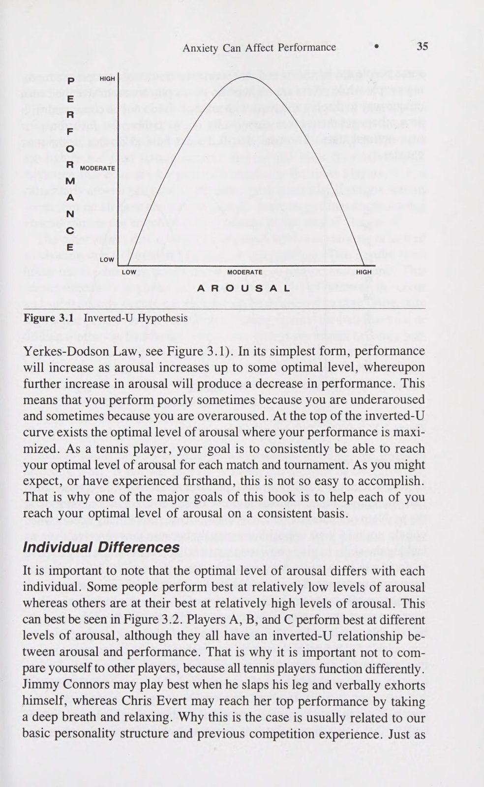
Các cơ trong cơ thể bạn bắt đầu căng lên và việc phân biệt giữa các cơ nên thư giãn và các cơ nên căng sẽ trở nên khó khăn nếu không muốn nói là không thể phân biệt được. Ngay cả các cơ xung quanh phổi cũng bắt đầu căng cứng gây khó thở, khiến nhịp thở trở nên nhanh hơn.
The muscles in your body start to tighten, and it becomes difficult if not impossible to differentiate between muscles that should be relaxed and those that should be tense. Even the muscles surrounding the lungs begin to tighten causing shortness of breath, making breathing more rapid.
Hệ thống này tiếp thêm sinh lực cho bạn trong các tình huống bị đe dọa và cho bạn khả năng phản ứng nhanh trước nguy hiểm. Tuy nhiên, vấn đề sẽ nảy sinh khi hệ thống này được kích hoạt chẳng hạn vì trận đấu quần vợt sắp tới rất căng thẳng hoặc có tính đe dọa. Quần vợt đòi hỏi sự chính xác, tính toán thời gian, sự phối hợp và tư duy rõ ràng chứ không chỉ là sức mạnh vũ phu; do đó, việc dư thừa adrenaline có thể và thường tạo ra mức độ hưng phấn cao, khiến cho việc Lo lắng có thể ảnh hưởng đến hiệu suất trở nên cực kỳ khó thực hiện với độ chính xác cần thiết để kiểm soát hiệu quả các cú đánh của bạn. Sau đây là một số vấn đề thể chất cụ thể do lo lắng quá mức gây ra.
This system energizes you during threatening situations and gives you the ability to react quickly to danger. The problem arises, however, when this system is activated because, for example, the upcoming tennis match is stressful or threatening. Tennis requires precision, timing, coordina- tion, and clear thinking, not just brute strength; thus an excess of adrena- line can, and usually does, generate a high level of arousal which makes Anxiety Can Affect Performance ° 31 it extremely difficult to perform with the precision necessary to effectively control your strokes. The following are some of the specific physical prob- lems caused by excess anxiety.
Căng cơ—Mất khả năng phối hợp Một trong những tác động rõ ràng và gây suy nhược nhất của sự lo lắng quá mức là căng cơ vượt quá mức thích hợp. Để đánh một quả bóng tennis đúng cách đòi hỏi một số cơ nhất định phải co lại trong khi các cơ khác được thư giãn. Ví dụ, khi đánh một quả giao bóng, bạn nên co mạnh các cơ duỗi ở cánh tay đồng thời thả lỏng các cơ gấp. Tuy nhiên, khi bạn trở nên quá lo lắng và căng thẳng, bạn cũng bắt đầu co các cơ gấp; điều này phá hủy sự phối hợp nhịp nhàng, nhịp nhàng của cú giao bóng.
Muscle Tension—Coordination Losses One of the most obvious and debilitating effects of excess anxiety is muscle tension beyond appropriate levels. To properly stroke a tennis ball requires that certain muscles are contracted while other muscles are relaxed. For example, in hitting a serve, you should be vigorously contracting the ex- tensor muscles in your arm while relaxing the flexor muscles. When you become too anxious and uptight, however, you also start to contract your flexor muscles; this destroys the smooth, rhythmic coordination of the serve.
Tương tự như vậy, nếu bạn đánh bằng topspin trong các cú chạm đất, bạn cần phải thả lỏng cổ tay để vượt qua bóng. Nếu cơ cẳng tay và cổ tay của bạn quá căng và căng, điều này sẽ khiến bạn không thể xoay cổ tay trên quả bóng. Khi bạn đánh với ít xoáy lên hơn, bạn sẽ có ít sai sót hơn, điều này thường có nghĩa là sẽ có nhiều lỗi không được thực hiện hơn.
Similarly, if you hit with topspin on your groundstrokes, you need to have a loose wrist to come over the ball. If your forearm and wrist muscles are too tight and tense, this will prevent you from rotating your wrist over the ball. As you hit with less topspin you have less margin for error, which usually means more unforced errors.
Căng cơ tăng thường đi kèm với: giảm lưu lượng máu. Khi bạn trở nên lo lắng và căng thẳng, bạn sẽ mất đi cảm giác quan trọng nhất đối với các cú chạm bóng. Bạn có xu hướng cầm vợt theo kiểu cầm vợt cổ điển, làm mất đi phần lớn sự khéo léo trong trò chơi của bạn. Nếu không có cảm giác, bạn thường mất nhịp điệu và khả năng phối hợp nhịp nhàng, điều này có thể gây ra thảm họa.
Increased muscle tension is accompanied usually by :a decrease in blood flow. When you become anxious and nervous, you lose that all-important feel that is critical to touch shots. You tend to grip the racquet with the classic death grip, taking most of the finesse out of your game. Without feel you usually lose your rhythm and smooth coordination, which can spell disaster.
Giảm tính linh hoạt Một kết quả khác của sự lo lắng quá mức là giảm tính linh hoạt hoặc phạm vi chuyển động.
Reduced Flexibility Another result of excess anxiety is reduced flexibility or range of motion.
Đây thường là kết quả của việc tăng độ căng cơ vừa được thảo luận. Đánh bằng lực thường có nghĩa là tay vợt đang sử dụng cơ chế âm thanh cũng như đưa vợt thực hiện đầy đủ các chuyển động. Tuy nhiên, khi tay vợt căng thẳng, họ co bóp sai cơ (được gọi là cơ đối kháng), điều này hạn chế tính linh hoạt và phạm vi chuyển động của họ.
This is usually a result of the increased muscle tension just discussed. To hit with power usually means that a player is using sound mechanics as well as taking the racquet through a full range of motion. When players get tense, however, they contract the wrong muscles (known as antagonists) which limits their flexibility and range of motion.
Lấy ví dụ về chuyển động giao bóng. Khi bạn muốn đánh một cú giao bóng đầu tiên lớn và mạnh mẽ, bạn nên đưa vợt ra sau đầu, thả đầu vợt xuống vị trí “gãi lưng”, điều này cho phép vận tốc đầu vợt lớn hơn cũng như tạo ra cú búng cổ tay mạnh mẽ.
Take for example the service motion. When you want to hit a big, power- ful first serve, you should be bringing your racquet behind your head, dropping the racquet head to the “‘scratch your back’’ position.
Vấn đề nảy sinh là sự căng cơ quá mức ở cơ cẳng tay và cơ vai của bạn có thể làm giảm động tác vung vợt sau của bạn, do đó khiến bạn không thể đưa đầu vợt vào đúng vị trí. Những cơ này cần được thả lỏng trong quá trình chuẩn bị cho cú vung vợt sau, nhưng nhiều tay vợt quần vợt có xu hướng co tất cả các cơ của họ khi cố gắng thực hiện một cú giao bóng mạnh. Nếu bạn quan sát John McEnroe giao bóng, bạn sẽ nhận thấy rằng anh ấy rất chậm chạp, thận trọng và thoải mái khi cầm vợt lại để chuẩn bị cho quả giao bóng.
This allows for greater velocity of the racquet head as well as a forceful wrist snap. The problem that arises is that excess muscle tension in your forearm and shoulder muscles can reduce your backswing, thus preventing you from getting your racquet head in the proper position. These muscles need to be relaxed during the preparation of the backswing, but many tennis players tend to contract all of their muscles when trying to hit a hard serve. If
Điều này cho phép anh ta có phạm vi chuyển động lớn nhất để anh ta có thể tạo ra nhiều vận tốc hơn và cú búng cổ tay khi thực hiện cú xoay về phía trước.
32 e The Mental ADvantage you watch John McEnroe serve you will notice that he is very slow, deliber- ate, and relaxed as he takes his racquet back in preparation for the serve.
Một lĩnh vực khác mà sự suy giảm tính linh hoạt do căng cơ có thể ảnh hưởng xấu đến trận đấu quần vợt của bạn. trong phần tiếp theo. Bạn nhận thức rõ tầm quan trọng của việc theo dõi các cú đánh của mình để tăng khả năng kiểm soát và sức mạnh. Tuy nhiên, khi bạn quá căng thẳng, bạn có xu hướng bắt đầu đẩy bóng mà không thực hiện hoặc không thực hiện động tác nào cả.
This allows him the greatest range of motion so that he can generate more velocity and wrist snap on the forward swing. Another area in which reduced flexibility due to muscle tension can ad- versely affect your tennis game is. in the follow-through. You are well aware of how important it is to follow through on your shots to increase control and power.
Mệt mỏi Một trong những hậu quả của sự lo lắng quá mức là bạn có xu hướng dễ mệt mỏi hơn. Việc co cơ trong thời gian dài cuối cùng sẽ làm cơ bị mỏi, điều này xảy ra khi bạn căng thẳng vì chúng ta có xu hướng co các cơ không phù hợp trong thời gian dài. Ví dụ, nhiều tay vợt quần vợt bị căng cơ ở cổ và vai; đây là nơi thường xuyên biểu hiện sự căng thẳng quá mức. Không có gì lạ khi thấy nhiều tay vợt hàng đầu lăn đầu để giảm căng thẳng và mệt mỏi ở vùng vai và cổ.
When you get too tense, however, you tend to start pushing the ball with little or no follow-through at all. Fatigue One of the by-products of excess anxiety is that you tend to become more easily fatigued. Contracting a muscle for prolonged periods of time will eventually tire out the muscle, which is what happens when you are tense since we tend to contract inappropriate muscles for extended periods of time. For example, many tennis players get tight in their neck and shoulder muscles; this is a common place where excess tension is manifested.
Sự lo lắng quá mức được biểu hiện như thế nào về mặt tâm lý Tôi vừa thảo luận về mức độ lo lắng cao có thể ảnh hưởng tiêu cực đến bạn từ quan điểm sinh lý. Lo lắng quá mức cũng có thể gây ra một số tác động bất lợi về mặt tâm lý bao gồm suy giảm khả năng tập trung, khả năng phán đoán kém và tinh thần mệt mỏi.
It is not uncommon to see a lot of the top players rolling their heads around in order to reduce tension and fatigue in the shoulder and neck area. How Excess Anxiety Is Manifested Psychologically I have just discussed how high levels of anxiety can negatively affect you from a physiological point of view.
Giảm khả năng tập trung Một trong những cách mà quá nhiều căng thẳng có thể ảnh hưởng đến bạn là làm tổn thương khả năng tập trung của bạn. Sự lo lắng có thể khiến bạn mất tập trung và cản trở khả năng tập trung vào điểm đang diễn ra. Khi bạn lo lắng, bạn có nhiều khả năng tập trung vào những lo lắng và lo lắng hơn là nhiệm vụ trước mắt. Hãy lấy một tình huống điển hình là bạn thắng set đầu tiên và dẫn trước 5-4 ở set thứ hai, giao bóng cho trận đấu. Khi bạn sắp kết thúc trận đấu, bạn bắt đầu trò chơi bằng cách thua điểm đầu tiên và bây giờ bị thua 15. Đột nhiên bạn bắt đầu hơi lo lắng và bắt đầu nghĩ về điều gì có thể xảy ra nếu bạn thua trò chơi này. Bạn nghĩ đến khả năng thua set và phải chơi set thứ ba; và sự lo lắng có thể ảnh hưởng đến hiệu suất thì bạn thậm chí có thể thua toàn bộ trận đấu và mọi người sẽ nói rằng bạn bị nghẹn. Tất cả những suy nghĩ này đều gây xao lãng và vô nghĩa: chúng không liên quan gì đến việc thi đấu và giành được 4 điểm tiếp theo. Như vậy, sự tập trung của bạn bị mất đi và bạn không thể tập trung vào những gì mình phải làm để kết thúc trận đấu. Thật không may, kịch bản này (và những kịch bản khác tương tự) là điển hình đối với nhiều tay vợt quần vợt, khiến họ không thể phát huy hết tiềm năng của mình. Tôi sẽ thảo luận sâu hơn về mối quan hệ giữa sự lo lắng và sự tập trung trong chương 5 và 6.
Excess anxiety can also have some psychologically detrimental effects including impaired concentration, poor judgment, and mental fatigue. Reduced Concentration One of the ways in which too much tension can affect you is by hurting your concentration. Anxiety can distract you and hamper your ability to focus on the point being played. When you are anxious, you are more likely to focus on worries and anxiety rather than the task at hand. Let’s take a typical situation in which you have won the first set and are up 5-4 in the second set, serving for the match. As you are on the brink of closing out the match, you start the game by losing the first point and are now down love-15. All of a sudden you begin to get a little anxious and start to think about what might happen if you lose this game. You think about the possibility of losing the set and having to play a third set; and Anxiety Can Affect Performance ° 33 then you might even lose the entire match and everyone will say that you choked. All of these thoughts are distracting and meaningless: they have nothing to do with playing and winning the next four points. Thus, your concentration is broken and you cannot focus on what you have to do to close out the match. Unfortunately, this scenario (and others like it) is typical for many tennis players, which keeps them from playing up to their potential. I will discuss the relationship between anxiety and concentra- tion in much greater depth in chapters 5 and 6.
Suy giảm chiến lược và khả năng phán đoán chiến thuật Một lĩnh vực vấn đề thứ hai phát sinh do sự lo lắng ngày càng gia tăng liên quan đến chiến lược và chiến thuật. Phản ứng điển hình là khi sự lo lắng của bạn tăng lên, bạn có xu hướng bắt đầu đưa ra những quyết định và phán đoán không phù hợp với việc chơi quần vợt theo tỷ lệ. Một sai lầm mà tôi từng thấy ở nhiều tay vợt quần vợt khi họ trở nên lo lắng hơn là họ ngừng chơi và quên mất kế hoạch thi đấu của mình. Hãy nhớ lại ví dụ ở trên trong đó một đấu thủ đang giao bóng cho trận đấu. Tôi thường thấy các tay vợt bắt đầu chọn những cú đánh mà họ chưa sử dụng trước đó trong trận đấu; nghĩa là, một đấu thủ có thể đã vào vị trí giao bóng cho trận đấu bằng cách giao bóng và vô lê ở hầu hết mọi điểm. Tuy nhiên, sau khi bị vượt qua bởi một cú trả giao bóng tuyệt vời, tay vợt cảm thấy lo lắng về việc thua trò chơi và quyết định ở lại đường cuối sân và thực hiện các cú đánh tiếp đất. Điều này thường dẫn đến việc nghỉ giao bóng vì đây không phải là chiến lược tối ưu để giành điểm trước đối thủ cụ thể này.
Impaired Strategy and Tactical Judgment A second problem area that arises due to increased anxiety concerns strategy and tactics. The typical reaction is that, as your anxiety increases, you tend to start making decisions and judgments that are not consistent with playing percentage tennis. One mistake I have seen in many tennis players as they become more anxious is that they stop playing their game and for- get about their game plan. Recall the example given above in which a player is serving for the match. I have often seen players start to select shots that they had not used earlier in the match; that is, a player may have come into the position of serving for the match by serving and volleying on almost every point. After being passed by a great return of serve, however, the player gets nervous about losing the game and decides to stay on the baseline and trade groundstrokes. This usually results in a break of serve because it is not the optimal strategy to win points against this particular opponent. Anxiety can affect your judgment on not only choosing the proper shot but also deciding how to hit that shot.
Sự lo lắng có thể ảnh hưởng đến khả năng phán đoán của bạn trong việc không chỉ chọn cú đánh thích hợp mà còn quyết định cách đánh cú đánh đó. Khi áp lực tiếp tục gia tăng, tôi thường thấy các tay vợt đánh quá mạnh hoặc bắt đầu đẩy bóng.
When the pressure continues to build, I have often seen tennis players either overhit or start to push the ball. Anxiety can cause you to overhit and go for too much because the longer a point goes on, the more anxious you might become.
Sự lo lắng có thể khiến bạn nỗ lực quá mức và cố gắng quá nhiều vì một điểm càng kéo dài, bạn càng trở nên lo lắng hơn. Để tránh những cảm giác lo lắng và căng thẳng này, họ thực hiện cú đánh có tỷ lệ thấp để kết thúc vấn đề, bằng cách này hay cách khác. Ngược lại, họ có thể bắt đầu đẩy bóng vì sợ đánh ra ngoài và phạm lỗi. Vì vậy, họ hoặc kết thúc bằng một trò chơi đẩy bóng với đối thủ (như trong nhiều trận đấu cấp cơ sở khi mỗi quả bóng đi qua lưới 20 feet) hoặc bằng cách đẩy đối thủ, họ để đối thủ tấn công và lao vào lưới để gây áp lực cho đối thủ mắc sai lầm. Trong cả hai trường hợp, sự lo lắng của họ đã tạo ra một chiến lược không phù hợp với việc để họ phát huy hết tiềm năng của mình.
To avoid these feel- ings of anxiety and tension they go for a low-percentage shot in order to end the point, one way or another. Conversely, they might start to push the ball because they are afraid to hit out and make a mistake. So, they either wind up in a pushing game with their opponents (as in many junior matches where each ball clears the net by 20 feet) or, by pushing with their opponents, they let them take the offensive and come to net to pres- sure them into a mistake. In either case, their anxiety has produced a strategy that is inconsistent with letting them play up to their potential. Giving Up—Stop Trying Anxiety can do more than temporarily wreck your concentration or ruin your tactical judgment. On a more global level, excess anxiety can arrest
Từ bỏ—Hãy ngừng cố gắng Sự lo lắng có thể làm nhiều việc hơn là tạm thời phá hỏng sự tập trung hoặc phá hỏng khả năng phán đoán chiến thuật của bạn. Ở cấp độ toàn cầu hơn, sự lo lắng quá mức có thể cản trở sự phát triển các kỹ năng của bạn và ảnh hưởng đến thái độ chung của bạn đối với trò chơi của mình. Điều này có thể xảy ra vì sự lo lắng nói chung là không dễ chịu và điều này thường dẫn đến hiệu suất kém, dẫn đến lo lắng và thất vọng nhiều hơn. Bởi vì việc tránh những điều khó chịu là điều tự nhiên nên bạn có thể hình thành ác cảm hoặc không thích quần vợt để tránh sự thất vọng thêm.
34 e The Mental ADvantage the development of your skills and affect your overall attitude toward your game. This can occur because anxiety is generally unpleasant, and this typically results in poor performance, leading to more anxiety and frus- tration. Because it is natural to avoid what is unpleasant, you can develop an aversion to or dislike for tennis in order to avoid further frustration. Or, you might be so anxious about a particular stroke, like your backhand or volley, that you do everything in your power to get around hitting these shots.
Hoặc, bạn có thể quá lo lắng về một cú đánh cụ thể, chẳng hạn như cú đánh trái tay hoặc cú vô lê của mình, đến mức bạn làm mọi thứ trong khả năng của mình để đánh được những cú đánh này. Tất nhiên, nếu bạn muốn cải thiện cú đánh, bạn phải luyện tập nó nhiều hơn chứ không phải ít hơn.
Of course, if you want to improve a shot, you have to practice it more, not less. In terms of match performance, excess anxiety can cause you to stop trying and not give 100% effort. This occurs because one way to reduce your anxiety is to get off the court as quickly as possible.
Về mặt hiệu quả thi đấu, sự lo lắng quá mức có thể khiến bạn ngừng cố gắng và không nỗ lực 100%. Điều này xảy ra vì một cách để giảm bớt sự lo lắng của bạn là rời sân càng nhanh càng tốt. Để thực hiện được điều này, tất cả những gì bạn phải làm là thực hiện các chuyển động và bạn có thể rời sân ngay lập tức. Tôi đã từng chứng kiến các tay vợt thi đấu “chống tăng” chỉ vì sự lo lắng mà họ cảm thấy quá khó chịu nên cách tốt nhất để giảm bớt căng thẳng là rời khỏi sân. Tất nhiên, đây không phải là giải pháp thích hợp cho vấn đề. Tôi sẽ cố gắng trình bày một số giải pháp khác xuyên suốt cuốn sách. Nhưng trước tiên, chúng ta sẽ xem xét kỹ hơn mối quan hệ giữa hưng phấn và thành tích chơi quần vợt.
To accomplish this, all you have to do is go through the motions, and you can be off the court in no time at all. I have seen players “‘tank’’ matches just be- cause the anxiety they were feeling was so disturbing that the best way to relieve the tension was to get off the court. Of course, this is not the proper solution to the problem. I will try to present some other solutions throughout the book. But first, we will take a closer look at the relation- ship between arousal and tennis performance. Arousal-Performance Relationship For many years, coaches across various sports have tried to psych up and pump up their athletes for the big match, game, or traditional rival.
Mối quan hệ kích thích-hiệu suất Trong nhiều năm, các huấn luyện viên ở nhiều môn thể thao khác nhau đã cố gắng nâng cao tinh thần và nâng cao tinh thần cho các vận động viên của họ cho trận đấu lớn, trận đấu hoặc đối thủ truyền thống. Dựa trên nghiên cứu và quan sát sâu rộng, rõ ràng là cách tiếp cận được sử dụng quá nhiều trong bài phát biểu “Thắng một cho Gipper” trong phòng thay đồ không nhất thiết là cách tốt nhất để tạo ra sự hưng phấn và tối đa hóa hiệu suất. Các chiến lược hạ nhục, hạ nhục, xúc phạm, mắng mỏ, hoặc, theo một cách nào đó, lăng mạ các vận động viên bằng lời nói cũng không hiệu quả trong hầu hết các tình huống. Loại kỹ thuật tạo động lực này thường sẽ khiến tay vợt trở nên mất tinh thần thay vì phấn khích. Trên thực tế, đây là một trong những điểm khác biệt quan trọng nhất mà một tay vợt có thể tạo ra. Trạng thái mất tinh thần là do lo lắng và lo lắng dẫn đến hưng phấn quá mức. Bạn phải học cách đạt đến mức độ hưng phấn tối ưu để có thể phát huy hết tiềm năng của mình.
Based on extensive research and observation, it is now obvious that the over- used approach of the ‘‘Win one for the Gipper’’ speech in the locker room is not necessarily the best way to generate arousal and maximize perfor- mance. Strategies for humiliating, degrading, insulting, berating, or, in some fashion, verbally abusing athletes also do not work in most situa- tions. This kind of motivational technique will usually result in the players becoming psyched out instead of psyched up. In fact, this is one of the most important distinctions a tennis player can make. Being psyched out is caused by worry and anxiety which leads to overarousal. You have to learn to reach your optimal level of arousal so that you can perform up to your potential. Your Optimal Level of Arousal Research has demonstrated that the relationship between arousal and perfor- mance can best be described as an inverted-U curve (also known as the
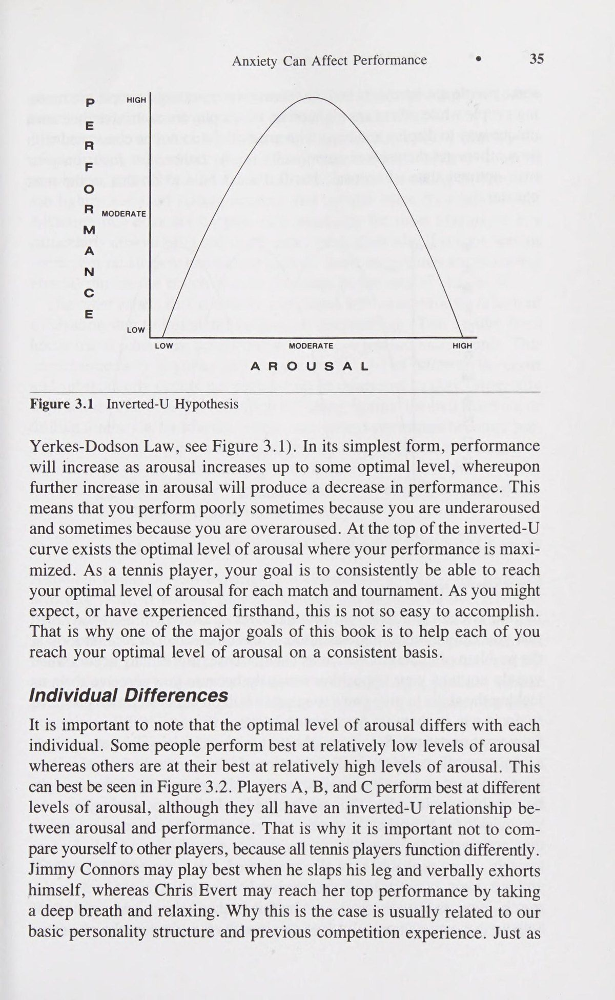
Mức độ kích thích tối ưu của bạn Nghiên cứu đã chứng minh rằng mối quan hệ giữa kích thích và hiệu suất có thể được mô tả tốt nhất dưới dạng đường cong Chữ U ngược (The Inverted-U) (còn được gọi là Sự lo lắng có thể ảnh hưởng đến hiệu suất CAO TRUNG BÌNH mo2z2rpe Anxiety Can Affect Performance ° 35 HIGH MODERATE mo2z2rpe<ezwvontwvpmeidr LOW LOW MODERATE HIGH AROUSAL Figure 3.1 Inverted-U Hypothesis Yerkes-Dodson Law, see Figure 3.1). In its simplest form, performance will increase as arousal increases up to some optimal level, whereupon further increase in arousal will produce a decrease in performance. This means that you perform poorly sometimes because you are underaroused and sometimes because you are overaroused. At the top of the inverted-U curve exists the optimal level of arousal where your performance is maxi- mized. As a tennis player, your goal is to consistently be able to reach your optimal level of arousal for each match and tournament. As you might expect, or have experienced firsthand, this is not so easy to accomplish.
Đó là lý do tại sao một trong những mục tiêu chính của cuốn sách này là giúp mỗi bạn đạt được mức độ hưng phấn tối ưu một cách nhất quán.
That is why one of the major goals of this book is to help each of you reach your optimal level of arousal on a consistent basis.
Sự khác biệt giữa các cá nhân Điều quan trọng cần lưu ý là mức độ kích thích tối ưu ở mỗi cá nhân là khác nhau. Một số người thể hiện tốt nhất ở mức độ kích thích tương đối thấp trong khi những người khác lại thể hiện tốt nhất ở mức độ kích thích tương đối cao. Điều này có thể được thấy rõ nhất trong Hình 3.2. Tay vợt A, B và C thể hiện tốt nhất ở các mức độ hưng phấn khác nhau, mặc dù tất cả họ đều có mối quan hệ Chữ U ngược (The Inverted-U) giữa hưng phấn và hiệu suất. Đó là lý do tại sao điều quan trọng là không so sánh bản thân với những tay vợt khác, bởi vì tất cả những tay vợt quần vợt đều hoạt động khác nhau.
Individual Differences It is important to note that the optimal level of arousal differs with each individual. Some people perform best at relatively low levels of arousal whereas others are at their best at relatively high levels of arousal. This can best be seen in Figure 3.2. Players A, B, and C perform best at different levels of arousal, although they all have an inverted-U relationship be- tween arousal and performance. That is why it is important not to com- pare yourself to other players, because all tennis players function differently.
Jimmy Connors có thể chơi tốt nhất khi anh ấy vỗ vào chân và tự động viên bản thân bằng lời nói, trong khi Chris Evert có thể đạt được thành tích cao nhất bằng cách hít một hơi thật sâu và thư giãn. Tại sao lại như vậy thường liên quan đến cấu trúc tính cách cơ bản của chúng ta và kinh nghiệm thi đấu trước đó. Cũng giống như một số người là người hướng nội và những người khác là người hướng ngoại, hoặc một số người là người buổi sáng trong khi những người khác là cú đêm, mỗi tay vợt quần vợt đều có cách riêng để thể hiện và đối phó với sự hưng phấn. Vì vậy, đừng quan tâm đến việc người khác chuẩn bị sẵn sàng về mặt cảm xúc như thế nào; đúng hơn, chỉ cần tập trung vào trạng thái kích thích tối ưu của riêng bạn. Tôi sẽ thảo luận cách thực hiện điều này trong chương tiếp theo.
Jimmy Connors may play best when he slaps his leg and verbally exhorts himself, whereas Chris Evert may reach her top performance by taking a deep breath and relaxing. Why this is the case is usually related to our basic personality structure and previous competition experience. Just as 36 ° The Mental ADvantage some people are introverts and others extroverts, or some people are morn- ing people while others are night owls, tennis players each have their own unique way to display and cope with arousal. So do not be concerned with how others get themselves emotionally ready; rather, just focus on your Own optimal state of arousal. I will discuss how to do this in the next chapter.
Pp CAO E R F (e) R VỪA PHẢI NGƯỜI ĐÀN ÔNG N Cc E Thấp THẤP TRUNG BÌNH CAO KHIẾN KHÍCH Hình 3.2 Sự khác biệt của từng cá nhân trong việc đạt được mức kích thích tối ưu Khi bạn cố gắng đạt được mức kích thích tối ưu, người ta đã lưu ý rằng bạn có thể bị kích thích quá mức hoặc quá mức. Đầu tiên chúng ta hãy xem xét vấn đề thiếu kích thích. Theo nghĩa cổ điển, điều này thường xảy ra khi bạn không coi trọng đối thủ của mình vì bạn cho rằng họ thiếu kỹ năng để tạo ra một trận đấu khó khăn cho bạn. Bạn tin rằng tất cả những gì bạn phải làm để giành chiến thắng là có mặt trong một trận đấu vì bạn mong đợi rất ít sự phản kháng từ đối thủ. Vì vậy, bạn có thể bắt đầu một cách thiếu thận trọng, nỗ lực tối thiểu và không đạt được vị trí dẫn đầu trong trò chơi của mình. Đồng thời, đối thủ của bạn có thể cảm nhận được cơ hội này và bắt đầu tin rằng có thể giành chiến thắng ngày hôm nay, từ đó nâng cao trình độ trò chơi của người đó. Khi bạn nhanh chóng bị tụt lại phía sau trong trận đấu, bạn nhận ra rằng đối thủ mạnh hơn dự đoán và bạn cố gắng đưa trận đấu của mình trở lại đúng hướng. Thật không may, như tất cả chúng ta đều đã trải qua, việc này không dễ thực hiện. Một khi bạn đã thất bại, bạn cố gắng quá mức, cố gắng hồi hộp để quay trở lại trận đấu. Sự lo lắng của bạn tăng lên khi bạn càng bị tụt lại phía sau và bạn không thể tin rằng mình thực sự có thể thua trận đấu này. Đồng thời, thành phần op-Lo lắng có thể ảnh hưởng đến hiệu suất SH) của bạn ngày càng trở nên tự tin và chơi tốt hơn bình thường, điều này khiến việc quay trở lại trở nên đặc biệt khó khăn.
Pp HIGH - = E R F (e) R MODERATE M A N Cc E Low LOW MODERATE HIGH AROUSAL Figure 3.2 Individual Differences in Achieving Optimal Arousal Underarousal In your attempt to reach your optimal level of arousal, it has been noted that you can be either underaroused or overaroused. Let us first look at the problem of underarousal. In its classic sense, this usually occurs when you do not take your opposition seriously because you perceive them as lacking the skills to give you a tough match. You believe that all you have to do to win is show up for a match because you expect little resistance from your opponent. So, you might start out lackadaisically, putting forth a minimum effort and not being at the top of your game. At the same time, your opponent may sense this opportunity and begin to believe that it might be possible to win today, thus raising the level of that person’s game. As you quickly fall behind in the match, you realize that the opponent is tougher than anticipated and you attempt to get your game back on track. Unfor- tunately, as we probably have all experienced, this is not easy to do. Once you are down, you try too hard, anxiously attempting to get back in the match. Your anxiety increases as you fall further behind, and you cannot believe that you can actually lose this match. Simultaneously, your op- Anxiety Can Affect Performance ° SH) ponent is becoming more and more confident and is playing better than usual, which makes it especially difficult to come back.
Trong công việc của tôi với các vận động viên quần vợt, kịch bản này là kịch bản mà tôi thường xuyên nghe thấy. Trên thực tế, khi tôi yêu cầu tay vợt liệt kê những điểm yếu của họ từ quan điểm tinh thần, một trong những điều nổi lên luôn là coi thường đối thủ quá nhẹ và sau đó trở nên lo lắng và căng thẳng khi họ bị tụt lại phía sau.
In my work with tennis players this scenario is one that I hear all too often. In fact, when I ask players to list their weaknesses from a mental standpoint, invariably one of the things that surfaces is taking an opponent too lightly and then getting nervous and uptight when they fall behind.
Mặc dù điều này không xảy ra thường xuyên đối với hầu hết tay vợt, nhưng đó là một trải nghiệm đặc biệt chán nản và tốn kém, đặc biệt nếu bạn nghiêm túc về thứ hạng hoặc thành tích giải đấu của mình. Một số gợi ý để tăng hưng phấn trong trận đấu sẽ được cung cấp ở cuối chương 4.
Although this does not happen with regularity for most players, it is a particularly discouraging and costly experience, especially if you are serious about your rankings or tournament records. Some suggestions for increasing arousal during the match will be provided at the end of chapter 4.
Khía cạnh khác thường liên quan đến tình trạng thiếu hưng phấn là thiếu động lực do buồn chán, mệt mỏi hoặc tập luyện quá sức. Điều này xuất phát từ lịch trình du lịch bận rộn, các hoạt động xung đột hoặc đơn giản là chơi tennis quá nhiều. Điều này đặc biệt xảy ra ở những tay vợt trẻ, những người phải thi đấu nhiều giờ trên sân và sau đó không thể có hứng thú hoặc động lực để thi đấu, đặc biệt là trong luyện tập. Việc lặp đi lặp lại liên tục các cú đánh vào máy bóng hoặc thực hiện các cú thuận tay, trái tay, giao bóng và vô lê đôi khi trở nên nhàm chán và làm suy yếu động lực cũng như ham muốn. Điều này dẫn đến những trận đấu mà tay vợt thậm chí không muốn có mặt trên sân, dẫn đến nỗ lực hết mình ít hơn. Các cách nâng cao động lực thông qua việc đặt mục tiêu sẽ được trình bày ở chương 11.
The other aspect that is usually associated with underarousal is lack of motivation due to boredom, fatigue, or overtraining. This results from hectic travel schedules, conflicting activities, or just too much tennis. This occurs especially in young players who put in a lot of hours on the court and subsequently cannot get pumped up or motivated to play, especially in practice. The constant repetition of hitting against the ball machine or drilling forehands, backhands, serves, and volleys sometimes becomes bor- ing and undermines motivation and desire. This carries over to matches in which the player does not even want to be on the court, which results in a less than all-out effort. Ways to enhance motivation through goal set- ting will be presented in chapter 11.
Quá hưng phấn Mặc dù đôi khi những tay vợt quần vợt cũng cảm thấy thiếu phấn khích, nhưng vấn đề ảnh hưởng đến hầu hết, nếu không phải tất cả, là tay vợt đang quá lo lắng hoặc quá hưng phấn.
Overarousal Although tennis players experience underarousal at times, the problem affecting most, if not all, players is being too anxious or overaroused.
Xét về mối quan hệ Chữ U ngược (The Inverted-U), bạn đang hoạt động ở mức vượt quá mức kích thích tối ưu, điều này có thể gây ra các vấn đề về hiệu suất. Ở phần đầu của chương này, tôi đã thảo luận về nguồn gốc của sự lo lắng quá mức đối với tay vợt quần vợt cũng như lý do và bằng cách nào điều này có thể tạo ra thành tích dưới mức trung bình. Bản chất cá nhân của trò chơi quần vợt, hệ thống tính điểm (trong đó mỗi trận đấu là một thực thể riêng biệt và do đó dẫn trước 6-0, 5-0 không đảm bảo chiến thắng) và tính chất chính xác của trò chơi khiến tay vợt quần vợt trở thành mục tiêu hàng đầu của sự căng thẳng và cảm giác lo sợ. Nhiều chiến lược và kỹ thuật khác nhau sẽ được đề xuất trong chương tiếp theo để giúp bạn đối phó với nỗi lo lắng của mình một cách hiệu quả hơn.
In terms of the inverted-U relationship, you are functioning at a point past your optimal level of arousal which can cause performance problems. At the outset of this chapter, I discussed the sources of excess anxiety for tennis players as well as why and how this can, in turn, produce subpar performance. The individualized nature of the game of tennis, the scor- ing system (in which each game is a separate entity and thus a 6-0, 5-0 lead does not insure a victory), and the exacting nature of the game make tennis players prime targets for nerves and feelings of apprehension. Various strategies and techniques will be suggested in the next chapter to help you more effectively cope with your anxieties.
Tóm tắt Chương này đã giúp bạn hiểu rõ hơn về cách thức và lý do tại sao sự lo lắng và áp lực quá mức có thể ảnh hưởng đến hiệu suất của bạn. Điều đầu tiên cần làm là nhận ra điều gì khiến bạn căng thẳng, vì những điều khác nhau sẽ khiến những người khác nhau khó chịu. Khi áp lực quá cao, nó có thể dẫn đến nhiều suy sụp về thể chất và tinh thần, làm gián đoạn trò chơi của bạn và làm mất đi niềm vui khi chơi. Điều quan trọng là cố gắng tìm mức độ kích thích tối ưu cho bạn; quá ít hoặc quá nhiều kích thích sẽ ảnh hưởng đến hiệu suất của bạn về mặt tinh thần. Điều này không dễ thực hiện; nhiều tay vợt đấu tranh để duy trì sự cân bằng giữa việc quá phấn khích và phấn khích với việc quá thờ ơ và thiếu hưng phấn. Chương tiếp theo sẽ cung cấp cho bạn các bài tập, kỹ thuật và gợi ý để giúp bạn đạt được và duy trì trạng thái hiệu suất tối ưu.
Summary This chapter has provided you with a better understanding of how and why excess anxiety and pressure can affect your performance.
Kỹ năng tâm lý #1:
The first
Điều chỉnh sự lo lắng e ary Chương trước đã trình bày các nguồn gốc của sự lo lắng, những ảnh hưởng về tinh thần và thể chất cũng như mối quan hệ của nó với hiệu suất. Khả năng kiểm soát mức độ lo lắng của bạn là vô cùng quan trọng để đạt được trạng thái hoạt động lý tưởng. Điểm khởi đầu quan trọng là phát triển nhận thức sâu sắc về mức độ kích thích tối ưu của chính bạn.
38 ° The Mental ADvantage thing to do is to realize what makes you uptight, as different things upset different people. When pressure gets too high it can result in a variety of physical and mental breakdowns which can disrupt your game and take the fun out of playing. The key thing is to try to find an arousal level that is optimal for you; too little or too much arousal will mentally hurt your performance.
Tự nhận thức về các trạng thái kích thích và lo lắng Một trong những bước đầu tiên cần thực hiện để kiểm soát mức độ kích thích của bạn là nhận thức rõ hơn về những cảm giác này trong quá trình luyện tập và thi đấu. Điều này liên quan đến việc tự giám sát các trạng thái cảm giác của bạn và nhận ra những trạng thái này liên quan như thế nào đến kết quả thực hiện của bạn. Nếu bạn giống như hầu hết các vận động viên quần vợt mà tôi từng làm việc cùng, bạn sẽ có thể xác định được một số trạng thái cảm giác nhất định liên quan đến thành tích cao nhất và các trạng thái khác liên quan đến thành tích kém. Để nâng cao nhận thức về trạng thái hưng phấn của bạn, tôi khuyên bạn nên thực hiện các quy trình sau.
This is not easy to do; many players struggle to maintain a balance between being too pumped up and excited and being too lethar- gic and underaroused. The next chapter will provide you with exercises, techniques, and suggestions to help you reach and maintain your optimal performance state. | \ CHAPTER 4 Psychological Skill #1: Regulating Anxiety e ary The previous chapter presented the sources of anxiety, its mental and physi- cal effects, and its relationship to performance. Being able to control your anxiety level is extremely important for achieving your ideal performance state. An important starting point is to develop a keen awareness of your own optimal arousal level. Self-Awareness of Arousal and Anxiety States One of the first steps to take in controlling your arousal levels is to be- come more aware of these feelings during practice and competition. This involves self-monitoring your feeling states and recognizing how these are Se
Trước tiên, hãy nghĩ lại màn trình diễn tốt nhất của bạn, trong thời gian đó bạn thực sự ở trong khu vực. Hãy cố gắng hình dung trận đấu thực tế một cách rõ ràng nhất có thể. Ngoài ra, hãy cố gắng tập trung vào những gì bạn đang cảm thấy và suy nghĩ trên sân. Đừng cố gắng vội vàng; hãy dành ít nhất năm phút để sống lại ngày đặc biệt này trong trải nghiệm quần vợt của bạn. Bây giờ, hãy hoàn thành các mục được trình bày trong Bảng 4.1. Trong trường hợp cụ thể này, vì bạn đang xây dựng lại thành tích tốt nhất của mình nên bạn sẽ khoanh tròn “1”. Chuyển sang mục thứ hai, nếu bạn cảm thấy lo lắng ở mức độ vừa phải, bạn có thể khoanh tròn “4”. Không có câu trả lời đúng hay sai; bạn đang làm điều này để có thể xử lý tốt hơn mối quan hệ giữa trạng thái tâm lý của chính bạn và thành tích chơi quần vợt. Sau khi thực hiện điều này để đạt được hiệu suất tốt nhất, hãy làm điều tương tự đối với hiệu suất kém nhất của bạn.
40 e The Mental ADvantage associated with your performance outcomes. If you are like most of the tennis players I have worked with, you will be able to identify certain feeling states that are associated with top performances and other states that are associated with poor performances. To accomplish this increased aware- ness of your arousal states, I recommend the following procedures. First, think back to your best performance, during which you were really in the zone. Try to visualize the actual match as clearly as possible. Also try to focus on what you were feeling and thinking on the court. Do not try to rush yourself; take at least five minutes to relive this special day in your tennis experience. Now, complete the items presented in Table 4.1. In this particular case, because you are reconstructing your best perfor- mance, you would circle ‘‘1.’” Moving on to the second item, if you felt moderately anxious, you might circle ‘“4.’’ There are no right or wrong answers; you are doing this to get a better handle on the relationship be- tween your own psychological states and tennis performance.
Bảng 4.1 Danh sách kiểm tra các trạng thái thành tích Chơi Sa Ome cực tốt.
After do- ing this for your best performance, do the same thing for your worst performance.
Chơi cực kỳ kém Cực kỳ thoải mái Ve52 VẬY tôi:
Table 4.1 Checklist of Performance States Played extremely well 12 3 04 Sa Ome.
Cực kỳ lo lắng Cực kỳ tự tin 1) 2.3.4 Dae Không tự tin chút nào Cực kỳ phấn khích 1.2 ee Oe.
Played extremely poorly Extremely relaxed Ve52 23554 SO me: Extremely anxious Extremely confident 1) 2.3.4 Dae Not confident at all Extremely movitated 1.2 3 4 ee Oe.
Không có động lực chút nào Kiểm soát hoàn toàn 12.
Not motivated at all Complete control 12.
32°74.
32°74.
Sen Our Không kiểm soát chút nào Tự động eee ae Onm Suy nghĩ liên tục Cơ bắp thư giãn (Reo ee ae One.
Sen Our No control at all Automatic eee ae Onm Constantly thinking Muscles relaxed (Reo ee ae One.
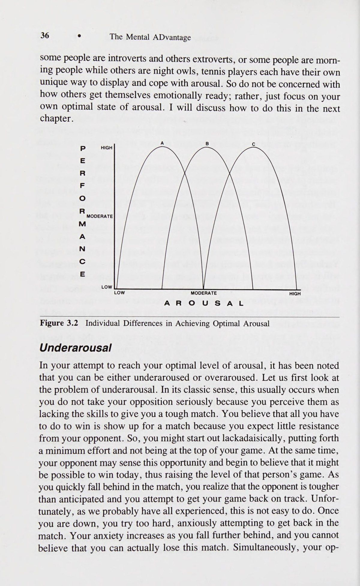
Cơ bắp căng thẳng Cực kỳ sung sức ee er Ah ae Cực kỳ mệt mỏi Đối thoại nội tâm (Self-Talk) tích cực oh Xem By ey Đối thoại nội tâm (Self-Talk) tiêu cực Cực kỳ thú vị [PRE LEY tae Không vui chút nào Tập trung tập trung (Pee ter nee ord Không tập trung Dễ dàng 12 oA iT Nỗ lực rất nhiều Năng lượng cao 1D 232A 6-7 Năng lượng thấp Sau khi bạn hoàn thành bài tập này, hãy so sánh cách bạn phản ứng với hai màn trình diễn. Hầu hết những tay vợt quần vợt điều chỉnh trạng thái cảm xúc của họ đều nhận ra điều đó suy nghĩ và cảm xúc của họ khác biệt rõ rệt khi so sánh việc chơi tốt với chơi kém. Đây chỉ là bước khởi đầu trong quá trình rèn luyện nhận thức của bạn. Điều bạn nên làm bây giờ là tạo một vài bản sao trống của danh sách kiểm tra Điều chỉnh lo âu (Bảng 4.1) và theo dõi trạng thái cảm giác cũng như phong độ của bạn trong vài tuần tới trong cả tình huống luyện tập và thi đấu. Tất nhiên, trạng thái tâm lý của bạn sẽ thay đổi theo từng thời điểm trong suốt trận đấu. Nếu đúng như vậy, hãy chia phần trình diễn của bạn thành hiệp đầu tiên và hiệp thứ hai, hoàn thành danh sách kiểm tra riêng cho từng hiệp.
Muscles tense Extremely energetic ee er Ah ae Extremely fatigued Positive self-talk oh See By ey Negative self-talk Extremely enjoyable [PRE LEY tae No fun at all Focused concentration (Pee ter nee ord Unfocused Effortless 12 oA 6 iT Great effort High energy 1D 232A 6-7 Low energy After you have completed this exercise, compare how you responded to the two performances. Most tennis players who tune into their feeling states recognize that their thoughts and feelings are distinctly different when comparing playing well with playing poorly. This is just the beginning of your awareness training. What you should do now is make several blank Regulating Anxiety ° 41 copies of the checklist (Table 4.1) and monitor your feeling states and performance over the next few weeks in both practice and match situa- tions. Complete the checklist immediately after each outing on the tennis court. Of course, your psychological state will vary from time to time throughout a match. If this is the case, break down your performance into the first set and second set, completing a separate checklist for each one.
Bạn có thể đã cảm thấy một cách nhất định trong bốn ván đầu tiên và sau đó là khác trong suốt phần còn lại của trận đấu, và do đó bạn có thể hoàn thành hai lá bài bằng cách sử dụng tiêu chí này. Bạn chỉ đang ước tính trạng thái cảm giác của mình nên đừng mong đợi sự chính xác tuyệt đối, điều này hầu như không thể xảy ra. Nếu bạn siêng năng thực hiện quy trình này, bạn sẽ ngạc nhiên trước việc nhận thức về trạng thái tinh thần của bạn sẽ được nâng cao nhanh chóng như thế nào. Với nhận thức này, bạn sẽ thực hiện được một bước tiến lớn để đạt được mức độ hưng phấn tối ưu một cách nhất quán. Hãy nhớ rằng quan sát quan trọng nhất mà bạn có thể thực hiện là hiểu được mối quan hệ giữa cảm giác bên trong của bạn và cách bạn thể hiện bên ngoài. Mục tiêu cuối cùng của bạn là đạt được mức độ kiểm soát cao đối với cảm xúc của mình. Các bài tập và chiến lược được cung cấp trong chương này được thiết kế để hoàn thành mục tiêu này. Các bài tập này đặc biệt có liên quan đến việc giảm lo lắng và tăng hưng phấn.
You might have felt a certain way for the first four games and then dif- ferently during the rest of the match, and thus you might complete two cards using this criteria. You are only estimating your feeling states so do not expect absolute precision, which is virtually impossible. If you are diligent about this procedure you will be amazed at how quickly your aware- ness of your mental states will be enhanced. With this awareness you will have taken a giant step to reaching your optimal level of arousal on a con- sistent basis. Remember that the most important observation that you can make is to understand the relationship between how you feel on the inside and how you perform on the outside. Your ultimate objective is to gain a high degree of control over your feelings. The exercises and strategies provided in this chapter are designed to accomplish this goal. The exer- cises are concerned particularly with reducing anxiety and increasing arousal.
Giảm lo âu Mục tiêu chính của chương 3 là nhấn mạnh thực tế rằng lo lắng quá mức có thể tạo ra sự căng cơ không phù hợp và gia tăng, cuối cùng dẫn đến giảm hiệu suất. Khi các cơ của bạn trở nên quá căng, các cử động của bạn sẽ có vẻ vụng về, giật cục, cứng nhắc và thiếu phối hợp. Hầu hết những tay vợt hàng đầu đều khá khéo léo trong việc phát hiện sự gia tăng rất khó nhận thấy của độ căng cơ và thực hiện những điều chỉnh cần thiết. Ví dụ, họ có thể cảm nhận được rằng sự căng thẳng thêm ở vùng vai và cổ sẽ cản trở cảm giác tự nhiên của cơ thể về nhịp điệu và thời gian khi đánh một quả giao bóng.
Reducing Anxiety A major objective of chapter 3 was to highlight the fact that excess anxiety can produce inappropriate and increased muscle tension which ultimately leads to performance decrements. When your muscles become too tense your movements will likely appear awkward, jerky, rigid, and unco- ordinated. Most top tennis players are quite skillful at detecting very subtle increases in muscular tension and make the necessary adjustments. They can sense that extra tension in the shoulder and neck area, for example, will block the body’s natural sense of rhythm and timing when hitting a serve.
Tuy nhiên, một vấn đề phổ biến ở những tay vợt quần vợt là họ có xu hướng căng thẳng tất cả các cơ khi cố gắng đánh với nhiều lực hơn. Trên thực tế, điều ngược lại mới đúng: Đánh hoặc giao bóng tennis mạnh hơn thường đòi hỏi phải thư giãn các nhóm cơ chính hoạt động chống lại các cơ cần thiết để thực hiện một động tác cụ thể. Để tăng sức mạnh trong quần vợt, bạn cần tăng tốc độ đầu vợt và cải thiện cơ học của thân vợt. Đã bao nhiêu lần bạn cố tình thực hiện cú giao bóng của mình với tốc độ 100 dặm/giờ nhưng cuối cùng lại không đánh được mạnh như vậy và mất đi độ chính xác trong quá trình thực hiện? Một số nghiên cứu gần đây đã phát hiện ra rằng việc yêu cầu các vận động viên nỗ lực 80% hoặc 90% sẽ cải thiện thành tích hơn là yêu cầu nỗ lực 100% hoặc 110%. Tương tự như vậy, chỉ cần yêu cầu các vận động viên thư giãn hàm cũng có thể mang lại sự cải thiện về thành tích. Điều quan trọng là phải nhận ra rằng việc thư giãn cơ bắp của bạn có liên quan đến việc đạt được sức mạnh và độ chính xác tối đa và việc cố gắng tập luyện các cú đánh sẽ chỉ dẫn đến mất sức mạnh và giảm độ chính xác. Sau đây là một số kỹ thuật được thiết lập để tạo ra sự thư giãn.
A common problem among tennis players, however, is that they tend to tense up all their muscles when trying to hit with more power. In fact, the opposite is true: Hitting or serving a tennis ball harder usually requires relaxing major muscle groups that work against the muscles required to perform a particular movement. To increase power in tennis you need to increase the speed of your racquet head and improve body mechanics. How many times have you consciously tried to hit your serve 100 miles per hour, ending up not hitting it that hard and losing your accuracy in the 42 e The Mental ADvantage process? Some recent studies have found that asking athletes to give 80% or 90% effort will improve performance more than requiring 100% or 110% effort. Similarly, just asking athletes to relax their jaws has produced performance improvements. It is important to realize that relaxing your muscles is associated with achieving maximum power and accuracy and that trying to muscle out shots will only result in loss of power and decreased accuracy. The following are some established techniques to induce relaxation.
Thư giãn tăng dần (Thư giãn cơ bắp) Để kiểm soát sự lo lắng, có lẽ kỹ thuật thư giãn được sử dụng nhiều nhất trong thể thao đã được phát triển bởi Tiến sĩ Edmund Jacobson.’ Ông gọi đó là thư giãn tăng dần vì bạn tiến bộ từ nhóm cơ này sang nhóm cơ tiếp theo cho đến khi bao phủ tất cả các nhóm cơ chính. Một số nguyên lý chính của thư giãn tiến bộ bao gồm: e Căng thẳng và thư giãn loại trừ lẫn nhau. Không thể nào vừa thư giãn vừa căng thẳng cùng một lúc được.
Progressive Relaxation (Muscle Relaxation) To control anxiety, probably the most utilized relaxation technique in sports was developed by Dr. Edmund Jacobson.‘ He called it progressive re- laxation because you progress from one muscle group to the next until all the major muscle groups are covered. Some of the major tenets of progressive relaxation include the following: e Tension and relaxation are mutually exclusive. It is not pos- sible to be relaxed and tense at the same time.
¢ Có thể tìm hiểu sự khác biệt giữa căng thẳng và không căng thẳng. Mặc dù hầu hết mọi người không đủ nhận thức hoặc đủ nhạy cảm để phân biệt sự tăng hay giảm nhỏ của độ căng cơ, nhưng họ có thể được dạy kỹ năng này.
It is possible to learn the difference between tension and lack of ten- sion. Although most people are not aware or sensitive enough to dis- criminate between small increases or decreases in muscular tension, they can be taught this skill.
¢ Sự thư giãn của cơ thể thông qua việc giảm căng thẳng cơ bắp cũng sẽ làm giảm căng thẳng tinh thần và lo lắng.
Relaxation of the body through decreased muscular tension will also decrease mental tension and anxiety..
e Thư giãn dần dần được thực hiện bằng cách thư giãn và co thắt một cách có hệ thống tất cả các nhóm cơ chính trong cơ thể.
Progressive relaxation is accomplished by systematically relaxing and contracting all major muscle groups in the body.
Hướng dẫn chung.
General Instructions.
Phương pháp thư giãn tăng dần của Jacobson bao gồm việc căng và thư giãn các cơ cụ thể để bạn phát triển nhận thức về sự khác biệt giữa căng thẳng và thư giãn. Cụ thể, kỹ năng này được học bằng cách tạo ra mức độ căng nhất có thể ở một nhóm cơ, học cách xác định cảm giác căng như thế nào, sau đó thư giãn hoàn toàn cơ đó và cảm nhận sự khác biệt. Sự chú ý của bạn tập trung vào cơ và trở nên đủ nhạy cảm để xác định sự căng thẳng ở bất kỳ cơ nào nhằm thư giãn cơ đó. Khi bạn trở nên thành thạo hơn trong kỹ thuật này, bạn sẽ có khả năng nhận biết độ căng ở một cơ cụ thể như cổ và giải phóng độ căng này trước khi thực hiện một điểm quan trọng trong trận đấu. Đây là mục tiêu của sự thư giãn tiến bộ.
Jacobson’s progressive relaxation involves the tensing and relaxing of specific muscles so that you develop an awareness of the difference between tension and relaxation. Specifically, this skill is learned by inducing as much tension as possible in one muscle group, learning to identify what the tension feels like, and then relaxing that muscle completely and feeling the difference. Your attention is focused on the muscle and on becoming sensitive enough to identify tension in any muscle in order to relax that muscle. As you become more skilled in this tech- nique you will be capable of recognizing tension in a specific muscle like the neck and releasing this tension before serving an important point in a match. This is the goal of progressive relaxation.
Mặc dù có nhiều sửa đổi đối với kỹ thuật cơ bản của Jacobson, nhưng vẫn phải đáp ứng một số điều kiện nhất định. Mỗi phương pháp thư giãn tăng dần đều yêu cầu bạn vào tư thế thoải mái, tốt nhất là nằm trên một tấm thảm trên sàn với một chiếc gối nhỏ kê dưới đầu. Hãy thử Điều chỉnh sự lo âu để tìm một khu vực tương đối yên tĩnh, không bị phân tâm và có nhiệt độ dễ chịu. Cởi bỏ hoặc nới lỏng bất kỳ quần áo chật nào, kể cả giày. Đèn nên mờ đi nhưng điều này không cần thiết. Hãy tháo danh bạ của bạn nếu bạn đeo chúng. Bạn nên nhắm mắt lại và hít thở sâu vài lần. Những lần đầu thực hiện bài tập này bạn sẽ mất khoảng 30 phút. Bạn sẽ sớm có thể giảm bớt thời gian này khi học cách thư giãn hiệu quả hơn.
Although there are many modifications to Jacobson’s basic technique, there are certain conditions that must be met. Each approach to progres- sive relaxation requires that you get into a comfortable position, prefer- ably lying on a mat on the floor with a small pillow under your head. Try Regulating Anxiety e 43 to find a relatively quiet, distraction-free area that has a comfortable tem- perature. Remove or loosen any tight clothing including shoes. Lights should be dimmed but this is not essential. Take off your contacts if you wear them. Your eyes should be closed and you should take a couple of deep breaths. The first few times you perform the exercise it will take you approximately 30 minutes. You will soon be able to reduce this time as you learn to relax more effectively.
Như đã đề cập trước đây, mục tiêu cuối cùng là đạt được khả năng thư giãn hoàn toàn trong một khoảng thời gian ngắn và cuối cùng có thể thư giãn theo tín hiệu giữa một tình huống căng thẳng. Với ba hoặc bốn buổi thực hành, nhiều bạn sẽ có thể đạt được sự thư giãn trong vòng năm đến mười phút. Tại thời điểm này, thành phần căng cơ có thể được bỏ qua.
As mentioned previously, the final goal is to acquire the ability to com- pletely relax within a short period of time and eventually be able to relax on cue in the midst of a stressful situation. With three or four practice sessions, many of you will be able to achieve relaxation within five to ten minutes. At this point the muscle tension component can be omitted.
Hướng dẫn cụ thể.
Specific Instructions.
Trong mỗi bước, trước tiên bạn sẽ được yêu cầu căng một nhóm cơ và sau đó thả lỏng nó. Bạn cần chú ý đến cảm giác căng thẳng và thư giãn như thế nào. Giai đoạn căng thẳng sẽ mất khoảng năm đến bảy giây (giai đoạn thư giãn cũng vậy), nhưng đừng làm bản thân mất tập trung bằng cách tập trung quá nhiều vào việc đếm. Căng các cơ cho đến khi bạn thực sự cảm thấy căng và sau đó thả lỏng chúng.
In each step you will be asked to first tense a muscle group and then relax it. You need to pay close attention to how it feels to be tense as opposed to relaxed. The tension phase should take approximately five to seven seconds (as will the relaxation phase), but don’t distract yourself by paying too much attention to counting. Tense the muscles until you can really feel the tension and then relax them.
Lặp lại mỗi bài tập cho mỗi nhóm cơ hai lần trước khi chuyển sang nhóm tiếp theo. Khi bạn trở nên thành thạo và nhận thức hơn, bạn có thể bỏ qua giai đoạn căng thẳng và chỉ tập trung vào thư giãn. Bạn có thể bắt đầu bằng việc nhờ ai đó đọc hướng dẫn cho bạn hoặc bạn có thể ghi âm chúng. Bạn cũng có thể mua một cuộn băng giúp thư giãn dần dần.
Repeat each exercise for each muscle group twice before moving on to the next group. As you become more skilled and aware you can omit the tension phase and just focus on relaxation. You might start by having someone read the directions to you or you might tape them. It is also pos- sible to purchase a progressive relaxation tape.
1. Hãy thoải mái nhất có thể.
1. Get as comfortable as possible..
e Quần áo chật nên được nới lỏng và không được bắt chéo chân.
Tight clothing should be loosened and your legs should not be crossed..
e Hít một hơi thật sâu, thở ra từ từ và trở nên thư giãn nhất có thể.
Take a deep breath, let it out slowly, and become as relaxed as possible.
2. Giơ hai tay lên và duỗi thẳng ra trước mặt. ¢ Bây giờ hãy nắm chặt bằng cả hai tay nhất có thể. ¢ Chú ý sự căng thẳng khó chịu ở bàn tay và các ngón tay của bạn. ¢ Giữ độ căng trong năm giây, sau đó thả độ căng ra một nửa và giữ thêm năm giây.
2. Raise your arms and extend them out in front of you. Now make a fist with both hands as tightly as you can. Notice the uncomfortable tension in your hands and fingers.
© Chú ý sự giảm căng thẳng nhưng cũng tập trung vào sự căng thẳng vẫn còn hiện hữu.
Hold the tension for five seconds, then let the tension out half way and hold for an additional five seconds. © Notice the decrease in tension but also concentrate on the ten- sion that is still present..
e Sau đó để tay bạn thư giãn hoàn toàn.
Then let your hands relax completely.
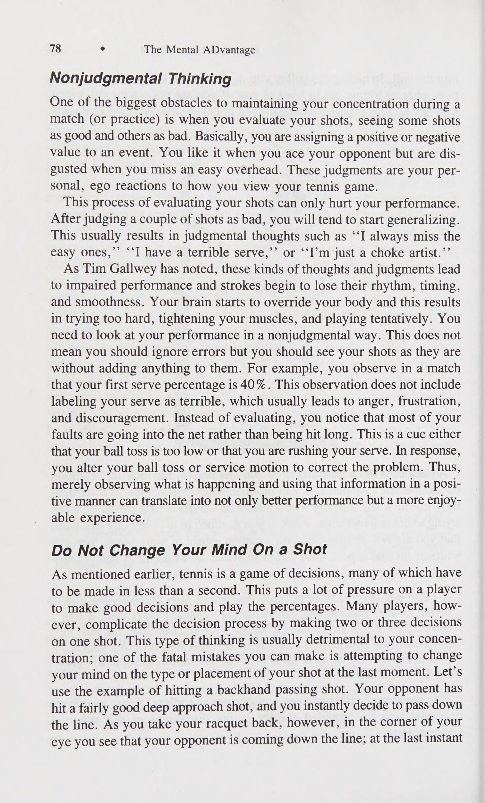
¢ Chú ý sự căng thẳng và khó chịu thoát ra khỏi tay bạn như thế nào và được thay thế bằng cảm giác thoải mái và thư giãn. ¢ Tập trung vào sự tương phản giữa sự căng thẳng mà bạn cảm thấy và sự thư giãn mà bạn đang cảm thấy.
Notice how the tension and discomfort drain from your hands and are replaced by sensations of comfort and relaxation. Focus on the contrast between the tension you felt and the relaxa- tion you now feel.
e ¢ Tập trung thả lỏng tay hoàn toàn trong 10-15 giây. . Căng cứng cánh tay trên của bạn trong năm giây.
e The Mental ADvantage Concentrate on relaxing your hands completely for 10-15 seconds. . Tense your upper arms hard for five seconds.
¢ Tập trung vào cảm giác căng thẳng.
Focus on the feeling of tension.
¢ Sau đó thả lỏng nửa chừng trong năm giây nữa. ¢ Một lần nữa, hãy tập trung vào sự căng thẳng vẫn còn hiện hữu.
Then let the tension out half way for an additional five seconds. Again, focus on the tension that is still present..
e Bây giờ hãy thư giãn hoàn toàn cánh tay trên của bạn trong 10-15 giây và tập trung cẩn thận vào quá trình thư giãn đang phát triển.
Now relax your upper arms completely for 10-15 seconds and focus carefully on the developing relaxation.
¢ Hãy để cánh tay của bạn thả lỏng ở hai bên.
Let your arms rest limply at your sides. .
. Cong ngón chân của bạn càng mạnh càng tốt.
Curl your toes as hard as possible.
¢ Sau năm giây, thả lỏng các ngón chân một nửa và giữ mức độ căng đã giảm thêm trong năm giây nữa.
After five seconds, relax the toes half way and hold the reduced tension for an additional five seconds.
¢ Sau đó thư giãn hoàn toàn các ngón chân và tập trung vào sự thư giãn lan tỏa vào các ngón chân.
Then relax your toes completely and focus on the relaxation spreading into the toes.
¢ Tiếp tục thư giãn các ngón chân trong 10-15 giây.
Continue relaxing your toes for 10-15 seconds. .
. Hướng ngón chân ra xa bạn và căng bàn chân và bắp chân. e Giữ lực căng trong năm giây, thả ra một nửa trong năm giây nữa.
Point your toes away from you and tense your feet and calves.. Hold the tension hard for five seconds, let it out half way for an additional five seconds.
¢ Thư giãn hoàn toàn bàn chân và bắp chân trong 10-15 giây. . Mở rộng chân của bạn và nâng chúng lên cách sàn khoảng 6 inch và căng cơ đùi.
Relax your feet and calves completely for 10-15 seconds. . Extend your legs and raise them approximately six inches above the floor and tense your thigh muscles.
@ Giữ độ căng trong năm giây, thả ra một nửa trong năm giây nữa, sau đó thả lỏng hoàn toàn đùi của bạn. ¢ Tập trung thư giãn hoàn toàn bàn chân, bắp chân và đùi trong khoảng 30 giây.
' @ Hold the tension for five seconds, let it out half way for an addi- tional five seconds, and then relax your thighs completely. Concentrate on totally relaxing your feet, calves, and thighs for about 30 seconds. .
. Căng cơ mông trong 5 giây, sau đó thả lỏng nửa chừng trong 5 giây nữa.
Tense your buttocks for five seconds, then let the tension out half way for another five seconds..
e Cuối cùng, thả lỏng mông hoàn toàn và tập trung vào cảm giác nặng nề và thư giãn.
Finally, relax your buttocks completely and focus on the sensa- tions of heaviness and relaxation.
¢ Tập trung vào việc thư giãn các nhóm cơ khác mà bạn đã xử lý.
Concentrate on also relaxing the other muscle groups that you have already dealt with. .
. Căng cơ bụng hết mức có thể trong năm giây và tập trung vào sức căng.
Tense your stomach muscles as hard as possible for five seconds and concentrate on the tension..
e Sau đó thả lỏng nửa chừng trong năm giây nữa trước khi thư giãn hoàn toàn cơ bụng.
Then let the tension out half way for an additional five seconds before relaxing your stomach muscles completely.
¢ Tập trung vào việc thư giãn lan rộng cho đến khi cơ bụng của bạn được thư giãn hoàn toàn.
Focus on the spreading relaxation until your stomach muscles are completely relaxed. .
. Ấn hai lòng bàn tay vào nhau và đẩy để làm căng cơ ngực và vai.
Press the palms of your hands together and push so as to tense the chest and shoulder muscles.
Phần 2: Làm Chủ Sự Tập Trung — Bốn Chiều Kích Tiêu Điểm Chú Ý Nideffer
Chương 3: Kỹ Năng Tâm Lý Số 1 — Điều Tiết Căng Thẳng & Kỹ Thuật Định Tâm (Centering)
Chapter 3: Psychological Skill #1: Somatic & Cognitive Anxiety Reduction Techniques
10.
10.
11.
11. a 138 14.
một 14.
Regulating Anxiety ° 45 e Hold the tension for five seconds, then let the tension out half way for an additional five seconds.
Điều chỉnh sự lo lắng e Giữ độ căng trong năm giây, sau đó thả lỏng nửa chừng trong năm giây nữa.
Now relax the muscles completely and concentrate on the relaxa- tion until your muscles are completely loose and relaxed. © Concentrate also on the muscle groups that have been previously relaxed.
¢ Bây giờ hãy thư giãn các cơ hoàn toàn và tập trung vào việc thư giãn cho đến khi các cơ của bạn hoàn toàn thả lỏng và thư giãn. © Cũng tập trung vào các nhóm cơ đã được thư giãn trước đó.
Push your shoulders back as far as possible so as to tense your back muscles.. Let the tension out half way after five seconds, hold the reduced tension, and focus on it carefully for an additional five seconds..
Đẩy vai của bạn về phía sau càng xa càng tốt để làm căng cơ lưng.
Relax your back and shoulder muscles completely.
e Để độ căng giảm đi một nửa sau năm giây, giữ độ căng đã giảm và tập trung cẩn thận vào nó trong năm giây nữa. e Thư giãn hoàn toàn cơ lưng và vai.
Focus on the spreading relaxation until they are completely relaxed.
¢ Tập trung vào sự thư giãn lan rộng cho đến khi chúng hoàn toàn thư giãn.
While keeping the muscles of your torso, arms, and legs relaxed, tense your neck muscles by bringing your head forward until your chin digs into your chest..
Trong khi giữ cho các cơ ở thân, cánh tay và chân được thư giãn, hãy căng cơ cổ bằng cách đưa đầu về phía trước cho đến khi cằm chạm vào ngực.
Hold for five seconds, release the tension half way for another five seconds, and then relax your neck completely..
e Giữ trong năm giây, thả lỏng nửa chừng trong năm giây nữa rồi thả lỏng cổ hoàn toàn.
Allow your head to hang comfortably while you focus on the relaxation developing in your neck muscles.
e Để đầu bạn thoải mái trong khi tập trung vào sự thư giãn đang phát triển ở cơ cổ.
Clench your teeth and notice the tension in the muscles of your jaws..
Hãy nghiến chặt răng và chú ý đến sự căng thẳng của cơ hàm. e Sau năm giây, thả lỏng nửa chừng trong năm giây rồi thư giãn hoàn toàn.
After five seconds, let the tension out half way for five seconds and then relax completely..
e Để miệng thư giãn hoàn toàn với đôi môi hơi hé ra và tập trung thư giãn hoàn toàn các cơ này trong 10-15 giây.
Let your mouth relax completely with your lips slightly parted and concentrate on totally relaxing these muscles for 10-15 seconds.
Căng lưỡi của bạn bằng cách đẩy nó vào vòm miệng càng mạnh càng tốt.
Tense your tongue by pushing it into the roof of your mouth as hard as possible.
¢ Giữ trong năm giây, sau đó thả lỏng nửa chừng và giữ thêm năm giây, sau đó thả lỏng lưỡi hoàn toàn.
Hold for five seconds, then let the tension out half way and hold for an additional five seconds, and then relax your tongue completely.
¢ Bây giờ hãy tập trung vào việc thư giãn hoàn toàn các cơ cổ, hàm và lưỡi của bạn.
Focus now on completely relaxing the muscles of your neck, jaw, and tongue.
Nhắm mắt lại, nheo mắt và xoay nhãn cầu lên trên như thể bạn đang nhìn lên.
With your eyes closed, squint and rotate your eyeballs upward as if you were looking up.
¢ Giữ độ căng trong năm giây, sau đó thả lỏng nửa chừng trong năm giây nữa.
Hold the tension for five seconds, then release it half way for an additional five seconds..
e Sau đó hãy thư giãn hoàn toàn đôi mắt của bạn.
Then relax your eyes completely.
e ¢ Tập trung vào sự thư giãn đang phát triển trong mắt bạn và cũng tập trung vào việc thư giãn các cơ mặt khác của bạn.
46 e The Mental ADvantage Focus on the relaxation developing in your eyes and also con- centrate on relaxing your other facial muscles.
15. Hãy nhăn trán và da đầu càng chặt càng tốt. ¢ Giữ độ căng trong năm giây, sau đó thả ra nửa chừng trong năm giây nữa.
15. Wrinkle your forehead and scalp as tightly as possible. Hold the tension for five seconds, and then release half way for another five seconds.
¢ Thư giãn hoàn toàn da đầu và trán.
Relax your scalp and forehead completely.
¢ Tập trung vào cảm giác thư giãn đang phát triển và đối chiếu nó với sự căng thẳng đã tồn tại trước đó.
Focus on the developing feeling of relaxation, and contrasting it with the tension that existed earlier.
¢ Bây giờ hãy tập trung khoảng một phút để thư giãn tất cả các cơ trên cơ thể bạn.
Concentrate now for about a minute on relaxing all of the muscles of your body.
16. Kiểm soát hơi thở là một trong những yếu tố quan trọng nhất của phản ứng thư giãn; có thể mang lại cảm giác thư giãn bằng cách thở đúng cách.
16. Controlled breathing is one of the most important elements of the relaxation response; it is possible to bring forth a feeling of relaxa- tion by correct breathing..
e Hít một loạt hơi ngắn, khoảng một lần mỗi giây, cho đến khi ngực đầy.
Take a series of short inhalations, about one per second, until the chest is filled.
¢ Giữ khoảng năm giây, sau đó thở ra từ từ trong khoảng 10 giây trong khi tự nghĩ từ thư giãn hoặc bình tĩnh. e Hãy suy nghĩ về từ đó khi bạn từ từ thở ra. © Lặp lại quá trình này ít nhất năm lần, mỗi lần cố gắng làm sâu sắc thêm trạng thái thư giãn mà bạn đang trải qua.
Hold for about five seconds, then exhale slowly for about 10 seconds while thinking to yourself the word relax or calm.. Think about the word as you slowly let out your breath. © Repeat the process at least five times, each time striving to deepen the state of relaxation that you’re experiencing.
Huấn luyện thư giãn tinh thần (Phản ứng thư giãn) Bạn vừa hoàn thành một quy trình thư giãn sẽ giúp giảm cơ bắp và do đó, giảm căng thẳng tinh thần. Tuy nhiên, có những phương pháp thư giãn khác tập trung trực tiếp vào việc thư giãn tâm trí vì điều này sẽ giúp cơ thể thư giãn. Cả hai kỹ thuật sẽ tạo ra trạng thái thư giãn, mỗi kỹ thuật đi theo một con đường khác nhau để đạt được trạng thái đó.
Mental Relaxation Training (Relaxation Response) You have just completed a relaxation procedure that will help reduce muscle and, consequently, mental tension. There are other relaxation procedures, however, that focus directly on relaxing the mind because this, in turn, will relax the body. Both techniques will produce a relaxed state, each taking a different path to get there.
Hướng dẫn chung.
General Instructions.
Một trong những kỹ thuật thư giãn phổ biến và khoa học nhất để xoa dịu tâm trí được gọi là Phản ứng thư giãn. Điều này đã được phổ biến bởi Herbert Benson, một bác sĩ tại Trường Y Harvard. Phản ứng Thư giãn đã lấy đi những yếu tố cơ bản của thiền định, loại bỏ ý nghĩa tôn giáo của nó. Trước khi thảo luận về kỹ thuật thực tế, cần lưu ý rằng nhiều vận động viên đã sử dụng các hình thức thiền như một cách chuẩn bị tinh thần cho cuộc thi đấu với lý do rằng nó giúp cải thiện khả năng thư giãn, tập trung và trở nên tràn đầy năng lượng hơn của họ. Trạng thái tinh thần được tạo ra bởi kỹ thuật này được đặc trưng bởi nhận thức nhạy bén, không cần nỗ lực, thư giãn, tự phát và tập trung chú ý. Điều đặc biệt thú vị về mô tả này là nó chứa nhiều yếu tố giống như những yếu tố mà các vận động viên quần vợt Điều tiết sự lo lắng sử dụng để mô tả thành tích cao nhất của họ (xem chương 2). Trạng thái tinh thần đạt được dường như là lý tưởng để phát huy hết tiềm năng của một người.
One of the most popular and scientifically sound relaxation techniques for calming the mind is known as the Relaxation Response. This was popularized by Herbert Benson,’ a physician at the Harvard Medical School. The Relaxation Response has taken the basic elements of meditation, eliminating its religious significance. Before dis- cussing the actual technique, it should be noted that many athletes have been using forms of meditation as a way of mentally preparing for com- petition citing that it improved their ability to relax, focus their concen- tration, and become more energized. The state of mind produced by this technique is characterized by keen awareness, effortlessness, relaxation, spontaneity, and focused attention. What is particularly interesting about this description is that it contains many of the same elements tennis players Regulating Anxiety ° 47 use to describe their top performance (see chapter 2). The mental state achieved is seemingly ideal for performing up to one’s potential.
Hướng dẫn cụ thể.
Specific Instructions.
Có bốn yếu tố đơn giản cần thiết để đạt được Phản hồi thư giãn. Chúng bao gồm một môi trường yên tĩnh, vị trí thoải mái, công cụ tinh thần và thái độ thụ động.
There are four simple elements that are nec- essary to achieve the Relaxation Response. These include a quiet environ- ment, comfortable position, mental device, and passive attitude.
Một nơi yên tĩnh là cần thiết, trong đó sự kích thích và xao lãng từ bên ngoài ở mức tối thiểu. Nhiệt độ phải ở mức dễ chịu và bạn sẽ cảm thấy thoải mái, dễ chịu trong môi trường đó.
A quiet place is necessary, in which external stimulation and distrac- tions are at a minimum. The temperature should be at a comfortable level and you should feel comfortable and at ease in the environment.
Hãy chọn một tư thế thoải mái cho bạn và bạn có thể duy trì trong một khoảng thời gian. Không cố định tư thế nhưng không nên nằm trên giường; mục đích là không để rơi vào giấc ngủ.
Assume a position that is comfortable for you and that you can main- tain for a period of time. There is no set position but it should not be lying down in bed; the aim is not to fall asleep.
Thiết bị tinh thần là một yếu tố quan trọng trong Phản ứng thư giãn. Điều này bao gồm việc tập trung sự chú ý của bạn vào một ý nghĩ hoặc một từ duy nhất và lặp đi lặp lại nó. Mặc dù Benson gợi ý sử dụng từ số một, nhưng điều này không phải lúc nào cũng phù hợp với các vận động viên, những người đôi khi bị cuốn vào suy nghĩ về việc trở thành số một; điều này khiến tâm trí họ lang thang với những suy nghĩ về chiến thắng. Vì vậy, hãy đảm bảo bạn chọn một từ không có ý nghĩa thực sự đối với bạn và không kích thích suy nghĩ của bạn. Một số người đã sử dụng thành công những từ như thư giãn, bình tĩnh hoặc thoải mái, lặp lại từ cụ thể của họ kết hợp với việc thở ra (thở ra). Mỗi lần bạn thở ra, bạn lặp lại lời nói của mình.
The mental device is a critical element in the Relaxation Response. This involves focusing your attention on a single thought or word and repeat- ing it over and over. Although Benson suggests using the word one, this is not always appropriate for athletes, who sometimes get caught up thinking about being number one; this causes their minds to wander to thoughts about winning. So, make sure you select a word that has no real meaning to you and does not stimulate your thoughts. Some people have success- fully used words such as relax, calm, or easy, repeating their particular word in conjunction with breathing out (exhaling). Every time you exhale, you repeat your word.
Yếu tố cuối cùng của Phản ứng thư giãn là thái độ thụ động. Đây cũng là một phần quan trọng của quá trình nhưng đôi khi lại là một phần khó đạt được. Bạn phải học cách để nó xảy ra, cho phép những suy nghĩ và hình ảnh xuất hiện trong tâm trí bạn di chuyển một cách thụ động, không cố gắng quan tâm đến chúng. Nếu có điều gì đó xuất hiện trong tâm trí bạn, hãy để nó qua đi và tập trung lại sự chú ý vào lời nói của bạn. Đừng lo lắng bao nhiêu lần tâm trí bạn lang thang; tiếp tục tập trung lại sự chú ý của bạn vào lời nói của bạn.
The final element of the Relaxation Response is a passive attitude. This is also an important part of the process but, at times, a difficult one to achieve. You have to learn to let it happen, allowing those thoughts and images that come into your mind to move through in a passive manner, making no attempt to attend to them. If something comes into your mind, let it go and refocus your attention on your word. Do not worry how many times your mind wanders; continue to refocus your attention on your word.
Vì là một kỹ năng tâm lý nên việc học Phản ứng thư giãn cần có thời gian. Bạn nên luyện tập khoảng 20 phút mỗi ngày; việc này đòi hỏi sự chăm chỉ và kỷ luật. Theo một nghĩa rất thực tế, nó đại diện cho việc luyện tập một số yếu tố vốn có trong trạng thái hoạt động lý tưởng của bạn.
Because it is a psychological skill, learning the Relaxation Response takes time. It is recommended that you practice about 20 minutes a day; this takes hard work and discipline. In a very real sense, it represents prac- ticing several of the elements inherent to your ideal performance state.
Mặc dù Phản ứng Thư giãn có vẻ dễ thực hiện, nhưng bạn sẽ khám phá ra việc kiểm soát tâm trí và tập trung sự chú ý của mình vào một ý nghĩ hoặc một đối tượng là khó đến mức nào. Nhưng mục tiêu của việc tập trung trong một thời điểm không phải là để tập trung vào quả bóng và không để tâm trí bạn lang thang sao? Hơn nữa, giữa các thời điểm bạn phải duy trì sự tập trung, không để những suy nghĩ không liên quan xâm nhập vào tâm trí. Phản ứng Thư giãn dạy bạn cách làm dịu tâm trí, từ đó sẽ giúp bạn tập trung và giảm căng thẳng trong cơ thể. Nó cũng đặc biệt hữu ích cho việc chuẩn bị trước trận đấu vì đây là lúc bạn cần thư giãn và tập trung vào trận đấu cũng như đối thủ của mình. Hãy nhớ rằng quá trình học tập đôi khi có thể diễn ra chậm, tương tự như việc học một cú đánh mới trong quần vợt. Sự kiên trì sẽ bổ sung thêm một kỹ năng mới vào tiết mục của bạn và tăng cường tinh thần dẻo dai của bạn trên sân đấu.
Although the Relaxation Response may appear to be easy to accomplish, you will discover how difficult it is to control your mind and focus your attention on one thought or object. But isn’t the goal of concentrating during a point to stay focused on the ball and not let your mind wander? Further- more, between points you must maintain your concentration, not letting irrelevant thoughts enter your mind. The Relaxation Response teaches you to quiet the mind which, in turn, will help you concentrate and will reduce tension in the body. It is also especially useful for prematch preparation because this is a time when you need to relax and focus on the match and 48 e The Mental ADvantage your opponent. Remember that the learning process can be slow at times, similar to learning a new shot in tennis. Perseverance will add a new skill to your repertoire and increase your mental toughness on the court.
Kiểm soát hơi thở Như bạn có thể đã nhận thấy, hơi thở là yếu tố then chốt của hai quy trình thư giãn được trình bày ở trên. Trên thực tế, một trong những cách dễ dàng và hiệu quả nhất để kiểm soát sự lo lắng và căng thẳng là hít thở đúng cách. Kiểu thở của bạn thường khá khác biệt khi bạn bình tĩnh và thư giãn so với khi bạn lo lắng và lo lắng. Khi bạn bình tĩnh, tự tin và kiểm soát được, hơi thở của bạn sẽ êm ái, sâu và nhịp nhàng. Khi bạn bị áp lực và căng thẳng, hơi thở của bạn có thể sẽ ngắn, nông và không đều.
Breath Control As you probably noticed, breathing is a key element to the two relaxation procedures presented above. In fact, one of the easiest and most effective ways to control anxiety and tension is through proper breathing. Your pat- tern of breathing typically is quite different when you are calm and relaxed compared with when you are nervous and anxious. When you are calm, confident, and in control, your breathing is likely to be smooth, deep, and rhythmical. When you are under pressure and tense, your breathing is likely © to be short, shallow, and irregular.
Một trong những sai lầm phổ biến nhất là tay vợt quần vợt, khi thi đấu dưới áp lực, không phối hợp được nhịp thở với động tác đánh của họ. Nghiên cứu đã chỉ ra rằng hít vào và nín thở làm tăng căng cơ, trong khi thở ra làm giảm căng cơ.
One of the most common mistakes is for tennis players, when perform- ing under pressure, to fail to coordinate their breathing with their stroke production. Research has indicated that breathing in and holding your breath increases muscle tension, whereas breathing out decreases muscle tension.
Hầu hết tay vợt quần vợt đã học cách phối hợp hơi thở ra với việc đánh bóng, đặc biệt là trong các động tác mạnh như giao bóng. Một số tay vợt, như Jimmy Connors, được biết đến với cái tên "'kẻ càu nhàu'' vì họ tỏ ra càu nhàu sau hầu hết mỗi cú đánh. Nhưng điều mà Connors thực sự đạt được là đảm bảo rằng anh ta thở ra trong mỗi cú đánh. Thật không may, khi áp lực tăng lên ở những thời điểm quan trọng của trận đấu, nhiều tay vợt quần vợt quên nguyên tắc này và bắt đầu nín thở khi đánh. Điều này làm tăng độ căng cơ và cản trở quá trình tạo cú đánh trơn tru.
Most tennis players have learned to coordinate breathing out with strik- ing the ball, especially in forceful movements like serving. Some players, like Jimmy Connors, are known as “‘grunters’’ because they appear to grunt after almost every shot. But what Connors is really accomplishing is making sure he breathes out with every stroke. Unfortunately, when the pressure builds at critical points of the match, many tennis players forget this principle and start to hold their breaths while stroking. This causes increased muscle tension and interferes with smooth stroke production.
Thực hành Kiểm soát Hơi thở.
Practicing Breath Control.
Cũng giống như các kỹ năng khác, kiểm soát hơi thở cần phải được luyện tập. Dưới đây là một kỹ thuật kiểm soát hơi thở đã được chứng minh là có hiệu quả với các vận động viên. Về cơ bản, trọng tâm là thở từ cơ hoành thay vì ngực; điều này tạo ra cảm giác ổn định, tập trung và thoải mái hơn.
Just like other skills, breath control needs to be practiced. A breath control technique that has proved effective with athletes is presented below. Basically, the focus is on breathing from the diaphragm instead of the chest; this produces a greater sense of being stable, centered, and relaxed.
1. Hít vào sâu và chậm qua mũi, đồng thời chú ý xem cơ thể bạn dường như được nâng lên như thế nào. Hít thở từ dạ dày và cơ hoành, sau đó để không khí tràn vào và mở rộng phần giữa và phần trên của ngực. Điều này nên được thực hiện một cách rất dễ dàng, thoải mái.
1. Inhale deeply and slowly through your nose and, as you do, notice how your body seems to lift up. Breathe from your stomach and diaphragm and then let the air taken in fill and expand the central and upper chest. This should be done in a very easy, relaxed manner.
Dạ dày của bạn phải được đẩy ra ngoài hoàn toàn khi hít vào. Quá trình hít vào này sẽ kéo dài khoảng năm giây. 2. Thở ra từ từ bằng miệng một cách thật thư giãn. Bạn sẽ cảm thấy các cơ ở cánh tay và vai thư giãn. Khi bạn thở ra và thư giãn, bạn sẽ bắt đầu cảm thấy tập trung và ổn định. Điều chỉnh sự lo lắng và bám chặt vào mặt đất. Đôi chân của bạn sẽ cảm thấy thư giãn nhưng vẫn rắn chắc và vững chắc. Toàn bộ quá trình thở ra sẽ kéo dài khoảng bảy giây. Điều quan trọng là việc thở ra phải được thực hiện chậm rãi nhưng với tốc độ ổn định.
Your stomach should be pushed fully outward as the breath is taken in. This inhalation process should last approximately five seconds. 2. Exhale slowly through your mouth in a very relaxed manner. You should feel the muscles in your arms and shoulders relax. As you breathe out and relax you should begin to feel centered and well- Regulating Anxiety e 49 anchored to the ground. Your legs should feel relaxed, yet solid and firm. The entire exhalation process should last roughly seven seconds. It’s important that the exhalation be done slowly but at a steady rate.
Áp dụng Kiểm soát hơi thở.
Applying Breath Control.
Về mặt thực tế, việc kiểm soát hơi thở có thể được sử dụng một cách hiệu quả trên sân trong các cú đánh của bạn, giữa các điểm và trong khi chuyển đổi.
Ina practical sense, breath control can be used effectively on the court during your strokes, between points, and during changeovers.
Như đã thảo luận trước đó, học cách thở ra sau mỗi cú đánh sẽ giúp bạn ít cảm thấy căng thẳng và nín thở khi vuốt ve trong những tình huống áp lực. Tất nhiên, điều này có nghĩa là bạn phải tập thở ra trong mỗi cú đánh cho đến khi nó diễn ra tự động bất kể áp lực của bạn là bao nhiêu.
As previously discussed, learning to breathe out with every hit will make it less likely that you will feel tense and hold your breath while stroking in pressure situations. Of course, this means that you have to practice breath- ing out on every shot until it occurs automatically regardless of how much pressure you are under.
Một trong những cách tốt nhất để duy trì sự bình tĩnh và kiểm soát sự lo lắng giữa các thời điểm là sử dụng các kỹ thuật thở vừa được mô tả. Tập trung vào hơi thở khiến bạn ít có khả năng tập trung chú ý vào những tín hiệu không liên quan, chẳng hạn như khán giả hoặc trò hề của đối thủ. Trên thực tế, hít thở sâu ngay trước khi giao bóng giúp thư giãn cơ vai và cổ, đồng thời cho phép bạn cảm thấy tập trung, mạnh mẽ và sẵn sàng thực hiện điểm tiếp theo.
One of the best ways to maintain your composure and control your anxiety between points is to use the breathing techniques just described. Focusing on your breathing makes it less likely that you will focus your attention on irrelevant cues, like spectators or opponent antics. In fact, deep breathing just prior to serving helps relax the shoulder and neck muscles while allowing you to feel centered, strong, and ready to play the next point.
Điều này đặc biệt quan trọng sau khi chơi một điểm khó đòi hỏi phải chạy nhiều, khiến hơi thở của bạn ngắn và nông.
This is particularly critical after playing a tough point that has required a lot of running, causing your breathing to be short and shallow.
Kỹ năng thở của bạn cũng có thể phát huy tác dụng trong quá trình thay đổi tư thế, khi bạn có 60 đến 90 giây để nghỉ ngơi và tự trấn tĩnh. Nếu bạn đang mệt mỏi, chật vật hoặc cảm thấy căng thẳng thì đây là cơ hội tốt để vực dậy bản thân. Hít thở sâu có thể có tác dụng xoa dịu và làm cơ thể chậm lại một chút để bạn có thể tập trung sức lực vào những gì mình phải làm trong trận đấu tiếp theo. Nhiều tay vợt quần vợt tập trung vào hơi thở của họ trong quá trình thay đổi cơ thể để nghỉ ngơi tinh thần và lấy lại năng lượng cho trận đấu.
Your breathing skills can also come into play during changeovers, when you have 60 to 90 seconds to rest and compose yourself. If you are tiring, struggling, or feeling tense, this is a good opportunity to pull yourself together. Deep breathing can have a calming effect and slow down the body a little so you can focus your energies on what you have to do in the next game. Many tennis players focus on their breathing during change- overs to take a mental break and reenergize themselves for the match.
Mẹo thư giãn trên sân (Đối phó với áp lực) Các kỹ thuật được mô tả ở trên, đặc biệt là Thư giãn tiến bộ và Phản ứng thư giãn, cần được thực hành và thực hiện một cách có hệ thống tại nhà cho đến khi chúng được học đủ tốt để áp dụng vào quá trình luyện tập và thi đấu của bạn. Tuy nhiên, có một số gợi ý và lời khuyên trên sân mà tôi thấy hữu ích và hiệu quả khi làm việc với những tay vợt quần vợt có khả năng khác nhau. Hãy nhớ rằng, vì mỗi người là khác nhau nên không phải tất cả những điều này đều có thể phù hợp với bạn. Mục tiêu của tôi là cung cấp cho bạn nhiều ý tưởng khác nhau để đối phó với áp lực và bạn cần chọn những ý tưởng phù hợp nhất với kỹ năng, khả năng và sở thích độc đáo của riêng bạn. Nhiều tay vợt quần vợt đã nói với tôi rằng chỉ một gợi ý hoặc lời nhắc nhở đơn giản cũng có thể có tác động sâu sắc đến chất lượng thi đấu của họ.
On-Court Relaxation Tips (Coping With Pressure) The techniques described above, especially Progressive Relaxation and the Relaxation Response, need to be systematically practiced and worked on at home until they are learned well enough to be integrated into your practices and competitions. There are, however, a number of on-court cues and tips I have found useful and effective in working with tennis players of varying abilities. Remember that, because each person is different, not all of these may work for you. My goal is to provide you with a variety of ideas to cope with pressure, and you need to select those that best fit your own unique skills, abilities, and interests. Many tennis players have told me that just a little simple cue or reminder can have a profound im- pact on the quality of their playing.
Hãy mỉm cười khi bạn cảm thấy căng thẳng. Một gợi ý đơn giản và hiệu quả là mỉm cười khi bạn trở nên căng thẳng và lo lắng. Thật khó nếu không muốn nói là không thể nổi điên và khó chịu khi bạn đang cười. Bằng cách mỉm cười, bạn có thể giảm bớt tình huống gây lo lắng cụ thể; nó giúp bạn nhận ra rằng căng thẳng và tức giận chẳng mang lại lợi ích gì. Bạn sẽ nhận ra rằng quần vợt chỉ là một trò chơi và cho phép bản thân tập trung lại vào việc chơi điểm tiếp theo và quên đi áp lực.
50 ° The Mental ADvantage Smile When You Feel Tension Coming On. A simple and effec- tive cue is to smile when you are becoming uptight and nervous. It is dif- ficult if not impossible to be mad and upset when you are smiling. By smiling, you can take the edge off the particular anxiety-producing situa- tion; it helps you realize that it does not do any good to get uptight and mad. You will realize that tennis is only a game and allow yourself to refocus on playing the next point and forget about the pressure.
Lắc tay, vai và cổ.
Shake Out Hands, Shoulders, and Neck.
Nếu bạn theo dõi nhiều tay vợt hàng đầu thế giới, bạn có thể sẽ nhận thấy rằng vào những thời điểm quan trọng của trận đấu, họ cố gắng thư giãn cơ bắp bằng cách rũ bỏ sự căng thẳng.
If you watch many of the top players in the world, you will probably notice that at critical times in the match they try to relax their muscles by shaking out the tension.
Cổ và vai là hai trong số những nơi biểu hiện sự căng cơ và do đó, tay vợt sẽ quay đầu lại và nhún vai để giảm căng thẳng ở những khu vực này. Những người khác sẽ rũ bỏ sự căng thẳng ở cánh tay như những vận động viên bơi lội thường làm ngay trước khi bắt đầu cuộc đua. Từ từ kéo căng các cơ đang căng cứng là một cách khác để giảm bớt căng thẳng. Tất nhiên, nếu bạn đã thành thạo cách thư giãn tăng dần, bạn sẽ học được cách thư giãn cơ bắp bằng từ gợi ý thư giãn.
The neck and shoulders are two of the places muscle tension is manifested and, therefore, players will roll their heads around and shrug their shoulders to reduce tension in these areas. Others will shake out tension in their arms as swimmers often do just before the start of a race. Slowly stretching tight muscles is another way to loosen up the tension. Of course, if you have mastered progressive relaxation you will have learned to relax your muscles by the cue word relax.
Chậm lại—Dành thời gian giữa các điểm.
Slow Down—Take Time Between Points.
Nhiều tay vợt mà tôi làm việc cùng báo cáo rằng khi áp lực tăng lên và họ cảm thấy hơi thất vọng và tức giận, họ bắt đầu chơi quá nhanh. Như thể sự tức giận và áp lực quá lớn nên cách dễ dàng nhất để đối phó với tất cả những điều này là nhanh chóng rời khỏi sân đấu. Nhanh chóng rời khỏi sân đấu là cách không hiệu quả để đối phó với cảm xúc của bạn. Khi tay vợt chơi quá nhanh, họ sẽ mất tập trung và trở nên tức giận hơn; một vòng luẩn quẩn bắt đầu. Tôi nói với những tay vợt mà tôi làm việc cùng, khi họ cảm thấy mình đang gấp rút giao bóng, hãy đi chậm đến quả bóng cách xa họ nhất, sử dụng nó cho điểm giao bóng tiếp theo. Điều này có xu hướng làm chậm quá trình. Một cách thậm chí còn hiệu quả hơn để giảm tốc độ là phát triển một thói quen bảo quản hoặc hoàn trả trước khi bảo trì nhất quán. Điều này cho phép bạn sống chậm lại và giữ bình tĩnh ngay cả khi chịu áp lực lớn. Thói quen của bạn sẽ giúp bạn tập trung vào những gì bạn phải làm. Một mô tả chi tiết hơn về sự phát triển của các thói quen này sẽ được cung cấp trong chương 6.
Many of the players I work with report that when the pressure builds up and they are feeling a little frustrated and mad, they start to play too fast. It is as if the anger and pressure were so great that the easiest way to cope with all of this was to hurry and get off the court. Getting off the court quickly is an in- effective way of dealing with your emotions. When players play too fast they lose concentration and become angrier; a vicious cycle begins. I tell the players I work with, when they feel themselves rushing their serves, to walk slowly to the ball farthest away from them, using it for the next service point. This tends to slow down the process. An even more effec- tive way to slow down is to develop a consistent preserve or preservice return routine. This enables you to slow down and keep composed even under great pressure. Your routine will help you to focus on what you have to do. A more detailed description of the development of these routines will be provided in chapter 6.
Sử dụng từ gợi ý.
Use Cue Words.
Một số tay vợt nhận thấy rằng việc nhắc nhở bản thân thư giãn sẽ giúp giảm áp lực. Sử dụng các từ gợi ý như bình tĩnh, thư giãn hoặc dễ dàng sẽ nhắc nhở bạn giữ cho cơ bắp được thư giãn và đầu óc minh mẫn và tập trung. Như đã đề cập trước đó, bạn sẽ có khả năng đạt được trạng thái thư giãn mong muốn tốt hơn nếu bạn rèn luyện kỹ năng thư giãn của mình.
Some players have found that reminding themselves to relax helps keep the pressure from building up. Using cue words such as calm, relax, or easy reminds you to keep your muscles relaxed and your mind clear and focused. As mentioned previously, you will be better able to achieve your desired state of relaxation if you have practiced your relaxation skills.
Thư giãn và đi theo hàng.
Relax and Go for the Lines.
Tuyên bố này thoạt nhìn có vẻ phi logic: Làm sao bạn có thể thư giãn mà vẫn tiếp tục xếp hàng? Đây là bài hát yêu thích Điều chỉnh sự lo lắng của cố Harry Hopman, huấn luyện viên của các đội Davis Cup vĩ đại của Úc, với sự tham gia của các tay vợt như Ken Rosewall, John Newcombe, Rod Laver, Fred Stolle và Tony Roche. Câu nói này nhấn mạnh một thực tế là để giành được những điểm lớn, bạn cần phải thoải mái và bắt đầu thực hiện cú đánh của mình. Khi các tay vợt trở nên khéo léo hơn, điểm áp lực thường không thể giành được bằng cách đẩy bóng và chơi ngập ngừng. Đúng hơn, những tay vợt thành công có thể nâng cao trình độ trò chơi của họ vào những thời điểm và thời điểm quan trọng trong trận đấu. Điều này thường được thực hiện bằng cách chơi ổn định nhưng tận dụng các cơ hội để gây áp lực lên đối thủ. Nếu bạn có một quả bóng ngắn, đừng ngại đánh nó sâu gần vạch và tiến vào phía sau để thực hiện cú vô lê. “Thư giãn và đi theo đường” không có nghĩa là đánh những cú đánh có tỷ lệ thấp và luôn là người chiến thắng. Điều đó có nghĩa là bạn không nên sợ phạm sai lầm và đánh ra khi trận đấu đang diễn ra. Nếu bạn đánh trúng và thua, hãy cứ như vậy. Hãy khen ngợi đối thủ của bạn vì đã chơi tốt hơn vào ngày hôm đó. Đừng để thua một trận nào mà phải thừa nhận rằng đó là do mình chơi ngập ngừng và nghẹn ngào ở những điểm quan trọng.
This statement appears illogical at first glance: How can you relax, yet go for the lines? This was a favorite one Regulating Anxiety ° 51 of the late Harry Hopman, coach of the great Australian Davis Cup teams, featuring players such as Ken Rosewall, John Newcombe, Rod Laver, Fred Stolle, and Tony Roche. This saying highlights the fact that in order to win the big points you need to be relaxed and go for your shots. As players become more skillful, pressure points are not usually won by pushing the ball and playing tentatively. Rather, the successful players manage to raise the level of their games at critical times and points in the match. This is usually accomplished by playing consistently but taking advantage of op- portunities to apply pressure to your opponent. If you have a short ball, don’t be afraid to hit it deep near the line and come in behind it for the volley. ‘“Relax and go for the lines’’ does not mean to hit low percentage shots and always go for winners. It does mean that you should not be afraid to make a mistake and hit out when the match is on the line. If you hit your shots and lose, so be it. Give your opponent credit for being better that day. Don’t lose a match, having to admit to yourself that it was be- cause you played tentatively and choked up on important points.
Tập trung vào từng điểm một.
Focus on One Point ata Time.
Nghĩ về những gì có thể xảy ra hoặc những gì đã xảy ra thường chỉ làm tăng thêm sự lo lắng của bạn. Sự tập trung của bạn chỉ cần tập trung vào điểm đang diễn ra. Giữ tâm trí của bạn ở hiện tại là một kỹ năng quan trọng và sẽ được thảo luận đầy đủ hơn ở chương 5.
Thinking about what might happen or what did happen usually just increases your anxiety. Your concentra- tion needs to be focused only on the point being played. Keeping your mind on the present is a critical skill and will be discussed more fully in chapter 5. “| hope i don’t choke z
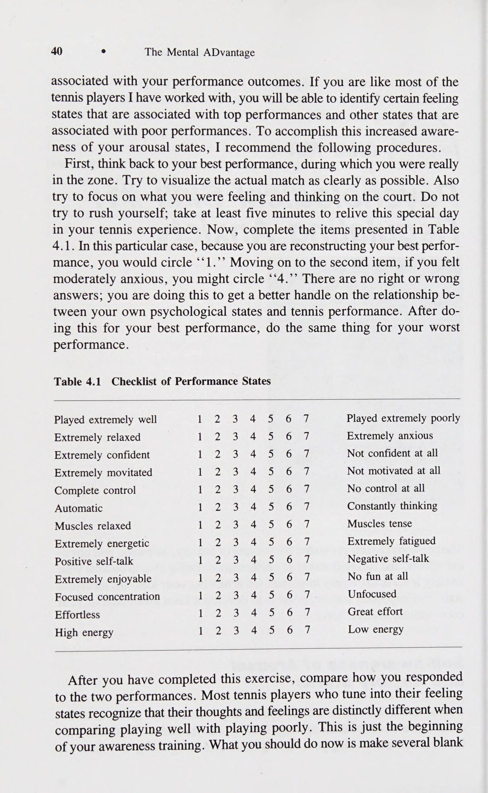
“| hy vọng tôi không bị sặc z e Đừng đặt ra để không bị sặc.
52 e The Mental ADvantage Do Not Set Out Not to Choke.
Những vận động viên quần vợt từng gặp khó khăn trong việc đối phó với áp lực trong quá khứ thường tập trung vào việc không bị nghẹn trong trận đấu sắp tới. Ví dụ, sau một vài lỗi kép, tay vợt nói: “Tôi hy vọng tôi không phạm lỗi kép lần nữa và bị căng cứng tâm lý (Choking)”. Hoặc, sau khi họ đang dẫn trước 5-4 và giao bóng trong trận đấu, họ nói: “Tôi hy vọng bây giờ tôi không để thua giao bóng như lần trước”. Sẽ phản tác dụng nếu tập trung vào những gì bạn không muốn làm. Thay vào đó, hãy cố gắng tập trung vào những gì bạn cần làm cho từng cú đánh hoặc trận đấu cụ thể. Đặt những nghi ngờ trong đầu bạn sẽ chỉ làm tăng khả năng những nghi ngờ này sẽ được hiện thực hóa.
Tennis players who have had trouble dealing with pressure in the past often focus on not choking in the upcom- ing match. For example, after a couple of double faults, players say, ‘‘I hope I don’t double fault again and choke.’’ Or, after they are leading 5-4 and serving for the match they say, ‘‘I hope I don’t lose my serve now as I did the last time.’’ It is counterproductive to focus on what you don’t want to do. Rather, try to focus on what you need to do for each particular shot or game. Putting doubts in your mind will only increase the probability that these doubts will be realized.
Chúc bạn vui vẻ—Tận hưởng hoàn cảnh.
Have Fun—Enjoy the Situation.
Điểm chung của tất cả những tay vợt quần vợt đạt thành tích cao nhất trong các trận đấu tương ứng của họ là cảm giác thích thú và vui vẻ. Hầu hết các tay vợt hàng đầu đều mong đợi và thậm chí tận hưởng những tình huống áp lực thay vì lo sợ chúng. Đặc biệt khi làm việc với các tay vợt trẻ, tôi nhận thấy rằng việc tận hưởng trận đấu, bất chấp áp lực, là một trong những yếu tố chính giúp các tay vợt trẻ không bị kiệt sức. Điều này liên quan đến việc giữ quan điểm thắng và thua và tập trung vào việc tận hưởng trải nghiệm mà không quan tâm quá mức đến kết quả. Bạn có thể đạt được điều này bằng cách tập trung nỗ lực hết mình thay vì đánh bại đối thủ. Nếu bạn có thể cố gắng hết sức và tận hưởng trò chơi quần vợt với những gì nó mang lại, bạn có thể sẽ chơi trò chơi này lâu hơn cũng như tốt hơn rất nhiều.
Common to all tennis players performing at the top of their respective games is a sense of enjoyment and fun. Most top players look forward to and even relish pressure situa- tions instead of fearing them. Particularly in my work with junior players, I have found that enjoyment of the game, regardless of the pressure, is one of the main factors that keeps young players from burning out. This involves keeping winning and losing in perspective and focusing on en- joying the experience without undue concern for the outcome. You can achieve this by focusing on doing your best instead of beating your oppo- nents. If you can give it your best shot and enjoy the game of tennis for what it has to offer, you will probably be playing the game a lot longer as well as a lot better.
Thiết lập một kế hoạch trò chơi hay và bám sát nó.
Set Up a Good Game Plan and Stick to It.
Một trong những điều khiến tay vợt quần vợt lo lắng là tính thiếu quyết đoán. Trong bất kỳ giai đoạn nào của cuộc sống, việc đưa ra quyết định có thể là một công việc căng thẳng. Trò chơi quần vợt cũng không ngoại lệ với nguyên tắc này vì sự căng thẳng khi đưa ra quyết định trong một trận đấu có thể đè nặng lên tâm trí bạn. Tôi nhận ra rằng một cách để giảm bớt sự thiếu quyết đoán là lập ra một kế hoạch tốt và bám sát nó. Một trong những nguyên nhân gây căng thẳng cho tay vợt quần vợt là họ không biết cách đánh đối thủ. Họ thường chỉ bước vào một trận đấu mà không hề có định trước về việc mình sẽ làm gì trong những tình huống nhất định. Điều này luôn dẫn đến nhiều quyết định hơn, nghi ngờ bản thân và cuối cùng là căng thẳng hơn. Ví dụ, một quyết định điển hình có thể gây căng thẳng là khi nào nên tiếp cận lưới, đặc biệt là khi đối đầu với một người đánh đường biên ổn định. Câu hỏi đặt ra trong hầu hết các thời điểm là, '' Tôi nên vào lưới và cố gắng thực hiện cú vô lê hay lùi lại và cố gắng vượt qua tay vợt từ vạch cuối sân?'' Quá trình ra quyết định liên tục này có thể khiến các tay vợt suy sụp tinh thần, đặc biệt nếu họ cảm thấy mình đang đưa ra nhiều quyết định sai lầm. Một kế hoạch thi đấu tốt sẽ loại bỏ nhiều quyết định như vậy vì bạn đã đưa ra nhiều quyết định trước khi trận đấu bắt đầu.
One of the things that produces anxiety in tennis players is indecisiveness. In any phase of life, making decisions can be a stressful undertaking. The game of tennis is no exception to this principle as the stress of making decisions in a game can wear on your mind. I have found that one way to reduce indecisive- ness is to devise a good game plan and stick to it. One of the sources of stress for tennis players is that they do not know how to play an oppo- nent. They often just go into a match without any preconceived notion of what they will do in certain situations. This invariably leads to more decisions, second-guessing yourself, and, ultimately, more stress. For example, a typical decision that can cause stress is when to approach the net, especially against a consistent baseliner. The question that arises during most points is, ‘‘Should I come to net and try to volley or stay back and try to outlast the player from the baseline?’’ This constant decision-making process can wear down players mentally, especially if they feel they are making a lot of wrong decisions. A good game plan removes many of these decisions because you will have already made many decisions be- fore the match has even begun.
Một ví dụ điển hình về kế hoạch thi đấu được hình thành tốt đã xảy ra trong trận chung kết Wimbledon năm 1975 với sự tham gia của Jimmy Connors và Arthur Ashe.
A good example of a well-conceived game plan occurred in the Wimbledon finals in 1975 involving Jimmy Connors and Arthur Ashe.
Điều tiết sự lo lắng rhe) Với việc Connors đang chơi ở phong độ cao nhất, không ai cho Arthur Ashe cơ hội thắng trận đấu. Để chuẩn bị cho trận đấu, Ashe và các huấn luyện viên quyết định rằng cách tốt nhất để đánh bại Connors là cho anh ta ăn đồ ăn vặt.
Regulating Anxiety ° rhe) With Connors playing at the top of his game nobody gave Arthur Ashe a chance of winning the match. In preparing for the match Ashe and his coaches decided that the best way to beat Connors was to feed him junk.
Nói cách khác, vì Connors phát triển mạnh về tốc độ và nhịp độ, Ashe đánh rất nhiều cú cắt, giao bóng mềm, lốp bóng và các cú đánh tốc độ khác. Arthur Ashe tin tưởng vào kế hoạch trò chơi của mình (mặc dù anh ấy thích đánh những cú giao bóng lớn và những cú đánh lớn) và thực hiện nó một cách hoàn hảo để tạo ra một chiến thắng liên tiếp.
In other words, because Connors thrived on speed and pace, Ashe hit a lot of slices, soft serves, lobs, and other off-speed shots. Arthur Ashe be- lieved in his game plan (even though he preferred to hit big serves and big shots) and carried it out flawlessly to produce a straight set victory.
Không phải mọi kế hoạch trò chơi đều diễn ra tốt đẹp như kế hoạch vừa mô tả. Trên thực tế, nhiều tay vợt quần vợt từ bỏ kế hoạch thi đấu của mình quá sớm, phản ứng thái quá trước một vài cú đánh tốt. Ví dụ: nếu bạn cảm thấy đối thủ của mình có cú đánh trái tay tương đối yếu, bạn có thể quyết định vào lưới và tấn công trái tay đó mọi lúc mọi nơi. Thật không may, trong hai lần đầu tiên bạn tiếp cận lưới, đối thủ của bạn sẽ huýt sáo hai cú chuyền trái tay đẹp mắt ngay bên cạnh bạn. Tại thời điểm này, nhiều tay vợt sẽ từ bỏ kế hoạch trò chơi của họ, với lý do rằng cú trái tay của đối thủ rốt cuộc không quá yếu. Đây có thể là một sai lầm chết người. Nếu bạn có một kế hoạch thi đấu tốt, thì cú trái tay của đối thủ có thể sẽ bị hỏng trong suốt trận đấu nếu bạn giữ nó dưới áp lực. Nhưng nếu bạn không tạo áp lực cho cú đánh trái tay đó, nó có thể không bao giờ bị gập lại vì những cú đánh yếu rất có thể bị gãy dưới áp lực. Tất nhiên, có khả năng là kế hoạch thi đấu của bạn không được sáng suốt hoặc đối thủ của bạn đang có một ngày đặc biệt. Trong trường hợp này, có thể cần phải thay đổi kế hoạch trò chơi. Nhưng điểm chính là phải có một kế hoạch tốt ngay từ đầu và cho nó một cơ hội hợp pháp để thực hiện trước khi bạn thay đổi nó. Điều này thực sự có thể giúp giảm bớt một số áp lực.
Not every game plan works out as well as the one just described. In fact, many tennis players give up on their game plan too soon, overreact- ing to a couple of good shots. For instance, if you feel that your opponent has a relatively weak backhand passing shot you might decide to come to net and attack that backhand at every opportunity. Unfortunately, the first two times you approach the net, your opponent whistles two beauti- ful backhand passing shots right by you. At this point, many players would abandon their game plan, reasoning that their opponent’s backhand wasn’t too weak after all. This can be a fatal mistake. If you have a good game plan, then your opponent’s backhand will probably break down during the match if you keep it under pressure. But if you don’t pressure that backhand, it may never fold because weak strokes are most likely to break under pressure. Of course, there is the possibility that your game plan was ill-advised or that your opponent is having an exceptional day. In this case, a change in game plan might be necessary. But the main point is to have a good game plan in the first place and give it a legitimate chance to work before you alter it.
Thiết lập các tình huống căng thẳng trong thực hành.
This can really help reduce some of the pressure.
Một cách rất thành công để chuẩn bị cho bản thân trước những tình huống áp lực là thỉnh thoảng luyện tập trong tình trạng căng thẳng. Khi bạn trở nên quen hơn với việc thi đấu trong những điều kiện này, bạn sẽ không bị ảnh hưởng tiêu cực bởi áp lực trong các cuộc thi đấu thực tế. Có một số cách để tạo áp lực trong thực tế và khả năng thực hiện chỉ bị hạn chế bởi trí tưởng tượng của bạn. Một huấn luyện viên mà tôi biết yêu cầu các tay vợt của mình chơi đơn trên ba sân. Người thắng mỗi điểm sẽ di chuyển từ sân ba lên hai hoặc hai lên một trong khi người thua luôn di chuyển xuống sân ba. Khi các đấu thủ đến sân một, họ sẽ nhận được một điểm cho mỗi điểm họ giành được trên sân đó (thi đấu với huấn luyện viên) và cuộc tập trận tiếp tục cho đến khi một đấu thủ giành được 10 điểm trên sân một. Tay vợt này sau đó được huấn luyện viên khen thưởng theo một cách nào đó. Kiểu luyện tập này khiến tay vợt phải chịu một số áp lực vì mỗi điểm đều trở nên cực kỳ quan trọng, vì một điểm xấu có thể khiến tay vợt bị loại khỏi sân từ một đến ba. Các bài tập khác có thể được kết hợp vào bài tập cơ bản bằng cách thiết lập các tình huống căng thẳng cụ thể chẳng hạn như giao bóng ở tỷ số 30-40, đánh quả giao bóng thứ hai tại điểm đặt hoặc chơi tiebreak. Điều này cho phép bạn bắt đầu phát triển các chiến lược để xử lý các tình huống áp lực, bao gồm cả việc lựa chọn cú đánh và phong cách chơi, điều này sẽ tối đa hóa hiệu quả của bạn. Vấn đề là, bạn càng thiết kế các điều kiện luyện tập của mình để mô phỏng các điều kiện của trận đấu mang tính cạnh tranh thì bạn càng sẵn sàng đối phó với những áp lực vốn có của cuộc thi.
Set Up Stressful Situations in Practice. A very successful way to prepare yourself for pressure situations is to occasionally practice under stress. As you become more accustomed to playing under these condi- tions, you will not be as negatively affected by pressure during actual com- petitions. There are a number of ways to create pressure in practice, and the possibilities are constrained only by your imagination. One coach I know has his players play singles on three courts. The winner of each point moves up from court three to two or two to one while the loser always moves down to court three. When players get to court one they get a point for every point that they win on that court (playing against the coach) and the drill continues until one player wins 10 points on court one. This player is then rewarded in some way by the coach. This type of drill puts the player under some pressure because each point becomes extremely im- portant, as one bad point can drop the player from court one to three. Other drills can be incorporated into the basic drill by setting up specific stress- ful situations such as serving at 30-40, hitting a second serve at set point, or playing tiebreakers. This allows you to start to develop strategies for 54 ° The Mental ADvantage handling pressure situations, including choice of shots and style of play, which will maximize your effectiveness. The point is, the more you design your practice conditions to simulate competitive match conditions, the more prepared you will be to deal with the pressures inherent to competition.
Huấn luyện kích hoạt Cho đến thời điểm này, tôi chủ yếu tập trung vào việc giảm lo lắng và tăng khả năng đối phó với căng thẳng cạnh tranh vốn có của trò chơi quần vợt.
Activation Training Up to this point I have primarily focused on reducing anxiety and increasing the ability to cope with the competitive stress inherent to the game of tennis.
Tuy nhiên, chắc chắn có những lúc bạn cần phải nỗ lực hết mình vì bạn cảm thấy uể oải và thiếu năng lượng. Trước khi thảo luận về cách tăng cường kích hoạt mức năng lượng của bạn, bạn nên biết các dấu hiệu của việc chưa được kích hoạt. Những dấu hiệu này bao gồm: ¢ Cảm giác nặng nề ở chân; không nảy lên Thiếu quan tâm đến việc mình sẽ chơi tốt như thế nào Tâm trí thường xuyên lang thang; dễ bị phân tâm Cảm thấy buồn chán và không hứng thú Di chuyển chậm chạp; chuẩn bị kém Thiếu dự đoán hoặc nhiệt tình Bạn không cần phải trải qua tất cả những dấu hiệu này để trở nên kém hoạt động. Tuy nhiên, bạn càng nhận thấy nhiều dấu hiệu thì bạn càng có nhiều khả năng cần phải tích cực làm điều gì đó để được kích hoạt. Mặc dù những cảm giác này có thể xuất hiện bất cứ lúc nào, nhưng chúng thường xảy ra nhất khi bạn chưa chuẩn bị về mặt thể chất hoặc tinh thần để chơi. Điều này có thể do một số nguyên nhân như không nghỉ ngơi đầy đủ, thi đấu quá nhiều và thi đấu với một đối thủ yếu hơn đáng kể, cũng như các sự kiện quan trọng khác trong cuộc đời bạn. Vấn đề là, bạn có thể phát hiện ra những cảm giác này càng nhanh thì bạn càng có thể bắt đầu đưa mình trở lại đúng hướng nhanh hơn.
There are certainly times, however, when you need to pump yourself up because you are feeling lethargic and underenergized. Before I discuss how to increase your activation of energy level, it is instructive to know the signs of being underactivated. These signs include the following: Heavy feeling in legs; no bounce Lack of concern about how well you will play Mind constantly wandering; easily distracted Feeling bored and uninterested Moving slowly; poor preparation Lack of anticipation or enthusiasm You need not experience all of these signs to be underactivated. The more signs that you notice, however, the more likely it is that you will need actively to do something to become activated. Although these feel- ings can appear at any time, they are most likely to occur when you are not physically or mentally prepared to play. This might be due to a num- ber of things such as not resting enough, playing too much, and playing against a significantly weaker opponent, as well as other significant events in your life. The point is, the quicker you can detect these feelings, the quicker you can start to get yourself back on track.
Các kỹ thuật cụ thể Bởi vì lo lắng quá mức thường là một vấn đề lớn hơn so với việc không hoạt động nên các quy trình cụ thể hơn đã được phát triển để đối phó với lo lắng. Tuy nhiên, có những lúc bạn cần phải phấn chấn lên. Một số gợi ý để tạo ra nhiều năng lượng hơn và kích hoạt hệ thống của bạn bao gồm những điều sau.
Specific Techniques Because excess anxiety is usually a greater problem than underactivation, more specific procedures have been developed to cope with anxiety. There are times, however, when you need to get pumped up. Some suggestions for generating more energy and activating your system include the following.
Sử dụng những câu nói tích cực.
Use Positive Statements.
Lặp lại những điều như "'Bắt đầu",' 'Tôi có thể làm được'' ''Cố lên'' và ''Cố lên.'' Điều chỉnh sự lo lắng Chuyển động mạnh mẽ. Rất nhiều tay vợt tự phấn đấu bằng cách dùng tay vỗ vào đùi, co và thư giãn cơ bắp hoặc nhảy lên nhảy xuống mạnh mẽ. Điều này kích thích lưu lượng máu đến các cơ và làm tăng nhịp tim.
Repeat things such as “‘Get going,”’ ‘I can do it,’’ ‘‘Hang in there,’’ and ‘‘Get tough.”’ Regulating Anxiety ° 55 Forceful Movement. A lot of players pump themselves up by slap- ping their thighs with their hands, contracting and relaxing their muscles, or vigorously jumping up and down. This stimulates blood flow to the muscles and increases the heart rate.
Tăng nhịp thở.
Increase Breathing Rate.
Mặc dù tôi cho rằng thở bằng cơ hoành sâu được ưa chuộng hơn thở bằng ngực, nhưng trong trường hợp cụ thể này thì điều ngược lại mới đúng. Hít thở ngắn và nhanh có xu hướng kích hoạt hệ thống và tăng tốc hệ thần kinh.
Although I suggested that deep diaphrag- matic breathing was preferred over chest breathing, in this particular in- stance the reverse is true. Taking short, quick breaths tends to activate the system and speed up the nervous system.
Hành động tràn đầy năng lượng.
Act Energized.
Vào những lúc bạn cảm thấy uể oải, nếu bạn hành động một cách hăng hái, bạn có thể lấy lại mức năng lượng của mình. Ví dụ: di chuyển nhanh giữa các điểm, giữ đầu ngẩng cao, vai hướng về phía sau và kiễng chân lên. Nhiều khi chúng ta nhận tín hiệu từ cơ thể về cảm giác của mình thay vì để cơ thể nhận tín hiệu từ tâm trí.
At times when you feel lethargic, if you act ener- getically, you can recapture your energy level. For example, move quickly between points, keep your head up and shoulders back, and walk up on your toes. Many times we take cues from our bodies concerning how we feel instead of having our bodies take cues from our minds.
Tâm Trạng Từ.
Mood Words.
Ngoài những câu nói ngắn như những câu được mô tả ở trên, nhiều tay vợt quần vợt còn sử dụng những từ cụ thể có xu hướng kích hoạt trạng thái cảm giác tràn đầy năng lượng hơn. Một số ví dụ bao gồm mạnh mẽ, tiến lên, cứng rắn, hung hãn, di chuyển, nhanh, nhanh và cứng.
In addition to short statements like those described above, many tennis players use specific words that tend to activate a more ener- gized feeling state. Some examples include strong, forward, tough, ag- gressive, move, quick, fast, and hard.
Thử thách.
Challenge.
Hãy coi tình huống này như một thử thách cần vượt qua. Hãy tự hào về việc đứng dậy trong tất cả các trận đấu của mình. Hãy tạo niềm tự hào cá nhân và khẳng định thương hiệu của bạn.
Think of this situation as a challenge to overcome. Pride yourself on getting up for all your matches. Make personal pride and de- termination your trademark.
Tóm tắt Chương này đã cung cấp cho bạn nhiều kỹ thuật và chiến lược khác nhau để giúp đối phó với những áp lực vốn có khi thi đấu quần vợt. Bước đầu tiên là nhận thức rõ hơn về những điều khiến bạn lo lắng, các tình huống trò chơi cụ thể mà sự lo lắng ảnh hưởng đến hiệu suất của bạn và cách bạn phản ứng với những sự kiện gây lo lắng này. Một loạt các thủ tục thư giãn đã được đưa ra để giúp bạn đối phó với sự lo lắng quá mức cả trong và ngoài sân đấu. Những tay vợt khác nhau cảm thấy thoải mái hơn với các kỹ thuật khác nhau; chọn những gì sẽ làm việc tốt nhất cho tình hình cá nhân của bạn. Nhưng hãy nhớ rằng, những kỹ thuật này cần phải được thực hành trước khi áp dụng chúng cho phù hợp với điều kiện. Cuối cùng, tôi đã trình bày một số gợi ý để tăng mức năng lượng và kích hoạt bản thân trong những tình huống khi bạn thấy mình uể oải và chưa sẵn sàng nỗ lực.
Summary This chapter has provided you with a variety of techniques and strategies to help cope with the pressures inherent to competitive tennis. The first step is to become more aware of the things that make you anxious, the specific game situations in which anxiety affects your performance, and the ways in which you react to these anxiety-producing events. A variety of relaxation procedures were presented to help you cope with excess anxiety both on and off the court. Different players feel more comfort- able with different techniques; choose what will work best for your own personal situation. But remember, these techniques need to be practiced before applying them to match conditions. Finally, I presented some hints for increasing your energy level and activating yourself in those situations when you find yourself lethargic and not ready to give a good effort.
Tập trung thông qua sự tập trung chú ý đúng cách TIN TỨC Không có bí quyết nào để xây dựng sự tập trung. Đó là thứ bạn phát triển giống như cách bạn phát triển các phần khác trong trò chơi của mình. Sai lầm mà hầu hết tay vợt gậy đều mắc phải là họ không rèn luyện sự tập trung khi tập đánh. Nếu tâm trí của bạn lang thang trong khi luyện tập thì điều tương tự cũng sẽ xảy ra trong một trận đấu.
= \ CHAPTER 5 Concentration Through Proper Attentional Focus NEWS There’s no secret to building concen- tration. It’s something you develop the same way you develop other parts of your game. The mistake most club players make is that they don’t prac- tice concentration while they’re prac- ticing their strokes. If your mind is going to wander during practice, it’s going to do the same in a match.
Khi tất cả chúng tôi đều lớn lên ở Úc, chúng tôi phải làm việc chăm chỉ về mặt tinh thần cũng như thể chất khi luyện tập.
When we were all growing up in Aus- tralia, we had to work as hard men- tally as we did physically in practice.
Nếu không cảnh giác, bạn có thể bị một quả bóng đập vào đầu.
If you weren’t alert, you could get a ball hit off the side of your head.
Điều tôi từng làm là ép bản thân tập trung nhiều hơn ngay khi tôi cảm thấy mình mệt mỏi, bởi vì đó thường là lúc khả năng tập trung của bạn bắt đầu suy giảm. Nếu tôi thấy mình thực sự mệt mỏi khi luyện tập, tôi sẽ buộc mình phải tập luyện chăm chỉ hơn nhiều trong mười hoặc mười lăm phút nữa, và tôi luôn cảm thấy như thể mình đã học được nhiều hơn từ những phút tăng thêm đó trong toàn bộ quá trình luyện tập.
What I used to do was to force my- self to concentrate more as soon as I’d feel myself getting tired, because that’s usually when your concentration starts to fail you. If I’d find myself getting really tired in practice, I’d force myself to work much harder for an extra ten or fifteen minutes, and I always felt as though I got more out of those extra minutes that I did out of the entire practice.
Rod Laver Rất thường xuyên trong một trận đấu quần vợt, bạn có thể chỉ vào một trận đấu mà nếu có một vài điểm bạn mất tập trung và không làm đúng, và sự khác biệt trong trận đấu sẽ ở ngay đó.” Bjorn Borg Những phát biểu trước đây của Bjorn Borg và Rod Laver, hai trong số những tay vợt vĩ đại nhất mọi thời đại, đã chỉ ra hai khía cạnh quan trọng nhất của sự tập trung. Đầu tiên, khả năng tập trung là một kỹ năng tâm lý có thể học được và phát triển thông qua luyện tập và cống hiến. Rod Laver mô tả cách ông rèn luyện khả năng tập trung trong suốt quá trình luyện tập của mình. Anh ấy và các huấn luyện viên của anh ấy thực sự nhận thức được rằng nếu bạn không nỗ lực phát triển khả năng tập trung trong luyện tập, bạn không thể tự động phát huy khả năng tập trung của mình trong một trận đấu cạnh tranh. Đây là một sai lầm mà nhiều tay vợt cấp dưới và câu lạc bộ mắc phải, vì họ tin rằng việc tập trung vào các trận đấu chỉ quan trọng. Thái độ này sẽ khiến bạn phải trả giá bằng một số trận đấu vì cả kinh nghiệm thực tế và nghiên cứu đều đã chứng minh rằng chúng ta thường chơi khi luyện tập. Những vận động viên xuất sắc ở các môn thể thao khác nhau là những người luyện tập chăm chỉ nhất mặc dù họ cũng có thể là những tay vợt tài năng nhất. Câu ngạn ngữ cũ “thực hành tạo nên sự hoàn hảo” nên được sửa lại thành “thực hành hoàn hảo tạo nên sự hoàn hảo”; điều này chắc chắn áp dụng cho việc thực hành sự tập trung. Mặc dù Rod Laver nói về việc rèn luyện sự tập trung trên sân, nhưng cũng có những điều bạn có thể làm bên ngoài sân đấu để cải thiện kỹ năng tập trung của mình; những điều này sẽ được thảo luận ở chương 6.
Rod Laver Very often in a tennis match, you can point to just one game where for a couple of points you lost concentration and didn’t do the right thing, and the difference in the match will be right there. Bjorn Borg 57 58 ° The Mental ADvantage The preceding statements by Bjorn Borg and Rod Laver, two of the greatest players of all time, pinpoint two of the most important aspects of concen- tration. First, concentration is a psychological skill that can be learned and developed through practice and dedication. Rod Laver described how he worked on concentration during all of his practices. He and his coaches were really aware that if you don’t work on developing concentration in practice, you can’t automatically turn on your concentration during a com- petitive match. This is a mistake that many junior and club players make, believing that it’s only important to concentrate in the matches. This at- titude will cost you some matches because both practical experience and research has demonstrated that we generally play as we practice. The great athletes in different sports are the ones who are the hardest working prac- tice players even though they may also be the most talented players. The old adage “‘practice makes perfect’’ should be modified to read ‘‘perfect practice makes perfect’’; this certainly applies to the practice of concen- tration. Although Rod Laver talks about working on concentration on the court, there are also things you can do off the court to improve your con- centration skills; these will be discussed in chapter 6.
Khía cạnh quan trọng thứ hai của sự tập trung, được nhấn mạnh bởi tuyên bố của Bjorn Borg, là trận đấu quần vợt thường được quyết định bởi một biên độ nhỏ mà trong nhiều trường hợp có thể bắt nguồn từ sự mất tập trung. Việc ghi bàn trong quần vợt đến mức chỉ một sơ suất ngắn khiến tâm trí bạn lang thang có thể khiến bạn mất một trận đấu. Ví dụ, bạn dễ dàng giữ được giao bóng trong khi đối thủ của bạn đang gặp khó khăn. Sau đó, ở tỷ số 4-4, 30-30, bạn đang giao bóng và có một cú vô lê thuận tay cao, nhưng ngay khi bạn chuẩn bị thực hiện cú vô lê đó, bạn nhìn thấy khóe mắt rằng đối thủ của bạn đang di chuyển theo hướng nơi bạn định thực hiện cú vô lê của mình. Vào thời điểm cuối cùng, bạn đổi ý và cố gắng đánh phía sau đối thủ, nhưng lại trượt mục tiêu vài inch. Bạn ngay lập tức nổi giận với chính mình vì đã rời mắt khỏi quả bóng và bạn phạm lỗi kép. Với thời gian nghỉ giao bóng đó, đối thủ của bạn sẽ có thêm sự tự tin, giao bóng hết set, tiếp tục chơi tốt và đánh bại bạn trong set thứ hai. Bạn vẫn đang nghĩ về cú vô lê cao mà bạn đã bỏ lỡ.
The second important aspect of concentration, underlined by Bjorn Borg’s statement, is that the game of tennis is often decided by a small margin which in many cases can be traced back to a lapse in concentration. The scoring in tennis is such that a brief lapse during which your mind wanders can cost you a match. For example, you are easily holding serve whereas your opponent is struggling. Then at 4-4, 30-30 you are serving and have a high putaway forehand volley, but just as you’re about to put it away you see out of the corner of your eye that your opponent is moving in the direction of where you intend to hit your volley. At the last instant you change your mind and try to hit behind your opponent, but miss the line by a few inches. You immediately become mad at yourself for taking your eye off the ball, and you proceed to double-fault. With that break of service your opponent gains some added confidence, serves out the set, continues to play well, and beats you in the second set. You’re still think- ing about that high volley you missed.
Trong nhiều trận đấu quần vợt sát nút, tay vợt thua thực sự giành được nhiều điểm hơn tay vợt thắng. Trong những tình huống này, có rất ít sự khác biệt về kỹ năng giữa hai tay vợt; đúng hơn, một tay vợt có thể tập trung tốt hơn và giành được những điểm quan trọng. Mặc dù sự tập trung là cần thiết trong suốt trận đấu nhưng nó đặc biệt quan trọng ở một số thời điểm quan trọng. Tôi sẽ thảo luận về các cách cải thiện khả năng tập trung sau nhưng trước tiên tôi cần xác định khả năng tập trung.
In many close tennis matches, the losing player actually wins more points than the winning player. In these situations, there is little skill difference between the two players; rather, one player is able to concentrate better and win the important points. Although concentration is necessary through- out a match, it is particularly crucial at certain critical points. I will dis- cuss ways to improve concentration later but first I need to define concentration.
Sự tập trung e Định nghĩa về sự tập trung Có lẽ đúng là người ta định nghĩa sự tập trung theo nhiều cách khác nhau.
Concentration e 59 The Definition of Concentration It is probably true that people define concentration in several different ways.
Để cung cấp cho chúng ta một điểm tham chiếu chung, tôi sẽ sử dụng định nghĩa về sự tập trung như được tìm thấy trong tâm lý học thể thao: khả năng tập trung vào các tín hiệu liên quan trong môi trường của bạn và duy trì sự tập trung đó trong suốt thời gian diễn ra cuộc thi thể thao. Nhìn kỹ hơn vào định nghĩa này sẽ cho bạn thấy cách hiểu sự tập trung trong quần vợt.
To provide us with a common reference point, I will use the definition of concentration as found in sport psychology: the ability to focus on the relevant cues in your environment and to maintain that focus for the dura- tion of the athletic contest. A closer look at this definition will show you how to understand concentration in tennis.
Phần đầu tiên của định nghĩa đề cập đến việc tập trung vào các tín hiệu quan trọng trong môi trường của tay vợt quần vợt. Dấu hiệu rõ ràng nhất nhưng thường bị bỏ qua là quan sát bóng. Mặc dù đây có vẻ là một nhiệm vụ đơn giản và đơn giản nhưng nó thường khiến nhiều tay vợt thất bại. Thay vì chăm chú theo dõi quả bóng, hầu hết tay vợt chỉ tập trung vào vùng lân cận chung của nó.
The first part of the definition refers to focusing on the important cues in the tennis player’s environment. The most obvious, but often overlooked, cue is watching the ball. Although this would appear to be a straightforward and simplistic task, it is often the downfall of many players. Rather than intently watching the ball, most players only focus in its general vicinity.
Một gợi ý liên quan khác dành cho tay vợt quần vợt là tập trung vào chuyển động và tác dụng vợt của đối phương trước khi đối phương đánh bóng nhằm cố gắng đoán trước tốc độ, hướng và vị trí của bóng. Ngoài ra, một số tay vợt sẽ cố gắng ra hiệu trước khi đánh bóng bằng các từ như vợt lùi, theo sau, tiến về phía trước, dễ và mạnh. Nhưng trên thực tế, tay vợt quần vợt trình độ cao chỉ phải chú ý đến một số điều quan trọng khi đánh một điểm, và những điều này sẽ được thảo luận kỹ hơn trong chương tiếp theo. Tuy nhiên, cũng có liên quan là các tín hiệu điểm giữa việc suy nghĩ về cách bạn sẽ chơi điểm tiếp theo và quyết định chiến lược cũng như loại hình và vị trí giao bóng.
Another relevant cue for tennis players is focusing on the opponent’s move- ments and racquet work before the opponent hits the ball in an attempt to anticipate its speed, direction, and placement. In addition, some players will try to cue themselves before hitting the ball with words like racquet back, follow-through, forward, easy, and strong. But in reality, the ad- vanced tennis player must pay attention to only a few key things while playing a point, and these will be more thoroughly discussed in the next chapter. Also relevant, however, are the between point cues of thinking about how you will play the next point and deciding on strategy and the type and placement of serve.
Chơi quần vợt rất khó vì mặc dù chỉ có một số điều quan trọng cần chú ý nhưng thật không may, lại có rất nhiều tín hiệu không liên quan đang tranh giành sự chú ý của chúng ta. Một số ví dụ là tiếng ồn của đám đông, những trò hề của đối thủ, những cú đánh trượt trước đó, tỷ số cuối cùng, những điều xảy ra vào ngày hôm trước, kế hoạch cho buổi tối, một cuộc gọi tồi hoặc bất cứ điều gì khác mà tâm trí có thể gợi lên. Kết quả là, nhiều tay vợt quần vợt liên tục đấu tranh để ngăn những suy nghĩ và tín hiệu không liên quan này xâm nhập vào tâm trí họ để có thể tự do tập trung vào những tín hiệu liên quan đã thảo luận ở trên.
Playing tennis is difficult because, although there are only a few key things to pay attention to, there are unfortunately a wide variety of irrele- vant cues that compete for our attention. Some examples are crowd noise, antics of the opponent, previously missed shots, eventual score, things that happened the day before, plans for the evening, a bad line call, or anything else the mind can conjure up. As a result, many tennis players constantly battle to keep these irrelevant thoughts and cues from entering their minds in order to be free to focus on the relevant cues discussed above.
Một trong những chìa khóa dẫn đến thành công đáng kinh ngạc của Chris Evert nằm ở sự kiên định của cô ấy:
One of the keys to Chris Evert’s incredible success lies in her consistency: She makes very few unforced errors.
Cô ấy mắc rất ít lỗi không đáng có. Sự nhất quán này thường có thể bắt nguồn từ khả năng tập trung kỳ lạ của cô ấy. Cô ấy có thể tập trung một cách có chọn lọc vào những điều quan trọng trên sân tennis thay vì bận tâm đến cuộc sống cá nhân của mình, những cú đánh trượt, những cuộc gọi không tốt, v.v. Về bản chất, cô ấy dành sự chú ý hoàn toàn cho trận đấu quần vợt và hầu như không nhận thức được những điều khác đang diễn ra xung quanh mình.
This consistency can usually be traced to her uncanny concentration ability. She is able to selectively attend to what is important on the tennis court instead of getting caught up thinking about her personal life, missed shots, bad line calls, and so on. In essence, she gives the tennis match her undivided attention and is hardly, if at all, aware of other things going on around her. Concentration means maintaining the focus as well: This is the second part of the definition. Selectively attending to the proper cues at a given
Tập trung cũng có nghĩa là duy trì sự tập trung: Đây là phần thứ hai của định nghĩa. Việc chú ý có chọn lọc các tín hiệu thích hợp tại một thời điểm nhất định là không đủ; bạn cũng phải có khả năng duy trì sự tập trung đó trong một khoảng thời gian dài. Một trận đấu quần vợt có thể dễ dàng kéo dài hai hoặc ba giờ và một lần mất tập trung có thể khiến bạn mất cả trận đấu.
60 e The Mental ADvantage point in time is not enough; you must also be able to maintain that focus for a potentially long period of time. A tennis match can easily take two or three hours, and one break in concentration can cost you the match.
Trận chung kết Davis Cup gần đây giữa John McEnroe và Mats Wilander mất hơn sáu giờ để hoàn thành, kiểm tra nghiêm ngặt sự kiên trì về thể chất và tinh thần của hai tay vợt vĩ đại này. Câu ngạn ngữ “sự mệt mỏi khiến tất cả chúng ta trở nên hèn nhát” chắc chắn áp dụng cho sự tập trung. Vì vậy, Billie Jean King thường nhận xét rằng “ngay khi bạn cảm thấy hơi mệt mỏi, đó là lúc bạn phải ép mình tập trung hơn”. Nếu bạn nhớ lại, câu trích dẫn của Rod Laver ở đầu chương cũng ủng hộ quan điểm này. Đôi khi rất khó để giữ tâm trí ổn định trong một thời gian dài như vậy, đặc biệt là khi cơ thể mệt mỏi, nhưng tay vợt tennis giỏi hơn thường đối phó với tình huống này một cách hiệu quả. Điều này đưa chúng ta đến điểm tiếp theo: Tại sao việc duy trì sự tập trung chú ý trong suốt một trận đấu quần vợt lại khó đến vậy?
A recent Davis Cup final match between John McEnroe and Mats Wilander took over six hours to complete, severely testing the physical and mental perseverance of these two great players. The adage ‘‘fatigue makes cowards of us all’’ certainly applies to concentration. Along these lines Billie Jean King has often remarked that ‘‘the minute you feel yourself getting a little tired, that’s when you have to force yourself to concentrate harder.’’ If you recall, the quote by Rod Laver at the beginning of the chapter also supports this point of view. To keep the mind in tow for such a long period of time, especially when the body is fatigued, is sometimes difficult, but the better tennis player usually copes with the situation effectively. This brings us to our next point: Why is it so difficult to maintain our atten- tional focus throughout a tennis match?
Các vấn đề với việc duy trì sự tập trung Tôi thường được hỏi tại sao việc duy trì sự tập trung trong suốt một trận đấu quần vợt lại khó đến vậy. Để trả lời câu hỏi này, bạn phải hiểu cách thức hoạt động của tâm trí và bản chất cụ thể của trò chơi quần vợt.
Problems With Maintaining Concentration I am often asked why it is so hard to sustain concentration throughout a tennis match. In order to respond to this question, you must understand how the mind works and the specific nature of the game of tennis.
Khi cố gắng hiểu cách thức hoạt động của tâm trí, các nhà nghiên cứu đã tập trung vào việc xác định các yếu tố tăng cường hoặc làm giảm trạng thái chú ý của một người. Tại sao bạn chú ý đến một số tín hiệu nhất định nhưng lại bị phân tâm bởi những tín hiệu khác? Về quần vợt, tại sao tâm trí bạn lại lang thang khi ở trên sân với những thứ hoàn toàn không liên quan đến quần vợt? Nếu quần vợt quan trọng đối với bạn thì bạn chỉ có thể tập trung sự chú ý vào quần vợt khi bạn ở trên sân. Tuy nhiên, tất cả chúng ta đều biết rằng nói thì dễ hơn làm.
In trying to understand how the mind works, researchers have focused on pinpointing the factors that either enhance or detract from a person’s attentional state. Why do you attend to certain cues but are distracted by others? In terms of tennis, why does your mind wander when you are on the court to things totally irrelevant to tennis? If tennis is important to you, then you should be able to focus your attention on tennis only when you are on the court. However, we all know that this is easier said than done.
Hiểu lý do tại sao tâm trí gặp vấn đề khi tập trung vào một thứ trong thời gian dài là một quá trình phức tạp. Nói một cách đơn giản, trong hầu hết các tình huống, sự tập trung chú ý của bạn phụ thuộc vào động lực của bạn cũng như cường độ hoặc tầm quan trọng của các sự kiện hoặc tác nhân kích thích khác nhau trong môi trường. Ví dụ, nếu bạn đang ở nhà đọc sách và ngửi thấy mùi khói trong nhà, rất có thể bạn sẽ quên mất cuốn sách mình đang đọc (dù thú vị đến đâu) và chú ý đến làn khói để xác định xem nhà bạn có bị cháy hay không. Nguyên tắc trên sân tennis cũng vậy. Kích thích càng mãnh liệt thì bạn càng cần ít động lực để duy trì sự tập trung của mình trong khi kích thích càng ít thì bạn càng cần nhiều động lực để duy trì sự tập trung chú ý của mình.
Understanding why the mind has problems focusing on one thing for extended periods of time is a complex process. In simple terms, your at- tentional focus is, in most situations, dependent on your motivation and the intensity or importance of different events or stimuli in the environ- ment. For example, if you were at home reading a book and you smelled smoke in your home you would most probably forget about the book you were reading (no matter how interesting) and attend to the smoke to de- termine if your home was on fire. The principle is the same on the tennis court. The more intense the stimuli, the less motivation you need to maintain your concentration whereas the less intense the stimuli, the more motiva- tion you need to sustain your attentional focus.
Sự tập trung Để áp dụng những khái niệm này vào trò chơi quần vợt, hãy xem xét ví dụ sau. Bạn đang bắt đầu một trận đấu trong giải đấu với đối thủ mà bạn đã đánh bại trong ba trận đấu vừa qua. Bởi vì bạn dự đoán một trận đấu dễ dàng nên động lực của bạn hơi thấp, thậm chí bạn còn bắt đầu nghĩ tới đối thủ tiếp theo rất giỏi. Vì động lực của bạn thấp nên sự tập trung của bạn không ổn định và kết quả là đối thủ của bạn (người thực sự sẵn sàng cho trận đấu) khởi đầu nhanh chóng và dẫn trước 4-1. Đột nhiên bạn cảm thấy trận đấu đang bắt đầu rời xa bạn và động lực của bạn tăng cao. Điều này chuyển thành sự tập trung cao độ vào trận đấu khi bạn quên mất đối thủ sắp tới của mình và tập trung vào việc quay lại trận đấu bằng cách bẻ giao bóng. Bạn mang đến sân quần vợt một tâm trí luôn sẵn sàng tiếp thu những thứ khác ngoài quần vợt. Công việc của bạn là giữ cho tâm trí tập trung vào trận đấu quần vợt và cố gắng bỏ qua những suy nghĩ cạnh tranh khác. Sự tương tác giữa động lực và sự tập trung được mô tả bởi Rod Laver.
Concentration ° 61 To apply these concepts to the game of tennis, consider the following example. You are starting a tournament match against an opponent whom you have beaten handily in the past three matches. Because you anticipate an easy match, your motivation is a little low, you even start thinking ahead to your next opponent who is very good. Since your motivation is low, your concentration is inconsistent, and as a result, your opponent (who really is up for the match) gets off to a quick start and leads 4-1. All of a sudden you feel that the match is starting to get away from you and your motivation is heightened. This translates into increased concentration on the match as you forget about your upcoming opponent and focus on get- ting back into the match by breaking serve. You bring to the tennis court a mind that is always receptive to things other than tennis. It is your job to keep the mind focused on your tennis game and try to disregard other competing thoughts. The interplay between motivation and concentration is described by Rod Laver.
Duy trì sự hứng thú với một trận đấu khó hơn nhiều người nghĩ.
Staying interested in a match is a lot harder than many people think.
Trong suốt sự nghiệp của mình, tôi luôn gặp khó khăn ở những vòng đầu của một giải đấu chủ yếu là vì tôi khó đứng dậy về mặt tâm lý cho đến khi vào đến tứ kết hoặc bán kết. Điều đã xảy ra rất nhiều lần là tôi bị tụt lại phía sau sớm, thậm chí có thể thua vài set đầu tiên trong một trận đấu kéo dài 5 set và sau đó bắt đầu tập trung. Tuy nhiên, đó không phải là điều tôi có thể kiểm soát ngay từ đầu.* Tất nhiên, không nhiều người trong chúng ta có thể để thua một hoặc hai set đầu tiên trước khi bắt đầu tập trung. Nhưng nó nhấn mạnh rằng cần có rất nhiều động lực để tập trung khi bạn không cảm thấy bị thử thách. Vì vậy, vấn đề chung của nhiều tay vợt là không thể thi đấu tốt trước đối thủ kém hơn. Điều này là do việc nhận thấy sự vắng mặt của thử thách sẽ dẫn đến mất tập trung.
Throughout my career, I’ve always had trouble in the early rounds of a tournament mainly because it was hard for me to psychologically get up until I got to the quarters or the semis. What happened a lot of times is that I would fall behind early, maybe even lose the first couple of sets in a five-set match and then begin to concentrate. Still, it wasn’t something I could control from the start.* Of course, not many of us can afford to lose the first set or two before we start to concentrate. But it does raise the point that it takes a lot of motivation to concentrate when you do not feel challenged. Thus, a common problem for many players is the inability to perform well against inferior competition. This is because the perceived absence of a challenge results in lapses in concentration.
Điểm thứ hai liên quan đến khó khăn trong việc duy trì sự tập trung trong suốt một trận đấu quần vợt liên quan đến tính chất cụ thể của trò chơi; nghĩa là, quần vợt về cơ bản là một trò chơi có sự bắt đầu và kết thúc. Thống kê cho thấy điểm trung bình kéo dài khoảng 8-12 giây và cần 3-4 cú đánh.
The second point regarding the difficulty in sustaining concentration throughout a tennis match concerns the specific nature of the game; that is, tennis is essentially a game of starts and stops. Statistics reveal that the average point lasts approximately 8-12 seconds and requires 3-4 strokes.
Tất nhiên điều này sẽ khác nhau tùy thuộc vào mức độ thi đấu và loại bề mặt (ví dụ: sân đất nện đòi hỏi các đường chạy dài hơn sân cỏ) nhưng nói chung, mỗi điểm riêng lẻ không yêu cầu quá nhiều thời gian.
Of course this will vary depending on the level of competition and type of surface (e.g., clay entails longer rallies than grass) but in general, each individual point does not require too much time.
Hầu hết các tay vợt mà tôi từng làm việc cùng không gặp vấn đề gì với việc tập trung trong một thời điểm, có lẽ ngoại trừ trong các pha đánh bóng kéo dài trên bề mặt chậm. Vấn đề duy trì sự tập trung thường xảy ra giữa các điểm. Thời gian giữa các điểm thường từ 10 đến 30 giây trong khi hầu hết các điểm kéo dài khoảng 10 giây. Kết quả là, trong suốt trận đấu kéo dài 2 giờ, khoảng 40 phút được dành thực sự để chơi quần vợt, trong khi 1 giờ 20 phút được dành để không chơi quần vợt giữa các điểm. Chính khoảng thời gian chết này thực sự ảnh hưởng đến kỹ năng tập trung của chúng ta vì có vô số yếu tố gây xao nhãng tranh giành sự tập trung chú ý của chúng ta (hầu hết đều bắt nguồn từ suy nghĩ của chính chúng ta). Nếu bạn có thể duy trì sự tập trung giữa các điểm và trận đấu thì bạn sẽ có trạng thái tinh thần thích hợp cho điểm sắp tới. Những gợi ý để tận dụng hiệu quả những thời điểm quan trọng giữa các điểm sẽ được trình bày trong chương tiếp theo. Đầu tiên chúng ta sẽ xem xét các kiểu tập trung chú ý và phong cách chú ý khác nhau.
Most of the tennis players I’ve worked with do not have a problem with concentration during a point, except perhaps during long rallies on slow surfaces. The problem with maintaining concentration usually occurs be- tween points. The time between points is usually between 10 to 30 seconds whereas most points last about 10 seconds. As a consequence, during the course of a 2-hour match, approximately 40 minutes are spent actually 62 e The Mental ADvantage playing tennis, while 1 hour and 20 minutes are spent not playing tennis between points. It is this dead time that really taxes our concentration skills because of the numerous distractions competing for our attentional focus (most of which originate from our own thoughts). If you can maintain con- centration between points and games then you will be in the proper state of mind for the upcoming point. Suggestions for effectively utilizing these critical times between points will be presented in the next chapter. First we will take a look at the different types of attentional focus and atten- tional styles.
Các loại tập trung (Tập trung chú ý) Nếu bạn muốn cải thiện khả năng tập trung của mình, điều quan trọng trước tiên là phải hiểu các loại tập trung chú ý khác nhau cần có trong trò chơi quần vợt.
Types of Concentration (Attentional Focus) If you are to improve your concentration, it is important to understand first the different types of attentional focus required in the game of tennis.
Trên thực tế, một trong những phần khó của trò chơi quần vợt là tay vợt phải liên tục thay đổi trọng tâm chú ý của mình. Về cơ bản, sự chú ý có thể được coi là khác nhau theo hai chiều: chiều rộng và hướng.
In fact, one of the difficult parts of the game of tennis is that players must constantly change their attentional focus. Basically, attention can be con- ceived of as varying across two dimensions: width and direction.
Một cách mà tay vợt quần vợt cần kiểm soát sự tập trung chú ý của họ là về chiều rộng của nó. Cụ thể, độ rộng của sự chú ý có thể thay đổi từ rộng đến hẹp. Sự tập trung chú ý rộng rãi cho phép một người nhận thức được nhiều sự kiện xảy ra cùng một lúc. Tay vợt quần vợt ở nội dung đánh đôi phải theo dõi đối tác của họ, chuyển động của đối thủ và vị trí của bóng để quyết định loại cú đánh nào sẽ đánh và vị trí đặt cú đánh. Sự tập trung chú ý hẹp là điển hình của những tay vợt quần vợt cố gắng tập trung hoàn toàn vào quả bóng để chuẩn bị cho cú đánh của mình. Tất cả các sự kiện hoặc kích thích không liên quan đều bị loại bỏ và sự chú ý chỉ hướng vào quả bóng.
One way in which tennis players need to control their attentional focus is in terms of its width. Specifically, the width of attention can vary from broad to narrow. A broad attentional focus allows a person to perceive several occurrences simultaneously. Tennis players in doubles have to keep track of their partners, the movements of their opponents, and the loca- tion of the ball in deciding what type of shot to hit and where to place the shot. A narrow focus of attention is typical of tennis players who at- tempt to focus exclusively on the ball in preparation for their shot. All irrelevant events or stimuli are eliminated, and attention is directed only to the ball.
Sự chú ý cũng có thể thay đổi theo hướng của nó, từ bên trong đến bên ngoài. Sự tập trung chú ý bên trong thường có nghĩa là tập trung vào những suy nghĩ và cảm xúc của chính chúng ta chẳng hạn như “Tôi cần bẻ giao bóng của cô ấy trong trận đấu này” hoặc “Tôi tự hỏi liệu mình nên lùi lại hay vào lưới”. Tập trung chú ý bên ngoài sẽ được đặc trưng bằng cách tập trung ra bên ngoài (ví dụ: vào quả bóng tennis, chuyển động của đối thủ, đám đông, v.v.). Bảng 5.1 trình bày bốn loại tập trung khác nhau được tay vợt quần vợt cũng như các loại vận động viên khác sử dụng.
Attention can also vary in its direction ranging from internal to exter- nal. Internal attentional focus usually means focusing on our own thoughts and feelings such as ‘‘I need to break her serve this game”’ or ‘‘I wonder if I should stay back or come to net.’’ An external attentional focus would be characterized by focusing outward (e.g., on the tennis ball, movements of the opponent, crowd, etc.). Table 5.1 presents the four different types of concentration that are used by tennis players as well as other kinds of athletes. Consider for a moment how attentional focus can change during the course of a tennis match.
Hãy xem xét một chút xem khả năng tập trung chú ý có thể thay đổi như thế nào trong quá trình diễn ra một trận đấu quần vợt. Bạn đang chuẩn bị đấu với một đối thủ đã đánh bại bạn trong hai lần bạn chơi gần nhất. Một giờ trước trận đấu, bạn bắt đầu nghĩ về kế hoạch trận đấu vì kế hoạch trận đấu cuối cùng của bạn (ở lại Bảng tập trung 5.1 Bốn loại tập trung chú ý khác nhau Hướng chú ý Bên ngoài Nội bộ Rộng-Bên ngoài Rộng-Nội bộ Ww Được sử dụng để đánh giá nhanh một Được sử dụng để phân tích và lập kế hoạch d Tình huống rộng (ví dụ: nhân đôi kế hoạch cũ (ví dụ: phát triển một trận đấu thay đổi trên lưới) trước một đối thủ khó khăn) Hẹp-Bên ngoài Hẹp-Nội bộ Được sử dụng để tập trung riêng Được sử dụng cho tinh thần luyện tập theo một hoặc hai tín hiệu bên ngoài tôi một màn trình diễn sắp tới € | Thu hẹp (ví dụ: xem bóng) hoặc kiểm soát trạng thái cảm xúc (ví dụ: trong tâm trí nghe lại cú giao bóng quần vợt hoặc ft) tập trung vào việc hít một hơi thật sâu trước khi giao bóng để thư giãn) trên đường biên và vượt xa đối thủ của bạn) đã không thành công. Bạn quyết định rằng bạn sẽ quyết liệt hơn và tiếp cận lưới bằng những đường bóng ngắn cũng như giao bóng và chuyền bóng trong một số tình huống nhất định. Điều này đòi hỏi sự tập trung nội bộ rộng rãi. Khi bạn đến sân và bắt đầu khởi động, bạn chuyển sang tập trung vào bên ngoài rộng hơn bằng cách thu thập tất cả thông tin quan trọng về môi trường như tốc độ của bề mặt thi đấu, điều kiện gió và mặt trời, chuyển động và cú đánh của đối thủ, đám đông, v.v.
You are getting ready to play an opponent who beat you the last two times you played. An hour before the match you start thinking about a game plan because your last game plan (staying back Concentration ° 63 Table 5.1 Four Different Types of Attentional Focus Direction of Attention External Internal Broad-External Broad-Internal Ww Used to rapidly assess a Used to analyze and plan d Broad situation (e.g., doubles ex- (e.g., developing a game t change at net) plan against a tough oppo- h nent) 0 4 Narrow-External Narrow-Internal t Used to focus exclusively Used to mentally rehearse t on one or two external cues | an upcoming performance € | Narrow (e.g., watching the ball) or control an emotional * state (e.g., mentally re- i hearse the tennis serve or ft) focus on taking a deep n breath before serving to relax) on the baseline and outrallying your opponent) was unsuccessful. You de- cide that you will be more aggressive and approach the net on short balls as well as serving and volleying in certain situations. This requires a broad- internal focus. As you get to the court and begin to warm up, you change to a broad-external focus by taking in all the important information about the environment such as the speed of the playing surface, wind and sun conditions, your opponent’s movement and strokes, crowd, and so on.
Đồng thời, bạn đang tập trung vào các cú đánh của chính mình, cảm thấy lỏng lẻo, tiếp xúc tốt với bóng và cảm thấy thoải mái với động tác bằng chân cũng như chú ý đến các tín hiệu động học khác để trau dồi các cú đánh của bạn:
At the same time, you are focusing on your own strokes, feeling loose, making good contact with the ball, and feeling comfortable with your foot- work as well as attending to other kinesthetic cues to hone your strokes: This is a narrow-internal attentional focus.
Đây là sự tập trung chú ý nội bộ trong phạm vi hẹp. Khi bạn khởi động xong và sẵn sàng bắt đầu trận đấu, bạn bắt đầu thu hẹp sự tập trung của mình bằng cách xem bóng; tiêu điểm bên ngoài hẹp này giúp bạn theo dõi trận đấu. Như tôi sẽ thảo luận ở phần sau của chương, sự tập trung chú ý của bạn sẽ liên tục thay đổi trong suốt trận đấu, và một trong những chìa khóa để tập trung tốt là khả năng thay đổi sự tập trung chú ý vào những thời điểm thích hợp trong khi vẫn duy trì sự tập trung cụ thể vào những thời điểm khác.
As you finish your warm-up and get ready to begin the match, you start to narrow your focus by watching the ball; this narrow-external focus gets you tuned into the match. As I will discuss later in the chapter, your attentional focus will continually change throughout the match, and one of the keys to good concentration is the ability to change attentional focus at appropriate times while main- taining a particular focus at other times.
e “| dự định cố gắng vượt qua đối thủ của tôi từ Oe4 Hình 5.1 Tập trung chú ý bên trong rộng “Sân này thực sự tồi tệ) Hình 5.2 Tập trung chú ý bên ngoài rộng ‘““Các cú đánh của tôi có cảm giác thật Hình 5.3 Tập trung chú ý bên trong hẹp “Xem Hình 5.4 Tập trung chú ý bên ngoài hẹp e Các vấn đề chú ý do tập trung không phù hợp Khi tôi nói chuyện với những tay vợt quần vợt, tôi luôn nghe nói rằng họ có vấn đề về tập trung trong suốt trận đấu. Việc kiểm tra kỹ hơn những vấn đề về tập trung này thường cho thấy rằng chúng là do sự tập trung chú ý không phù hợp. Về cơ bản, tâm trí của bạn không tập trung vào các tín hiệu thích hợp tại một thời điểm nhất định trong trận đấu và bị phân tâm bởi các sự kiện, suy nghĩ hoặc cảm xúc khác.
64 e The Mental ADvantage “| plan to try to outsteady my opponent from the Oe4 Figure 5.1 Broad-Internal Attentional Focus “This court is really wre) Figure 5.2 Broad-External Attentional Focus Concentration ‘““My strokes feel real 65 Figure 5.3 Narrow-Internal Attentional Focus “Watch the Figure 5.4 Narrow-External Attentional Focus 66 e The Mental ADvantage Attentional Problems Due to Inappropriate Focus When I talk with tennis players I invariably hear that they have problems concentrating throughout a match. A closer inspection of these concen- tration problems usually reveals that they are caused by inappropriate at- tentional focus. In essence, your mind is not focusing on the proper cues at a given point in the match and becomes distracted by other events, thoughts, or emotions. Let us take a closer look at a few of the typical problems that tennis players have in attempting to maintain their concen- tration.
Chú ý đến quá nhiều tín hiệu Một trong những phần khó khăn khi chơi quần vợt ở trình độ cao là có rất nhiều yếu tố gây xao lãng trong môi trường tranh giành sự tập trung chú ý của bạn.
Attending to Too Many Cues One of the difficult parts to playing high-level tennis is that there are many distractions in the environment that compete for your attentional focus.
Những tay vợt có phong cách chú ý đến bên ngoài rộng rãi sẽ đặc biệt gặp rắc rối với những thứ khác đang diễn ra xung quanh họ; họ dường như nhận thấy mọi thứ đang diễn ra ngay gần sân đấu.
Players who have a broad-external attentional style are particularly troubled by other things going on around them; they seem to notice everything that is happening in the immediate vicinity of the court.
Ví dụ: khán giả có thể đưa ra một vấn đề vì họ thể hiện sự phân tâm tiềm ẩn mà bạn không thể loại bỏ được về mặt vật lý. Khán giả có thể làm bạn mất tập trung theo nhiều cách. Một vấn đề nảy sinh khi bạn biết một số người trong số khán giả, khiến bạn bắt đầu nghĩ xem ai trong số đó. Bởi vì việc muốn mình trông đẹp trước mặt bạn bè và gia đình là điều tự nhiên nên bạn có thể sẽ cố gắng gây ấn tượng với họ bằng khả năng chụp ảnh của mình. Điều này đôi khi có thể dẫn đến việc thực hiện những cú đánh vượt quá khả năng của bạn. Ví dụ, bạn có thể cố gắng đánh một cú chuyền bóng chéo bàn trái tay trong khi đang trên đường chạy thay vì thận trọng hơn nhưng lốp bóng kém ngoạn mục hơn, hoặc bạn có thể cố gắng đánh quân Át thay vì có tỷ lệ cao các quả giao bóng đầu tiên ở tốc độ 3/4. Về bản chất, bạn cố gắng chơi vượt quá khả năng của mình thay vì nhận ra những hạn chế của mình và chơi quần vợt với tỷ lệ cao. Chắc chắn bạn sẽ cảm thấy tuyệt vời khi đánh trúng một người chiến thắng ngoạn mục trước mặt bạn bè của mình, nhưng nếu bạn thử đánh năm lần và chỉ đánh trúng một người chiến thắng thì bạn sẽ không thắng được nhiều trận đấu quần vợt.
For example, spectators can present a problem because they represent a potential distraction that you cannot physically eliminate. Spectators can distract you several ways. One problem arises when you know some of the people in the audience, causing you to start thinking about who is in the audience. Because it is natural to want to look good in front of your friends and family, you will probably try to impress them with your shot- making ability. This can sometimes result in going for shots that are be- yond your ability. For example, you may try to hit a backhand topspin crosscourt passing shot while on the dead run instead of a more conserva- tive, but less spectacular lob, or you might try to hit aces instead of get- ting a high percentage of first serves in at 3/4 speed. In essence, you try to play outside of your abilities instead of realizing your limitations and playing high-percentage tennis. It certainly feels great to hit a spectacular winner in front of your friends, but if you try the shot five times and only hit one winner you are not going to win many tennis matches.
Một cách khác mà việc tập trung không thích hợp vào khán giả có thể làm suy yếu trận đấu của bạn là cố gắng quá mức. Nhiều tay vợt đã nói với tôi rằng việc có bạn bè và gia đình của họ ở trên khán đài khiến họ căng thẳng và cố gắng quá mức. Bởi vì họ muốn trông ổn trước mặt bạn bè nên họ thực sự bắt đầu ép và chơi một cách ngập ngừng. Khi họ bắt đầu chơi kém và bị tụt lại phía sau trong trận đấu, họ cảm thấy xấu hổ, điều này chỉ khiến họ càng siết chặt hơn và bắt đầu một vòng luẩn quẩn. Tất nhiên, một số tay vợt tốt hơn trước khán giả, nhưng đối với nhiều người
Another way that inappropriately focusing on spectators can undermine your game is through trying too hard. I have been told by many tennis players that having their friends and family in the audience causes them to tighten up and try too hard. Because they want to look good in front of their friends, they really start to press and play tentatively. As they start to play poorly and get behind in the match they feel embarrassed, which just causes them to tighten up more initiating a vicious cycle. Of course, some people play better in front of audiences, but for many of
Chương 4: Bản Chất Của Sự Tập Trung Trong Quần Vợt Đỉnh Cao
Chapter 4: The Dimensions of Concentration: Selective Attention and Cue Utilization
Sự tập trung của chúng ta nó là một sự xao lãng tiềm tàng; bằng cách tập trung sự chú ý của chúng ta vào đám đông một cách không thích hợp, chúng ta sẽ làm tăng khả năng nó ảnh hưởng tiêu cực đến hiệu suất của chúng ta.
Concentration ° 67 us it is a potential distraction; by inappropriately focusing our attention on the crowd we increase the probability of it adversely affecting our performance.
Ngoài khán giả, còn có nhiều yếu tố gây xao lãng tiềm ẩn khác có thể thu hút sự chú ý của bạn và làm gián đoạn sự tập trung của bạn. Nhiều tay vợt cho biết họ bị phân tâm bởi những điều đang diễn ra xung quanh sân của họ. Thật không may, trong hầu hết các tình huống của giải đấu, chúng tôi không được thi đấu trên những sân biệt lập, nơi không có gì khác diễn ra. Đúng hơn, thường có những người đi lại gần sân và những cuộc trò chuyện của một số khán giả kém lịch sự xâm phạm vào ý thức của bạn. Hơn nữa, bạn có thể bị phân tâm bởi các trận đấu trên các sân liền kề do tính tò mò của bản thân hoặc do những tranh cãi xảy ra giữa những tay vợt đối lập. Tại US Open, tay vợt phải đối mặt với tình trạng máy bay bay qua đầu theo định kỳ. Danh sách những yếu tố gây xao lãng có thể xảy ra là vô tận, và bởi vì tay vợt quần vợt không thể kiểm soát được hầu hết những yếu tố này nên việc đối phó với chúng một cách hiệu quả thông qua các kỹ năng tập trung thích hợp trở nên cấp thiết hơn bao giờ hết. Điều cực kỳ quan trọng là có thể phát triển sự tập trung chú ý vào bên ngoài khi có nhiều phiền nhiễu. Tôi sẽ trình bày các bài tập tập trung trong và ngoài sân ở chương tiếp theo.
Besides spectators, there are many other potential distractions that can catch your attention and disrupt your concentration. Many players report that they become distracted by things going on around their courts. Un- fortunately, in most tournament situations, we do not get to play on iso- lated courts where there is nothing else going on. Rather, there are usually people walking around near the courts and conversations of some less- than-courteous spectators which intrude on your consciousness. Further- more, you can be distracted by matches on adjoining courts due to your own curiosity or to arguments that occur between opposing players. At the U.S. Open, players have to deal with airplanes going overhead periodically. The list of potential distractions is endless, and because ten- nis players have no control over most of these factors, it becomes all that more imperative to effectively cope with them through proper concentra- tion skills. It is extremely important to be able to develop an external- narrow focus of attention when there are numerous distractions. I will present on- and off-court concentration exercises in the next chapter.
Tham dự các sự kiện trong quá khứ Một vấn đề về khả năng tập trung khiến nhiều tay vợt quần vợt gặp khó khăn là họ không có khả năng quên đi những gì đã xảy ra ở điểm trước đó. Sự tập trung nội bộ không phù hợp vào các sự kiện trong quá khứ đã khiến nhiều tay vợt tài năng sa sút.
Attending to Past Events A concentration problem that plagues many tennis players is their inability to forget about what happened on previous points. The inappropriate in- ternal focus on past events has been the downfall of many talented players.
Chúng ta hãy xem xét một vài ví dụ điển hình về việc việc chú ý đến các tín hiệu trong quá khứ có thể làm hỏng sự tập trung của bạn theo đúng nghĩa đen như thế nào.
Let us take a look at a couple of typical examples of how attending to past cues can literally ruin your concentration. Imagine the following scenario for a moment.
Hãy tưởng tượng kịch bản sau đây trong giây lát. Bạn đang giao bóng với tỷ số 4-4, 30-30 trong set đầu tiên của một trận đấu rõ ràng là chặt chẽ. Bạn quyết định đây là thời điểm tốt để giành được quân át và bạn đánh quả giao bóng ở giữa, ngay trên vạch. Trong sự hoài nghi, bạn nghe thấy đối thủ của mình (hoặc trọng tài biên nếu có) gọi bóng ra. Bạn đặt câu hỏi về cuộc gọi, nhưng cuộc gọi vẫn còn. Bạn tức giận đến mức không tập trung vào cú giao bóng thứ hai và lỗi kép. Bây giờ bạn thực sự tức giận vì bạn cảm thấy đó phải là lợi thế thay vì lợi thế. Bạn tiếp tục mắc lỗi không thể khắc phục và mất dịch vụ của mình. Đối thủ của bạn giữ giao bóng và thắng set đầu tiên. Trong game giao bóng đầu tiên của set thứ hai, tâm trí của bạn tiếp tục quay lại với đường sai và bạn lại bị hỏng cú giao bóng lần nữa. Cuối cùng, bạn bình tĩnh lại và giữ giao bóng trong suốt trận đấu nhưng đối thủ của bạn cũng vậy và do đó bạn thua trận với tỷ số 6-4, 6-4. Sự mất mát có thể bắt nguồn từ sự mất tập trung do tham dự một sự kiện trong quá khứ (cuộc gọi đường dây xấu).
You are serving at 4-4, 30-30 in the first set of an obviously tight match. You decide it is a good time to go for an ace and you hit the serve down the middle, right on the line. In disbelief, you hear your opponent (or the linesman if you have one) call the ball out. You question the call, but the call remains. You are so mad that you do not concentrate on the second serve and double fault. Now you are really mad because you feel it should be advantage-in instead of advantage-out. You proceed to make an unforced error and lose your service. Your opponent holds the service and wins the first set. Dur- ing your first service game of the second set your mind continues to wander back to the bad line call and you have your serve broken again. You finally pull yourself together and hold serve throughout the match but so does your opponent and hence you lose the match 6-4, 6-4. The loss can be traced back to the break in concentration caused by attending to a past event (bad line call).
e Bây giờ hãy tưởng tượng tình huống tương tự như trên ngoại trừ việc ở tỷ số 4-4, 30-30 trong set đầu tiên, bạn có một cú vô lê dễ dàng nhưng bạn lại đi quá xa và trật vạch vài inch. Bạn không thể tin rằng mình đã bỏ lỡ một cú đánh dễ dàng như vậy và tâm trí của bạn vẫn tiếp tục phát đi lặp lại cú đánh thất bại đó. Bạn chưa thực sự chuẩn bị tinh thần để chơi điểm tiếp theo nhưng bạn vẫn cứ tiếp tục và giao bóng. Vì tâm trí của bạn không tập trung vào quan điểm hiện tại nên bạn sẽ mất điểm vì một lỗi bất cẩn. Điều này càng khiến bạn tức giận và tiếp tục thua set đó. Kịch bản tiếp tục theo cách tương tự như ví dụ trên. Có thể bỏ lại những sự kiện tiêu cực phía sau và xóa chúng khỏi ý thức của bạn là một kỹ năng tâm lý quan trọng đối với tay vợt quần vợt. Tay vợt cần tập trung vào phạm vi bên ngoài hơn là tập trung vào bên trong rộng rãi vào thời điểm này. Tôi sẽ giải thích chi tiết về điều này sau trong chương này.
68 e The Mental ADvantage Now imagine the same situation as above except that at 4-4, 30-30 in the first set, you have an easy put away volley but you go for too much and miss the line by a couple of inches. You can’t believe that you missed such an easy shot and your mind continues to replay the flubbed shot over and over again. You are not really mentally prepared to play the next point but you go ahead and serve anyway. Since your mind is not on the current point you lose the point to a careless error. This further angers you and you go on to lose the set. The scenario continues in a similar manner to the above example. Being able to put negative events behind you and wipe them from your consciousness is a critical psychological skill for tennis players. A player needs a narrow-external focus rather than a broad-internal focus at this point in time. I will elaborate on this later on in the chapter.
Tham dự các sự kiện trong tương lai Bên cạnh việc gặp vấn đề với việc tham dự các sự kiện trong quá khứ, nhiều tay vợt cũng gặp vấn đề về tập trung liên quan đến việc tham dự các sự kiện trong tương lai.
Attending to Future Events Besides having problems with attending to past events, many tennis players also have concentration problems concerning attending to future events.
Những tay vợt trẻ, hầu như không có ngoại lệ, đều gặp vấn đề với tư duy hướng tới tương lai. Điều này được đặc trưng bằng cách tập trung vào những hậu quả trong tương lai của một số hành động nhất định. Một số câu “‘nếu như’’ điển hình bao gồm: ¢ Điều gì sẽ xảy ra nếu tôi thua (thắng) điểm tiếp theo?
Young tennis players, almost without exception, have problems with future- oriented thinking. This is characterized by focusing on the future conse- quences of certain actions. Some of the typical “‘what ifs’’ include: What if I lose (win) the next point?
Nếu tôi thua (thắng) trò chơi này thì sao?
What if I lose (win) this game?
Nếu tôi thua (thắng) set đầu tiên thì sao?
What if I lose (win) the first set?
Nếu tôi thua (thắng) trận đấu thì sao?
What if I lose (win) the match?
Nếu tôi thua (thắng) dịch vụ của mình thì sao?
What if I lose (win) my service?
Nếu tôi mất vị trí dẫn đầu thì sao?
What if I lose my big lead?
Nếu tôi bị nổ tung thì sao?
What if I get blown out?
Nếu tôi mắc lỗi kép thì sao?
What if I double fault?
Nếu tôi không kết thúc trận đấu thì sao?
What if I don’t close out the match?
Điểm chung của tất cả các câu trên là chúng không liên quan đến điểm cụ thể mà bạn nên tập trung vào. Sẽ chẳng ích gì khi nghĩ về điều gì sẽ xảy ra nếu bạn giao bóng bị hỏng; điều này chỉ ảnh hưởng tiêu cực đến sự tập trung của bạn vào việc giành điểm tiếp theo.
What all of the above statements have in common is their irrelevance to the particular point on which you should be concentrating. It doesn’t do any good to think about what will happen if you have your serve broken; this only negatively affects your concentration on winning the next point.
Lo lắng về những gì có thể xảy ra chỉ đơn thuần là khiến bạn mất tập trung và, như đã đề xuất ở chương 3, có thể gây căng cơ quá mức và chơi đùa.
Worrying about what might happen acts purely as a distraction and, as suggested in chapter 3, can cause excess muscle tension and tentative playing.
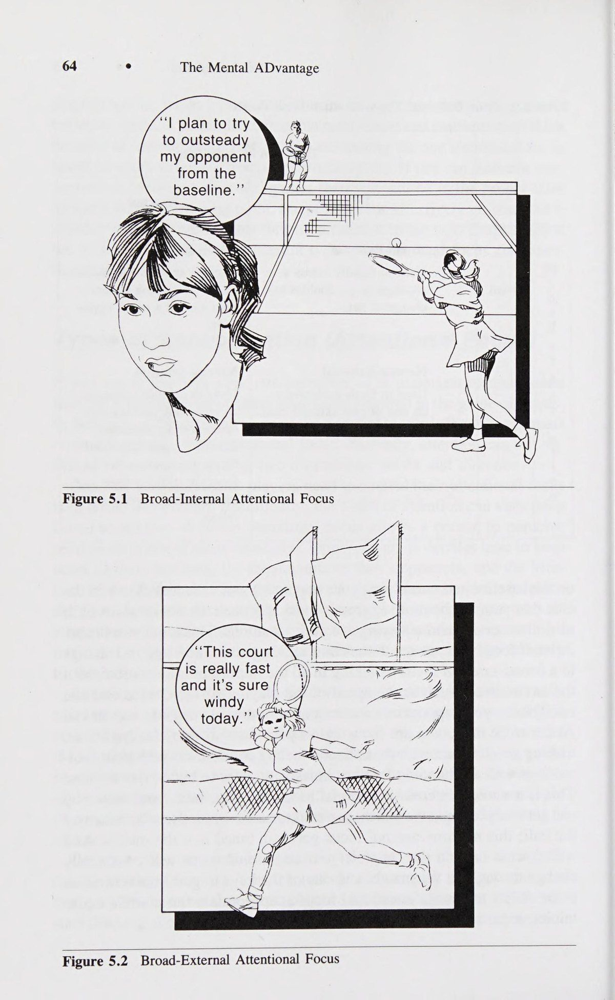
Đôi khi lối suy nghĩ hướng tới tương lai ít hoặc không liên quan gì đến trận đấu hoặc đối thủ cụ thể. Như đã đề cập trước đó, tâm trí của bạn đôi khi lang thang trong trận đấu với những thứ như bạn sẽ làm gì tối hôm đó, bạn cần làm gì ở trường hoặc nơi làm việc vào ngày hôm sau, v.v. Những suy nghĩ này thậm chí có thể không phải là tự nguyện; đột nhiên bạn Tập trung thấy mình đang nghĩ về những điều không liên quan gì đến trận đấu.
Sometimes the future-oriented thinking has little or nothing at all to do with the particular match or opponent. As mentioned previously, your mind sometimes wanders during a match to things like what you will be doing that evening, what you need to do at school or work the next day, and so on. These thoughts may not even be voluntary; all of a sudden you
Điều này có thể khiến bạn rất khó chịu và các trận đấu có thể trôi khỏi tầm tay bạn khi bạn mất tập trung. Điều quan trọng là bạn phải tập trung vào hiện tại và tập trung vào quả bóng bên ngoài trong các điểm và tập trung bên trong vào hơi thở và chiến lược của bạn giữa các điểm.
Concentration ° 69 find yourself thinking about things that have nothing to do with the match. This can be very frustrating, and matches can drift away from you as your concentration lapses. It is important to stay in the present and keep an external focus on the ball during points and an internal focus on your breath- ing and strategy between points.
Tê liệt bằng cách phân tích Một kiểu tập trung chú ý không phù hợp khác có thể dẫn đến các vấn đề về hiệu suất là tập trung vào cơ chế cơ thể trong cơn đột quỵ. Điều quan trọng là phải hiểu khi nào tập trung thu hẹp nội bộ là có lợi và khi nào nó gây bất lợi cho hiệu suất. Chúng ta hãy xem xét kỹ hơn về hiện tượng này.
Paralysis By Analysis Another type of inappropriate attentional focus that can lead to perfor- mance problems is focusing on body mechanics during the stroke. It is important to understand when an internal-narrow focus is beneficial and when it is detrimental to performance. Let us take a closer look at this phenomenon.
Khi bạn đang học một cú đánh mới hoặc hoàn thiện kỹ thuật của mình trên một cú đánh cụ thể, điều quan trọng là bạn phải tập trung sự chú ý vào bên trong để có được cảm giác động học của chuyển động. Ví dụ, nếu bạn đang thực hiện cú giao bóng của mình, bạn có thể muốn tập trung vào những thứ như chuyển trọng lượng, tư thế chống lưng với vợt, cú đánh mạnh theo sau và độ cao của đường tung bóng (mặc dù có lẽ bạn nên cố gắng sửa chỉ một điều tại một thời điểm). Nếu bạn đang thay đổi từ trái tay hai tay sang trái tay một tay, bạn sẽ cần tập trung vào việc cảm nhận chuyển động mới vì xu hướng tự nhiên là quay trở lại thói quen cũ của bạn. Cho đến khi bạn tích hợp kiểu chuyển động mới này và vuốt ve đến mức chúng trở nên tự động, hiệu suất của bạn có thể sẽ bị ảnh hưởng.
When you are learning a new stroke or refining your technique on a particular stroke it is important to focus your attention internally to get the kinesthetic feel of the movement. For instance, if you were working on your serve you might want to focus on such things as the transfer of weight, the scratch-your-back position with the racquet, a strong follow- through, and the height of the ball toss (although you probably should try to correct just one thing at a time). If you were changing from a two-handed to one-handed backhand you would need to focus on getting the feel of the new movement because of the natural tendency to revert back to your old habits. Until you integrate this new movement pattern and stroke to
Đây chính là nội dung của việc luyện tập: tập trung vào việc cải thiện các cú đánh của bạn bằng cách cảm nhận tốt hơn về chuyển động.
70 e The Mental ADvantage the point that they become automatic, your performance is likely to suffer.
Vấn đề nảy sinh khi kiểu suy nghĩ nội tâm hẹp hòi này diễn ra trong các trận đấu. Điều này thường xảy ra khi bạn bắt đầu gặp vấn đề với một trong các cơn đột quỵ của mình. Ví dụ: giả sử bạn bắt đầu bỏ lỡ một số cú chuyền bóng trái tay mà bạn thường thực hiện.
This is what practice is all about: to focus on improving your strokes by getting a better feel of the movement. The problem arises when this type of internal-narrow thinking takes place during matches. This usually occurs when you start to have problems with one of your strokes.
Một cách phổ biến để giải quyết vấn đề này là tập trung nhiều sự chú ý hơn vào cú đánh trái tay. Bạn bắt đầu theo dõi cách bạn đánh trái tay và có thể tự hỏi mình một số câu hỏi sau đây tùy thuộc vào loại lỗi: Tôi có làm đúng không? Tôi có đang thả cổ tay mình không? Tôi có ở vị trí tốt không? Tôi có mở cửa quá sớm không? Tôi có đang giữ khuỷu tay của mình khép lại không? Cú backswing của tôi có cao quá không? Tôi có đánh bóng quá muộn không? Khi bạn tìm kiếm câu trả lời cho lý do tại sao trái tay của bạn lại thất bại, bạn bắt đầu chú ý đến cơ chế cú đánh của mình bằng cách sử dụng trọng tâm chú ý hẹp bên trong. Điều này thường dẫn đến suy nghĩ quá nhiều, gây ra sự "tê liệt khi phân tích". Đối với hầu hết những tay vợt quần vợt trình độ cao, mô hình thực hiện cú đánh trở nên tự động. Điều này không có nghĩa là không có suy nghĩ nào xảy ra trên sân tennis; đúng hơn, việc suy nghĩ quá nhiều về cơ chế cú đánh trong trận đấu thường gây bất lợi cho thành tích vì tâm trí cản trở cơ thể. Bạn càng có xu hướng phân tích thì bạn càng có nhiều khả năng phá vỡ các chuyển động linh hoạt tự nhiên tạo nên một cú đánh quần vợt mượt mà và hiệu quả. Việc tập trung vào bóng một cách hạn hẹp và ít chú ý đến cơ chế cơ thể trong các pha đánh bóng sẽ tối đa hóa cơ hội đạt thành tích tốt của bạn. Giữa các thời điểm và trong quá trình chuyển đổi có thể là thời điểm thích hợp hơn để tập trung nội bộ. Trong quá trình diễn ra một thời điểm, nơi mà các quyết định và phản ứng nhanh chóng là tối quan trọng, việc tập trung nội bộ vào cơ chế cú đánh của bạn có thể sẽ khiến hệ thống bị quá tải dẫn đến nhiều lỗi hơn.
For instance, let’s say that you start missing several backhand passing shots that you normally make. A common way to deal with this problem is to focus more attention on the backhand. You start to monitor how you’re hitting your backhand and may ask yourself some of the following questions depending on the types of errors: Am I follow- ing through? Am I dropping my wrist? Am I in good position? Am I opening up too soon? Am I keeping my elbow tucked in? Is my backswing too high? Am I hitting the ball too late? As you search for the answer to why your backhand is failing you, you start to attend to the mechanics of your stroke using an internal-narrow focus of attention. This often leads to too much thinking, causing a ‘“‘paralysis by analysis.’’ For most advanced tennis players, the pattern of stroke production be- comes automatic. This does not mean that no thinking occurs on the tennis court; rather, that too much thinking about stroke mechanics during the match is usually detrimental to performance because the mind gets in the way of the body. The more you tend to analyze the more likely you are to break the natural fluid movements that make for a smooth and efficient tennis stroke. A narrow-external focus on the ball with a minimum of at- tention paid to body mechanics during rallies will maximize your chances of good performance. Between points and during changeovers may be more appropriate times to focus internally. During the course of a point, where rapid decisions and reactions are paramount, an internal focus on your stroke mechanics will likely overload the system resulting in more errors.
Trong quá trình luyện tập là thời gian để cảm nhận cú đánh và tập trung vào việc sửa lỗi trong khi trận đấu nên tập trung chủ yếu vào sự chú ý ở phạm vi hẹp - bên ngoài.
During practice is the time to get the feel of the shot and focus on error correction whereas match play should involve a predominantly narrow- external focus of attention.
Căng cứng tâm lý (Choking)—Một vấn đề về sự chú ý Một trong những điều tồi tệ nhất có thể nói về tay vợt quần vợt là họ "căng cứng tâm lý (Choking)". Mặc dù có rất ít sự nhất trí giữa các huấn luyện viên quần vợt và tay vợt quần vợt về định nghĩa chính xác về căng cứng tâm lý (Choking), nhưng sự đồng thuận chung là nó thường dẫn đến suy giảm hiệu suất. Hãy xem các tình huống sau. Bạn đã thắng set đầu tiên 6-2 và đang dẫn trước set thứ hai 5-3, giao bóng cho trận đấu. Cú giao bóng của bạn bị hỏng và bạn tiếp tục thua set thứ hai và trận đấu đó Hoặc, trong một tình huống khác, bạn chia đôi Tập đầu tiên và đang giao bóng với tỷ số 4-4, 30-40. Khi điểm tiến triển, bạn thực hiện một cú đánh tiếp cận bắt buộc và đối thủ của bạn tung ra một cú lốp bóng yếu.
Choking—An Attentional Problem One of the worst things that can be said about tennis players is that they ‘“choked.’’ Although there is little agreement among tennis coaches and tennis players on the exact definition of choking, the general consensus is that it usually results in impairment to performance. Take the follow- ing situations. You have won the first set 6-2 and are leading the second set 5-3, serving for the match. Your serve gets broken and you go on to lose the second set and the match. Or, in another situation, you split the Concentration ® 71 first two sets and are serving at 4-4, 30-40. As the point progresses you hit a forcing approach shot and your opponent throws up a feeble lob.
Với tất cả thời gian để đưa bóng đi, cuối cùng bạn sẽ đập bóng vào lưới, do đó thua trận. Đối thủ của bạn giữ giao bóng của mình để giành chiến thắng trong trận đấu. Trong tình huống cuối cùng, bạn chia set và giao bóng cho trận đấu với tỷ số 5-4, 30-30 ở set thứ ba. Ở hai điểm tiếp theo, bạn mắc lỗi gấp đôi và thua trận nhưng bạn quay lại để bẻ giao bóng của đối thủ và giành chiến thắng trong trận đấu. Bạn bị nghẹn trong tình huống nào ở trên?
With all the time in the world to put the ball away you wind up smashing the ball into the net, thus losing the game. Your opponent holds her serve to win the match. In a final situation, you have split sets and are serving for the match at 5-4, 30-30 in the third set. On the next two points you double fault to lose the game but you come back to break your opponent’s serve and win the match. In which of the above situations did you choke?
Nếu câu trả lời của bạn giống với câu trả lời mà tôi nhận được từ các huấn luyện viên quần vợt và các vận động viên trong hội thảo của tôi, thì sẽ không có nhiều sự đồng tình về những tình huống nào cấu thành căng cứng tâm lý (Choking). Điều này là do không có câu trả lời đúng hay sai.
If your responses are anything like those I get from tennis coaches and players in my workshops, then there will not be a whole lot of agreement concerning which situations constitute choking. This is because there are no right or wrong answers.
Một trong những vấn đề khi xác định hiện tượng căng cứng tâm lý (Choking) là hầu hết mọi người đều tập trung vào một màn trình diễn đơn lẻ như mắc lỗi kép, thiếu một chi phí dễ dàng hoặc mắc lỗi không đáng có. Tuy nhiên, căng cứng tâm lý (Choking) không chỉ là hành vi thực tế mà còn là một quá trình cuối cùng dẫn đến suy giảm hiệu suất. Lỗi kép tại thời điểm thi đấu có thể là do bị nghẹn hoặc không. Chúng ta phải hiểu tại sao tay vợt lại mắc lỗi kép.
One of the problems with defining choking is that most people focus on the single performance like double faulting, missing an easy overhead, or making an unforced error. However, choking is much more than the actual behavior—it is really a process that eventually leads to impaired performance. Double faulting at match point may or may not be a result of choking. We must understand why the tennis player double faulted.
Chúng ta hãy xem xét kỹ hơn quá trình đặc trưng của cái mà chúng ta gọi là căng cứng tâm lý (Choking).
Let us take a closer look at the process that is characteristic of what we have come to call choking. To begin with, choking usually occurs in a situation that is emotionally important to the player.
Đầu tiên, căng cứng tâm lý (Choking) thường xảy ra trong một tình huống quan trọng về mặt cảm xúc đối với tay vợt. Vì vậy, những tay vợt quần vợt thi đấu trong các trận đấu lớn coi trọng thành công của họ sẽ dễ bị căng cứng tâm lý (Choking) hơn, đặc biệt là trong những thời điểm quan trọng của trận đấu. Điều này không có nghĩa là bạn phải chơi ở Wimbledon thì một trận đấu mới được coi là quan trọng; thi đấu trong trận chung kết tại giải đấu câu lạc bộ địa phương có thể thực sự quan trọng và căng thẳng đối với bạn tùy theo mức độ cạnh tranh của bạn.
Thus tennis players playing in big matches where great importance is placed on their success are more prone to choke, especially during critical points in the match. This does not mean that you have to be playing at Wimbledon for a match to be important; playing in the finals at your local club tournament could be really important and stressful to you according to your level of competition. This increased sense of pressure causes you to tighten your muscles. Your heart rate and breathing start to increase along with other physical changes (see chapter 3).
Cảm giác áp lực gia tăng này khiến bạn phải căng cơ.
The key breakdown, however, occurs at the attentional level.
Nhịp tim và nhịp thở của bạn bắt đầu tăng lên cùng với những thay đổi thể chất khác (xem chương 3). Tuy nhiên, sự cố chính xảy ra ở cấp độ chú ý. Thay vì tập trung bên ngoài vào quả bóng và đối thủ, sự chú ý của bạn trở nên thu hẹp và hướng nội hơn khi bạn bắt đầu tập trung vào nỗi sợ hãi và lo lắng của chính mình về việc thua cuộc và thất bại. Đồng thời, áp lực gia tăng làm giảm tính linh hoạt trong khả năng tập trung chú ý của bạn và bạn gặp khó khăn trong việc thay đổi trọng tâm khi tình huống yêu cầu. Sự tập trung chú ý không phù hợp này cùng với sự lo lắng quá mức gây ra nhiều vấn đề về hiệu suất như suy giảm thời gian và khả năng phối hợp, mệt mỏi, căng cơ, những cú đánh vội vã cũng như khả năng phán đoán và ra quyết định kém.
Instead of focusing externally on the ball and the oppo- nent, your attention becomes more narrow and internal as you start to focus on your own fears and worries of losing and failing. At the same time, the increased pressure reduces the flexibility in your attentional focus, and you have problems changing your focus as the situation dictates. This in- appropriate attentional focus coupled with excess anxiety causes a variety of performance problems such as impaired timing and coordination, fatigue, muscle tension, rushing shots, and poor judgment and decision making. Thus, the double fault, unforced error, blown overhead, and missed volley are just the end result of inappropriate attentional focus brought about by excess pressure. The choking process is displayed in Table 5.2.
Vì vậy, lỗi kép, lỗi không cố định, lỗi thổi qua đầu và cú vô lê bị trượt chỉ là kết quả cuối cùng của việc tập trung chú ý không phù hợp do áp lực quá mức gây ra. Quá trình căng cứng tâm lý (Choking) được thể hiện ở Bảng 5.2. 1p e Bảng 5.2 Quá trình xảy ra tình trạng căng cứng tâm lý (Choking) dẫn đến căng cứng tâm lý (Choking) 1. Trận đấu lớn 2. Điểm quan trọng trong trận đấu 3. Đánh giá của huấn luyện viên, bạn bè và phụ huynh ~~ Thay đổi thể chất Thay đổi chú ý 1. Căng cơ tăng 1. Tập trung bên trong 2. Tăng nhịp thở 2. Tập trung hẹp 3. Nhịp tim đua 3. Giảm tính linh hoạt Suy giảm hiệu suất gr 1. Những cú lao nhanh 2. Phân tích thời gian và phối hợp 3. Chú ý đến các tín hiệu không liên quan (Riêng) lo lắng) 4. Căng cơ và mệt mỏi Tóm tắt Chương này đã thảo luận về mức độ tập trung đúng đắn có liên quan như thế nào đến việc có được sự tập trung chú ý thích hợp. Việc tập trung trong một thời gian dài chẳng hạn như trong một trận đấu quần vợt có thể cực kỳ khó khăn, đặc biệt là do tính chất dừng và bắt đầu của trò chơi. Một số vấn đề thường gặp đã được thảo luận như tham dự vào các sự kiện trong tương lai hoặc quá khứ và suy nghĩ quá nhiều khiến việc phân tích bị tê liệt. Cuối cùng, khái niệm căng cứng tâm lý (Choking) được đưa ra chỉ ra rằng nó là kết quả của sự tương tác giữa sự lo lắng quá mức và sự tập trung chú ý không phù hợp. Chương tiếp theo sẽ cung cấp một số kỹ thuật và chiến lược giúp cải thiện khả năng tập trung của bạn và tập trung vào các tín hiệu chú ý thích hợp.
1p e The Mental ADvantage Table 5.2 The Process of Choking Conditions Leading to Choking 1. Big match 2. Critical points in a match 3. Evaluation by coaches, peers, and ih parents ~~ Physical Changes Attentional Changes 1. Increased muscle tension 1. Internal focus 2. Increased breathing rate 2. Narrow focus 3. Racing heart rate 3. Reduced flexibility Performance Impairment gr 1. Rushing shots 2. Timing and coordination breakdown 3. Attending to irrelevant cues (Own anxiety) 4. Muscle tightness and fatigue Summary This chapter has discussed how proper concentration is related to having the appropriate focus of attention. Concentrating over a long period of time such as in a tennis match can be extremely difficult especially due to the stop and start nature of the game. Some common problems were discussed such as attending to future or past events and thinking too much causing a paralysis by analysis. Finally, the concept of choking was pre- sented indicating that it resulted from an interaction of excess anxiety and inappropriate attentional focus. The next chapter will provide some tech- niques and strategies to help improve your concentration and focus on the proper attentional cues. =") CHAPTER 6 4+ Psychological Skill #2: Improving Concentration I have just discussed several attentional problems in tennis that can wreak havoc with a player’s game and ability to concentrate. If we are going to improve our concentration ability, we need to take a systematic approach to practicing better attentional control. On-Court Tips to Improve Concentration Once again, different players react differently, so I have provided a num- ber of strategies, techniques, and on-court exercises. Choose the ones that seem to work best for your personality and playing style.
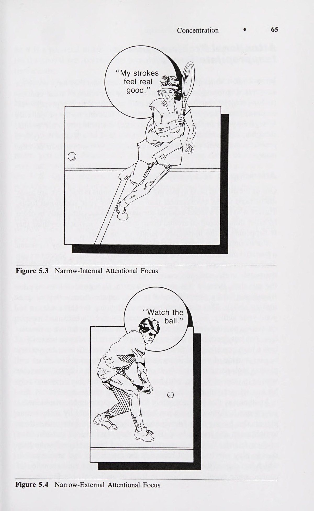
=") 4+ Kỹ năng tâm lý #2:
73
Cải thiện sự tập trung Tôi vừa thảo luận về một số vấn đề cần chú ý trong quần vợt có thể tàn phá lối chơi và khả năng tập trung của tay vợt. Nếu muốn cải thiện khả năng tập trung của mình, chúng ta cần thực hiện một cách tiếp cận có hệ thống để rèn luyện khả năng kiểm soát sự chú ý tốt hơn.
74 e The Mental ADvantage Practice Eye Control One of the problems many players run into is becoming distracted by sights and sounds around the court. This is usually a problem between points when you are not actively involved in the match per se and your mind has a greater tendency to wander.
Mẹo trên sân để cải thiện sự tập trung Một lần nữa, những tay vợt khác nhau phản ứng khác nhau, vì vậy tôi đã cung cấp một số chiến lược, kỹ thuật và bài tập trên sân. Hãy chọn những thứ có vẻ phù hợp nhất với tính cách và phong cách chơi của bạn. e Thực hành kiểm soát bằng mắt Một trong những vấn đề mà nhiều tay vợt gặp phải là bị phân tâm bởi cảnh tượng và âm thanh xung quanh sân. Đây thường là vấn đề giữa các điểm khi bạn không tích cực tham gia vào trận đấu và tâm trí của bạn có xu hướng đi lang thang nhiều hơn. Tôi đã chứng kiến nhiều đấu thủ đảo mắt quanh sân và bị phân tâm bởi những trò hề của đối phương, khán giả, các đấu thủ ở sân liền kề hoặc bất kỳ sự xao lãng nào khác. Một cách tốt để giữ cho mắt bạn không bị lang thang là tập trung vào dây giữa các điểm. Điều này sẽ ngăn mắt bạn nhìn xung quanh và tập trung vào các tín hiệu cạnh tranh và không liên quan khác. Một số tay vợt như Jimmy Connors và Ivan Lendl chọn dây của họ và cúi đầu xuống, tập trung vào vợt cho đến khi họ sẵn sàng bắt đầu điểm. Điều quan trọng là chọn thứ gì đó có thể duy trì sự tập trung chú ý của bạn và giúp mắt bạn không bị phân tâm. Roy Emerson, nhà vô địch vĩ đại của Australia, phát biểu:
I have seen many players who, with eyes darting around the court, become distracted by the opponent’s antics, spectators, players on adjacent courts, or any of a number of other dis- tractions. One good way to keep your eyes from wandering is to focus on your strings between points. This will prevent your eyes from looking around and focusing on other irrelevant and competing cues. Several players such as Jimmy Connors and Ivan Lendl pick at their strings and keep their heads down, focusing on their racquets until they are ready to begin the point. The key is to pick something that can maintain your focus of atten- tion and prevent your eyes from picking up distractions. Roy Emerson, the great Australian champion, states: It starts the minute you walk out on the court.
Nó bắt đầu ngay khi bạn bước ra sân. Khi tôi ra sân để tham dự một trận đấu quan trọng, tôi sẽ nhìn thẳng xuống sân như thể đang tìm kiếm một đồng xu trên sân. Tôi chưa bao giờ nhìn vào những người nhặt bóng hay trọng tài, hay thậm chí là đối thủ của mình. Tôi thậm chí chưa bao giờ nghe bất cứ điều gì. Tất cả những gì tôi nghe thấy là tiếng ồn.” Tập trung vào các đường nối của quả bóng Ý tưởng này xuất phát từ tác phẩm của Tim Gallwey? trong cuốn sách Trò chơi quần vợt nội tâm của ông. Trọng tâm cơ bản này thường bị bỏ qua, ngay cả với những tay vợt hàng đầu, những người đôi khi gặp khó khăn trong việc theo dõi bóng. Bạn thường nghe thấy một điệp khúc giống nhau từ những tay vợt ở mọi cấp độ: “Xem bóng”. Các thí nghiệm đã được tiến hành chứng minh rằng nhiều tay vợt quần vợt tập trung vào vùng lân cận chung của quả bóng nhưng thực tế không duy trì sự tập trung vào bản thân quả bóng.
When I’d go out for an important match, I'd look straight down at the ground, as if I were looking for a dime on the court. I never looked at the ballboys or the umpire, or even my opponent. I never even listened to anything. All I heard was noise.' Focus on the Seams of the Ball This idea comes from the work of Tim Gallwey? in his book Inner Game of Tennis. This fundamental focus is often overlooked, even by top players who sometimes have problems watching the ball. You often hear the same refrain from players at all levels: ‘“Watch the ball.’’ Experiments have been conducted demonstrating that many tennis players focus on the general vicinity of the ball but do not actually maintain focus on the ball itself.
Việc không xem bóng trở thành một vấn đề lớn hơn khi một điểm ngày càng dài và trận đấu kéo dài hơn vì mệt mỏi. Ngoài ra, khi đối thủ của bạn đang thực hiện những cú giao bóng mạnh, những cú vô lê và những cú chạm đất sắc bén, điều quan trọng hơn là bạn phải luôn để mắt đến quả bóng.
Not watching the ball becomes more of a problem as a point gets longer and as a match gets longer because of fatigue. Also, when your opponent is hitting hard serves and crisp volleys and groundstrokes it becomes even more critical that you keep your eyes on the ball.
Việc quan sát các đường nối của quả bóng thường cho ra một số kết quả thú vị.
Watching the seams of the ball usually produces some interesting results.
Đầu tiên, nhiều tay vợt nhận ra rằng họ nhìn bóng tốt hơn nếu tập trung vào các đường nối. Việc tìm kiếm kiểu dáng được tạo ra bởi các đường nối khiến chúng ta bắt đầu quan sát quả bóng từ lúc nó rời vợt của đối thủ cho đến khi nó chạm vào vợt của chúng ta. Vì có xu hướng bắt đầu xem bóng sớm hơn nên tay vợt thường cho rằng quả bóng thậm chí còn bắt đầu có vẻ to hơn hoặc di chuyển chậm hơn.
First, many players realize that they see the ball better if they focus on the seams. Looking for the pattern made by the seams causes us to start watching the ball from the moment it leaves our opponent’s racquet to the time it hits ours. Since there is a tendency to start watching the ball earlier, players often report that the ball even begins to appear bigger or to be moving slower.
Một lợi ích khác của việc quan sát các đường nối là tâm trí trở nên quá mải mê quan sát khuôn mẫu đến nỗi nó quên nghĩ về tất cả những thứ gây mất tập trung đang kéo theo những thứ làm gián đoạn sự tập trung. Tâm trí ít có khả năng lang thang đến những suy nghĩ không liên quan. Điều này thường sẽ dẫn đến việc tạo ra cú đánh trôi chảy, tự nhiên và nhịp nhàng hơn.
Another benefit of watching the seams is that the mind becomes so ab- sorbed in watching the pattern that it forgets to think about all the dis- Improving Concentration ° TB) tracting things that interrupt concentration. The mind is less likely to wander to irrelevant thoughts. This usually will result in a more fluid, natural, and rhythmic stroke production.
Mặc dù nhiều tay vợt thấy việc thực hành quan sát các đường nối là hữu ích ngay lập tức, nhưng phải mất một thời gian để có thể tập trung hoàn toàn vào các đường nối. Bởi vì tâm trí có xu hướng đi lang thang nên điều này phải được luyện tập rất nhiều trước khi nó có thể được sử dụng một cách hiệu quả và nhất quán trong các trận đấu. Bên cạnh việc tập trung vào các đường nối, bạn có thể thử tập trung vào quỹ đạo của mỗi cú đánh, của cả bạn và đối thủ.
Although many players find the practice of watching the seams immedi- ately helpful, it takes a while to be able to stay completely focused on the seams. Because the mind’s tendency is to wander this must be prac- ticed a great deal before it can be effectively and consistently employed in match competition. Besides focusing on the seams, you might try con- centrating on the trajectories of each shot, both yours and your opponent’s.
Chú ý độ cao của quả bóng khi nó bay qua lưới, tốc độ của nó và liệu nó đang bay lên hay rơi xuống khi bạn tiếp xúc với vợt của mình. Điều này giúp bạn nhận thức rõ hơn về nhịp điệu của các cú đánh xen kẽ ở từng điểm và giúp tâm trí bạn tập trung vào điểm đó.
Notice the height of the ball as it passes over the net, its speed, and whether it is rising or falling as you make contact with your racquet. This makes you more aware of the rhythm of the alternating shots of each point, and helps your mind stay focused on the point.
Chơi từng điểm một—Không quan tâm đến tương lai và quá khứ Tầm quan trọng của việc chơi từng điểm một không thể được nhấn mạnh quá mức.
Play One Point at a Time—Disregard Future and Past The importance of playing one point at a time cannot be overemphasized.
Ví dụ, trong một cuộc phỏng vấn, Bjorn Borg được hỏi: "Lý do quan trọng nhất cho sự nghiệp quần vợt cực kỳ thành công của bạn là gì?" Mặc dù Borg rõ ràng có năng khiếu thể chất vượt trội về sự nhanh nhẹn, tốc độ và tính đúng lúc, anh ấy trả lời bằng cách nói rằng "đó là khả năng của tôi để chơi từng điểm một và không lo lắng hay suy nghĩ về những gì vừa xảy ra hoặc những gì có thể xảy ra. Điều duy nhất quan trọng là điểm sắp diễn ra." nhiều người biết rằng Borg đã phải học kỹ năng này khi còn là học sinh; anh ấy có tiếng là nổi loạn và để mọi việc xảy ra với mình. Trên thực tế, anh ấy chơi tệ đến mức cha mẹ anh ấy đã cất vợt của anh ấy vào tủ trong sáu tháng và cấm anh ấy chơi tennis.
For example, in an interview, Bjorn Borg was asked: ‘“What was the most important reason for your incredibly successful tennis career?’’ Although Borg obviously was gifted with the outstanding physical attributes of quick- ness, speed, and timing, he responded by saying that ‘‘/t was my ability to play one point at a time and not worry and think about what just hap- pened or what might happen. The only thing that was important was the point about to be played.’’? Not many people know that Borg had to learn this skill when he was a junior; he had a reputation of blowing up and letting things get to him. In fact, he got so bad that his parents put his racquet in the closet for six months and forbid him to play tennis. If he wanted to play he was going to have to learn not to let things bother him and just concentrate on one point at a time.
Bởi vì tâm trí quá cởi mở với những tin nhắn đến nên đôi khi khó tập trung vào hiện tại. Hãy nhớ rằng chơi từng điểm một là một trong những đặc điểm mà tay vợt quần vợt lưu ý khi mô tả thành tích đỉnh cao của họ. Ở trong hiện tại đòi hỏi sự tập trung tập trung giữa các điểm; đây là lúc tâm trí của chúng ta có xu hướng trôi về những sự kiện trong tương lai và quá khứ. Chương tiếp theo về việc đối thoại nội tâm (Self-Talk) với bản thân sẽ cung cấp một số gợi ý thực tế để duy trì hiện tại.
Because the mind is so open to incoming messages it’s sometimes hard to stay focused on the present. Remember that playing one point at a time is one of the characteristics that tennis players note when describing their peak performances. Staying in the present requires a focused concentra- tion between points; this is when our minds tend to drift to future and past events. The next chapter on self-talk will provide some practical sug- gestions for staying in the present.
Thực hành với sự xao lãng hiện tại Một trong những điều khiến chúng ta mất tập trung là bị phân tâm bởi tiếng ồn, chuyển động hoặc những gián đoạn khác. Tôi luôn ngạc nhiên khi một âm thanh nhỏ do ai đó trong đám đông tạo ra hoặc một chuyển động nhỏ có thể phá hủy hoàn toàn sự tập trung của tay vợt. Các tay vợt bóng rổ có thể đứng ở vạch phạm lỗi và ném phạt trong khi những khán giả có khả năng thù địch la hét, vẫy tay và dậm chân. Nhưng nếu ai đó di chuyển trên khán đài hoặc nói to trong một trận đấu quần vợt, hầu hết tay vợt quần vợt sẽ trở nên mất tập trung và khó chịu. Ví dụ, nhiều tay vợt đã nhận xét rằng họ bị phân tâm bởi những chiếc máy bay bay qua giải Mỹ mở rộng, nằm trên đường bay của Sân bay La Guardia.
Practice With Distractions Present One of the things that throws off our concentration is being distracted by noise, movement, or other disruptions. It always amazes me how a small sound made by someone in the crowd or a little movement can destroy totally a player’s concentration. Basketball players are able to stand at the 76 e The Mental ADvantage foul line and shoot free throws while potentially hostile spectators yell, wave their hands, and stomp their feet. But if someone moves in the stands or talks loudly during a tennis match, most tennis players become dis- tracted and upset. For example, many players have commented that they are distracted by planes flying over the U. S. Open, which is in the flight- path of La Guardia Airport.
Một trong những cách để đối phó tốt hơn với những phiền nhiễu tiềm ẩn trong một trận đấu quần vợt là chuẩn bị trước cho những sự kiện này. Điều này có thể đạt được bằng cách luyện tập một cách có hệ thống một số điều thường khiến bạn mất tập trung và mất tập trung. Ví dụ, nhiều huấn luyện viên bóng rổ sẽ tạo ra tiếng ồn lớn của đám đông để giúp các tay vợt quen với việc chơi và sút trong môi trường đó. Tay vợt quần vợt có thể tập luyện theo cách tương tự để chuẩn bị tốt hơn cho trận đấu. Bạn (hoặc huấn luyện viên của bạn) có thể sắp xếp để một số người đứng xung quanh sân và thỉnh thoảng nói chuyện hoặc đi ngang qua sân của bạn. Ngoài ra, nếu bạn gặp khó khăn trong việc tập trung trong điều kiện có gió hoặc tiếp xúc với ánh nắng mặt trời, bạn phải cố gắng luyện tập trong những điều kiện này. Bởi vì những tình huống này gây khó chịu cho nhiều tay vợt, họ tránh chúng trong luyện tập và sau đó hoàn toàn mất tinh thần nếu những tình huống này xảy ra trong một trận đấu. Không phải lúc nào cũng luyện tập trong điều kiện lý tưởng. Bạn càng luyện tập nhiều để đối phó với những phiền nhiễu tiềm ẩn và các điều kiện khó chịu khác thì bạn càng chuẩn bị tốt hơn để đối phó một cách hiệu quả với những điều này trong các trận đấu và ngăn chặn chúng. Đây là cách Jimmy Connors ngăn nhiệt độ và độ ẩm trong một trận đấu.
One of the ways to better cope with the potential distractions in a tennis match is to prepare for these events in advance. This can be accomplished by systematically practicing with some of the things that typically distract you and break down your concentration. Many basketball coaches, for instance, will pipe in loud crowd noises to get the players used to playing and shooting in that environment. Tennis players can train in the same manner to better prepare themselves for match competition. You (or your coach) might arrange to have some people stand around the court and talk or walk by your court from time to time. In addition, if you have problems concentrating in windy conditions or serving into the sun you must make it a point to practice under these conditions. Because these situations are aversive to many players, they avoid them in practice and then are totally psyched out if these circumstances arise in a match. Do not always prac- tice under ideal conditions. The more practice you have dealing with poten- tial distractions and other aversive conditions the better prepared you will be to effectively cope with these during matches and block them out. Here is how Jimmy Connors blocked out the heat and humidity during a match.
Ngoài đó rất nóng—rất nóng—nhưng tôi biết rằng nếu tôi bắt đầu nghĩ quá nhiều về mặt trời, tôi sẽ không cố gắng hết sức. Tôi không lo lắng về điều đó khi ở trên sân, nhưng khi tôi ngồi xuống, khi mặt trời lặn, nó bắt đầu ảnh hưởng đến tôi một chút. Vì thế tôi chỉ chặn nó lại và giả vờ như nó không có ở đó. Đó là những gì bạn phải làm trong môn quần vợt—không để bản thân nghĩ về bất cứ điều gì có thể gây ảnh hưởng tiêu cực đến trận đấu của bạn.* Sử dụng Từ gợi ý Một trong những cách tốt nhất để giữ tâm trí bạn tập trung vào trận đấu là sử dụng các từ gợi ý. Đây chỉ đơn giản là những từ mà bạn có thể sử dụng để giúp kích hoạt một phản hồi cụ thể. Những từ gợi ý này có thể có thành phần hướng dẫn (ví dụ: trả vợt, theo sau, giữ cổ tay) hoặc chúng có thể mang tính động lực hoặc cảm xúc hơn (ví dụ: di chuyển, mạnh mẽ, nhanh chóng, thư giãn, dễ dàng).
It was hot out there—really hot—but I knew that if I started thinking too much about the sun, I wouldn’t do my best. I didn’t worry about it while I was on the court, but when I was sitting down, with the sun beating down, it started to get to me a little. So I just blocked it out, and pretended it wasn’t there. That’s what you have to do in tennis— not let yourself think about anything that can have a negative effect on your game.* Use Cue Words One of the best ways to keep your mind focused on the match is through the use of cue words. These are simply words that you can use to help trigger a particular response. These cue words can have an instructional component (e.g., racquet back, follow through, firm wrist) or they can be more motivational or emotional (e.g., move, strong, quick, relax, easy).
Điều quan trọng là giữ cho từ gợi ý đơn giản và để nó kích hoạt phản hồi mong muốn. Khi trả giao bóng, nếu bạn bị bắt quả bóng bằng chân phẳng và chạm vào chân sau, bạn có thể sử dụng từ gợi ý về phía trước để khiến bạn di chuyển
The key is to keep the cue word simple and let it trigger the desired response. In returning serve, if you are being caught flat-footed hitting off your back foot you might use the cue word forward to get you moving
Chương 5: Mô Hình Bốn Chiều Kích Tiêu Điểm Chú Ý Nideffer (The Attentional Model)
Chapter 5: Nideffer's 4-Quadrant Attentional Model: Broad vs Narrow, Internal vs External
Cải thiện khả năng tập trung e 07.
Improving Concentration e 07. into the ball.
vào bóng. Khi thực hiện cú vô lê, bạn có thể sử dụng cò súng hoặc cú đấm để nhấn mạnh việc đánh ra trước mặt bạn; nếu bạn không duỗi thẳng hoàn toàn cánh tay của mình khi đánh bóng qua đầu, bạn có thể sử dụng tầm với hoặc căng cơ.
In hitting the volley you might use the trigger firm or punch to emphasize hitting out in front of you; if you are not getting full exten- sion of your arm in hitting overheads you might use the cue reach or stretch.
Một gợi ý cần phải có ý nghĩa đối với bạn và hữu ích để tập trung sự chú ý vào phản hồi cụ thể sẽ mang lại kết quả thành công. Nó đặc biệt hữu ích khi học một cú đánh mới hoặc một biến thể của cú đánh hoặc khi cố gắng bỏ một thói quen xấu. Ngoài ra, nếu bạn đang điều chỉnh cơ thể của mình và cảm thấy rằng bạn đang không tập trung vào một khía cạnh nhất định của trò chơi, thì hãy tự gợi ý về khía cạnh đó. Rod Laver đưa ra một ví dụ về việc chú ý đến tầm quan trọng của chuyển động và động tác bằng chân.
A cue needs to be meaningful to you and helpful for focusing attention on the specific response that will produce successful results. It is particu- larly useful when learning a new stroke or variation of a stroke or when trying to break a bad habit. Also, if you’re tuned in to your body and sense that you are not concentrating on a certain aspect of your game, then cue yourself on that aspect. Rod Laver provides an example of being atten- tive to the importance of his movement and footwork.
Nếu tôi có thể cử động đôi chân của mình thì mọi thứ sẽ ổn hơn một chút đối với tôi. Thông thường, khi một tay vợt không tập trung tốt, nó sẽ biểu hiện ở một hoặc hai lĩnh vực kỹ thuật, như không nhìn bóng hoặc không xoay vai. Vì vậy, thay vì chỉ bảo bản thân tập trung, điều cần làm là tập trung vào điều đang khiến bạn gặp rắc rối.* Số lượng tín hiệu khác nhau mà bạn có thể sử dụng là vô tận. Một số ví dụ bổ sung sẽ được cung cấp ngay trong phần thảo luận về khả năng đối thoại nội tâm (Self-Talk) và sự tập trung.
If I can get my feet moving, then everything falls into place a little better for me. Usually when a player isn’t concentrating well, it will show up in one or two technical areas, like not watching the ball or not getting the shoulders turned. So rather than simply telling yourself to concentrate, the thing to do is to focus on that one thing that’s giv- ing you trouble.* The number of different cues you can use is endless. Some additional examples will be provided shortly in the discussion of self-talk and concentration.
e Tư duy không phán xét Một trong những trở ngại lớn nhất để duy trì sự tập trung của bạn trong một trận đấu (hoặc luyện tập) là khi bạn đánh giá các cú đánh của mình, thấy một số cú đánh là tốt và những cú đánh khác là xấu. Về cơ bản, bạn đang gán giá trị dương hoặc âm cho một sự kiện. Bạn thích khi bạn đánh bại đối thủ nhưng lại cảm thấy ghê tởm khi bỏ lỡ một cú đánh đầu dễ dàng. Những đánh giá này là những phản ứng cá nhân, cái tôi của bạn đối với cách bạn nhìn nhận trận đấu quần vợt của mình.
78 e The Mental ADvantage Nonjudgmental Thinking One of the biggest obstacles to maintaining your concentration during a match (or practice) is when you evaluate your shots, seeing some shots as good and others as bad. Basically, you are assigning a positive or negative value to an event. You like it when you ace your opponent but are dis- gusted when you miss an easy overhead. These judgments are your per- sonal, ego reactions to how you view your tennis game.
Quá trình đánh giá ảnh của bạn chỉ có thể ảnh hưởng đến hiệu suất của bạn.
This process of evaluating your shots can only hurt your performance.
Sau khi đánh giá một vài bức ảnh là tệ, bạn sẽ có xu hướng bắt đầu khái quát hóa.
After judging a couple of shots as bad, you will tend to start generalizing.
Điều này thường dẫn đến những suy nghĩ phán xét như ''Tôi luôn bỏ lỡ những cú giao bóng dễ dàng'', 'Tôi có một cú giao bóng tệ'' hoặc ''Tôi chỉ là một nghệ sĩ bị bóp cổ'. Như Tim Gallwey đã lưu ý, những kiểu suy nghĩ và phán xét này dẫn đến hiệu suất kém và các cú đánh bắt đầu mất nhịp điệu, thời gian và độ mượt mà. Bộ não của bạn bắt đầu lấn át cơ thể bạn và điều này dẫn đến việc bạn phải cố gắng quá mức, căng cơ và chơi một cách ngập ngừng. Bạn cần nhìn vào hiệu suất của mình một cách không phán xét. Điều này không có nghĩa là bạn nên bỏ qua các lỗi nhưng bạn sẽ thấy các bức ảnh của mình như hiện tại mà không cần thêm bất cứ thứ gì vào chúng. Ví dụ: bạn quan sát thấy trong một trận đấu tỷ lệ giao bóng đầu tiên của bạn là 40%. Quan sát này không bao gồm việc dán nhãn cho cú giao bóng của bạn là tệ, điều này thường dẫn đến sự tức giận, thất vọng và chán nản. Thay vì đánh giá, bạn nhận thấy rằng hầu hết các lỗi của bạn đều đi vào lưới hơn là đánh dài. Đây là dấu hiệu cho thấy bạn ném bóng quá thấp hoặc bạn đang giao bóng gấp rút. Để đáp lại, bạn thay đổi cách ném bóng hoặc chuyển động giao bóng của mình để khắc phục vấn đề. Do đó, chỉ cần quan sát những gì đang xảy ra và sử dụng thông tin đó theo cách tích cực có thể không chỉ mang lại hiệu suất tốt hơn mà còn mang lại trải nghiệm thú vị hơn.
This usually results in judgmental thoughts such as ‘‘I always miss the easy ones,”’ “I have a terrible serve,’’ or ‘‘I’m just a choke artist. As Tim Gallwey has noted, these kinds of thoughts and judgments lead to impaired performance and strokes begin to lose their rhythm, timing, and smoothness. Your brain starts to override your body and this results in trying too hard, tightening your muscles, and playing tentatively. You need to look at your performance in a nonjudgmental way. This does not mean you should ignore errors but you should see your shots as they are without adding anything to them. For example, you observe in a match that your first serve percentage is 40%. This observation does not include labeling your serve as terrible, which usually leads to anger, frustration, and discouragement. Instead of evaluating, you notice that most of your faults are going into the net rather than being hit long. This is a cue either that your ball toss is too low or that you are rushing your serve. In response, you alter your ball toss or service motion to correct the problem. Thus, merely observing what is happening and using that information in a posi- tive manner can translate into not only better performance but a more enjoy- able experience.
Đừng Thay Đổi Ý Nghĩ Khi Đánh Một Cú Đánh Như đã đề cập trước đó, quần vợt là một trò chơi của những quyết định, nhiều quyết định trong số đó phải được đưa ra trong vòng chưa đầy một giây. Điều này gây áp lực lớn cho tay vợt trong việc đưa ra quyết định đúng đắn và chơi theo tỷ lệ phần trăm. Tuy nhiên, nhiều tay vợt làm phức tạp quá trình ra quyết định bằng cách đưa ra hai hoặc ba quyết định trong một lần đánh. Kiểu suy nghĩ này thường gây bất lợi cho sự tập trung của bạn; một trong những sai lầm chết người mà bạn có thể mắc phải là cố gắng thay đổi ý định về kiểu hoặc vị trí bắn vào thời điểm cuối cùng. Hãy sử dụng ví dụ về cú đánh trái tay. Đối thủ của bạn đã thực hiện một cú đánh tiếp cận sâu khá tốt và bạn ngay lập tức quyết định chuyền xuống. Tuy nhiên, khi bạn lấy vợt lại, khóe mắt bạn thấy đối thủ của bạn đang đi xuống; ở khoảnh khắc cuối cùng Cải thiện sự tập trung, bạn cố gắng đi chéo sân nhưng lại đánh bóng vào lưới. Trong một tình huống khác, bạn có một pha đánh đầu khá dễ dàng và đối thủ của bạn chỉ đứng yên ở phía bên trái tay, dường như đang bỏ cuộc. Khi bạn chuẩn bị đánh bóng vào phần sân rộng, bạn nhận thấy đối thủ của mình đang lao qua sân đến đúng vị trí đó. Bạn cố gắng thay đổi cú đánh và đánh về phía sau đối thủ nhưng bóng lại đi chệch cột dọc.
Do Not Change Your Mind On a Shot As mentioned earlier, tennis is a game of decisions, many of which have to be made in less than a second. This puts a lot of pressure on a player to make good decisions and play the percentages. Many players, how- ever, complicate the decision process by making two or three decisions on one shot. This type of thinking is usually detrimental to your concen- tration; one of the fatal mistakes you can make is attempting to change your mind on the type or placement of your shot at the last moment. Let’s use the example of hitting a backhand passing shot. Your opponent has hit a fairly good deep approach shot, and you instantly decide to pass down the line. As you take your racquet back, however, in the corner of your eye you see that your opponent is coming down the line; at the last instant Improving Concentration ° 79 you try to go crosscourt but hit the ball into the net. In another situation, you have a pretty easy overhead and your opponent is just standing still on the backhand side, seemingly giving up the point. As you get ready to hit the ball into the open court you notice your opponent dashing across the court to that very spot. You try to change your shot and hit behind your opponent but the ball goes wide.
Trong cả hai trường hợp, việc thay đổi ảnh vào phút cuối đều gây ra lỗi. Việc thay đổi lựa chọn cú đánh và tạo ra cú đánh chiến thắng là cực kỳ khó khăn, ngay cả đối với những tay vợt rất có kinh nghiệm. Điều này là do bạn phải thực hiện những điều chỉnh vài phút nhưng quan trọng ngay lập tức về thời gian, góc vợt và động tác chân. Sai lầm mà các tay vợt mắc phải là quan sát đối thủ thay vì quan sát bóng. Khi bạn chuẩn bị thực hiện cú đánh, bạn chỉ cần tập trung vào quả bóng và đánh cú đánh đó thật sắc nét. Nếu bạn thực hiện cú đánh tốt, bạn có thể sẽ giành được điểm ngay cả khi đối thủ đã đoán trước bạn. Ví dụ: nếu cú đánh đầu của bạn mạnh, điều tốt nhất mà đối thủ của bạn có thể làm là tung ra một cú lốp bóng khác; bạn vẫn sẽ kiểm soát được điểm. Hoặc, nếu đường chuyền của bạn thấp và khó, đối thủ của bạn có thể sẽ không thể cản phá được, tạo cho bạn một cơ hội khác để chuyền. Nếu bạn ở trên lưới với một "'người trông nom'', bạn có thể đợi đối thủ phạm lỗi rồi đánh vào phần sân rộng mở. Trong hầu hết mọi tình huống, hãy quyết tâm, tin tưởng vào quyết định của mình và thực hiện cú đánh với khả năng tốt nhất của mình.
In both situations, changing your shot at the last moment produced an error. It is extremely difficult, even for very experienced players, to change the shot selection and produce a winning shot. This is because you have to make several minute but critical adjustments instantaneously in timing, angle of the racquet, and footwork. The mistake that players make is watch- ing their opponents instead of watching the ball. As you get set to hit a shot you need to focus only on the ball and hit that shot crisply. If you execute the shot well, you will probably win the point even if your op- ponent has outguessed you. For example, if your overhead is strong, the best your opponent can do is throw up another lob; you will still be in control of the point. Or, if your passing shot down the line is low and hard, your opponent probably will not be able to put it away, giving you another chance for a pass. If you are at the net with a “‘sitter,’’ you can wait for your opponent to commit and then hit to the open court. In almost all situations, make up your mind, believe in your decision, and execute the shot to the best of your ability.
Các thói quen để cải thiện sự tập trung Một cách khác để giảm thiểu sự xao lãng và tập trung tập trung là phát triển một thói quen nhất quán. Bởi vì quần vợt là một môn thể thao có tốc độ nhanh nên thời điểm tốt nhất để phát triển các thói quen là khi có thời gian nghỉ giữa hiệp. Vì vậy, tôi đã cố gắng phát triển một số quy trình giao bóng và hoàn trả dịch vụ.
Routines to Improve Concentration Another way to minimize distractions and focus concentration is to de- velop a consistent routine. Because tennis is such a fast sport, the best times for routines to be developed occur when there is a break in the ac- tion. Therefore, I have tried to develop some routines for service and ser- vice return.
Quy trình giao bóng Trong tất cả các cú đánh bạn đánh trong quần vợt, cú giao bóng là cú duy nhất nằm trong tầm kiểm soát hoàn toàn của bạn. Mỗi cú đánh khác là một phản ứng trước cú đánh của đối thủ. Do đó, đây là cơ hội hoàn hảo để phát triển thói quen giao bóng có thể đứng vững dưới áp lực cạnh tranh. Với việc luyện tập đều đặn, một thói quen cuối cùng sẽ trở thành một phần thói quen, tự động và tự nhiên trong quá trình giao bóng của bạn. Nó cũng sẽ mang lại nhịp điệu và cảm giác thoải mái, giúp bạn không bị bỏ rơi ngay cả trong những tình huống áp lực nặng nề.
Service Routine Of all the shots you hit in tennis, the serve is the only one that is under your complete control. Every other shot is a response to your opponent’s shot. Consequently, this is a perfect opportunity to develop a service routine that will stand up under the stress of competitive pressure. With consis- tent practice, a routine will eventually become a habitual, automatic, and natural part of your serve. It will also provide a rhythm and a sense of comfort that will not desert you even under situations of intense pressure.
Nếu bạn theo dõi những tay vợt hàng đầu với những cú giao bóng xuất sắc như Martina Navratilova, John McEnroe, Ivan Lendl, Pam Shriver, Boris Becker và Stefan Ed-berg, bạn sẽ nhận thấy rằng thói quen và thời gian giao bóng của họ không thay đổi trong suốt trận đấu. Điều này là do họ đã lên kế hoạch, luyện tập và hoàn thiện thói quen của mình để có thể cảm thấy thoải mái trong suốt trận đấu. Thói quen này làm giảm sự lo lắng và thu hẹp sự tập trung vào các khía cạnh quan trọng của cú giao bóng. Sau đây là một số gợi ý về quy trình bảo dưỡng; điều quan trọng cần lưu ý là bạn nên phát triển một thói quen mà bạn cảm thấy thoải mái; nghĩa là phù hợp với nhu cầu, khả năng và tính cách của bạn. 1. Xác định vị trí và vị trí đặt chân.
80 ° The Mental ADvantage If you watch top players with excellent serves like Martina Navratilova, John McEnroe, Ivan Lendl, Pam Shriver, Boris Becker, and Stefan Ed- berg you will notice that their routines and timing remain the same through- out the match. This is because they have planned, practiced, and perfected their routines so that they can feel comfortable throughout the match. The routine reduces anxiety and narrows concentration on the critical aspects of the serve. The following are some suggestions for a service routine; it is important to note that you should develop a routine with which you are comfortable; that is, one that fits your needs, abilities, and personality. 1. Determine Positioning and Foot Placement.
Đối với hầu hết tay vợt, thói quen nên bắt đầu bằng cách đặt ngón chân trái (chân phải đối với người thuận tay trái) một khoảng nhất định phía sau đường cuối sân. Khoảng cách chính xác không quan trọng bằng việc giữ khoảng cách đó nhất quán. Ví dụ: nếu bạn di chuyển vào bóng bằng cách di chuyển chân trước, bạn có thể đứng xa hơn về phía sau để tránh lỗi chân. Ngoài ra, bạn cần xác định vị trí của mình dọc theo đường cơ sở để phân phát vào các sân đấu quảng cáo và lừa dối cũng như liệu điều này có thay đổi gấp đôi hay không. Ví dụ, John McEnroe luôn tránh xa đường giữa sân, đặc biệt là khi giao bóng cho sân deuce, điều này hơi bất thường. Điểm quan trọng là xác định vị trí tối ưu của bạn dựa trên kỹ năng giao bóng của bạn và duy trì vị trí đó. Gợi ý cuối cùng là hãy chú ý đến khoảng cách giữa bàn chân của bạn và góc mà các ngón chân của bạn hướng tới. Vị trí này rất quan trọng vì nó kiểm soát chuyển động quay của cơ thể và cách chuyển trọng lượng. 2. Quyết định loại dịch vụ và vị trí.
For most players a routine should begin by placing the toe of the left foot (right foot for lefthanders) a certain distance behind the baseline. The exact distance is not as important as keeping that distance consistent. For example, if you move into the ball by moving the front foot, you might stand farther back to avoid a foot fault. Also you need to determine your positioning along the baseline for serving into the ad and deuce courts and whether this changes for doubles. John McEnroe, for instance, stays far away from the center line especially in serving to the deuce court, which is some- what unusual. The important point is to determine your optimal position based on your service skills, and maintain that position. A final sugges- tion is to be aware of the distance between your feet and the angle at which your toes are pointing. This placement is critical because it controls the rotation of the body and the way the weight is transferred. 2.
Tôi liên tục ngạc nhiên trước quá trình ra quyết định (hay nói đúng hơn là thiếu nó) của những tay vợt quần vợt liên quan đến dịch vụ. Khi tôi hỏi: “Tại sao bạn lại chọn đánh một cú giao bóng rộng về phía thuận tay trên sân deuce?” Tôi thường nhận được câu trả lời “Tôi cảm thấy như vậy” hoặc “Có vẻ như đó là một cú giao bóng phù hợp vào thời điểm đó”. Người giao bóng cần phải có hệ thống hơn nhiều trong việc lựa chọn và đặt quả giao bóng. Một số câu hỏi bạn nên tự hỏi mình bao gồm:
Decide on Service Type and Placement. I am constantly amazed by the decision process (or, more appropriately, the lack of it) of tennis players concerning service. When I ask: ‘‘Why did you choose to hit a slice serve wide to the forehand side on the deuce court?’’ I often get the response ‘“‘I felt like it’’ or “‘It just seemed like the right serve at the time.’’ A server needs to be much more systematic concerning choice and placement of the serve.
Cú giao bóng tốt nhất của bạn là gì?
Some questions you should be asking your- self include: What is your best serve?
Gần đây điều gì đã giúp ích cho bạn?
What has been working for you lately?
Đối thủ của bạn sẽ mong đợi điều gì?
What will your opponent be expecting?
Tỷ lệ giao bóng cao nhất là bao nhiêu?
What is the highest percentage serve?
Tình huống cụ thể trong trận đấu là gì?
What is the specific situation in the match?
Có nhiều lỗi xảy ra ở phía thuận tay hay phía trái tay hơn?
Are more errors being produced on the forehand or backhand side?
Mặc dù điều này có vẻ khiến bạn phải suy nghĩ nhiều, nhưng một số quyết định có thể được đưa ra trước trận đấu nếu bạn biết điểm mạnh và điểm yếu trong Cải thiện sự tập trung của chính mình và đối thủ. Ngoài ra, khi bạn trở nên có kinh nghiệm hơn, bạn có thể tiếp thu tất cả thông tin này trong một khoảng thời gian ngắn. Điều quan trọng là không được bỏ qua tầm quan trọng của việc lựa chọn cú giao bóng của bạn.
Although this may seem like a lot to think about, some of the decisions can be made before the match if you know your own and your opponent’s Improving Concentration e 81 strengths and weaknesses. In addition, as you become more experienced, you can assimilate all this information in a short period of time. It is im- portant not to overlook the importance of your choice of serves.
Một máy chủ tốt không nhất thiết phải áp đảo được đối thủ; đúng hơn, một người giao bóng tốt sẽ khiến đối thủ phải suy đoán và mất thăng bằng. Đôi khi, nó mang lại nhiều thông tin cũng như làm sáng tỏ việc lập biểu đồ loại giao bóng nào dẫn đến giành điểm và lỗi trả giao bóng. Tối đa hóa khả năng dịch vụ của bạn bằng cách đưa ra các quyết định có tỷ lệ phần trăm cao về loại dịch vụ và vị trí.
A good server does not necessarily overpower the opponent; rather, a good server keeps the opponent guessing and off balance. It is sometimes informative as well as enlightening to chart what types of serves lead to winning points and service return errors. Maximize your service ability by making high percentage decisions on service type and placement.
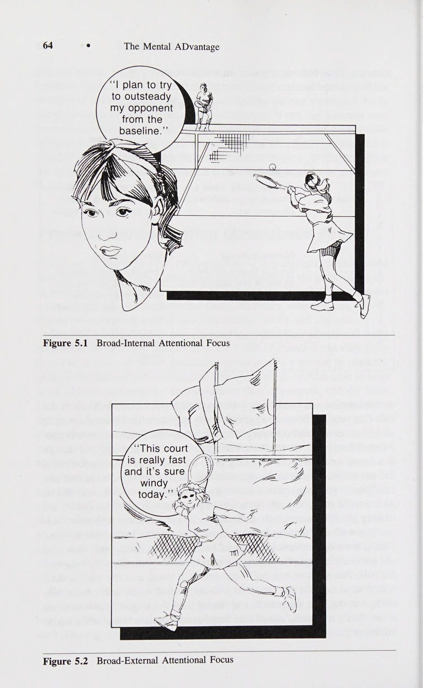
3. Điều chỉnh độ bám vợt và bóng.
3. Adjust Racquet Grip and Ball.
Sau khi quyết định kiểu giao bóng, bạn nên kiểm tra và điều chỉnh cách cầm vợt của mình. Các cú giao bóng khác nhau có thể yêu cầu bạn điều chỉnh một chút cách cầm vợt; cây vợt cần tạo cảm giác thoải mái trong tay bạn. Ngoài ra, bạn cần đặt quả bóng tennis vào tay. Mặc dù nhiều người được dạy giao bóng với hai quả bóng trong tay, nhưng tôi khuyên bạn nên luôn giao bóng (trong cả luyện tập và thi đấu) chỉ với một quả bóng.
After deciding on the type of serve, you should check and adjust your grip. Different serves may require slight adjustments in your grip; the racquet needs to feel comfortable in your hand. In addition, you need to place the tennis ball in your hand. Although many people are taught to serve with two balls in their hands, I recom- mend always serving (in both practice and competition) with only one.
Đầu tiên, nếu bạn giao bóng với hai quả bóng trong tay, bạn phải thành thạo hai cách tung bóng khác nhau, một cho quả giao bóng đầu tiên và một cho quả giao bóng thứ hai. Thứ hai, bằng cách chỉ cầm một quả bóng trong tay, bạn buộc phải lấy quả bóng tiếp theo ra khỏi túi sau khi mắc lỗi. Điều này chắc chắn sẽ làm bạn chậm lại và khiến bạn mất thêm một chút thời gian trước khi thực hiện cú giao bóng thứ hai. Nhiều tay vợt có xu hướng lao vào giao bóng thứ hai một cách vội vàng, đặc biệt là khi bị áp lực; do đó điều quan trọng là phải tuân theo cùng một thói quen có chủ ý bất kể tình huống nào.
First, if you serve with two balls in your hand, you must master two differ- ent tosses, one for the first serve and one for the second. Second, by holding only one ball in your hand you are forced to take the next ball out of your pocket after a fault. This will inevitably slow you down and cause you to take a little more time before hitting your second serve. Many players have a tendency to rush their second serve, particularly under pressure; it is therefore important to follow the same deliberate routine regardless of the situation.
4. Hít một hơi thật sâu. Hít một hơi thật sâu để thư giãn cổ, vai, cánh tay và cổ tay là cách tốt để bạn ổn định tinh thần ngay trước khi giao bóng.
4. Take aDeep Breath. A deep breath to relax the neck, shoulders, arms, and wrist is a good way to settle yourself down just before you serve.
Sau một thời gian dài, nhiều tay vợt bắt đầu giao bóng trước khi họ bình phục hoàn toàn. Bạn có thể cần hai hoặc ba hơi thở sâu và không nên bắt đầu động tác giao bóng cho đến khi bạn bình tĩnh và sẵn sàng tâm lý để bắt đầu giao bóng.
After a long point, many players start to serve before they have fully re- covered. You might need two or three deep breaths and you should not start your service motion until you are calm and psychologically ready to start the point.
5. Tung bóng theo nhịp điệu.
5. Bounce the Ball for Rhythm.
Hầu hết tay vợt quần vợt sẽ đánh bóng một số lần nhất định trước khi giao bóng để giúp họ nhịp nhàng. Thực sự không quan trọng bao nhiêu lần; mục đích là để cảm thấy thoải mái. Sau khi nảy bóng, bạn nên hít một hơi thật sâu để thư giãn hơn trước khi bắt đầu động tác giao bóng.
Most tennis players will bounce the ball a set number of times before serving to help their rhythm. It does not really matter how many times; the object is to feel comfortable. After bouncing the ball it is a good idea to take another deep breath to further relax before you start your service motion.
6. Xem và cảm nhận cú giao bóng hoàn hảo.
6. See and Feel the Perfect Serve.
Ngay trước khi bạn bắt đầu chuyển động giao bóng của mình, hãy thử quan sát và cảm nhận bản thân bạn đang đánh quả giao bóng vào đúng vị trí mà bạn đã quyết định. Điều này sẽ giúp lập trình cơ bắp của bạn và giúp bạn tự tin rằng bạn thực sự có thể đánh quả giao bóng theo cách bạn muốn.
Just before you begin your ser- vice motion, try to see and feel yourself hitting the serve into the exact spot that you decided upon. This will help program your muscles and give you confidence that you can indeed hit the serve the way you want to.
Chương 8 sẽ giải thích rất chi tiết về kỹ thuật tưởng tượng mình đang đánh một số cú đánh nhất định.
Chapter 8 will explain in great detail the technique of imagining yourself hitting certain shots.
7. Tập trung vào việc tung bóng và giao bóng đến vị trí đã lập trình.
82 ® The Mental ADvantage 7. Focus On Ball Toss and Serve to Programmed Spot.
Bây giờ bạn đã sẵn sàng tung bóng, đây là một phần quan trọng để giao bóng thành công. Bạn có thể thấy hữu ích khi chọn một vị trí (thường ở phía trên và phía trước bạn) nơi bạn muốn ném bóng. Hãy tập trung sự chú ý của bạn vào điểm này và sau đó để cú giao bóng của bạn tự động kết thúc.
You are now ready to toss the ball, which is a critical part of successful serv- ing. You might find it helpful to pick a spot (generally above and in front of you) where you want to toss the ball. Focus your attention on this spot and then just let your serve run off automatically.
Ngay bây giờ, bạn có thể nói rằng bạn không thể nghĩ về tất cả những điều này khi giao bóng, và một phần nào đó, bạn hoàn toàn đúng. Bạn phải thực hành thói quen của mình cho đến khi nó gần như tự động, đòi hỏi sự suy nghĩ có ý thức ở mức tối thiểu. Bạn biết rằng bạn sẽ hoàn thành được mục tiêu này nếu bạn thực hiện đều đặn thói quen của mình trong tất cả các cú giao bóng, bất kể tình huống nào. Cũng nên nhớ rằng đây chỉ là những gợi ý và trong phân tích cuối cùng, bạn cần cảm thấy thoải mái với bất kỳ thói quen nào mà bạn quyết định là tốt nhất cho mình.
Right now, you might be saying that you can’t be thinking about all these things when you serve, and in part, you are absolutely correct. You must practice your routine until it is virtually automatic, requiring a mini- mum of conscious thought. You know you will have accomplished this goal if you consistently go through your routine on all your serves, regard- less of the situation. Remember also that these are just suggestions, and in the final analysis you need to feel comfortable with whatever routine you decide is best for you.
Quy trình trả giao bóng Giao bóng trả lại có thể là một vị trí rất căng thẳng và khó đoán; bạn cần phản ứng nhanh chóng và chính xác với cú giao bóng của đối thủ.
Service Return Routine Returning serve is potentially a very stressful and unpredictable position to be in; you need to react swiftly and accurately to your opponent’s serve.
Bạn phải nhận thức được những thay đổi về vị trí hoặc góc vợt của người giao bóng; phản ứng với tốc độ, độ xoáy và vị trí của quả bóng; và quyết định loại hình cũng như vị trí trả lại dịch vụ của bạn. Việc này phải được thực hiện trong vòng vài giây hoặc ít hơn.
You must be aware of the changes in the server’s racquet position or angle; react to the speed, spin, and placement of the ball; and decide on the type and placement of your service return. This must be done within a matter of a couple of seconds or less.
Nhiều tay vợt thất vọng khi trả giao bóng vì họ để bản thân trở nên lo lắng, mất tập trung hoặc bị đe dọa. Điều này có thể dẫn đến một cú đánh khác và kém hiệu quả hơn so với cú đánh bình thường của bạn. Tư duy và sự chuẩn bị tinh thần của bạn là rất quan trọng để có được một lần hoàn trả dịch vụ thành công và nhất quán. Đối với một số tay vợt, việc thi đấu với một tay vợt giao bóng và chuyền bóng giúp họ trả lại cú giao bóng (trái ngược với việc đấu với một tay vợt giao bóng và chuyền bóng) bởi vì đối đầu với những tay vợt giao bóng và chuyền bóng, họ thực sự tập trung và cố gắng giữ bóng ở mức thấp khi trả giao bóng. Ngược lại, đối với những tay vợt khác, việc trả bóng trước người đánh lưới sẽ khiến họ sợ hãi, khiến họ phải đẩy hoặc đánh trả quá mức. Trong cả hai trường hợp, tư duy của bạn trước khi trả giao bóng có thể có tác động lớn đến cách bạn thực hiện. Một số gợi ý về quy trình hoàn trả dịch vụ được trình bày dưới đây. 1. Quyết định địa điểm và cách thức trả lại cú giao bóng.
Many players fall apart when returning serve because they allow them- selves to become nervous, mentally distracted, or intimidated. This can result in a stroke that is different from and less efficient than your normal return. Your mind-set and mental preparation are critical to have a success- ful and consistent service return. For some players, playing against a serve and volley player helps their service return (as opposed to playing against a baseliner) because against serve and volley players they really concen- trate and try to keep the ball low when returning serve. Conversely, for other players, returning against a net rusher intimidates them causing them to push or overhit their returns. In either case, your mind-set prior to return- ing serve can have a large impact on the way you perform. Some sugges- tions for a service return routine are presented below. 1. Decide on Where and How to Return the Serve.
Những tay vợt quần vợt thường mắc sai lầm khi trả giao bóng là không quyết định trước xem họ muốn làm gì với quả giao bóng. Điều quan trọng là phải quyết định xem bạn đang đi dọc biên, chéo bàn, xuống giữa, sâu hay ngắn.
Tennis players often make the mistake in returning serve of not deciding in ad- vance what they want to do with the serve. It is important to decide whether you are going down the line, crosscourt, down the middle, deep, or short.
Bạn cũng phải biết liệu bạn sẽ chip và tấn công, sử dụng xoáy lên, cắt lát hay lốp bóng. Việc bối rối không biết làm cách nào để trả lại cú giao bóng khi người giao bóng bắt đầu chuyển động giao bóng là một cảm giác thật tồi tệ. Trong tình huống này, bạn có thể sẽ không đạt được kết quả tốt khi Cải thiện sự tập trung. Tất nhiên, nếu người giao bóng thực sự khó khăn, bạn có thể chỉ cần đưa bóng qua lưới là đủ. Tuy nhiên, hầu hết các trận đấu đều có thắng và thua bằng cách thực hiện các cú trả giao bóng có thể trả lại tốt một cách nhất quán. Ví dụ: nếu người giao bóng lùi lại, hãy cố gắng giữ bóng sâu; nếu máy chủ chạm lưới, hãy cố gắng giữ bóng ở mức thấp để máy chủ phải tung cú vô lê lên. Hầu hết các quả giao bóng thứ hai, bất kể mức độ chơi, đều có thể trả lại được và những quyết định đúng đắn về cách trả lại những quả giao bóng này sẽ làm giảm các lỗi không đáng có.
You must also know whether you will chip and charge, use topspin, slice, or lob. Being confused as to how to return serve as the server goes into the service motion is a terrible feeling. In this situation, you probably will Improving Concentration ° 83 not hit a good solid return. Of course, if the server is really tough, it may be all you can manage to simply get the ball over the net. Most often matches are won and lost, however, by making consistently good returns off returnable serves. For example, if the server stays back, try to keep the ball deep; if the server comes to net, try to keep the ball low so the server has to volley up. Most second serves, regardless of the level of play, are returnable, and good decisions on how to return these serves will reduce unforced errors.
2. Hít một hơi thật sâu và vào tư thế sẵn sàng.
2. Take a Deep Breath and Take Your Ready Position.
Sau khi quyết định cách bạn muốn trả giao bóng, hãy hít một hoặc hai hơi thật sâu để thư giãn và vào tư thế sẵn sàng. Hãy chắc chắn rằng bạn đã sẵn sàng về thể chất và tinh thần trước khi đảm nhận vị trí sẵn sàng. Nếu bạn gặp khó khăn trong việc trả giao bóng, hãy thay đổi vị trí của bạn; điều này cũng mang lại cho máy chủ điều gì đó để suy nghĩ. Ví dụ, nếu bạn gặp khó khăn với cú trả bóng trái tay của mình, hãy di chuyển qua và thách thức đối thủ đánh về phía thuận tay của bạn. Điều này có thể đủ để làm mất nhịp điệu của máy chủ. 3. Hình ảnh việc hoàn trả dịch vụ mong muốn.
After deciding on how you want to return serve, take one or two deep breaths to relax and get into your ready position. Be sure you are physically and mentally ready before you assume the ready position. If you are having trouble returning serves, change your position; this also gives the server something to think about. For example, if you are having trouble with your backhand return, move over and dare your opponent to hit to your forehand. This may be enough to throw off the server’s rhythm. 3. Picture the Desired Service Return.
Như trong quy trình giao bóng, hình ảnh đã hoàn thành dịch vụ hoàn hảo. Hãy tưởng tượng bạn đang tiếp xúc trước mặt và đánh bóng đến vị trí mong muốn trên sân. 4. Tập trung vào người giao bóng và tung bóng.
As in the service routine, picture hitting the perfect service return. See yourself making contact out in front of you and hitting the ball to the desired spot on the court. 4. Focus On the Server and Ball Toss.
Bây giờ là lúc tập trung toàn bộ sự chú ý của bạn vào người giao bóng và tung bóng. Hầu hết các máy chủ sẽ cung cấp cho bạn những tín hiệu tinh tế liên quan đến loại và vị trí giao bóng của họ.
Now is the time to focus all your attention on the server and ball toss. Most servers will provide you with subtle cues concerning the type and placement of their serves.
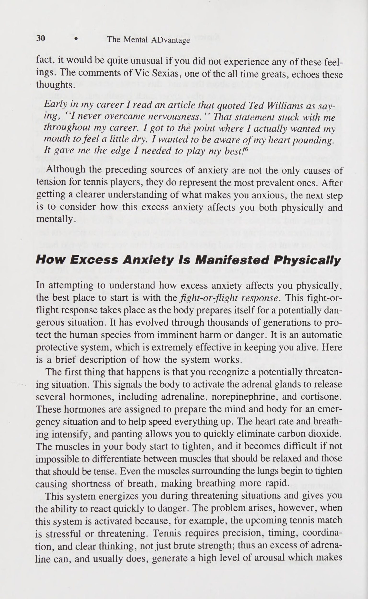
Ví dụ: nhiều người giao bóng ném bóng ra xa cơ thể hơn một chút khi thực hiện một cú giao bóng cắt lát rộng và trực tiếp hơn trên đầu khi đánh một cú giao bóng xoắn kiểu Mỹ. Sự chú ý cẩn thận đến quả bóng có thể mang lại cho bạn một chút lợi thế về những gì có thể xảy ra.
For example, many servers toss the ball a little further away from the body when attempting a wide slice serve and more directly overhead when hit- ting an American twist serve. Careful attention to the ball may give you a little edge on what to expect.
5. Sử dụng Từ gợi ý.
5. Use Cue Words.
Khi chuẩn bị trả giao bóng, sẽ rất hữu ích khi sử dụng từ gợi ý để nhắc nhở bạn làm một việc nhất định hoặc thực hiện một động tác nhất định. Ví dụ, lặp lại từ phía trước sẽ giúp bạn nhớ bước về phía sau và luôn kiễng chân. Giữ tín hiệu của bạn đơn giản và có ý nghĩa cá nhân.
In preparing to return serve it is useful to use a cue word that reminds you to do a certain thing or execute a certain movement. For example, repeating the word forward will help you remem- ber to step into the return and stay up on your toes.
Bài tập nâng cao khả năng tập trung:
Keep your cues simple and personally meaningful.
Trên sân Bên cạnh những điều khác nhau mà bạn có thể làm trong trận đấu để giúp tập trung, có một số bài tập cụ thể mà bạn có thể thực hiện trong các buổi luyện tập để cải thiện khả năng tập trung chú ý của mình. e Bài tập 1 Bài tập này có thể được thực hiện bằng cách sử dụng máy bóng hoặc người cho bóng ăn từ rổ bóng. Đổ đầy máy bóng (hoặc rổ) bằng các quả bóng có hai màu (ví dụ: trắng và vàng) và đặt máy ở đường cơ sở đối diện. Chỉ định một quả bóng màu làm đường dọc và màu còn lại làm sân chéo. Khi đó, nhiệm vụ của bạn là quan sát quả bóng thật kỹ, xác định màu sắc của nó và sau đó đánh nó dọc theo đường biên hoặc ngang qua sân. Điều này sẽ buộc bạn phải thực sự tập trung vào quả bóng để có thể xác định sớm màu sắc của nó và sau đó thực hiện phản ứng thích hợp của mình. Để tăng độ khó, hãy di chuyển máy bóng lên đến đường giao bóng rồi đến giữa đường giao bóng và lưới. Điều này làm tăng áp lực lên bạn trong việc phải thực sự theo dõi bóng, đưa ra quyết định nhanh chóng và sau đó thực hiện những cú sút sắc bén từ đường dọc hoặc đường chuyền ngang sân.
Exercises to Improve Concentration: On-Court Besides the various things you can do during a match to help focus your concentration, there are a couple of specific drills you can work on dur- ing your practice sessions to improve your attentional focus. 84 e The Mental ADvantage Exercise 1 This exercise can be accomplished by use of a ball machine or someone feeding from a basket of balls. Fill the ball machine (or basket) with balls of two colors (e.g., white and yellow) and place the machine on the op- posite baseline. Designate one color ball as down the line and the other color as cross court. It is then your job to watch the ball closely, deter- mine its color, and then hit it down the line or across the court. This will force you to really focus on the ball so you can determine its color early and then perform your appropriate response. To increase difficulty, move the ball machine up to the service line and then halfway between the ser- vice line and the net. This puts increased pressure on you to really watch the ball, make quick decisions, and then hit crisp down-the-line or cross- court passing shots.
Bài tập 2 Để giữ tâm trí của bạn trong hiện tại và ngăn nó khỏi lang thang, hãy thử bài tập này. Sử dụng máy bóng có phạm vi vận tốc vừa phải. Đứng trên lưới trong tư thế bắt cú bắt lưới (Volley) và sau đó nhờ người nào đó đặt máy ở tốc độ thoải mái. Tăng dần vận tốc và bạn sẽ thấy mình ngày càng tập trung hơn. Khi những quả bóng bắt đầu lao về phía bạn với tốc độ cao, bạn sẽ không còn thời gian để lang thang và trở nên mất tập trung. Một số tay vợt, khi bóng tiếp tục bay nhanh hơn, bắt đầu trở nên sợ hãi và căng cơ. Nếu bạn có xu hướng này, hãy hít một hơi thật sâu, tập trung vào các đường nối của quả bóng và cố gắng đánh quả bóng trước mặt bạn. Bài tập này sẽ giúp bạn nhận thức rõ hơn về cảm giác hoàn toàn tập trung vào hiện tại.
Exercise 2 To keep your mind in the present and prevent it from wandering, try this drill. Use a ball machine that has a fair range of velocities. Stand at the net in volley position and then have someone set the machine at a com- fortable speed. Gradually increase the velocity, and you should see that you become more and more concentrated. As balls start to rocket at you at high speed there is no time left for your mind to wander and become distracted. Some players, as the balls continue to get faster, start to be- come fearful and tighten up their muscles. If you have this tendency, take a deep breath, focus on the seams of the ball, and try to hit the ball in front of you. This exercise should make you more aware of what it feels like to be totally focused on the present.
Bài tập 3 Bài tập tiếp theo này được thiết kế để cải thiện khả năng tập trung, sự vững vàng, kiên nhẫn và kỷ luật. Tùy thuộc vào cấp độ kỹ năng của bạn, hãy chọn số lần chạm đất cụ thể mà bạn muốn đánh mà không mắc lỗi (ví dụ: 20, 40, 50, 80, 100). Nhờ ai đó cho bạn ăn bóng hoặc đánh vào máy bóng và cố gắng đạt được mục tiêu của bạn. Nếu bạn bỏ lỡ, bạn phải quay về số không; áp lực sẽ bắt đầu tăng lên khi bạn tiếp cận mục tiêu của mình. Bạn có thể tăng độ khó bằng cách yêu cầu bóng được đặt ở một phần nhất định của sân. Ví dụ: để cải thiện độ sâu của bạn, bạn có thể cố gắng thực hiện các cú đánh giữa đường giao bóng và đường cuối sân; để thực hiện theo vị trí, bạn có thể giới hạn các cú đánh của mình ở dọc biên hoặc chéo sân. Các biến thể là vô hạn, và kết quả cuối cùng sẽ là sự tập trung và kỷ luật tinh thần tập trung hơn.
Exercise 3 This next drill is designed to improve concentration, steadiness, patience, and discipline. Depending on your skill level choose a specific number of groundstrokes that you would like to hit without making a mistake (e.g., 20, 40, 50, 80, 100). Have someone feed you balls or hit against a ball machine and try to reach your goal. If you miss, you have to go back to zero; the pressure should start to build as you approach your goal. You can increase the difficulty by requiring that the ball be placed in a certain part of the court. For example, to improve your depth, you might try to hit shots between the service line and baseline; to work on placement, you can limit your shots to down the line or crosscourt. The variations are limitless, and the end result will be more focused concentration and mental discipline.
Cải thiện sự tập trung Bài tập 4 Bài tập tiếp theo sẽ giúp bạn có khả năng đưa ra quyết định liên quan đến thời điểm tiếp cận lưới. Vẽ một đường phía sau vạch giao bóng khoảng ba feet ở phía sân của bạn. Bất cứ khi nào cú đánh của đối tác của bạn chạm vào giữa đường biên và lưới, bạn phải bắt đầu di chuyển đến bóng trước khi nó nảy lên (bắt buộc phải phán đoán và quyết định sớm), sau đó cố gắng lấy bóng sớm và tiếp cận lưới. Sau đó, đối tác của bạn có thể lựa chọn thực hiện cú chuyền bóng hoặc lốp bóng.
Improving Concentration ° 85 Exercise 4 The next exercise will help your decision-making ability concerning when to approach the net. Make a line approximately three feet behind the ser- vice line on your side of the court. Whenever your partner’s shot lands between the line and the net you must start moving to the ball before it bounces (early judgment and decision are imperative) and then try to take the ball early and approach net.
Bài tập nâng cao khả năng tập trung:
Your partner then has the option for either a passing shot or a lob.
Ngoài sân Tôi vừa trình bày nhiều bài tập khác nhau có thể giúp cải thiện sự tập trung của bạn trên sân. Nếu bạn thực sự quan tâm đến việc rèn luyện kỹ năng tập trung của mình thì bạn cũng nên nỗ lực cải thiện chúng ngoài sân đấu.
Exercises to Improve Concentration: Off-Court I have just presented a variety of exercises that can help improve your concentration on the court. If you are really interested in working on your concentration skills, then you should also work on improving them off the court.
Một số bài tập được cung cấp để giúp bạn rèn luyện những kỹ năng này, giúp bạn tập trung chú ý tốt hơn và duy trì sự tập trung đó theo thời gian.
A number of exercises are provided to help you refine these skills which will allow you to better focus your attention and maintain that focus over time.
Bài tập 1 Một kỹ thuật đã được sử dụng rộng rãi để tăng sự tập trung được gọi là bài tập lưới. Điều này đòi hỏi một lưới khối với mỗi khối chứa một số có hai chữ số từ 00 đến 99 (xem Bảng 6.1). Mục tiêu là quét lưới và trong một khoảng thời gian nhất định (thường là một phút) gạch chéo qua càng nhiều số liên tiếp càng tốt, Bắt đầu bằng '' 00 ''. Bạn có thể sử dụng cùng một lưới nhiều lần bằng cách bắt đầu với số cao hơn lần thử trước của bạn (ví dụ: 22, 37, 44, v.v.). Ngoài ra, các lưới mới có thể được tạo bằng cách sử dụng bất kỳ tổ hợp số nào. Có báo cáo cho rằng những vận động viên có khả năng thực sự tập trung, quét và lưu trữ các tín hiệu liên quan thường sẽ đạt điểm ở mức trên 20 và đến 30 về các con số mà họ tìm thấy theo trình tự trong một phút. Bài tập này đã được sử dụng rộng rãi ở Đông Âu như một công cụ sàng lọc trước cuộc thi. Nó thực sự có thể mang lại cho bạn cảm giác tập trung vào một thời điểm nhất định.
Exercise 1 One technique that has been used extensively to increase concentration is known as the grid exercise. This requires a block grid with each of the blocks containing a two-digit number ranging from 00 to 99 (see Table 6.1). The object is to scan the grid and within a given period of time (usually one minute) put a slash through as many consecutive numbers as possible, Starting with ‘‘00’’. The same grid can be used several times by just start- ing with a higher number than in your previous attempt (e.g., 22, 37, 44, etc.). In addition new grids can be made using any combination of num- bers. It has been reported that athletes who have the ability to really con- centrate, scan, and store relevant cues will usually score in the upper 20’s and into the 30’s in terms of the numbers they find in sequence in one minute. This exercise has been used extensively in Eastern Europe as a precompetition screening device. It really can give you a sense of your concentration at a given point in time.
Bên cạnh việc giúp bạn học cách tập trung sự chú ý và quan sát môi trường để tìm các tín hiệu liên quan (ví dụ: đánh đôi), bài tập còn có lợi thế là tạo ra các tình huống khác nhau. Ví dụ: bạn có thể thêm các yếu tố gây xao lãng như âm nhạc hoặc mọi người đang nói chuyện với bạn và bạn có thể làm điều đó ở nơi có tiếng ồn hoặc bất kỳ yếu tố gây xao lãng tiềm ẩn nào khác khiến bạn mất tập trung. Như Bảng 6.1 Bài tập về lưới tập trung se ve V2 Sl ay!
Besides helping you learn to focus your attention and scan the environ- ment for relevant cues (e.g., in doubles), the exercise also has the advan- tage of creating different situations. For example, you can add distrac- tions such as music or people talking to you, and you can do it where there is noise or any other potential distractions to your attention. As your 86 e The Mental ADvantage Table 6.1 Concentration Grid Exercise 42 32 39 34 99 19 64 se 03 ve 97 37 92 18 90 53 04 V2 Sl 65 40 95 33 86 45 81 67 13 29 58 78 69 57 68 87 05 79 15 28 36 26 09 62 89 91 47 ay!
Te Fi 4] Sl pe) khả năng tập trung được cải thiện, bạn sẽ có khả năng ngăn chặn những phiền nhiễu tốt hơn và tập trung hoàn toàn vào nhiệm vụ. Và đây chẳng phải là điều bạn muốn đạt được trong trò chơi quần vợt của mình sao – hoàn toàn say mê và loại bỏ mọi phiền nhiễu có thể xảy ra.
61 64 29 00 60 Te 02 22 08 74 17 16 12 25 76 48 Fi 70 83 06 49 4] 07 Sl 10 98 96 11 63 56 66 50 24 20 01 54 46 82 14 38 pe) 73 94 43 88 85 30 2 27 80 93 35 a concentration improves you will be better able to block out the distractions and focus exclusively on the task.
Bài tập 2 Bài tập đầu tiên rèn luyện khả năng của bạn trong việc chọn ra các tín hiệu liên quan và rà soát môi trường của bạn một cách nhanh chóng và hiệu quả. Bài tập tiếp theo này giúp bạn tập trung sự chú ý và duy trì sự tập trung đó. Bắt đầu bằng cách tìm một nơi yên tĩnh, không có phiền nhiễu. Lấy một quả bóng tennis và đặt nó vào tay bạn để cảm nhận rõ ràng về cảm giác của nó: kết cấu, màu sắc và bất kỳ đặc điểm phân biệt nào khác. Đặt quả bóng xuống và cố gắng tập trung sự chú ý của bạn vào nó. Hãy thử xem xét nó thật chi tiết. Nếu suy nghĩ của bạn lang thang, hãy đưa sự chú ý của bạn trở lại quả bóng.
And isn’t this what you want to accom- plish in your tennis game—complete absorption and the elimination of all potential distractions. Exercise 2 The first exercise worked on your ability to pick out relevant cues and scan your environment quickly and effectively. This next exercise helps you focus your attention and maintain that focus. Begin by finding a quiet place where there are no distractions. Get a tennis ball and place it in your hand getting a good sense of how it feels: its texture, color and any other distinguishing characteristics. Put the ball down and try to focus your attention on it. Try to examine it in great detail. If your thoughts wander, bring your attention back to the ball.
Cải thiện biểu đồ nồng độ trong bao lâu bạn có thể duy trì sự tập trung của mình vào quả bóng. Bạn sẽ thấy rằng không dễ để tập trung vào một đối tượng, nhưng đó là điều bạn cần làm trong một trận đấu quần vợt. Nếu bạn có thể tăng khả năng tập trung vào quả bóng, điều này sẽ giúp ích cho sự tập trung của bạn. Hãy luyện tập bài tập này thường xuyên.
Improving Concentration ° 87 Chart how long you can maintain your focus on the ball. You will find out that it’s not that easy to stay focused on one object, but that is what you need to do in a tennis match. If you can increase your ability to focus on the ball, this will help your concentration. Practice this exercise regularly.
Khi bạn có thể duy trì sự tập trung trong năm phút mà không bị phân tâm, hãy thực hành với những điều gây xao lãng (ví dụ: tiếng ồn, mọi người nói chuyện, âm nhạc, T.V., v.v.). Biểu đồ xem bạn có thể duy trì sự tập trung chú ý của mình trong bao lâu bất chấp những phiền nhiễu này. Đây là những điều mà tâm trí bạn sẽ phải giải quyết khi ra sân tennis.
When you can maintain concentration for five minutes without being distracted, practice with distractions (e.g., noise, people talking, music, T.V., etc.). Chart how long you can maintain your focus of attention despite these distractions. These are the kinds of things your mind will have to deal with when out on the tennis court.
Bài tập 3 Một bài tập để cải thiện sự tập trung và giảm thiểu sự phân tâm trước trận đấu bao gồm việc tưởng tượng chính bạn đang chơi trận đấu trong đầu. Điều này được mô tả bởi cựu chuyên gia quần vợt Ron Holmberg.
Exercise 3 An exercise to improve concentration and minimize distractions prior to a match involves seeing yourself playing the match in your head. This ~ is described by ex-tennis professional Ron Holmberg.
Tôi khá chắc chắn rằng tôi đã tiến xa hơn hầu hết tay vợt trong việc chuẩn bị tinh thần. Tôi thường ngồi xuống trước một trận đấu và hình dung trong đầu mọi cảnh quay có thể xảy ra mà tôi có thể tưởng tượng được trong trận đấu. Tôi tưởng tượng một quả bóng ngắn bay đến thuận tay của mình và tôi hình dung bản thân mình thực sự thực hiện cú đánh tiếp cận và sau đó thực hiện cú vô lê. Tôi tưởng tượng mình đang thực hiện một cú sút và hình dung mình đang tiến lên lưới để thực hiện một cú sút mà đối thủ của tôi đã đánh. Bằng cách này, tôi có thể tập trung tâm trí vào trận đấu ngay cả trước khi bước vào sân.° Mô tả của Holmberg hỗ trợ việc luyện tập tinh thần để giúp tập trung.
I’m pretty sure I went a lot further than most players in getting myself mentally prepared. I used to actually sit down before a match and pic- ture in my mind every possible shot sequence I could imagine that might take place in the match. I’d imagine a short ball coming to my fore- hand and Id picture myself actually making the approach shot and then putting away the volley. I’d imagine myself hitting'a drop shot and picture myself moving up to the net to hit a drop shot my opponent hit. In this way, I was able to get my mind into the match even before I stepped onto the court.° Holmberg’s description supports mental rehearsal to help concentration.
Điều này sẽ được thảo luận chi tiết hơn (chương 8) và là một cách tuyệt vời để chuẩn bị cho trận đấu (chương 12).
This will be discussed in more detail (chapter 8) and is an excellent way to prepare for a match (chapter 12).
Bài tập 4 Đây là một bài tập thú vị thể hiện sự tập trung tinh thần ảnh hưởng đến phản ứng cơ bắp của bạn như thế nào. Nó đòi hỏi một sợi dây dài khoảng 10 inch, được gắn một vật nặng nhỏ như chiếc nhẫn hoặc chìa khóa, biến nó thành một dây dọi nhỏ. Cố định khuỷu tay của bàn tay thuận trên bàn trong khi giữ dây giữa ngón cái và ngón trỏ. Bây giờ hãy nâng bàn tay và cẳng tay của bạn lên một góc 45 độ, nhấc sợi dây và vật đính kèm ra khỏi bàn. Bắt đầu tập trung vào việc di chuyển trọng lượng theo một hướng nhất định (ví dụ: theo chiều kim đồng hồ, ngược chiều kim đồng hồ). Bạn có thể sẽ nhận thấy rằng trọng lượng bắt đầu di chuyển theo kiểu mong muốn chỉ bằng cách nghĩ về nó. Điều này nhấn mạnh thực tế là suy nghĩ của bạn có mối quan hệ trực tiếp với phản ứng cơ bắp của bạn; kiểm soát suy nghĩ của bạn và tập trung sự chú ý của bạn đúng cách là điều quan trọng đối với thành công trong môn quần vợt của bạn.
Exercise 4 This is a fun exercise which demonstrates how mental concentration in- fluences your muscle reactions. It requires a string about 10 inches long, to which a small weight such as a ring or key is attached, making it into a small plumb line. Stabilize the elbow of your dominant hand on a table while holding the string between your thumb and forefinger. Now raise your hand and forearm to a 45 degree angle lifting the string and attached object off the table. Start concentrating on moving the weight in a certain direction (e.g., clockwise, counterclockwise). You will probably notice that the weight begins to move in the desired pattern just by thinking about it. This highlights the fact that your thoughts have a direct relationship
Tóm tắt Chương này đã cung cấp cho bạn nhiều lời khuyên và bài tập trong và ngoài sân để cải thiện sự tập trung. Nhiều tay vợt cảm thấy rằng tập trung có nghĩa là cố gắng nhiều hơn. Trên thực tế, khả năng tập trung là một kỹ năng cần được phát triển thông qua một chương trình luyện tập có hệ thống. Một lần nữa, tương tự như việc đối phó với sự lo lắng, mặc dù có nhiều kỹ thuật và chiến lược được đưa ra, bạn phải chọn cách nào khiến bạn cảm thấy thoải mái nhất. Điều này đòi hỏi bạn phải xác định điểm yếu của mình về khả năng tập trung và tập trung cải thiện chúng bằng các bài tập thích hợp.
88 ° The Mental ADvantage to your muscular responses; controlling your thoughts and focusing your attention properly is critical to your tennis success. Summary This chapter has provided you with a variety of on-court and off-court tips and exercises for improving concentration.
Phần 3: Tái Cấu Trúc Đối Thoại Nội Tâm & Kỹ Thuật Quán Tưởng Đa Giác Quan
Chương 6: Kỹ Năng Tâm Lý Số 3 — Tái Cấu Trúc Nhận Thức Qua Tự Nhủ (Self-Talk)
Chapter 6: Psychological Skill #3: Reframing Negative Self-Talk and Thought Stopping
ea t seaecizel 1@ Kỹ năng tâm lý #3:
Many players feel that con- centrating means trying harder.
Sell-Taix ae Một chủ đề phổ biến trong cuộc thảo luận về các vấn đề về sự chú ý xoay quanh ý tưởng đối thoại nội tâm (Self-Talk). Mặc dù tôi đã ám chỉ đến tầm quan trọng của việc đối thoại nội tâm (Self-Talk), nhưng vị trí quan trọng của nó trong mối tương quan với khả năng tập trung cần được đặc biệt chú ý. Vì vậy, chương này sẽ được dành để tìm hiểu bản chất của việc đối thoại nội tâm (Self-Talk), các vấn đề của việc đối thoại nội tâm (Self-Talk) và một số cách để đối phó với việc đối thoại nội tâm (Self-Talk) một cách hiệu quả.
In reality, concentration is a skill that must be developed through a systematic program of exercises. Once again, simi- lar to coping with anxiety, although a variety of techniques and strategies are presented, you must choose what feels most comfortable to you. This requires you to identify what your weak areas are in terms of concentra- tion and focus on improving them with the appropriate exercises. ea t seaecizel CHAPTER 7 1@ Psychological Skill #3: Sell-Taix 7 7 ae A common theme in the discussion of attentional problems revolves around the idea of self-talk.
Các kiểu đối thoại nội tâm (Self-Talk) Tất cả chúng ta, những tay vợt quần vợt, đều nói chuyện với chính mình với một mức độ đều đặn.
Although I have alluded to the importance of self- talk, its critical position in relation to concentration warrants special at- tention.
Tất nhiên, tần suất và nội dung sẽ khác nhau tùy theo từng người và từng tình huống. Bất cứ khi nào bạn nghĩ về điều gì đó, có nghĩa là bạn đang nói chuyện với chính mình. Đối thoại nội tâm (Self-Talk) trở thành một tài sản khi nó nâng cao lòng tự trọng, sự tập trung chú ý và hiệu suất. Việc đối thoại nội tâm (Self-Talk) giúp tay vợt quần vợt tập trung thích hợp vào hiện tại, không đắm chìm trong những sai lầm trong quá khứ hoặc dự tính quá xa về tương lai được gọi là đối thoại nội tâm (Self-Talk) tích cực. Ngược lại, việc đối thoại nội tâm (Self-Talk) gây cản trở vì nó không phù hợp, phi lý, phản tác dụng hoặc gây lo lắng được gọi là đối thoại nội tâm (Self-Talk) tiêu cực.
Thus, this chapter will be devoted to understanding the nature of self-talk, the problems with self-talk, and some ways for effectively coping with self-talk. Types of Self-Talk All of us who play tennis talk to ourselves with some degree of regularity. Of course, the frequency and content will vary from person to person and from situation to situation. Anytime you think about something you are 89 90 e The Mental ADvantage in a sense talking to yourself. Self-talk becomes an asset when it enhances self-esteem, attentional focus, and performance. Self-talk that helps a tennis player to stay appropriately focused in the present, not dwelling on past mistakes or projecting too far into the future is known as positive self- talk.
Trước khi tôi thảo luận về cách thức hoạt động của việc đối thoại nội tâm (Self-Talk) và cách sử dụng các kiểu đối thoại nội tâm (Self-Talk) cụ thể trong các tình huống khác nhau để cải thiện thành tích, cần lưu ý rằng, khi thể hiện phong độ tốt nhất, nhiều tay vợt quần vợt cho biết rằng họ không có suy nghĩ gì cả (xem chương 2). Trên thực tế, nhiều nhà khoa học và người thực hành thể thao đã nhấn mạnh rằng hiệu suất cao nhất không xảy ra khi các vận động viên đang nghĩ về kỹ năng. Đúng hơn, họ nhấn mạnh rằng những người biểu diễn xuất sắc sẽ chuyển hiệu suất làm việc sang một mức độ vô thức hoặc tự động, không bị can thiệp bởi suy nghĩ.
Conversely, self-talk that gets in the way because it is inappropriate, irrational, counterproductive, or anxiety-producing is called negative self-talk. Before I discuss how self-talk works and how specific types of self-talk can be used in different situations to improve performance, it should be noted that, when performing at their best, many tennis players report that they had no thoughts at all (see chapter 2). In fact, many sport scientists and practitioners have stressed that peak performance does not occur when athletes are thinking about the skill.
Mặc dù có thể mong muốn phấn đấu để đạt được thành tích không cần suy nghĩ như vậy, nhưng hầu hết tay vợt quần vợt đều suy nghĩ trước, trong và sau các trận đấu cũng như khi luyện tập. Ví dụ, Bjorn Borg đã mô tả giải quần vợt là một vài giờ suy nghĩ, suy nghĩ về mọi điểm. Những suy nghĩ này có thể tác động sâu sắc đến sự tập trung của tay vợt, chưa kể đến lòng tự trọng, sự tự tin và sự lo lắng. Vì vậy, điều quan trọng đối với tay vợt quần vợt và huấn luyện viên là phải kiểm soát những suy nghĩ này càng nhiều càng tốt. Như bạn sẽ thấy, không phải bản thân việc suy nghĩ dẫn đến các vấn đề về hiệu quả hoạt động mà là do cách suy nghĩ không phù hợp hoặc sai lầm. Câu hỏi không phải là có nên suy nghĩ hay không, mà là suy nghĩ như thế nào, cái gì và khi nào. Hiểu cách hoạt động của việc đối thoại nội tâm (Self-Talk) sẽ giúp bạn trả lời những câu hỏi này.
Rather, they emphasize that elite per- formers turn performance over to an unconscious or automatic level that is free from the interference of thought. Although it may be desirable to strive for such thought-free performance, most tennis players do think before, during, and after matches as well as practices. For example, Bjorn Borg has described tournament tennis as several hours of thinking, thinking on every point. These thoughts can have a profound impact on a player’s concentration, not to mention self- esteem, self-confidence, and anxiety. Therefore, it is important for tennis players and coaches to control these thoughts as much as possible. As you shall see, it is not thinking itself that leads to performance problems, but inappropriate or misguided thinking. The question should not be whether to think, but how, what, and when to think.
Cách thức hoạt động của việc đối thoại nội tâm (Self-Talk) Chúng ta không bị làm phiền bởi mọi thứ, mà là quan điểm của chúng ta về chúng.
Understanding how self-talk works will help you to answer these questions. How Self-Talk Works We are not disturbed by things, but rather the view we take of them.
Epictitus Không có gì tốt hay xấu cả, nhưng chính suy nghĩ mới khiến nó trở nên như vậy.
Epictitus There is nothing either good or bad, but thinking makes it so.
Shakespeare Những câu trích dẫn trên tổng hợp vai trò quan trọng mà suy nghĩ của chúng ta có đối với phản ứng cảm xúc của chúng ta trước các sự kiện. Tuy nhiên, có lẽ hầu hết chúng ta đều cảm thấy rằng chính các sự kiện sẽ quyết định phản ứng cảm xúc và thể chất của chúng ta. Lấy ví dụ sau. Bạn đang chơi trong trận chung kết của một giải đấu quan trọng mà trước đây bạn chưa từng thắng. Bạn thắng set đầu tiên đầy khó khăn với tỷ số 7-5 và đang giao bóng cho trận đấu với tỷ số 5-4 trong set thứ hai. Tuy nhiên, cú giao bóng của bạn bị hỏng, Đối thoại nội tâm (Self-Talk), một phần do lối chơi ngập ngừng của bạn và một phần do những cú trả giao bóng khó khăn của đối thủ. Bạn tiếp tục thua set thứ hai và sau đó thua trận với tỷ số tiebreak 7-6 ở set thứ ba sau khi dẫn trước 4-1. Sau trận đấu, bạn chán nản, tức giận và khó chịu với chính mình vì đã làm hỏng trận đấu và chán nản đến mức không muốn tập luyện vào tuần tới.
Shakespeare The above quotes sum up the critical role that our thoughts have on our emotional responses to events. However, most of us probably feel that events themselves determine our emotional and physical responses. Take the following example. You are playing in the finals of an important tour- nament that you have never won before. You win a tough first set 7-5 and are serving for the match at 5-4 in the second set. Your serve is broken, Self-Talk ° 91 however, due in part to your tentative play and in part to your opponent’s tough service returns. You proceed to lose the second set and then lose the match in a 7-6 tiebreaker in the third set after being up 4-1. After the match you are discouraged, mad, and upset with yourself for blowing the match and are so depressed that you don’t even want to practice next week.
Bạn tự nghĩ: ''Tại sao mình phải tiếp tục làm việc chăm chỉ khi rõ ràng là mình không thể thắng được trận đấu lớn?'' Bây giờ hãy xem xét bản thân trong tình huống tương tự ngoại trừ việc phản ứng của bạn trước nghịch cảnh này là khác nhau. Thay vì hạ thấp bản thân, bạn hãy nhìn trận đấu một cách khách quan và tự nhủ nội tâm (Self-Talk): “Tôi nhận ra rằng mình đã mất tập trung và tôi cần phải cải thiện phần này của trận đấu nếu muốn giành chức vô địch vào lần tới”. Về bản chất, bạn nhận ra rằng mình có khả năng chiến thắng nhưng chỉ cần chăm chỉ hơn một chút trong luyện tập.
You think to yourself: ‘‘Why should I continue to work hard when I ob- viously can’t win the big match?’’ Now consider yourself in the same situation except that your reactions to this adversity are different. Instead of putting yourself down you ob- jectively look at the match and say to yourself, ‘‘I realize that I lost my concentration and I need to work on this part of my game if I expect to win the championship next time.’’ In essence, you realize you have the ability to win but just need to work a little harder in practice.
Hình minh họa đơn giản này nêu bật ý tưởng rằng các sự kiện tự nó không gây ra phản ứng cảm xúc của bạn như trầm cảm, tức giận, lo lắng, vô vọng và thất vọng. Đúng hơn, cách bạn diễn giải sự kiện sẽ quyết định phản ứng của bạn. Mối quan hệ giữa một sự kiện, lời tự nói của bạn và phản hồi của bạn được thể hiện trong Bảng 7.1. Như hình minh họa, việc đối thoại nội tâm (Self-Talk) với bản thân đóng vai trò then chốt trong phản ứng của tay vợt quần vợt trước các tình huống (đặc biệt là nghịch cảnh) và ảnh hưởng trực tiếp đến hành động và cảm xúc trong tương lai.
This simple illustration highlights the idea that events in and of them- selves do not cause your emotional reactions such as depression, anger, anxiety, hopelessness, and frustration. Rather, it is how you interpret the event that determines your response. The relationship between an event, your self-talk, and your response is displayed in Table 7.1. As the figure demonstrates, self-talk plays a pivotal role in a tennis player’s reaction to situations (especially adversity) and directly affects future actions and feelings.
Bảng 7.1 Quá trình của sự kiện đối thoại nội tâm (Self-Talk) (Kích thích môi trường) Phản hồi tự nói (Nhận thức/Đánh giá) (Cảm xúc, Sinh lý, Hành vi) Thất bại trong một kỳ thi Bỏ lỡ một cú đánh quan trọng trong một trận đấu quần vợt Bỏ lỡ một kỳ thi Đánh trượt một cú đánh quan trọng trong một trận đấu quần vợt Ví dụ không lành mạnh “Tôi sẽ không bao giờ vượt qua khóa học này hoặc học xong đại học”' "'Tôi thật là một thằng ngốc—tôi sẽ không bao giờ thắng bây giờ'' Ví dụ lành mạnh “‘Không biết phải học gì bây giờ—Tôi sẽ làm tốt hơn’’ “Hãy để mắt đến quả bóng – trận đấu này vẫn chưa kết thúc đâu” Chán nản, trầm cảm Tức giận, tuyệt vọng, căng cơ gia tăng Lạc quan, có động lực để làm tốt hơn, bình tĩnh Tập trung tốt hơn, lạc quan, bình tĩnh hơn e Các cách đối thoại nội tâm (Self-Talk) với bản thân Mặc dù việc đối thoại nội tâm (Self-Talk) tích cực là rất quan trọng để có sự tập trung tốt, việc sử dụng việc đối thoại nội tâm (Self-Talk) mở rộng sang một số lĩnh vực của quần vợt Sau đây là phần thảo luận ngắn gọn về nhiều cách. việc đối thoại nội tâm (Self-Talk) đó có thể giúp ích cho tay vợt quần vợt.
Table 7.1 Process of Self-Talk Event (Environmental Stimulation) Self-Talk (Perception/Evaluation) Response (Emotional, Physiological, Behavioral) Flunking an exam Missing an important shot during a tennis match Flunking an exam Missing an important shot during a tennis match Unhealthy Examples “Tl never pass this course or finish college”’ “‘What an idiot I amn—I’ll never win now’’ Healthy Examples “‘T know what to study for now—I’ll do better’’ “Keep your eye on the ball—this match isn’t over’’ Discouragement, depres- sion Anger, hopelessness, in- creased muscle tension Optimism, motivation to do better, calmness Better concentration, optimism, calmness
Đối thoại nội tâm (Self-Talk) để tiếp thu kỹ năng Khi bạn trở nên thành thạo hơn trong môn quần vợt, bản chất của việc đối thoại nội tâm (Self-Talk) với bản thân bạn sẽ luôn thay đổi. Ví dụ, nếu bạn chỉ đang học một cú đánh mới như cú đánh trái tay, việc tự học thường hữu ích để nhắc nhở bản thân về một số khía cạnh quan trọng của cú đánh. Những từ gợi ý đơn giản như giữ chặt cổ tay, vươn tay hoặc duỗi thẳng khuỷu tay có thể giúp học được chuỗi hành động thích hợp.
92 e The Mental ADvantage Ways to Use Self-Talk Although positive self-talk is crucial for good concentration, the uses of self-talk extend into several areas of tennis. The following is a brief dis- cussion of the many ways that self-talk can help tennis players. Self-Talk for Skill Acquisition As you become more proficient in tennis, the nature of your self-talk should invariably change.
Tuy nhiên, ngay cả ở cấp độ bắt đầu, việc đối thoại nội tâm (Self-Talk) với bản thân nên được giữ ở mức tối thiểu; nói quá nhiều có thể gây tê liệt bằng cách phân tích đã thảo luận trước đó. Khi trái tay của bạn được cải thiện, việc đối thoại nội tâm (Self-Talk) của bạn sẽ trở nên ngắn hơn, ít thường xuyên hơn và tập trung hơn vào các chiến lược hơn là các tín hiệu kỹ thuật. Mục tiêu của bạn là giảm bớt sự kiểm soát có ý thức và cố gắng hành động tự động hơn; việc sử dụng một gợi ý như trơn tru có thể giúp đạt được trạng thái này. Ngoài ra, việc đối thoại nội tâm (Self-Talk) với bản thân nên tập trung nhiều hơn vào điều bạn đang cố gắng đạt được hơn là cơ chế của cú đánh. Ví dụ, trước khi giao bóng, hãy nghĩ đến vị trí bạn muốn thực hiện cú giao bóng hơn là cách đánh nó. Tuy nhiên, khi thực hiện cú vô lê, bạn thường không có thời gian để suy nghĩ và bạn phải phản ứng một cách tự động với quả bóng.
For example, if you are just learning a new stroke like the backhand, self-instructional talk is usually useful to remind yourself of certain key aspects of the stroke. Simple cue words like wrist firm, reach, or elbow straight can help in learning the appropriate sequence of action. Even at the beginning level, however, self-talk should be kept to a minimum; oververbalization can cause the paralysis by analysis discussed earlier. As your backhand improves, your self-talk should become shorter, less frequent, and more focused on strategies than technique cues. Your goal is to reduce conscious control and strive for more automatic action; the use of a cue like smooth might help achieve this state. In addition, your self-talk should focus more on what you are trying to achieve rather than on the mechanics of the stroke. Before serving, for instance, think of where you want to hit the serve rather than how to hit it.
Đối thoại nội tâm (Self-Talk) để phá bỏ thói quen xấu Nhiều tay vợt quần vợt buộc phải đương đầu với việc thay đổi thói quen xấu. Việc cố gắng chuyển từ cách đánh trái tay bằng hai tay sang một tay, từ cắt sang xoáy trên ở bên trái tay, hoặc từ cách cầm vợt thuận tay từ đông sang tây đều đòi hỏi sự tập trung cao độ của chúng ta. Những thay đổi này cực kỳ khó khăn vì chúng ta phải loại bỏ phản ứng tự động và học cách phản ứng mới. Đối thoại nội tâm (Self-Talk) có thể là một công cụ hiệu quả giúp phá bỏ thói quen xấu và lập kế hoạch cho thói quen mới.
When hitting a volley, however, there is usually no time for thinking, and you have to respond automatically to the ball. Self-Talk for Breaking Bad Habits Many tennis players are forced to cope with changing bad habits. Trying to switch from a two-handed to one-handed backhand, from slice to top- spin on the backhand, or from an eastern to western forehand grip all make severe demands on our concentration. These changes are extremely diffi- cult because we must unlearn an automatic response and learn a new response.
Khi thay đổi một cú đánh hoặc từ bỏ một thói quen xấu, bạn (và huấn luyện viên hoặc chuyên gia nếu có) cần phải quyết định những gợi ý tự hướng dẫn phù hợp và phù hợp nhất hoặc những gợi ý sẽ giúp tạo ra phản ứng mới một cách tự động. Sự thay đổi càng lớn thì việc tự hướng dẫn càng cần thiết. Ngoài ra, điều quan trọng là phải tập trung vào những gì nên làm hơn là những gì không nên làm. Việc tự nhủ nội tâm (Self-Talk), ''đừng đánh rơi đầu vợt'' không đưa ra thông tin gì về việc phải làm mà chỉ làm nổi bật những điều tiêu cực. Bạn nên luôn tự nhủ nội tâm (Self-Talk) mình phải làm gì chẳng hạn như 'Làm theo'' Đối thoại nội tâm (Self-Talk) e hoặc ''Giữ vững cổ tay'' vì điều này củng cố thói quen mà bạn đang cố gắng thực hiện một cách tự động.
Self-talk can be an effective tool to help break the bad habit and program the new one. In changing a stroke or breaking a bad habit you (and a coach or pro if you have one available) need to decide on the most relevant and ap- propriate self-instructional cue or cues that will help make the new response automatic. The greater the change the more self-instruction will be neces- sary. In addition, it is important to focus on what to do rather than what not to do. Telling yourself, ‘‘don’t drop your racquet head”’ gives no in- formation about what to do; it only highlights the negative. You should always work on telling yourself what to do such as ‘Follow through’’
Đối thoại nội tâm (Self-Talk) để bắt đầu hành động Đối thoại nội tâm (Self-Talk) cũng có thể giúp bạn bắt đầu hoặc có động lực. Người ta đã chứng minh rằng người chạy đã tăng tốc độ của mình bằng cách sử dụng các từ như nhanh hoặc nhanh. Động tác bằng chân trong quần vợt có thể được nâng cao bằng những từ tương tự, đặc biệt nếu chúng ta cảm thấy chậm chạp và uể oải. Đánh những cú vô lê hung hãn có thể được kích hoạt bởi các từ gợi ý như mạnh, sắc nét hoặc tiến về phía trước, trong khi một cú giao bóng có thể được kích hoạt bởi các từ như mượt mà, tầm với hoặc bùng nổ. Bên cạnh việc gợi ý những hành động cụ thể, việc đối thoại nội tâm (Self-Talk) với bản thân có thể thúc đẩy chúng ta bằng những tín hiệu như thức dậy, đi, di chuyển, đứng dậy và trở nên cứng rắn. Chúng ta có xu hướng phản ứng nhanh chóng với những mệnh lệnh kiểu này từ huấn luyện viên và những mệnh lệnh tương tự đến từ chính chúng ta cũng có thể có tác dụng.
Self-Talk e 93 or ‘‘Keep the wrist firm’’ as this reinforces the habit you are trying to make automatic. Self-Talk to Initiate Action Self-talk can also serve to get you started or motivated. It has been shown that runners have increased their speed by using words such as quick or fast. Footwork in tennis might be enhanced with similar words, especially if we are feeling slow and lethargic. Hitting aggressive volleys might be triggered by cue words such as strong, crisp, or forward, whereas a serve might be cued by words such as smooth, reach, or explode. Besides cue- ing particular strokes, self-talk can serve to motivate us by such cues as wake up, get going, move, pick it up and get tough. We tend to respond quickly to these types of commands from coaches, and these same com- mands coming from ourselves can work just as well.
Đối thoại nội tâm (Self-Talk) để duy trì nỗ lực Mặc dù việc bắt đầu đôi khi khó khăn, nhưng một khi đã bước vào trận đấu bạn cần phải nỗ lực hết sức để duy trì mức độ nỗ lực cao. Điều này có thể khó khăn khi sự mệt mỏi bắt đầu xuất hiện trong một trận đấu kéo dài. Tất nhiên, điều hòa tốt là điều cần thiết, nhưng nỗ lực cũng có thể được duy trì thông qua việc đối thoại nội tâm (Self-Talk) với chính mình.
Self-Talk to Sustain Effort Although getting started is sometimes hard, once you get into the match you need to work hard to maintain a high degree of effort. This can be difficult when fatigue starts to set in during a long match. Of course good conditioning is essential, but effort can also be sustained through self-talk.
Những cụm từ như cố định ở đó, ở lại, giữ lấy và giữ chặt có thể giúp duy trì nỗ lực khi cơ thể bắt đầu mệt mỏi.
Phrases such as hang in there, stay with it, keep it up, and hold onto it can help maintain effort when the body is starting to fatigue.
Các kỹ thuật để cải thiện việc đối thoại nội tâm (Self-Talk) Bước đầu tiên để kiểm soát được việc đối thoại nội tâm (Self-Talk) của bạn là nhận thức rõ hơn về những gì bạn nói với chính mình. Thật không may, hầu hết chúng ta không thực sự chú ý đến việc đối thoại nội tâm (Self-Talk) với chính mình và nhiều khi thậm chí không nhận ra tác động mạnh mẽ mà nó có thể có đối với hiệu suất làm việc của chúng ta. Xem xét cẩn thận cách bạn đối thoại nội tâm (Self-Talk) có thể giúp bạn xác định các kiểu đối thoại nội tâm (Self-Talk) có lợi và có hại cũng như các hoàn cảnh hoặc tình huống phù hợp liên quan đến việc đối thoại nội tâm (Self-Talk) tích cực và tiêu cực. Điểm quan trọng là học cách và thời điểm nói chuyện với chính mình. Hai cách để hiểu rõ hơn về mối quan hệ giữa việc đối thoại nội tâm (Self-Talk) với bản thân và thành tích chơi quần vợt của bạn là thông qua quá trình hồi tưởng và tự giám sát.
Techniques to Improve Self-Talk The first step to gain some control over your self-talk is to become more aware of what you say to yourself. Unfortunately, most of us are not really in touch with our self-talk and many times do not even realize the power- ful impact it can have on our performance. Carefully reviewing the way in which you use self-talk can help you identify beneficial and detrimen- tal kinds of self-talk and the circumstances or match situations associated with positive and negative self-talk. The important point is to learn how and when to talk to yourself. Two ways to get a better understanding of the relationship between self-talk and your tennis performance are through retrospection and self-monitoring. Retrospection One good way to get started is to try to remember your self-talk during previous matches. I have found that it is usually instructive to try and
Hồi tưởng Một cách hay để bắt đầu là cố gắng nhớ lại lời tự nói của bạn trong các trận đấu trước. Tôi nhận thấy rằng bạn nên cố gắng ghi nhớ một số màn trình diễn tốt nhất và tệ nhất gần đây của mình. Khi bạn làm điều này, hãy cố gắng xác định và ghi lại nội dung cũng như tần suất bạn đối thoại nội tâm (Self-Talk). Hầu hết tay vợt quần vợt đều có thể xác định được lối đối thoại nội tâm (Self-Talk) của mình và thường nhận thấy sự khác biệt rõ rệt giữa hai tình huống này. Cụ thể, những thành tích tốt thường được đặc trưng bởi sự đối thoại nội tâm (Self-Talk) tích cực và mang tính hướng dẫn, trong khi những thành tích kém thường đi kèm với sự đối thoại nội tâm (Self-Talk) tiêu cực.
94 e The Mental ADvantage remember some of your best and worst recent performances. As you do this, attempt to identify and record the content and frequency of your self- talk. Most tennis players can identify their self-talk and usually notice a distinct difference between these two situations.
Tự giám sát Mặc dù việc ghi nhớ những màn trình diễn trong quá khứ là hữu ích, nhưng cách chính xác hơn để giữ liên lạc với bản chất của việc đối thoại nội tâm (Self-Talk) với bản thân là thông qua việc ghi nhật ký hoặc nhật ký hàng ngày. Bạn nên cố gắng ghi lại lời tự nói của mình càng sớm càng tốt sau khi rời sân, cho dù đó là sau khi tập luyện hay sau trận đấu. Việc đối thoại nội tâm (Self-Talk) xảy ra trong quá trình luyện tập thường là một dấu hiệu tốt về những gì sẽ xảy ra trong các trận đấu. Khi theo dõi việc đối thoại nội tâm (Self-Talk) với bản thân, hãy cố gắng đặc biệt chú ý đến các loại tình huống hoặc sự kiện kích hoạt việc đối thoại nội tâm (Self-Talk) tiêu cực, tự hủy hoại làm suy giảm hiệu suất của bạn. Một số sự kiện thường gây ra sự đối thoại nội tâm (Self-Talk) tiêu cực bao gồm:
Specifically, good per- formances are usually characterized by positive and instructional self-talk, whereas bad performances are usually accompanied by negative self-talk. Self-Monitoring Although remembering past performances is useful, a more accurate way to stay in touch with the nature of your self-talk is through keeping a daily log or diary. You should try to transcribe your self-talk as soon after you get off the court as possible, whether it be after practice or a match. Self- talk that occurs during practice is usually a good indicator of what will occur in matches. In monitoring your self-talk try to be particularly aware of the types of situations or events that trigger negative, self-destructive self-talk which impairs your performance.
Bỏ lỡ mỗi cú đánh Mất một điểm lớn Dẫn trước Lỗi kép Thua giao bóng Mắc các lỗi không đáng có Giám sát việc đối thoại nội tâm (Self-Talk) của bạn và ảnh hưởng của nó đến hiệu suất chắc chắn sẽ giúp bạn mở rộng tầm mắt về vai trò quan trọng của nó trong trò chơi quần vợt của bạn. Một khi bạn nắm được những tình huống và hoàn cảnh nào tạo ra sự đối thoại nội tâm (Self-Talk) tiêu cực, bạn sẽ thực hiện được một bước quan trọng để chiến thắng trong trò chơi tinh thần.
Some events that typically trigger negative self-talk include the following: Missing on every shot Losing a big point Blowing a lead Double-faulting Losing serve Making unforced errors Monitoring your self-talk and its effect on performance will undoubtedly open your eyes to the critical role it plays in your tennis game.
Mặc dù giám sát việc đối thoại nội tâm (Self-Talk) của bạn là bước quan trọng đầu tiên bạn cần thực hiện để cải thiện việc đối thoại nội tâm (Self-Talk) của mình, nhưng chỉ điều này thôi thì không nhất thiết sẽ cải thiện việc đối thoại nội tâm (Self-Talk) của bạn. Khi bạn nhận thức được mối liên hệ giữa suy nghĩ và hiệu suất của mình, bạn cần bắt đầu sử dụng thông tin này một cách hiệu quả.
Once you get a handle on what situations and circumstances produce negative self- talk you will have taken an important step toward winning the mental game. Although monitoring your self-talk is the first important step you need to take to improve your self-talk, this alone will not necessarily improve your self-talk.
Kỹ thuật ngắt mạch suy nghĩ (Thought Stopping) Một cách để đối phó với những suy nghĩ tiêu cực là cố gắng ngăn chặn chúng trước khi chúng làm tổn hại đến hiệu suất của bạn. Loại bỏ những suy nghĩ tiêu cực giúp bạn lấy lại sự tập trung đúng mức vào công việc trước mắt. Học kỹ năng kỹ thuật ngắt mạch suy nghĩ (Thought Stopping) bao gồm việc tập trung vào suy nghĩ không mong muốn trong thời gian ngắn, sau đó sử dụng một gợi ý hoặc kích hoạt để kỹ thuật ngắt mạch suy nghĩ (Thought Stopping) đó và giải tỏa tâm trí của bạn. Kích hoạt có thể là một từ đơn giản như dừng lại hoặc kích hoạt như búng ngón tay hoặc đánh-Tự nói khiến tay bạn chạm vào đùi. Mỗi người trong số các bạn cần phải quyết định đâu là gợi ý tự nhiên và hiệu quả nhất phù hợp với mình.
Once you become aware of the link between your thoughts and performance, you need to start using this information effectively. Thought Stopping One way to cope with negative thoughts is to try to stop them before they hurt your performance. Getting rid of negative thoughts helps you regain the proper focus of attention to the task at hand. Learning the skill of thought stopping involves concentrating on the undesired thought briefly, then using a cue or trigger to stop the thought and clear your mind. The trigger can be a simple word like stop or a trigger like snapping your fingers or hit- Self-Talk ° 95 ting your hand against your thigh. Each of you needs to decide what is the most effective and natural cue that works for you.
Việc kỹ thuật ngắt mạch suy nghĩ (Thought Stopping) đòi hỏi động cơ ở mức độ cao và nhận thức tập trung về quá trình tạo ra suy nghĩ của bạn. Đây không phải là một nhiệm vụ dễ dàng bởi vì việc từ bỏ thói quen xấu tự nói tiêu cực có thể khó như việc từ bỏ thói quen xấu là đưa vợt về quá cao trong cú vung vợt sau của bạn.
Thought stopping requires a high level of motivation and a focused aware- ness of your thought-producing process. This is not an easy task because breaking the bad habit of negative self-talk may be as difficult as break- ing the bad habit of taking your racquet back too high on your backswing.
Khi làm việc với các vận động viên quần vợt, tôi nhận thấy rằng không có gì lạ khi có 30 hoặc 40 suy nghĩ tiêu cực trong suốt quá trình luyện tập hoặc thi đấu.
In my work with tennis players, I have found that it is not unusual to have 30 or 40 negative thoughts throughout the course of a practice or match.
Việc loại bỏ những thứ này thường mất một chút thời gian và công sức; đừng mong đợi thành công chỉ sau một đêm.
Eliminating these usually takes some time and effort; do not expect over- night success.
Khi lần đầu tiên cố gắng dừng niệm, tốt nhất là hạn chế nó trong các tình huống thực hành. Bất cứ khi nào bạn bắt đầu nghĩ đến một ý nghĩ tiêu cực, chỉ cần nói lớn tiếng rằng hãy dừng lại (hoặc bất kỳ tín hiệu nào bạn chọn) và sau đó tập trung lại vào tín hiệu liên quan đến nhiệm vụ. Điều này sẽ cho bạn (và huấn luyện viên của bạn) biết rằng bạn đang rèn luyện kỹ năng mới của mình. Sau khi bạn bắt đầu thành thạo điều này, bạn chỉ nên cố gắng nói với chính mình rằng hãy dừng lại. Việc chuyển từ tín hiệu bên ngoài sang lệnh dừng sang tín hiệu nội bộ chẳng hạn như kỹ thuật ngắt mạch suy nghĩ (Thought Stopping) trong đầu bạn có thể mất một chút thời gian để hoàn thành.
When first attempting thought stopping, it is best to restrict it to prac- tice situations. Whenever you start thinking a negative thought just say stop out loud (or whatever cue you choose) and then refocus on a task- related cue. This will indicate to you (and your coach) that you are work- ing on your new skill. After you start to master this you should just try to say stop to yourself. Moving from an external cue to command stop to an internalized one such as thinking stop in your head may take some time to accomplish.
Nếu có một tình huống cụ thể tạo ra sự đối thoại nội tâm (Self-Talk) tiêu cực, chẳng hạn như bỏ lỡ một cơ hội dễ dàng, bạn có thể muốn tập trung vào một khía cạnh đó.
If there is one particular situation that produces negative self-talk, such as missing an easy shot, you might want to concentrate on that one aspect.
Điều này sẽ cho phép bạn tập trung hơn và nhận thức rõ hơn về vấn đề cụ thể này. Nếu bạn khắc phục được vấn đề này thì hãy chuyển sang lĩnh vực khác cần quan tâm.
This will allow you to stay more focused and be more aware of this par- ticular problem. If you overcome this problem, then move to another area of concern.
Một cách khác để thực tập việc kỹ thuật ngắt mạch suy nghĩ (Thought Stopping) của bạn là sử dụng hình ảnh (hình ảnh sẽ được giải thích đầy đủ ở chương 8). Nhắm mắt lại và tưởng tượng tình huống cụ thể mà bạn gặp rắc rối vì đối thoại nội tâm (Self-Talk) tiêu cực. Một khi bạn đã hình dung ra tình huống và việc đối thoại nội tâm (Self-Talk) tiêu cực sau đó, hãy cố gắng sử dụng gợi ý của mình để ngăn chặn những suy nghĩ này. Điều này nên được thực hiện nhiều lần để tạo thói quen cho quá trình này. Sau khi thực hiện điều đó trong đầu và trong thực tế, bạn nên sẵn sàng thử kỹ thuật ngắt mạch suy nghĩ (Thought Stopping) của mình trong các trận đấu thực tế. Những thói quen cũ sẽ chết dần dần, vì vậy hãy tiếp tục rèn luyện kỹ thuật của bạn và đừng nản lòng nếu thỉnh thoảng bạn lại lặp lại những thói quen cũ.
Another way to practice your thought stopping is to use imagery (im- agery will be fully explained in chapter 8). Close your eyes and imagine the specific situation in which you have been troubled by negative self- talk. Once you have visualized the situation and subsequent negative self- talk, attempt to use your cue to interrupt these thoughts. This should be done many times to habitualize the process. After doing it in your mind and in practice you should be ready to try your thought stopping in actual matches. Old habits die slowly, so keep working on your technique and don’t be discouraged if you occasionally fall back on your old habits.
Thay đổi việc đối thoại nội tâm (Self-Talk) tiêu cực thành đối thoại nội tâm (Self-Talk) tích cực Mặc dù việc loại bỏ tất cả những lời tự nói tiêu cực của chúng ta là điều tốt, nhưng trên thực tế, hầu hết chúng ta vẫn cho phép những suy nghĩ tiêu cực xâm nhập vào tâm trí mình. Khi điều này xảy ra, một cách để đối phó hiệu quả là thay đổi những suy nghĩ tiêu cực này thành những lời tự nói tích cực, điều này chuyển hướng sự tập trung chú ý và mang lại sự khuyến khích cũng như động lực.
Changing Negative Self-Talk to Positive Self-Talk Although it would be nice to eliminate all our negative self-talk, in fact, most of us still allow negative thoughts to enter our minds. When this happens, one way to effectively cope is to change these negative thoughts into positive self-talk, which redirects attentional focus and provides en- couragement and motivation.
Có lẽ cách tốt nhất để thay đổi việc đối thoại nội tâm (Self-Talk) tiêu cực thành tích cực là lập danh sách tất cả các kiểu tự thoại làm tổn hại đến hiệu suất của bạn. Nếu bạn đã ghi chép cẩn thận, điều này sẽ đóng vai trò như một lời nhắc nhở về tình hình và đi kèm với việc đối thoại nội tâm (Self-Talk) tiêu cực. Mục tiêu ở đây là nhận ra những tình huống nào tạo ra sự đối thoại nội tâm (Self-Talk) tiêu cực và tại sao. Sau đó, cố gắng thay thế câu tích cực bằng câu tiêu cực. Khi điều này hoàn thành, hãy dọn một chiếc bàn với một bên là lời tự thoại tiêu cực của bạn và một bên là lời tự thoại tích cực của bạn. Bảng 7.2 minh họa một bảng như vậy trông như thế nào.
Probably the best way to change negative to positive self-talk is to make a list of all the types of self-talk that hurt your performance. If you have 96 e The Mental ADvantage kept a good log, this will serve as a reminder of the situation and accom- panying negative self-talk. The goal here is to recognize which situations produce negative self-talk and why. Then, try to substitute a positive state- ment for the negative one. When this is accomplished make up a table with your negative self-talk on one side and your positive self-talk on the other side.
Bảng 7.2 Đối thoại nội tâm (Self-Talk) tiêu cực và tích cực Đối thoại nội tâm (Self-Talk) tiêu cực (đổi thành) Đối thoại nội tâm (Self-Talk) tích cực Đồ ngốc—làm sao bạn có thể bỏ lỡ Mọi người đều phạm sai lầm—chỉ là một cú đánh dễ dàng như vậy thôi?
Table 7.2 provides an illustration of what such a table would look like. Table 7.2 Negative and Positive Self-Talk Negative Self-Talk (change to) Positive Self-Talk You idiot—how could you miss Everyone makes mistakes—just such an easy shot? concentrate on the next point.
tập trung vào điểm tiếp theo.
What will everyone think if I Just give it your best.
Mọi người sẽ nghĩ gì nếu tôi cứ cố gắng hết sức mình. Thắng thua?
Winning lose? and losing will take care of itself. I hope I don’t choke again.
và việc thua cuộc sẽ tự giải quyết.
Relax and just watch the ball.
Mong là tôi không bị nghẹn lần nữa.
He robbed me on the line call— There’s nothing I can do about the ball was definitely in. it.
Hãy thư giãn và chỉ xem bóng thôi.
If I play well I'll win any- how.
Anh ta đã cướp của tôi khi gọi điện— Tôi không thể làm gì nếu quả bóng chắc chắn đã ở trong đó.
Ill take it easy today and work- If I work hard today then the out hard tomorrow. next workout will be easier.
nó. Nếu tôi chơi tốt thì thế nào tôi cũng sẽ thắng.
That was a terrible serve.
Hôm nay tôi sẽ thư giãn và làm việc- Nếu hôm nay tôi làm việc chăm chỉ thì ngày mai tôi sẽ làm việc chăm chỉ.
Just slow down and keep your rhythm and timing.
bài tập tiếp theo sẽ dễ dàng hơn.
I'll never win this match.
Đó là một cú giao bóng tệ hại.
Just take one point at a time.
Chỉ cần chậm lại và giữ nhịp điệu và thời gian của bạn.
I never play well in the wind.
Tôi sẽ không bao giờ thắng được trận đấu này.
It’s windy on both sides of the court.
Chỉ lấy từng điểm một.
This just requires extra concentration.
Tôi chưa bao giờ chơi giỏi khi có gió.
When practicing changing your self-talk from negative to positive the same guidelines apply as in using thought stopping.
Hai bên sân có gió. Điều này chỉ đòi hỏi sự tập trung cao độ.
Specifically, try it in practice first and also imagine using it before attempting it in a match.
Khi thực hành thay đổi lời tự nói của bạn từ tiêu cực sang tích cực, các hướng dẫn tương tự cũng được áp dụng như khi sử dụng việc kỹ thuật ngắt mạch suy nghĩ (Thought Stopping). Cụ thể, hãy thử nó trong thực tế trước và cũng hãy tưởng tượng việc sử dụng nó trước khi thử nó trong một trận đấu.
In addition, because most negative thoughts occur under stress, you should first try to stop the negative thought and then take a deep breath. As you exhale, try to relax and repeat the appropriate positive statement.
Ngoài ra, vì hầu hết những suy nghĩ tiêu cực đều xảy ra khi bị căng thẳng, trước tiên bạn nên cố gắng ngăn chặn suy nghĩ tiêu cực đó rồi hít một hơi thật sâu. Khi bạn thở ra, hãy cố gắng thư giãn và lặp lại câu nói tích cực thích hợp.
Countering Irrational Beliefs Changing your negative self-talk to positive self-talk will probably not be totally effective if you still believe in the negative statements. For example,
Chống lại những niềm tin phi lý Việc thay đổi cách đối thoại nội tâm (Self-Talk) tiêu cực sang tích cực có thể sẽ không hoàn toàn hiệu quả nếu bạn vẫn tin vào những tuyên bố tiêu cực. Ví dụ: Đối thoại nội tâm (Self-Talk) nếu bạn thực sự tin rằng những pha gọi sai đường của đối thủ đã khiến bạn phải trả giá bằng trận đấu, thì việc tự nhủ nội tâm (Self-Talk) rằng điều đó không quan trọng có lẽ sẽ không giúp ích nhiều cho hiệu suất của bạn. Thông thường, cốt lõi của phần lớn những lời tự nói tiêu cực về bản thân là Albert Ellis? gọi là niềm tin phi lý. Suy nghĩ như vậy phản tác dụng vì nó ảnh hưởng tiêu cực đến sự tự tin, động lực, quan niệm về bản thân và hiệu suất của một người. Khi làm việc với những vận động viên quần vợt, tôi đã thấy những ví dụ về rất nhiều niềm tin phi lý. Tuy nhiên, có một số niềm tin được các tay vợt ở mọi cấp độ đưa ra một cách nhất quán khi mô tả cách chơi của họ.
Self-Talk e 97 if you really believe that your opponent’s bad line calls cost you the match, then telling yourself it doesn’t matter probably won’t help your perfor- mance much. Usually at the core of the majority of negative self-talk are what Albert Ellis? calls irrational beliefs. Such thinking is counterproductive since it negatively affects one’s self-confidence, motivation, self-concept, and performance. In my work with tennis players, I have seen examples of a host of irrational beliefs. There are several beliefs, however, that are given consistently by tennis players of all levels when describing their play.
Những điều này chắc chắn dẫn đến các vấn đề về hiệu suất; danh sách những niềm tin này được cung cấp dưới đây cùng với những gợi ý về cách chống lại chúng. 1. Tôi có thể chơi quần vợt hoàn hảo. Niềm tin này chỉ dẫn đến rất nhiều thất vọng và thất vọng. Bạn không thể chơi thứ quần vợt hoàn hảo và việc nghĩ rằng bạn chỉ có thể nâng cao kỳ vọng của mình một cách phi thực tế mỗi khi bước vào sân. Khi bạn nghĩ mình nên chơi thứ quần vợt hoàn hảo, thể chất của bạn trở nên săn chắc hơn và bắt đầu ép mạnh hơn. Điều này làm giảm hiệu suất của bạn. Một quan điểm thực tế hơn là chấp nhận rằng mọi người đều mắc sai lầm và học hỏi từ những sai lầm đó.
These inevitably lead to performance problems; a list of these beliefs is provided below along with suggestions of how to counter them. 1. I can play perfect tennis. This belief leads only to a great deal of frustration and disappointment. You can’t play perfect tennis, and thinking you can only raises your expectations unrealistically every time you step onto the court. When you think you should be play- ing perfect tennis, you become tighter physically and begin to press harder. This deteriorates your performance. A more realistic view would be to accept that everybody makes mistakes and to learn from those mistakes.
2. Hoàn cảnh bên ngoài là nguyên nhân khiến tôi thua cuộc. Những người hoạt động theo niềm tin này là những kẻ thua cuộc và thể thao kém cỏi. Những người tin vào điều này sẽ đổ lỗi cho mọi thứ xung quanh về việc họ thua cuộc (gió, những điểm xấu trên sân, v.v.). Khi bạn thua trên sân (cũng như khi bạn thắng), bạn phải chịu trách nhiệm và bạn nên tin rằng việc thắng thua đều nằm trong tầm kiểm soát của bạn.
2. External circumstances are responsible for my losing. Those who operate under this belief are losers and poor sports. People who believe this blame everything around them for their losing (the wind, bad spots on the court, etc.). When you lose on the court (just as when you win), you are responsible and you should believe that winning and losing are under your control.
3. Vì tôi đã chơi kém ở đầu trận nên tôi sẽ tiếp tục chơi kém. Đây là niềm tin phổ biến của những người cố gắng dự đoán hiệu suất trong tương lai khi không có lý do gì để làm vậy. Thực tế của vấn đề là bạn không bao giờ có thể biết mình sẽ chơi tốt như thế nào vào một ngày nhất định, vì vậy đừng cố dự đoán điều đó. Đôi khi, bạn có thể chơi tệ trong set đầu tiên của trận đấu và chơi tuyệt vời trong suốt chặng đường còn lại. Nếu bạn để phong độ kém khi bắt đầu trận đấu khiến bạn chán nản thì sau này khó có thể tốt hơn được nữa. Bạn cần tin rằng mình vẫn có thể chơi tốt dù khởi đầu không tốt. 4. Thành tích của tôi trên sân quần vợt phản ánh giá trị con người của tôi.
3. Because I played poorly early in a match, I will continue to play poorly. This is a common belief held by those who try to predict future performance when there is no reason to. The fact of the matter is, you can never know how well you are going to play on a given day, so don’t try to predict it. Sometimes, you can play horribly in the first set of a match and play great the rest of the way. If you let poor performance at the start of a match get you down, it is un- likely that your performance will get any better later. You need to believe that you still can play well despite a poor start. 4. My performance on the tennis court reflects my worth as a person.
Không có gì lạ khi nghe điều này đến từ những tay vợt quần vợt. Bạn cảm thấy hài lòng về bản thân vào những ngày bạn chơi tốt và bạn cảm thấy muốn nhảy khỏi tòa nhà gần nhất vào những ngày bạn chơi kém.
It is not unusual to hear this coming from tennis players. You feel great about yourself on the days you play well, and you feel like jumping off the nearest building on days when you play poorly.
Ngay cả trong những ngày tồi tệ, hãy cố gắng ghi nhớ rằng bạn vẫn là một người có giá trị. Nếu bạn tách biệt hiệu suất khỏi giá trị bản thân, lòng tự trọng của bạn có thể vẫn khá ổn định ngay cả khi thành tích chơi quần vợt của bạn dao động. Nếu không, bạn có thể đang trải qua một chuyến tàu lượn siêu tốc đầy cảm xúc. Bạn nên tin rằng giá trị bản thân bạn không phụ thuộc vào những gì bạn làm trên sân quần vợt.
Even on the bad days, try to keep in mind that you are still a worth- while person. If you separate performance from self-worth, your self-esteem can remain fairly stable even when your tennis per- formance fluctuates. If you don’t, you may be on an emotional 98 ° The Mental ADvantage rollercoaster ride. You should believe that your self-worth is in- dependent of what you do on the tennis court.
5. Tôi sẽ tức giận và khó chịu mỗi khi mọi chuyện trên sân tennis không diễn ra như tôi mong muốn. Niềm tin này thường xảy ra khi tay vợt quá khó chịu trước một vấn đề nhỏ nhất và dường như để mọi thứ làm phiền họ. Có điều gì đó không ổn trong mỗi trận đấu quần vợt. Điều có xu hướng phân biệt người thắng và kẻ thua là khả năng đối phó với mọi việc khi chúng không diễn ra suôn sẻ. Những tay vợt giỏi là những người có thể xử lý những cú đánh dễ dàng và những pha kêu gọi tồi mà không để điều đó làm phiền họ trong suốt thời gian còn lại của trận đấu.
5. I should get angry and upset every time things don’t go the way I want them to on the tennis court. This belief occurs often when players get overly upset at the slightest problem and seem to let everything bother them. Something goes wrong in every tennis match. What tends to separate winners from losers is the ability to cope with things when they don’t go smoothly. Great players are those who can handle missing easy shots and bad calls without letting it bother them during the rest of the match.
6. Tôi không thể học được gì hoặc tiến bộ hơn sau khi thua một trận đấu.
6. I can’t learn anything or improve as a result of losing a match.
Tôi thấy rằng tuyên bố cụ thể này xuất hiện khi các tay vợt không dành thời gian để rút kinh nghiệm từ những trận đấu mà họ thua. Thay vào đó, họ hờn dỗi cố gắng quên đi toàn bộ sự việc. Có thể bạn học được nhiều điều nhất khi bạn thua chứ không phải thắng trong một trận đấu (tất nhiên có những trường hợp ngoại lệ). Những tay vợt thông minh cố gắng suy nghĩ lại những trận thua và thắng để họ có thể thu thập từ chúng những điều có thể sử dụng cho trận đấu tiếp theo.
I find that this particular statement arises when tennis players don’t take the time to learn from the matches they lose. Instead, they go sulking off trying to forget the whole thing. It may be that you learn the most when you lose, not win, a match (there are exceptions to this, of course). Smart players try to rethink lost and won matches so that they can glean from them those things they can use in play- ing the next match.
7. Việc chỉ trích bản thân trước, trong hoặc sau trận đấu giúp ích cho thành tích của tôi trên sân. Mặc dù nghe có vẻ giống như việc chẻ sợi tóc, nhưng việc tự phê bình, trái ngược với việc tự đánh giá bản thân và định hướng vào nhiệm vụ, có thể làm tổn hại đến hiệu suất của bạn. Có một sự khác biệt lớn giữa việc nói, “Bạn đã bỏ lỡ cú vô lê dễ dàng đó, bạn thật là ngu ngốc,” và nói, “Bạn đã bỏ lỡ cú vô lê dễ dàng đó - lần sau, hãy lấy lại cây vợt của bạn sớm hơn”. Nếu bạn mắc lỗi, hãy nghĩ về cách sửa nó. Đừng gay gắt chỉ trích bản thân, vì điều đó chỉ dẫn đến việc chơi tệ hơn mà thôi.
7. Being critical of myself before, during, or after a match helps my performance on the court. Although it may sound like splitting hairs, being self-critical, as opposed to self-evaluative and task-oriented, probably hurts your performance. There is a big difference between saying, ‘‘You missed that easy volley, what an idiot you are,’’ and saying, ‘‘You missed that easy volley—next time, get your racquet back earlier.’’ If you make a mistake, think about it in terms of how to correct it. Don’t harshly criticize yourself, because it only leads to playing worse.
Tóm tắt Chương này đã nhấn mạnh vai trò quan trọng của việc đối thoại nội tâm (Self-Talk) với bản thân trong việc chiến thắng trong trò chơi tinh thần. Nó lưu ý các kiểu đối thoại nội tâm (Self-Talk) khác nhau cùng với những cách khác nhau mà việc đối thoại nội tâm (Self-Talk) được sử dụng bao gồm việc tiếp thu các kỹ năng, phá bỏ những thói quen xấu, khởi xướng hành động và duy trì nỗ lực. Giống như các kỹ năng tâm lý khác, nhận thức về cách thức và thời điểm bạn đối thoại nội tâm (Self-Talk) với bản thân là bước đầu tiên để bắt đầu thay đổi. Sau khi hoàn thành việc này, có một số cách để cải thiện việc đối thoại nội tâm (Self-Talk) với bản thân, bao gồm việc ngừng suy nghĩ, thay đổi việc đối thoại nội tâm (Self-Talk) tiêu cực thành tích cực và chống lại những niềm tin phi lý. Đối thoại nội tâm (Self-Talk) có thể giúp giảm bớt lo lắng, cải thiện sự tập trung và nếu sử dụng đúng cách sẽ xây dựng sự tự tin.
Summary This chapter has highlighted the critical role that self-talk plays in win- ning the mental game. It noted different types of self-talk along with the different ways that self-talk is used including acquiring skills, breaking bad habits, initiating action, and sustaining effort. Like other psychologi- cal skills, an awareness of how and when you use self-talk is the first step to initiating change. After this is accomplished there are several ways to improve self-talk including thought stopping, changing negative to posi- tive self-talk, and countering irrational beliefs. Self-talk can help reduce anxiety, improve concentration, and, if used correctly, build confidence.
Hãy dành chút thời gian để rèn luyện kỹ năng này.
Spend some time working on this skill.
225.
225.
Kỹ Năng Tâm Lý #4: Không biết suy nghĩ.
CHAPTER 8 Psychological Skill #4: unagery. ot Before I play a match I try to care- fully rehearse in my mind what is likely to happen and how I will react in certain situations.
ot Trước khi chơi một trận đấu, tôi cố gắng diễn tập cẩn thận trong đầu những gì có thể xảy ra và cách tôi sẽ phản ứng trong những tình huống nhất định. Tôi hình dung mình đang chơi những điểm điển hình dựa trên phong cách chơi của đối thủ. Tôi thấy mình đánh những cú đánh sâu sắc nét từ đường cuối sân và chạm lưới nếu tôi nhận được cú trả bóng yếu. Điều này giúp tôi chuẩn bị tinh thần cho một trận đấu và tôi cảm thấy như mình đã chơi trận đấu đó trước khi bước ra sân.
I visualize my- self playing typical points based on my opponent’s style of play. I see my- self hitting crisp deep shots from the baseline and coming to net if I get a bed weak return. This helps me prepare e o mentally for a match and I feel like : ~ I’ve already played the match before I even walk out on the court. Chris Evert The above comments represent Chris Evert’s testimonial to her belief that rehearsing the match and shots in her mind helps her performance.
Chris Evert Những nhận xét trên thể hiện lời chứng thực của Chris Evert đối với niềm tin của cô rằng việc luyện tập trận đấu và những cú đánh trong đầu sẽ giúp ích cho màn trình diễn của cô. Cô ấy không đơn độc trong niềm tin của mình; nhiều tay vợt khác như Arthur Ashe, Billie Jean King, Martina Navratilova, Tim Gullickson và Tom Gullickson là những người ủng hộ việc sử dụng phương pháp diễn tập tinh thần. Ngoài ra, lời chứng thực của nhiều vận động viên ưu tú trong nhiều môn thể thao, chẳng hạn như Dwight Stones (điền kinh), Greg Louganis (lặn), Jean Claude Killy (trượt tuyết), Bruce Jenner (decathlon), O. J. Simpson (bóng đá) và Jack Nicklaus (golf) cung cấp thêm sự hỗ trợ cho việc sử dụng diễn tập tinh thần để giúp cải thiện thành tích. Jack Nicklaus, người vừa vô địch giải Masters ở tuổi 45, đặc biệt mô tả chi tiết việc sử dụng hình ảnh trước mỗi cú đánh.
She is not alone in her belief; many other tennis players such as Arthur Ashe, Billie Jean King, Martina Navratilova, Tim Gullickson, and Tom Gul- lickson are proponents of the use of mental rehearsal. In addition, tes- timonials of many elite athletes in a variety of sports, such as Dwight Stones (track and field), Greg Louganis (diving), Jean Claude Killy (skiing), Bruce Jenner (decathlon), O. J. Simpson (football), and Jack Nicklaus (golf) pro- vide additional support for the use of mental rehearsal to help improve performance. Jack Nicklaus, who recently won the Masters at age 45, is particularly detailed in describing his use of imagery before every shot. First, I see the ball where I want it to finish, nice and white and sitting up high on the bright green grass. Then I see the ball going there; 99
Đầu tiên, tôi nhìn thấy quả bóng mà tôi muốn nó kết thúc, đẹp và trắng, nằm cao trên bãi cỏ xanh tươi. Sau đó tôi thấy quả bóng bay tới đó; e đường đi và quỹ đạo của nó và thậm chí cả hành vi của nó khi hạ cánh. Cảnh tiếp theo cho thấy tôi thực hiện kiểu đánh đu sẽ biến hình ảnh trước đó thành hiện thực.' Chương này có thể chứa đầy lời chứng thực của các vận động viên về việc họ sử dụng phương pháp diễn tập tinh thần. Mặc dù một số vận động viên đã sử dụng hình ảnh từ lâu nhưng chỉ gần đây các huấn luyện viên và nhà nghiên cứu mới bắt đầu hiểu được tiềm năng của nó trong việc cải thiện thành tích thể thao. Chúng ta đang dần bắt đầu nhận ra rằng việc luyện tập tinh thần nên được đưa vào chế độ rèn luyện hàng ngày nếu chúng ta muốn phát huy tiềm năng của mình. Tất nhiên, như chúng ta sẽ khám phá, những tay vợt khác nhau sẽ sử dụng việc diễn tập tinh thần theo những cách khác nhau, nhưng bạn nên đưa một số hình thức của nó vào quá trình luyện tập và thi đấu của mình. Chương này đề cập đến hình ảnh, cụ thể là (a) nó là gì, (b) nó hoạt động như thế nào, (c) công dụng của nó là gì và (d) cách thiết lập một chương trình đào tạo về hình ảnh.
100 e The Mental ADvantage its path and trajectory and even its behavior on landing. The next scene shows me making the kind of swing that will turn the previous image into reality.' This chapter could be filled with testimonials of athletes regarding their use of mental rehearsal. Although some athletes have been using imagery for a long time, it is only recently that coaches and researchers have started to understand its potential for improving sport performance. We are slowly starting to realize that mental rehearsal should be included in our daily training regimen if we are interested in reaching our potential. Of course, as we will discover, different players will utilize mental rehearsal in differ- ent ways, but you should include some form of it in your practice and match play. This chapter deals with imagery, specifically, (a) what it is, (b) how it works, (c) what are its uses, and (d) how to set up an imagery training program.
Hình ảnh là gì?
What Is Imagery?
Bạn có thể đã nghe nhiều thuật ngữ khác nhau để mô tả sự chuẩn bị tinh thần của một vận động viên cho cuộc thi đấu. Chúng bao gồm diễn tập tinh thần, hình ảnh, hình dung, điều khiển tâm lý và thực hành tinh thần. Bất kể bạn gọi nó là gì, những kỹ thuật này đều đề cập đến việc tái tạo hoặc tạo ra một trải nghiệm trong tâm trí.
You have probably heard a variety of terms to describe an athlete’s men- tal preparation for competition. These include mental rehearsal, imagery, visualization, psychocybernetics, and mental practice. No matter what you call it, these techniques all refer to recreating or creating an experience in the mind.
Bạn luôn luôn tái tạo lại những trải nghiệm trong tâm trí mình thông qua việc sử dụng hình ảnh. Bạn đã bao giờ xem một tay vợt hàng đầu và sau đó cố gắng sao chép một khía cạnh nào đó trong trận đấu của người đó, chẳng hạn như chuyển động giao bóng hoặc cách thực hiện một cú đánh chạm đất chưa? Hoặc, bạn đã bao giờ cố gắng nhớ lại một thời điểm mà bạn chơi rất tốt và đánh bóng một cách dễ dàng và sau đó cố gắng tạo lại cảm giác đó và cách tạo ra cú đánh trong tâm trí mình chưa? Tất cả chúng ta đều có thể thực hiện được điều này bởi vì tâm trí chúng ta có thể ghi nhớ những sự kiện này và tạo ra một bức tranh về chúng.
You recreate experiences in your mind all the time through the use of images. Have you ever watched a top player and then tried to copy a cer- tain aspect of that person’s game, like the service motion or the way to hit a groundstroke? Or, have you ever tried to remember a time when you played really well and hit the ball effortlessly and then tried to recreate that feeling and stroke production in your mind? We are all able to ac- complish this because our mind can remember these events and create a picture of them.
Theo cách tương tự, tâm trí của bạn có thể tạo ra hoặc hình dung ra những sự kiện mới chưa xảy ra. Ví dụ, khi hình thành chiến lược chống lại đối thủ sắp tới, bạn có thể nghĩ ra những điểm nhất định trong đầu và xem bạn sẽ phản ứng thế nào với những tình huống này mặc dù bạn chưa bao giờ chơi với người cụ thể này. Tâm trí của bạn có thể tạo ra một tình huống và do đó giúp bạn chuẩn bị tốt hơn để giải quyết nó một cách hiệu quả.
In a similar manner, your mind can create or picture new events that have not occurred yet. For example, in forming a strategy against an up- coming opponent, you might create certain points in your mind and see how you would react to these situations although you never have played this particular person. Your mind can create a situation and thus better prepare you to effectively deal with it.
Tuy nhiên, một quan niệm sai lầm phổ biến là hình ảnh chỉ đề cập đến việc hình dung hoặc nhìn thấy chính bạn đang thực hiện một hoạt động. Điều này chỉ đúng một phần vì hình ảnh có thể và nên liên quan đến càng nhiều giác quan càng tốt. Mặc dù hình ảnh thường được gọi là hình ảnh, nhưng trong thể thao, các giác quan thính giác, xúc giác, khứu giác và vận động đều có tiềm năng quan trọng.
A common misconception, however, is that imagery only refers to pic- turing or seeing yourself performing an activity. This is only partially correct since imagery can, and should, involve as many senses as pos- Imagery ° 101 sible. Although imagery is often called visualization, in sport, auditory, tactile, olfactory, and kinesthetic senses are all potentially important.
Hãy xem cách một tay vợt quần vợt có thể sử dụng nhiều giác quan khác nhau. Trước hết, rõ ràng là bạn sử dụng thị giác của mình để quan sát quả bóng và chuyển động của đối thủ. Bạn sử dụng cảm giác động học của mình (nhận thức về cơ thể khi nó di chuyển ở các vị trí khác nhau) để cảm nhận vị trí đầu vợt của bạn trong quá trình vung vợt ra sau hoặc để chuyển trọng lượng của bạn vào thời điểm thích hợp. Bạn có thể sử dụng thính giác của mình để nghe quả bóng bật ra khỏi dây như thế nào. Tầm quan trọng của thính giác đã được nhấn mạnh cách đây vài năm khi “vợt spaghetti” được giới thiệu với một loại dây khác. Nó đã sớm bị cấm; nhiều chuyên gia hàng đầu nhận xét rằng điều đó đã làm sai lệch thời gian của họ vì quả bóng phát ra âm thanh hoàn toàn khác khi rời khỏi vợt đối thủ. Mặc dù bạn có thể không nhận ra điều đó, nhưng bạn phụ thuộc rất nhiều vào thông tin thính giác được cung cấp bởi cây vợt đánh bóng; điều này cho bạn biết về tốc độ, quỹ đạo và độ xoáy của quả bóng.
Let’s look at how a tennis player can use a variety of senses. First of all you obviously use your visual sense to watch the ball and the move- ment of your opponent. You employ your kinesthetic sense (awareness of one’s body as it moves in different positions) to sense where your rac- quet head is during your backswing or to transfer your weight at the proper time. You can use your auditory sense to hear how the ball comes off the strings. The importance of hearing was highlighted several years ago when the ‘‘spaghetti racquet’’ was introduced which involved a different type of stringing. It was soon prohibited; many top professionals com- mented that it threw off their timing because the ball sounded totally dif- ferent coming off their opponent’s racquet. Although you may not realize it, you rely heavily on auditory information provided by the racquet strik- ing the ball; this tells you about the speed, trajectory, and spin of the ball.
Bạn cũng có thể sử dụng xúc giác của mình để cảm nhận cây vợt trong tay bạn như thế nào.
You can also use your tactile sense to feel how the racquet feels in your hand.
Ngoài việc sử dụng các giác quan khác nhau của bạn khi tưởng tượng, việc trải nghiệm cảm xúc và cảm nhận của bạn cũng rất quan trọng. Việc tái tạo những cảm xúc như lo lắng, tức giận, vui vẻ hoặc đau đớn thông qua hình ảnh có thể giúp kiểm soát những trạng thái này.
In addition to using your different senses during imagery, it is also im- portant to experience your emotions and feelings. Recreating emotions such as anxiety, anger, joy, or pain through imagery can help control these states.
Hình ảnh hoạt động như thế nào Làm thế nào chỉ nghĩ đến việc đánh một cú giao bóng hoàn hảo hoặc đánh ra điểm thực sự giúp bạn thực hiện những kỹ năng này hiệu quả hơn trong trận đấu sắp tới? May mắn thay, nghiên cứu trong lĩnh vực này cung cấp một số bằng chứng khoa học giải thích tại sao hình ảnh có thể là một công cụ mạnh mẽ trong việc nâng cao hiệu suất.
How Imagery Works How does just thinking about hitting a perfect serve or playing out points actually help you perform these skills more effectively in an upcoming match? Fortunately, research in this area provides some scientific evidence as to why imagery can be such a powerful tool in enhancing performance.
Cụ thể, có hai cách giải thích đã được đưa ra.
Specifically, two explanations have been put forth.
Lời giải thích đầu tiên xoay quanh thực tế là các sự kiện tưởng tượng sống động tạo ra sự phân bố thần kinh trong cơ bắp của bạn tương tự như sự phân bổ được tạo ra khi thực hiện chuyển động về mặt vật lý. Nghĩa là, bộ não của bạn không có khả năng phân biệt giữa điều gì đó thực sự xảy ra và điều gì đó được tưởng tượng một cách sống động. Đang nghiên cứu với những vận động viên trượt tuyết đổ đèo Olympic, Richard Suinn? theo dõi hoạt động điện ở cơ chân khi họ tưởng tượng mình đang trượt tuyết. Kết quả chỉ ra rằng hoạt động cơ bắp ở chân của người trượt tuyết thay đổi khi họ tưởng tượng việc trượt tuyết xuống dốc.
The first explanation revolves around the fact that vivid imagined events produce an innervation in your muscles that is similar to that produced by physically performing the movement. That is, your brain is incapable of distinguishing between something that actually happens and something that is vividly imagined. In research with Olympic downhill skiers, Richard Suinn? monitored the electrical activity in their leg muscles as they im- agined skiing the course.
Hoạt động cơ bắp cao nhất vào những thời điểm nhất định và những điều này tương ứng với những thời điểm khi người trượt tuyết tưởng tượng mình đang trượt tuyết những đoạn đường gồ ghề thực sự đòi hỏi hoạt động cơ bắp nhiều hơn. Điều này phù hợp với các nghiên cứu khác đã phát hiện ra rằng việc tưởng tượng một chuyển động sẽ tạo ra hoạt động cơ bắp ở các cơ thích hợp.
Results indicated that the muscular activity in the skiers’ leg muscles changed as they imagined skiing down the slope. Muscle activity was highest at certain times and these corresponded to points when the skiers were imagining themselves skiing rough sections in the course which would actually require greater muscular activity. This
Khi bạn tưởng tượng một cách sống động rằng mình đang thực hiện một chuyển động, bạn sử dụng các đường dẫn thần kinh tương tự như các đường dẫn được sử dụng trong việc thực hiện chuyển động thực tế. Hoạt động cơ bắp và thần kinh không tốt bằng khi bạn thực sự thực hiện kỹ năng đó, nhưng thông qua hình ảnh, bạn có thể giúp củng cố các đường dẫn thần kinh cho kỹ năng đó.
102 ° The Mental ADvantage is in agreement with other studies which have found that imagining a move- ment produces muscular activity in the appropriate muscles. When you vividly imagine yourself performing a movement, you use similar neural pathways to those used in the actual performance of the movement.
Hãy lấy ví dụ về việc cố gắng hoàn thiện cú giao bóng của bạn. Thông thường, mục tiêu của bạn là làm cho chuyển động giao bóng của bạn trở nên tự nhiên và trôi chảy hơn, từ đó đạt được những cú giao bóng ổn định, nhanh chóng và chính xác. Để làm được điều này, bạn lấy một rổ bóng và thực hành chuyển động giao bóng của mình và xoay người liên tục, cố gắng thực hiện cú giao bóng của bạn một cách tự động (tức là, tạo rãnh cho cú giao bóng của bạn). Những gì bạn thực sự đang làm là tăng cường các đường dẫn thần kinh điều khiển các cơ liên quan đến giao bóng. Một cách để tăng cường các đường dẫn thần kinh này là tưởng tượng rằng bạn đang thực hiện những gì bạn cho là một cú giao bóng hoàn hảo.
The muscular and neural activity is not as great as when you actually perform the skill, but through imagery you can help strengthen the neural pathways for that skill. Let’s take the example of trying to perfect your serve. Your aim is, typically, to make your service motion more natural and fluid and there- by achieve consistent, fast, and accurate serves. To do this, you take a basket of balls and practice your service motion and swing continually, trying to make your serve automatic (i.e., groove your serve). What you are really doing is strengthening the neural pathways that control the muscles related to serving. One way to strengthen these neural pathways is by imagining that you are executing what you would consider a perfect serve.
Thông qua hình ảnh, bạn có thể khiến cơ thể tin rằng bạn thực sự đang thực hành cú giao bóng. Trên thực tế, bạn đang lập trình cho cơ bắp của mình và chuẩn bị cho cơ thể thực hiện thông qua hình ảnh. Những lợi ích và lợi ích có thể rất lớn.
Through imagery, you can make your body believe that you are actually practicing the serve. You are, in effect, programming your muscles and preparing your body to perform through imagery. The benefits and ad- vantages can be tremendous.
Lời giải thích thứ hai liên quan đến cách thức hoạt động của hình ảnh cho thấy rằng hình ảnh cũng có thể giúp các vận động viên hiểu được các chuyển động. Một cách để bạn học các kỹ năng là làm quen hơn với những việc cần làm để thực hiện thành công những kỹ năng này. Bạn hình thành một kế hoạch chi tiết trong đầu để hoàn thành thành công phong trào. Ví dụ, trong đánh đôi, bạn cần phải làm quen với cách đối tác di chuyển cũng như điểm mạnh và điểm yếu của họ để giúp bạn quyết định những cú đánh và vị trí hiệu quả nhất. Một cách khác để sử dụng hình ảnh là lập kế hoạch cho trận đấu: Bạn cần suy nghĩ cách tốt nhất để đánh bại đối thủ và lên kế hoạch cho một chiến lược phù hợp. Việc tưởng tượng những gì bạn sẽ làm trong trận đấu đôi hoặc đơn sẽ giúp bạn làm quen với những gì có thể xảy ra nhất và chuẩn bị cho bạn đưa ra những quyết định và phản ứng chính xác.
A second explanation concerning how imagery works suggests that imagery can also help athletes understand the movements themselves. One way in which you learn skills is to become more familiar with what needs to be done to successfully perform these skills. You form a mental blueprint for successfully completing the movement. For example, in doubles you need to be familiar with how your partners move along with their strengths and weaknesses to help you decide on the most effective shots and posi- tioning. Another way to use imagery is in planning for a match: You need to think through the best way to defeat your opponent and plan an ap- propriate strategy. Imagining what you are going to do in your doubles or singles match helps to familiarize you with what will most likely occur and to prepare you to make the correct decisions and responses.
Trong cả hai trường hợp, cả hai cách giải thích về tính hiệu quả của hình ảnh đều chỉ ra thực tế là nó có thể giúp lập trình cho bạn cả về thể chất lẫn tinh thần. Kết quả cuối cùng sẽ làm cho các cú đánh quần vợt của chúng ta trôi chảy và tự động hơn về mặt thể chất, đồng thời giúp bạn đưa ra quyết định đúng đắn về mặt tinh thần.
In either case, both explanations for the effectiveness of imagery point to the fact that it can help program you both physically and mentally. The end result will make our tennis strokes more fluid and automatic phys- ically, while at the same time helping you to make the correct decision mentally.
Công dụng của Hình ảnh Tay vợt quần vợt có thể sử dụng hình ảnh theo nhiều cách và tình huống khác nhau để cải thiện cả kỹ năng thể chất và tâm lý. Những điều này sẽ được trình bày ngắn gọn dưới đây.
Uses of Imagery Tennis players can employ imagery in a variety of ways and situations to improve both physical and psychological skills. These will be briefly outlined below.
Kiểm soát hình ảnh Phản ứng cảm xúc Một trong những lĩnh vực khiến nhiều tay vợt quần vợt gặp rắc rối là để những cảm xúc như tức giận và lo lắng của họ bộc lộ tốt nhất trên sân. Thông qua việc sử dụng hình ảnh, bạn có thể hình dung ra những tình huống từng gây ra vấn đề trong quá khứ như nghẹn ngào ở một điểm quan trọng hoặc trở nên tức giận khi gọi điện. Tuy nhiên, lần này, hãy hình dung bản thân bạn đối phó với những sự kiện này theo hướng tích cực (sử dụng các kỹ thuật được mô tả trong các chương khác), chẳng hạn như hít một hơi thật sâu và tập trung vào hơi thở khi bạn thấy mình trở nên quá căng thẳng hoặc lo lắng.
Imagery ° 103 Control Emotional Responses One of the areas that troubles many tennis players is letting their emo- tions such as anger and anxiety get the best of them on the court. Through the use of imagery, you can visualize situations that have caused prob- lems in the past like choking on a critical point or becoming angry at line calls. This time, however, picture yourself dealing with these events in a positive way (using the techniques described in other chapters), such as taking a deep breath and focusing on your breathing when you see your- self becoming too uptight or nervous.
Cải thiện sự tập trung Hình ảnh cũng có thể nâng cao sự tập trung của bạn, đặc biệt là trước trận đấu.
Improve Concentration Imagery can also enhance your concentration, especially prior to a match.
Bằng cách hình dung trận đấu và các cú đánh của bạn trước khi chơi một trận đấu, bạn sẽ ngăn chặn tâm trí mình lang thang và suy nghĩ về những điều không liên quan.
By visualizing the match and your strokes prior to playing a match you prevent your mind from wandering and thinking about irrelevant things.
Ngoài ra, bạn có thể tưởng tượng mình trong những tình huống mà bạn thường mất tập trung (ví dụ: sau khi bỏ lỡ một cú đánh dễ dàng hoặc nhận được một cuộc gọi không tốt).
Also, you can imagine yourself in situations where you generally lose your concentration (e.g., after missing an easy shot or getting a bad line call).
Trong tình huống này, hãy tưởng tượng rằng bạn giữ bình tĩnh và tập trung lại sự chú ý vào điểm tiếp theo.
In this situation, image that you maintain your composure and refocus your attention on the next point.
Chiến lược luyện tập Như đã được nhấn mạnh trong trích dẫn của Chris Evert, hình ảnh có thể giúp bạn thiết lập kế hoạch trận đấu trước trận đấu của mình. Thực hành những gì bạn muốn làm trước khi vào sân sẽ giúp bạn đưa ra quyết định tốt hơn trong trận đấu.
Practice Strategy As highlighted by the quote from Chris Evert, imagery can help you set up your prematch game plan. Practicing what you want to do before you get on the court will help you make better decisions during the game.
Xây dựng sự tự tin Hình ảnh có thể được sử dụng để xây dựng sự tự tin trong các bức ảnh của bạn. Ví dụ, tưởng tượng bạn đang đánh những cú giao bóng mạnh và chính xác sẽ mang lại cho bạn sự tự tin ngay cả khi bạn có thể gặp khó khăn với cú giao bóng của mình trong những trận đấu gần đây.
Building Confidence Imagery can be used to build self-confidence in your shots. For example, imagining yourself hitting hard, accurate serves gives you confidence even though you might have had trouble with your serve in recent matches.
Ngoài ra, hãy hình dung bản thân trong những tình huống đã hủy hoại hoặc phá vỡ sự tự tin của bạn (ví dụ: giao bóng của bạn bị hỏng hoặc bỏ lỡ một vài cú đánh dễ dàng) và sau đó tưởng tượng rằng bạn phục hồi sau một pha giao bóng của riêng mình.
In addition, picture yourself in situations that have destroyed or broken your confidence (e.g., having your serve broken or missing a couple of easy shots) and then imagine that you bounce back with a service break of your own.
Đối phó với nỗi đau và tổn thương Một cách sử dụng hình ảnh tiềm năng thường bị bỏ qua là đối phó với nỗi đau và tổn thương. Một trong những điều khó khăn nhất mà một tay vợt phải trải qua là phải ngồi ngoài trong thời gian dài vì chấn thương. Thay vì cảm thấy tiếc cho bản thân, bạn có thể tưởng tượng mình thực hiện tất cả các cú đánh, chơi các trận đấu và tập luyện. Có câu chuyện về một số vận động viên đã sử dụng hình ảnh trong thời gian không hoạt động và đã quay trở lại để đạt được trình độ kỹ năng cũ trong một khoảng thời gian ngắn.
Coping With Pain and Injury A potential use of imagery that is often overlooked is coping with pain and injury. One of the hardest things for a tennis player to go through is sitting out for an extended period of time due to injury. Instead of feel- ing sorry for yourself you can imagine hitting all your shots, playing matches, and working on drills. There are stories of several athletes who 104 e The Mental ADvantage have utilized imagery during periods of inactivity and have come back to achieve their former skill level in a short period of time.
Bên cạnh chấn thương, hình ảnh cũng có thể giúp bạn giải quyết nỗi đau và sự mệt mỏi trên sân. Vào một ngày rất nóng và ẩm ướt, việc hình dung bản thân trong một môi trường mát mẻ (tức là đang bơi ở bãi biển) có thể giúp bạn tập trung sự chú ý khỏi cảm giác khó chịu do thời tiết nóng bức gây ra.
Besides injury, imagery can also help you deal with pain and fatigue on the court. On a very hot and humid day, visualizing yourself in a cool environment (i.e., swimming at the beach) can help focus your attention away from the discomfort caused by the hot weather.
Thực hành các cú đánh Có lẽ cách sử dụng hình ảnh được biết đến nhiều nhất là để thực hành một cú đánh hoặc cú đánh cụ thể. Nếu bạn đang học một biến thể mới của cú đánh chẳng hạn như cú giao bóng xoáy hoặc trái tay xoáy lên của Mỹ hoặc nếu bạn gặp khó khăn với một cú đánh cụ thể, hình ảnh có thể là một công cụ có giá trị để giúp bạn cải thiện chúng. Việc sử dụng hình ảnh không chỉ giới hạn ở những vùng có vấn đề trong nét vẽ của bạn; nó cũng hữu ích để tinh chỉnh và tự động hóa thêm cảnh quay của bạn.
Practicing Strokes Probably the most well-known use of imagery is to practice a particular stroke or shot. If you are learning a new variation to a stroke such as an American twist serve or topspin backhand or if you are having trouble with a particular shot, imagery can be a valuable tool to help you improve them. The use of imagery is not limited to problem areas in your strokes; it is also helpful for further refining and automatizing your shot.
Sửa lỗi hình ảnh Hình ảnh cũng có thể được sử dụng để nhìn lại các màn trình diễn trước đó và xác định thời điểm, lý do và cách xảy ra một số lỗi nhất định. Bạn có thể học được nhiều điều từ những màn trình diễn trước đây của mình, đặc biệt là về việc hiểu lý do tại sao bạn đưa ra những quyết định nhất định. Việc diễn lại một trận đấu trong tâm trí có thể giúp bạn xác định chính xác sai lầm của mình và thực hiện các biện pháp thích hợp để sửa chữa chúng.
Imagery ° 105 Error Correction Imagery can also be used to look back at previous performances and de- termine when, why, and how certain errors occurred. Much can be learned from your previous performances, especially in terms of understanding why you made certain decisions. Replaying a match in your mind can help you pinpoint your mistakes and take appropriate measures to correct them.
Tất nhiên, các băng video cũng có tính hướng dẫn về mặt này.
Of course, videotapes are also instructive in this regard.
Các loại hình ảnh Khi vận động viên sử dụng hình ảnh, họ thường hình ảnh từ góc nhìn bên trong hoặc bên ngoài. Loại phối cảnh mà bạn sử dụng để hình ảnh có tác động quan trọng đến tính hiệu quả của hình ảnh. Do đó, một cuộc thảo luận ngắn gọn về hai quan điểm này sẽ được trình bày.
Types of Imagery When athletes use imagery, they usually image from either an internal or an external perspective. The type of perspective you image from has an important impact on the effectiveness of your image. Thus a brief dis- cussion of these two perspectives will be presented.
Hình ảnh bên ngoài Một cách mà bạn có thể hình ảnh là xem chính mình như thể bạn đang ở trong phim. Hoặc, hãy tưởng tượng rằng bạn đang xem chính mình trên băng video; hình ảnh bên ngoài tạo ra cùng một loại hình ảnh. Ví dụ: nếu bạn tưởng tượng việc đánh một quả giao bóng từ góc nhìn bên ngoài, bạn sẽ không chỉ thấy vị trí sẵn sàng, tung bóng, vung vợt và tiếp theo mà còn thấy cả lưng và gáy của bạn vì bạn đang chụp từ góc nhìn của một khán giả.
External Imagery One way in which you can image is by watching yourself as if you were in the movies. Or, imagine that you are watching yourself on videotape; external imagery generates the same type of picture. For example, if you image hitting a serve from an external perspective, you would see not only your ready position, toss, swing, and follow-through but also your back and the back of your head because you are taking the perspective of a spectator.
Hình ảnh bên trong Ngược lại với hình ảnh bên ngoài, hình ảnh bên trong đề cập đến việc tưởng tượng việc thực hiện một kỹ năng từ chính đôi mắt của bạn. Trong trường hợp này, bạn chỉ nhìn thấy những gì bạn thường thấy khi thực hiện kỹ năng cụ thể này. Nó sẽ giống như thể bạn có một chiếc máy ảnh trên đầu để chụp ảnh tất cả những thứ bạn nhìn thấy trong quá trình thực hiện kỹ năng. Nhìn lại quả giao bóng quần vợt, bạn sẽ thấy đối thủ, vợt và bóng trong tay bạn ở tư thế sẵn sàng, đường tung bóng và sự tiếp xúc của bóng, nhưng bạn sẽ không nhìn thấy phía sau đầu, vung vợt ra sau hoặc bất cứ thứ gì khác ngoài tầm nhìn bình thường của bạn.
Internal Imagery As opposed to external imagery, internal imagery refers to imagining the execution of a skill from your own eyes. In this case, you see only what you would ordinarily see when executing this particular skill. It would look as if you had a camera on your head which took pictures of all the things you would see during execution of the skill. Looking at the tennis serve again, you would see your opponent, the racquet and ball in your hands during ready position, the ball toss, and the contact of the ball, but you would not see the back of your head, backswing, or anything else out of your normal range of vision.
Đánh giá Hình ảnh Sau khi được giới thiệu về hình ảnh và những ứng dụng tiềm năng của nó, giờ đây bạn có thể bắt đầu cân nhắc việc bắt đầu một chương trình đào tạo về hình ảnh. Bước đầu tiên trong Bảng 8.1 Bảng câu hỏi Hình ảnh Thể thao Khi bạn hoàn thành bảng câu hỏi này (được phỏng theo nhà tâm lý học thể thao Rainer Martens®), hãy nhớ rằng hình ảnh không chỉ bao gồm việc nhìn thấy điều gì đó trong tâm trí bạn. Những hình ảnh sống động không chỉ bao gồm việc hình dung mà còn bao gồm trải nghiệm tất cả các giác quan—nhìn, nghe, cảm nhận, nếm và ngửi. Cùng với những cảm giác này, bạn cũng có thể trải qua những cảm xúc, tâm trạng hoặc những trạng thái tinh thần nhất định.
Imagery Evaluation Having been introduced to imagery and its potential uses, you can now begin to consider starting an imagery training program. The first step in 106 ° The Mental ADvantage Table 8.1 Sport Imagery Questionnaire As you complete this questionnaire (adapted from sport psychologist Rainer Martens®), remember that imagery involves more than just seeing something in your mind. Vivid images include not only visualizing but experiencing all the senses— seeing, hearing, feeling, tasting, and smelling. Along with these sensations you may also experience emotions, moods, or.certain states of mind.
Dưới đây bạn sẽ đọc được mô tả về bốn tình huống thể thao chung. Bạn phải tưởng tượng ra tình huống chung và cung cấp càng nhiều chi tiết từ trí tưởng tượng của bạn càng tốt để làm cho hình ảnh trở nên chân thực nhất có thể. Sau đó, bạn sẽ được yêu cầu xếp hạng hình ảnh của mình theo bốn khía cạnh: . Bạn đã nhìn thấy hoặc hình dung hình ảnh đó một cách sống động như thế nào 2. Bạn đã nghe thấy âm thanh rõ ràng như thế nào . Bạn cảm nhận được chuyển động cơ thể của mình (cảm giác vận động) rõ ràng như thế nào trong suốt hoạt động. Bạn nhận thức rõ ràng về trạng thái tâm trí của mình hoặc cảm nhận được cảm xúc của tình huống như thế nào Sau khi đọc từng mô tả chung, hãy nghĩ về một ví dụ cụ thể về nó (ví dụ: kỹ năng, những người liên quan, địa điểm, thời gian). Tiếp theo, nhắm mắt lại và hít thở sâu vài lần để trở nên thư giãn nhất có thể. Hãy tạm gác mọi suy nghĩ khác sang một bên. Hãy nhắm mắt lại trong khoảng một phút và cố gắng tưởng tượng tình huống đó một cách sống động nhất có thể.
Below you will read descriptions of four general sport situations. You are to imagine the general situation and provide as much detail from your imagination as possible to make the image as real as you can. Then you will be asked to rate your imagery on four dimensions: . How vividly you saw or visualized the image 2. How clearly you heard the sounds . How vividly you felt your body movements (kinesthetic sense) during the activity . How clearly you were aware of your state of mind or felt the emotions of the situation After you read each general description, think of a specific example of it (e.g., the skill, the people involved, the place, the time). Next, close your eyes and take a few deep breaths to become as relaxed as you can. Put aside all other thoughts for a moment. Keep your eyes closed for about one minute as you try to imagine the situation as vividly as you can.
Sử dụng kỹ năng tưởng tượng của bạn để phát triển hình ảnh sống động và rõ ràng về tình huống chung được mô tả. Việc đánh giá chính xác hình ảnh của bạn sẽ giúp bạn xác định bài tập nào bạn muốn nhấn mạnh trong các bài tập huấn luyện cơ bản.
Use your imagery skills to develop a vivid and clear image of the general described situation. Your accurate appraisal of your images will help you to determine which exercises you will want to emphasize in the basic training exercises.
Sau khi bạn đã tưởng tượng ra tình huống được mô tả, vui lòng đánh giá bốn chiều của hình ảnh bằng cách khoanh tròn con số mô tả đúng nhất về hình ảnh bạn có. = không có hình ảnh nào không rõ ràng hoặc sống động, nhưng một hình ảnh có thể nhận biết được hình ảnh rõ ràng và sống động vừa phải hình ảnh rõ ràng và sống động hình ảnh cực kỳ rõ ràng và sống động Thực hành một mình Chọn một kỹ năng cụ thể như đánh thuận tay, trái tay, giao bóng hoặc vô lê. Bây giờ hãy tưởng tượng bạn thực hiện cú đánh này tại nơi bạn thường tập luyện mà không có ai khác có mặt. Nhắm mắt lại khoảng một phút và cố gắng nhìn lại chính mình ở nơi này, nghe âm thanh, cảm nhận cơ thể bạn thực hiện chuyển động và nhận thức được trạng thái tâm trí hoặc tâm trạng của bạn.
After you have imagined the described situation, please rate the four dimensions of imagery by circling the number that best describes the image you had. = no image present not clear or vivid, but a recognizable image moderately clear and vivid image clear and vivid image extremely clear and vivid image Practicing Alone Select one specific skill such as hitting a forehand, backhand, serve, or volley. Now imagine yourself performing this shot at the place where you normally practice with- out anyone else present. Close your eyes for about one minute and try to see your- self at this place, hear the sounds, feel your body perform the movement, and be aware of your state of mind or mood. .
. Đánh giá xem bạn thấy mình thực hiện hoạt động này tốt như thế nào.
Rate how well you saw yourself doing this activity. .
. Đánh giá mức độ bạn nghe thấy âm thanh khi thực hiện hoạt động.
Rate how well you heard the sounds of doing the activity. .
. Đánh giá mức độ bạn cảm thấy mình thực hiện các động tác.
Rate how well you felt yourself making the movements.
Hình ảnh Bảng 8.1 Tiếp theo.
Imagery ° 107 Table 8.1 Cont. d.
d. Đánh giá mức độ bạn nhận thức được tâm trạng của mình.
Rate how well you were aware of your mood.
Luyện tập với người khác Bạn đang thực hiện hoạt động tương tự nhưng bây giờ bạn đang luyện tập kỹ năng với sự có mặt của huấn luyện viên và đồng đội của bạn. Tuy nhiên, lần này bạn mắc phải một lỗi mà mọi người đều nhận thấy. Hãy nhắm mắt lại khoảng một phút để tưởng tượng việc mắc lỗi và tình huống ngay sau đó một cách sống động nhất có thể. . Đánh giá mức độ bạn nhìn nhận bản thân trong tình huống này.
Practicing With Others You are doing the same activity but now you are practicing the skill with your coach and your teammates present. This time, however, you make a mistake that every- one notices. Close your eyes for about one minute to imagine making the error and the situation immediately afterward as vividly as you can. . Rate how well you saw yourself in this situation. .
. Đánh giá mức độ bạn nghe được âm thanh trong tình huống này.
Rate how well you heard the sounds in this situation. .
. Đánh giá mức độ bạn cảm thấy mình thực hiện các động tác.
Rate how well you felt yourself making the movements. .
. Đánh giá mức độ bạn cảm nhận được cảm xúc của tình huống này.
Rate how well you felt the emotions of this situation.
Xem một đồng đội Hãy nghĩ về một đồng đội hoặc người quen thực hiện một cú đánh cụ thể không thành công trong một trận đấu, chẳng hạn như đánh trượt một cú vô lê dễ dàng hoặc phạm lỗi kép.
Watching a Teammate Think of a teammate or acquaintance performing a specific shot unsuccessfully in a match such as missing an easy volley or double faulting.
Hãy nhắm mắt lại trong khoảng một phút để tưởng tượng một cách sống động và chân thực nhất có thể khi quan sát đồng đội của bạn thực hiện hoạt động này không thành công trong một phần quan trọng của cuộc thi.
Close your eyes for about one minute to imagine as vividly and realistically as possible watching your teammate performing this activity unsuccessfully in a criti- cal part of the contest. .
. Đánh giá mức độ bạn nhìn nhận đồng đội của mình trong tình huống này.
Rate how well you saw your teammate in this situation. .
. Đánh giá mức độ bạn nghe được âm thanh trong tình huống này.
Rate how well you heard the sounds in this situation. .
. Đánh giá mức độ bạn cảm nhận được sự hiện diện hoặc chuyển động của cơ thể mình trong tình huống này.
Rate how well you felt your own physical presence or movement in this situation. .
. Đánh giá mức độ bạn cảm nhận được cảm xúc của tình huống này.
Rate how well you felt the emotions of this situation.
Chơi trong một cuộc thi Hãy tưởng tượng bạn đang biểu diễn trong một trận đấu, nhưng hãy tưởng tượng bạn đang chơi rất khéo léo và khán giả cũng như đồng đội thể hiện sự đánh giá cao của họ. Bây giờ hãy nhắm mắt lại khoảng một phút và tưởng tượng tình huống này một cách sống động nhất có thể. Một. Đánh giá mức độ bạn nhìn nhận bản thân trong tình huống này.
Playing in a Contest Imagine yourself performing in a match, but imagine yourself playing very skill- fully and the spectators and teammates showing their appreciation. Now close your eyes for about one minute and imagine this situation as vividly as possible. a. Rate how well you saw yourself in this situation. b.
b. Đánh giá mức độ bạn nghe được âm thanh trong tình huống này.
Rate how well you heard the sounds in this situation. c.
c. Đánh giá mức độ bạn cảm thấy mình thực hiện các động tác.
Rate how well you felt yourself making the movements.
e Bảng 8.1 Tiếp.
108 e The Mental ADvantage Table 8.1 Cont. d.
d. Đánh giá mức độ bạn cảm nhận được cảm xúc của tình huống đó.
Rate how well you felt the emotions of the situation.
Ghi điểm Bây giờ, hãy xác định điểm hình ảnh của bạn và xem ý nghĩa của chúng. Trước tiên, hãy tính tổng xếp hạng cho bốn câu trả lời của bạn cho phần “a” trong mỗi phần, bốn câu trả lời cho phần “‘b’’ trong mỗi phần, v.v., ghi chúng vào vị trí thích hợp bên dưới.
Scoring Now, let’s determine your imagery scores and see what they mean. First, sum the ratings for your four answers to part ‘‘a’’ in each section, your four answers to part “‘b’’ in each section, and so on, recording them in the proper place below.
Tổng điểm thứ nguyên Trực quan . Thính giác. Động học. Tâm trạng Nếu bạn có tất cả 5 điểm ở một khía cạnh nhất định, điểm cao nhất của bạn sẽ là 20 và điểm thấp nhất là 4. Bạn càng gần đạt 20 ở mỗi khía cạnh thì bạn càng có kỹ năng cao hơn trong lĩnh vực cụ thể đó. Điểm thấp hơn có nghĩa là bạn cần phải cải thiện những khía cạnh đó trong hình ảnh của mình.
Total Dimension Score . Visual . Auditory . Kinesthetic . Mood + + + If you had all 5’s on a given dimension your top score would be 20 with your lowest score being 4. The closer you came to 20 on each dimension the more skilled you are in that particular area. Lower scores mean you need to work on those aspects of your imagery.
Chương 7: Kỹ Năng Tâm Lý Số 4 — Quán Tưởng Hình Ảnh Đa Giác Quan (Multisensory Imagery)
Chapter 7: Psychological Skill #4: Multisensory Imagery & Neuromuscular Priming
Hình ảnh hướng này nhằm đánh giá trình độ kỹ năng hình ảnh hiện tại của bạn. Tôi đã nhấn mạnh thực tế rằng hình ảnh, giống như tất cả các kỹ thuật tâm lý, là một kỹ năng cần được học thông qua thực hành. Một số bạn có thể sẽ khá giỏi về nó, đặc biệt nếu bạn đã có một số kinh nghiệm sử dụng hình ảnh trước đó, trong khi những người khác trong số các bạn thậm chí có thể không có khả năng hình dung được hình ảnh đó trong đầu.
Imagery ° 109 this direction is to evaluate your current imagery skill level. I have emphasized the fact that imagery, like all psychological techniques, is a skill that needs to be learned through practice. Some of you will probably be pretty good at it, especially if you have had some prior experience us- ing imagery, whereas others of you may not even be able to get an image in your minds.
Để đánh giá trình độ kỹ năng hình ảnh của bạn, chúng tôi sẽ sử dụng bài kiểm tra do Martens phát triển? nó đo lường mức độ bạn có thể sử dụng tất cả các giác quan của mình trong khi chụp ảnh. Hãy làm theo hướng dẫn và làm tốt nhất có thể. Không có câu trả lời đúng hay sai; việc đánh giá sẽ mất từ 10 đến 15 phút.
To evaluate your imagery skill level, we will use a test developed by Martens? that measures how well you can use all your senses while imag- ing. Follow the instructions and do the best you can. There are no right or wrong answers; the evaluation should take 10 to 15 minutes.
Huấn luyện hình ảnh cơ bản Bất kể điểm số của bạn trong Bảng câu hỏi về hình ảnh thể thao là bao nhiêu, bạn cần thực hành một số bài tập hình ảnh cơ bản trước khi cố gắng kết hợp hình ảnh vào chế độ luyện tập hàng ngày của mình. Là một kỹ năng, hình ảnh đòi hỏi phải thực hành để hoàn thiện kỹ thuật. Ngay cả khi bạn đạt được tất cả ‘*5s’’, điều đó không có nghĩa là bạn nên bỏ qua những bài tập này. Những tay vợt giỏi liên tục luyện tập các nguyên tắc cơ bản bất kể họ tài năng đến đâu. Tất nhiên một số bạn sẽ cần thực hành nhiều hơn những người khác; lấy gợi ý từ đánh giá của bạn để xác định lĩnh vực cụ thể nào bạn cần thực hành nhiều hơn.
Basic Imagery Training Regardless of your scores on the Sport Imagery Questionnaire, you need to practice some basic imagery exercises before you attempt to incorporate imagery into your daily training regimen. As a skill, imagery requires prac- tice to perfect the technique. Even if you scored all ‘*5s,’’ that does not mean you should skip these exercises. Great tennis players continually practice the fundamentals regardless of how talented they are. Of course some of you will require more practice than others; take a cue from your evaluation to determine in which specific areas you need more practice.
Các lĩnh vực cụ thể được đưa vào đào tạo hình ảnh cơ bản là độ sống động và khả năng kiểm soát.
The specific areas that are included in basic imagery training are vivid- ness and controllability.
Tính sống động Một trong những khía cạnh quan trọng nhất của hình ảnh là khả năng tái tạo hoặc tạo ra trải nghiệm thực tế trong tâm trí bạn càng giống càng tốt. Hình ảnh của bạn càng gần với thực tế thì việc chuyển sang hiệu suất thực tế càng tốt. Như đã thảo luận trước đó, những người tưởng tượng giỏi sẽ sử dụng mọi giác quan của mình và cố gắng làm cho hình ảnh của họ sống động và chi tiết nhất có thể. Đó là lý do tại sao điều quan trọng là phải nghe, nhìn và cảm nhận chuyển động một cách chính xác nhất có thể. Ngoài ra, việc trải nghiệm những cảm xúc và suy nghĩ của cuộc thi thực tế sẽ nâng cao hơn nữa hiệu quả hình ảnh. Ví dụ: cảm giác lo lắng, tập trung, tức giận hoặc phấn khởi liên quan đến màn trình diễn của bạn sẽ giúp màn trình diễn trở nên chân thực hơn. Bạn càng có thể hình dung chính mình trên sân tennis trong một trận đấu hoặc buổi tập cụ thể thì bạn càng nhận được nhiều lợi ích. Hãy nhớ rằng, cơ thể không thể phân biệt được sự khác biệt giữa trải nghiệm thực tế và trải nghiệm tưởng tượng sống động. Các bài tập sau đây được thiết kế để cải thiện độ sống động, độ rõ nét và chi tiết của hình ảnh của bạn.
Vividness One of the most important aspects of imagery is the ability to recreate or create as closely as possible the actual experience in your mind. The closer your images are to the real thing, the better the transfer to actual performance. As discussed earlier, good imagers will make use of all their senses and try to make their images as vivid and detailed as possible. That is why it is important to hear, see, and feel the movement as accurately as possible. In addition, experiencing the emotions and thoughts of the actual competition will further improve imagery effectiveness. For example, feeling the anxiety, concentration, anger, or exhilaration associated with your performance helps make the performance more real. The more you can image yourself on the tennis court in a particular match or practice session, the more benefits you will derive. Remember, the body can’t tell the difference between real and vividly imagined experiences. The fol- lowing exercises are designed to improve the vividness, clarity, and de- tail of your images.
Bài tập 1.
Exercise 1.
Nhắm mắt lại. Cho phép bản thân thư giãn. Khi bạn thư giãn, hãy tưởng tượng một màn hình trắng, trống. Trên màn hình đó, hãy hình dung một vòng tròn màu xanh lam: một vòng tròn màu xanh đậm và đậm. Bây giờ, hãy để vòng tròn màu xanh nhạt dần thành màu xanh lục. Sau đó, để vòng tròn màu xanh chuyển sang màu vàng: vòng tròn mịn, sáng bóng, đặc, màu vàng sáng. Hãy để độ sáng mờ dần khỏi màu vàng và thấy màu thay đổi thành màu hổ phách xỉn và từ màu cam sang màu đỏ đậm, đậm. Rải một vài giọt nhỏ màu xanh lam vào vòng tròn màu đỏ và quan sát chúng hòa vào màu đỏ, trộn ngày càng đều cho đến khi vòng tròn có màu tím đồng nhất. Bây giờ, hãy để màu tím ngày càng đậm hơn cho đến khi nó trở thành màu đen: một lỗ đen tối tăm, sáng bóng, không đáy. Lấy các cạnh của hình tròn màu đen và vuông chúng lại để hình tròn màu đen của bạn trở thành hình vuông màu đen. Hãy để vòng tròn màu đen trở thành màu xám, dần dần nhạt dần cho đến khi màu xám của bạn trở thành màu trắng, để lại cho bạn màn hình trắng giống như lúc ban đầu.
Close your eyes. Allow yourself to relax. As you relax, imagine a blank, white screen. On that screen visualize a blue circle: a 110 ° The Mental ADvantage rich and deep blue circle. Now, let the blue circle gradually fade into a green one. Then, allow the green circle to change to yellow: a smooth, shiny, solid, bright yellow circle. Let the brightness fade out of the yellow and see the color change to a dull amber and on through orange to a deep, dark, rich red. Scatter a bunch of small drops of blue in the red circle and watch them bleed into the red, mixing more and more evenly until the circle is a uniform purple. Now, let the purple get darker and darker until it becomes black: a dark, shiny, bottomless black hole. Take the edges of the black circle and square them off so that your black circle becomes a black square. Let the black circle become gray, gradually getting lighter and lighter until your gray becomes white, leaving you with the same white screen with which you began.
Bài tập 2.
Exercise 2.
Một lần nữa hãy thoải mái, thư giãn và nhắm mắt lại.
Once again get comfortable, relax, and close your eyes.
Sau đó hãy tưởng tượng một bình đựng rượu punch trái cây đặt trên quầy bếp. The pitcher is about three-quarters full. Nó đã được đặt trên quầy khá lâu rồi nên nó ở nhiệt độ phòng. Stick your index finger into the liquid. Chú ý chuyển động khi ngón tay của bạn phá vỡ sức căng bề mặt, tạo ra các làn sóng gợn sóng lan ra, dội vào thành bên trong của bình thủy tinh. Chú ý cảm giác của cú đấm: ướt, ấm và có lẽ hơi dính với một ít đường. Now, bring your finger toward your mouth.
Then imagine a pitcher of fruit punch sitting on the kitchen counter. The pitcher is about three-quarters full. It has been sitting on the counter for quite some time, so it is room temperature. Stick your index finger into the liquid. Notice the movement as your finger breaks the surface ten- sion, causing waves of ripples to spread out, bouncing off the inside walls of the glass pitcher. Notice the feel of the punch: wet, tepid, and perhaps slightly sticky with some sugar. Now, bring your finger toward your mouth. The fragrance of the punch on your finger precedes the taste as the rem- nants of liquid settle on your tongue.
Mùi thơm của cú đấm trên ngón tay của bạn đi trước mùi vị khi chất lỏng còn sót lại đọng lại trên lưỡi bạn. Đưa tay vào thùng đá và đổ đầy đá viên vào nắm tay của bạn. Những ngón tay bạn lạnh buốt khi chạm vào lớp băng ẩm và lạnh. Giữ tay của bạn trên bình và thả đá vào cú đấm.
Reach into a bucket of ice and fill your fist with ice cubes. Your fingers chill at the touch of the cold, moist ice. Hold your hand over the pitcher and release the ice into the punch. In slow motion, the cubes fall into the liquid, splashing it up.
Trong chuyển động chậm, các khối rơi vào chất lỏng, làm nó bắn tung tóe. Nhấc thìa khuấy dài, khuấy đều đá vào punch cho nguội. Khi làm vậy, hãy lắng nghe tiếng thìa chạm vào bình và quan sát dòng xoáy của chất lỏng màu mà bạn đã tạo ra. Lấy thìa ra, nhấc bình lên và rót cho mình một ly punch. Hãy nhớ chú ý đến dòng chảy của chất lỏng khi nó đổ đầy ly. Next, lift the glass and drink the con- tents. Thực sự trải nghiệm cảm giác nếm thử cú đấm. Khi bạn nuốt, hãy theo dòng chất lỏng mát lạnh đi xuống thực quản và vào dạ dày.
Picking up a long stirring spoon, stir the ice into the punch to cool it off. As you do, listen to the clang of the spoon against the pitcher and watch the whirl- pool of colored liquid you have created. Removing the spoon, lift the pitcher and pour yourself a glass of punch. Be sure to notice the flow of the liquid in great detail as it fills the glass. Next, lift the glass and drink the con- tents. Really experience how it feels to taste the punch. As you swallow, follow the cool liquid as it descends through your esophagus and into your stomach.
Bài tập 3.
Exercise 3.
Hãy tưởng tượng rằng bạn đang ở nhà trong phòng khách. Nhìn xung quanh và ghi nhớ tất cả các chi tiết: Bạn thấy gì? Chú ý hình dạng và kết cấu của đồ nội thất. Bạn nghe thấy những âm thanh gì? Really be there, looking out. What is the temperature like? Is there any movement in the air? Bạn ngửi thấy mùi gì? Use all your senses to take it all in.
Imagine that you are at home in your living room. Look around and take in all the details: What do you see? Notice the shape and the texture of the furniture. What sounds do you hear? Really be there, looking out. What is the temperature like? Is there any movement in the air? What odors do you smell? Use all your senses to take it all in.
Bài tập 4.
Exercise 4.
Chọn một cảnh quay cụ thể và hình dung bạn đang thực hiện nó một cách hoàn hảo. Tôi đã lấy cú giao bóng làm ví dụ, nhưng bạn có thể thay thế bất kỳ cú đánh nào bạn thích sau khi bạn hiểu được quy trình hình ảnh.
Select a particular shot and visualize yourself performing it perfectly. I have used the serve as an example, but you can substitute any shot you like once you understand the imagery process.
Hình ảnh e Hãy xem và cảm nhận bản thân đang thực hiện cú giao bóng một cách hoàn hảo. Để thực hiện điều này, hãy hình dung bản thân bạn ở vị trí sẵn sàng, nhìn vào đối thủ và sân giao bóng, đồng thời chọn vị trí mà bạn muốn quả giao bóng đi đến. Hãy xem và cảm nhận bản thân bạn bắt đầu chuyển động giao bóng và thả bóng ở độ cao hoàn hảo với cú ném đi đúng nơi bạn muốn. Cảm nhận lưng bạn cong lên và vai bạn căng ra khi bạn đưa vợt ra sau đầu. Cảm thấy trọng lượng của bạn bắt đầu chuyển về phía trước và cánh tay và vợt của bạn vươn cao để tiếp xúc với bóng ở độ cao và góc vừa phải.
Imagery e 111 See and feel yourself performing the serve perfectly. To accomplish this, image yourself in the ready position, looking at your opponent and the service court, and pick the spot where you want the serve to go. See and feel yourself start your service motion and release the ball at the perfect height with the toss going just where you wanted. Feel your back arching and your shoulder stretching as you take the racquet back behind your head. Feel your weight start to transfer forward and your arm and rac- quet reaching high to contact the ball at just the right height and angle.
Cảm thấy cổ tay của bạn bị gãy khi bạn lao vào quả bóng. Bây giờ, hãy xem và cảm nhận quá trình thực hiện với cân nặng của bạn đang hoàn toàn hướng về phía trước. Bạn thấy quả bóng đi chính xác đến nơi bạn muốn, buộc đối thủ phải trả bóng cao. Bạn áp sát lưới và đưa bóng đi bằng một cú vô lê chéo góc sắc bén.
Feel your wrist snapping as you explode into the ball. Now, see and feel the follow through with your weight coming completely forward. You see the ball going exactly where you wanted it to, forcing a high floating return from your opponent. You close in on the net and put the ball away with a sharp firm crosscourt volley.
Bài tập 5.
Exercise 5.
Bạn phải nhớ lại một cách sống động nhất có thể khoảng thời gian mà bạn đã thể hiện rất tốt. Nếu bạn có thể nhớ lại một giờ đẹp nhất trong ký ức gần đây, hãy sử dụng giờ đó. Hình dung của bạn sẽ bao gồm ba lĩnh vực cụ thể mà bạn có thể nhớ lại: thị giác, thính giác và vận động.
You are to recall as vividly as possible a time when you performed very well. If you can recall a finest hour in recent memory, use that. Your visualization will cover three specific areas of recall: visual, auditory, and kinesthetic.
Khi nhớ lại bằng hình ảnh, bạn phải hình dung ra mình trông như thế nào khi chơi tốt. Bạn nên chú ý rằng bạn trông khác khi bạn chơi tốt và khi bạn chơi kém. Bạn bước đi khác đi, mang đầu và vai khác đi. Khi một vận động viên tự tin ở bên trong, điều đó sẽ thể hiện ra bên ngoài. Cố gắng hình dung rõ ràng nhất có thể về diện mạo của bạn khi bạn chơi tốt. Việc xem lại phim về những màn trình diễn xuất sắc trong quá khứ có thể giúp kết tinh hình ảnh này một cách đáng kể.
In visual recall you are to picture how you look when you’re playing well. You should notice that you look different when you are playing well as opposed to when you are playing poorly. You walk differently, carry- ing your head and shoulders differently. When an athlete is confident on the inside, it shows on the outside. Try to get as clear a picture as possible of what you look like when you are playing well. Reviewing film of past good performances can substantially help to crystallize this visualization.
Để thu hồi thính giác, hãy lắng nghe trong tâm trí những âm thanh bạn nghe thấy khi bạn chơi hay, đặc biệt là cuộc đối thoại nội tâm mà bạn có với chính mình. Thường có một sự im lặng nội tâm đi kèm với những màn trình diễn tốt nhất của bạn. Hãy nghe nó. Cuộc đối thoại nội tâm của bạn như thế nào? Bạn đang nói gì với chính mình và bạn đang nói điều đó như thế nào? Phản ứng bên trong của bạn khi gặp nghịch cảnh trong khi chơi là gì? Tái tạo tất cả âm thanh một cách sống động nhất có thể.
For auditory recall, listen in your mind to the sounds you hear when you are playing well, particularly the internal dialogue you have with your- self. There is often an internal silence that accompanies your best perfor- mances. Listen to it. What is your internal dialogue like? What are you saying to yourself and how are you saying it? What is your internal response when faced with adversity during play? Recreate all the sounds as vividly as possible.
Để thu hồi vận động, hãy tái tạo rõ ràng trong tâm trí bạn toàn bộ cơ thể. cảm giác của bạn khi chơi tốt. Bàn chân và bàn tay của bạn cảm thấy thế nào?
For kinesthetic recall, recreate clearly in your mind all the bodily. sen- sations you have when playing well. How do your feet and hands feel?
Bạn có cảm giác cơ thể nhanh nhẹn, lỏng lẻo, tốc độ hoặc mãnh liệt không? Thông thường, cây vợt của bạn có cảm giác đặc biệt khi chơi tốt. Bạn cảm thấy cây vợt như thế nào khi thực hiện các cú thuận tay, trái tay, giao bóng và vô lê? Tập trung vào những cảm giác của cơ thể liên quan đến việc chơi tốt.
Do you have a feeling of quickness, looseness, speed, or intensity in your body? Often, your racquet has a distinctive feel when playing well. How does the racquet feel on your forehand, backhand, serve, and volley? Focus on the bodily sensations that are associated with playing well.
Khả năng kiểm soát Một khía cạnh cực kỳ quan trọng khác của hình ảnh thành công liên quan đến khả năng kiểm soát; nghĩa là bạn phải học cách kiểm soát các hình ảnh của mình để chúng làm những gì bạn muốn chúng làm. Nhiều vận động viên cho biết họ gặp khó khăn trong việc kiểm soát hình ảnh của mình, thường lặp đi lặp lại cùng một lỗi. Khi làm việc với những vận động viên quần vợt, tôi thường thấy rằng các vận động viên gặp khó khăn với khả năng kiểm soát. Ví dụ, một số tay vợt đã báo cáo rằng khi hình dung cú giao bóng của họ, bóng liên tục chạm ngay bên ngoài khu vực giao bóng; hoặc, họ hình dung những cú chạm đất của họ đi vào phần trên của lưới. Những tay vợt khác cho biết họ gặp khó khăn khi kết thúc một điểm, liên tục tưởng tượng đối thủ của họ trả bóng lại, bất kể họ đánh vào đâu. Kiểm soát hình ảnh của bạn cho phép bạn hình dung chính xác những gì bạn muốn đạt được thay vì thấy mình mắc lỗi. Bạn muốn lập trình cho cơ thể để có những cú đánh đẹp, không mắc những lỗi không đáng có và lỗi kép. Các bài tập sau đây được thiết kế để giúp bạn kiểm soát hình ảnh của mình.
Controllability Another extremely important aspect of successful imagery involves con- trollability; that is, you must learn to control your images so that they 112 e The Mental ADvantage do what you want them to do. Many athletes have reported that they have difficulty controlling their images, often repeating the same mistake again and again. In working with tennis players I have often found that players struggle with controllability. For example, several players have reported that in visualizing their serve, the ball constantly hits just outside the ser- vice box; or, they visualize their groundstrokes going into the top of the net. Other players have reported trouble ending a point, constantly imag- ing their opponents returning the ball, no matter where they hit it. Control- ling your image allows you to picture exactly what you want to accomplish instead of seeing yourself making errors. You want to program the body to hit great shots, not to make unforced errors and double faults. The following exercises are designed to help you control your images.
Bài tập 1.
Exercise 1.
Hãy tưởng tượng bạn đang cầm một quả bóng tennis. Hãy kiểm tra nó thật kỹ: màu sắc, đường may, kết cấu và bất kỳ chi tiết nào khác mà bạn có thể tưởng tượng.
Imagine yourself holding a tennis ball. Examine it very closely: the color, seams, texture, and any other detail you can imagine. Could you draw in your mind’s eye a tennis ball with realistic detail? Now see yourself bouncing the tennis ball and catching it after each bounce.
Bạn có thể vẽ trong đầu mình một quả bóng tennis với chi tiết chân thực được không? Bây giờ hãy tưởng tượng bạn đang nảy quả bóng tennis và bắt nó sau mỗi lần nảy.
Imagine that you are getting ready to serve and see yourself bouncing the ball as many times as you usually do before serving.
Hãy tưởng tượng rằng bạn đang chuẩn bị giao bóng và thấy mình nảy bóng nhiều lần như bạn thường làm trước khi giao bóng. Hãy tưởng tượng bạn đang ném bóng đến đúng vị trí mà bạn muốn tiếp xúc với bóng.
See yourself tossing the ball to the exact spot where you want to contact the ball.
Bài tập 2.
Exercise 2.
Hãy tưởng tượng bạn đang thực hiện những bước đột phá trong thực tế. Đầu tiên, hãy quan sát và cảm nhận bản thân mình đang thực hiện tất cả các cú đánh chéo sân và ở độ sâu gần đường biên ngang. Chọn một vị trí trên sân và cố gắng đánh vào vị trí đó bằng cú đánh của bạn. Hãy thử điều này với cả các cú đánh cắt lát và xoáy lên. Lưu ý sự khác biệt về độ hở của lưới và độ nảy của bóng khi đánh xoáy lên và cắt lát.
Imagine yourself working on your groundstrokes in prac- tice. First, see and feel yourself hitting all shots crosscourt and deep near the baseline. Pick out a spot on the court and try to hit that spot with your shots. Try this with both slice and topspin shots. Notice the difference in net clearance and the bounce of the ball when hitting topspin and slice.
Bây giờ hãy tưởng tượng bạn đang đi xuống vạch, một lần nữa cố gắng đánh bóng sâu và tới một vị trí cụ thể trên sân. Bạn có thể tiếp tục thực hiện điều này cho các cú đánh còn lại trong tiết mục của mình (ví dụ: giao bóng, vô lê, đánh đầu, đánh tiếp cận, v.v.).
Now see yourself going down the line, again trying to hit it deep and to a particular spot on the court. You can continue to do this for the rest of the shots in your repertoire (i.e., serve, volley, overhead, approach shot, etc.).
Bài tập 3.
Exercise 3.
Hãy tưởng tượng bạn đang thực hiện một cảnh quay cụ thể đã từng gây rắc rối cho bạn trong quá khứ. Hãy chú ý cẩn thận về những gì bạn đã làm sai.
Imagine yourself working on a specific shot that has given you trouble in the past. Take careful notice of what you were doing wrong.
Bây giờ hãy tưởng tượng bạn thực hiện cú đánh đó một cách hoàn hảo. Xem và cảm nhận chuyển động của bạn cũng như xem quả bóng đi chính xác đến nơi bạn muốn. Ví dụ: hãy xem và cảm nhận bản thân bạn đang đánh một cú giao bóng rộng tới sân deuce, ngoài tầm với của đối thủ.
Now imagine yourself performing that shot perfectly. See and feel your movements and watch the ball go exactly where you want it to go. For example, see and feel yourself hitting a slice serve wide to the deuce court, beyond the reach of your opponent.
Bây giờ, hãy làm điều tương tự, lần này hãy nghĩ về một tình huống trận đấu mà bạn gặp khó khăn trong quá khứ. Đó có thể là giao bóng cho trận đấu, bị dẫn trước sớm, thực hiện quả giao bóng thứ hai dưới áp lực hoặc thực hiện một cú chuyền quan trọng hoặc một cú đánh từ trên cao. Hãy đặt mình vào tình huống này và sau đó thấy mình giữ bình tĩnh và đánh những cú đánh thành công.
Now, do the same thing, this time thinking about a match situation in which you have had trouble in the past. It might be serving for the match, getting behind early, hitting on second serve under pressure, or making a critical passing shot or overhead shot. Put yourself in this situation and then see yourself staying calm and hitting the successful shots.
Hình ảnh Bài tập 4.
Imagery ° 113 Exercise 4.
Hãy tưởng tượng bạn đang thi đấu với một đối thủ đã từng gây rắc rối cho bạn trong quá khứ. Cố gắng giành điểm với người này giống như bạn mong muốn điều đó xảy ra. Hãy tưởng tượng nhiều tình huống và loại điểm khác nhau bao gồm giao bóng, trả giao bóng, tiếp đất, vô lê, đánh đầu và lốp bóng. Hãy thiết lập trong đầu bạn một chiến lược về cách tốt nhất để đóng vai người này và thực hiện chiến lược này trong hình ảnh của bạn. Ví dụ, bạn có thể thấy mình trao đổi các cú chạm đất, giữ bóng sâu; tận dụng cơ hội để tiếp cận một đường bóng ngắn và thực hiện cú vô lê sắc bén. Hãy đảm bảo rằng bạn kiểm soát được việc lựa chọn các cú đánh, vị trí các cú đánh cũng như vị trí và chuyển động của mình. Hãy thử cảm nhận xem việc đánh những cú đánh này theo cách bạn muốn sẽ như thế nào.
Picture yourself playing against an opponent who has given you trouble in the past. Try to play out points against this person just as you would like them to happen. Imagine a variety of situations and type of points including serve, return of serve, groundstrokes, volley, over- head, and lob. Set up a strategy in your mind about how best to play this person and carry this strategy out in your imagery. For example, you might see yourself exchanging groundstrokes, keeping the ball deep; take the opportunity to approach on a short ball and put away a crisp volley. Make sure you control the choice of shots, the placement of shots, and your posi- tioning and movement. Try to feel what it is like to hit these shots just the way you want to.
Bài tập 5.
Exercise 5.
Hầu hết tay vợt quần vợt đều gặp vấn đề với việc căng thẳng, trở nên tức giận, mất tập trung hoặc mất tự tin. Hãy tưởng tượng bạn đang ở trong một tình huống thường gây ra một trong những cảm xúc này. Nó có thể thiếu một pha giao bóng dễ dàng, mắc lỗi kép, thua giao bóng hoặc mắc một loạt lỗi không đáng có. Tái tạo lại tình huống và đặc biệt là những cảm xúc đi kèm với tình huống đó. Ví dụ, bạn cảm thấy lo lắng khi thi đấu trong một trận đấu quan trọng, nhưng hãy sử dụng một trong những chiến lược quản lý sự lo lắng đã thảo luận trước đó ở chương 4. Cảm thấy sự căng thẳng thoát ra khỏi cơ thể và tập trung vào những gì bạn cần làm để giành được điểm tiếp theo. Một lần nữa, bạn nên tập trung vào việc kiểm soát những gì bạn nhìn, nghe và cảm nhận trong hình ảnh của mình.
Most tennis players have problems with tensing up, be- coming angry, losing concentration, or losing confidence. Picture your- self in a situation that usually brings out one of these emotions. It might be missing an easy overhead, double faulting, losing serve, or making a series of unforced errors. Recreate the situation and especially the feel- ings that accompany that situation. For example, feel the anxiety of play- ing in an important match, but use one of the anxiety management strategies discussed previously in chapter 4. Feel the tension drain out of your body and focus on what you need to do to win the next point. Again the focus should be on controlling what you see, hear, and feel in your imagery.
Tóm tắt Kỹ năng tâm lý của hình ảnh là một trong những kỹ thuật mạnh mẽ nhất mà bạn có thể sử dụng để giúp cải thiện hiệu suất. Nhưng hình ảnh không chỉ đơn thuần là hình dung bạn đang đánh một cú thuận tay hoặc trái tay; nó cũng liên quan đến việc cảm nhận chuyển động và nghe âm thanh của vợt đánh vào bóng. Hình ảnh không phải là phép thuật; đúng hơn, nó hoạt động thông qua việc tạo điều kiện thuận lợi cho các con đường thần kinh. Hãy nhớ rằng, tâm trí không phân biệt được sự khác biệt giữa sự kiện thực tế và sự kiện tưởng tượng. Hình ảnh có thể được sử dụng để kiểm soát phản ứng cảm xúc, cải thiện sự tập trung, thực hành chiến lược và xây dựng sự tự tin bên cạnh việc cải thiện các cú đánh của bạn. Hình ảnh có thể được thực hiện từ góc nhìn bên trong hoặc bên ngoài tùy thuộc vào hướng của bạn, mặc dù hình ảnh bên trong thường tạo ra cảm giác động học tốt hơn về chuyển động. Cuối cùng, việc rèn luyện hình ảnh về tính sống động và khả năng kiểm soát là rất quan trọng trong việc nâng cao hiệu quả hình ảnh của bạn. Chương tiếp theo trình bày một chương trình đào tạo về hình ảnh.
Summary The psychological skill of imagery is one of the most powerful techniques you have at your disposal to help improve performance. But imagery is much more than just visualizing yourself hitting a forehand or backhand; it should involve also feeling the movement and hearing the sounds of the racquet strike the ball. Imagery is not magic; rather, it works through facili- tation of the neural pathways. Remember, the mind does not know the difference between real and imagined events. Imagery can be used to control emotional responses, improve concentration, practice strategy, and build confidence in addition to improving your strokes. Imagery can be done from either an internal or an external perspective depending on your orien- tation, although internal imagery usually produces a better kinesthetic feel of the movement. Finally, imagery training in vividness and controllabil- ity is important in increasing the effectiveness of your imagery. The next chapter presents an imagery training program.
“aL ilysstheiey eteoaae cn taubena ani ogden yc got) uP telieinx?
“aL ilysstheiey eteoaae cn taubena ani ogden yc got) uP telieinx?
Cerentino: iE Meigs ehlay OER Jes. oo 4 HOY SL bee eet) Sa ype ortgerrhe mieten' ots ce bet Seder wey reg syle bảo đảm atT eae Saplastatiicanteak iotbaces dốc ap 'fads MAG 2 dW: a tae wei he St rant Air 97 ti age auod Cite g shige V8) code gansta orm ts tức là > baw ¢ thay SAL heh yeol. fott-uh ieee be ronal} Area OTE ULM: ites Diseurtiy a hh yoy Jet qr tere “ry Ae Bod Feed ees eer VitMnggqe Tioga. ‘ei aw hgso aye piper 0 Caspedo ul ieewroge 7 ARB tp, Earl: Fg 091 oth 82 acter tan 2 1d ore: Ses at orp Fiks py Me J toe LS peler 4) Jahre a RR - Pai cy tee te ei siaise ai gee Pai asian:
Cerentino: iE Meigs ehlay OER Jes. oo 4 HOY SL bee eet) Sa ype ortgerrhe mieten’ ots ce bet Seder wey reg syle warrant aT eae Saplastatiicanteak iotbaces steep ap . ‘ ‘fads MAG 2 dW: a tae wei he St rant Air 97 ti age auod Cite g shige V8) code gansta orm ts ie > baw thay SAL heh yeol. fott-uh ieee be ronal} Area OTE ULM: ites Diseurtiy a hh yoy Jet qr tere “ry Ae Bod feed ees eer VitMnggqe Tioga. ‘ei aw hgso aye piper 0 Caspedo ul ieewroge 7 ARB tp, earl: Fg 091 oth 82 acter tan 2 1d ore: Ses at orp Fiks py Me J toe LS peler 4) Jahre a RR - Pai cy tee te ei siaise ai gee Pai asian: Cay tipi - Sate aw pod to Pee Soi a Atgiay 3s eee eee enge gine viet pliers ree ober yet ilo) orktteaabe battle 7 eS ate ue in batiraitecs y OO hipped cies & Tinpaantac py | MRR eer esigan att be cetgrengry wk emlesticesn! —— ee ee ee eee “He ates pat nt a .
Cây tipi - Sate aw pod to Pee Soi a Atgiay 3s eee eee enge gine viet pliers ree ober yet ilo) orktteaabe battle eS eat ue in batiraitecs y OO hipped cies & Tinpaantac py MRR eer esigan att be cetgrengry wk emlesticesn! —— ee ee eee “Anh ấy ăn pat nt a. Tighaciak ar trà hoặc iter dpe Dotto ty ny wieggtig be RRR eae Hg ao gg LM et Se tet megta Merge (ane we Ws onnt ay, ies pititecn 7 7a eee 7 = fi er eee ee se 7 oe? ne wile rr Mae oe bỏ qua Sok ool ois eda al - il :Bama Hye: Ad eegy pL: ndarigdkal = quả sồi: tet (aheaernos “renin glee oO - dh wey ayediga ” beetind) 2 avoil Were giitiicor> wa) eet yor dog anes ayegionct rs id en ae 2 ovineviewnt olvom md in 5 eae per niet APRN La sx Me > igh Witt s tet that “ iP Bde thie”, abe Be eee eat CL, steno bo} ghee.
Tighaciak ar tea or iter dpe Dotto ty ny wieggtig be RRR eae Hg ao gg LM et Se tet megta Merge (ane we Ws onnt ay, ies pititecn + 7 7a eee 7 = fi er eee ee se | 7 oe? ne wile rr Mae oe omit | Sok ool ois eda al - il :Bama Hye: Ad eegy pL: ndarigdkal = acorns: tet (aheaernos “renin glee oO - dh wey ayediga ” beetind) 2 avoil Were giitiicor> wa) eet yor dog anes ayegionct rs id en ae 2 ovineviewnt olvom 1 md in 5 eae per niet APRN La sx Me > igh Witt s tet that “ iP Bde thie", abe Be eee ate CL, steno bo} ghee. | Ne Messt Links) trons aM ast 1 . enn ays tg ny ee is bites 7 ulin ag ¥O ae tSH0) vit mente pt 5 tiger Ya diel ay aR 0 vit ; agen ‘hare Pale it ven" ie fa ar ab gpm BF ehihibegtik el ve wna oe
| Ne Messt Links) trons am ast 1 . enn ays tg ny ee is cắn 7 ulin ag ¥O ae tSH0) vit mente pt 5 hổ Ya diel ay aR 0 vit ; agen 'hare Pale it ven" tức là fa a a ab gpm BF ehihibegtik el ve wna oe Thực hiện một chương trình hình ảnh Trong chương trước, tôi đã thảo luận các nguyên tắc cơ bản về hình ảnh và cung cấp các bài tập cụ thể để cải thiện độ sống động và khả năng kiểm soát hình ảnh của bạn. Khi bạn trở nên thành thạo trong việc trải nghiệm các hình ảnh sống động và kiểm soát chúng cũng như sử dụng tất cả các giác quan và cảm xúc trong khi chụp ảnh, bạn đã sẵn sàng bắt đầu một chương trình đào tạo có hệ thống.
= CHAPTER 9 Implementing An Imagery Program In the previous chapter I discussed the fundamentals of imagery and pro- vided specific exercises to improve the vividness and controllability of your images. Once you become reasonably proficient at experiencing vivid images and controlling them as well as using all your senses and emo- tions while imaging, you are ready to start a systematic training program.
Hãy nhớ rằng để hình ảnh có hiệu quả nhất, nó cần được đưa vào thói quen của bạn giống như bất kỳ phần thực hành nào khác.
Remember that for imagery to be most effective, it needs to be built into your routine like any other part of practice.
Đào tạo về Hình ảnh: Một Chương trình Cá nhân Sau đây là danh sách các mẹo, hướng dẫn và đề xuất để triển khai chương trình đào tạo về Hình ảnh. Điều quan trọng cần nhớ là các chương trình hình ảnh cần phải được cá nhân hóa dựa trên nhu cầu, khả năng và sở thích của từng tay vợt quần vợt. Chương trình không cần phức tạp hoặc rườm rà nhưng phải phù hợp với thói quen hàng ngày của bạn. Chọn ra những điều có ý nghĩa nhất đối với bạn và tình huống hiện tại của bạn và bắt đầu từ từ. Khi bạn cảm thấy thoải mái hơn, hãy thêm những thứ khác vào chương trình của bạn.
Imagery Training: An Individualized Program What follows is a list of tips, guidelines, and suggestions for implementing an imagery training program. It is important to remember that imagery 115 116 e The Mental ADvantage programs need to be individualized based on the needs, abilities, and interest of each tennis player. The program need not be complex or cumbersome but should fit nicely into your daily routine. Pick out the things that make the most sense to you and your present situation and start out slowly.
Tìm bối cảnh phù hợp Theo nguyên tắc chung, hình ảnh của bạn nên được thực hành trong một khung cảnh yên tĩnh, thoải mái và ít bị phân tâm nhất. Một số người thích thực hành hình ảnh trong phòng trước khi đi ngủ, những người khác sử dụng hình ảnh trong phòng thay đồ trước khi chơi một trận đấu, và vẫn có những người khác thích dành thời gian nghỉ ngơi ở trường hoặc nơi làm việc để thực hành hình ảnh của họ. Khi kỹ năng tưởng tượng của bạn phát triển, bạn sẽ học cách sử dụng nó khi đối mặt với những điều gây xao lãng và thậm chí ngay cả trong một trận đấu thực sự.
As you become more comfortable, add other things to your program. Find the Right Setting As a general rule, your imagery should be practiced in a quiet, comfort- able setting with a minimum of distractions. Some people like to practice imagery in their rooms before going to sleep, others use imagery in the locker room before playing a match, and still others like to take time out during a break at school or work to practice their imagery. As your imagery skill develops, you will learn to use it in the face of distractions and even- tually even during an actual match.
Đạt được sự tập trung thư giãn Trong chương 4 bạn đã được dạy một số kỹ thuật thư giãn khác nhau.
Achieve Relaxed Concentration In chapter 4 you were taught several different techniques for relaxation.
Nghiên cứu đã phát hiện ra rằng hình ảnh trước khi thư giãn sẽ hiệu quả hơn hình ảnh đơn thuần. Vì vậy, hãy đảm bảo rằng trước mỗi phiên tưởng tượng, bạn cố gắng thư giãn bằng cách thư giãn dần dần, thở sâu hoặc bất kỳ quy trình thư giãn nào khác. Bằng cách thư giãn tâm trí và cơ thể, bạn có thể dễ dàng quên đi những lo lắng và bận tâm hàng ngày và tập trung vào công việc trước mắt. Ngoài ra, trạng thái thoải mái sẽ mang lại hình ảnh mạnh mẽ hơn vì nó không phải cạnh tranh với các sự kiện khác.
Research has found that imagery preceded by relaxation is more effective than imagery alone. So make sure that prior to every imagery session you try to get relaxed by using progressive relaxation, deep breathing, or any other relaxation procedure. By relaxing your mind and body you can more easily forget your daily worries and concerns and focus your concentra- tion on the task at hand. In addition, a relaxed state will result in more powerful imagery because it won’t have to compete with other events.
Có những kỳ vọng và động lực thực tế Một trong những vấn đề tôi gặp phải khi sử dụng hình ảnh với những tay vợt quần vợt là niềm tin rằng hình ảnh sẽ khiến họ trở thành những tay vợt giỏi hơn chỉ sau một đêm.
Have Realistic Expectations and Motivation One of the problems I have encountered in using imagery with tennis players is the belief that imagery will make them much better players overnight.
Cứ như thể họ cảm thấy rằng hình ảnh sẽ biến họ thành tay vợt trong mơ một cách kỳ diệu. Hình ảnh có thể cải thiện kỹ năng của bạn nếu bạn làm việc đó một cách có hệ thống, nhưng đừng mong đợi thành công chỉ sau một đêm. Hơn nữa, hình ảnh có thể giúp bạn phát huy hết tiềm năng của mình, nhưng nó không thể khiến bạn trở thành Martina Navratilova hay Ivan Lendl nếu bạn chỉ có kỹ năng trung bình.
It is as if they felt that imagery would magically transform them into the player of their dreams. Imagery can improve your skills if you work at it systematically, but don’t expect overnight success. Furthermore, im- agery can help you reach your potential, but it can’t make you a Martina Navratilova or an Ivan Lendl if you have only average skills.
Mặt khác, một vấn đề khác mà tôi thường gặp phải là một số tay vợt không tin rằng hình ảnh sẽ giúp ích cho trò chơi của họ. Họ hoài nghi và do đó thực hành nó một cách bừa bãi. Điều cực kỳ quan trọng là bạn phải tin rằng hình ảnh có thể hữu ích vì hình ảnh thường sống động hơn khi bạn tin vào chúng. Ngoài ra, để hình ảnh có hiệu quả, bạn phải phát triển kỹ năng tưởng tượng của mình một cách thường xuyên và có hệ thống. Chương trình Hình ảnh này đòi hỏi sự cống hiến và niềm tin rằng việc đào tạo hình ảnh của bạn sẽ mang lại hiệu quả cải thiện. Nó đòi hỏi cùng một loại động lực như khi thực hiện việc thay đổi chuyển động trái tay hoặc chuyển động giao bóng của bạn; tất cả đều đòi hỏi rất nhiều sự luyện tập, thời gian và sức lực với mong muốn rằng nỗ lực của bạn sẽ được đền đáp trong tương lai.
On the other hand, another problem I often face is that some players just don’t believe that imagery will help their games. They are skeptical and thus practice it in a haphazard fashion. It is extremely important that you believe that imagery can help because images are generally more vivid when you believe in them. In addition, if imagery is to be effective you must develop your imagery skills in a regular and systematic fashion. This An Imagery Program e 117 requires dedication and a belief that your imagery training will pay off in improved performance. It requires the same type of motivation as work- ing on changing your backhand or service motion; they all take a great deal of practice, time, and energy with the expectation that your effort will be rewarded in the future.
Sử dụng hình ảnh sống động và có thể kiểm soát Tầm quan trọng của sự sống động và khả năng kiểm soát không thể được nhấn mạnh quá mức như được chứng minh bằng hàng loạt bài tập huấn luyện được trình bày trước đó. Khi chụp ảnh, bạn nên cố gắng sử dụng càng nhiều giác quan càng tốt và cảm nhận chuyển động như thể bạn đang ở đó. Tạo trải nghiệm thực tế sẽ nâng cao hiệu quả hình ảnh của bạn. Ngoài ra, hãy cố gắng kiểm soát hình ảnh của bạn để chúng tuân theo hướng dẫn của bạn và tạo ra kết quả mong muốn. Các bài tập tưởng tượng của bạn trong hai lĩnh vực này sẽ cung cấp cho bạn sự huấn luyện cần thiết để hoàn thành các mục tiêu này.
Use Vivid and Controllable Images The importance of vividness and controllability cannot be overemphasized as evidenced by the series of training exercises presented earlier. Whenever imaging, you should strive to include as many senses as possible and to feel the movement as if you were there. Creating a real experience will improve the effectiveness of your imagery. In addition, work on trying to control your images so they follow your instructions and produce the desired outcome. Your imagery exercises in these two areas should pro- vide you with the training necessary to accomplish these goals.
Để được trợ giúp thêm trong việc huấn luyện hình ảnh, hãy đặc biệt chú ý đến chi tiết môi trường như màu sắc của sân, cách bố trí cơ sở vật chất và vị trí của hàng rào và khán đài; những điều này sẽ giúp bạn mang lại sự rõ ràng và chi tiết hơn cho hình ảnh của mình. Ví dụ, khi chơi ở một sân mới, việc xác định trước các sân sẽ rất hữu ích để bạn có thể thực hành hiện diện ở đó trong hình ảnh của mình. Một số đội Olympic đến thăm các địa điểm thi đấu thực tế trước nhiều tháng để họ có thể hình dung mình đang biểu diễn trong bối cảnh chính xác đó. Ngoài ra, để giúp bạn có được cảm giác thực tế về cú đánh trong hình ảnh, hãy cố gắng nâng cao nhận thức của bạn về cảm giác của cơ thể khi thực hiện một số cú đánh nhất định. Bạn thậm chí có thể luyện tập trước gương để nhận thức được vẻ ngoài và cảm giác của mình. Mục tiêu của bạn một lần nữa là làm cho hình ảnh chân thực như thể bạn thực sự ở đó.
For additional help in imagery training, pay particular attention to en- vironmental detail such as the color of the courts, layout of facilities, and positioning of fences and grandstands; these will help you bring greater clarity and detail to your imagery. For example, when playing at a new court it is useful to scope out the courts in advance so that you can prac- tice being there in your imagery. Several Olympic teams visit the actual competition sites months in advance so they can visualize themselves performing in that exact setting. In addition, to help get the actual feel of the stroke in your imagery, try to increase your awareness of what your body feels like when hitting certain shots. You might even practice in front of a mirror to get an awareness of how you look and feel. Your goal again is to make the imagery as real as if you were actually there.
Tập Trung Vào Điều Tích Cực—Thỉnh thoảng Thất Bại Khi bạn luyện tập khả năng tưởng tượng của mình, hãy thường tập trung vào việc thực hiện thành công. Ví dụ, nếu bạn hình dung cú đánh trái tay chéo bàn, bạn sẽ thấy tất cả các cú đánh trái tay của bạn được đánh ra phía trước bạn và tất cả các cú đánh đều đi sâu và chéo bàn. Hoặc, nếu bạn đang chơi một trận đấu thực sự trong tâm trí, bạn sẽ thấy mình đánh những cú đánh bạn muốn đánh và giành được điểm.
Focus On the Positive—Occasional Failure When you practice your imagery, generally focus on successful perfor- mance. For instance, if you image hitting crosscourt backhands, you should see all your backhands being hit out in front of you and all the shots going deep and crosscourt. Or, if you are playing an actual match in your mind you should see yourself hitting the shots you want to hit and winning the points.
Mặc dù bạn muốn tập trung vào những kết quả tích cực và những cú đánh hoàn hảo, đôi khi bạn sẽ thấy mình mắc lỗi hoặc gặp phải kết quả tiêu cực. Lý do cho điều này là không ai là một tay chơi quần vợt hoàn hảo (mặc dù một số người tin rằng họ nên như vậy); tất cả chúng ta đều mắc sai lầm và sai sót mỗi khi bước ra sân. Khi bạn phạm sai lầm, điều quan trọng là bạn có thể bỏ lại cú đánh bị trượt và chuyển sang điểm tiếp theo với một tâm trí tỉnh táo (như đã thảo luận ở chương 5). Điều này có thể được thực hiện thông qua việc rèn luyện trí tưởng tượng của bạn bằng cách chuẩn bị cho bạn khả năng mắc lỗi và đối phó với lỗi đó một cách hiệu quả.
Although you want to focus on positive outcomes and perfect shots oc- casionally you should see yourself making an error or experiencing a nega- tive outcome. The reason for this is that nobody is a perfect tennis player (although some people believe they should be); we all make mistakes and errors every time we step onto the court. When you make a mistake, it 118 e The Mental ADvantage is important to be able to leave the missed shot behind and go on to the next point with a clear mind (as discussed in chapter 5). This can be ac- complished through your imagery training by preparing you for the even- tuality of making a mistake and effectively coping with the error.
Lấy ví dụ, một tình huống mà bạn đang giao bóng ở tỷ số 4-5, 30-40 và bạn cần một cú giao bóng đầu tiên lớn. Bạn bỏ lỡ cú giao bóng đầu tiên của mình và để lại cú giao bóng thứ hai có thể rất khó khăn. Đây là một tình huống mang tính hướng dẫn cho quá trình rèn luyện hình ảnh của bạn vì bạn có thể hình dung việc thiếu cú giao bóng đầu tiên và thay vì lo lắng và căng thẳng, hãy tưởng tượng mình hít một hơi thật sâu và thực hiện thói quen trước khi giao bóng (được mô tả trong chương 6). Bạn thực hiện cú giao bóng thứ hai một cách tự tin và đúng vị trí và tiếp tục giành điểm và giữ được cú giao bóng của mình. Hoặc, đôi khi bạn có thể thấy mình thua ở set đầu tiên khó khăn. Thay vì chán nản và tức giận, bạn có thể hình dung mình đang ngày càng quyết tâm và tập trung hơn. Trong hình ảnh này, bạn có thể quay lại để giành chiến thắng trong trận đấu bằng một số lối chơi đầy cảm hứng.
Take, for example, a situation in which you are serving at 4-5, 30-40 and you need a big first serve. You miss your first serve and are left with a potentially very difficult second serve. This is an instructive situation for your imagery training because you can image missing that first serve and, instead of getting nervous and uptight, see yourself taking a deep breath and going through your preservice routine (described in chapter 6). You hit a confident well-placed second serve and go on to win the point and hold your serve. Or, you might occasionally see yourself losing a tough first set. Instead of getting discouraged and mad, you can visual- ize yourself increasing in determination and concentration. In this image, you can come back to win the match with some inspired play. The point is that you generally want to imagine successful outcomes because this helps program the body to execute these skills.
Vấn đề là bạn thường muốn tưởng tượng ra những kết quả thành công vì điều này giúp lập trình cho cơ thể thực hiện những kỹ năng này. Bạn càng hình dung được những cú đánh thành công thì chương trình vận động của bạn càng mạnh mẽ. Nhưng vì lỗi và sai sót là một phần của trò chơi nên bạn nên chuẩn bị để đối phó hiệu quả với những tình huống này. Có thể có một hoặc hai lỗi hoặc tình huống cụ thể mà bạn gặp khó khăn trong việc khắc phục; hình ảnh là một công cụ hoàn hảo để thực hành cách đối phó hiệu quả với những vấn đề này.
The more you can visualize successful shots, the stronger your motor program will be. But because errors and mistakes are part of the game you should be prepared to deal effectively with these situations. There may be one or two particular errors or situations from which you have trouble recover- ing; imagery is a perfect tool to practice coping effectively with these prob- lem areas. Use Triggers One of the ways to help tennis players focus on the correct cues during imagery is through the use of triggers.
Sử dụng Trình kích hoạt Một trong những cách giúp tay vợt quần vợt tập trung vào các tín hiệu chính xác trong quá trình hình ảnh là thông qua việc sử dụng trình kích hoạt. Các trình kích hoạt thực tế có thể khác nhau tùy theo từng tay vợt dựa trên nhu cầu và khả năng cụ thể của họ. Sau đây là ví dụ về cách sử dụng trình kích hoạt trong trò chơi của bạn.
The actual triggers can vary from player to player based on their own particular needs and abilities. The following are examples of how to use triggers in your game. If you have a ‘‘herky-jerky’’ style to your service motion you might use the word smooth to emphasize a nice, easy, controlled swing.
Nếu bạn có phong cách '' giật giật '' trong chuyển động giao bóng của mình, bạn có thể sử dụng từ mượt mà để nhấn mạnh một cú vung vợt đẹp, dễ dàng, có kiểm soát. Hoặc, nếu bạn gặp khó khăn khi bị bắt bằng chân phẳng khi trả giao bóng, bạn có thể sử dụng gợi ý về phía trước để nhấn mạnh việc di chuyển chân và vợt về sớm. Nếu bước chân của bạn đôi khi chậm, bạn có thể dùng từ nhanh để nhấn mạnh chuyển động. Những tín hiệu này không nhằm mục đích trở thành một phần hình ảnh của bạn mà nhằm giao bóng mục đích tạo và bắt đầu một số loại hình ảnh nhất định.
Or, if you are having trouble getting caught flat-footed on return of serve you might use the cue forward to emphasize getting the feet moving and rac- quet back early. If your footwork is sometimes slow, you might use the word quick to emphasize movement. These cues are intended not to be part of your imagery but to serve the purpose of creating and initiating certain types of images. Use Memory Aids An effective way to help facilitate your ability to recreate and create im- ages is through the use of memory aids. These are somewhat similar to
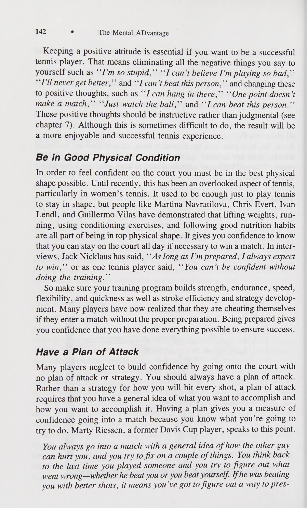
Sử dụng công cụ hỗ trợ trí nhớ Một cách hiệu quả để giúp tạo điều kiện thuận lợi cho khả năng tái tạo và tạo hình ảnh của bạn là sử dụng công cụ hỗ trợ trí nhớ. Những điều này hơi giống với các trình kích hoạt Chương trình Hình ảnh ngoại trừ việc chúng thường bao gồm các vật thể vật lý hoặc các trải nghiệm chuyển động khác giúp kích thích hình ảnh của bạn. Ví dụ, Bruce Jenner, nhà vô địch mười môn phối hợp Olympic năm 1976, đã để một chướng ngại vật trong phòng khách của mình để mỗi khi nhìn thấy nó, anh ấy sẽ tưởng tượng mình đang chạy vượt rào trong một cuộc thi (sự kiện yếu nhất của anh ấy).
An Imagery Program ° 119 triggers except that they usually consist of physical objects or other move- ment experiences that help stimulate your imagery. For example, Bruce Jenner, the 1976 Olympic decathlon champion, kept a hurdle in his living room so that every time he saw it, he would imagine running the hurdles in competition (his weakest event).
Băng video.
Videotapes.
Về mặt quần vợt, có một số công cụ hỗ trợ trí nhớ mà bạn có thể sử dụng để hỗ trợ hình ảnh của mình. Một cách trợ giúp hữu ích là sử dụng băng video. Ví dụ, khi tôi yêu cầu các vận động viên quần vợt tưởng tượng cú giao bóng của họ, tôi thường nhận được nhận xét rằng họ có thể hình dung cú giao bóng của đồng đội vì họ nhìn thấy nó hàng ngày nhưng họ lại gặp rắc rối với cú giao bóng của chính mình vì họ không biết mình trông như thế nào. Điều này không có gì đáng ngạc nhiên, vì rất khó để hình dung ra điều gì đó mà bạn chưa từng thấy. Nhờ ai đó quay lại đoạn video bạn chơi, bao gồm tất cả các cú đánh và chuyển động của bạn từ bên này sang bên kia cũng như lên và xuống. Nếu có thể, hãy ghép phim lại, chỉ chọn ra những bức ảnh đẹp nhất của bạn. Điều này sẽ giúp bạn hình dung rõ hơn về cách bạn trông như thế nào khi đánh bóng. Đối với hầu hết tay vợt, việc nhìn thấy chính mình trên băng video lần đầu tiên khiến họ khá mở rộng tầm mắt vì nhận xét điển hình là "'Có phải tôi không?'' Trên thực tế, băng video có thể rất hữu ích trong việc sửa lỗi vì tay vợt thực sự có thể thấy vấn đề là gì thay vì chỉ được huấn luyện viên hoặc chuyên gia nói. Chứng kiến bản thân thi đấu mang đến cho bạn một góc nhìn khác, theo một cách nào đó, có ý nghĩa hơn so với những hướng dẫn bằng lời nói.
In terms of tennis there are a number of memory aids that you might use to help facilitate your imagery. One good aid is the use of videotapes. When I ask tennis players to image their serve, for example, I often get the comment that they can image their teammate’s serve be- cause they see it every day but they have trouble with their own serve because they don’t know what they look like. This is not surprising, given that it is difficult to visualize something you have never seen. Have some- one make a videotape of your playing, including all of your strokes and movements from side to side as well as up and back. If you can, splice the film, picking out only your best shots. This will give you a better picture of how you look when you are hitting the ball. For most players, seeing themselves on videotape for the first time is quite eye-opening as the typi- cal comment is “‘Is that me?’’ In fact, videotape can be very helpful in correcting errors because the player can actually see what the problem is rather than simply being told by the coach or pro. Seeing yourself per- form gives you a different perspective that is in some ways more meaningful than verbal instructions.
Một chương trình mới có tên Sybervision sử dụng nguyên tắc này. Các nhà sản xuất của Sybervision đã chọn một tay vợt chuyên nghiệp (Stan Smith) để làm mẫu tất cả các cú đánh cơ bản, đánh từng cú một cách hoàn hảo. Cùng với cảnh quay về những cú đánh hoàn hảo của Smith, cuốn băng còn mang đến những tín hiệu thính giác, chẳng hạn như âm thanh của cây vợt đánh vào quả bóng tennis. Một vấn đề mà tôi nhận thấy với Sybervision là, cho dù những bức ảnh của Stan Smith có hoàn hảo đến đâu thì chúng vẫn là duy nhất đối với anh ấy. Bởi vì tất cả chúng ta đều có cách đánh bóng đặc biệt của riêng mình nên chúng ta có thể hưởng lợi nhiều hơn từ việc xem những cú đánh tuyệt vời của chính mình thay vì của Stan Smith. Mặt khác, Sybervision có thể phù hợp với bạn nếu bạn không có một số cảnh quay nhất định trong tiết mục của mình hoặc đang gặp khó khăn với một cảnh quay. Trong mọi trường hợp, băng video là một công cụ hỗ trợ trí nhớ mạnh mẽ giúp bạn tạo ra các hình ảnh.
A new program called Sybervision uses this principle. The producers of Sybervision chose a professional tennis player (Stan Smith) to model all the basic strokes, hitting each one perfectly. Along with footage of Smith’s perfect shots, the tape also brings in auditory cues, such as the sound of the racquet striking the tennis ball. The one problem I found with Sybervision is that, no matter how perfect Stan Smith’s shots are, they are unique to him. Because we all have our own special way of hitting the ball we might benefit more from watching our own great shots rather than Stan Smith’s. On the other hand, Sybervision might be right for you if you do not have certain shots in your repertoire or are struggling with a shot. In any case, videotape is a powerful memory aid to help in creat- ing your images.
Băng cassette.
Cassette tapes.
Với sự chú trọng ngày càng tăng vào việc chuẩn bị tinh thần, ngày càng có nhiều băng hình ảnh được sản xuất thương mại để giúp các vận động viên chuẩn bị cho thi đấu. Mặc dù một số loại băng này có chất lượng cao nhưng tôi tin rằng cách sử dụng băng hiệu quả hơn là tự làm một chiếc cho chính bạn (hoặc nhờ huấn luyện viên hoặc nhà tâm lý học thể thao của bạn làm). Bạn có thể tạo một băng (hoặc nhiều băng) dành riêng cho kỹ năng, khả năng và nhu cầu đặc biệt của bạn. Có lẽ bạn nên bắt đầu với một vài phút hướng dẫn thư giãn trước khi bắt đầu hình dung. Bản thân hình ảnh phải càng chi tiết càng tốt, tuân theo các nguyên tắc tôi đã đặt ra trong chương này. Hình ảnh càng cụ thể thì càng tốt, mặc dù bạn cũng có thể tạo một băng tổng quát hơn để nhấn mạnh cảm giác về các nét vẽ khác nhau mà bạn có thể sử dụng trong nhiều tình huống khác nhau. Sử dụng các tín hiệu bằng lời nói và yếu tố kích hoạt để giúp bạn tạo ra những hình ảnh sống động, có thể kiểm soát được, mô phỏng bối cảnh cạnh tranh thực tế.
With the increased emphasis on mental preparation, there has been an increasing number of commercially produced imagery tapes to help athletes prepare for competition. Although some of these tapes are of high quality, I believe that a more effective way to use tapes is to make one for yourself (or have your coach or sport psychologist make it). You can make a tape (or tapes) that is specific to your skills, abilities, and special needs. You should probably start out with a couple of minutes 120 e The Mental ADvantage of relaxation instructions before starting the imagery. The imagery itself should be as detailed as possible, following the guidelines I have set forth in this chapter. The more specific the image, the better, although you might also make a more general tape that emphasizes the feel of your different strokes which you can use in a variety of situations. Use the verbal cues and triggers to help you produce vivid, controllable images that simulate the actual competitive setting.
Tín hiệu vật lý.
Physical cues.
Một cách khác để kích thích hình ảnh của bạn là thực hiện một số nét thực tế trong chuyển động chậm. Hãy chú ý đến cảm giác của nó ở các điểm khác nhau trong cú đánh chẳng hạn như vị trí sẵn sàng, trục xoay, vung vợt sau, chuyển trọng lượng, vung gậy về phía trước, tiếp xúc và tiếp theo đối với một cú đánh tiếp đất thông thường. Bạn có cảm nhận được sự căng ở cổ tay, cẳng tay và vai khi bạn chuyển từ phần này sang phần tiếp theo không? Bạn có thể cảm nhận được bàn chân của mình di chuyển như thế nào trong suốt cú đánh không? Bạn có thể cảm nhận được sự thay đổi trọng lượng cơ thể?
Another way to stimulate your imagery is to go through some actual strokes in slow motion. Pay attention to how it feels at differ- ent points in the stroke such as ready position, pivot, backswing, weight shift, forward swing, contact, and follow-through for a typical ground- stroke. Can you feel the tension in your wrist, forearm, and shoulders as you move from one part of the stroke to the next? Can you feel how your feet move throughout the stroke? Can you feel shifts in body weight?
Tất cả những điều này sẽ giúp kích hoạt hình ảnh của bạn vào những thời điểm thích hợp và tăng độ sống động và chi tiết của nó.
All of these will help trigger your imagery at the appropriate times and increase its vividness and detail.
Tín hiệu thị giác.
Visual cues.
Bạn cũng có thể sử dụng các tín hiệu trực quan để giúp phát triển hình ảnh của mình. Ra sân mà bạn thường thi đấu hoặc thi đấu.
You can also use visual cues to help develop your im- agery. Go out to the court you usually play on in practice or in matches.
Đảm nhận các vị trí khác nhau trên sân như giao bóng và giao bóng trả lại từ cả sân quảng cáo và sân deuce, thi đấu từ đường cuối sân, chơi trên lưới và tiếp cận lưới. Ở mỗi vị trí, hãy dành chút thời gian để cố gắng tạo lại các tín hiệu thị giác mà bạn thường thấy trong một trận đấu thực tế. Hình ảnh của bạn càng rõ ràng và chi tiết thì tác động lên hiệu suất của bạn càng mạnh mẽ.
Take different positions on the court such as serving and returning serve from both the ad and deuce courts, playing from the baseline, playing at net, and approaching the net. At each position, take some time to try to recreate the visual cues that you would ordinarily see during an actual match. The clearer and more detailed your imagery the more powerful the effects on your performance.
Hình ảnh Cả Thực hiện và Kết quả Khi thực hiện hình ảnh, hãy đảm bảo hình ảnh cả quá trình thực hiện cảnh quay của bạn và kết quả cuối cùng. Nhiều tay vợt quần vợt hình dung ra việc thực hiện cú đánh nhưng không nhìn thấy nơi nó tiếp đất, trong khi những người khác nhìn thấy nơi cú đánh tiếp đất nhưng không thấy mình đánh bóng. Để thực hiện điều này một cách chính xác, bạn phải có khả năng cảm nhận được chuyển động của cú đánh và điều khiển hình ảnh để quả bóng tiếp đất ở vị trí mong muốn. Ví dụ, nếu bạn đang thực hiện cú đánh trái tay chéo sân, bạn sẽ cố gắng cảm nhận cú đánh cụ thể đó sẽ như thế nào, chú ý kỹ đến động tác chân, vị trí, góc vợt, chuyển trọng lượng và theo dõi. Sau đó, bạn sẽ thấy bóng đi qua lưới và nảy sâu gần đường cuối sân.
Image Both Execution and Outcome When performing imagery, be sure to image both the execution of your shot and the end result. Many tennis players image the execution of the shot but not where it lands, whereas others see where the shot lands but don’t see themselves hitting the ball. To perform this correctly you must be able to feel the movement of the shot and control the image so that the ball lands in the desired location. For instance, if you were working on your crosscourt slice backhand you would try to feel what it is like to hit that particular shot, paying close attention to footwork, position, racquet angle, weight transfer, and follow-through. Then you would see the ball clear the net and bounce deep near the baseline across the court.
Hình ảnh trong thời gian thực Một điểm quan trọng khác cần nhớ khi thực hiện hình ảnh là cố gắng tạo hình ảnh trong thời gian thực. Nói cách khác, thời gian dành cho việc chụp ảnh một cảnh quay hoặc tình huống cụ thể phải bằng khoảng thời gian thực sự cần thiết để thực hiện hành động này trên sân. Ví dụ: nếu bạn đang thực hiện cú giao bóng của mình (bao gồm cả thói quen trước khi giao bóng), và trên thực tế, việc này mất 10 giây, thì hình ảnh của cú giao bóng của bạn phải dài chính xác là 10 giây.
Image in Real Time Another important point to remember when performing imagery is to try to image in real time. In other words, the time spent imaging a particular shot or situation should be the same amount as the time it actually takes An Imagery Program e 121 to accomplish this act on the court. If you are working on your serve (in- cluding your preservice routine), for example, and in actuality this takes 10 seconds, then your image of the serve should be exactly 10 seconds long.
Để xem một số cú đánh hoặc điểm nhất định mất bao lâu, hãy nhờ ai đó đến sân với đồng hồ bấm giờ và ghi lại thời gian bạn thường giao bóng, giao bóng trả lại, đánh các cú chạm đất và ghi điểm; thời gian nên bao gồm khoảng thời gian bạn thường mất giữa các điểm. Hầu hết tay vợt quần vợt có xu hướng hình ảnh nhanh hơn thời gian thực tế cần thiết để thực hiện kỹ năng. Điều quan trọng là hình ảnh theo thời gian thực vì bạn muốn việc chuyển từ hình ảnh của mình sang đời thực trở nên dễ dàng nhất có thể. Nếu hình ảnh của bạn không được thực hiện theo thời gian thực thì lợi ích về thời gian và sự phối hợp của bạn sẽ ít có khả năng chuyển sang việc chơi quần vợt thực tế của bạn.
To see how long certain shots or points take, have someone come out to the court with a stopwatch and record how long you normally take to serve, return serve, hit your groundstrokes, and play points; the time should include how long you usually take between points. Most tennis players tend to image faster than the actual time it takes to perform the skill. It is important to image in real time because you want the transfer from your imagery to real life to be as easy as possible. If your imagery is not per- formed according to real time, the benefits to your timing and coordina- tion will be less likely to transfer over to your actual tennis playing.
Để thực hành nhận thức về thời gian thực trong hình ảnh của bạn, hãy tính thời gian khi bạn làm những việc đơn giản quanh nhà như đi bộ từ phòng này sang phòng khác, hoặc đi ra hộp thư và quay lại, hoặc dắt chó đi dạo.
To practice your awareness of real time in your images, time yourself as you do simple things around the house like walking from room to room, or walking out to the mailbox and back, or taking the dog for a walk.
Sau khi bạn dành thời gian cho bản thân, hãy tưởng tượng những hoạt động đó để xem liệu hình ảnh của bạn có mất cùng khoảng thời gian hay không.
After you time yourself, image those activities to see if your imagery takes the same amount of time.
Sử dụng Hình ảnh Bên trong Nếu Có thể Như đã thảo luận trước đây, có hai loại hình ảnh cơ bản: bên trong và bên ngoài. Mặc dù cả hai loại đều được chứng minh là có hiệu quả trong việc cải thiện hiệu suất, một số nghiên cứu (Hale’; Harris & Robinson’) chỉ ra rằng quan điểm nội bộ có xu hướng tạo ra những tác động lớn nhất. Điều này chủ yếu là do hình ảnh bên trong liên quan đến việc thực hiện từ góc nhìn của riêng bạn và do đó, việc nhận biết cảm giác của cơ thể khi đánh quả bóng tennis sẽ dễ dàng hơn nhiều. Hơn nữa, hoạt động điện trong các cơ thực hiện kỹ năng này sẽ lớn hơn khi chụp ảnh từ góc độ bên trong. Bởi vì hình ảnh hoạt động bằng cách tạo điều kiện cho hoạt động cơ bắp và giúp kỹ năng trở nên tự động hơn, nên việc tưởng tượng bên trong sẽ giúp bạn đạt được mục tiêu này dễ dàng hơn.
Use Internal Imagery If Possible As discussed previously, there are two basic types of imagery: internal and external. Although both types have been shown to be effective in im- proving performance, several studies (Hale’; Harris & Robinson’) indi- cate that an internal perspective tends to produce the greatest effects. This is primarily because internal imagery involves performing from your own perspective, and thus it is much easier to be aware of how the body feels while hitting the tennis ball. Furthermore, the electrical activity in the muscles performing the skill is greater when imaging from an internal per- spective. Because imagery works by facilitating muscular activity and help- ing the skill become more automatic, it makes sense that internal imagery would make it easier to accomplish this goal.
Đừng lo lắng nếu bạn gặp rắc rối với hình ảnh bên trong. Một số người có xu hướng hình dung bên ngoài một cách tự nhiên hoặc không thoải mái với hình ảnh bên trong. Nếu đây là một vấn đề đối với bạn, thì việc sử dụng góc nhìn bên ngoài là khá phù hợp. Nếu nó rõ ràng, chi tiết và có thể kiểm soát được thì hình ảnh của bạn sẽ có hiệu quả. Cũng có thể chuyển đổi qua lại từ hình ảnh bên trong sang hình ảnh bên ngoài tùy thuộc vào bản chất của kỹ năng và tình huống cụ thể.
Don’t worry if you have trouble with internal imagery. Some people either tend naturally to image externally or are not comfortable with in- ternal imagery. If this is a problem for you, it is quite appropriate to use an external perspective. Providing it is clear, detailed, and controllable, your image will be effective. It is also possible to switch back and forth from internal to external imagery depending on the nature of the skill and the particular situation.
Sử dụng hình ảnh để tăng cường cũng như sửa chữa Nhiều tay vợt quần vợt mắc sai lầm khi chỉ sử dụng hình ảnh để sửa lỗi hoặc sai sót trong trò chơi của họ. Thông thường, tay vợt lần đầu tiên sử dụng hình ảnh khi họ gặp vấn đề với một cú đánh cụ thể hoặc gặp rắc rối ở những điểm cụ thể trong trận đấu như bị tụt lại phía sau sớm, không thể kết thúc trận đấu, trở nên lo lắng hoặc ngập ngừng hoặc mất tập trung. Mặc dù hình ảnh chắc chắn có thể hữu ích trong những trường hợp này nhưng nó không chỉ giới hạn ở việc khắc phục vấn đề. Hình ảnh cũng có thể giúp tăng cường trí nhớ cơ bắp của bạn về những cú đánh và tình huống mà bạn đã thực hiện tốt. Nếu bạn đã có một cú giao bóng tuyệt vời, điều này không có nghĩa là bạn có thể quên nó và không luyện tập nó thường xuyên. Nguyên tắc tương tự cũng đúng với hình ảnh của bạn. Thời điểm tốt để thực hành điều này là ngay sau khi rời sân khi bạn đã chơi tốt (hoặc ít nhất là làm rất tốt một số việc).
Use Imagery to Strengthen as Well as Correct Many tennis players make the mistake of using imagery only to correct errors or flaws in their game. Usually, players first turn to imagery when 122 ° The Mental ADvantage they are having a problem with a particular stroke or are having trouble at specific points in a match like falling behind early, failing to close out a match, becoming nervous or tentative, or losing concentration. Although imagery most certainly can be helpful in these cases, it should not be limited to correcting problems. Imagery can help also strengthen your muscle memory of those shots and situations that you already perform well. If you already have a great serve, this does not mean that you can forget about it and not practice it regularly. The same principle holds true for your imagery. A good time to practice this is right after coming off the court when you have played well (or at least done some things very well).
Bạn vẫn nên hình dung rõ ràng cảm giác của những bức ảnh đẹp; điều này sẽ giúp hình ảnh dễ dàng hơn cũng như làm cho hình ảnh trở nên mạnh mẽ hơn.
You should still have a clear picture of how the good shots felt; this will make it easier to image as well as making the imagery more powerful.
Luyện tập các chiến lược cũng như các cú đánh Như đã thảo luận ngắn gọn ở phần đầu của chương, sẽ rất hữu ích nếu bạn luyện tập các chiến lược cho các trận đấu sắp tới cũng như luyện tập các cú đánh khác nhau của bạn. Nhiều tay vợt mà tôi từng làm việc cùng trong An Imagery Program thích quan sát đối thủ của họ trong trận đấu trước đó, ghi nhớ trong đầu về xu hướng của họ (ví dụ: Họ thích đi chéo sân hay dọc biên khi chuyền bóng? Họ giao bóng và chuyền bóng hay lùi lại? Họ có điểm yếu rõ ràng nào không?) và cách họ phản ứng với những tình huống nhất định. Với thông tin này trong đầu, bạn có thể tưởng tượng việc chơi với đối thủ của mình, cố gắng thực hiện các cú đánh khác nhau từ các vị trí khác nhau trên sân. Hãy thử tưởng tượng bản thân đang thực hiện thành công chiến lược cụ thể của mình khi bạn tận dụng được điểm mạnh của mình và điểm yếu của đối thủ. Ngoài ra, bạn cũng có thể hình dung việc phản công bằng những vũ khí tốt nhất của đối thủ, chẳng hạn như một cú giao bóng tốt, ít trả lại đối với một tay vợt giao bóng và vô lê lớn.
Practice Strategies as Well as Strokes As discussed briefly earlier in the chapter, it is useful to practice strate- gies for upcoming matches as well as practicing your various strokes. Many An Imagery Program ° 123 tennis players I have worked with like to observe their opponent in a prior match, making mental notes concerning their tendencies (e.g., Do they like to go crosscourt or down the line on passing shots? Do they serve and volley or stay back? Do they have any obvious weaknesses?) and the ways they respond to certain situations. With this information in mind, you could imagine playing your opponent, mentally trying to hit different shots from different positions on the court. Try to see yourself success- fully carrying out your specific strategy as you take advantage of your strengths and your opponent’s weaknesses. In addition, you could also visualize counterattacking your opponent’s best weapons such as a good, low return of serve against a big serve and volley player.
Khi nào nên sử dụng hình ảnh Một trong những câu hỏi thường gặp nhất liên quan đến thời điểm sử dụng hình ảnh.
When to Use Imagery One of the most often asked questions concerns when to use imagery.
Mặc dù hình ảnh có thể được sử dụng hầu như bất kỳ lúc nào nhưng có một số thời điểm cụ thể khi nó hữu ích nhất.
Although imagery can be used at virtually any time, there are some specific times when it is most useful.
Trước và Sau Thực hành Như đã được đề xuất, hình ảnh nên được sử dụng một cách có hệ thống và thường xuyên để đạt được lợi ích tối đa. Một cách để giúp thực hiện điều này là sử dụng hình ảnh trước và sau mỗi buổi thực hành. Các phiên này thường kéo dài khoảng 10 phút vì nhiều tay vợt khó tập trung vào hình ảnh của họ trong thời gian dài hơn.
Before and After Practice As has been suggested, imagery should be used systematically and reg- ularly to gain the maximum benefits. One way to help accomplish this is to use imagery before and after each practice session. These sessions should be generally about 10 minutes in length because many players have trouble concentrating on their imagery for longer periods of time.
Trước khi luyện tập, hãy hình dung các động tác, bài tập và bài tập khác nhau mà bạn sẽ thực hiện. Hãy ghi nhớ các nguyên tắc về nhìn, cảm nhận và nghe trong hình ảnh của bạn. Điều này giúp bạn tập trung vào quần vợt và khởi động hệ thần kinh để chơi với hiệu quả cao nhất.
Before practice, visualize the different strokes, drills, and exercises you will be performing. Keep in mind the principles about seeing, feeling, and hearing in your imagery. This serves to get your mind on tennis and to warm up the nervous system to play at top efficiency.
Thực hành tưởng tượng sau mỗi buổi thực hành trong 10 phút cũng thích hợp. Lúc này, hãy xem lại các cú đánh và chiến lược mà bạn đã thực hiện trong thực tế. Bởi vì bạn vừa tập luyện xong nên cảm giác về những động tác và chuyển động của bạn sẽ còn mới mẻ trong tâm trí bạn; điều này sẽ giúp bạn tạo ra hình ảnh rõ ràng và chi tiết hơn nữa.
It is also appropriate to practice imagery after each practice session for 10 minutes. At this time, review the shots and strategies you worked on in practice. Because you just finished working out, the feel of your strokes and movement should be fresh in your mind; this will help you to create even clearer and more detailed imagery.
Hình ảnh Trước và Sau Trận đấu là một cách hay để khiến tâm trí bạn tập trung vào trận đấu sắp tới.
Before and After Matches Imagery is a good way to get your mind focused on an upcoming match.
Điều này cho phép bạn hình dung chính xác cách bạn muốn chơi trận đấu, thiết lập chiến lược cho các tình huống khác nhau. Giống như hình ảnh trước khi luyện tập, hình ảnh trước trận đấu giúp hệ thần kinh hoạt động để điều chỉnh các cú đánh của bạn.
This allows you to go over in your mind exactly how you want to play the match, setting up your strategy for different situations. As in imagery before practice, imagery before a match helps get the nervous system work- ing to fine-tune your strokes.
e Thời điểm thích hợp để sử dụng hình ảnh trước trận đấu tùy thuộc vào sở thích cá nhân. Một số tay vợt thích hình dung ngay trước khi ra sân trong khi những người khác thích bắt đầu hình dung một hoặc hai giờ trước trận đấu.
124 e The Mental ADvantage The appropriate time to use imagery before the match depends on in- dividual preferences. Some players like to visualize right before going out on the court whereas others like to start an hour or two before the match.
Điểm quan trọng là hình ảnh phải vừa vặn thoải mái với thói quen trước trận đấu của bạn (được thảo luận chi tiết ở chương 12). Bạn thậm chí có thể sử dụng hình ảnh của mình vào hai hoặc ba thời điểm khác nhau, chẳng hạn như hai giờ, một giờ và 30 phút, trước trận đấu, mỗi lần 10 phút. Nếu bạn sử dụng nhiều phiên, bạn có thể thực hiện chiến lược của mình ở một trong số các phiên đó và sau đó thử cảm nhận các cú đánh của mình trong một phiên khác. Khả năng có trước hình ảnh là rất nhiều và cuối cùng, phụ thuộc vào sở thích cá nhân.
The important point is that the imagery should fit comfortably into your prematch routine (discussed in detail in chapter 12). You might even use your imagery at two or three different times, such as two hours, one hour, and 30 minutes, before the match for 10 minutes at a time. If you use several sessions, you can work on your strategy in one of them and then try to get the feel of your strokes in another. The prematch possibilities for imagery are many and, ultimately, depend on personal preference.
Thời điểm thường bị bỏ qua khi sử dụng hình ảnh là ngay sau trận đấu. Với trận đấu rõ ràng trong đầu, bạn có thể phát lại cú đánh và các điểm mà bạn đã thực hiện thành công, thực sự có được hình ảnh sống động, có thể kiểm soát được. Ngoài ra, bạn có thể phát lại các điểm hoặc cú đánh không thành công trong trận đấu, tưởng tượng mình thực hiện thành công hoặc chọn một cú đánh hoặc chiến lược khác. Ví dụ: nếu bạn mất một số điểm quan trọng ở đường cuối sân, hãy xem lại những điểm đó và hình dung bản thân bạn đang kiên nhẫn nhưng lại ghi bàn với những quả bóng ngắn và thực hiện một cú vô lê hoặc cú đánh cao.
An often overlooked time for using imagery is right after a match. With the match clearly in your mind, you can replay the shot and points that you performed successfully, really getting a vivid, controllable image. In addition, you can replay the unsuccessful points or strokes in the match, imagining yourself performing successfully or choosing a different shot or strategy. For example, if you lost several critical points staying at the baseline, replay those points and picture yourself being patient but com- ing to net on short balls and putting away a volley or overhead.
Trước khi giao bóng và trả giao bóng Do tính chất của trò chơi, thực sự không có đủ thời gian để hình ảnh trong trận đấu ngoại trừ trước khi giao bóng và trả giao bóng khi có thời gian nghỉ trong trận đấu. Hình ảnh có thể là một phần trong quá trình giao bóng và trả giao bóng của bạn như đã thảo luận ở chương 6. Tất nhiên, trước khi bạn có thể sử dụng hình ảnh trong một trận đấu, bạn sẽ phải thực hành nó để nó trở thành một phần tự nhiên trong thói quen của bạn trước khi giao bóng và trả giao bóng.
Before Serve and Service Return Due to the nature of the game, there is not really enough time to image during a match except before serving and returning serve when there is a break in the action. Imaging can be a part of your service and service return routines as discussed in chapter 6. Of course, before you can use imagery during a match, you’ll have to practice it so that it becomes a natural part of your routine before serving and returning serve.
Trong quá trình chuyển đổi Thời gian rảnh dài nhất trong suốt trận đấu xảy ra trong quá trình chuyển đổi. Đây là thời điểm mà hầu hết tay vợt cố gắng lấy lại hơi thở và tiết kiệm năng lượng, đặc biệt là trong một trận đấu khó khăn vào một ngày nắng nóng.
During Changeovers The longest free time during the course of a match occurs during change- overs. This is the time when most players try to catch their breath and conserve some energy, particularly during a tough match on a hot day.
Thời gian này cũng có thể được sử dụng hiệu quả bằng cách kết hợp hình ảnh vào thói quen của bạn. Sau khi lấy lại hơi thở và uống nước, hãy ngồi vào ghế (hoặc trên mặt đất) và hình dung những gì bạn muốn làm trong hai trò chơi sắp tới. Nếu bạn sẽ giao bóng, hãy thấy mình thành công trong lần giao bóng đầu tiên và theo sau nó lên lưới; Nếu bạn chuẩn bị trả giao bóng, hãy tưởng tượng bạn đang thực hiện cú trả giao bóng trước mặt bạn, giữ bóng thấp dưới chân đối thủ khi người đó lao vào lưới. Cuối cùng, bạn có thể sử dụng hình ảnh của mình để quyết định cách bạn muốn chơi trò chơi tiếp theo, bao gồm cả lựa chọn và vị trí bắn của bạn. Trong mọi trường hợp, hình ảnh là một công cụ hữu ích để sử dụng trong quá trình chuyển đổi, thời điểm không được nhiều tay vợt sử dụng hiệu quả.
This time can also be used effectively by incorporating imagery into your routine. After catching your breath and getting a drink, sit in a chair (or on the ground) and visualize what you would like to do in the upcoming two games. If you will be serving, see yourself succeeding in your first serve and following it to net; if you will be returning serve, picture your- self hitting your returns in front of you, keeping the ball low at your opponent’s feet as that person rushes the net. Finally, you might use your imagery to decide how you want to play the next game including your choice and placement of shots. In any case, imagery is a useful tool to use during changeovers, a time that is not used effectively by many players.
Chương trình Hình ảnh e Ở nhà Bên cạnh việc sử dụng hình ảnh trong các tình huống khác nhau mà tôi đã mô tả ở trên, nó cũng có thể được sử dụng ở nhà (hoặc bất kỳ nơi yên tĩnh thích hợp nào khác). Có thể khó tìm được một nơi yên tĩnh trước khi luyện tập và có thể có nhiều ngày bạn không luyện tập chút nào. Do đó, hãy thực hành tưởng tượng ở nhà khi bạn có thời gian yên tĩnh. Sẽ rất hữu ích nếu bạn cố gắng dành ra 10 đến 15 phút vào một thời điểm cụ thể trong ngày để việc này trở thành thói quen của bạn. Một số tay vợt thích làm điều đó ngay trước khi đi ngủ, trong khi những người khác lại thích luyện tập tưởng tượng sau bữa tối. Một lần nữa, điểm quan trọng là phải có thời gian cố định mỗi ngày cho việc tưởng tượng để bạn có thể thực hành nó thường xuyên mà không bị gián đoạn.
An Imagery Program e 125 At Home Besides using imagery in the various situations I have described above, it can also be used at home (or any other appropriate quiet place). It may be difficult to find a quiet spot before practicing, and there may be many days when you do not practice at all. Consequently, practice your imagery at home when you have some quiet time. It is useful to try to set aside 10 to 15 minutes at a particular time in the day so that this becomes your routine. Some players like to do it just before they go to sleep, whereas others prefer to practice imagery after dinner. Again, the important point is to have a set time every day for imagery so that you can practice it reg- ularly without interruption.
Sử dụng Nhật ký hình ảnh Một cách hay để theo dõi mức độ và tần suất bạn sử dụng hình ảnh là ghi nhật ký hình ảnh mỗi ngày. Nhật ký phải chứa thông tin liên quan đến thời gian bạn chụp ảnh, những gì bạn chụp ảnh, thời điểm bạn chụp ảnh cũng như mức độ sống động và kiểm soát của hình ảnh của bạn. Điều này sẽ cung cấp cho bạn những phản hồi quan trọng cũng như nhấn mạnh tầm quan trọng của việc thực hành nhất quán và có hệ thống.
Use Imagery Logs One good way to keep track of how much and how often you are using imagery is to keep an imagery log for each day. The log should contain information concerning how long you imaged, what you imaged, when you imaged, and how vivid and controlled your images were. This will provide you with important feedback as well as highlighting the impor- tance of consistent, systematic practice.
Tóm tắt Chương 9 đã trình bày các hướng dẫn thực hiện chương trình đào tạo hình ảnh. Để xem lại, một chương trình hình ảnh cá nhân cơ bản bao gồm các thành phần được đề xuất sau.
Summary Chapter 9 has presented guidelines for the implementation of an imagery training program. To review, a basic individual imagery program includes the following recommended ingredients. 1. Evaluate your imagery ability (chapter 8) 2. Practice making the images vivid, controllable, emotional, and kinesthetic using the exercises provided (chapters 8 and 9) 3. Use imagery (chapter 9) before practice . after practice before matches . after matches as part of serve and return of serve routines during changeovers g. regularly at home mono oe 4. Keep a daily imagery log.
1. Đánh giá khả năng tưởng tượng của bạn (chương 8) 2. Thực hành làm cho hình ảnh trở nên sống động, có thể kiểm soát, cảm xúc và xúc động bằng các bài tập được cung cấp (chương 8 và 9) 3. Sử dụng hình ảnh (chương 9) trước khi thực hành . sau buổi tập trước trận đấu. sau các trận đấu như một phần của thói quen giao bóng và trả giao bóng trong quá trình chuyển đổi g. thường xuyên ở nhà mono oe 4. Ghi nhật ký hình ảnh hàng ngày.
126 e The Mental ADvantage Of course, the best imagery program is one that is tailored to the partic- ular needs of each player. You need to design the program that best suits your needs and schedule. Remember that a strong belief in your imagery program is extremely important for its ultimate success. Improvement will not come overnight, but if you stay on a regular schedule and include imagery as part of your daily training regimen, you will be setting your- self up for increased success in the future.
e Tất nhiên, chương trình hình ảnh tốt nhất là chương trình được điều chỉnh phù hợp với nhu cầu cụ thể của từng tay vợt. Bạn cần thiết kế chương trình phù hợp nhất với nhu cầu và lịch trình của mình. Hãy nhớ rằng niềm tin mãnh liệt vào chương trình hình ảnh của bạn là cực kỳ quan trọng để đạt được thành công cuối cùng. Sự cải thiện sẽ không đến chỉ sau một đêm, nhưng nếu bạn duy trì một lịch trình đều đặn và đưa hình ảnh vào chế độ luyện tập hàng ngày, bạn sẽ chuẩn bị cho mình nhiều thành công hơn trong tương lai.
82) CHAPTER 10 Psychological Skill #5: Building Confidence The whole thing is never to get nega- tive about yourself. Sure, it’s possible that the other guy you’re playing is tough, and that he may have beaten you the last time you played, and okay, maybe you haven’t been play- ing all that well yourself. But the minute you start thinking about these things you’re dead.
82) Kỹ năng tâm lý số 5:
I go out to every match convinced that I’m going to win.
Xây dựng sự tự tin Điều quan trọng nhất là không bao giờ tiêu cực về bản thân. Chắc chắn, có thể đối thủ mà bạn đang chơi rất khó tính và có thể anh ta đã đánh bại bạn trong lần cuối cùng bạn chơi, và được thôi, có thể bản thân bạn cũng chưa chơi tốt như vậy. Nhưng ngay khi bạn bắt đầu nghĩ về những điều này thì bạn đã chết. Tôi đến xem mọi trận đấu với niềm tin rằng mình sẽ thắng. Tất cả chỉ có vậy thôi.* Jimmy Connors (trước khi đấu với Bjorn Borg trong trận chung kết giải Mỹ mở rộng).
That is all there is to it.* Jimmy Connors (before playing Bjorn Borg in the fi- nals of the U. S. Open). A very strange thing happened. Even though I didn’t give myself much of a chance against Connors, when the newspaper reporters and everyone asked me what was going to happen (if it came down to Connors and me in the final), I had to tell them that, of course, I thought I was going to win.
Một điều rất kỳ lạ đã xảy ra. Mặc dù tôi không cho mình nhiều cơ hội trước Connors, nhưng khi các phóng viên báo chí và mọi người hỏi tôi chuyện gì sẽ xảy ra (nếu Connors và tôi gặp khó trong trận chung kết), tôi phải nói với họ rằng, tất nhiên, tôi đã nghĩ mình sẽ thắng. Vì vậy, họ bắt đầu hỏi tôi tại sao và tôi bắt đầu nghĩ ra lý do. Và càng nghĩ về những lý do – đặc biệt là việc tôi đã có kinh nghiệm ở Davis Cup còn Jimmy thì không – tôi càng bắt đầu nhận ra rằng mình thực sự sẽ giành chiến thắng. Và cuối cùng khi ra sân, tôi rất tự tin ”. Raul Ramirez (trước khi đấu với Jimmy Connors trong trận chung kết Davis Cup khu vực Bắc Mỹ - Ramirez tiếp tục làm Connors khó chịu).
So they started asking me why, and I started to think up reasons. And the more I thought about the reasons—especially the fact that I had Davis Cup ex- perience and Jimmy didn’t—the more I began to realize that I really was going to win. And when I finally went out to the court, I was very confident. Raul Ramirez (before playing Jimmy Connors in the North American Zone Davis Cup finals—Ramirez went on to upset Connors). The above comments capture the critical role that confidence plays in a tennis player’s mental outlook and ultimate success. The importance of 127
Những nhận xét trên cho thấy vai trò quan trọng của sự tự tin đối với quan điểm tinh thần và thành công cuối cùng của một tay vợt. Tầm quan trọng của sự tự tin còn được chứng minh rõ ràng hơn qua nhận xét của các vận động viên quần vợt cho thấy rằng đó là một trong những trạng thái tâm lý hiện diện khi họ đang chơi ở đỉnh cao của trận đấu (xem chương 2). Trên thực tế, nghiên cứu đã chỉ ra rằng yếu tố nhất quán nhất giúp phân biệt những tay vợt thành công cao với những tay vợt kém thành công hơn là sự tự tin: Những tay vợt hàng đầu thể hiện niềm tin mạnh mẽ vào khả năng của họ.
128 e The Mental ADvantage confidence is further evidenced by tennis players’ comments indicating that it is one of the psychological states present when they are playing at the top of their game (see chapter 2). In fact, research has indicated that the most consistent factor distinguishing highly successful from less successful tennis players is confidence: Top players display a strong be- lief in their abilities.
Mục đích của chương này là khám phá khái niệm khó nắm bắt nhưng quan trọng về sự tự tin. Đầu tiên, tôi trình bày định nghĩa về sự tự tin cùng với những đặc điểm của nó. Thứ hai, tôi thảo luận về một số điểm quan trọng liên quan đến việc sự tự tin có thể ảnh hưởng như thế nào đến hiệu suất, nỗ lực và tính kiên trì. Thứ ba, tôi khám phá các khái niệm về sự tự tin thái quá và sự thiếu tự tin. Thứ tư, tôi thảo luận về cách nâng cao nhận thức về cảm giác tự tin của bạn. Và cuối cùng, tôi trình bày một số gợi ý để xây dựng sự tự tin của bạn.
The purpose of this chapter is to explore the elusive yet critical concept of confidence. First, I present a definition of confidence along with its characteristics. Second, I discuss some important points concerning how confidence can affect performance, effort, and persistence. Third, I ex- plore the notions of overconfidence and underconfidence. Fourth, I dis- cuss how to increase awareness of your feelings of confidence. And finally, I present several suggestions for building your confidence.
Sự tự tin—Nó là gì?
Self-Confidence—What Is It?
Các vận động viên quần vợt mô tả chiến thắng và trận thua của họ nói những câu như: ''Tôi chỉ không cảm thấy tự tin với cú đánh trái tay của mình'' ''Tôi thực sự cảm thấy tự tin khi giao bóng'' '''Tôi cảm thấy tự tin rằng tôi có thể trả bóng từ phía sau'' và ''Tôi chưa bao giờ cảm thấy tự tin rằng mình có thể bẻ giao bóng.'' Mặc dù thuật ngữ tự tin được sử dụng thường xuyên nhưng rất ít người có thể định nghĩa chính xác sự tự tin là gì. Đây là cách Roy Emerson mô tả sự tự tin.
Tennis players describing their wins and losses say things like: ‘‘I just didn’t feel confident in my backhand,’’ “‘I really felt confident in my serve,’’ “‘I felt confident that I could come back from behind,”’ and ‘‘I just never felt confident that I could break serve.’’ Although the term con- fidence is used frequently, few people can define exactly what confidence is. This is how Roy Emerson describes confidence.
Vấn đề là phải có cách tiếp cận tinh thần tích cực. Bạn có thể thấy điều đó ở một tay vợt như John Newcombe. Khi Newcombe giao bóng tốt, bạn có thể cảm nhận được sự tự tin ở bên kia lưới. Anh ấy không lo lắng về việc bóng đi vào lưới; anh ấy chỉ đang nổ tung. Điều tồi tệ nhất bạn có thể làm trên sân là tự nhủ nội tâm (Self-Talk): "'Tôi có thực hiện cú giao bóng này với tất cả những gì tôi có hay tôi phải thực hiện nó?'' Bạn không thể nghĩ theo những thuật ngữ này. Bạn phải quyết định rằng bạn sẽ thực hiện cú giao bóng đẫm máu và tiếp tục đánh nó.' Mặc dù đây là mô tả của một tay vợt về sự tự tin nhưng nó không phải là một định nghĩa của thuật ngữ này. bạn có thể thực hiện thành công một hành vi mong muốn. Hành vi đó có thể là giao bóng, đánh một đường chuyền hoặc đánh bại đối thủ. Tuy nhiên, sự tự tin quan trọng nhất là tin vào khả năng bạn có được những kỹ năng và năng lực cần thiết, cả về thể chất và tinh thần, để đạt được tiềm năng của bạn với tư cách là một vận động viên quần vợt. Tay vợt tự tin kỳ vọng sẽ thành công và Xây dựng niềm tin tin vào khả năng của họ trong việc thực hiện các hành động cần thiết để thành công. Ngược lại, tay vợt thiếu tự tin không mong chiến thắng và nghi ngờ khả năng của mình ở những thời điểm quan trọng trong trận đấu. Kiểu suy nghĩ này về mặt tâm lý hạn chế những tay vợt này vì kỳ vọng có thể có tác động sâu sắc đến hiệu suất.
The whole thing is to have a positive mental approach. You can see it in a player like John Newcombe. When Newcombe is serving well, you can feel the confidence across the other side of the net. He’s not worried about the ball going in; he’s just blasting away. The worst thing you can do on a court is to say to yourself: “‘Do I hit this serve with everything I have, or do I have to get it in?’’ You can’t think in these terms. You have to make up your mind that you’re going to hit the bloody serve and go ahead and hit it. Although this is one player’s description of confidence it is not a defi- nition of the term. Although there are various definitions of confidence, the consensus from sport psychologists is that confidence is simply the belief that you can successfully perform a desired behavior. That behavior might be serving an ace, hitting a passing shot, or defeating an opponent. Con- fidence is believing in yourself and your abilities. The most significant self-confidence, however, is believing in your ability to acquire the nec- essary skills and competencies, both physical and mental, to reach your potential as a tennis player. Confident players expect to be successful and
Đặt giới hạn tâm lý cho bản thân Sự tự tin của bạn được định nghĩa là sự mong đợi của bạn về thành công hay thất bại. Khi bạn nghi ngờ khả năng thành công, thắng trận đấu hoặc học được một kỹ năng mới của mình, bạn đang tạo ra cái gọi là lời tiên tri tự ứng nghiệm. Điều này có nghĩa là việc mong đợi điều gì đó sẽ xảy ra sẽ khiến nó xảy ra. Thật không may, nhiều tay vợt không bao giờ phát huy được tiềm năng của mình vì họ nghi ngờ khả năng của mình. Những lời tiên tri tự ứng nghiệm dẫn đến một vòng luẩn quẩn, trong đó tay vợt mong đợi sẽ thất bại; kỳ vọng này khiến họ thất bại, khẳng định hình ảnh tiêu cực về bản thân của họ và do đó, làm tăng kỳ vọng của họ về thất bại.
Building Confidence e 129 believe in their capacity to perform the actions necessary to be success- ful. Conversely, players who lack confidence don’t expect to win and doubt their abilities at important points in the match. This type of thinking psy- chologically limits these players because expectations can have a profound impact on performance. Putting Psychological Limits on Ourselves Your self-confidence has been defined as your expectation of success or failure. When you doubt your ability to succeed, win a match, or acquire a new skill, you are creating what is called a self-fulfilling prophecy. This means that expecting something to happen causes it to happen. Unfortun- ately, many tennis players never reach their potential because they doubt their ability.
Nói chung, kết quả cuối cùng là chúng ta đặt ra những giới hạn tâm lý cho thành tích của mình và do đó không bao giờ tin rằng chúng ta có thể đánh bại một số tay vợt nhất định hoặc học được những cú đánh mới.
Self-fulfilling prophecies lead to a vicious cycle, in which players expect to fail; this expectation causes them to fail, confirming their negative self-image and, in turn, increasing their expectations of failure.
Một ví dụ kinh điển về việc đặt giới hạn tâm lý đối với thành tích thể thao đã xảy ra trong môn điền kinh khi không ai có thể vượt qua quãng đường bốn phút một dặm.
In general, the end result is that we place psychological limits on our perfor- mance and thus never believe that we can beat certain players or learn new strokes.
Người chạy sẽ chạy 4:03, 4:02 và 4:01, nhưng không ai có thể vượt qua rào cản bốn phút. Trên thực tế, một cuốn sách đã được xuất bản tuyên bố rằng về mặt sinh lý, việc vượt qua quãng đường bốn phút là không thể. Mặc dù hầu hết các vận động viên chạy bộ đều tin vào điều này nhưng Roger Bannister, một vận động viên chạy bộ rất tài năng và dũng cảm, lại không như vậy. Anh ấy chắc chắn rằng mình có thể phá vỡ rào cản bốn phút trong điều kiện thích hợp, và anh ấy đã làm được. Mặc dù đây là một thành tích thể thao ấn tượng nhưng trong năm tiếp theo, hơn chục vận động viên đã phá kỷ lục chạy một dặm bốn phút. Tại sao điều này nên xảy ra? Có phải mọi người đột nhiên tập luyện chăm chỉ hơn hoặc nhanh hơn không? Câu trả lời là không. Điều đã xảy ra là các vận động viên tin rằng điều đó có thể thực hiện được! Cho đến khi Roger Bannister thành công, các vận động viên chạy bộ đã tự đặt ra những giới hạn tâm lý cho bản thân vì họ cảm thấy rằng không thể vượt qua được quãng đường bốn phút một dặm.
A classic example of placing psychological limits on athletic performance occurred in track and field when nobody could break the four-minute mile. Runners would run 4:03, 4:02, and 4:01, but nobody could crack the four- minute barrier. In fact, a book was published which stated that it was phys- iologically impossible to break the four-minute mile. Although most run- ners believed this, Roger Bannister, a very talented and courageous runner, did not. He was sure that he could break the four-minute barrier under the right conditions, and so he did. Although this was an impressive ath- letic feat, in the next year more than a dozen runners broke the four-minute mile. Why should this occur? Did everyone all of a sudden train harder or get faster? The answer is no. What did happen is that runners believed it could be done! Until Roger Bannister succeeded, runners had been placing psychological limits on themselves because they felt that it just wasn’t pos- sible to break the four-minute mile.
Những tác động mạnh mẽ của những kỳ vọng hoặc niềm tin của chúng ta cũng có thể được nhìn thấy trong cuộc sống hàng ngày của chúng ta. Nghiên cứu đã chỉ ra rằng cho mọi người uống một viên đường để giảm đau cực độ (nói với họ rằng đó là morphin) sẽ giúp giảm đau tương đương với việc cho họ uống một loại thuốc giảm đau như morphine. Các nghiên cứu cũng chỉ ra tầm quan trọng của những kỳ vọng về thành tích học tập với những học sinh mong muốn học tốt và đạt kết quả tốt hơn những học sinh không mong đợi học tốt mặc dù không có sự khác biệt về chỉ số I.Q. Trên thực tế, người ta đã chứng minh rằng nếu giáo viên mong đợi một số học sinh nào đó sẽ cải thiện thành tích học tập của mình thì những học sinh này thực sự đã thể hiện sự tiến bộ nhiều nhất.” Những ý tưởng này có tiềm năng ứng dụng vào môn quần vợt vì niềm tin vào khả năng là yếu tố quan trọng để thành công. Bạn rất dễ cảm thấy thất vọng sau khi thua nhiều trận liên tiếp hoặc không đánh bại được một đối thủ cụ thể.
The powerful effects of our expectations or beliefs can also be seen in our daily lives. Research has shown that giving people a sugar pill for extreme pain (telling them that it was morphine) produced just as much relief as actually giving them a pain killer like morphine. Studies have indicated also the importance of expectations on academic achievement with students expecting to do well performing better than students not ex- pecting to do well although there was no difference in I.Q. In fact, it was 130 ° The Mental ADvantage shown that if teachers expected certain students to improve their academic achievement, these students did indeed show the most improvement.‘ These ideas have potential application to tennis in that the belief in abili- ties is critical to success. It’s easy to get down on yourself after you have lost several matches in a row or have failed to beat a particular opponent.
Tầm quan trọng của việc giữ sự tự tin và tin tưởng vào bản thân được nhấn mạnh qua nhận xét của Rod Laver:
The importance of keeping your confidence and believing in yourself is highlighted by Rod Laver’s remarks: You get into winning or losing patterns.
Bạn có xu hướng thắng hoặc thua. Rất nhiều trong số đó đang được nghỉ ngơi.
A lot of it’s getting the breaks.
Nếu bạn thắng nhiều trận sát nút, thái độ của bạn khi tham gia những trận sát nút là, ''Không có gì, tôi đã từng ở đây và tôi sẽ lại ở đây.' Nhưng nếu bạn bắt đầu thua nhiều trận sát nút, hoặc bạn dẫn trước trong một trận đấu, thì toàn bộ bức tranh sẽ thay đổi. Người kia bắt đầu đuổi kịp và bạn bắt đầu nghĩ, “Ồ, ồ, nó lại đến rồi”. Về cơ bản, tôi nghĩ đây chính là điều đã xảy ra với Stan Smith. Anh ta thua vừa đủ để những người gần gũi mà anh ta từng thắng anh ta bắt đầu thua, và điều đó đã thay đổi toàn bộ thái độ của anh ta về trò chơi của mình.* Đặc điểm của sự tự tin Tự tin và thể hiện thái độ tự tin có thể giúp trò chơi của bạn theo nhiều cách khác nhau.
If you win a lot of close matches, your attitude when you get into close matches is, ‘‘No sweat, I’ve been here before and I'll be here again. But if you start to lose a lot of close ones, or you get ahead in a match, then the whole picture changes. The other guy starts to catch up and you start to think, ‘‘Oh, oh, here it comes again.’’ Basically, I think this is what happened to Stan Smith. He lost just enough of the edge so that the close ones he used to win he began losing, and that changed his entire attitude about his game.* Characteristics of Confidence Being confident and displaying a confident attitude can help your game in a variety of ways.
Sự tự tin khơi dậy cảm xúc tích cực Sự tự tin giúp bạn tự do thực hiện các cú đánh mạnh mẽ, nhanh chóng và trôi chảy.
Confidence Arouses Positive Emotions Confidence frees you up for strong, quick, and fluid execution of strokes.
Trên thực tế, khi bạn tự tin, bạn có nhiều khả năng giữ bình tĩnh và thoải mái trước áp lực, dẫn đến việc không do dự và thực hiện cú đánh của mình.
In fact, when you are confident, you are more likely to remain calm and relaxed under pressure resulting in not being tentative and going for your shots.
Sự tự tin tạo điều kiện cho sự tập trung Sự tự tin giúp bạn tập trung sự chú ý vào trận đấu. Vì bạn không cố gắng tránh thất bại (đi kèm với sự thiếu tự tin), bạn có thể tự do tập trung vào nhiệm vụ trước mắt. Khi thiếu tự tin, bạn có xu hướng lo lắng về việc mình đang thi đấu tốt như thế nào hoặc trận đấu sẽ diễn ra như thế nào hơn là tập trung vào từng điểm.
Confidence Facilitates Concentration Confidence helps to focus your attention on the match. Since you are not trying to avoid failure (which comes with lack of confidence), you are free to concentrate on the task at hand. When you lack confidence, you tend to worry about how well you are doing or how the match will turn out rather than concentrating on each point.
Sự tự tin ảnh hưởng đến mục tiêu của bạn Với sự tự tin, bạn đặt ra những mục tiêu đầy thách thức cho bản thân và tích cực theo đuổi những mục tiêu đó. Sự tự tin cho phép bạn vươn tới các vì sao và nhận ra tiềm năng của mình. Tay vợt không tự tin sẽ có xu hướng đặt mục tiêu dễ dàng
Confidence Affects Your Goals With confidence, you set challenging goals for yourself and actively pur- sue those goals. Confidence allows you to reach for the stars and realize your potential. Players who are not confident will tend to set easy goals
Phần 4: Xây Dựng Tự Tin Sắt Đá, Mục Tiêu Tiến Trình & Tâm Lý Học Đánh Đôi
Chương 8: Kỹ Năng Tâm Lý Số 5 & 6 — Xây Dựng Tự Tin & Thiết Lập Mục Tiêu Tiến Trình
Chapter 8: Skills #5 & #6: Cultivating Confidence and Performance/Process Goal Setting
Xây dựng sự tự tin e và do đó không bao giờ thực sự đẩy bản thân đến giới hạn của mình. Phần thảo luận kỹ lưỡng về việc thiết lập mục tiêu sẽ được trình bày ở chương 11.
Building Confidence e 131 and therefore never really push themselves to their limits. A thorough dis- cussion of goal setting will be provided in chapter 11.
Sự tự tin làm tăng tính kiên trì và nỗ lực Một trong những phát hiện nhất quán nhất là sự tự tin là một trong những yếu tố chính quyết định mức độ nỗ lực và kiên trì của tay vợt. Tôi và các đồng nghiệp của tôi (Weinberg, Gould, & Jackson®) đã thực hiện một số nghiên cứu trong đó những người có khả năng như nhau được phân biệt bằng cách có hoặc thiếu tự tin. Kết quả luôn cho thấy rằng, trong một nhiệm vụ đòi hỏi sức bền cơ bắp, những người tự tin đã cố gắng nhiều hơn và kiên trì lâu hơn những người thiếu tự tin. Với khả năng ngang bằng, người chiến thắng trong các cuộc thi thường là những tay vợt tin vào chính mình.
Confidence Increases Persistence and Effort One of the most consistent findings is that confidence is one of the major determinants of the extent of a player’s effort and persistence. My col- leagues and I (Weinberg, Gould, & Jackson®) have conducted several research studies in which people of equal ability were distinguished by either having or lacking confidence. Results consistently showed that, in a muscular endurance task, the confident individuals tried harder and persisted longer than the people lacking confidence. With ability equal- ized, the winners of competitions are usually those players who believe in themselves.
Sự tự tin ảnh hưởng đến việc lựa chọn cú đánh Một trong những yếu tố chính quyết định kết quả của nhiều trận đấu quần vợt là việc lựa chọn cú đánh ở những điểm quan trọng. Mặc dù nhiều tay vợt có tất cả các cú đánh, nhưng chính khả năng thực hiện một cú chuyền bóng, cú vô lê quyết liệt hoặc giao bóng lớn ở những điểm quan trọng trong trận đấu mới là điều khác biệt giữa tay vợt giỏi và tay vợt giỏi. Không có gì lạ khi thấy các tay vợt đẩy bóng ở những cú đánh quan trọng và hy vọng đối thủ sẽ mắc lỗi. Nhưng kiểu chơi này chỉ thành công ở một mức độ nào đó. Thông thường, những tay vợt tự tin sẽ không chỉ chọn được cú đánh phù hợp mà còn đánh nó có uy lực. Thay vì vung vợt điên cuồng từ gót chân, tay vợt tự tin thực hiện những cú vung vợt bình thường, theo sau và giữ tinh thần thoải mái.
Confidence Affects Shot Selection One of the major factors that determines the outcome of many tennis matches is shot selection on critical points. Although many players have all the strokes, it’s the ability to hit a passing shot, aggressive volley, or big serve at key points in a match that separates the great from the good players. It is not unusual to find players pushing the ball on important shots and hoping their opponent will make an error. But this type of play is only successful up to a point. Usually, confident players will not only choose the right shot but also hit it with authority. Rather than swinging wildly from the heels, the confident player takes normal swings, follows through, and stays relaxed.
Jimmy Connors có lẽ là ví dụ điển hình nhất về một tay vợt tự tin thực hiện các cú đánh của mình. Nhưng lối chơi này không phải ngẫu nhiên mà có.
Jimmy Connors is probably the best example of a confident player who goes for his shots. But this style of play did not come about by accident.
Khi Connors lớn lên, mẹ anh, Gloria, và bà ngoại đã dạy anh phải đạt được những điểm lớn và không bao giờ lùi bước, vì đó là cách duy nhất để trở thành nhà vô địch. Connors đã nhiều lần đề cập rằng sự tự tin của anh bắt nguồn từ sự hỗ trợ to lớn mà anh nhận được từ mẹ, người không bao giờ để anh mất niềm tin vào bản thân. Điều này đã được chứng minh hết lần này đến lần khác khi tất cả chúng ta đều đã thấy Jimmy Connors đi thẳng và đánh đầu bất kể trận đấu quan trọng hay tỷ số gần đến mức nào.
When Connors was growing up, his mother, Gloria, and his grandmother taught him to hit out on the big points, and to never hold back, because that was the only way to become a champion. Connors has mentioned many times that his confidence stemmed from the great support he received from his mother, who never let him lose confidence in himself. This has been evidenced time and time again as we have all seen Jimmy Connors go for the lines and hit out no matter how important the match or how close the score.
Sự tự tin ảnh hưởng đến động lực tâm lý Một trong những tác động quan trọng nhất mà sự tự tin mang lại đối với tay vợt quần vợt là họ phản ứng tốt như thế nào trước nghịch cảnh. Như chúng ta đã biết, động lượng trong một trận đấu quần vợt có thể thay đổi hầu như chỉ sau một cú đánh. Lấy ví dụ về trận chung kết của Ivan Lendl-Jimmy Connors tại US Open năm 1983. Các set hòa nhau 1-1 và Lendl giao bóng ở set thứ 3 và đã set point cho Connors. Lendl mắc lỗi kép và nhanh chóng thua set đó và dường như đã bỏ cuộc ở set thứ 4 với tỷ số thua 0-6. Hai năm sau, Lendl lại lọt vào trận chung kết US Open, lần này gặp John McEnroe. McEnroe đang cầm giao bóng một cách thoải mái và đang giao bóng trong set đầu tiên thì Lendl đã bẻ gãy anh ta bằng một vài cú trả bóng và chuyền bóng tuyệt vời. Những cú đánh tuyệt vời này đã giúp Lendl tự tin rằng trên thực tế anh ấy có thể giành chiến thắng và McEnroe không phải là bất khả chiến bại. Lendl đã giành chiến thắng trong các set liên tiếp trong một màn trình diễn quần vợt quyền lực tuyệt vời.
Confidence Affects Psychological Momentum One of the most important effects that confidence has on tennis players is how well they react to adversity. As we all know, momentum in a tennis match can change virtually on one shot. Take the example of the 132 e The Mental ADvantage Ivan Lendl-Jimmy Connors final match at the U. S. Open in 1983. The sets were even at 1-1 and Lendl was serving in the 3rd set and had set point on Connors. Lendl proceeded to double-fault and quickly lost that set and seemingly gave up in the 4th set losing 6-0. Two years later Lendl was again in the finals of the U. S. Open, this time against John McEnroe. McEnroe was holding serve comfortably and was serving for the 1st set when Lendl broke him with a couple of great returns and passing shots. These great shots gave Lendl confidence that he could in fact win, and that McEnroe wasn’t unbeatable. Lendl proceeded to win the match in straight sets in an awesome display of power tennis.
Nếu bạn xem các trận đấu quần vợt của chính mình, tôi chắc chắn bạn sẽ đồng ý rằng động lượng có thể thay đổi rất nhanh. Khả năng thay đổi hoặc dịch chuyển động lượng phụ thuộc rất nhiều vào sự tự tin của bạn. Kỳ vọng thành công của những tay vợt tự tin vẫn cao ngay cả khi họ bị tụt lại phía sau. Họ không bỏ cuộc cho đến khi mất điểm cuối cùng. Một trường hợp điển hình là trận đấu US Open giữa Guillermo Vilas và Manuel Orantes. Vilas thắng hai set đầu tiên và dẫn trước 5-1 ở set thứ ba, nhưng Orantes đã lội ngược dòng một cách kỳ diệu để giành chiến thắng trong trận đấu—một sự lội ngược dòng đáng kinh ngạc. Trên thực tế, Orantes đã đánh bại Jimmy Connors trong trận chung kết.
If you look at your own tennis matches, I’m sure you would agree that momentum can change very quickly. The ability to change or shift momen- tum depends a great deal on your self-confidence. Confident players’ ex- pectancy of success remains high even if they find themselves behind. They do not give up until the last point is lost. A good case in point was the U. S. Open match between Guillermo Vilas and Manuel Orantes. Vilas won the first two sets and was up 5-1 in the third, but Orantes miraculously came back to win the match—an incredible comeback. In fact, Orantes went on to defeat Jimmy Connors in the finals.
Tôi bắt đầu quan tâm đến cách các vận động viên quần vợt phản ứng với nghịch cảnh. Vì vậy, tôi và các đồng nghiệp đã tiến hành một nghiên cứu trong đó nghịch cảnh được định nghĩa là thua set đầu tiên (trong một trận đấu có 2/3 set).” Thua set đầu tiên là phép thử tốt cho khả năng vượt qua tâm lý và lội ngược dòng để giành chiến thắng của một tay vợt. Kết quả của khoảng 20.000 trận đấu USTA của các tay vợt nam, nữ từ U12 đến chuyên nghiệp đã cho ra một số kết quả thú vị. Thứ nhất, nhìn chung, các tay vợt không thành công lắm trong việc giành chiến thắng trong trận đấu sau khi thua set đầu tiên, với người thua set đầu tiên chỉ thắng trận có 12% thời gian.
I became interested in how tennis players react to adversity. Thus, my colleagues and I conducted a study in which adversity was defined as los- ing the first set (in a two-out-of-three set match). Losing the first set is a good test of a player’s ability to overcome psychological momentum and come back to win the match. The results of approximately 20,000 USTA matches of male and female players from the under 12’s to the professionals produced some interesting results. First, in general, players were not very successful in winning the match after losing the first set, with the loser of the first set winning the match only 12% of the time.
Thứ hai, khi so sánh nam và nữ, kết quả cho thấy sau khi thua set đầu tiên, nam đến từ phía sau để thắng trận với tỷ lệ 14% trong khi nữ về chỉ thắng 8%. Vì vậy, nam dường như có thể đảo ngược đà thường xuyên hơn nữ mặc dù cả hai đều không có khả năng thắng trận sau khi thua set đầu tiên.
Second, when comparing men with women, the results showed that after losing the first set, men came from behind to win the match 14% of the time whereas women came back to win only 8% of the time. Thus men seemed to be able to reverse the momentum more often than women although neither was likely to win the match after losing the first set.
Trong một nghiên cứu tiếp theo,* chúng tôi muốn xem liệu những phát hiện này có đúng với những tay vợt hàng đầu trên thế giới hay không. Chúng tôi đã xem xét 20 tuyển thủ chuyên nghiệp nam và nữ được xếp hạng hàng đầu. Điều thú vị là không có sự khác biệt giữa nam và nữ khi cả hai nhóm đều đến từ phía sau để giành chiến thắng sau khi thua set đầu tiên với tỷ lệ khoảng 37%. Con số này lớn hơn nhiều so với 12% mà chúng tôi tìm thấy trong nghiên cứu đầu tiên.
In a follow-up study,* we wanted to see if these findings would hold up for the top players in the world. We looked at the top 20 ranked male and female professional players. Interestingly, there was no difference be- ween the men and women with both groups coming from behind to win after losing the first set approximately 37% of the time. This is far greater than the 12% we found in our first study. So, the question remains: Why can the top players in the world come back to win so much more often than other talented players? The answer
Vì vậy, câu hỏi vẫn là: Tại sao những tuyển thủ hàng đầu thế giới lại có thể trở lại để giành chiến thắng thường xuyên hơn những tuyển thủ tài năng khác? Câu trả lời Xây dựng sự tự tin dường như nằm ở khái niệm khó nắm bắt về sự tự tin. Tất nhiên, 20 tay vợt hàng đầu có tài năng thể chất tuyệt vời, nhưng một lần nữa, nhiều tay vợt khác cũng vậy.
Building Confidence e 133 appears to lie in the elusive concept of confidence. Of course, the top 20 players have great physical talent, but, then again, so do many other players. Our studies have suggested that one of the most consistent differences that separates the top players from the rest is their belief in their own abilities.
Các nghiên cứu của chúng tôi cho thấy rằng một trong những điểm khác biệt nhất quán giúp phân biệt những tay vợt hàng đầu với những người còn lại là niềm tin của họ vào khả năng của chính họ.
This conclusion is based on the fact that when they lose the first set, top players generally do not throw in the towel, convinced that they can’t win.
Kết luận này dựa trên thực tế là khi họ thua set đầu tiên, các tay vợt hàng đầu thường không đầu hàng vì tin rằng họ không thể thắng.
On the contrary, they see the situation as a challenge and usually put forth more effort and determination to try to win the, match.
Ngược lại, họ coi tình huống này là một thử thách và thường nỗ lực, quyết tâm hơn để cố gắng giành chiến thắng trong trận đấu. Những tay vợt tự tin không bao giờ bỏ cuộc cho đến khi mất điểm cuối cùng, và những nhà vô địch vĩ đại hiếm khi đánh mất sự tự tin của mình. Nhiều tay vợt từng nói rằng khi Bjorn Borg thua hai set đầu tiên (3/5 trận), đó là lúc anh ấy đang ở phong độ cao nhất. Đối với hầu hết những tay vợt khác, việc thua hai set đầu tiên sẽ khiến tinh thần và sự tự tin của họ bị suy giảm. Nói chung, mức độ tự tin cao và niềm tin vào khả năng của bạn sẽ giúp bạn phản ứng thuận lợi trước những tình huống bất lợi.
Confident players never give up until the final point is lost, and the great champions rarely, if ever, lose their confidence. Many players used to say that when Bjorn Borg lost the first two sets (in a three out of five match), that’s when he was at his best. For most other players, losing the first two sets would break their spirit and confidence. In general, a high level of confidence and a belief in your ability will help you react favorably to adverse situations. Confidence Does Not Replace Competence Many of the previous characteristics of confidence have stressed the criti- cal role that confidence can have concerning your performance.
Sự tự tin không thay thế năng lực Nhiều đặc điểm trước đây của sự tự tin đã nhấn mạnh vai trò quan trọng mà sự tự tin có thể có liên quan đến hiệu suất của bạn. Tuy nhiên, điều quan trọng cần lưu ý là chỉ sự tự tin sẽ không biến bạn thành một tay vợt giỏi. Bạn có thể là người tự tin nhất thế giới nhưng nếu bạn có cú đánh trái tay yếu, những cú vô lê ngập ngừng, giao bóng thất thường và phản xạ chậm, thì đừng mong đợi được thi đấu tại Wimbledon năm sau.
It is important to note, however, that confidence alone will not transform you into a great player. You can be the most confident person in the world but if you have a weak backhand, tentative volleys, an erratic serve, and a slow response, don’t expect to be competing at Wimbledon next year. But what confidence can do for you is allow you to come closer to reach- ing your potential as a player.
Nhưng điều mà sự tự tin có thể mang lại cho bạn là cho phép bạn tiến gần hơn đến việc đạt được tiềm năng của mình với tư cách là một tay vợt. Lấy ví dụ về Ivan Lendl, rõ ràng là một tay vợt cực kỳ tài năng nhưng lại gặp khó khăn khi giành chiến thắng trong các trận đấu lớn ở các giải Grand Slam. Với việc có thêm nhiều báo chí tiêu cực, điều này bắt đầu làm xói mòn sự tự tin của anh ấy. Tuy nhiên, sau chiến thắng trước John McEnroe ở giải U.S. Open năm 1985, anh đã trở thành một tay vợt hoàn toàn khác. Chiến thắng đó đã mang lại cho anh sự tự tin cần thiết để trở thành số một thế giới; anh ấy gần như bất khả chiến bại trong những tháng tiếp theo. Mặc dù không có gì có thể thay thế được tài năng nhưng sự tự tin có thể là chìa khóa để mở ra tài năng đó bên trong bạn.
Take the example of Ivan Lendl, obviously an extremely talented player who had trouble winning big matches in Grand Slam events. With the addition of a lot of negative press, this started to erode his confidence. However, after his victory against John McEnroe in the 1985 U. S. Open he became a totally different player. That victory gave him the confidence he needed to become number one in the world; he was virtually unbeatable in the ensuing months. Although there is no substitute for talent, confidence can be a key to unlock that talent inside you.
Sự tự tin và Hiệu suất Tôi đã nhấn mạnh quan điểm rằng sự tự tin là yếu tố quan trọng quyết định hiệu suất của bạn. Tuy nhiên, tôi chưa thực sự đề cập đến mối quan hệ cụ thể giữa sự tự tin và hiệu suất. Mối quan hệ này tương tự như mối quan hệ giữa sự lo lắng và hiệu suất (xem chương 3). e Tức là có mối quan hệ Chữ U ngược (The Inverted-U) giữa độ tin cậy và hiệu suất (Xem Hình 10.1). Hiệu suất được cải thiện khi mức độ tự tin của bạn tăng lên đến điểm tối ưu, khi đó, sự tự tin càng tăng cao sẽ làm giảm hiệu suất.
Confidence and Performance I have stressed the point that confidence is a critical factor in determining your performance. I have not really addressed, however, the specific rela- tionship between confidence and performance. This relationship is simi- lar to the relationship between anxiety and performance (see chapter 3). 134 e The Mental ADvantage That is, there is an inverted-U relationship between confidence and perfor- mance (See Figure 10.1).
r=) E R F CAO tức là) Tái vận hành M A N Cc E BÍ MẬT BÍ MẬT BÍ MẬT BÍ MẬT SỰ TIN TƯỞNG Hình 10.1 Mối quan hệ tự tin-hiệu suất Có sự tự tin tối ưu có nghĩa là bạn có niềm tin hoàn toàn rằng bạn có thể đạt được mục tiêu của mình và bạn sẽ cố gắng hết sức để làm được điều đó. Như chúng tôi đã nhấn mạnh, sự tự tin không nhất thiết có nghĩa là bạn sẽ luôn thể hiện tốt, nhưng bạn sẽ không thể thể hiện tốt nếu không có nó; sự tự tin là điều cần thiết để bạn đạt được tiềm năng của mình. Tự tin không có nghĩa là bạn sẽ không mắc lỗi, căng cứng tâm lý (Choking) hay thua trận. Nhưng có niềm tin mãnh liệt vào bản thân sẽ giúp bạn giải quyết lỗi một cách hiệu quả và giúp bạn luôn phấn đấu hướng tới thành công.
Performance improves as your level of confi- dence increases up to an optimal point, whereupon further increases in confidence will produce a decline in performance. r=) HIGH E R F ie) Re moperate M A N Cc E Low CONFIDENT CONFIDENT CONFIDENT CONFIDENCE Figure 10.1 Confidence-Performance Relationship Having optimal self-confidence means that you possess the total con- viction that you can achieve your goals and that you will strive hard to do so. As we have stressed, self-confidence does not necessarily mean you will always perform well, but you will not perform well without it; confidence is essential for you to reach your potential. Being confident does not mean that you won’t make errors, choke, or lose matches. But having a strong belief in yourself will help you deal with errors effec- tively and keep you striving toward success.
Tất nhiên, quan điểm cho rằng có mức độ tự tin tối ưu có nghĩa là tay vợt có thể có quá ít hoặc quá nhiều sự tự tin. Chúng ta hãy xem xét các đặc điểm và tác động của việc thiếu tự tin và quá tự tin.
The view that there is an optimal level of self-confidence of course means that a player can have too little or too much confidence. Let us take a look at the characteristics and effects of under- and overconfidence.
Thiếu Tự Tin Trước đây tôi đã thảo luận về cách chúng ta có thể đặt ra những giới hạn tâm lý cho bản thân khi chúng ta thiếu tự tin vào khả năng của mình. Thật không may, đây là vấn đề tôi gặp phải rất nhiều khi làm việc với những tay vợt quần vợt. Mặc dù họ có tất cả các cú đánh nhưng nhiều tay vợt thiếu tự tin vào khả năng đánh những cú đánh này trong điều kiện trận đấu, đặc biệt là trong những trận đấu chặt chẽ.
Lack of Confidence I have previously discussed how we can put psychological limits on our- selves when we lack confidence in our abilities. Unfortunately, this is a problem I encounter a great deal in working with tennis players. Although they have all the strokes, many players lack confidence in their ability to hit these strokes under match conditions, particularly in tight matches. How many times have you seen players warm up, hitting beautiful, deep
Đã bao nhiêu lần bạn thấy các tay vợt khởi động, đánh những cú đánh đẹp mắt, sâu sắc Xây dựng sự tự tin và những cú chạm đất; những cú vô lê sắc nét, chắc chắn; và những cú giao bóng mạnh mẽ chỉ để bắt đầu đẩy bóng khi trận đấu bắt đầu?
Building Confidence e 135 groundstrokes; crisp, firm volleys; and powerful serves only to start pushing the ball when the match starts? Many times, lack of confidence is tied to a specific stroke or certain circumstances rather than one’s entire game.
Nhiều khi, sự thiếu tự tin gắn liền với một cú đánh cụ thể hoặc một số trường hợp nhất định hơn là toàn bộ trận đấu của một người. Ví dụ, một số tay vợt mất tự tin khi bị tụt lại phía sau hoặc mất giao bóng. Những tay vợt khác gặp khó khăn khi kết thúc trận đấu vì họ thiếu tự tin vào khả năng tiếp tục chơi tốt của mình. Tuy nhiên, những người khác lại thiếu tự tin trong một cú đánh cụ thể (ví dụ: cú đánh trái tay hoặc cú đánh từ trên cao) và điều này trở nên rõ ràng khi chịu áp lực. Julie Anthony, trước đây là một vận động viên quần vợt chuyên nghiệp và hiện là nhà tâm lý học thể thao, nói về sự tự tin trong một cú đánh cụ thể.
For instance, some players lose confidence when they fall behind or lose their serve. Other players have trouble closing out a match as they lack confidence in their ability to continue playing well. Yet others lack confidence in a particular stroke (e.g., backhand passing shot or overhead) and this becomes obvious under pressure. Julie Anthony, formerly a professional tennis player and cur- rently a sport psychologist, speaks about having confidence in a particu- lar shot. My feeling about confidence is that if you’ve got one big shot you can really count on, it tends to carry over to the rest of your game.
Cảm giác của tôi về sự tự tin là nếu bạn có được một cú đánh lớn mà bạn thực sự có thể tin tưởng, nó có xu hướng ảnh hưởng đến phần còn lại của trò chơi của bạn. Một trong những lý do khiến tôi nghĩ có nhiều tay vợt nam thực sự tự tin hơn các tay vợt nữ là vì rất nhiều tay vợt nam cực kỳ tự tin khi giao bóng. Vì vậy, khi quả giao bóng đang có hiệu quả, họ nghĩ điều tồi tệ nhất họ có thể làm là giữ nguyên giao bóng. Hầu hết phụ nữ không có được sự xa xỉ đó.” Quá tự tin Ngược lại với tay vợt thiếu tự tin là tay vợt quá tự tin. Theo nguyên tắc chung, điều này không gây ra vấn đề nghiêm trọng như sự thiếu tự tin, nhưng khi nó xảy ra thì hậu quả có thể rất tàn khốc. Tuy nhiên, trước tiên tôi nên lưu ý rằng thuật ngữ tự tin quá mức là một cách dùng sai: Bạn không thể thực sự tự tin quá mức nếu sự tự tin của bạn dựa trên kỹ năng và khả năng.
One of the reasons I think there are more genuinely confident men players than women players is that a lot of men players have tremendous con- fidence in their serves. So when the serve is working, they figure the worst they can do is stay even. Most women don’t have that luxury. Overconfidence The opposite of an underconfident player is the player who is overconfi- dent. As a general rule, this is not as problematic as underconfidence, but when it does occur the effects can be just as devastating. I should note first, however, that the term overconfidence is a misnomer: You cannot really be overconfident if your confidence is based on skill and ability. Overconfident players are actually those who are falsely confident, be- lieving that they are better than their actual abilities.
Những tay vợt quá tự tin thực chất là những người tự tin một cách sai lầm, tin rằng họ giỏi hơn khả năng thực tế của mình. Câu nói sau đây của Bobby Riggs sau trận đấu với Billie Jean King phản ánh quan điểm này.
The following quote by Bobby Riggs after his match against Billie Jean King reflects this point. It was mainly a case of overconfidence on my part. I overestimated myself. I underestimated Billie Jean’s ability to meet the pressure.
Đó chủ yếu là do tôi quá tự tin. Tôi đã đánh giá quá cao bản thân mình. Tôi đã đánh giá thấp khả năng đương đầu với áp lực của Billie Jean. Tôi để cô ấy chọn bề mặt và quả bóng vì tôi nghĩ rằng điều đó cũng chẳng có gì khác biệt, rằng cô ấy sẽ tự đánh mình. Ngay cả khi cô ấy thắng set đầu tiên, tôi cũng không lo lắng. Trên thực tế, tôi đã cố gắng đặt cược nhiều tiền hơn vào bản thân mình. Nhưng tôi đã tính toán sai. Tôi hết xăng rồi. Cô ấy bắt đầu chơi ngày càng tốt hơn. Tôi bắt đầu chơi tệ hơn. Tôi đã cố gắng làm chậm trận đấu để giữ cô ấy lại nhưng cô ấy vẫn tiếp tục gây áp lực.*° Một trong những tình huống phổ biến mà sự tự tin thái quá xuất hiện là khi hai tay vợt có khả năng khác nhau chơi với nhau. Tay vợt giỏi hơn thường sẽ tiếp cận trận đấu với sự tự tin sai lầm, tin rằng sẽ dễ dàng đánh bại tay vợt kém kỹ năng hơn. Sự tự tin thái quá này dẫn đến lối chơi mạo hiểm, điều này có thể khiến tay vợt giỏi hơn (về trình độ kỹ năng) e bị tụt lại phía sau ngay từ đầu trận đấu. Đối thủ có được sự tự tin trong trận đấu, khiến tay vợt quá tự tin càng khó quay lại và giành chiến thắng trong trận đấu. Ngay cả những tay vợt giỏi nhất cũng rơi vào tình thế phải nhìn qua các đối thủ ở vòng đầu và thấy mình đang theo dõi phần còn lại của giải đấu từ khán đài. Tuy nhiên, Chris Evert không đánh giá thấp đối thủ ở vòng đầu của mình. Trong khoảng thời gian 15 năm, cô đã ít nhất vào đến bán kết ở 44 trên 45 giải Grand Slam! Sự nhất quán khó tin này một phần có thể là do Chris Evert không có niềm tin sai lầm. Đây sẽ là tấm gương cho tất cả tay vợt quần vợt noi theo.
I let her pick the surface and the ball because I figured it wouldn’t make any difference, that she would beat herself. Even when she won the first set, I wasn’t worried. In fact, I tried to bet more money on my- self. But I miscalculated. I ran out of gas. She started playing better and better. I started playing worse. I tried to slow up the game to keep her back but she kept the pressure on.*° One of the common situations in which overconfidence comes into play is when two players of different abilities play each other. The better player will often approach the match with false confidence, believing that it will be easy to beat the less skillful player. This overconfidence leads to hap- hazard playing which may well cause the better player (as far as skill level) 136 e The Mental ADvantage to fall behind early in the match. The opponent gains confidence in the game, making it even harder for the overconfident player to come back and win the match. Even the best players fall prey to looking past early round opponents and find themselves watching the rest of the tournament from the grandstands. Chris Evert, however, does not underestimate her early round opponents. Over a 15-year period, she has reached at least the semi-finals in 44 of 45 Grand Slam tournaments! This unbelievable consistency can be attributed, in part, to Chris Evert’s lack of false confi- dence. This should serve as an example for all tennis players to follow.
Nâng cao nhận thức về sự tự tin của chúng ta Sau khi biết rằng có một mức độ tự tin tối ưu và hiệu suất làm việc có thể bị tổn hại bởi sự tự tin thái quá và thiếu tự tin, bây giờ bạn có thể bắt đầu nỗ lực xây dựng sự tự tin của mình. Bước đầu tiên là nhận thức rõ hơn về cảm giác tự tin của bạn, bao gồm cả những lĩnh vực có thể cải thiện. Một cách để làm điều này là chú ý đến cách bạn phản ứng trong nhiều tình huống khác nhau. Một số câu hỏi bạn có thể tự hỏi mình bao gồm:
Increasing Awareness of Our Confidence Having learned that there is an optimal level of confidence and that perfor- mance can be hurt by overconfidence and underconfidence, you can now begin to work toward building your self-confidence. The first step is to become more aware of your feelings of confidence including any poten- tial areas of improvement. One way to do this is to pay attention to how you react in a variety of situations.
Sự nghi ngờ bản thân xảy ra khi nào?
Some of the questions you might ask yourself include: When does self-doubt occur?
Làm cách nào để khắc phục lỗi?
How do I recover from mistakes?
Tôi có sợ đánh một số cú đánh nhất định không?
Am I afraid to hit certain shots?
Tôi có thực sự mong đợi mình chơi tốt không?
Do I really expect to play well?
Tôi phản ứng thế nào trước nghịch cảnh?
How do I react to adversity?
Sự tự tin của tôi có thay đổi trong suốt trận đấu không?
Does my confidence change throughout a match?
Khi nào tôi quá tự tin?
When am I overconfident?
Tôi có thích những trận đấu căng thẳng, chặt chẽ không?
Do I enjoy tough, tight matches?
Câu trả lời cho những câu hỏi này sẽ giúp bạn xác định điểm mạnh và điểm yếu của mình về mặt tự tin. Bảng 10.1 là một bảng câu hỏi sẽ cung cấp cho bạn đánh giá chi tiết hơn về sự tự tin của bạn trong môn quần vợt.
The answers to these questions will help you locate your strengths and weaknesses in terms of confidence. Table 10.1 is a questionnaire that will provide you with a more detailed assessment of your self-confidence in tennis.
Để ghi điểm về mức độ tự tin tổng thể của bạn, hãy cộng tỷ lệ phần trăm ở mỗi cột trong số ba cột rồi chia mỗi cột cho 17. Điểm của bạn ở cột '' Tự tin Vừa phải '' càng cao thì bạn càng có nhiều khả năng đạt được mức độ tự tin tối ưu trong suốt trận đấu. Điểm cao ở phần ““Không đủ tự tin” hoặc “Quá tự tin” cho thấy một số vấn đề tiềm ẩn. Để cảm nhận được điểm mạnh và điểm yếu cụ thể của bạn, hãy nhìn vào từng mục. Lưu ý rằng thang đo đánh giá sự tự tin liên quan đến cả kỹ năng thể chất và tinh thần của bạn. Sử dụng thông tin này để giải quyết một số lĩnh vực mà bạn không tự tin như mong muốn. Sau đây là một số gợi ý giúp bạn xây dựng sự tự tin của mình.
To score your overall confidence, add up the percentages in each of the three columns and then divide each by 17. The higher your score on the ‘‘Confident Just Right’’ column the more likely you are to be at your optimal level of confidence during a match. High scores on ‘“‘Not Confi- dent Enough’”’ or ‘‘Confident Too Much’’ present some potential prob- lem areas. To get a feel for your specific strengths and weaknesses, look at each item. Notice that the scale assesses confidence concerning both your physical and your mental skills. Use this information to work on some of the areas where you are not as confident as you would like to be. The following are some suggestions to help you build your confidence.
Xây dựng sự tự tin e Bảng 10.1 Bản kiểm kê niềm tin trong quần vợt Bản kiểm kê này sẽ giúp bạn đánh giá sự tự tin của mình về những đặc điểm khác nhau của bản thân, những đặc điểm quan trọng để thành công trong môn quần vợt. Như bạn đã biết, các vận động viên có thể có quá ít sự tự tin, quá nhiều sự tự tin hoặc chỉ ở mức độ tự tin vừa phải. Đọc kỹ từng câu hỏi và suy nghĩ về sự tự tin của bạn đối với từng hạng mục khi bạn thi đấu trong năm qua. Đối với mỗi mục, hãy cho biết phần trăm thời gian bạn cảm thấy mình có quá ít, quá nhiều hoặc chỉ ở mức độ tự tin vừa phải. Dưới đây là ví dụ giúp bạn biết cách điền vào bản kiểm kê một cách chính xác.
Building Confidence e 137 Table 10.1 Tennis Confidence Inventory This inventory will help you to evaluate your confidence about various characteris- tics of yourself that are important to being successful in tennis. As you know ath- letes can have too little confidence, too much confidence, or just about the right degree of confidence. Read each question carefully and think about your confidence with regard to each item as you competed over the last year. For each item indicate the percent of time you feel you have had too little, too much, or just the right degree of confidence. Below is an example to give you some idea how to fill out the inven- tory correctly.
Không tự tin Quá tự tin Chỉ cần đủ tự tin Đúng mức Bạn tự tin đến mức nào khi 20% 70% 10% = 100% sẽ đạt được 50% số lần giao bóng đầu tiên?
Not Confidence Too Confident Just Much Enough Right Confidence How confident are you that you 20% 70% 10% = 100% will get 50% of your first serves in?
Tổng phần trăm cho cả ba câu trả lời phải luôn là 100%. Bạn có thể phân phối 100% này theo bất kỳ cách nào bạn cho là phù hợp. Bạn có thể chỉ định tất cả 100% cho một danh mục, chia nó thành hai danh mục hoặc, như trong ví dụ, chia nó cho cả ba danh mục. Hãy nhớ rằng bạn phải chỉ ra phần trăm thời gian khi thi đấu mà bạn cảm thấy mình có quá ít, vừa đủ hoặc quá tự tin.
The total percent for all three answers should always be 100%. You may distribute this 100% any way you think is appropriate. You may assign all 100% to one category, split it beween two categories, or, as in the example, divide it among all three categories. Remember you are to indicate the percent of time when you compete that you feel you have too little, just about the right amount, or too much confidence.
Không quá tự tin Về sự tự tin của bạn Chỉ là khả năng nhiều...
Not Confidence Too With respect to your Confident Just Much ability...
Đủ tự tin đúng đắn . Để giành chiến thắng từ đường cơ sở. Để đưa ra những quyết định quan trọng trong một trận đấu. Để tập trung trong suốt trận đấu. Để thực hiện dưới áp lực. Để giao bóng và cú bắt lưới (Volley) . Để trả lại giao bóng thành công. Để đánh trúng người chiến thắng trên đầu của bạn (Tiếp) Bảng 10.1 (Tiếp) . Để kiểm soát cảm xúc của bạn trong một trận đấu. Để đến từ phía sau và giành chiến thắng. Để cải thiện trò chơi của bạn. Để đánh những cú chuyền thuận tay. Để đánh những cú chuyền bóng trái tay. Để luôn giao bóng tốt. Để tiếp cận thành công mạng . Để đoán trước cú đánh của đối thủ. Hãy nỗ lực để thành công. Để thực hiện chiến lược thành công Tổng cộng/17 Xây dựng sự tự tin Nhiều tay vợt quần vợt mắc sai lầm khi nghĩ rằng họ không thể làm gì để xây dựng sự tự tin của mình. Tuy nhiên, để phù hợp với chủ đề của cuốn sách, tôi sẽ chỉ cho bạn cách xây dựng sự tự tin thông qua công việc, thực hành và lập kế hoạch. Ví dụ, như đã thảo luận trước đó, mẹ của Jimmy Connors đã lên kế hoạch cẩn thận cho sự nghiệp của anh khi còn là một học sinh để đảm bảo rằng anh không mất tự tin. Cô ấy đã dạy Connors đánh ra, và vì điều này, anh ấy đã thua một số trận khi lớn lên mà đáng lẽ anh ấy phải thắng. Nhưng Connors nói rằng anh không bao giờ có thể thành công nếu không có mẹ và bà ngoại. '' Họ ủng hộ rất nhiệt tình, họ không bao giờ để tôi mất tự tin. Họ cứ bảo tôi hãy chơi theo cùng một cách và họ luôn đảm bảo với tôi rằng cuối cùng mọi chuyện sẽ ổn thôi. Và tôi đã tin họ.’’*' Mặc dù những người khác có thể giúp bạn xây dựng sự tự tin nhưng bạn nên biết rằng bạn không cần phải dựa vào họ để trở thành một tay vợt tự tin; có những điều bạn có thể tự làm. Phần còn lại của chương được dành để trình bày các chiến lược, kỹ thuật và gợi ý để cải thiện sự tự tin của bạn.
Enough Right Confidence . To win from the baseline . To make critical decisions in a match . To concentrate throughout a match . To perform under pressure . To serve and volley . To return serve successfully . To hit winners on your over- head (Cont.) 138 ° The Mental ADvantage Table 10.1 (Cont.) . To control your emotions dur- ing a match . To come from behind and win . To improve your game . To hit forehand passing shots . To hit backhand passing shots . To consistently serve well . To successfully approach the net . To anticipate your opponent’s shots . To put forth the effort to succeed . To execute successful strategy Total Total/17 Building Confidence Many tennis players make the mistake of thinking that there is nothing they can do to build their confidence. In keeping with the theme of the book, however, I will show you how you can build confidence through work, practice, and planning. For example, as discussed earlier, Jimmy Connors’ mother carefully planned his career as a junior to make sure he did not lose his confidence. She taught Connors to hit out, and, be- cause of this, he lost some matches while growing up that he probably should have won. But Connors says he could never have made it without his mother and grandmother. ‘‘They were so sensational in their support, they never allowed me to lose confidence. They just kept telling me to play the same way, and they kept assuring me that it would eventually come together. And I believed them.’’*' Although other people are help- ful in building your confidence, you should know that you don’t have to rely on them to become a confident tennis player; there are things you can do yourself. The remainder of the chapter is devoted to presenting strategies, techniques, and suggestions for improving your confidence.
Xây dựng sự tự tin về Thành tích Hiệu suất Nghiên cứu đã chỉ ra rằng yếu tố tạo nên sự tự tin mạnh mẽ nhất là thành tích về hiệu suất. Về cơ bản, điều này có nghĩa là việc thực hiện thành công một hành vi trong quá khứ sẽ làm tăng sự tự tin của bạn rằng bạn có thể thực hiện thành công hành vi đó trong tương lai. Hành vi này có thể dưới hình thức đánh một đối thủ cụ thể, tấn công từ phía sau để giành chiến thắng, đánh một cú chuyền trái tay dưới áp lực hoặc đánh một cú vô lê. Thực hiện thành công những hành động này giúp bạn tự tin để thực hiện lại chúng.
Building Confidence ° 139 Performance Accomplishments Research has indicated that the most powerful builder of confidence is performance accomplishments. Basically, this means having performed a behavior successfully in the past will increase your confidence that you can perform it successfully again in the future. The behavior might take the form of beating a particular opponent, coming from behind to win, hitting a down-the-line backhand passing shot under pressure, or hitting a drop volley. Successfully performing these actions give you confidence to perform them again.
Tất nhiên, điều này không phải lúc nào cũng dễ dàng như người ta tưởng. Nếu đã thua 10 trận liên tiếp trước một đối thủ khó chơi thì sẽ khó có thể tự tin ở trận tiếp theo. Bạn biết rằng sự tự tin là yếu tố quan trọng để thành công, nhưng làm sao bạn có thể tự tin nếu không có thành công trước đó? Mối quan hệ giữa sự tự tin và thành công trở thành một tình huống "'Catch-22'': Bạn cần tự tin để chiến thắng hay bạn cần chiến thắng để trở nên tự tin? Vấn đề nan giải này được nắm bắt bởi Brian Gottfried, người đang trong giai đoạn nóng bỏng, "*Bây giờ tôi đang thắng vì tôi tự tin, nhưng lý do tôi tự tin là vì tôi đang thắng.''*?
Of course, this is not always as easy as it sounds. If you have lost 10 straight matches to a tough opponent, it will be hard to be confident in the next match. You know that confidence is crucial to success, but how can you be confident without previous success? The relationship between confidence and success becomes a “‘Catch-22’’ situation: Do you need to be confident to win or do you need to win to become confident? This dilemma is captured by Brian Gottfried who was in the midst of a hot streak, “*I’m winning now because I’m confident, but the reason I’m confident is that I’m winning.’’*?
Để giải quyết vấn đề nan giải này, nghiên cứu đã phát hiện ra rằng, phần lớn, thành tích thực hiện tạo nên sự tự tin, và sự tự tin sau đó sẽ cải thiện các thành tích tiếp theo. Không gì mang lại sự tự tin bằng việc trải nghiệm trong luyện tập những gì bạn muốn đạt được trong một trận đấu. Bạn có thể có chút nghi ngờ về khả năng đánh một cú đánh nhất định của mình nếu bạn đã liên tục đánh cú đánh đó trong luyện tập.
In response to this dilemma, research has found that, for the most part, performance accomplishments build confidence, and confidence then im- proves subsequent performances. Nothing elicits confidence like experienc- ing in practice what you want to accomplish in a match. You are likely to have little doubt about your capability of hitting a certain shot if you have consistently hit that shot in practice.
Mặc dù điều này có vẻ hợp lý nhưng nó không dễ dàng như người ta tưởng. Rất có thể đánh được những cú đánh đẹp trong luyện tập nhưng lại thất bại trong trận đấu. Lý do dẫn đến điều này thì có rất nhiều, nhưng rất có thể là bạn thực sự không tự tin về cú đánh cụ thể đó. Nếu bạn thực sự tự tin, bạn có thể duy trì sự tự tin đó, bất kể tầm quan trọng của trận đấu.
Although this seems logical, it is not as easy as it seems. It is quite pos- sible to hit beautiful strokes in practice but fall to pieces in a match. The reasons for this are many, but it is most likely that you really are not confident about that particular stroke. If you were truly confident, you could maintain that confidence, regardless of the importance of a match.
Vậy bạn có thể làm gì để tăng sự tự tin của mình thông qua thành tích hoạt động?
So what can you do to increase your confidence through performance accomplishments?
Đầu tiên, có thể bạn cần dành nhiều thời gian và luyện tập hơn để hoàn thiện cú đánh cụ thể đó (chẳng hạn như cú giao bóng) để bạn cảm thấy hoàn toàn thoải mái với nó. Điều này có thể yêu cầu bạn thực hiện 100 cú giao bóng trong mỗi lần luyện tập, thực hiện các cú giao bóng thứ nhất và thứ hai cũng như đánh vào các sân quảng cáo và lừa dối. Nhưng vì việc giao bóng trong một trận đấu khác với việc giao bóng 100 quả, bạn nên cố gắng thực hiện cú giao bóng của mình trong điều kiện trận đấu, thực hiện từng điểm một. Hơn nữa, một trận đấu liên quan đến áp lực và điều này có thể ảnh hưởng đến cú giao bóng của bạn; vì vậy, hãy thiết lập các tình huống cụ thể như giao bóng ở tỷ số 4-4, 30-40 hoặc 5-4, 15-40 để mô phỏng các điều kiện của trận đấu. Bạn càng thành công với cú giao bóng của mình trong nhiều điều kiện khác nhau thì bạn càng tự tin hơn vào nó trong trận đấu.
First, it is possible that you need to put more time and practice into per- fecting that particular stroke (the serve, for example) so that you feel totally comfortable with it. This may require you to hit 100 serves during each practice, working on first and second serves as well as hitting to the ad and deuce courts. But because serving in a match is different from serv- ing 100 balls, you should try to work on your serve under match condi- tions, playing each point out. Further, a match involves pressure and this can affect your serve; so, set up specific situations like serving at 4-4, 30-40, or 5-4, 15-40 to simulate game conditions. The more success you
Tôi đã chỉ cho bạn cách thực hiện các cú đánh khác nhau và tạo ra các tình huống khác nhau để xây dựng sự tự tin của bạn. Thật không may, bạn khó có thể đấu với đối thủ không đội trời chung của mình trên thực tế. Làm thế nào bạn có thể xây dựng sự tự tin của mình nếu bạn liên tục thua một đối thủ nhất định? Câu trả lời là bằng hình ảnh.
140 e The Mental ADvantage have with your serve under a variety of conditions, the more confidence you will have in it during a match. I have shown you how to work on different strokes and create different situations to build your confidence. Unfortunately, it is not likely that you will be able to play your arch rival in practice.
Hình ảnh Thành công Trong chương 8 tôi đã chỉ ra rằng một trong những công dụng của hình ảnh là giúp xây dựng sự tự tin. Một trong những điều tuyệt vời về hình ảnh là bạn có thể thấy mình đang đánh bại một đối thủ mà trước đây bạn chưa từng đánh bại. Việc liên tục thua một cá nhân cụ thể chắc chắn là điều đáng nản lòng. Bạn có thể đánh bại đối thủ bằng cách hình dung rằng bạn đã thành công và bạn đang thực hiện kế hoạch trò chơi của mình một cách hoàn hảo. Bạn cũng có thể hình dung cách phản ứng với những tình huống từng khiến bạn gặp rắc rối trong quá khứ. Ví dụ, nếu bạn gặp khó khăn trong việc trả giao bóng, bạn có thể thấy mình rút ngắn thời gian backswing của mình và chỉ bước vào và đánh những cú trả bóng sắc nét, thấp. Hoặc, nếu bạn thường xuyên bị vượt qua, hãy hình dung mình thực hiện những cú đánh tiếp cận sâu, tốt và sau đó ghi điểm bằng những cú vô lê sắc nét, sâu.
How can you build your confidence if you have lost to a given opponent repeatedly? The answer is with imagery. Image Success In chapter 8 I indicated that one of the uses of imagery was to help build confidence. One of the great things about imagery is that you can see your- self beating an opponent whom you have never defeated before. Losing consistently to a particular individual is certainly discouraging. You can defeat the opponent by imaging that you are successful and that you carry out your game plan to perfection. You can also image how to react to situations that have given you trouble in the past. For example, if you have had trouble returning serve, you might see yourself shortening up your backswing and just stepping in and hitting crisp, low returns. Or, if you are getting passed often, visualize yourself hitting good, deep ap- proach shots and then finishing off the points with crisp, deep volleys.
Trong mọi trường hợp, hình ảnh có thể giúp mang lại cho bạn cảm giác thành công và tự tin mà bạn có thể không có được.
In any case, imagery can help provide you with a feeling of success and confidence that might otherwise not be available to you.
Hành động Tự tin Một trong những cách tốt nhất và dễ dàng nhất để xây dựng sự tự tin là hành động tự tin.
Act Confidently One of the best and easiest ways to build confidence is to act confidently.
Vì suy nghĩ, cảm xúc và hành vi của bạn đều ảnh hưởng lẫn nhau nên bạn càng hành động tự tin thì bạn càng có nhiều khả năng cảm nhận và suy nghĩ tự tin. Điều này đặc biệt quan trọng khi bạn bắt đầu mất tự tin và đối thủ của bạn, cảm nhận được điều này, bắt đầu có được sự tự tin.
Since your thoughts, feelings, and behaviors all affect one another, the more you act confidently, the more likely you are to feel and think confi- dently. This is especially important when you begin to lose confidence, and your opponent, sensing this, begins to gain confidence.
Luôn cố gắng thể hiện một hình ảnh tự tin trên sân. Thật không may, nhiều tay vợt bộc lộ bản thân qua ngôn ngữ cơ thể và chuyển động, điều này cho thấy họ đang thiếu tự tin. Trên thực tế, một nghiên cứu gần đây đã quay video hàng trăm trận đấu cho thấy trong hầu hết các trường hợp, người quan sát có thể biết ai thắng ai thua chỉ bằng cách các tay vợt bước đi và di chuyển giữa các điểm.
Always try to display a confident image on the court. Unfortunately, many players give themselves away by their body language and move- ments, which indicate when they are lacking confidence. In fact, a recent study that videotaped hundreds of matches found that in most cases, an observer could tell who was winning and losing just by the way the players walked and moved between points.
Hành động một cách tự tin không chỉ khiến bạn cảm thấy dễ chịu hơn mà còn có thể khiến đối thủ rất bối rối. Những tay vợt như Chris Evert và Bjorn Borg không bao giờ cho bạn biết nếu họ không cảm thấy tự tin (điều này có lẽ không thường xuyên xảy ra). Biểu cảm, động tác và phong thái của họ vẫn không thay đổi bất kể họ thắng 5-1 hay thua Xây dựng niềm tin 5-1. Điều này nói với đối thủ của họ rằng họ đã kiểm soát được mọi thứ và không lo lắng về việc thua cuộc. Hầu hết tay vợt tìm kiếm một số phản ứng tiêu cực từ đối thủ, điều này báo hiệu rằng họ đã mất tự tin, ham muốn hoặc hy vọng vì điều này tiếp thêm sức mạnh cho sự tự tin của chính họ. Nhưng Chris Evert và Bjorn Borg không đưa ra tín hiệu nào như vậy.
Acting confidently not only makes you feel better but also can be very disconcerting to your opponent. Players like Chris Evert and Bjorn Borg never let you know if they were not feeling confident (which probably wasn’t very often). Their expressions, movements, and mannerisms re- mained constant regardless of whether they were winning 5-1 or losing Building Confidence ° 141 5-1. This told their opponents that they had everything under control and were not worried about losing. Most players look for some negative reac- tion from their opponent which signals that they have lost confidence, desire, or hope because this fuels their own confidence. But Chris Evert and Bjorn Borg gave no such signals.
Hành động tự tin cũng có thể giúp bạn giữ vững tinh thần, ngay cả trong những thời điểm khó khăn trong trận đấu. Nếu bạn bước đi với vai rũ xuống, vợt kéo lê, đầu cúi xuống và nét mặt đau đớn, bạn sẽ truyền đạt cho tất cả những người quan sát rằng bạn đang thất vọng và điều này cũng có tác dụng kéo bạn xuống sâu hơn. Vì vậy, hãy ngẩng cao đầu, vai ngửa, đầu vợt ngẩng cao và thả lỏng cơ mặt và thể hiện rằng bạn tự tin và vẫn đang chiến đấu cho trận đấu. Điều này sẽ giúp ích cho thái độ của bạn cũng như khiến đối thủ phải đoán xem bạn cảm thấy thế nào.
Acting confidently can also keep your spirits up, even during difficult times during a match. If you walk around with slumped shoulders, dragged racquet, head down, and pained facial expression, you communicate to all observers that you are down, and this also works to pull you further down. So, keep your head up, shoulders back, racquet head up, and facial muscles loose and indicate that you are confident and still fighting for the match. This will help your attitude as well as keep your opponent guess- ing as to how you feel.
Suy Nghĩ Tự Tin Một trong những khía cạnh quan trọng nhất của sự tự tin là suy nghĩ tự tin.
Think Confidently One of the most important aspects of confidence is to think confidently.
Điều này quay trở lại tài liệu được trình bày trong chương 7 về đối thoại nội tâm (Self-Talk). Sự tự tin chủ yếu bao gồm việc nghĩ rằng bạn có thể và sẽ đạt được mục tiêu của mình.
This goes back to the material presented in chapter 7 on self-talk. Confi- dence largely consists of thinking that you can and will achieve your goals.
Nếu bạn suy nghĩ một cách tự tin, cơ thể bạn sẽ có nhiều khả năng phản ứng một cách tự tin hơn. Như một vận động viên quần vợt mà tôi từng làm việc cùng đã nói: “'Nếu tôi nghĩ mình có thể thắng thì tôi cực kỳ khó bị đánh bại.'' "| vẫn có thể thắng trận này.
If you think confidently, your body is more likely to react in a confident manner. As one tennis player I worked with said, “‘If I think I can win, I’m awfully tough to beat.’’ “| can still win this match. gy)» =
gy)» e Giữ thái độ tích cực là điều cần thiết nếu bạn muốn trở thành một tay vợt thành công. Điều đó có nghĩa là loại bỏ tất cả những điều tiêu cực mà bạn nói với bản thân như “‘Tôi thật ngu ngốc”, “Tôi không thể tin rằng mình chơi tệ đến vậy”, “Tôi sẽ không bao giờ khá hơn” và “Tôi không thể đánh bại người này” và thay đổi chúng thành những suy nghĩ tích cực, chẳng hạn như “Tôi có thể cố gắng ở đó”, “Một điểm không tạo nên trận đấu”, “Chỉ cần xem bóng thôi” và “Tôi có thể đánh bại người này”. mang tính hướng dẫn hơn là phán xét (xem chương 7). Mặc dù điều này đôi khi khó thực hiện nhưng kết quả sẽ là trải nghiệm chơi tennis thú vị và thành công hơn.
142 e The Mental ADvantage Keeping a positive attitude is essential if you want to be a successful tennis player. That means eliminating all the negative things you say to yourself such as “‘I’m so stupid,’’ ‘‘I can’t believe I’m playing so bad,”’ “Tl never get better,’’ and ‘‘I can’t beat this person,’’ and changing these to positive thoughts, such as ‘‘I can hang in there,’’ ‘‘One point doesn’t make a match,’’ ‘‘Just watch the ball,’’ and ‘‘I can beat this person.”’ These positive thoughts should be instructive rather than judgmental (see chapter 7). Although this is sometimes difficult to do, the result will be a more enjoyable and successful tennis experience.
Có thể trạng tốt Để cảm thấy tự tin trên sân, bạn phải có thể trạng tốt nhất có thể. Cho đến gần đây, đây vẫn là một khía cạnh bị bỏ qua trong quần vợt, đặc biệt là quần vợt nữ. Trước đây, chỉ cần chơi tennis là đủ để giữ dáng, nhưng những người như Martina Navratilova, Chris Evert, Ivan Lendl và Guillermo Vilas đã chứng minh rằng nâng tạ, chạy, sử dụng các bài tập điều hòa và tuân theo thói quen dinh dưỡng tốt đều là một phần của việc có được thể chất tốt nhất. Nó mang lại cho bạn sự tự tin khi biết rằng bạn có thể ở lại sân cả ngày nếu cần thiết để thắng một trận đấu. Trong các cuộc phỏng vấn, Jack Nicklaus đã nói: “Miễn là tôi đã chuẩn bị, tôi luôn mong đợi chiến thắng,” hay như một vận động viên quần vợt đã nói, “Bạn không thể tự tin nếu không tập luyện”. Vì vậy, hãy đảm bảo rằng chương trình tập luyện của bạn xây dựng được sức mạnh, sức bền, tốc độ, sự linh hoạt và nhanh chóng cũng như hiệu quả của cú đánh và phát triển chiến lược. Nhiều tay vợt hiện đã nhận ra rằng họ đang tự lừa dối mình nếu bước vào trận đấu mà không có sự chuẩn bị kỹ lưỡng. Việc chuẩn bị sẵn sàng giúp bạn tự tin rằng bạn đã làm mọi thứ có thể để đảm bảo thành công.
Be in Good Physical Condition In order to feel confident on the court you must be in the best physical shape possible. Until recently, this has been an overlooked aspect of tennis, particularly in women’s tennis. It used to be enough just to play tennis to stay in shape, but people like Martina Navratilova, Chris Evert, Ivan Lendl, and Guillermo Vilas have demonstrated that lifting weights, run- ning, using conditioning exercises, and following good nutrition habits are all part of being in top physical shape. It gives you confidence to know that you can stay on the court all day if necessary to win a match. In inter- views, Jack Nicklaus has said, ‘‘As long as I’m prepared, I always expect to win,’’ or as one tennis player said, ‘‘You can’t be confident without doing the training.’’ So make sure your training program builds strength, endurance, speed, flexibility, and quickness as well as stroke efficiency and strategy develop- ment. Many players have now realized that they are cheating themselves if they enter a match without the proper preparation. Being prepared gives you confidence that you have done everything possible to ensure success.
Có kế hoạch tấn công Nhiều tay vợt bỏ bê việc xây dựng sự tự tin bằng cách vào sân mà không có kế hoạch tấn công hoặc chiến lược. Bạn phải luôn có kế hoạch tấn công.
Have a Plan of Attack Many players neglect to build confidence by going onto the court with no plan of attack or strategy. You should always have a plan of attack.
Thay vì một chiến lược về cách bạn sẽ đánh mỗi cú đánh, một kế hoạch tấn công đòi hỏi bạn phải có ý tưởng chung về những gì bạn muốn đạt được và cách bạn muốn đạt được nó. Việc có kế hoạch sẽ mang lại cho bạn sự tự tin khi bước vào trận đấu vì bạn biết mình sẽ cố gắng làm gì. Marty Riessen, cựu tuyển thủ Davis Cup, nói về điểm này.
Rather than a strategy for how you will hit every shot, a plan of attack requires that you have a general idea of what you want to accomplish and how you want to accomplish it. Having a plan gives you a measure of confidence going into a match because you know what you’re going to try to do. Marty Riessen, a former Davis Cup player, speaks to this point.
Bạn luôn bước vào trận đấu với một ý tưởng chung chung về việc đối phương có thể làm tổn thương bạn như thế nào và bạn cố gắng khắc phục một số điều. Bạn nghĩ lại lần cuối cùng bạn chơi với ai đó và cố gắng tìm hiểu xem điều gì đã xảy ra - liệu anh ta đánh bạn hay bạn đánh chính mình. Nếu anh ta đánh bại bạn bằng những cú đánh tốt hơn, điều đó có nghĩa là bạn phải tìm ra cách để tạo dựng niềm tin cho anh ta nhiều hơn. Vì vậy, có thể bạn sẽ có ý tưởng tấn công nhiều hơn bạn thường làm. Nếu bạn đánh bại chính mình, bạn có thể nghĩ đến việc chỉ giữ bóng trong cuộc. Nhưng bạn phải nói chung chung vì bạn không bao giờ biết khi bước vào trận đấu, các cú đánh của anh ấy sẽ hoạt động như thế nào và các cú đánh của chính bạn sẽ hoạt động như thế nào.*?
You always go into a match with a general idea of how the other guy can hurt you, and you try to fix on a couple of things. You think back to the last time you played someone and you try to figure out what went wrong—whether he beat you or you beat yourself. If he was beating you with better shots, it means you’ve got to figure out a way to pres- Building Confidence e 143 sure him more. So maybe you'll go in with the idea of attacking more than you usually do. If you beat yourself, you may think about just keeping the ball in play. But you have to keep it general because you never know once you get into a match how his strokes are going to be working and how your own strokes are going to work.*?
Mặc dù quan điểm của Riessen về một kế hoạch trò chơi chung được chấp nhận tốt, nhưng có một số tình huống nhất định mà cách chơi cụ thể hơn là phù hợp. Hãy nhớ lại ví dụ về kế hoạch của Arthur Ashe trước Jimmy Connors trong trận chung kết Wimbledon năm 1975. Vì Connors yêu thích tốc độ nên Ashe quyết định đánh “rất nhiều cú đánh”. Ngoài ra, anh quyết định cắt giao bóng rộng về phía trái tay bằng hai tay của Connors để mở sân mặc dù thực tế đây là một trong những điểm mạnh của Connors. Ashe tin vào chiến lược của anh ấy và thực hiện nó một cách hoàn hảo để giải quyết một nỗi buồn lớn.
Although Riessen’s point about a general game plan is well taken, there are certain situations where a more specific play is appropriate. Recall the example of Arthur Ashe’s plan against Jimmy Connors in the 1975 Wimbledon final. Because Connors loves pace, Ashe decided to hit ‘‘a lot of junk.’’ In addition, he decided to slice his serve wide to Connors’ two-handed backhand to open up the court despite the fact that this was one of Connors’ strengths. Ashe believed in his strategy and executed it perfectly to pull off a great upset.
Đánh giá điểm mạnh và điểm yếu của bạn cùng với phong cách chơi của đối thủ và đưa ra kế hoạch tấn công mà bạn tin tưởng. Điều này sẽ giúp bạn tự tin hơn và cho bạn hình dung rõ ràng về những việc cần làm khi bước vào trận đấu.
Evaluate your strengths and weaknesses along with your opponent’s style of play and devise a plan of attack that you believe in. This will help your confidence and give you a clear picture of what to do once you get into the match.
Thiết lập thói quen trước trận đấu Một thói quen nhất quán trước trận đấu giúp giảm căng thẳng và lo lắng đồng thời giúp bạn tập trung vào trận đấu sắp tới. Biết chính xác điều gì sẽ xảy ra và khi nào nó sẽ xảy ra sẽ mang lại cho bạn sự tự tin và khiến tâm trí bạn thoải mái. Biết khi nào bạn sẽ ăn, tập luyện, giãn cơ và đến sân sẽ giúp bạn xây dựng sự tự tin trong quá trình chuẩn bị trước trận đấu. Tôi sẽ thảo luận vấn đề này chi tiết hơn ở chương 12.
Establishing a Prematch Routine A consistent prematch routine reduces stress and anxiety while helping you concentrate on the upcoming match. Knowing exactly what will hap- pen and when it will happen gives you confidence and puts your mind at ease. Knowing when you will eat, practice, stretch out, and arrive at the courts helps to build confidence in your prematch preparation. I dis- cuss this in more detail in chapter 12.
Chơi những tay vợt giỏi—Không phải những tay vợt giỏi Một sai lầm phổ biến là tin rằng bạn nên luôn cố gắng chơi những người giỏi hơn mình; lý do là một tay vợt giỏi hơn sẽ giúp bạn nâng cao trình độ trò chơi của mình để cạnh tranh với họ. Mặc dù không có gì sai khi chơi trò cạnh tranh vượt trội, nhưng chỉ làm như vậy có thể gây ra hậu quả tiêu cực lâu dài. Cụ thể, nếu bạn luôn bị kèo trên thì bạn sẽ thua liên tục. Trong tình huống này, bạn đang học cách thua cuộc và do đó sự tự tin của bạn bị phá vỡ. Cố gắng sắp xếp các trận đấu của bạn để bạn có cơ hội thành công thực tế; bạn cần học cách thắng cũng như cách thua.
Play Good Players—Not Superior Players A common fallacy is believing that you should always try to play people better than yourself; the reasoning being that a superior player will help you raise the level of your game to compete with them. Although there is nothing wrong with playing superior competition, doing only this can have negative long-term consequences. Specifically, if you are always over- matched, you will be losing constantly. In this situation, you are learning how to lose, and thus your confidence is broken. Try to structure your matches so that you have a realistic chance for success; you need to learn how to win as well as how to lose.
Luôn Tự Tin Khi Đối Thủ Chơi Tốt Một trong những thời điểm chán nản nhất của một tay vợt là khi bạn chơi khá tốt nhưng đối thủ lại không thể bỏ lỡ. Mặc dù bạn có thể đang làm tất cả những điều đúng đắn nhưng đối thủ của bạn dường như có tất cả các câu trả lời.
Stay Confident When Opponent Is Playing Well One of the most discouraging times as a tennis player is when you are playing pretty well but your opponent can’t miss. Even though you might
Sự tự tin của bạn thực sự có thể bị tổn hại nếu bạn không xử lý tình huống một cách chính xác. Nhiều tay vợt bỏ cuộc vì họ cảm thấy mình không thể thắng được. Hoặc, đôi khi họ cố gắng thực hiện những cú đánh có tỷ lệ phần trăm thấp không có trong tiết mục của họ, tin rằng đây là cách duy nhất họ có thể giành được điểm.
144 e The Mental ADvantage be doing all the right things, your opponent seems to have all the answers. Your confidence can really take a beating if you don’t handle the situa- tion correctly. Many players just give up because they feel they can’t pos- sibly win. Or, sometimes they try to go for low percentage shots not in their repertoire, believing that this is the only way they can win a point.
Cả hai chiến thuật này cuối cùng sẽ dẫn đến thất bại.
Both these tactics ultimately will lead to failure.
Một tay vợt tự tin nhận ra rằng các tay vợt đều trải qua những giai đoạn nóng nảy, nhưng thường sẽ hạ nhiệt sau một vài ván đấu hoặc một hiệp đấu. Rất hiếm khi một tay vợt có thể duy trì được những cú sút đáng kinh ngạc trong suốt trận đấu. Điều quan trọng là phải giữ mức độ trận đấu của bạn ở mức cao để khi đối thủ chùn bước, bạn sẽ có mặt ngay để tận dụng tình thế. Điều này có thể khó khăn vì bạn có thể bị mất điểm và trận đấu do những cú đánh tuyệt vời của đối thủ.
A confident tennis player realizes that players go through hot streaks, but usually will cool off after a few games or a set. It is rare that a player can sustain incredible shot making throughout a match. The key is to keep the level of your game high so that when your opponent falters, you are right there to take advantage of the situation. This can be difficult because you might be losing points and games due to your opponent’s great shots.
Những tay vợt tự tin biết rằng nếu họ tiếp tục gây áp lực, đối thủ của họ sớm hay muộn sẽ gục ngã. Điều quan trọng là không để trình độ trò chơi của bạn tụt dốc dù bạn đang tạm thời mất điểm do chuỗi trận nóng bỏng của đối thủ.
Confident players know that if they keep the pressure on, their opponent will break down sooner or later. The key is to not let the level of your game fall even though you are temporarily losing points due to your opponent’s hot streak.
Tóm tắt Chương này đã cố gắng chứng minh vai trò quan trọng của sự tự tin đối với hoạt động của chúng ta. Có niềm tin mãnh liệt vào khả năng tinh thần và thể chất của mình là điều cần thiết nếu bạn mong muốn phát huy được tiềm năng của mình. Sự tự tin liên quan đến cách bạn suy nghĩ, cảm nhận và hành động. Bởi vì những điều này gắn bó chặt chẽ với nhau nên điều quan trọng là bạn phải duy trì sự tự tin của mình trong từng lĩnh vực này. Bạn nên luôn phấn đấu để có được sự tự tin mạnh mẽ mà không trở nên quá tự tin hoặc thiếu tự tin. Bạn sẽ không tự tin mỗi khi ra sân nhưng bạn cần phải cố gắng duy trì niềm tin vào chính mình. Bạn có thể làm điều này bằng cách sử dụng một số gợi ý liên quan đến việc xây dựng sự tự tin một cách có hệ thống.
Summary This chapter has attempted to demonstrate the critical role that confidence has in our performance. Having a strong belief in your mental and physi- cal abilities is essential if you expect to reach your potential. Confidence involves the way you think, feel, and act. Because these are so closely tied together it is important that you maintain your confidence in each of these areas. You should always strive for a strong sense of confidence without becoming overconfident or underconfident. You will not be con- fident every time you go out onto the court, but you need to strive to main- tain a belief in yourself. You can do this by using some of the suggestions concerning building confidence in a systematic manner.
+t coe +44 par <4) ASSN Kỹ năng tâm lý 76:
+t coe + +44 par <4) CHAPTER 11 17 ASSN Psychological Skill 76: Motivation Through Goal Setting Motivation depends in a very large . or part on goal setting.
Động lực thông qua việc thiết lập mục tiêu Động lực phụ thuộc rất lớn hoặc một phần vào việc thiết lập mục tiêu. Huấn luyện viên phải A>A”7 có bàn thắng. Đội bóng phải có bàn thắng. Mỗi cá nhân tay vợt phải có bàn thắng—mục tiêu thực tế, sống động, sống động...
The coach must A> A "7 have goals. The team must have . goals. Each individual tennis player must have goals—real, vivid, living : goals. . . . Goals keep everyone on . target. Goals commit me to the work, \. _..._ time, pain and whatever else is part . | of the price of achieving success.
. Mục tiêu giúp mọi người tiếp tục cố gắng. mục tiêu. Mục tiêu cam kết với tôi với công việc, \.
This quote by a top collegiate tennis player captures the important role that setting goals can have on a tennis player’s motivation.
__..._ thời gian, nỗi đau và bất cứ điều gì khác là một phần cái giá để đạt được thành công.
In the previ- ous chapters I have presented several psychological skills that are impor- tant to improve the mental side of your game.
Câu nói này của một vận động viên quần vợt hàng đầu ở trường đại học thể hiện vai trò quan trọng của việc đặt mục tiêu đối với động lực của một vận động viên quần vợt. Trong các chương trước, tôi đã trình bày một số kỹ năng tâm lý quan trọng để cải thiện khía cạnh tinh thần trong trò chơi của bạn. Mặc dù những kỹ năng này là một phần không thể thiếu trong bất kỳ chương trình rèn luyện tinh thần nào, nhưng nếu không có động cơ, mong muốn và sự cam kết đúng đắn, bạn sẽ không thể theo kịp chương trình của mình.
Although these skills are an integral part of any mental training progam, without the proper moti- vation, desire, and commitment, you are not likely to follow through on your program. Furthermore, if you are having motivational problems, there is a high probability that you are also experiencing some performance problems. Motivation is a powerful source of energy, and without it your progress will come to a halt. The game of tennis requires a great deal of effort, 145
Hơn nữa, nếu bạn đang gặp vấn đề về động lực, khả năng cao là bạn cũng đang gặp một số vấn đề về hiệu suất.
146 ° The Mental ADvantage energy, and commitment, especially if you are truly interested in improv- ing your game.
Động lực là một nguồn năng lượng mạnh mẽ, nếu không có nó thì sự tiến bộ của bạn sẽ bị đình trệ. Trò chơi quần vợt đòi hỏi rất nhiều nỗ lực, năng lượng và sự cam kết, đặc biệt nếu bạn thực sự quan tâm đến việc cải thiện trò chơi của mình. Số giờ cần thiết để luyện tập đôi khi có thể dẫn đến mất động lực và ham muốn, nhưng không chỉ lượng thời gian trên sân mới là nguyên nhân làm giảm động lực. Có lẽ yếu tố quan trọng hơn quyết định động lực của bạn là mức độ thành công mà bạn đạt được. Thành công này không liên quan đến cách người khác nhìn nhận hoặc đánh giá hiệu suất của bạn mà là cách bản thân bạn nhìn nhận hiệu suất và sự tiến bộ của mình. Chỉ cần bạn thấy mình thành công và hướng tới một mục tiêu có ý nghĩa thì khả năng bạn sẽ duy trì được động lực ở mức độ cao là rất cao.
The hours that are required for practice can sometimes result in a loss of motivation and desire, but it is not just the amount of time on the court that causes a decrease in motivation. Probably a more critical factor that determines your motivation is the amount of success that you achieve. This success is not concerned with how other people view or evaluate your performance, but rather how you yourself perceive your performance and progress. As long as you see yourself succeeding and moving toward a meaningful goal then the chances are extremely high that you will maintain a high level of motivation. This brings us back to the critical role that goals play in your motiva- tion and commitment to the game.
Điều này đưa chúng ta trở lại với vai trò quan trọng của mục tiêu đối với động lực và sự cam kết của bạn với trò chơi. Mục tiêu mang lại cho bạn ý thức về mục đích và phương hướng cũng như khuyến khích bạn đương đầu với thử thách. Như Keith Bell’ đã lưu ý một cách khéo léo trong cuốn sách của mình có tựa đề Quần vợt vô địch, “Lảng vảng trong thế giới thể thao mà không đặt ra mục tiêu cũng giống như bắn mà không nhắm”. Bạn có thể thích tiếng nổ và cú đá của súng, nhưng bạn có thể sẽ không bỏ túi được con chim."' Mục đích của chương này là thảo luận về vai trò quan trọng của việc thiết lập mục tiêu trong việc duy trì động lực và cải thiện quan điểm tinh thần của bạn đối với quần vợt. Đầu tiên, tôi đưa ra định nghĩa về việc thiết lập mục tiêu và sau đó xác định cách thức và lý do hoạt động của mục tiêu. Thứ hai, tôi thảo luận về các hướng dẫn để thiết lập một chương trình đặt mục tiêu. Thứ ba, tôi trình bày một hệ thống đặt mục tiêu để các huấn luyện viên quần vợt noi theo. Thứ tư, tôi đề cập đến một số vấn đề chung trong việc đặt mục tiêu.
Goals provide you with a sense of pur- pose and direction as well as stimulating you to meet challenges. As Keith Bell’ aptly notes in his book entitled Championship Tennis, ‘‘Flounder- ing in the world of sports without setting goals is like shooting without aiming. You might enjoy the blast and kick of the gun, but you probably won't bag the bird.”’ The purpose of this chapter is to discuss the important role that goal setting can have in sustaining motivation and improving your mental out- look toward tennis. First, I provide a definition of goal setting and then identify how and why goals work. Second, I discuss guidelines for setting up a goal-setting program. Third, I present a goal-setting system for tennis coaches to follow. Fourth, I address some common problems in setting goals. Definition and Types of Goals In its most basic form, goal setting is the aim or purpose of an action.
Định nghĩa và các loại mục tiêu Ở dạng cơ bản nhất, thiết lập mục tiêu là mục đích hoặc mục đích của một hành động.
For most of us that simply means identifying what we are attempting to accomplish or achieve.
Đối với hầu hết chúng ta, điều đó đơn giản có nghĩa là xác định những gì chúng ta đang cố gắng hoàn thành hoặc đạt được. Trên thực tế, các nhà nghiên cứu đã xác định mục tiêu là đạt được một tiêu chuẩn cụ thể về mức độ thành thạo trong một nhiệm vụ, thường là trong một thời hạn nhất định. Từ quan điểm thực tế, các mục tiêu thường tập trung vào việc đạt được một số tiêu chuẩn xuất sắc, cho dù đó là cải thiện tỷ lệ giao bóng đầu tiên của bạn từ 50% lên 55%, giảm các lỗi không thể bắt buộc của bạn từ 20 mỗi trận xuống 10 mỗi trận, hoặc giành chiến thắng trong một giải đấu cụ thể. Việc xác định mục tiêu cũng ngụ ý rằng các tiêu chuẩn thực hiện này sẽ được hoàn thành trong một khoảng thời gian nhất định chẳng hạn như một buổi một tháng, sáu buổi tập hoặc vào cuối mùa giải. Mặc dù định nghĩa trên đưa ra mô tả chung về mục tiêu là gì nhưng việc phân biệt giữa các loại mục tiêu khác nhau vẫn rất hữu ích. Ví dụ: cố gắng hết sức để tạo Động lực hoặc đạt được phong độ tốt nhất được gọi là mục tiêu chủ quan. Giành chức vô địch câu lạc bộ hoặc lọt vào đội tuyển quần vợt của trường đại học được gọi là mục tiêu chung. Cuối cùng, việc thực hiện 20 cú chạm đất liên tiếp giữa vạch giao bóng và đường biên trong thực tế hoặc đạt kỷ lục thắng-thua 15-5 trong mùa giải là một ví dụ về mục tiêu khách quan cụ thể.
In fact, researchers have defined a goal as attain- ing a specific standard of proficiency on a task, usually within a specified time limit. From a practical point of view, goals usually focus on achiev- ing some standard of excellence, whether it be improving your first serve percentage from 50% to 55%, reducing your unforced errors from 20 per match to 10 per match, or winning a particular tournament. The defini- tion of a goal also implies that these performance standards will be ac- complished within some specified time period such as one a month, six practice sessions, or by the end of the season. Although the preceding defi- nition provides a general description of what a goal is, it is useful to dis- tinguish between different types of goals. For example, doing your best Motivation ® 147 or getting into top shape is called a subjective goal. Winning the club cham- pionship or making the college tennis team is called a general objective goal. Finally, hitting 20 consecutive groundstrokes between the service line and the baseline in practice or achieving a 15-5 win-loss record for the season is an example of a specific objective goal.
Một sự khác biệt khác mà các nhà tâm lý học thể thao đã đưa ra gần đây là giữa các mục tiêu kết quả (Outcome Goals) đại diện cho các tiêu chuẩn về thành tích tập trung vào kết quả cuối cùng hoặc kết quả của một trận đấu cạnh tranh (tức là thắng hoặc thua) và các mục tiêu thành tích tập trung vào những cải tiến liên quan đến tiêu chuẩn xuất sắc của chính một người (tức là cải thiện tính nhất quán của cú đánh trái tay của bạn). Ở một mức độ nhất định, mục tiêu kết quả (Outcome Goals) phụ thuộc vào khả năng của đối thủ, bởi vì nếu mục tiêu của bạn là thắng một trận đấu hoặc giải đấu, bạn có thể chơi rất tốt nhưng lại thua một đối thủ khó nhằn và do đó không đạt được mục tiêu. Ngược lại, các mục tiêu về hiệu suất không liên quan gì đến đối thủ của bạn và do đó chỉ phụ thuộc vào hiệu suất của chính bạn. Những khác biệt này sẽ trở nên quan trọng khi tôi thảo luận về việc sử dụng mục tiêu để cải thiện hiệu suất. Nhưng trước tiên tôi sẽ giải thích cách thức và lý do tại sao việc thiết lập mục tiêu lại có tác dụng trong việc cải thiện hiệu suất.
Another distinction that sport psychologists have made recently is be- tween outcome goals which represent standards of performance that focus on the end result or outcome of a competitive match (i.e., winning or los- ing), and performance goals, which focus on improvements relative to one’s own standard of excellence (i.e., improving the consistency of your backhand). To a certain extent, outcome goals rely on the ability of your opponent, because if your goal is to win a match or tournament you might play very well but lose to a tough opponent and thus not achieve your goal. Conversely, performance goals have nothing to do with your oppo- sition, and thus are only dependent on your own performance. These dis- tinctions will become important when I discuss using goals to improve performance. But first I will explain how and why goal setting works in improving performance.
Tại sao Mục tiêu lại có tác dụng Hiệu quả tích cực của việc đặt mục tiêu đối với hiệu suất là một trong những phát hiện mạnh mẽ và có thể nhân rộng trong tài liệu tâm lý học. Trên thực tế, trong 99 trong số 110 nghiên cứu, những người đặt ra những mục tiêu khó cụ thể đã đạt được hiệu suất cao hơn những người không đặt mục tiêu, những người đặt ra những mục tiêu dễ dàng hoặc những người chỉ được yêu cầu cố gắng hết sức. Trung bình, việc đặt mục tiêu giúp tăng hiệu suất lên 16%. Bạn có muốn cải thiện khả năng chơi quần vợt của mình thêm 16% không? Chúng ta hãy dành chút thời gian khám phá lý do tại sao mục tiêu lại có ảnh hưởng quan trọng đến hiệu quả hoạt động.
Why Goals Work The positive effect of goal setting on performance is one of the stron- gest and replicable findings in the psychological literature. In fact, in 99 of 110 studies, people who set specific hard goals produced performance that was superior to people who did not set goals, who set easy goals, or who were simply told to do their best. On the average, setting goals increased performance by 16%. Wouldn’t you like to improve your tennis game by 16%? Let us for a moment explore the reasons why goals have such an important effect on performance.
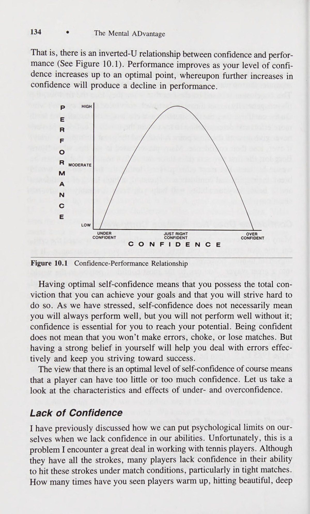
Mục tiêu giúp xác định điều gì quan trọng đối với bạn Một trong những cách chính mà mục tiêu hoạt động là cung cấp cho bạn phương hướng và hướng dẫn bạn trên hành trình đi đến thành công. Bạn rất dễ quên mất mục đích của mình, đặc biệt nếu bạn đang hướng tới một điều gì đó lâu dài như nhận được học bổng quần vợt ở trường đại học nhưng vẫn còn ba năm nữa mới vào đại học. Mục tiêu giúp đưa mọi thứ vào quan điểm; Một khi bạn đã xác định được nơi mình sẽ đến và những gì bạn hy vọng tìm thấy khi đến đó, các mục tiêu sẽ giúp bạn tìm ra con đường chắc chắn nhất, nhanh nhất để đi theo. Về bản chất, mục tiêu có thể hướng dẫn bạn và giúp bạn thành công.
Goals Help Determine What’s Important to You One of the major ways that goals work is by providing you with direction and guiding you along your journey to success. It is easy to lose track of your purpose, especially if you are aiming for something long-term like getting a college tennis scholarship but are still three years away from entering college. Goals help put things in perspective; once you have es- tablished where you are going and what you hope to find when you get there, goals will help you find the surest, quickest route to follow. In essence, goals can guide you and help you succeed.
e Mục tiêu Duy trì Động lực Tay vợt quần vợt chỉ có thể phát huy được tiềm năng của mình nếu họ có động lực.
148 e The Mental ADvantage Goals Maintain Motivation Tennis players are only able to reach their potential if they are motivated.
Mặc dù hầu hết chúng ta đôi khi đều có động lực, nhưng mục tiêu giúp chúng ta duy trì động lực trong một thời gian dài. Đôi khi việc tập luyện trở nên nhàm chán, bạn bị chấn thương dai dẳng hoặc mệt mỏi, bạn rất dễ bỏ cuộc và bỏ cuộc hoàn toàn hoặc chỉ làm theo các động thái trên sân. Tuy nhiên, tay vợt quần vợt có một số mục tiêu ngắn hạn và dài hạn sẽ nhận ra rằng sự vất vả, đau đớn và mệt mỏi khi luyện tập hàng ngày sẽ mang lại thành công trong nhiều tuần, nhiều tháng hoặc thậm chí nhiều năm sau này. Bằng cách phác thảo một cách có hệ thống các bước dẫn đến mục tiêu dài hạn của mình, bạn có thể dễ dàng chứng minh mối liên hệ giữa hành vi hàng ngày và hiệu suất trong tương lai. Điều này có thể giúp bạn có động lực trong một thời gian dài.
Although most of us are motivated from time to time, goals help us to sustain our motivation over a long period of time. Sometimes when prac- tice gets boring, you have a nagging injury, or you are fatigued, it is easy to give up and either quit entirely or just go through the motions on the court. The tennis player who has some short- and long-range goals will realize, however, that the drudgery, pain, and fatigue of daily practice will result in successful performances weeks, months, or even years down the road. By systematically outlining the steps leading to your long-term goals, you can readily demonstrate the connection between day-to-day behaviors and future performances. This in turn can keep you motivated over a long period of time.
Mục tiêu Tăng cường nỗ lực Khi bạn đặt ra cho mình một mục tiêu quan trọng đối với mình, nhìn chung bạn sẽ nỗ lực nhiều hơn để đạt được mục tiêu đó. Vì vậy, nếu mục tiêu của bạn là lọt vào top 10 trên bảng xếp hạng bang và hiện bạn đang đứng thứ 20 thì bạn sẽ phải cố gắng hơn nữa để đạt được mục tiêu đó. Hầu hết các tay vợt hàng đầu đều luyện tập vô số giờ để đạt được trình độ thành thạo cao bất kể khả năng thiên bẩm của họ. Việc đặt mục tiêu sẽ thúc đẩy bạn khó khăn hơn một chút và giúp bạn luôn phấn đấu để tiến bộ. Không gì có thể thay thế được sự chăm chỉ, và những bàn thắng giúp chúng ta nỗ lực hết mình trong cả tập luyện và thi đấu.
Goals Increase Effort When you set a goal for yourself that is important to you, you will gener- ally put forth more effort to achieve that goal. So, if your goal is to be in the top 10 in the state rankings and you are currently number 20, then you will have to try harder to reach that goal. Most top tennis players practice for countless hours to reach their high degree of proficiency regard- less of their natural ability. Setting goals pushes you a little harder and keeps you striving to improve. Nothing can replace hard work, and goals keep us working hard in both practice and matches.
Mục tiêu Chú ý trực tiếp Một trong những cách mà mục tiêu giúp cải thiện hiệu suất là hướng sự chú ý của bạn vào việc hoàn thành nhiệm vụ. Khi bạn đặt mục tiêu, nó sẽ giúp bạn tập trung vào quá trình hành động sẽ giúp đạt được mục tiêu đó. Ví dụ: nếu mục tiêu của bạn là cải thiện tính nhất quán của cú trái tay, thì trong mỗi buổi luyện tập, bạn nên tập trung vào khía cạnh đó của trận đấu bằng một số bài tập và bài tập cụ thể.
Goals Direct Attention One of the ways that goals help improve performance is by directing your attention to accomplishing the task. When you set a goal, it helps you stay focused on a course of action that will help achieve that goal. For example, if your goal is to improve the consistency of your backhand, then in every practice session you should focus on that aspect of your game with some specific drills and exercises.
Mục tiêu Tăng cường sử dụng các chiến lược học tập phù hợp Cách cuối cùng mà mục tiêu có thể ảnh hưởng tích cực đến hiệu suất là thông qua việc sử dụng các chiến lược học tập phù hợp. Nghĩa là, khi đặt mục tiêu, bạn phải tìm ra cách để đạt được mục tiêu đó. Ví dụ: nếu mục tiêu của bạn là giảm số lỗi không bắt buộc so với mức cơ bản từ 20 xuống 10, bạn sẽ đạt được mục tiêu này bằng cách nào? Bạn có thể quyết định rằng Động lực của bạn cần đánh với nhiều xoáy lên hơn một chút để tạo ra mức sai số lớn hơn so với những cú chạm đất bằng phẳng hiện tại của bạn. Ngoài ra, bạn có thể quyết định rằng bạn cần dành ít nhất nửa giờ mỗi ngày để luyện tập chỉ những cú chạm đất, cố gắng phá kỷ lục của ngày hôm trước về những cú chạm đất liên tiếp mà không mắc lỗi. Trong cả hai trường hợp, bạn đang nghĩ ra một chiến lược cụ thể để giúp bạn đạt được mục tiêu của mình và điều này thường sẽ giúp bạn học tập và cải thiện nhanh hơn, hiệu quả hơn.
Goals Increase the Use of Relevant Learning Strategies A final way in which goals can positively influence performance is through the use of relevant learning strategies. That is, when you set a goal you have to figure out how you are going to reach that goal. For example, if your goal is to reduce your unforced errors from the baseline from 20 to 10, how are you going to reach this goal? You might decide that you Motivation ° 149 need to hit with a little more topspin to provide a greater margin of error than your present flat groundstrokes. Additionally, you may decide that you need to spend at least one-half hour each day in practice hitting just groundstrokes, trying to break your previous day’s record of consecutive groundstrokes without an error. In either case, you are devising a specific strategy to help you reach your goal, and this will usually produce quicker and more effective learning and improvement.
Nguyên tắc thiết lập mục tiêu Chúng tôi hy vọng rằng bạn đang bắt đầu nhận ra nhiều cách mà mục tiêu có thể cải thiện hiệu suất của bạn cũng như làm cho trải nghiệm chơi quần vợt của bạn thú vị hơn. Tuy nhiên, sẽ là sai lầm nếu nghĩ rằng tất cả các loại mục tiêu đều có hiệu quả như nhau trong việc hỗ trợ trận đấu quần vợt của bạn. Tương tự, việc đặt ra mục tiêu không đảm bảo rằng bạn sẽ đạt được bất kỳ sự cải thiện nào về hiệu suất. Trên thực tế, một số nghiên cứu chỉ ra rằng một số mục tiêu hoặc chương trình đặt mục tiêu nhất định không tạo điều kiện thuận lợi cho việc thực hiện. Tuy nhiên, tin tốt là các nhà tâm lý học thể thao có nhiều kinh nghiệm trong việc áp dụng các chương trình đặt mục tiêu đã đưa ra một số hướng dẫn hữu ích để thiết lập chương trình đặt mục tiêu. Những hướng dẫn và nguyên tắc này được thảo luận dưới đây.
Goal-Setting Guidelines It is hoped that you are starting to realize the many ways in which goals can improve your performance as well as make your tennis experience more enjoyable. It would be misleading, however, to think that all types of goals are equally effective in helping your tennis game. Similarly, set- ting goals does not ensure that you will experience any improvement in performance. In fact, some research indicates that certain goals or goal- setting programs do not facilitate performance. The good news, however, is that sport psychologists with extensive experience in employing goal- setting programs have come up with several useful guidelines for estab- lishing a goal-setting program. These guidelines and principles are dis- cussed below.
Xác định mục tiêu của bạn Một trong những điều đầu tiên bạn phải xác định là bạn muốn đạt được điều gì.
Identify Your Goals One of the first things you have to determine is what you want to achieve.
Tôi nhận thấy rằng những tay vợt quần vợt thường có sự nhầm lẫn và không chắc chắn trong việc quyết định mục tiêu thực sự của họ là gì. Việc xác định nơi bạn muốn đến và điều bạn muốn đạt được với tư cách là một vận động viên quần vợt đôi khi đòi hỏi phải tìm kiếm trong tâm hồn. Các tay vợt trẻ đặc biệt cần phải phân biệt mục tiêu của mình với mục tiêu của cha mẹ, những tay vợt quần vợt khác và huấn luyện viên.
I have found that there is often confusion and uncertainty among tennis players in deciding what their real goals are. Identifying where you want to go and what you want to accomplish as a tennis player sometimes re- quires soul searching. Younger players in particular need to sort out their own goals from the goals of parents, other tennis players, and coaches.
Không nên bỏ qua ý kiến đóng góp từ những người đó, nhưng tay vợt cần phải tự quyết định xem họ muốn đạt được điều gì từ trò chơi.
The input from those people should not be disregarded, but players need to decide for themselves what they want to get out of the game.
Một cách để giúp bắt đầu xác định mục tiêu của bạn là tự hỏi bản thân một loạt câu hỏi liên quan đến kỹ năng chơi quần vợt và thái độ của bạn đối với trò chơi.
One way to help get started identifying your goals is to ask yourself a series of questions concerning your tennis skills and attitudes about the game.
¢ Điểm yếu lớn nhất của tôi khi là một vận động viên quần vợt là gì?
What are my greatest weaknesses as a tennis player?.
e Điểm mạnh nhất của tôi khi là một vận động viên quần vợt là gì?
What are my greatest strengths as a tennis player?
¢ Đối với tôi, khía cạnh nào của quần vợt khiến tôi thấy thú vị nhất?
What aspects of tennis are most enjoyable for me?
¢ Tôi sẵn sàng dành bao nhiêu thời gian để luyện tập?
How much time am I willing to put into practicing?
¢ Tôi đang làm việc chăm chỉ hay chỉ đang dành thời gian?
Am I working hard or just putting in time?
e Tôi có tránh thực hành những cú đánh mà tôi cần phải luyện tập không?
150 e The Mental ADvantage Do I avoid practicing shots that I need to work on?
Tôi có chuẩn bị tinh thần cho việc tập luyện và thi đấu không?
Do I prepare myself mentally for practice and matches?
Tôi có thể trạng tốt không?
Am I in excellent physical condition?
Tôi có hiểu được khía cạnh chiến lược của trò chơi không?
Do I understand the strategic aspects of the game?
Cơ chế bắn của tôi có hiệu quả và hiệu quả không?
Are my shot mechanics efficient and effective?
Tôi muốn trở thành vận động viên quần vợt như thế nào trong sáu tháng? Trong một năm?
What kind of tennis player would I like to be in six months? In one year?
Khi bạn cố gắng giải quyết một số câu hỏi này, bạn sẽ nhận ra rằng câu trả lời không đơn giản hoặc dễ hiểu. Suy nghĩ về những điều này sẽ giúp làm rõ những gì bạn muốn đạt được trong môn quần vợt và xác định một số lĩnh vực cụ thể cần cải thiện hoặc nhấn mạnh.
As you attempt to address some of these questions you will realize that the answers are not simple or straightforward. Thinking about these things will help clarify what you want to accomplish in tennis and identify some specific areas of improvement or emphasis.
Đặt mục tiêu đầy thách thức Một trong những phát hiện mạnh mẽ nhất trong tài liệu về thiết lập mục tiêu là mục tiêu cần phải khó khăn và đầy thử thách. Mục tiêu có cách xác định mức độ thực hiện. Cũng giống như việc nhắm vào mục tiêu giúp xác định hướng chung mà bạn bắn, việc đặt mục tiêu có thể xác định phần lớn phạm vi mà bạn thực hiện. Thực tế, nghiên cứu đã chứng minh rằng mục tiêu càng khó thì hiệu suất càng cao, miễn là mục tiêu đó không vượt quá khả năng của bạn.
Set Challenging Goals One of the strongest findings in the goal-setting literature is that goals need to be difficult and challenging. Goals have a way of determining levels of performance. Just as aiming at a target helps determine the general direc- tion in which you shoot, setting goals can largely determine the range in which you perform. In fact, research has demonstrated that the more dif- ficult the goal the better the performance, as long as the goal does not exceed your ability.
Tất nhiên có những giới hạn thực tế về những gì bạn có thể làm vào thời điểm này. Nhưng một số mục tiêu đặt ra giới hạn cho những gì bạn có thể đạt được. Nếu bạn đặt mục tiêu quá thấp, bạn có thể hài lòng với hiệu suất kém hơn mức tốt nhất của mình. Ví dụ: nếu mục tiêu của bạn là thành lập đội quần vợt ở trường trung học, bạn có thể hài lòng chỉ khi thành lập đội ngay cả khi bạn không có cơ hội thi đấu trong nhiều trận đấu. Nếu bạn thực sự làm việc chăm chỉ, bạn có thể phá vỡ đội hình xuất phát, nhưng nếu mục tiêu của bạn chỉ là thành lập đội thì có lẽ bạn sẽ không bao giờ tiến bộ đủ để ra sân trong các trận đấu.
Of course there are realistic limits as to what you can do at this point in time. But some goals put a limit on what you are likely to achieve. If you set your goals too low you might be satisfied with performance that is less than your best. For example, if your goal is to make your high school tennis team you might be satisfied just to make the team even if you do not get a chance to play in many matches. If you really worked hard, you might break the starting lineup, but if your goal was just to make the team then you probably would not ever improve enough to play in the matches.
Tất nhiên, đôi khi việc đặt ra một mục tiêu không thể đạt được hoặc không thực tế có thể làm suy yếu động lực và hiệu suất của bạn. Loại mục tiêu này tạo ra thất bại lặp đi lặp lại và do đó ngăn cản bạn tiếp tục làm việc chăm chỉ và tiến bộ. Ví dụ, nếu bạn đang chơi số sáu trong đội quần vợt ở trường đại học, việc đặt mục tiêu đạt được thành tích đó trong quần vợt chuyên nghiệp là không thực tế. Tuy nhiên, những tay vợt quần vợt ở vị trí này thường chỉ ra thực tế là họ biết một tay vợt thực sự đã hoàn thành mục tiêu này. Việc nó chỉ xảy ra một phần nghìn lần dường như không quan trọng đối với tay vợt. Những tay vợt có mục tiêu không thực tế rất có thể sẽ thất bại, từ đó làm giảm động lực và sự tự tin.
Of course, there are times when setting an unobtainable or unrealistic goal can undermine your motivation and performance. This type of goal produces repeated failure and thus discourages you from continuing to work hard and improve. For example, if you are playing number six on your college tennis team, it is unrealistic to have a goal of making it in profes- sional tennis. Tennis players in this position, however, often point to the fact that they knew a player who actually accomplished this goal. The fact that it only happened one time in a thousand does not seem to matter to the player. Players with unrealistic goals will most likely fail, which in turn reduces motivation and confidence.
Động lực Điều này không có nghĩa là bạn không thể nhắm tới các vì sao. Mọi người đều có thể mơ được đứng trên sân trung tâm ở Wimbledon, bởi vì đối với một số tay vợt, giấc mơ này đã thực sự trở thành hiện thực. Bạn cần tách giấc mơ của mình khỏi thực tế của hoàn cảnh hiện tại. Mục tiêu của bạn phải phản ánh khả năng và kinh nghiệm của bạn, nhưng đừng quá hạn chế bản thân hoặc hạn chế những gì bạn có thể đạt được trong tương lai. Hãy giữ ước mơ của bạn, nhưng hãy đặt ra một số mục tiêu đầy thách thức cho hiện tại để có thể giúp bạn đạt được những ước mơ đó trong tương lai.
Motivation ® 151 This is not to say that you can’t shoot for the stars. Everyone can dream of being on center court at Wimbledon, because for some players this dream actually comes true. You need to separate your dreams from the reality of your present situation. Your goals should reflect your ability and ex- perience, but don’t severely limit yourself or restrict what you might ac- complish in the future. Keep your dreams, but set some challenging goals for the present that might make it possible for you to achieve those dreams in the future.
Đặt mục tiêu ngắn hạn và dài hạn Khi tôi yêu cầu các vận động viên quần vợt liệt kê các mục tiêu của họ, họ thường xác định các mục tiêu dài hạn như giành chức vô địch cụ thể, nhận học bổng quần vợt đại học hoặc đạt được thứ hạng cấp tiểu bang vào cuối năm.
Set Short- and Long-Term Goals When I ask tennis players to list their goals, they usually identify long- range objectives such as winning a particular championship, getting a col- lege tennis scholarship, or achieving a state ranking by the end of the year.
Tuy nhiên, các nhà tâm lý học thể thao đã nhấn mạnh sự cần thiết của các mục tiêu ngắn hạn bên cạnh các mục tiêu dài hạn. Mục tiêu ngắn hạn rất quan trọng vì một vài lý do. Đầu tiên, họ cung cấp cho bạn thông tin phản hồi về cách bạn đang tiến tới các mục tiêu dài hạn của mình. Ví dụ: nếu mục tiêu dài hạn của bạn là được xếp hạng trong top 10 ở tiểu bang của bạn sau một năm và bạn hiện đang xếp thứ 25, thì bạn có thể đặt mục tiêu ngắn hạn để cải thiện thứ hạng của mình mỗi tháng. Mục tiêu ngắn hạn có thể là những mục tiêu được hoàn thành hàng ngày. Một số mục tiêu ngắn hạn hàng ngày có thể bao gồm thực hiện 50 cú giao bóng, chạy ba dặm để rèn luyện sức khỏe, thực hiện các cú vô lê trong 30 phút trong mỗi buổi tập hoặc đánh 10 cú trái tay liên tiếp chéo sân mà không bỏ sót.
However, sport psychologists have emphasized the need for short-term goals in addition to long-term goals. Short-term goals are important for a couple of reasons. First, they provide you with feedback in terms of how you are progressing toward your long-term goals. For example, if your long-term goal is to be ranked in the top 10 in your state in one year and you are currently ranked 25, then you could set short-term goals of improving your ranking each month. Short-term goals can be goals that are accomplished daily. Some daily short-term goals might include hit- ting 50 serves, running three miles for conditioning, drilling on your vol- leys for 30 minutes during each practice, or hitting 10 consecutive backhands crosscourt without missing.
Vấn đề là các mục tiêu ngắn hạn cho phép bạn đánh giá sự tiến bộ của mình và thay đổi hoặc thay đổi mục tiêu của mình khi tình huống yêu cầu. Nếu mục tiêu dài hạn của bạn là chơi số một trong đội quần vợt của trường đại học vào cuối mùa giải và sau nửa mùa giải bạn đang chơi số tám, có lẽ bạn cần phải đánh giá lại mục tiêu của mình. Sẽ thực tế hơn nếu bạn điều chỉnh lại mục tiêu của mình để lọt vào top 6. Ngược lại, nếu bạn đạt được các mục tiêu ngắn hạn nhanh hơn dự kiến, bạn có thể quyết định thực hiện mục tiêu cuối cùng thậm chí còn khó hơn. Sử dụng ví dụ trên, nếu bạn đạt vị trí số một vào giữa mùa giải, bạn có thể đặt mục tiêu thắng 70% số trận đấu của mình.
The point is that short-term goals allow you to evaluate your progress and alter or change your goals as the situation dictates. If your long-term goal is to play number one on your college tennis team by the end of the season and after half a season you are playing number eight you probably need to reevaluate your goal. It might be more realistic to readjust your goal to making it into the top six. Conversely, if you are reaching your short-term goals faster than you anticipated, you could decide to make your final goal even harder. Using the above example, if you reached num- ber one by midseason you might set your goal at winning 70% of your matches.
Bên cạnh việc cung cấp phản hồi để giúp bạn theo dõi các mục tiêu dài hạn của mình, các mục tiêu ngắn hạn còn thúc đẩy bạn vì bạn có thể thấy những cải thiện ngay lập tức trong hiệu suất. Đôi khi thật khó để nhận ra rằng tất cả sự chăm chỉ và hy sinh của bạn cuối cùng sẽ dẫn đến việc đạt được một số mục tiêu dài hạn như nhận được học bổng đại học. Nhưng sẽ dễ dàng hơn để duy trì động lực nếu bạn có thể thấy một số kết quả và cải thiện rõ ràng hàng ngày, hàng tuần hoặc hàng tháng. Việc đạt được các mục tiêu ngắn hạn giúp bạn yên tâm rằng bạn đang đi đúng hướng và tạo niềm tin rằng việc tiếp tục làm việc chăm chỉ sẽ mang lại thành công trong tương lai.
Besides providing feedback to help you keep sight of your long-term goals, short-term goals also motivate you because you can see immediate improvements in performance. It is difficult at times to realize that all your hard work and sacrifice will eventually result in achieving some long-term goal such as receiving a college scholarship. But it is easier to maintain motivation if you can see some tangible results and improvements on a
Đặt các mục tiêu cụ thể có thể đo lường và ngày mục tiêu Nghiên cứu đã chỉ ra rõ ràng rằng các mục tiêu cụ thể, có thể đo lường được sẽ hiệu quả hơn trong việc nâng cao hiệu suất so với các mục tiêu “cố gắng hết sức” hoặc không có mục tiêu nào cả. Mục tiêu của bạn càng được xác định rõ ràng thì chúng càng hướng dẫn bạn đến mục tiêu dài hạn tốt hơn. Những mục tiêu mơ hồ và không thể đo lường được giống như những phương hướng sai lầm khiến bạn khó tìm được đường đi.
152 ° The Mental ADvantage day-to-day, week-to-week, or month-to-month basis. Reaching your short- term goals reassures you that you are heading in the right direction and instills confidence that continued hard work will result in future success. Set Specific Measurable Goals and Target Dates Research has strongly indicated that specific, measurable goals are more effective in enhancing performance than ‘‘do your best’’ goals or no goals at all.
Thật không may, nhiều người trong chúng ta đã có thói quen suy nghĩ theo cách chung chung. Kết quả là chúng ta có xu hướng đặt ra các mục tiêu như cải thiện các cú giao bóng, giảm các lỗi không đáng có, trở nên cứng rắn hơn về mặt tinh thần hoặc chơi tích cực hơn.
The more clearly your goals are specified, the better they guide you to your long-term objective. Goals that are vague and unmeasurable are like poor directions which make it harder to find your way. Unfortunately, many of us have been conditioned to think in general terms.
Mặc dù tất cả những điều này có thể là những mục tiêu đáng giá, nhưng ở dạng hiện tại, chúng không hữu ích hoặc mang tính thông tin nhiều.
As a result we tend to set goals such as improving serves, reducing unforced errors, becoming mentally tougher, or playing more aggressively.
Xem xét kỹ hơn những mục tiêu này, chúng thực sự có ý nghĩa gì? Chơi tích cực hơn có nghĩa là vào lưới nhiều hơn, đánh mạnh hơn, đi theo đường biên hay giao bóng và tung cú vô lê cả hai quả giao bóng? Việc cải thiện cú giao bóng của bạn có nghĩa là đánh nó mạnh hơn, đặt nó tốt hơn, đạt được tỷ lệ phần trăm nhất định trong số lần giao bóng đầu tiên, giảm lỗi kép của bạn hay học cách giao bóng thứ hai xoắn kiểu Mỹ? Việc trở nên khó khăn hơn về mặt tinh thần có nghĩa là bạn cố gắng cải thiện khả năng tập trung, giảm lo lắng, xây dựng sự tự tin hay dành nhiều thời gian hơn để chuẩn bị tinh thần cho các trận đấu của mình?
While all of these may be worthwhile goals, in their present form they are not very useful or informative. Taking a closer look at these goals, what do they really mean? Does playing more aggressively mean coming to net more, hitting harder, going for the lines, or serving and volleying both serves? Does improving your serve mean hitting it harder, placing it better, getting a certain percentage of first serves in, reducing your double faults, or learning an American twist second serve?
Như bạn có thể biết từ các ví dụ trên, nếu không xác định rõ ràng mục tiêu của mình bằng những thuật ngữ có thể đo lường được, bạn sẽ khó biết được khi nào và liệu bạn có thực sự đạt được chúng hay không. Bằng cách sử dụng các con số để xác định rõ ràng mục tiêu, bạn cho phép bản thân (hoặc huấn luyện viên của bạn) đo lường sự tiến bộ của bạn so với tiêu chuẩn. Bằng cách này, bạn sẽ có cho mình một phương tiện rõ ràng để so sánh hiệu suất thực tế của bạn với mục tiêu bạn đặt ra cho mình.
Does becoming mentally tougher mean that you try to improve your concentration, reduce your anxiety, build up your confi- dence, or spend more time mentally preparing for your matches? As you can tell from the above examples, without clearly specifying your goals in measurable terms you become hard-pressed to know when and if you actually reached them. By using numbers to clearly specify goals, you enable yourself (or your coach) to measure your progress against the standard.
Lấy ví dụ về việc cải thiện cú giao bóng của bạn. Loại mục tiêu này không cung cấp bất kỳ thông tin nào liên quan đến mức độ thành công của bạn khi thực sự hoàn thành mục tiêu này. Một mục tiêu cụ thể hơn có thể đo lường được có thể là "'Tôi muốn cải thiện tỷ lệ giao bóng đầu tiên của mình từ 45% lên 55% trong sáu tháng tới". Sau đó, bạn (hoặc huấn luyện viên của bạn) có thể lập biểu đồ tiến bộ của mình và ghi lại tỷ lệ giao bóng đầu tiên trong tất cả các trận đấu của bạn. Hoặc mục tiêu của bạn có thể là tăng độ sâu của cú giao bóng thứ hai. Để thực hiện điều này, bạn có thể vẽ một đường song song với đường giao bóng ở giữa lưới và đường giao bóng. Mỗi ngày trong thực tế, bạn sẽ thực hiện cú giao bóng 50 giây, lập biểu đồ số lần bạn đánh vào nửa sau của phần giao bóng Cuối cùng, bạn có thể đặt mục tiêu đánh được 40 trong số 50 quả giao bóng ở nửa sau của phần giao bóng trong hai tháng.
In this way, you will give yourself a clear-cut means for comparing your actual performance to the goal you set for yourself. Take the example of improving your serve. This type of goal does not provide any information concerning how successful you will be in actually accomplishing this goal. A more specific measurable goal might be, “‘I want to improve my first serve percentage from 45% to 55% in the next six months.’’ You (or your coach) could then chart your progress and record your first serve percentage in all your matches. Or your goal might be to increase the depth of your second serve. To accomplish this, you might draw a line parallel to the serve line halfway between the net and service line. Each day in practice you would hit 50 second serves, charting how many you hit into the back half of the service court. Finally, you could have a goal of hitting 40 of 50 serves in the back half of the service court in two months.
Động lực Bằng cách xác định rõ ràng hơn các mục tiêu của bạn về các hành vi cần thực hiện, bạn có thể chia các mục tiêu lớn hơn thành các đơn vị nhỏ hơn dễ quản lý hơn. Điều này cũng cung cấp cho bạn một mục tiêu trước mắt mà bạn có thể thực hiện ngay bây giờ và đưa bạn đến gần hơn với các mục tiêu dài hạn của mình. Hãy chính xác, nêu rõ mục tiêu của bạn bằng các tiêu chuẩn hiệu suất có thể đo lường được, chỉ định các hành vi bạn muốn thực hiện và đặt ra ngày mục tiêu để đạt được mục tiêu của mình.
Motivation ° 153 By specifying your goals more clearly in terms of behaviors to be per- formed, you can break down larger goals into smaller more manageable units. This also provides you with an immediate objective that you can work on right now and brings you closer to your long-term goals. Be pre- cise, state your goals in measurable standards of performance, specify the behaviors you want to perform, and set a target date to reach your goals.
Đặt mục tiêu thành tích thay vì mục tiêu kết quả (Outcome Goals) Trong xã hội chúng ta, thành công trong thể thao là mục tiêu được đánh giá cao và nhiều vận động viên dành phần lớn cuộc đời họ để theo đuổi giấc mơ Mỹ này. Khi được hỏi thành công có ý nghĩa gì với họ, hầu hết các vận động viên và huấn luyện viên thường sẽ nói chiến thắng. Ngoài ra, họ có xu hướng đặt mục tiêu là chiến thắng vì họ cảm thấy rằng điều này sẽ tạo ra động lực cuối cùng. Tuy nhiên, nghiên cứu gần đây về tâm lý học thể thao đã chỉ ra rằng các mục tiêu về kết quả (tức là chiến thắng) kém hiệu quả hơn các mục tiêu về thành tích (các mục tiêu liên quan đến thành tích trong quá khứ của bạn). Các mục tiêu về kết quả có thể mang lại động lực rất lớn nếu bạn đang chơi một tay vợt có khả năng tương đương. Thật không may, phần lớn thời gian bạn sẽ không đấu với người có khả năng tương đương mà sẽ thi đấu với những tay vợt khác vượt trội hoặc kém hơn bạn. Điều này làm cho chiến thắng trở nên quá dễ dàng hoặc khó khăn một cách phi thực tế. Vậy, nếu mục tiêu về kết quả không thực sự hiệu quả trong việc giúp các vận động viên phát huy hết tiềm năng của mình thì tại sao hầu hết các huấn luyện viên và tay vợt quần vợt lại coi chiến thắng là quan trọng đến vậy?
Set Performance Goals Instead of Outcome Goals In our society, success in sports is a highly valued goal, and many ath- letes spend a major part of their lives pursuing this American dream. When asked what being successful means to them, most athletes and coaches will usually say winning. In addition, they tend to set their goals in terms of winning since they feel that this will produce ultimate motivation. Recent research in sport psychology, however, has indicated that outcome goals (i.e., winning) are less effective than performance goals (goals relative to your own past performance). Outcome goals can be very motivating if you are playing a tennis player of equal ability. Unfortunately, much of the time you won’t play against someone of equal ability but rather will compete against other players who are superior or inferior to you. This makes winning either too easy or unrealistically hard. So, if outcome goals are not really effective in helping athletes reach their potential, then why do most tennis coaches and players consider winning to be so important?
Câu trả lời cho câu hỏi này đòi hỏi chúng ta phải xem xét những đứa trẻ mới bắt đầu chơi quần vợt. Lúc đầu, hầu hết các vận động viên trẻ đều nâng cao và hạ thấp kỳ vọng của họ dựa trên trình độ năng lực của chính họ. Mỗi thành công khiến mục tiêu được nâng lên một chút để duy trì thử thách ở mức cao, trong khi thất bại khiến mục tiêu bị hạ thấp một chút để duy trì thành công trong tầm tay.
The answer to this question requires that we go look at young kids who are just starting out playing tennis. At the outset most young athletes raise and lower their expectations based on their own level of competence. Each success causes goals to be raised slightly to keep challenge high, whereas failure causes goals to be slightly lowered to keep success within reach.
Khi các vận động viên quần vợt già đi, họ chuyển sang những tình huống cạnh tranh hơn và ngày càng khó kiểm soát mục tiêu của mình. Thay vào đó, cha mẹ, huấn luyện viên và đồng đội đôi khi truyền đạt rằng việc giành được các danh hiệu, đứng đầu và giành chiến thắng trong các trận đấu còn quan trọng hơn việc tự hoàn thiện bản thân và sự hài lòng. Trên thực tế, tôi đã quan sát thấy nhiều tay vợt đánh đồng chiến thắng là thành công và thua là thất bại. Những tay vợt này tin rằng nếu thắng thì họ thành công, có năng lực và xứng đáng; còn nếu thua thì họ coi mình là kẻ thất bại và kém cỏi. Do đó, bằng cách đánh đồng thành tích quần vợt với giá trị bản thân, những tay vợt trẻ này khiến việc thi đấu trở thành một tình huống căng thẳng và đe dọa tiềm tàng (xem chương 3).
As tennis players become older, they move into more competitive situa- tions and find it increasingly difficult to control their own goals. Instead, parents, coaches, and teammates sometimes convey that winning trophies, coming in first place, and winning matches are more important than self- improvement and satisfaction. In fact, I have observed that many tennis players equate winning with success and losing with failure. These tennis players come to believe that if they win they are successful, competent, and worthy; whereas if they lose, they consider themselves a failure and incompetent. Thus, by equating their tennis achievement with their self- worth, these young players make competition a potentially threatening and stressful situation (see chapter 3).
Bên cạnh áp lực mà các mục tiêu kết quả (Outcome Goals) có thể tạo ra, điểm yếu thứ hai là, trong trường hợp tốt nhất, chúng ta chỉ kiểm soát được một phần các loại mục tiêu này.
Besides the pressure that outcome goals can produce, a second weak- ness is that, at best, we have only partial control over these types of goals.
Ví dụ: mục tiêu của bạn là giành chiến thắng trong một giải đấu nhất định. Ở vòng tứ kết, bạn gặp một đối thủ thực sự sắc bén và khó sút trượt. Đến lượt bạn, bạn nâng cao trình độ trò chơi của mình và chơi một trận đấu tuyệt vời, chỉ để thua với tỷ số 3 set sít sao: 7-5, 6-7, 7-6. Kết quả này sẽ tạo ra sự thất vọng và tức giận vì bạn đã bị cản trở trong việc đạt được mục tiêu của mình: giành chiến thắng. Thay vì tự chúc mừng bản thân vì đã chơi một trong những trận đấu * hay nhất trong đời, bạn buộc phải buồn bã vì không đạt được kết quả mục tiêu này. Ngược lại, bạn có thể chơi kém trước một đối thủ kém hơn nhưng vẫn giành được chiến thắng sau ba set với tỷ số 7-5, 4-6, 6-4. Bạn có nên cảm thấy hài lòng với thành tích của mình chỉ vì bạn đã giành được chiến thắng (tức là đạt được mục tiêu) không?
For example, your goal is to win a certain tournament. In the quarter-finals 154 ° The Mental ADvantage you play against an opponent who is really sharp and hardly misses a shot. You, in turn, raise the level of your game and play a wonderful match, only to lose a tight three-setter: 7-5, 6-7, 7-6. This result would produce frustration and anger because you were thwarted in reaching your goal: to win. Instead of congratulating yourself for playing one of the best * matches in your life, you are forced to be upset by your failure to reach this outcome goal. Conversely, you might be playing poorly against an inferior opponent, but manage to squeak out a three-set victory, 7-5, 4-6, 6-4.
Như bạn có thể thấy từ các ví dụ trên, việc đặt mục tiêu kết quả (Outcome Goals) dựa trên thắng và thua thường sẽ dẫn đến các vấn đề liên quan đến động lực và sự tự tin. Giải pháp thay thế là chọn những mục tiêu có thể mang lại thành công cho tất cả tay vợt quần vợt. Để làm được điều này, ý nghĩa của thành công phải được xác định lại. Thành công nên được nhìn nhận ở khía cạnh vượt qua mục tiêu của chính bạn thay vì chỉ đơn thuần là đánh bại đối thủ. Điều này không có nghĩa là chiến thắng là không quan trọng; đúng hơn, chiến thắng không phải là tất cả. Trên thực tế, chiến thắng chỉ được coi là thứ yếu so với việc phấn đấu đạt được mục tiêu cá nhân của bạn. Những mục tiêu hiệu suất (Performance Goals) này không dựa trên việc bạn thắng hay thua mà dựa trên việc bạn có đạt được mức hiệu suất cụ thể hay không.
Should you feel happy with your performance just because you managed to win (i.e., reach your goal)? As you can see from the above examples, setting outcome goals based on winning and losing will usually result in problems concerning motiva- tion and self-confidence. The alternative is to select goals that can make success possible for all tennis players. In order to do this, the meaning of success must be redefined. Success should be seen in terms of exceed- ing your own goal rather than merely beating an opponent. This is not to say that winning is unimportant; rather, winning should not be every- thing. In fact, winning should be considered secondary to striving to reach your personal goals.
Do đó, các mục tiêu hiệu suất (Performance Goals) hoàn toàn nằm trong tầm kiểm soát của bạn và bạn có thể đạt được chúng bất kể ai tình cờ ở bên kia mạng. "Mặc dù thua, tôi đã cải thiện động lực giao bóng đầu tiên của tôi. Bằng chứng nghiên cứu, cũng như các cuộc phỏng vấn với các vận động viên trong nhiều môn thể thao, chỉ ra rằng các vận động viên sử dụng các mục tiêu thành tích để duy trì mức độ thành tích ổn định cũng như để tối đa hóa sự hứng thú khi tham gia. Có rất nhiều lợi ích có được từ việc đặt ra các mục tiêu thành tích. Thứ nhất, mục tiêu thành tích khiến bạn phải chịu trách nhiệm về sự tiến bộ của mình - bạn không thể chỉ ra sự cạnh tranh của mình như một lý do để không tiến bộ. Bạn nên ghi công cho những thành công của mình và chấp nhận đổ lỗi cho những thất bại của mình. Thứ hai, động lực của bạn có thể được duy trì ở mức cao tương ứng với trình độ kỹ năng hiện tại của bạn và sự tự tin của bạn có thể dần dần được xây dựng khi bạn đạt được các mục tiêu đặt ra cho bản thân. Thứ ba, vì bạn không phải lo lắng về cách đối thủ chơi, bạn có thể tập trung và tập trung vào trận đấu của chính mình. Bạn chỉ có thể kiểm soát hiệu suất của chính mình chứ không phải hiệu suất của tay vợt khác. Mục tiêu thành tích chỉ yêu cầu bạn phải nỗ lực hết mình mỗi khi bước ra sân.
These performance goals are not based on whether you win or lose but whether you reach a specific level of performance. Performance goals, therefore, are totally under your control and they can be reached regardless of who happens to be on the other side of the net. “Even though | lost, | im- proved my S first serve Motivation e 155 Research evidence, as well as interviews with athletes in many sports, indicates that athletes employ performance goals to maintain consistent levels of performance as well as to maximize enjoyment from their par- ticipation. There are many benefits that are derived from setting perfor- mance goals. First, performance goals make you responsible for your progress—you can’t point to your competition as a reason for not progress- ing. You should take credit for your successes and accept blame for your failures. Second, your motivation can be maintained at a high level for your current skill level and your self-confidence can slowly build as you reach the goals you set for yourself. Third, because you don’t have to worry about how your opponent is playing, you can concentrate and focus on your own game. You can control only your own performance and not the performance of other players.
Tôi đã dành rất nhiều thời gian để thảo luận về tầm quan trọng của mục tiêu hiệu suất (Performance Goals).
Performance goals only require that you put forth your best effort whenever you walk out onto the court.
Bây giờ tôi sẽ nhân cơ hội này đưa ra một số ví dụ về mục tiêu hiệu suất (Performance Goals). Hãy nhớ rằng số lượng mục tiêu là không giới hạn; những cái bạn chọn nên được lựa chọn theo nhu cầu và khả năng hiện tại của bạn.
I have spent a lot of time discussing the importance of performance goals. Now I will take the opportunity to provide some examples of performance goals. Remember that the number of goals is unlimited; the ones that you choose should be selected according to your current needs and abilities.
Trong các trận đấu ¢ Cải thiện tỷ lệ giao bóng đầu tiên của tôi từ 50% lên 55%.
In matches Improving my first serve percentage from 50% to 55%.
e¢ Giảm lỗi không bắt buộc của tôi từ 10% xuống 5%.
Reducing my unforced errors from 10% to 5%.
¢ Giảm lỗi kép của tôi từ 3 xuống 1.
Reducing my double faults from 3 to 1..
e Cải thiện tỷ lệ chuyền bóng thành công của tôi từ 30% lên 40%.
Improving my successful passing shots from 30% to 40%. In practice
Trong thực tế ¢ Đánh 20 cú chạm đất liên tiếp giữa đường giao bóng và đường cơ sở mà không trượt.
Hitting 20 consecutive groundstrokes between the service line and baseline without missing.
¢ Đánh 10 lần liên tiếp mà không bỏ sót.
Hitting 10 consecutive overheads without missing..
e Đánh liên tiếp 10 cú vô lê thuận tay và 10 cú vô lê trái tay mà không bỏ sót.
Hitting 10 consecutive forehand and 10 backhand volleys without missing.
¢ Đánh 10 cú trái tay và thuận tay chéo sân liên tiếp mà không bỏ sót.
Hitting 10 consecutive crosscourt backhands and forehands without missing.
Đặt mục tiêu cho luyện tập và thi đấu Nhiều tay vợt quần vợt mắc sai lầm khi chỉ đặt mục tiêu cho những gì họ muốn đạt được trong các trận đấu. Mục tiêu cũng nên được đặt ra cho các buổi thực hành. Hầu hết những tay vợt quần vợt giỏi đều dành nhiều thời gian luyện tập hơn là thi đấu. Mặc dù không sai nhưng câu ngạn ngữ cổ “thực hành tạo nên sự hoàn hảo” vẫn đúng hơn: “Luyện tập hoàn hảo tạo nên sự hoàn hảo”. Chắc chắn rằng việc luyện tập hàng ngày có thể nhàm chán và đôi khi khó có động lực cho mỗi buổi luyện tập. Đây là lúc các mục tiêu luyện tập hàng ngày có thể phát huy tác dụng. Những mục tiêu này có thể cung cấp thêm động lực và định hướng cho những gì bạn cần hoàn thành. Bạn cần cố gắng hoàn thành điều gì đó mỗi khi ra sân. Điều này có thể bao gồm những việc như luyện tập khi giao bóng, cải thiện cú vô lê của bạn, có được thể trạng tốt hơn, luyện tập khi trả giao bóng và cải thiện sự tập trung của bạn. Điểm chính là đặt ra một số mục tiêu cụ thể, có thể đo lường được trong bất kỳ phần nào của trò chơi mà bạn muốn cải thiện. Điều này sẽ giúp bạn tập trung vào việc luyện tập để tránh việc đánh bóng lung tung trong một giờ và không đạt được thành tích gì.
Set Goals for Practice and Matches Many tennis players make the mistake of only setting goals for what they want to accomplish in matches. Goals should also be set for practice sessions. Most good tennis players spend a lot more time practicing than they do playing matches. Although not incorrect, the old saying, ‘‘prac- tice makes perfect,’’ is better said: ‘‘Perfect practice makes perfect.’’ It is certainly true that daily practice can be boring, and it is sometimes hard to be motivated for each practice session. This is where daily prac- tice goals can come into play. These goals can provide additional motiva- tion and direction for what you need to accomplish. You need to try to 156 ° The Mental ADvantage accomplish something every time you go out onto the court. This can in- clude things like working on your serve, improving your volley, getting in better physical condition, working on your return of serve, and improving your concentration. The main point is to set some specific, measurable goals in whatever part of your game you want to improve.
Xác định các chiến lược để đạt được mục tiêu của bạn Tay vợt quần vợt không đạt được mục tiêu vì nhiều lý do, nhưng một trong những trở ngại lớn là không xác định được bất kỳ chiến lược hữu ích nào để giúp đạt được mục tiêu. Mặc dù mục tiêu có thể cung cấp cho bạn phương hướng nhưng bạn vẫn phải vạch ra chiến lược để đạt được mục tiêu đó.
This will help focus your practices so that you avoid hitting the ball around for an hour and not accomplishing anything. Identify Strategies to Reach Your Goals Tennis players fail to reach their goals for a variety of reasons, but one of the major obstacles is a failure to identify any useful strategies to help achieve the goal.
Chúng ta hãy lấy ví dụ về việc đặt mục tiêu để cải thiện tính nhất quán trong các cú chạm đất của bạn: Bạn muốn giảm lỗi chạm đất không bắt buộc của mình từ 20 mỗi trận xuống còn 10 mỗi trận trong hai tháng. Đây là một mục tiêu tốt, cụ thể và có thể đo lường được. Bạn phải làm gì để hiện thực hóa mục tiêu này?
Although a goal can provide you with direction, you still have to map out a strategy of how to get there. Let us take the example of setting a goal to improve the consistency of your groundstrokes: You want to reduce your unforced groundstroke errors from 20 per match to 10 per match in two months.
Tại thời điểm này, bạn nên xác định các chiến lược mục tiêu nhất định sẽ giúp bạn đạt được mục tiêu của mình. Một số ví dụ về các chiến lược này là (a) dành thêm 15 phút luyện tập để thực hiện các cú chạm đất của bạn để có độ sâu và tính nhất quán, (b) đánh với nhiều xoáy lên hơn để giúp bạn có tỷ lệ mắc lỗi cao hơn, (c) rút ngắn cú vung vợt ra sau của bạn để tránh đánh quá mạnh, và (d) đánh nhiều cú đánh chéo sân hơn vì chúng có ít khả năng mắc lỗi hơn Bảng 11.1. Đặt mục tiêu của bạn 1. Mục tiêu dài hạn (mơ ước) 2. Mục tiêu này có thể được chia nhỏ thành phần sau đây a) Mục tiêu trung gian (hàng tháng) b) Mục tiêu ngắn hạn (hàng tuần và hàng ngày) c) Mục tiêu dài hạn (cho năm nay hoặc mùa giải) 3. Mục tiêu dài hạn khác 4. Ngày mục tiêu a) Mục tiêu dài hạn b) Mục tiêu trung gian c) Mục tiêu ngắn hạn 5. Chiến lược để đạt được mục tiêu a) Thực hành hàng ngày b) Thi đấu trận đấu c) Kế hoạch theo mùa Động lực cho những bức ảnh ngắn hạn. Cố gắng xác định những gì bạn cần làm để đạt được mục tiêu của mình.
This is a good, specific, measurable goal. What do you have to do to realize this goal? At this point, you should identify certain goal strategies that will help you reach your goal. Some examples of these strategies are (a) spending an extra 15 minutes in practice working on your groundstrokes for depth and consistency, (b) hitting with more topspin to provide you with greater mar- gin for error, (c) shortening your backswing to avoid overhitting, and (d) hitting more crosscourt shots because they have less chance of error than Table 11.1 Setting Your Goals 1. Long-Term (dream) Goal 2. This Goal Can Be Broken Down Into The Following a) Intermediate Goals (monthly) b) Short-Term Goals (weekly and daily) c) Long-Term Goals (for this year or season) 3. Other Long-Term Goals 4. Target Dates a) Long-Term Goals b) Intermediate Goals c) Short-Term Goals 5. Strategies For Achieving Goals a) Daily Practices b) Match Competition c) Seasonal Plans
Viết ra mục tiêu của bạn Khi bắt đầu chương trình đặt mục tiêu, nhiều tay vợt quần vợt rất hào hứng với mục tiêu của họ; tuy nhiên, khi thời gian trôi qua, bạn rất dễ mất tập trung vào những việc cần phải hoàn thành. Vì vậy, một ý tưởng hay là không chỉ viết ra các mục tiêu của bạn mà còn đặt chúng ở một nơi dễ nhìn thấy như phòng thay đồ hoặc trên tường trong phòng ở nhà của bạn. Việc viết ra các mục tiêu cũng làm tăng tính rõ ràng của chúng và cung cấp tài liệu tham khảo cho tất cả các loại mục tiêu. Ngoài ra, mối quan hệ giữa mục tiêu này với mục tiêu khác trở nên rõ ràng hơn khi chúng được viết ra.
Motivation ° 157 down-the-line shots. Try to identify what you need to do to achieve your goals. Write Down Your Goals At the beginning of a goal-setting program, many tennis players are ex- cited about their goals; as time passes, however, it is easy to lose focus of what needs to be accomplished. Therefore, it is a good idea to not only write down your goals but put them in a visible place such as the locker room or on the wall in your room at home. Writing down goals also in- creases their clarity and provides a reference for all types of goals.
Một cách để ghi chép chính xác các mục tiêu của bạn là bắt đầu viết một cuốn sổ tay ghi lại các tuyên bố về mục tiêu của bạn. Một lợi thế lớn của việc này là nó cung cấp cho bạn thông tin phản hồi thường xuyên. Như đã đề cập trước đó, phản hồi bằng văn bản này có thể đóng vai trò là động lực mạnh mẽ để duy trì nỗ lực của bạn theo thời gian. Hồ sơ theo trình tự thời gian của bạn có thể được lưu giữ dễ dàng và được xem xét định kỳ. Do đó, bạn học cách đánh giá hiệu suất của chính mình bằng cách thể hiện sự tiến bộ trong việc đạt được mục tiêu. Đây có thể là một bài học quan trọng: bạn học cách đánh giá bản thân và do đó cần ít dựa vào huấn luyện viên hoặc chuyên gia quần vợt hơn.
In addition, the relationship of one goal to another becomes more clear when they are written down. One way to keep an accurate account of your goals is to start a note- book that contains your written goal statements. One big advantage of this is that it provides you with regular feedback. As mentioned previously, this written feedback can serve as a powerful motivator to sustain your efforts over time. Your chronological records can be kept easily and periodically reviewed. Thus you learn to evaluate your own performance by showing progress toward goal attainment. This can be an important lesson: you learn to evaluate yourself and therefore need to rely less on your coach or tennis pro.
Việc viết ra các mục tiêu của bạn cũng có tác dụng tăng cường sự cam kết của bạn đối với những mục tiêu này. Nghiên cứu đã chứng minh rằng chỉ cần viết ra điều gì đó sẽ làm tăng sự cam kết của bạn. Bản thân các mục tiêu không có ý nghĩa gì trừ khi bạn cam kết thực hiện chúng. Có một bản ghi chép vĩnh viễn về các mục tiêu của bạn và tiến trình bạn đạt được đối với chúng là một cách tốt để đảm bảo sự cam kết, nỗ lực và kiên trì. Bảng 11.1 và 11.2 trình bày những hướng dẫn giúp bạn theo dõi mục tiêu của mình.
Writing down your goals also serves the function of increasing your commitment to these goals. Research has demonstrated that merely writ- ing something down increases your commitment. Goals, in and of them- selves, do not mean anything unless you are committed to them. Having a permanent record of your goals and the progress you are making toward them is one good way to ensure commitment, effort, and persistence. Tables 11.1 and 11.2 present guidelines to help you keep track of your goals.
Bảng 11.2 Đột quỵ Thẻ Thành tích Mục tiêu | Mục tiêu cụ thể Chiến lược Mục tiêu ngắn hạn Ngày mục tiêu Giao bóng | Cải thiện thai nhi | Nhấn thêm Cải tiến Lt | Đạt được ss% số lần giao bóng mỗi Cen [00 lần giao bóng mỗi lần giao bóng Từ 45% mỗi ngày trong tỷ lệ từ trước đến nay của Suly Lot ess es thực hành mn atch e Hoàn thành Bảng 11.1 vào đầu mùa giải, nêu rõ các mục tiêu dài hạn của bạn và chia chúng thành các mục tiêu trung hạn và ngắn hạn cùng với ngày mục tiêu và chiến lược để đạt được chúng. Bảng 11.2 trình bày cách bạn có thể chia nhỏ các mục tiêu của mình và sử dụng thẻ thành tích mục tiêu để theo dõi tiến trình đạt được các mục tiêu này.
Table 11.2 Goal Achievement Card Stroke | Specific Goal Strategy Short-Term Goal Target Date Serve | Emprove fet | Hit an extra Improve Lt | Achieve ss% serve Per Cen [00 serves serve per clu- [et serves From 45% per day in tage ever by Suly Lot ess es practice mn atch 158 e The Mental ADvantage Complete Table 11.1 at the beginning of the season, stating your long- term goals and breaking them down into intermediate- and short-term goals with target dates and strategies for reaching them. Table 11.2 displays a way you can break down your goals and use a goal achievement card to track your progress in reaching these goals.
Đặt mục tiêu tích cực Khi đặt mục tiêu, bạn có thể nêu chúng theo cách tích cực, xác định những việc cần làm hoặc theo cách tiêu cực, xác định những việc không nên làm. Mặc dù đôi khi không thể tránh khỏi việc đặt mục tiêu của mình theo hướng tiêu cực, các nhà tâm lý học thể thao khuyến cáo mạnh mẽ rằng, bất cứ khi nào có thể, các mục tiêu nên được nêu ra một cách tích cực.
Make Goals Positive In setting your goals, you can state them in a positive manner, identifying things to do or in a negative fashion, identifying things not to do. Although it is sometimes unavoidable to set your goals in negative terms, sport psy- chologists strongly recommend that, whenever possible, goals should be stated positively.
Ví dụ: nếu bạn muốn giảm lỗi kép của mình, đừng đặt mục tiêu không mắc lỗi kép. Thay vào đó, hãy đặt mục tiêu cải thiện cú giao bóng thứ hai của bạn bằng cách đánh với nhiều xoáy lên hơn để tạo ra tỷ lệ mắc lỗi lớn hơn. Để sử dụng một ví dụ khác, thay vì đặt mục tiêu là không bỏ lỡ việc hoàn trả dịch vụ, hãy đặt mục tiêu về số lần hoàn trả thành công mà bạn muốn thực hiện. Trong cả hai ví dụ, việc tập trung nỗ lực vào làm điều gì đó sẽ dễ dàng và hiệu quả hơn nhiều so với việc không làm điều gì đó vì bạn đang tập trung vào thành công hơn là thất bại.
If, for example, you want to reduce your double faults do not set a goal to not double fault. Rather, set a goal to improve your second serve by hitting with more topspin to provide a greater margin for error. To use another example, instead of setting a goal to not miss your service return, set a goal as to how many successful returns you want to make. In both examples, it is much easier and more productive to focus your efforts on doing something than on not doing something because you are focusing on success rather than failure.
Hệ thống đặt mục tiêu cho huấn luyện viên Cho đến nay, tôi đã thảo luận về một số nguyên tắc đặt mục tiêu rất quan trọng cần tuân theo nếu chương trình đặt mục tiêu của bạn muốn thành công. Những người huấn luyện quần vợt có thể hỏi: “Làm cách nào tôi có thể thực hiện chương trình đặt mục tiêu với đội của mình hoặc tại câu lạc bộ của mình?” Các nhà tâm lý học thể thao đã phác thảo chi tiết những điểm thiết yếu của một hệ thống như vậy. Về cơ bản, chương trình thiết lập mục tiêu của bạn nên có ba giai đoạn: (a) giai đoạn lập kế hoạch, (b) giai đoạn họp và (c) giai đoạn theo dõi/đánh giá.
A Goal-Setting System for Coaches Thus far I have discussed a number of goal-setting principles that are im- portant to follow if your goal-setting program is to be successful. Those of you who coach tennis might be asking, ‘‘How can I implement a goal- setting program with my team or at my club?’’ Sport psychologists have outlined the essentials of such a system in detail. Basically, your goal- setting program should have three phases: (a) the planning phase, (b) the meeting phase, and (c) the follow-up/evaluation phase.
Giai đoạn lập kế hoạch Với tư cách là một huấn luyện viên, bạn nên bắt đầu giai đoạn lập kế hoạch bằng cách suy nghĩ về nội dung của mùa giải, cùng với những kỳ vọng và ưu tiên của bạn liên quan đến toàn bộ đội của bạn và từng cá nhân tay vợt. Sau đó, có thể sẽ có ích nếu bạn bắt đầu nghĩ đến việc xác định các nhu cầu cụ thể của nhóm và cá nhân. Một số nhu cầu này bao gồm điều kiện thể chất, tinh thần thể thao, phát triển các nguyên tắc cơ bản (ví dụ: đánh bóng), động tác bằng chân và cải thiện các kỹ năng tinh thần.
The Planning Phase As a coach, you should begin the planning phase by thinking about what the season is all about, along with your expectations and priorities con- cerning your team as a whole and each individual player. It might then be beneficial to start thinking about identifying specific team and individual needs. Some of these needs include physical conditioning, sportsmanship, development of fundamentals (e.g., strokes), footwork, and improvement of mental skills.
Động lực Sau khi xác định được nhu cầu cụ thể của mình, bước tiếp theo là biến những nhu cầu này thành mục tiêu cụ thể. Việc này sẽ mất một chút thời gian và suy nghĩ cẩn thận; bạn muốn đảm bảo rằng các mục tiêu bạn đạt được là thực tế và phù hợp với từng tay vợt của bạn. Bạn cần xem xét tiềm năng, sự cam kết và tâm lý của mỗi tay vợt. Ngoài ra, mặc dù bạn có thể xác định nhiều mục tiêu cho tay vợt của mình nhưng điều quan trọng là phải chọn những mục tiêu phù hợp nhất với từng tay vợt.
Motivation ° 159 After identifying your specific needs, the next step is to turn these needs into specific goals. This will take some time and careful thought; you want to make sure that the goals you arrive at are realistic for and appropriate to each of your players. You need to consider each player’s individual potential, commitment, and psychological make-up. In addition, although you could probably identify numerous goals for your players, it is impor- tant to choose those goals that are most relevant to each individual player.
Bước tiếp theo là xác định các chiến lược khả thi để tạo điều kiện thuận lợi cho việc đạt được các mục tiêu này. Như đã thảo luận trước đây, việc đặt mục tiêu mà không có bất kỳ chiến lược nào để đạt được mục tiêu có thể sẽ dẫn đến thất bại. Vì vậy, trước khi gặp nhóm của mình, bạn phải làm bài tập ở nhà. Sự cam kết và nỗ lực của huấn luyện viên là yếu tố quan trọng dẫn đến sự thành công của bất kỳ chương trình đặt mục tiêu nào.
The next step is to identify possible strategies to facilitate the achieve- ment of these goals. As discussed previously, setting goals without any strategies to reach the goals will probably result in failure. Therefore, be- fore you meet with your team, you must have done your homework. Com- mitment and effort from the coach is a critical factor in the success of any goal-setting program.
Giai đoạn họp Sau khi xem xét cẩn thận các nhu cầu và mục tiêu cụ thể của nhóm của bạn cũng như từng tay vợt trong nhóm, bước tiếp theo là tổ chức các cuộc họp đặt ra mục tiêu.
The Meeting Phase After carefully considering the specific needs and goals of your team and its individual players, the next step is to organize goal-setting meetings.
Ở buổi họp đầu tiên, toàn bộ đội phải có mặt. Cung cấp cho tay vợt một số thông tin cơ bản liên quan đến việc thiết lập mục tiêu, chẳng hạn như các loại mục tiêu khác nhau, tầm quan trọng của mục tiêu và cụ thể là các mục tiêu ngắn hạn và dài hạn cũng như các mục tiêu về hiệu suất và kết quả. Sau đó yêu cầu các tay vợt của bạn xem xét cẩn thận các mục tiêu mà họ muốn đặt ra cho bản thân cũng như cho toàn đội. Thông thường, các huấn luyện viên không cho phép các vận động viên của mình có đủ thời gian để suy nghĩ về những mục tiêu mà họ sẽ đặt ra cho mình. Đó là lý do tại sao bạn nên cho tay vợt của mình vài ngày để suy nghĩ về mục tiêu của họ.
At the first meeting the entire team should be present. Provide the players with some basic information concerning goal setting such as the different types of goals, the importance of goals, and, specifically, short- and long- term goals, and performance and outcome goals. Then ask your players to carefully consider the goals that they would like to set for themselves as well as for the general team. Too often, coaches do not allow their ath- letes sufficient time to reflect on what kind of goals they would set for themselves. That is why it is recommended that you give your players a couple of days to think about their goals.
Lên lịch cuộc họp nhóm thứ hai trong vài ngày tới để thảo luận về một số mục tiêu trong đội của các tay vợt. Điều quan trọng là phải xem xét chặt chẽ các mục tiêu này về tính cụ thể, phù hợp và tính chất thực tế của chúng. Tại thời điểm này, hãy xác định các chiến lược sẽ đưa ra phương hướng để đạt được những mục tiêu này. Mục tiêu của nhóm chỉ nên là trọng tâm của cuộc họp này.
Schedule a second team meeting within the next few days to discuss some of the players’ team goals. It is important to closely examine these goals in terms of their specificity, relevance, and realistic nature. At this time, identify the strategies that will provide direction for reaching these goals. Team goals only should be the focus of this meeting.
Bạn nên đề ra các mục tiêu cá nhân trong các cuộc gặp riêng với từng tay vợt thay vì trước mặt toàn đội. Do đó, hãy lên lịch một số cuộc gặp ngắn gọn, đảm bảo bạn có thể tiếp cận được tất cả tay vợt của mình.
It is a good idea to work out individual goals in one-on-one meetings with each player instead of in front of the entire team. Therefore, schedule a number of brief meetings, making sure you get around to all your players.
Trong các cuộc họp riêng lẻ này, hãy đặt ra các mục tiêu cụ thể, có thể đo lường được, ghi lại chúng cùng với các chiến lược để đạt được những mục tiêu này. Đảm bảo rằng bạn cho phép tay vợt đưa ra ý kiến liên quan đến các mục tiêu cụ thể của họ; vai trò của bạn chủ yếu là cố vấn. Điều này sẽ mang lại sự cam kết cao hơn từ tay vợt của bạn.
In these individual meetings, set specific, measurable goals, recording them along with the strategies for achieving these goals. Make sure that you allow the players to have input concerning their specific goals; your role is primarily an advisory one. This will provide for greater commitment from your players.
Giai đoạn Theo dõi/Đánh giá Giai đoạn cuối cùng trong bất kỳ chương trình đặt mục tiêu toàn diện nào là đánh giá.
160 ° The Mental ADvantage The Follow-Up/Evaluation Phase The final phase in any comprehensive goal-setting program is evaluation.
Thật không may, đây là một khía cạnh thường bị bỏ qua vì các huấn luyện viên tham gia vào mùa giải và có xu hướng tụt hậu trong việc đánh giá hiệu quả của chương trình của họ. Một cách để đảm bảo rằng ít nhất một số cuộc đánh giá diễn ra là lên lịch các cuộc họp đánh giá mục tiêu định kỳ trong suốt mùa giải. Đây là thời điểm tốt để thảo luận về tiến trình mà các tay vợt và toàn đội đang đạt được nhằm đạt được mục tiêu của họ và, nếu cần, để phục hồi mục tiêu đã đạt được hoặc không thể đạt được do những tình huống không lường trước được như chấn thương hoặc bệnh tật. Quá trình cung cấp cho tay vợt những phản hồi liên quan đến thành tích của họ có thể là một động lực mạnh mẽ. Nếu bạn cung cấp phản hồi này dưới dạng văn bản, bạn có thể tối đa hóa khía cạnh động lực của nó. Điều này có thể ở dạng thống kê trận đấu thực tế hoặc bạn có thể đưa ra đánh giá của riêng mình về mức độ họ đang cải thiện trong một lĩnh vực cụ thể. Điều quan trọng là phải tuân thủ chương trình đặt mục tiêu của bạn bằng các đánh giá; điều này thể hiện sự cam kết và cống hiến của bạn hướng tới sự xuất sắc. Sự tham gia của cá nhân bạn sẽ cung cấp một hình mẫu để tay vợt noi theo và tối đa hóa hiệu quả của chương trình đặt mục tiêu của bạn.
Unfortunately, this is an often neglected aspect because coaches get in- volved in the season and tend to fall behind in their assessments of the effectiveness of their program. One way to ensure that at least some evalua- tion takes place is to schedule goal evaluation meetings periodically through- out the season. This is a good time to discuss the progress that the players and the team as a whole are making toward achieving their goals and, if necessary, to revive a goal that has been achieved already or cannot be achieved due to unforseen circumstances such as injury or illness. The process of providing the players with feedback concerning their perfor- mance can be a powerful motivator. If you provide this feedback in written form, you can maximize its motivational aspects. This might take the form of actual match statistics, or you can provide your own evaluation of how well they are improving in a particular area. It is important to follow through on your goal-setting program with evaluations; this shows your commit- ment and dedication toward excellence. Your personal involvement will provide a model for your players to follow and maximize the effective- ness of your goal-setting program.
Các lĩnh vực có vấn đề tiềm ẩn Khi thiết lập một chương trình đặt mục tiêu, không có gì lạ khi một số vấn đề phát sinh. Do đó, sẽ rất hữu ích khi nhận thức được những vấn đề này để bạn có thể cấu trúc chương trình của mình nhằm giảm thiểu tác động có hại của chúng. Bây giờ chúng ta sẽ thảo luận một vài trong số những cạm bẫy phổ biến này.
Potential Problem Areas In establishing a goal-setting program, it is not uncommon for some prob- lems to arise. It is therefore helpful to be aware of these problems so that you can structure your program to minimize their harmful effects. A few of these common pitfalls will now be discussed.
Không đánh giá lại mục tiêu Một lỗi phổ biến mà cả tay vợt và huấn luyện viên mắc phải là không đánh giá lại mục tiêu của họ trong mùa giải. Nghiên cứu đã chỉ ra rằng vấn đề này phổ biến hơn khi mọi người còn lâu mới đạt được mục tiêu hơn là khi họ đã đạt được mục tiêu. Ví dụ: nếu tay vợt đạt được mục tiêu trước thời hạn, họ thường sẽ đặt ra những mục tiêu mới, cao hơn và khó hơn. Tuy nhiên, nếu tay vợt còn lâu mới đạt được mục tiêu, họ thường sẽ không điều chỉnh lại mục tiêu cho phù hợp với thực tế hơn. Huấn luyện viên và tay vợt nên nhận ra vấn đề này và hiểu tầm quan trọng của việc đánh giá lại và hạ thấp mục tiêu khi cần thiết.
Failing to Reevaluate Goals A common mistake that both players and coaches make is failing to re- evaluate their goals during the season. Research has shown that this prob- lem is more prevalent when people are far from reaching their goals than when they have already met their goals. For instance, if players reach their goals before the target date, they will usually set new, higher, more diffi- cult goals. However, if players are far from reaching their goals, they will usually not readjust the goal downward to be more realistic. Coaches and players should recognize this problem and understand the importance of reevaluating and lowering goals when necessary.
Động lực Đặt ra những mục tiêu không thể đo lường Vì lý do nào đó, nhiều tay vợt thích đặt mục tiêu của mình theo những thuật ngữ rất chung chung và không thể đo lường được. Có lẽ họ không thực sự biết cách đặt mục tiêu; cũng có thể việc đặt ra một số mục tiêu chung sẽ giúp họ không gặp phải thất bại. Tôi đã thảo luận rất kỹ về tầm quan trọng của việc đặt ra các mục tiêu cụ thể và có thể đo lường được. Vì vậy, hãy khuyến khích tay vợt của bạn nêu cụ thể về bất kỳ mục tiêu nào họ muốn đạt được.
Motivation ° 161 Setting Unmeasurable Goals For some reason, many players like to set their goals in very general and unmeasurable terms. Perhaps they don’t really know how to set goals; it is also possible that setting several general goals prevents them from experiencing failure. I have discussed at length the importance of setting specific, measurable goals. So, encourage your players to be specific about whatever goals they want to accomplish.
Đặt mục tiêu kết quả (Outcome Goals) Tôi đã thảo luận về tầm quan trọng của việc đặt ra hiệu suất thay vì mục tiêu kết quả (Outcome Goals). Tuy nhiên, đối với quá nhiều tay vợt, mục tiêu duy nhất quan trọng là chiến thắng. Điều này xảy ra do sự nhấn mạnh to lớn mà chúng tôi đặt vào vị trí số một. Điều này khiến cả tay vợt và huấn luyện viên trong đội đặc biệt khó tuân thủ các mục tiêu về hiệu suất của họ khi tất cả những gì dường như quan trọng là họ thắng hay thua trận đấu. Do đó, ban đầu có thể phải đấu tranh để chống lại sự cám dỗ đặt chiến thắng lên hàng đầu. May mắn thay, bạn sẽ sớm nhận ra rằng mục tiêu hiệu suất (Performance Goals) sẽ tạo ra hiệu suất vượt trội cũng như mang lại cảm giác thích thú nhất.
Setting Outcome Goals I have discussed the importance of setting performance as opposed to out- come goals. For too many tennis players, however, the only goal that matters is winning. This occurs due to the tremendous emphasis that we place on being number one. This makes it especially difficult for both team players and coaches to adhere to their performance goals when all that seems to matter is whether they won or lost the match. Consequently, it may be a struggle at first to resist the temptation of putting winning first. For- tunately, soon you will realize that performance goals will produce superior performance as well as the most enjoyment.
Đặt Quá Nhiều Mục Tiêu Một lỗi phổ biến khi thiết lập một chương trình đặt mục tiêu là đặt quá nhiều mục tiêu. Nếu bạn đặt quá nhiều mục tiêu thì sẽ khó theo dõi tiến độ của bạn đối với từng mục tiêu cụ thể. Ngoài ra, bạn còn phân mảnh suy nghĩ của mình bằng cách cố gắng làm quá nhiều việc; kết quả là bạn chẳng làm được gì tốt cả. Thật khó để thực hiện những cải tiến đáng kể về mọi khía cạnh của trò chơi trong một khoảng thời gian ngắn. Một cách tiếp cận hiệu quả hơn là ưu tiên các mục tiêu của bạn và tập trung hoàn thành một hoặc hai mục tiêu quan trọng nhất đối với bạn.
Setting Too Many Goals A common mistake in establishing a goal-setting program is to set too many goals. If you set too many goals, then it is difficult to monitor your progress toward each specific goal. In addition, you fragment your thinking by trying to do too many things; the result is that you do nothing well. It is hard to make significant improvements in all aspects of your game in a short period of time. A more effective approach is to prioritize your goals and focus on accomplishing the one or two that are most important to you.
Khi bạn đạt được những mục tiêu này, bạn có thể bắt đầu tập trung vào các mục tiêu khác của mình.
As you achieve these goals, then you can start to concentrate on your other goals.
Tóm tắt Như bạn đã thấy, việc đặt mục tiêu là một nỗ lực phức tạp vì có rất nhiều điều cần cân nhắc. Khi được thiết lập chính xác, mục tiêu có thể là công cụ cực kỳ hữu ích để tăng động lực và cải thiện hiệu suất. Để đạt được điều này, các mục tiêu của bạn phải bao gồm đầy đủ các mục tiêu ngắn hạn hàng ngày hoặc hàng tuần cho đến các mục tiêu dài hạn. Những mục tiêu này cần được đánh giá lại định kỳ và điều chỉnh nếu cần thiết. Mục tiêu của bạn nên bao gồm những gì bạn muốn đạt được cả trong luyện tập và trong các trận đấu cạnh tranh. Mục tiêu phải được nêu cụ thể, có thể đo lường được và có thời hạn mục tiêu để đạt được mục tiêu đó. Các mục tiêu phải phản ánh một kế hoạch được xây dựng để lập trình theo một tiến trình thành công khá ổn định. Tất cả các mục tiêu phải nằm trong tầm kiểm soát của bạn và phản ánh những cải tiến cụ thể dựa trên tiêu chuẩn xuất sắc của riêng bạn. Cuối cùng, mục tiêu của bạn sẽ thách thức bạn và đẩy bạn đến giới hạn khả năng của mình.
Summary As you have seen, setting goals is a complex endeavor because there are many things to consider. When correctly set, goals can be tremendously useful tools to increase motivation and improve performance. To accom- plish this, your goals should cover the full range from daily or weekly short-term goals to long-term goals. These goals should be reevaluated 162 e The Mental ADvantage periodically and readjusted if necessary. Your goals should include what you want to accomplish both in practice and in competitive matches. A goal should be stated in specific, measurable terms with a target date to reach it. The goals should reflect a plan built to program in a fairly steady progression of success. All goals should be under your control and reflect specific improvements based on your own standard of excellence. Finally, your goals should challenge you and push you toward the limits of your capabilities.
Chương 9: Đối Phó Chiêu Trò Tâm Lý (Gamesmanship) & Tâm Lý Học Đánh Đôi
Chapter 9: Prematch Prep, Coping With Gamesmanship, and Doubles Partner Communication
Chuẩn bị tinh thần cho một trận đấu Tôi bắt đầu nghĩ về một trận đấu quan trọng vào đêm hôm trước. Tôi hình dung trận đấu sẽ diễn ra như thế nào và điều đó khiến tôi không thể ngủ được. Tôi có một sân đấu trong đầu và tôi hình dung ra các điểm. Tôi ghi lại những điểm đó trong đầu khi nghĩ về ngày hôm sau.’ Chris Evert Cảm giác của tôi khi chuẩn bị cho một trận đấu luôn là thế này: rằng tôi muốn làm trước càng nhiều càng tốt để tránh bị phân tâm. Tôi là một sinh vật của thói quen. Điều quan trọng là tôi phải luôn yên tâm để có được một giấc ngủ ngon vào đêm hôm trước, ăn đúng giờ - đủ sớm để tôi không bị chướng bụng, nhưng không sớm đến mức tôi sẽ gặp rắc rối nếu phải chơi một trận đấu kéo dài bốn tiếng đồng hồ. Tôi rất kỹ tính về thiết bị của mình.
52 CHAPTER 12 Mental Preparation for a Match I start thinking about an important match the night before. I visualize what the match will be like and that keeps me from falling asleep. I have a court in my mind and I visualize points. I play the points out inside my head as I think ahead to the next day. Chris Evert My feeling about preparing for a match was always this: that I wanted to do as much as I could ahead of time to prevent distractions. I was a creature of routine. It was always important for my peace of mind to have gotten a good night’s sleep the night before, to have eaten at the right time—early enough that I wouldn’t be bloated, but not so early that I’d be in trouble if I had to play a four-hour match.
Tôi luôn phải đảm bảo rằng vợt của mình được căng dây đúng cách và tôi đã ra ngoài và khởi động đủ để cảm nhận được nắng, gió và độ nảy. Những tay vợt khác thì khác – mặc dù ngay cả những tay vợt có vẻ bình thường, như Bobby Riggs, cũng có kiểu chơi riêng của họ. Tôi nhận ra rằng nếu tôi không chắc chắn về tất cả những điều này trước, tôi sẽ bắt đầu nghĩ về chúng một chút trong suốt trận đấu và điều đó ảnh hưởng đến sự tập trung của tôi.” Jack Kramer e Những câu trích dẫn trên nhấn mạnh tầm quan trọng của việc chuẩn bị tinh thần cho bản thân để chơi quần vợt cạnh tranh. Cho đến nay, tôi đã tập trung vào các kỹ thuật tinh thần mà bạn có thể sử dụng ở nhà hoặc trong khi luyện tập để tối đa hóa tiềm năng hoạt động của mình. Tuy nhiên, trong nhiều trường hợp, các trận đấu có phân thắng bại trước khi điểm đầu tiên được diễn ra do sự chuẩn bị trước trận đấu hoặc thiếu sự chuẩn bị. Bạn có thể đã từng trải qua những lúc tâm trí của bạn bị bận rộn bởi những sự kiện quan trọng khác trong cuộc sống ở nơi làm việc, trường học hoặc ở nhà đến mức bạn không thể chuẩn bị đầy đủ về mặt tinh thần hoặc cảm xúc cho một trận đấu quần vợt sắp tới. Đôi khi, bạn có thể phải vội vã đi làm hoặc đi học để tham gia một trận đấu quần vợt. Trong những tình huống này, bạn có thể không có đủ thời gian để chuẩn bị tinh thần để chơi quần vợt đỉnh cao. Cũng có những lúc bạn có thể mất tinh thần khi khởi động và bước vào trận đấu với niềm tin rằng không có cách nào bạn có thể thắng.
I was very finicky about my equipment. I always had to make sure that my racquets were strung right, and that I’d gone out and warmed up enough to get a feel for the sun, the wind and the bounce. Other players were different—although even seemingly casual play- ers, like Bobby Riggs, had their own patterns. I found that if I didn’t make sure of all these things ahead of time, I’d start to think about them a little bit during the match and it affected my concentration. Jack Kramer 163 164 e The Mental ADvantage The above quotes underline the importance of mentally preparing your- self to play competitive tennis. Thus far I have focused on the mental tech- niques that you can use at home or during practice to maximize your performance potential. In many instances, however, matches are won and lost before the first point even is played due to prematch preparation or the lack of it. You have probably experienced times when your mind was so occupied by other significant events in your life at work, school, or home that you could not adequately prepare yourself mentally or emo- tionally for an upcoming tennis match. Sometimes, you might have had to rush from work or school to a tennis match. In these situations, you likely have not had sufficient time to prepare yourself mentally to play top-flight tennis. There are also times when you might have psyched your- self out in the warmup and gone into the match believing that there is no way you can win.
Trọng tâm của chương này sẽ là cung cấp một cấu trúc để chuẩn bị hiệu quả và một cách để tránh một số cạm bẫy phổ biến của việc chuẩn bị kém. Điều quan trọng cần ghi nhớ là tay vợt cần phát triển kiểu chuẩn bị trước trận đấu phù hợp nhất với tính cách, tính khí và thể trạng của họ. Có một số hướng dẫn chung cần ghi nhớ khi bạn chuẩn bị tinh thần cho một trận đấu.
The focus of the present chapter will be to provide a structure for effec- tive preparation and a way to avoid some of the common pitfalls of poor preparation. It is important to keep in mind that players need to develop the type of prematch preparation that best suits their personality, temper- ament, and physical conditioning. There are some general guidelines to keep in mind as you are preparing mentally for a match.
Tầm quan trọng của việc chuẩn bị trước trận đấu Trước khi đi sâu vào chi tiết cụ thể của việc chuẩn bị cho một trận đấu, chúng ta hãy dành một chút thời gian để thảo luận về tầm quan trọng của việc chuẩn bị từ quan điểm tâm lý và thể chất.
Importance of Prematch Preparation Before we delve into the specifics of preparing for a match, let us spend a moment discussing the importance of preparation from a psychological and physical point of view.
Chuẩn bị tâm lý Bên cạnh những lời chứng thực từ các tay vợt, nghiên cứu đã chỉ ra rằng việc chuẩn bị tinh thần đóng vai trò quan trọng trong ngày thi đấu. Ý tưởng là phát triển một kế hoạch sẽ liên tục thu hẹp sự tập trung chú ý của bạn khi trận đấu ngày càng đến gần. Một mặt, hầu hết tay vợt quần vợt đều báo cáo rằng họ không có cách chuẩn bị tinh thần nhất quán và có hệ thống cho một trận đấu. Mặt khác, thật khó để bạn có thể chơi ở đỉnh cao một cách liên tục nếu tâm trí của bạn không được loại bỏ khỏi tất cả các thông tin không liên quan khác và chỉ tập trung vào trận đấu sắp tới.
Psychological Preparation Besides the testimonies from tennis players, research has indicated that mental preparation plays an important role on the day of the match. The idea is to develop a plan that will continuously narrow your focus of attention as the match gets closer and closer. On one hand, most tennis players report that they do not have a consistent and systematic way of mentally preparing for a match. On the other hand, it is difficult to con- sistently play at the top of your game if your mind is not cleared of all other irrelevant information and focused solely on the upcoming match.
Đôi khi các sự kiện bên ngoài nằm ngoài tầm kiểm soát của bạn như mối quan tâm của gia đình, cuộc họp kinh doanh hoặc hoạt động ở trường; nhưng đa phần bạn có thể sắp xếp mọi việc để có sự chuẩn bị đầy đủ về mặt tinh thần cho trận đấu. Phát triển các thói quen nhất quán là một cách để cung cấp cấu trúc Chuẩn bị tinh thần cho việc chuẩn bị tinh thần của bạn. Những thói quen này sẽ được thảo luận chi tiết sau khi tôi đề cập đến tầm quan trọng của việc chuẩn bị thể chất trước trận đấu.
Sometimes external events are beyond your control such as family con- cerns, business meetings, or school activities; but most of the time you can arrange things so that you can have adequate mental preparation for the match. Developing consistent routines is one way to provide structure Mental Preparation e 165 to your mental preparation. These routines will be discussed in detail after I address the importance of physical prematch preparation.
Chuẩn bị thể chất Trong suốt cuốn sách này, tôi đã tập trung vào các khía cạnh tinh thần của quần vợt; nhưng cảm giác tinh thần của bạn một phần bị ảnh hưởng bởi cảm giác thể chất của bạn.
Physical Preparation Throughout this book I have focused on the mental aspects of tennis; but how you feel mentally is, in part, influenced by how you feel physically.
Ví dụ, nếu bạn có một trận đấu quần vợt vào sáng sớm và bạn phải thức đến 3 giờ sáng vào đêm trước khi đi cấp cứu, bạn sẽ không được nghỉ ngơi đầy đủ và sẽ khó tỉnh táo, về thể chất và tinh thần. Ngoài ra, thời điểm bạn ăn, thời gian và thời gian khởi động cũng như thời điểm bạn giãn cơ đều là những yếu tố quan trọng để có một thói quen thể chất lành mạnh trước trận đấu. Bây giờ tôi sẽ thảo luận về các khía cạnh khác nhau của một thói quen tốt trước trận đấu.
For example, if you have an early morning tennis match and you had to stay up until 3:00 a.m. the night before taking care of an emergency, you will not be adequately rested, and it will be difficult to stay alert, physi- cally and mentally. In addition, when you eat, when and how long you warm up, and when you stretch out are all important ingredients to a sound physical prematch routine. I will now discuss the different aspects of a good prematch routine.
Chuẩn bị trước trận đấu Điều quan trọng nhất cần cân nhắc trong quá trình chuẩn bị trước trận đấu là phát triển một thói quen nhất quán, đáng tin cậy về mặt tinh thần và thể chất của trận đấu. Một số phần trong thói quen của bạn có vẻ khác xa với việc chuẩn bị thể chất để thi đấu nhưng chỉ cần biết rằng bạn sẽ làm điều này một cách nhất quán trước mỗi trận đấu sẽ giúp ích về mặt tinh thần vì nó giúp bạn yên tâm và loại bỏ sự không chắc chắn. Bây giờ chúng ta hãy xem xét kỹ hơn sự phát triển chung của các thói quen chuẩn bị.
Prematch Preparation The most important consideration in a prematch preparation is to develop a consistent, reliable routine in terms of the mental and physical aspects of the game. Some parts of your routine might seem far removed from physically preparing yourself to play but just knowing that you will be doing this consistently before every match helps mentally since it is re- assuring and removes uncertainty. Let us now look closer at the general development of preparation routines.
Các thói quen đã được lên kế hoạch—Có được lợi thế chiến thắng Điều quan trọng là thói quen trước trận đấu mà bạn chọn giao bóng ít nhất hai mục đích: sắp xếp thời gian để bạn có thể tập trung dần dần vào trận đấu và loại bỏ sự không chắc chắn khỏi môi trường của bạn. Nếu bạn không chuẩn bị tinh thần để thi đấu, bạn sẽ tạo cơ hội cho những phiền nhiễu xâm nhập vào tâm trí, do đó làm giảm khả năng tập trung của bạn. Đây là lý do tại sao điều quan trọng là phải tập trung dần dần vào trận đấu khi nó đến gần. Allen Fox, cựu vô địch NCAA và huấn luyện viên tại Đại học Pepperdine được xếp hạng cao, kể lại câu chuyện sau đây về điều gì có thể xảy ra nếu bạn không chuẩn bị cho một trận đấu.
Planned Routines—Getting the Winning Edge It is important that the prematch routine you choose serves at least two purposes: to organize your time so that you can focus progressively on the match, and to remove uncertainty from your environment. If you don’t prepare yourself to play a match, you are leaving room for distractions to enter your mind, thus impairing your concentration. This is why it is important to focus progressively on the match as it draws near. Allen Fox, a former NCAA champion and coach at highly ranked Pepperdine Univer- sity, relates the following story of what can happen if you do not prepare for a match.
Tôi định đóng vai Jon Douglas ở giải Pennsylvania Grasscourt Championship. Năm đó tôi đã đánh bại anh ấy hai lần trên mặt sân bê tông và bây giờ chúng tôi phải chơi trên sân cỏ, mặt sân tệ nhất của Douglas. Tôi nghĩ trận đấu đã kết thúc nên tôi đã tham gia vào một ván cờ kéo dài hai giờ ngay trước đó. Vì vậy, tôi đã tàn phá tâm trí của mình thông qua một cuộc chạy marathon kéo dài hai giờ và khi tôi ra sân đấu với Douglas, tôi cảm thấy thể chất yếu ớt. Tệ hơn nữa, tôi thấy mình kiệt quệ về mặt cảm xúc đến mức không còn đủ sức lực tinh thần để tập trung trong thời gian cần thiết để giành chiến thắng trong trận đấu. Không thể tránh khỏi, tôi đã thua. Tôi đã ra ngoài đó với sự chuẩn bị không tốt và đã phải trả giá. Sự chuẩn bị tồi sẽ dẫn đến kết quả tồi.* Rõ ràng, Allen Fox đã xem nhẹ đối thủ và không chuẩn bị tinh thần cũng như thể chất cho trận đấu. Không có gì lạ khi những tay vợt quần vợt thiếu thận trọng trong cách tiếp cận trận đấu. Chuẩn bị sẵn sàng bao gồm việc ở mức độ căng thẳng phù hợp, cảm thấy tự tin vào kế hoạch thi đấu của mình, tập trung vào trận đấu, nghỉ ngơi hợp lý, ăn đúng loại thực phẩm vào đúng thời điểm, giãn cơ và khởi động. Sự chuẩn bị này có vẻ có rất nhiều điều phải suy nghĩ, nhưng nếu không có nó thì bạn khó có thể phát huy được tiềm năng của mình.
I was due to play Jon Douglas in the Pennsylvania Grasscourt Cham- pionship. I had beaten him twice already that year on concrete and now we were to play on grass which was Douglas’ worst surface. I thought the match was a lock so I got myself involved in a two-hour chess game right beforehand. So I brutalized my mind through a 166 e The Mental ADvantage two-hour marathon and, when I got on the court to play Douglas, I felt physically weak. Worse than that, I found that I was so emotionally drained that I did not have the mental strength to concentrate for the length of time it would take to win the match. Inevitably, I lost. I had gone out there poorly prepared and had paid the price. Bad prepara- tion begets bad results.* Obviously, Allen Fox took his opponent too lightly and did not prepare himself mentally or physically for the match. It is not that unusual for tennis players to be lackadaisical in the way they approach a match. Get- ting ready involves being at the right tension level, feeling confident in your game plan, focusing in on the match, getting the proper rest, eating the right foods at the right time, stretching, and warming up. This prepara- tion may seem like a lot to think about, but without it you are not likely to reach your potential.
Lý do thứ hai, ít khoa học hơn nhưng không kém phần quan trọng để lập kế hoạch cho các thói quen là để loại bỏ sự không chắc chắn khỏi môi trường của bạn. Là vận động viên, chúng ta là những sinh vật có thói quen, thích sắp xếp mọi thứ sao cho lặp lại những hành động trong quá khứ gắn liền với thành tích thành công. Trên thực tế, nhiều hành động hoặc hành vi này dường như không liên quan nhiều đến trận đấu sắp tới nhưng chúng tôi vẫn thực hiện chúng một cách trung thực. Trong nhiều trường hợp, những hành động này có thể bị coi là mê tín. Quần vợt có nhiều hành vi mê tín dị đoan hơn. Mặc dù những hành vi này có vẻ vô dụng nhưng chúng giao bóng mục đích rõ ràng là cung cấp cơ cấu khi chuẩn bị cho một trận đấu. Chúng ta hãy xem xét một số ví dụ.
The second, less scientific, but equally important reason for having planned routines is to remove uncertainty from your environment. As ath- letes, we are creatures of habit, preferring to structure things so that we repeat the actions that in the past have been associated with successful performance. In fact, many of these actions or behaviors appear to have very little to do with the upcoming match, but we do them faithfully any- way. In many cases, these actions might be considered superstitious. Tennis has more than its fair share of superstitious behavior. Although these be- haviors appear to be useless, they serve the definite purpose of supplying structure when preparing for a match. Let us look at some examples.
Hãy nghĩ về tất cả những việc bạn thường làm trước hoặc trong một trận đấu quần vợt mà rõ ràng không có chức năng hữu ích. Một số hành vi mà tôi đã quan sát thấy ở những tay vợt quần vợt khác hoặc được kể lại bao gồm không đi trên vạch khi thay đổi trận đấu hoặc giữa các điểm, mặc một số quần đùi may mắn hoặc áo may mắn, luôn mang giày và tất bên phải (hoặc bên trái) trước, đảm bảo lần giao bóng khởi động cuối cùng của bạn không mắc lỗi, luôn đeo đồng hồ đeo tay khi thi đấu và luôn chọn bắt đầu trận đấu ở một phía của sân (phía bắc hoặc phía nam) bất kể điều kiện gió và nắng. Điểm chung của tất cả những hành vi này là tay vợt quần vợt liên kết hành động của họ với thành tích thành công, mặc dù thực tế là, về mặt khách quan, cách bạn chơi không phụ thuộc vào việc bạn mặc áo xanh hay vàng. Nhưng đó chính xác là ý nghĩa của mê tín – sự áp dụng sai lầm về nhân quả. Bằng cách nào đó, chúng tôi tin rằng việc không dẫm lên vạch giữa các điểm sẽ giúp chúng tôi chơi tốt hơn hoặc ngược lại, chúng tôi sẽ chơi tệ hơn nếu dẫm lên vạch. Câu chuyện sau đây minh họa điểm chung này.
Think of all the things you regularly do prior to or during a tennis match that have no apparent useful function. Some behaviors I have observed in other tennis players or have been told about include not walking on the lines when changing games or between points, wearing certain lucky shorts or a lucky shirt, always putting on the right (or left) shoe and sock first, making sure your last warm-up serve is not a fault, always wearing a wristwatch when you play, and always choosing to start the match on one side of the court (north or south) regardless of wind and sun condi- tions. What all these behaviors have in common is that tennis players associate their actions with successful performance, despite the fact that, objectively, how you play should not depend on whether you wear a blue or yellow shirt. But that is precisely the meaning of superstition—the misapplication of cause and effect. Somehow we have come to believe that not stepping on the lines between points will help us play better or, conversely, that we will play worse if we step on the lines. The following story illustrates this general point.
Chuẩn bị tinh thần e Tom Okker và Ray Moore đã sẵn sàng cho trận bán kết tại Giải vô địch trong nhà Paris. Khi bước ra khỏi phòng thay đồ, họ bắt đầu rảo bước cạnh nhau. Một số khán giả tinh ý có thể nhận thấy rằng họ đang bước đi rất nhanh. Khi họ đi được nửa đường tới ghế trọng tài, tốc độ nhanh nhẹn của họ càng tăng lên sau mỗi sải chân dài ra như thể đây là một cuộc đua. ** Bạn cá rằng đó là một cuộc đua,” Moore nói. “Đó là một cuộc đua xem ai có thể giành được chiếc ghế may mắn của mình trước tiên, mặc dù tất nhiên là không ai trong chúng tôi muốn thừa nhận điều đó. Tôi đã chơi tốt ở giải đấu đó, đánh bại Vilas và Tanner, và cả hai lần tôi đều ngồi bên trái trọng tài. Okker cũng đã sử dụng mặt đó trong các trận đấu của mình. Không ai trong chúng tôi muốn mạo hiểm phá vỡ thói quen, vì vậy ở đây chúng tôi đã tham gia vào trò hề này là cố gắng đạt được một vị trí nhất định trên sân trước anh chàng kia, khi lẽ ra chúng tôi phải bình tĩnh đi cạnh nhau. Vào giây phút cuối cùng, tên Okker chết tiệt đó đã phá vỡ mọi quy tắc và chạy nước rút vài thước cuối cùng nên tất nhiên là tôi không có cơ hội. Ý tôi là người đàn ông đó nhanh như thỏ. Tôi rất tức giận.''* Mặc dù cả hai tay vợt đều nhận ra rằng họ trông thật lố bịch khi chạy đua cho chiếc ghế may mắn của mình nhưng rõ ràng việc thực hiện hành vi này là đủ quan trọng đối với họ. Mặc dù bạn có thể cho rằng loại hành vi này là vô lý nhưng trên thực tế, nó có một chức năng quan trọng. Cụ thể, những mê tín hoặc thói quen này giúp bạn xoa dịu tâm trí và mang lại cho bạn sự tự tin về trận đấu sắp tới. (Trừ khi thói quen của bạn bị phá vỡ như trong ví dụ trên; đó là lý do tại sao bạn nên phát triển sự linh hoạt trong thói quen của mình.) Việc những hành động này có liên quan đến trận đấu thực tế hay không không quan trọng, mà điểm mấu chốt là liệu bạn có tin rằng chúng quan trọng hay không. Nếu bạn tin rằng việc mang một chiếc tất phù hợp trước tiên sẽ giúp bạn chơi tốt hơn thì có lẽ điều đó sẽ đúng. Logic không có chỗ trong mê tín.
Mental Preparation e 167 Tom Okker and Ray Moore were getting ready to play the semifinals at the Paris Indoor Championships. As they emerged from the locker room they began briskly walking side by side. Some observant spec- tators might have noticed that they were walking very briskly. By the time they were halfway to the umpire’s chair their brisk pace was even further increased with each lengthening stride like it was a race. ** You bet it was a race,’’ said Moore. ‘‘It was a race to see who could reach his lucky chair first, although, of course, neither of us wanted to admit it. I had played well in that tournament, beating Vilas and Tanner, and on both occasions I had sat to the left of the umpire. Okker had been using that side during his matches as well. Neither of us wanted to risk breaking the routine, so here we were engaged in this farce of trying to reach a certain spot on the court before the other guy, when we were supposed to be walking calmly side by side. At the last moment, that bloody Okker broke all the rules and sprinted the last couple of yards so of course I had no chance. I mean the man’s quick as a hare. I was livid.’’* Although both players realized how ridiculous they looked racing for their lucky chair it was obviously important enough to them to carry out this behavior. Although you might think this type of behavior is absurd, in reality, it serves an important function. Specifically, these superstitions or routines calm your mind and give you confidence concerning the up- coming match. (Unless your routine is being broken as in the above ex- ample; that is why you should develop some flexibility in your routine.) It does not matter at all whether these actions relate to the actual match, rather the key point is whether you believe they are important. If you be- lieve that putting on the right sock first will help you play better then it probably will. Logic has no place in superstition. It is important to develop some type of routine and prematch structure that you can depend on, regardless of the situation.
Điều quan trọng là phải phát triển một số loại cấu trúc quy trình và trận đấu trước mà bạn có thể tin cậy, bất kể tình huống nào. Một số sự chuẩn bị này có thể hoàn toàn dựa trên những gì khiến bạn cảm thấy dễ chịu, trong khi những phần khác nên tập trung cụ thể vào việc thực hiện một số việc nhất định về mặt thể chất và tâm lý để mang lại cho bạn lợi thế chiến thắng. Cho dù đó là trận chung kết Wimbledon, trận chung kết giải đấu câu lạc bộ của bạn hay chỉ là một trận đấu tranh tài với bạn bè của bạn, tay vợt đã nghĩ ra một sự chuẩn bị có hệ thống sẽ bắt đầu trận đấu với một chút lợi thế. Khi bước ra sân, bạn muốn cảm thấy mình có lợi thế; điều này thường giúp ích cho sự tự tin của bạn và sau đó là hiệu suất làm việc của bạn.
Some of this prepara- tion might be based purely on what makes you feel good, whereas other parts should work specifically on doing certain things physically and psy- chologically to give you a winning edge. Whether it is the finals of Wimbledon, the finals of your club tournament, or just a competition match with your friend, the player who has devised a structured preparation is going to begin the match with a slight edge. When you walk out onto the court you want to feel that you have an edge; this usually helps your con- fidence and, subsequently, your performance. There are times, however, when you will be unable to carry out your prescribed routine due to circumstances beyond your control such as a flat tire, family crisis, business meeting, or school commitment. Despite
Tuy nhiên, có những lúc bạn không thể thực hiện công việc thường lệ do các tình huống nằm ngoài tầm kiểm soát của bạn như xẹp lốp, khủng hoảng gia đình, họp công việc hoặc cam kết ở trường. Mặc dù thực tế là một lịch trình có thể mang lại cho bạn sự nhất quán, nhưng việc đặt quá nhiều sự chú trọng vào một lịch trình đã định sẵn sẽ có nhược điểm. Nếu một số trường hợp cản trở thói quen của bạn, điều quan trọng là bạn phải đủ linh hoạt để thay đổi sự chuẩn bị mà vẫn chơi tốt. Bạn phải chắc chắn rằng việc phụ thuộc vào thói quen của bạn không ngăn cản bạn chơi tốt trong những hoàn cảnh bất lợi hoặc bất thường. Để phòng ngừa, thỉnh thoảng bạn nên chơi các trận đấu tập mà không có thói quen. Điều này sẽ giúp bạn nhận ra rằng bạn có thể chơi hiệu quả mặc dù chưa thực hiện thói quen của mình. Thói quen của bạn nên được thiết kế để mang lại cho bạn sự tự tin hơn và khiến bạn cảm thấy thoải mái. Tuy nhiên, điều quan trọng cần biết là bạn vẫn có thể chơi tốt nếu thói quen trước trận đấu của bạn bị thay đổi.
168 ° The Mental ADvantage the fact that a routine can give you consistency, there is a potential draw- back to placing too much emphasis on a set routine. If some circumstance interferes with your routine, it is important for you to be flexible enough to alter your preparation and still play well. You must be certain that de- pendence on your routine does not prevent you from playing well under adverse or unusual circumstances. As a preventive measure, it is a good idea occasionally to play practice matches without your routine. This will help you realize that you can play effectively despite not having performed your routine. Your routine should be designed to give you more confi- dence and make you feel comfortable. However, it is important to know that you can still play well if your prematch routine is altered.
Mặc dù bạn nên phát triển thói quen trước trận đấu của riêng mình, nhưng tôi sẽ đưa ra những gợi ý chung liên quan đến một số lĩnh vực mà bạn có thể tập trung vào quá trình chuẩn bị của mình. Ngoài ra, nhiều bạn có thể không có thời gian để thiết lập một quy trình cố định trước trận đấu, nhưng ít nhất phần này sẽ cung cấp cho bạn một khuôn khổ tốt để hiểu về việc chuẩn bị trước trận đấu.
Although you should develop your own individualized prematch routine, I will provide general suggestions concerning some of the areas that you might focus on in your preparation. Also, many of you might not have the time to establish a set prematch routine, but this section at least will provide you with a good framework from which to understand prematch preparation.
Kế hoạch thi đấu Một trong những lĩnh vực mà tay vợt quần vợt thường bỏ qua khi chuẩn bị cho một trận đấu là thiết lập một kế hoạch hoặc chiến lược về cách đấu với một đối thủ cụ thể. Việc vạch ra một kế hoạch trò chơi bắt đầu bằng việc phân tích và liệt kê những điểm mạnh và điểm yếu về tinh thần và thể chất của đối thủ, kết hợp những điểm này với điểm mạnh và điểm yếu của chính bạn. Nhiệm vụ này rõ ràng là dễ dàng hơn nếu bạn đã từng đấu với đối thủ của mình trước đó (điều này thường xảy ra). Hãy thử tưởng tượng trận đấu gần đây nhất của bạn và tự hỏi mình những câu hỏi sau:
Game Plan One of the areas that tennis players often overlook when preparing for a match is establishing a plan or strategy of how to play a specific oppo- nent. Devising a game plan begins by analyzing and listing your oppo- nent’s mental and physical strengths and weaknesses, matching these against your own strengths and weaknesses. This task is obviously easier if you have played against your opponent before (which is usually the case).
Bạn có thành công khi đứng ở vạch cuối cùng không?
Try to picture your last match and ask yourself the following questions: Were you successful staying at the baseline?
Bạn lên lưới thành công phải không?
Were you successful coming to net?
Đối thủ của bạn thích thực hiện những cú chuyền bóng chéo sân hay dọc biên?
Did your opponent like to hit passing shots crosscourt or down the line?
Người đó có điểm yếu rõ ràng nào không?
Did that person have any obvious weakness?
Cú vô lê của đối thủ thế nào?
How were your opponent’s volleys?
Tay vợt đó thích giao bóng ở những điểm quan trọng ở đâu?
Where did that player like to serve on crucial points?
Đối thủ của bạn xử lý cú lốp bóng như thế nào?
How did your opponent handle lobs?
Người đó có xu hướng trở nên do dự phải không?
Did that person have a tendency to become tentative?
Đối thủ của bạn có kiểm soát được cảm xúc không?
Did your opponent keep emotions under control?
Bây giờ hãy có cái nhìn thực tế về các cú đánh và khả năng của chính bạn. Thật không may, nhiều tay vợt không giỏi tự đánh giá bản thân và không có gì lạ khi họ nghĩ rằng họ nhất quán ở những lĩnh vực mà trên thực tế thì không. Bạn sẽ là người đánh giá tốt nhất liệu điều này có đúng với bạn hay không. Đối với Chuẩn bị tinh thần e “Kế hoạch trò chơi của tôi là tấn công cú trả bóng TT rT yếu trái tay tt của đối thủ,” có một ngày đặc biệt và đánh được 15 quân Át và giao bóng 70% cú giao bóng đầu tiên không có nghĩa là bạn có thể dựa vào cú giao bóng lớn của mình như một vũ khí nếu thông thường bạn chỉ đánh được khoảng 5 quân Át và đạt được 45% số cú giao bóng đầu tiên.
Now take a realistic look at your own strokes and abilities. Unfortunately, many tennis players are not good at self-evaluation, and it is not unusual for them to think that they are consistent in areas where, in reality, they are not. You will be the best judge of whether this is true for you. For Mental Preparation e 169 “My game } plan is to attack my opponent’s TT rT weak back- hand tt return,” example, having an exceptional day and hitting 15 aces and serving 70% first serves does not mean you can rely on your big serve as a weapon if usually you only hit about 5 aces and get in 45% of your first serves.
Đừng cố tự lừa dối mình; nghĩ ra một chiến lược mà bạn biết mình thực sự có thể thực hiện được. Điểm mấu chốt của một chiến lược tốt là đưa ra một kế hoạch kết hợp điểm mạnh của bạn với điểm yếu của đối thủ. Quyết định cách bạn có thể sử dụng các kỹ năng độc đáo của mình để tạo lợi thế cho mình, tận dụng điểm yếu của đối thủ. Ngoài ra, hãy cân nhắc cách bảo vệ điểm yếu của mình khỏi bị điểm mạnh của đối thủ khai thác.
Do not try to fool yourself; devise a strategy that you know you can actu- ally carry out. The key point to a good strategy is to devise a plan that pits your strengths against your opponent’s weaknesses. Decide how you can use your unique skills to your advantage, capitalizing on your oppo- nent’s weaknesses. In addition, consider how to protect your weaknesses from being exploited by your opponent’s strengths.
Lấy ví dụ khi thi đấu với đối thủ đã đánh bại bạn lần trước bằng cách chơi quần vợt ổn định và tấn công cú giao bóng thứ hai yếu của bạn. Trong tình huống này, có một số điểm cần xem xét. Về mặt cú giao bóng của bạn, có thể sẽ có ích nếu bạn giảm bớt một chút cú giao bóng đầu tiên hoặc đánh với nhiều xoáy hơn để cải thiện tỷ lệ phần trăm của bạn; vì điều này sẽ khiến đối thủ của bạn có ít cơ hội hơn để tấn công cú giao bóng thứ hai yếu của bạn. Về việc mất điểm tính từ đường cuối sân, bạn có thể cân nhắc việc tấn công trái tay của đối thủ và đưa bóng vào lưới, hãy nhớ rằng tay vợt đặc biệt này gặp khó khăn trong việc kiểm soát cú đánh trái tay xoáy lên của mình. Tất nhiên, các lựa chọn và quyết định là vô tận: Đây là điều khiến trò chơi trở nên đầy thách thức. Đôi khi việc chuyển đổi vai trò sẽ rất hữu ích, giả vờ rằng bạn là đối thủ đang chuẩn bị đóng vai bạn. Điều này có thể cung cấp cái nhìn sâu sắc về các loại chiến lược mà đối thủ có thể đang lên kế hoạch cho bạn và sau đó bạn có thể nghĩ ra một số chiến lược phản công.
Take the example of playing against an opponent who beat you last time by playing steady tennis and attacking your weak second serve. In this situation, there are a couple of points to consider. In terms of your serve, it might be beneficial to take a little off your first serve or hit with more spin to improve your percentage; as this will give your opponent fewer Opportunities to attack your weak second serve. In terms of losing points from the baseline, you might consider attacking your opponent’s back- hand and coming to net, remembering that this particular player has trouble controlling his topspin backhand passing shot. Of course, the choices and decisions are endless: This is what makes the game challenging. It is some- times useful to switch roles, pretending that you are your opponent who 170 ° The Mental ADvantage is preparing to play you. This can provide insight into the kinds of strate- gies your opponent might be planning for you and you can then devise some counter-strategies.
Sau khi bạn đã xây dựng kế hoạch trò chơi của mình, hãy cam kết cố gắng thực hiện kế hoạch của mình với khả năng tốt nhất. Tuy nhiên, điều này không có nghĩa là phải bám sát kế hoạch trò chơi của bạn nếu rõ ràng là nó không hiệu quả vào ngày cụ thể đó. Bạn phải suy nghĩ về những gì bạn sẽ làm nếu kế hoạch của bạn không thành công và bạn có thể thay đổi kế hoạch này như thế nào. Nếu bạn đang thua 6-2, 5-1, có lẽ đã quá muộn để thay đổi chiến lược của bạn. Ngược lại, nếu bạn mất một vài điểm sớm do lao vào lưới, có thể còn quá sớm để từ bỏ chiến lược gây áp lực lên các đường chuyền của đối thủ. Biết khi nào và làm thế nào để đánh giá lại chiến lược của bạn trong suốt trận đấu đòi hỏi nhiều kinh nghiệm. Mặc dù đôi khi sẽ phải thực hiện những thay đổi, nhưng nếu kế hoạch trò chơi của bạn được tính toán kỹ lưỡng thì nó sẽ giúp bạn vượt qua trận đấu trong hầu hết thời gian. Tuy nhiên, ra sân mà không có kế hoạch hành động được xây dựng cẩn thận sẽ gây rắc rối. Tất cả điều này có vẻ như tốn rất nhiều công sức, nhưng hầu hết những tay vợt quần vợt nghiêm túc đều thấy quá trình này rất vui và thú vị. Nó cũng sẽ mang lại trình độ chơi quần vợt ổn định hơn và đây chắc chắn là một trong những mục tiêu cuối cùng của bạn.
After you have developed your game plan, make a commitment to try to carry out your plan to the best of your ability. However, this does not mean sticking with your game plan if it becomes obvious that it is not working on that particular day. You must think about what you will do if your plan does not work and how you might change this plan. If you are losing 6-2, 5-1, it is probably too late to change your strategy. Con- versely, if you lose a couple of points early by rushing the net, it may be premature to give up your strategy of pressuring your opponent’s passing shots. Knowing when and how to reevaluate your strategy during the course of the match requires a lot of experience. Although changes will some- times have to be made, if your game plan is well thought out it will carry you through a match most of the time. To go on the court, however, without a carefully constructed plan of action is inviting trouble. This all seems like a lot of work, but most serious tennis players find this process fun and enjoyable. It will also result in a more consistent level of tennis, and this is certainly one of your ultimate goals.
Ăn uống Mặc dù tôi đã tập trung vào việc chuẩn bị tâm lý nhưng việc sẵn sàng cho một trận đấu cũng liên quan đến việc chuẩn bị về thể chất. Vai trò của chế độ ăn uống và dinh dưỡng trong việc chuẩn bị thể chất ngày càng nhận được sự chú ý trong những năm gần đây.
Eating Although I have focused on psychological preparation, getting ready for a match also involves physical preparation. The role of diet and nutrition in physical preparation has received increasing attention in recent years.
Nhiều tay vợt hàng đầu bao gồm Martina Navratilova, Chris Evert và Ivan Lendl đăng ký chế độ ăn kiêng khá nghiêm ngặt. Việc thảo luận chi tiết về chế độ ăn uống và dinh dưỡng nằm ngoài phạm vi của cuốn sách này, nhưng một số điểm sẽ được giải quyết liên quan đến thời điểm và những gì nên ăn trước trận đấu.
Many of the top players including Martina Navratilova, Chris Evert, and Ivan Lendl subscribe to fairly rigorous diets. It is beyond the scope of the present book to discuss diet and nutrition in detail, but some points will be addressed concerning when and what to eat prior to a match.
Không có quy tắc chính xác nào phải tuân theo liên quan đến bữa ăn trước trận đấu, mặc dù cần phải tuân theo một số nguyên tắc chung nhất định. Bạn cần tìm ra thời điểm tốt nhất để ăn và loại thực phẩm nên ăn. Khi quyết định khi nào nên ăn, bạn phải cân nhắc cách bạn chơi khi bụng đói (chưa ăn gì trong năm giờ qua) và cách bạn chơi sau khi vừa ăn nửa giờ trước khi trận đấu bắt đầu; tốt nhất là tìm một phương tiện hài lòng giữa hai thái cực. Theo kinh nghiệm của tôi, khoảng hai giờ trước khi trận đấu diễn ra là tối ưu. Bất cứ lúc nào trong vòng hai giờ đều có thể khiến bạn gặp khó khăn trong việc tiêu hóa thức ăn đúng cách và chuyển hóa nó thành năng lượng cho hệ cơ bắp của bạn. Ngược lại, nếu bạn ăn trước trận đấu năm giờ, bạn sẽ cạn kiệt phần lớn năng lượng dự trữ và khó có thể có đủ năng lượng để chịu đựng một trận đấu kéo dài khó khăn.
There are no exact rules to follow concerning prematch meals, although certain general guidelines should be followed. You need to figure out the best time for you to eat and the types of food to eat. In deciding when to eat, you have to consider how you play on an empty stomach (not hav- ing eaten in the last five hours) and how you play after just having eaten one-half hour before the match begins; it’s best to find a happy medium between the two extremes. It has been my experience that approximately two hours before a match appears optimal. Anytime inside two hours may give you problems in properly digesting your food and converting it to energy for your muscular system. Conversely, if you eat five hours be- fore the match you will already have depleted much of your energy reserves and might be hard-pressed to have the energy to endure a long hard match.
Chuẩn bị tinh thần e Sau đây là một số hướng dẫn được các nhà sinh lý học thể dục và dinh dưỡng xác nhận liên quan đến loại thực phẩm nên ăn và tránh trước trận đấu: 1. Tránh các thực phẩm gây kích ứng như thức ăn cay và thức ăn thô. 2. Tránh các thực phẩm tạo khí như hành tây, bắp cải, táo và đậu nướng.
Mental Preparation e 171 The following are some guidelines endorsed by exercise physiologists and nutritionists concerning the type of foods to eat and avoid before a match: 1. Avoid irritating foods such as spicy foods and roughage. 2. Avoid gas-forming foods such as onions, cabbage, apples, and baked beans.
3. Tránh ăn đồ béo vì chúng làm chậm quá trình tiêu hóa.
3. Avoid fatty foods because they slow digestion.
4. Giữ lượng thức ăn giàu protein ở mức tối thiểu.
4. Keep your intake of protein foods to a minimum.
5. Ăn thực phẩm có nhiều carbohydrate như ngũ cốc hoặc bánh mì (với mứt hoặc mật ong) vì chúng cung cấp nguồn năng lượng chính. Bữa ăn nên nhẹ nhàng để dễ tiêu hóa. 6. Uống nhiều nước, đặc biệt là nước trái cây, sữa và nước lọc.
5. Eat foods that are high in carbohydrates such as cereals or breads (with jam or honey) because they provide the major source for energy. The meal should be light to facilitate digestion. 6. Drink lots of fluids, particularly juice, milk, and water.
Nếu bạn phải thi đấu vào sáng sớm và việc thức dậy trước trận đấu hai đến ba giờ để ăn sáng là không khả thi, hãy xem xét những gợi ý sau. Nghiên cứu đã chỉ ra rằng sẽ không có tác dụng phụ nào xảy ra nếu bữa ăn trước trận đấu bao gồm ngũ cốc và sữa không quá 500 calo ngay cả khi được dùng tới 30 phút trước trận đấu.
If you have to play early in the morning, and it is just not feasible to wake up two to three hours before the match to eat breakfast, consider the following suggestions. Research has indicated that no adverse effects will occur if the prematch meal consists of cereal and milk not exceeding 500 calories even if taken up to 30 minutes prior to the match.
Kéo giãn Một trong những điều mà các nhà khoa học thể thao đã học được trong những năm gần đây là tầm quan trọng của việc giãn cơ trước khi hoạt động thể chất mạnh mẽ. Chơi quần vợt thi đấu đòi hỏi bạn phải ở trạng thái tốt nhất, và mặc dù nhiều tay vợt rèn luyện sức bền tim mạch của họ, nhưng tương đối ít người dành thời gian để tăng cường tính linh hoạt của họ thông qua một loạt các bài tập kéo dãn theo kế hoạch.
Stretching One of the things that sport scientists have learned in recent years is the importance of stretching out before vigorous physical activity. Playing com- petitive tennis requires you to be in top condition, and although many players work on their cardiovascular endurance, relatively few spend time increasing their flexibility through a series of planned stretching exercises.
Giãn cơ nên là một phần thói quen hàng ngày của bạn trước khi luyện tập nhưng nó thậm chí còn quan trọng hơn trước các trận đấu, khi bạn thường giãn cơ hơn nữa.
Stretching should be part of your daily routine prior to practice but it is even more important prior to matches, in which you usually extend your- self even further.
Giãn cơ đúng cách trước trận đấu có thể mang lại một số lợi ích. Một trong những lợi ích chính là việc kéo dãn giúp giảm khả năng bị thương. Chấn thương là (hoặc nên) là mối lo ngại của tay vợt ở mọi lứa tuổi. Nhiều tay vợt trẻ tài năng như Tracy Austin, Andrea Jaeger, Jimmy Arias và Aaron Krickstein đã có sự nghiệp quần vợt bị thay đổi đáng kể hoặc bị đe dọa do chấn thương. Khi bạn già đi, việc tránh chấn thương khi chơi tennis ngày càng trở nên khó khăn hơn. Chấn thương quần vợt bao gồm khuỷu tay do chơi quần vợt, các vấn đề về lưng, gãy xương do căng thẳng, các vấn đề về vai (vòng quay), gai gót chân và các vấn đề về đầu gối. Ngăn ngừa hoặc giảm khả năng chấn thương là một quá trình phức tạp, nhưng các nhà khoa học và huấn luyện viên thể thao đã phát hiện ra rằng việc giãn cơ thích hợp có thể là một trợ giúp quan trọng để ngăn ngừa chấn thương. Bằng cách kéo căng cơ một cách có hệ thống, bạn sẽ tăng phạm vi chuyển động ở khớp e, giúp giảm nguy cơ chấn thương do cơ hoặc khớp bị giãn quá mức.
Proper stretching before a match can produce several benefits. One of the major benefits is that stretching helps to reduce the probability of in- jury. Injury is (or should be) a concern for players of all ages. Many talented young players like Tracy Austin, Andrea Jaeger, Jimmy Arias, and Aaron Krickstein have had their tennis careers dramatically altered or threatened due to injury. As you get older, it becomes increasingly difficult to avoid injuries when playing tennis. Tennis injuries include tennis elbow, back problems, stress fractures, shoulder problems (rotator cuff), heel spurs, and knee problems. Preventing or reducing the probability of injury is a complex process, but sport scientists and trainers have found that proper stretching can be an important aid to injury prevention. By stretching your muscles in a systematic fashion, you increase the range of motion in your
Lợi ích quan trọng thứ hai của việc giãn cơ là bằng cách tăng phạm vi chuyển động, việc giãn cơ có thể giúp ích cho hiệu suất thực tế của bạn. Ví dụ, trong cú giao bóng, điều quan trọng khi thực hiện động tác backswing là đặt vợt về phía sau bằng cách duỗi tay ra sau đầu. Nếu các cơ bị căng, bạn sẽ không thể đưa vợt về phía sau đủ xa, điều này sẽ làm giảm tốc độ giao bóng của bạn. Tính linh hoạt làm tăng phạm vi chuyển động của bạn, cho phép bạn tạo ra nhiều sức mạnh hơn và vươn xa hơn, đây đều là những điều quan trọng cần cân nhắc trong quần vợt.
172 e The Mental ADvantage joints which reduces the risk of injury due to overextending a muscle or joint. A second important benefit of stretching is that, by increasing the range of motion, stretching can help your actual performance. In the serve, for example, it is important on the backswing to lay the racquet way back by extending your arm behind your head. If the muscles are tight, you will be unable to take your racquet back far enough which will reduce the speed of your serve. Flexibility increases your range of motion, allowing you to generate more power and to reach further which are both impor- tant considerations in tennis.
Lợi ích thứ ba của việc giãn cơ là nó khiến bạn thư giãn và giải phóng căng thẳng. Như bạn đã học ở chương 3, lo lắng và căng thẳng có thể làm suy giảm hiệu suất của bạn; do đó điều quan trọng là bạn phải giảm bớt sự lo lắng một cách hiệu quả trước khi ra sân. Kéo giãn đúng cách có thể làm giảm một số căng thẳng và căng cứng ở cơ. Tập trung tâm trí vào các cơ cụ thể đang bị căng có thể giúp loại bỏ những suy nghĩ gây lo lắng về trận đấu sắp tới.
A third benefit of stretching is that it causes you to relax and release tension. As you learned in chapter 3, anxiety and tension can debilitate your performance; it is therefore important to effectively reduce your ner- vousness before going out onto the court. Proper stretching can reduce some of the tension and tightness in the musculature. Focusing your mind on the specific muscles that are being stretched can serve the purpose of eliminating anxiety-producing thoughts concerning the upcoming match.
Chi tiết về các bài tập giãn cơ cụ thể có sẵn trong nhiều cuốn sách khác nhau về độ dẻo dai và thể lực. Sau đây là một số gợi ý chung để bạn tham khảo.
The details of the specific stretching exercises are available in various books on flexibility and fitness. The following are some general suggestions for you to consider.
1. Dành 10-15 phút cho các bài tập giãn cơ trước trận đấu. 2. Thực hiện tất cả các bài tập một cách chậm rãi và nhẹ nhàng, kéo căng đến mức cảm nhận được sức căng (kéo giãn tĩnh) và giữ tối thiểu 10 giây. Kéo giãn có lợi nhất khi cơ còn ấm, vì vậy hãy cố gắng tăng cường tuần hoàn trước khi giãn cơ. Người ta cũng khuyên rằng mỗi lần kéo giãn nên được lặp lại ba lần. Sau một số lần luyện tập, mỗi vị trí nên được giữ trong 30 giây.
1. Spend 10-15 minutes on prematch stretching exercises. 2. Perform all exercises slowly and gently, stretching to the point of perceived tension (static stretching) and holding for a minimum of 10 seconds. Stretching is most beneficial when muscles are warm, so try to increase circulation prior to stretching. It is also recom- mended that each stretch be repeated three times. After some prac- tice, each position should be held for 30 seconds.
3. Bao gồm các nhóm cơ chính tham gia chơi tennis như lưng dưới, bắp chân, gân kheo, cơ tứ đầu, vai, cổ và các vùng khác khiến bạn gặp rắc rối.
3. Include the major muscle groups involved in tennis such as lower back, calf, hamstring, quadriceps, shoulder, neck, and other areas that give you trouble.
4. Không được nhún nhảy khi thực hiện bất kỳ bài tập giãn cơ nào.
4. Do not bounce when doing any stretching exercises.
5. Nếu bạn ở trong một đội, một trong những đồng đội của bạn có thể giúp bạn giãn cơ.
5. If you are on a team, one of your teammates can help you stretch some of your muscles.
6. Thở ra nhẹ nhàng khi bạn đang cố gắng duỗi cơ; điều này thúc đẩy quá trình thư giãn.
6. Breathe out gently when you are trying to stretch out a muscle; this furthers the relaxation process.
7. Trình tự trên nên được lặp lại sau trận đấu để tránh bị đau cơ và kéo dài các cơ đã bị căng trong trận đấu.
7. The above sequence should be repeated after the match to prevent muscle soreness and lengthen muscles that have tightened during the match.
Hình ảnh Bằng cách ăn uống đúng cách và vận động cơ thể, bạn sẽ giúp cơ thể sẵn sàng thi đấu.
Imagery By eating right and stretching out you are getting your body ready to play.
Tuy nhiên, vì cuốn sách này liên quan đến trò chơi tinh thần nên bây giờ bạn cần Chuẩn bị tinh thần để tập trung tâm trí vào trận đấu sắp tới. Cụ thể, bạn cần làm những điều sau: (a) đưa bản thân đạt đến mức hưng phấn tối ưu, (b) xây dựng sự tự tin, (c) chỉ tập trung suy nghĩ vào trận đấu và (d) nghĩ về chiến lược và kế hoạch trò chơi của bạn. Một trong những cách tốt nhất để hoàn thành những nhiệm vụ này là sử dụng hình ảnh. Như đã thảo luận ở chương 8 và 9, hình ảnh là một trong những công cụ tinh thần mạnh mẽ nhất mà bạn sở hữu trong hành trình tìm kiếm sự xuất sắc và nên được đưa vào thói quen trước trận đấu của mình.
However, as this book concerned with the mental game, you now need Mental Preparation e 173 to get your mind focused on the upcoming match. Specifically, you need to do the following: (a) bring yourself to your optimal level of arousal, (b) build up your confidence, (c) focus your thoughts just on the match, and (d) think about your strategy and game plan. One of the best ways to accomplish these tasks is through the use of imagery. As discussed in chapters 8 and 9, imagery is one of the most powerful mental devices you possess in your quest for excellence and should be included in your prematch routine.
Một trong những điều cuối cùng tôi yêu cầu tay vợt quần vợt làm trước khi họ ra sân là tưởng tượng mình đang chơi trận đấu. Nếu có thể, hãy lên kế hoạch trước để có quyền truy cập vào một căn phòng hoặc địa điểm yên tĩnh nơi bạn có thể xem lại hình ảnh của mình. Hình ảnh của bạn phải giao bóng ít nhất ba mục đích: củng cố chiến lược của bạn, mang lại cảm giác về cú đánh của bạn và tập trung vào trận đấu.
One of the last things I ask tennis players to do before they go out onto the court is to imagine themselves playing the match. If possible, plan in advance to have access to a quiet room or spot where you can go through your imagery. Your imagery should serve at least three purposes: to rein- force your strategy, to get the feel of your shots, and to focus on the match.
Đầu tiên, việc chuẩn bị trước trận đấu là thời điểm tốt để xem xét lại kế hoạch trận đấu của bạn, củng cố phong cách chơi và lựa chọn cú đánh mà bạn muốn thực hiện. Nếu bạn muốn tấn công cú đánh trái tay yếu của đối thủ, hãy hình dung bạn đang trong một pha đánh bóng ở đường cuối sân và kiên nhẫn chờ đợi một đường bóng ngắn. Sau đó, khi điều này xảy ra, hãy tưởng tượng bạn đang tiến đến phía bên trái tay và thực hiện một cú vô lê sắc bén. Hãy tưởng tượng các điểm trong tâm trí bạn như bạn muốn thấy chúng xảy ra trong trận đấu.
First, your prematch preparation is a good time to go over your game plan, reinforcing the style of play and shot selection you want to execute. If you want to attack your opponent’s weak backhand, then visualize your- self in a baseline rally waiting patiently for a short ball. Then, when this occurs, image yourself approaching on the backhand side and putting away a crisp volley. Play out points in your mind as you would want to see them occur in the match.
Mục đích thứ hai của hình ảnh trước trận đấu là chỉ để mang lại cảm giác về những cú đánh của bạn. Hãy thấy mình thực hiện những cú chạm đất mượt mà và hiệu quả; đánh những cú vô lê quyết liệt, đúng chỗ, sắc nét; bắt nhịp trong cú giao bóng của bạn; và bước vào việc trả giao bóng của bạn. Điều này cũng sẽ giúp bạn xây dựng sự tự tin trong các cú đánh của mình và từ đó tiếp cận trận đấu với một thái độ tích cực.
A second purpose of prematch imagery is to just get the feel of your shots. See yourself hitting smooth and efficient groundstrokes; hitting aggressive, well-placed, crisp volleys; getting the rhythm on your serve; and stepping into your return of serve. This will also help you build con- fidence in your strokes and thus approach the match with a positive attitude.
Mục đích thứ ba của hình ảnh trước trận đấu là tập trung sự chú ý của bạn vào trận đấu. Khi bạn tưởng tượng mình đang thi đấu trong trận đấu, bạn sẽ tự động tập trung vào nhiệm vụ trước mắt. Trong khi bạn đang ngăn chặn những suy nghĩ không liên quan, bạn đang tập trung vào những điều bạn cần làm để chơi tốt trong trận đấu. Khi trận đấu đến gần, hầu hết tay vợt bắt đầu lo lắng và thậm chí mất tinh thần. Hình ảnh có thể lấp đầy một khoảng thời gian quan trọng bằng những kết quả tích cực. Hãy đảm bảo tuân theo các nguyên tắc liên quan đến việc sử dụng hình ảnh được trình bày trong chương 8 và 9. Đây sẽ là điều cuối cùng bạn làm trước khi ra sân khởi động.
A third purpose of prematch imagery is to focus your attention solely on the match. When you image performing in the match you are auto- matically concentrating on the task at hand. While you are blocking out irrelevant thoughts, you are focusing on the things you need to do to play well in the match. As the match draws nearer, most players start to get nervous and even psych themselves out. Imagery can fill an important gap of time with positive results. Be sure to follow the principles concerning the use of imagery presented in chapters 8 and 9. This should be the last thing you do before going out on the court to warm up.
Khởi động Đối với tất cả tay vợt, điều cuối cùng bạn làm trước khi thực sự bắt đầu trận đấu của mình là khởi động với đối thủ. Hầu hết các giải đấu đều giới hạn thời gian bạn có thể khởi động với đối thủ trong khoảng 10 phút.
Warm-Up For all players, the last thing you do before actually starting your match is to warm up with your opponents. Most tournaments limit the amount of time you can warm up with your opponent to approximately 10 minutes.
Nhiều tay vợt nhận thấy khoảng thời gian này quá ít để khởi động đúng cách và nếu có thể, họ cố gắng tìm một sân khác để khởi động kỹ hơn. Có rất nhiều sự thay đổi về thời gian khởi động tùy thuộc vào sở thích của tay vợt. e Ví dụ, hầu hết các tay vợt hàng đầu sẽ khởi động khoảng một giờ trước trận đấu của họ. Họ thường tắm và thay quần áo trước khi bước vào sân thi đấu. Nhưng một số tay vợt, như Guillermo Vilas, thích đi thẳng từ sân tập sang sân thi đấu. Anh ấy sử dụng thời gian trên sân tập để tập trung sự chú ý và thả lỏng thể lực cho trận đấu.
Many players find this too little time to properly warm up and, if possible, they try to find another court to warm up further. There is a great deal of variability to the length of the warm-up depending on player preference. 174 e The Mental ADvantage Most top players, for example, will warm up for as much as an hour before their matches. They usually shower and change clothes before mov- ing on to the tournament court. But some players, like Guillermo Vilas, prefer to go directly from a practice court to the match court. He uses the practice-court time to focus his attention and to loosen up physically for the match.
Cho dù bạn có cơ hội luyện tập trước khi khởi động với đối thủ hay không, việc khởi động sẽ giao bóng một số mục đích. Đầu tiên, trong thời gian khởi động, hãy cố gắng thả lỏng và giãn cơ.
Whether or not you have the opportunity to practice prior to warming up with your opponent, the warm-up should serve several purposes. First, during the warm-up period, try to loosen up and stretch out your muscles.
Việc này sẽ dễ dàng hơn nếu bạn thực hiện thói quen giãn cơ lần đầu tiên. Cố gắng có được cảm giác bóng cũng như tinh chỉnh động tác chân và vị trí của bạn là điều quan trọng trong việc chuẩn bị sẵn sàng về mặt thể chất.
This will be easier if you first go through your stretching routine. Trying to get the feel of the ball and fine-tuning your footwork and positioning are important in getting physically ready.
Thứ hai, cố gắng tìm ra các khía cạnh của trò chơi phù hợp nhất với bạn cũng như những khía cạnh đang gây ra vấn đề cho bạn. Chấp nhận thực tế rằng gợi ý giúp bạn đánh tốt vào ngày này có thể không hiệu quả vào ngày hôm sau.
Second, try to find out the aspects of your game that are working best for you as well as those that are causing you problems. Accept the fact that a cue that helps you hit well one day may not work the next day.
Tương tự như vậy, một cơn đột quỵ khiến bạn cảm thấy dễ chịu vào ngày hôm nay có thể lại không ổn vào ngày hôm sau.
Similarly, a stroke that feels good one day may not feel right the next day.
Ví dụ: nếu cú giao bóng bằng phẳng lớn của bạn không hiệu quả, bạn có thể bắt đầu đánh nhiều xoáy hơn trong lần giao bóng đầu tiên cho đến khi bạn cảm thấy nhịp điệu của mình quay trở lại.
For example, if your big flat cannonball serve is not working, you might start off hitting more spin on your first serve until you feel your rhythm coming back.
Thứ ba, cố gắng làm quen với các điều kiện môi trường cụ thể và bề mặt sân. Nếu bạn chưa từng chơi trên sân cụ thể nào trước đó, hãy chú ý cẩn thận đến tốc độ của sân, phản ứng với các vòng xoáy khác nhau, khu vực trơn trượt về mặt đế, khoảng cách sau đường cuối sân, nền và bất kỳ đặc điểm nào khác. Về mặt môi trường, gió, mặt trời và vị trí của khán giả là những tín hiệu quan trọng. Tôi luôn ngạc nhiên khi thấy hầu hết tay vợt ít chú ý đến tình trạng của gió (ngoài việc không thích nó). Tốc độ 15 mph gió có thể có tác động sâu sắc đến cách chơi một trận đấu cụ thể. Các chiến lược và lựa chọn cú đánh khác nhau có thể cần thiết tùy thuộc vào hướng gió thổi. Ví dụ: đánh một cú lốp bóng theo hướng gió đòi hỏi một cú đánh và động tác thực hiện rất khác so với việc đánh một cú lốp bóng theo hướng gió.
Third, try to get familiar with the particular environmental conditions and court surface. If you have not played on the particular court before, take careful notice of the court’s speed, reaction to different spins, slip- pery areas in terms of footing, distance behind the baseline, background, and any other peculiarities. In terms of the environment, the wind, sun, and placement of spectators are potentially important cues. I am always surprised to see that most players pay little attention to the condition of the wind (other than not liking it). A stiff 15 m.p.h. wind can have a pro- found impact on how to play a particular match. Different strategies and shot selection may be necessary depending on which way the wind is blow- ing. Hitting a lob into the wind, for instance, requires a very different stroke and follow-through than hitting a lob with the wind.
Chức năng thứ tư của phần khởi động là đánh giá điểm mạnh và điểm yếu của đối thủ, đặc biệt nếu bạn biết ít về trò chơi của người đó. Những điều cần chú ý bao gồm: Đối thủ của bạn thuận tay phải hay tay trái?
A fourth function of the warm-up is to evaluate the strengths and weak- nesses of your opponent, especially if you know little about that person’s game.
Người đó có đánh bằng xoáy lên hoặc cắt lát không? Cú vô lê của anh ấy hoặc cô ấy có sắc nét không?
Things to look out for include: Is your opponent right- or left-handed? Does that person hit with topspin or slice?
Đối thủ của bạn di chuyển tốt không? Cú giao bóng đầu tiên và thứ hai của anh ấy hoặc cô ấy như thế nào?
Are his or her volleys crisp? Does your opponent move well? How are his or her first and second serves?
Bạn cũng nên cố gắng làm quen với các cú đánh của đối thủ về tốc độ, độ sâu và đặc điểm đường bay. Tất nhiên, nhiều tay vợt cố gắng che giấu những cú đánh thực sự của họ trong thời gian khởi động, nhưng ít nhất bạn có thể cảm nhận được một số điều mà đối thủ của bạn sẽ làm. Cần lưu ý rằng việc chuẩn bị sẵn sàng phải là chức năng chính của bạn; phân tích sự chuẩn bị tinh thần của bạn và trò chơi của đối thủ chỉ là một chức năng phụ. Dành quá nhiều thời gian để lo lắng về đối thủ có thể là một thảm họa; điều này sẽ được thảo luận ở chương 13.
You should also be trying to get used to your opponent’s shots in terms of pace, depth, and flight characteristics. Of course, many tennis players try to hide their real shots during the warm-up, but you can at least get the feel for some of the things your opponent will do. It should be noted that getting yourself ready should be your primary function; analyzing your Mental Preparation e 175 opponent’s game should be a secondary function. Spending too much time worrying about your opponent could prove disastrous; this will be dis- cussed in chapter 13.
Chức năng thứ năm và cuối cùng mà quá trình khởi động của bạn có thể giao bóng là giúp bạn có tinh thần thích hợp để thi đấu. Điều này bao gồm việc tập trung tâm trí của bạn vào nhiệm vụ trước mắt. Một cách rất đơn giản nhưng hiệu quả để thực hiện điều này là thực sự tập trung vào quả bóng, làm quen với tốc độ, độ xoáy và quỹ đạo của nó. Việc tập trung vào quả bóng đòi hỏi rất nhiều tính kỷ luật tự giác, điều này rất cần thiết nếu bạn muốn tiếp xúc bóng một cách nhất quán. Việc tập trung vào quả bóng cũng giúp bạn không còn lo lắng và lo lắng về kết quả trận đấu. Ở giai đoạn cuối của quá trình khởi động, bạn nên cố gắng tăng sự tự tin trong các cú đánh của mình và khả năng thực hiện những cú đánh này một cách hiệu quả trong trận đấu. Sự tự tin phải xuất phát từ bên trong bạn và không nên phụ thuộc vào khả năng của đối thủ. Vì vậy, việc khởi động sẽ giúp bạn tập trung sự chú ý vào trận đấu, xây dựng sự tự tin trong các cú đánh của mình và đạt được mức độ hưng phấn tối ưu. Bây giờ bạn phải sẵn sàng về thể chất và tinh thần để phát huy hết tiềm năng của mình.
The fifth and final function that your warm-up can serve is to put you in the proper mental set to play. This includes focusing your mind solely on the task at hand. One very simple, but effective, way to accomplish this is to really focus on the ball, getting familiar with its speed, spin, and trajectory. Focusing on the ball requires a great deal of self-discipline which is essential if you want to make consistent contact. Focusing on the ball also prevents you from getting anxious and worrying about the outcome of the match. At the final stages of your warm-up you should try to increase your confidence in your shots and your ability to perform these effectively in the match. Confidence should emanate from within you and should not depend on the ability of your opponent. So, the warm- up should serve to focus your attention on the match, build confidence in your strokes, and reach an optimal level of arousal. You now should be physically and mentally ready to play up to your potential. Summary This chapter has highlighted the importance of mentally preparing for a match.
Tóm tắt Chương này đã nhấn mạnh tầm quan trọng của việc chuẩn bị tinh thần cho một trận đấu. Nhiều tay vợt xuất hiện trên sân mà không bao giờ nghĩ đến việc chuẩn bị sẵn sàng cho trận đấu. Hầu hết những tay vợt giỏi nhất đều có một thói quen có hệ thống mà họ tuân theo để đưa họ đạt đến đỉnh cao về cảm xúc, tinh thần và thể chất trong một trận đấu. Mỗi người trong số các bạn nên phát triển một thói quen bao gồm kế hoạch thi đấu, thời gian ăn uống cụ thể, chế độ ăn uống hợp lý, các bài tập giãn cơ, tưởng tượng và khởi động. Không có quy trình chuẩn bị trước trận đấu lý tưởng; bạn cần thử nghiệm và tìm ra điều gì phù hợp nhất với mình.
Many tennis players show up on the court without ever thinking about getting ready for the match. Most of the best players have a systematic routine they follow to take them to their emotional, mental, and physical peak for a match. Each of you should develop a routine that includes a game plan, a specific time to eat, a proper diet, stretching exercises, imagery, and a warm-up. There is no ideal prematch preparation routine; you need to experiment and find out what works best for you. = \ CHAPTER 13 Gamesmanship and Psychological Strategy I would rather destroy my opponent’s confidence by forcing him into an er- ror than by winning outright myself.
Kỹ năng chơi game và chiến lược tâm lý Tôi thà phá hủy sự tự tin của đối thủ bằng cách buộc anh ta phạm sai lầm hơn là tự mình giành chiến thắng hoàn toàn.
Nothing destroys a man’s confidence, breaks up his game, and ruins his fighting spirit like errors. The more shots he misses, the more he worries, and, ultimately, the worse he plays. That is why so many are said to be off their game against me. I set out deliberately to put them off their game.
Không có gì hủy hoại sự tự tin của một người đàn ông, phá vỡ cuộc chơi và hủy hoại tinh thần chiến đấu của anh ta như những sai sót.
Bill Tilden I can’t say exactly what it was but sometimes I could look across the court and see something in the other player’s eyes that gave me a feeling he was worried about double faulting.
Càng bắn trượt nhiều, anh ấy càng lo lắng, và cuối cùng, anh ấy chơi càng tệ.
So I would maybe shade over a little bit to my forehand on his second serve, and a lot of times he would double fault.
Đó là lý do tại sao rất nhiều người được cho là đã nghỉ thi đấu với tôi. Tôi cố tình trì hoãn trận đấu của họ.’ Bill Tilden Tôi không thể nói chính xác đó là gì nhưng đôi khi tôi có thể nhìn qua sân và thấy điều gì đó trong mắt tay vợt kia khiến tôi có cảm giác anh ta đang lo lắng về lỗi kép. Vì vậy, tôi có thể sẽ che bóng một chút cho cú thuận tay của mình trong lần giao bóng thứ hai của anh ấy, và rất nhiều lần anh ấy phạm lỗi gấp đôi.
I got to the point where I felt as if I had the power almost to will the double fault.
Tôi đã đến mức cảm thấy như thể mình có đủ sức mạnh để giải quyết lỗi kép.” Pancho Gonzales Những ví dụ trên chứng minh rõ ràng rằng quần vợt là một cuộc chiến về tinh thần cũng như thể chất. Hầu hết các trận đấu quần vợt mang tính cạnh tranh thường liên quan đến việc kiểm tra kỹ năng của một người và khả năng thực hiện cú đánh của đối thủ.
Pancho Gonzales The above examples clearly demonstrate that tennis is a mental as well as a physical battle. Most competitive tennis matches involve usually a test of one’s skill and shot making ability against that of the opponent. Probably the more crucial test, however (given equal ability), revolves 177
Tuy nhiên, có lẽ là bài kiểm tra quan trọng hơn (với khả năng ngang nhau), xoay quanh cuộc đấu tranh tinh thần xảy ra trong tay vợt hoặc các trò chơi tinh thần được chơi giữa những tay vợt. Những chiêu trò tâm lý (Mind Games / Gamesmanship) diễn ra trong một trận đấu quần vợt cạnh tranh gần như vô tận. Trong tiếng địa phương, một loại trò chơi trí óc được gọi là psych-out. Tâm lý làm cho tay vợt bắt đầu suy nghĩ về các cú đánh hoặc trò chơi của họ nói chung khi lẽ ra họ nên chơi nhiều hơn theo bản năng. Trong một cơn tâm thần, việc tay vợt nghĩ về điều gì không quan trọng miễn là họ bắt đầu nghĩ về điều gì đó. John McEnroe và Ilie Nastase được biết đến là người khiến đối thủ phải suy nghĩ về những trò hề và cảm xúc bộc phát của họ thay vì tập trung vào trận đấu.
178 e The Mental ADvantage around the mental struggle that occurs within the player or the mental games that are played between players. The mind games that go on in a competi- tive tennis match are almost endless. In the vernacular, one classification of mind games is known as the psych-out. Psych-outs make players start thinking about their strokes or their game in general when they should be playing more by instinct. In a psych-out, it is not important what players think about as long as they start to think about something. John McEnroe and Ilie Nastase have been known to cause their opponents to think about their antics and emotional outbursts instead of concentrating on the match.
Điều này thường khiến cho sự phối hợp nhịp nhàng cần thiết để thực hiện cú đánh thích hợp của đối thủ bị gián đoạn và làm họ mất tập trung, khiến họ tập trung vào những suy nghĩ không liên quan do bản chất của trạng thái tâm lý gợi ra. Do đó, bản chất tinh tế nhưng phức tạp của sự tương tác tâm lý giữa các vận động viên quần vợt có tác động quan trọng đến kết quả của các trận đấu quần vợt.
This usually causes the opponents’ smooth coordination essential for proper shotmaking to be disrupted and distracts their concentration, causing them to focus on irrelevant thoughts elicited by the nature of the psych-out. Con- sequently, the subtle but complex nature of the psychological interplay between tennis competitors has an important impact on the outcome of tennis matches.
Chiêu trò tâm lý (Mind Games / Gamesmanship) diễn ra khi nào và như thế nào Tất nhiên, sự khác biệt giữa chiến lược tốt và kỹ năng chơi game thường rất nhỏ. Luật chơi quần vợt rất cụ thể liên quan đến các khía cạnh vật lý của trò chơi như chiều cao của lưới, chiều dài sân, hệ thống tính điểm và kích thước của quả bóng. Khi nói đến các quy tắc chi phối hành vi tâm lý, các quy tắc này không phải là trắng đen. Những gì có vẻ là tinh thần thể thao tồi đối với một tay vợt có thể được người khác coi là chiến lược tốt.
When and How Mind Games Occur Of course, the difference between good strategy and gamesmanship is often a fine line. The rules of tennis are very specific concerning the physical aspects of the game such as the height of the net, the length of the court, the scoring system, and size of the ball. When it comes to rules governing psychological conduct, the rules are not black and white. What appears to be bad sportsmanship to one player might be seen as good strategy by another.
Hãy xét tình huống sau. Bạn đang đấu với một đối thủ đang giao bóng tốt đến mức không thể tin được, và số quân át đang cộng lại. Bạn đang cố gắng thử bất cứ điều gì để quay trở lại trận đấu, nhưng bạn không thể xử lý được cú giao bóng của đối thủ. Sau một cú giao bóng lớn khác, bạn nói, “Này anh bạn, tôi chưa bao giờ thấy anh giao bóng tốt đến thế”. Đột nhiên, đối thủ của bạn nhận thức được cú giao bóng của mình, trong khi trước đó anh ta đã đánh nó một cách trôi chảy và theo bản năng. Anh ta có thể cố gắng đánh nó mạnh hơn nữa để cho bạn thấy rằng anh ta thực sự có một cú giao bóng lớn. Trong mọi trường hợp, sự phân tâm nhỏ này khiến anh ta bắt đầu bỏ lỡ cú giao bóng đầu tiên và cho phép bạn quay lại trận đấu. Đây có phải là một ví dụ về chiến lược hay trò chơi tâm lý tốt?
Take the following situation. You are playing an opponent who is serv- ing unbelievably well, and the aces are adding up. You are desperate to try anything to get back in the match, but you just can’t handle your op- ponent’s serve. After another big serve you say, ‘‘Boy, I’ve never seen you hit your serve so well.’’ Suddenly, your opponent becomes conscious of his serve, whereas before he had been hitting it smoothly and instinc- tively. He might try to hit it even harder to show you that he really does have a big serve. In any event, this minor distraction causes him to start missing his first serve and allows you to get back into the match. Is this an example of good strategy or psychological gamesmanship?
Ví dụ tiếp theo này là điều mà tôi đã thấy Jimmy Connors làm nhiều lần. Ở một thời điểm quan trọng trong trận đấu với đối thủ giao bóng, Connors luôn nhìn xuống dây của mình và mất rất nhiều thời gian trước khi có điểm.
This next example is something I have seen Jimmy Connors do many times. On a big point in the match with his opponent serving, Connors invariably looks down at his strings and takes lots of time before the point.
Đối thủ của anh ta đang hồi hộp chờ đợi để giao bóng, nhưng không thể vì Connors Gamesmanship không nhìn anh ta và dường như chưa sẵn sàng. Khi Connors cuối cùng đã sẵn sàng, anh ấy nhìn lên để nhận giao bóng; lúc này anh ta đã làm mất nhịp điệu của đối thủ. Đây có phải là một ví dụ về quần vợt thông minh hay nó liên quan đến việc chơi không công bằng?
His opponent is anxiously awaiting to serve, but can’t because Connors Gamesmanship ° 179 is not looking at him and is apparently not ready. When Connors is finally ready he looks up to receive serve; by this time he has thrown off his op- ponent’s rhythm. Is this an example of smart tennis or does it border on unfair play?
Câu trả lời cho những câu hỏi này không hề dễ dàng và chương này sẽ không cố gắng giải quyết chúng. Đúng hơn, trọng tâm sẽ là xác định các loại thủ đoạn tâm lý khác nhau mà bạn có thể gặp phải (hoặc thậm chí sử dụng) và đưa ra một số gợi ý để chống lại những trò chơi trí óc này. Mặc dù có sẵn nhiều kỹ thuật tinh vi khác nhau, nhưng hầu hết đều có mục tiêu thuyết phục đối thủ rằng họ sắp thua hoặc về mặt nào đó bạn vượt trội hơn. Bây giờ chúng ta hãy xem xét kỹ hơn một số trò chơi trí óc phổ biến được sử dụng trong thi đấu quần vợt. Tôi sẽ bắt đầu với các trò chơi trong thời gian khởi động vì các trò chơi tinh thần bắt đầu ngay khi bạn bước vào sân.
The answers to these questions are not easy, and this chapter will not attempt to address them. Rather, the focus will be on identifying the differ- ent types of psychological ploys that you might encounter (or even use) and providing some suggestions for countering these mind games. Although there are a variety of subtle techniques available, most have the objective of convincing opponents either that they are going to lose or that in some way you are superior. Let us now take a closer look at some of the com- mon mind games used in competitive tennis. I will begin with games dur- ing the warm-up because mental games start the minute you walk onto the court.
Các thủ thuật khởi động Một trong những thời điểm tốt nhất để sử dụng kỹ năng chơi game và các thủ thuật tâm lý xảy ra trong quá trình khởi động. Điều này đặc biệt xảy ra khi đối mặt với một đối thủ xa lạ nhưng đây cũng có thể là lúc để tác động đến tâm lý của một đối thủ quen thuộc. Trong phần khởi động, bạn cố gắng đánh giá điểm mạnh và điểm yếu của đối thủ cùng với bất kỳ manh mối nào liên quan đến cách tiếp cận trận đấu về mặt tinh thần của người đó. Đây là lúc để đạt được lợi thế về mặt tâm lý và một số tay vợt sẽ cố gắng giành thế thượng phong bằng bất kỳ cách nào. Hãy lấy ví dụ mà Allen Fox mô tả về trận đấu với Arthur Ashe.
Warm-Up Ploys One of the prime times for using gamesmanship and psychological ploys occurs during the warm-up. This is particularly the case when facing an unfamiliar opponent but it can also be a time to work on the psyche of a familiar opponent. In a warm-up you attempt to evaluate your oppo- nent’s strengths and weaknesses along with any clues concerning that per- son’s mental approach to the game. It is a time to gain a psychological advantage, and some players will attempt to gain the upper hand in any of a number of ways. Take the example that Allen Fox describes con- cerning a match with Arthur Ashe.
Tôi đã đọ sức với Ashe trong một trận đấu All Star và tôi bị gãy ngón út trên bàn tay cầm vợt nên tôi biết mình sẽ phải nghĩ ra một mưu đồ đặc biệt nếu muốn có cơ hội chiến thắng. Vì vậy, tôi đã tìm kiếm một số loại vũ khí tâm lý để sử dụng và quyết định rằng tôi có hai thứ phù hợp với mình. Đầu tiên, đó là một ngày tồi tệ đòi hỏi rất nhiều động lực để thi đấu. Thứ hai, chúng tôi bị đưa ra sân nơi hầu như không có ai theo dõi, điều này càng làm giảm động lực. Chúa! Đây được cho là một trận đấu lớn và họ đã khiến chúng ta mắc kẹt ở đây, tôi càu nhàu khi chúng tôi lên đường đến sân. Tôi đã thể hiện một thái độ thiếu quyết đoán trong suốt thời gian khởi động và trông hoàn toàn chán ghét toàn bộ sự việc. Từ tất cả những điều này, Ashe chỉ có thể kết luận rằng tôi coi trận đấu này không quan trọng và không coi trọng nó.
I was pitted against Ashe in an All Star match and I had a broken little finger on my racquet hand so I knew I would have to come up with a special ploy if I were to have a chance of winning. So I searched around for some psychological ammunition to work with and decided I had two things going for me. First, it was a nasty day that would require a lot of motivation to play. Second we were put on a court where virtually no one would be watching, which further decreased motivation. God! This is supposed to be a big match and they’ve got us stuck out here, I grumbled as we set off for the court. I adopted a lackadaisical attitude during the warm-up and looked thoroughly dis- gusted about the whole thing. From all this, Ashe could only conclude that I considered the match unimportant and wasn’t taking it seriously.
Vì vậy, đương nhiên là anh ấy sẽ không thử nếu tôi không thử. Vào thời điểm đó, Ashe chưa nhận ra rằng tôi luôn cố gắng. Anh ấy đã tụt lại phía sau ngay từ đầu và không bao giờ có thể tập trung đủ sức để lội ngược dòng. Tôi thắng 6-3, 6-2.° e Trong thời gian khởi động, các tay vợt có thể tác động lên tâm lý của Đối thủ thông qua các kiểu đánh họ đánh, những điều họ nói hoặc những điều họ giao tiếp không lời. Chúng ta hãy xem xét từng thủ đoạn tâm lý này.
So naturally, he was not about to try if I wasn’t going to try. At the time, Ashe hadn't realized that I always try. He got behind at the out- set and could never quite gather himself together enough to stage a comeback. I won 6-3, 6-2.° 180 e The Mental ADvantage During the warm-up players can work on their Opponents’ psyche through the types of shots they hit, the things they say, or things they communi- cate nonverbally. Let’s look at each of these psychological ploys.
Các kiểu đánh.
Types of Shots.
Một cách mà tay vợt có thể khiến bạn lo lắng là không để bạn khởi động đúng cách. Như đã nêu trước đây, khởi động là thời gian để bạn cảm nhận các cú đánh cũng như tinh chỉnh thời gian và sự phối hợp của mình.
One way that a player can psych you out is to not let you warm up properly. As stated previously, the warm-up is a time to get the feel of your strokes and fine-tune your timing and coordination.
Việc ngăn cản bạn hoàn thành mục tiêu này có thể khiến bạn thất vọng và tức giận. Ví dụ, khi bạn vào lưới để thực hiện cú vô lê, đối thủ của bạn có thể quyết định thực hiện những cú chuyền bóng khiến bạn có ít cơ hội thực hành cú vô lê của mình. Hoặc khi bạn muốn một số cú lốp bóng làm nóng phần trên của bạn, đối thủ của bạn có thể tung ra những cú lốp bóng sâu đến mức bạn không thể với tới. Tương tự, khi thực hiện các cú đánh chạm đất, đối thủ của bạn có thể đánh bóng rộng khiến bạn phải căng ra và tiêu tốn nhiều năng lượng hơn nếu bạn muốn tập luyện, hoặc đối thủ của bạn có thể đánh bóng ngắn liên tục khiến bạn phải đánh hầu hết các quả bóng trong hai lần nảy. Những chiến thuật này chắc chắn có thể gây khó chịu.
Preventing you from accomplishing this goal can leave you frustrated and angry. For instance, when you come to net to work on your volleys, your opponent could decide to work on passing shots giving you little oppor- tunity to practice your volley. Or when you want some lobs to warm up your overhead, your opponent can hit lobs that are so deep that you can’t reach them. Similarly, in hitting groundstrokes, your opponent can hit the ball wide so that you have to stretch and expend extra energy if you want to get in any practice, or your opponent might hit the ball short consis- tently so that you have to play most balls on two bounces. These tactics can be certainly irritating.
Bên cạnh việc không để bạn khởi động đúng cách, đối thủ của bạn cũng có thể lợi dụng thời gian khởi động như một thời điểm để giành lấy lợi thế tâm lý và cảm giác vượt trội thông qua khả năng thực hiện cú đánh của mình. Hãy tưởng tượng khởi động trước một đối thủ, người thực hiện tất cả các cú giao bóng luyện tập của bạn để giành chiến thắng, đánh những cú chạm đất sâu và với tốc độ tốt, đồng thời loại bỏ tất cả các cú đánh đầu và cú vô lê gần đường biên. Bạn có thể đi đến kết luận rằng bạn đang đấu với John McEnroe hoặc Martina Navritalova và bỏ cuộc trước khi trận đấu bắt đầu. Trên thực tế, đối thủ của bạn có thể không có khả năng thực hiện những cú đánh tương tự đó một cách nhất quán dưới áp lực của trận đấu, nhưng sẽ không thành vấn đề nếu điều này đánh bại bạn trước khi trận đấu bắt đầu.
Besides not letting you warm up properly, your opponent could also use the warm-up as a time to seize a psychological advantage and sense of superiority through his or her shotmaking. Imagine warming up against an opponent who hits all your practice serves back for winners, hits ground- strokes deep and with good pace, and puts away all overheads and volleys crisply near the lines. You might come to the conclusion that you’ re play- ing against John McEnroe or Martina Navritalova and give up before the match begins. In reality, your opponent may not be capable of executing those same shots consistently under the pressure of a match, but it may not matter if this defeats you before the match begins.
Trao đổi bằng lời nói.
Verbal Interchange.
Một cách khác để tay vợt giành được ưu thế trong quá trình khởi động là thông qua nhận xét và cuộc trò chuyện mà họ có với bạn. Nhiều khi, những nhận xét nhỏ nhặt, trái chiều có thể tạo nên ấn tượng cho trận đấu sắp tới. Những nhận xét của đối thủ có thể dưới hình thức coi thường trò chơi của bạn, cho thấy rằng trận đấu không có ý nghĩa gì đối với họ và than thở về tình trạng thể chất của họ. Dưới đây là một số nhận xét điển hình mà bạn có thể nghe thấy trong quá trình khởi động nhằm cố gắng đạt được lợi thế tâm lý và khiến bạn lo lắng.
Another way players gain an upper hand during the warm-up is through the comments and conversation they have with you. Many times, small, off-hand remarks can set the tone for the up- coming match. Your opponent’s comments may take the form of putting down your game, indicating that the match doesn’t mean anything to him or her, and lamenting about his or her physical condition. Here are some typical comments that you might hear during the warm-up in an attempt to gain a psychological edge and psych you out..
e Tôi thực sự mệt mỏi sau đêm qua, nhưng tôi sẽ thử học ở trường cũ. e Ở ngoài này chắc chắn nóng lắm—tôi không biết tại sao mình lại ở ngoài này. e Lưng tôi vẫn còn khó chịu khi tôi duỗi người.
I’m really tired after last night, but I'll give it the old college try.. It sure is hot out here—I don’t know why I’m even out here..
¢ Bạn có thể đánh tôi vài phát với tốc độ được không?
My back is still bothering me when I extend myself.
e Những sân đấu này đang trong tình trạng tồi tệ.
Can you hit me some shots with some pace?.
e [chung quanh đây ồn ào quá.
These courts are in lousy condition. e [t sure is noisy around here.
Kỹ năng chơi game và Giao tiếp phi ngôn ngữ.
Gamesmanship e 181 Nonverbal Communication.
Mặc dù hầu hết chúng ta nghĩ rằng cách chính chúng ta giao tiếp với nhau là thông qua lời nói, nhưng nghiên cứu đã chỉ ra rằng 50% đến 75% giao tiếp giữa mọi người là phi ngôn ngữ. Giao tiếp trên sân tennis cũng không ngoại lệ với quy tắc này vì rất nhiều điều được truyền tải thông qua cử chỉ, động tác, biểu cảm và trang phục. Những hình thức giao tiếp này có thể có ý nghĩa quan trọng hơn nếu bạn không biết đối thủ của mình nhưng chúng chắc chắn có thể quan trọng ngay cả khi bạn rất quen thuộc với đối thủ của mình. Một số giao tiếp phi ngôn ngữ điển hình trong quá trình khởi động nhằm mục đích tác động lên tâm lý của bạn được cung cấp dưới đây.
Although most of us think that the main way we communicate with one another is through verbal means, research has indicated that 50% to 75% of all communication between people is nonverbal. Communication on the tennis court is no exception to this rule as lots of things are conveyed through gestures, movements, expressions, and attire. These forms of communication can take on added significance if you do not know your opponent but they certainly can be important even if you are very familiar with your opposition. Some typical nonverbal com- munication during the warm-up that is aimed at working on your psyche is provided below..
e Thực hiện năm cây vợt.
Carrying out five racquets..
e Mặc quần áo tennis đắt tiền.
Dressing in expensive tennis clothes..
e Mặc quần short và áo sơ mi cũ.
Dressing in cut-offs and an old shirt..
e Cố tình không nói chuyện với em.
Purposely not speaking to you.
¢ Cố tình tránh giao tiếp bằng mắt với bạn.
Purposely avoiding any eye contact with you.
“Anh chàng đó phải là x a cee Sey G wit ay Ne (Y (A C Or /, i aN T a oe nói dối Ff, Trong trận đấu Sau khi khởi động xong và trận đấu sẵn sàng bắt đầu, một tâm lý hoàn toàn mới thường bắt đầu. Bây giờ là lúc bắt tay vào công việc tìm ra cách giành điểm và trận đấu. Tất nhiên, khả năng thể chất của đối thủ là rất quan trọng, nhưng hầu hết các trận đấu quần vợt cũng bao gồm một cuộc đấu tranh tâm lý để giành được điểm Bây giờ chúng ta sẽ xem xét kỹ hơn một số trò chơi tinh thần mà mọi tay vợt để đạt được lợi thế về mặt tâm lý.
“That guy must be / \ x a cee Sey . G wit ay Ne (Y (A C Or < /, i aN T a oe lied + Ff, ) \ During the Match Once the warm-up is completed and the match is ready to begin, a whole new psychological mind-set usually commences. It is now time to get down to the business of figuring out how to win points and games. Of course, the physical ability of your opponent is critical, but most tennis matches also include a psychological struggle for supremacy. We will now look 182 e The Mental ADvantage a little closer at some of the mental games people play to gain a psycho- logical advantage.
Tư thế.
Posture.
Cách bạn thể hiện bản thân nói lên rất nhiều điều về cảm giác bên trong của bạn. Nói chung, bạn không muốn đối thủ biết bạn đang cảm thấy thế nào; do đó, điều quan trọng là phải thể hiện một tư thế tự tin ngay cả khi bạn đang cảm thấy chán nản. Đi bộ với vai rũ xuống và đầu cúi xuống mang lại ấn tượng rằng bạn đã bỏ cuộc hoặc đang cảm thấy chán nản. Một tay vợt giỏi sẽ chớp lấy cơ hội này để kiểm soát hoàn toàn trận đấu. Tuy nhiên, một số tay vợt dường như cố tình cúi đầu đi lại chỉ để khiến bạn nghĩ rằng họ đã bỏ cuộc, trong khi thực tế không phải vậy.
The way you carry yourself says a lot about the way you are feeling inside. Generally speaking, you do not want your opponent to know how you are feeling; it is important, therefore, to convey a confident posture even if you are feeling down. Walking with your shoulders slumped and head down conveys the impression that you have given up or are feeling down. A good player will pounce on this opportunity to take complete control of the match. However, some players seem to deliberately walk around with their heads down just to make you think they have given up, when in reality this is not the case.
Một ví dụ điển hình là nhà vô địch vĩ đại người Úc Ken Rosewall. Sau nhiều điểm, Rosewall sẽ hành động như thể anh ấy gần như không còn đủ sức để quay trở lại vạch cuối sân cho điểm tiếp theo. Tư thế của anh ấy cho bạn biết rằng anh ấy là một tay vợt bị đánh bại. Nhưng bất kỳ đối thủ nào tin vào điều đó thường sẽ chúc mừng Rosewall về chiến thắng tốt đẹp của anh ấy. Vì vậy, cách đối phó với chiêu trò tâm lý (Mind Games / Gamesmanship) này là hãy giữ tư thế thẳng đứng bất kể tình huống nào. Ngoài ra, hãy lưu ý đến mưu đồ sử dụng tư thế cúi xuống để truyền đạt rằng đối thủ của bạn đã bỏ cuộc trong khi trên thực tế, người đó sẵn sàng tấn công bạn bằng tất cả các loại pháo có sẵn.
A good example was the great Aus- tralian champion Ken Rosewall. After many points, Rosewall would act as if he barely had enough strength to walk back to the baseline for the next point. His posture told you that he was a defeated player. But any opponent who believed that usually wound up congratulating Rosewall on his fine win. So, a counter to this mind game is to keep an upright posture regardless of the situation. Also be aware of the ploy of using a slumped posture to communicate that your opponent has given up when that per- son is, in fact, ready to hit you with all available artillery.
Làm chậm tốc độ.
Slow Down the Pace.
Trong một trận đấu quần vợt, thường có những lúc một tay vợt phải chịu áp lực nhiều hơn tay vợt kia. Khi đối thủ chịu nhiều áp lực hơn bạn, đó là thời điểm tốt để giảm nhịp độ trận đấu vì điều này sẽ khiến đối thủ của bạn phải căng thẳng càng lâu càng tốt. Thời điểm thích hợp để làm điều này là khi đối thủ của bạn đang dẫn trước và mong muốn kết thúc hiệp đấu hoặc trận đấu. Mặc dù điều này có vẻ phản trực giác, nhưng trong hầu hết các trường hợp, tay vợt đi trước chịu nhiều áp lực hơn tay vợt ở phía sau. Như trong nhiều môn thể thao, vận động viên hoặc đội dẫn trước sớm thường sẽ cố gắng bám lấy vị trí dẫn đầu đó.
In the course of a tennis match, there are usually times that one player is under more pressure than the other player. When your opponent is under more pressure than you, it is a good time to slow down the pace of the match because this will keep your opponent under the strain for as long as possible. An opportune time to do this is when your opponent is ahead and looking forward to closing out the set or the match. Although this may seem counterintuitive, in most cases the player who is ahead is under more pressure than the player who is behind. As in many sports, the athlete or team with an early lead will usually try to cling to that lead.
Ví dụ, trong quần vợt, những tay vợt có break giao bóng sớm thường sẽ cố gắng bảo vệ break đó vì họ biết rằng nếu họ giữ giao bóng, họ sẽ thắng set hoặc trận đấu. Ngoài ra, những tay vợt dẫn trước được cho là sẽ giành chiến thắng và nếu họ chùn bước, họ có thể bị cho là đã nghẹn ngào. Hãy lấy trường hợp bạn thắng set đầu tiên và giành break giao bóng với tỷ số 3-1 trong set thứ hai. Điều bạn thường nghĩ đến là bạn phải giữ vững vị trí dẫn đầu vì chắc chắn bạn không muốn bước sang set thứ ba và thua trận hoặc buộc phải tập luyện chăm chỉ thêm một giờ nữa. Mục tiêu của bạn là kết thúc trận đấu càng sớm càng tốt và rời sân.
In tennis, for example, players with an early break of serve will usually try to guard that break because they know that if they hold serve they will win the set or match. In addition, players who are ahead are expected to win and if they falter, they may be said to have choked. Take the situation in which you won the first set and are up a service break 3-1 in the second set. What usually will go through your mind is that you have to hold on to the lead because you certainly do not want to go into a third set and either lose the match or be forced to work hard for another hour. Your goal is to get the match over with as soon as possible and get off the court. At the same time, it is not unusual to become a little tentative in your play as you cautiously guard your lead. Of course, at this juncture in the match
Đồng thời, không có gì lạ khi bạn trở nên lưỡng lự trong lối chơi khi thận trọng bảo vệ vị trí dẫn đầu của mình. Tất nhiên, tại thời điểm này trong trận đấu Gamesmanship, bạn được cho là sẽ thắng và do đó, nếu thắng thì sẽ có rất ít lợi ích nhưng sẽ thua rất nhiều nếu thua.
Gamesmanship ° 183 you would be expected to win and therefore have little to gain by winning but an awful lot to lose by losing. If your opponent is aware of all of this, that person will probably try to keep you out on the court as long as possible.
Nếu đối thủ của bạn biết tất cả những điều này, người đó có thể sẽ cố gắng giữ bạn trên sân càng lâu càng tốt. Đối thủ của bạn có thể thực hiện điều này bằng cách đi rất chậm giữa các điểm và tận dụng toàn bộ 30 giây được phép. Họ có thể trở nên rất thận trọng trong việc giao bóng và nhận giao bóng. Ngoài ra, việc dành toàn bộ thời gian cho phép trong quá trình chuyển đổi sẽ làm chậm tốc độ hơn nữa. Sự chậm lại trong hành động này khiến tinh thần bạn kiệt sức và có thể thay đổi nhịp độ mà bạn cảm thấy thoải mái khi chơi. Cần nhấn mạnh rằng kiểu chơi này được coi là làm chậm nhịp độ trận đấu hơn là thực sự trì trệ. Tay vợt đang lợi dụng các quy tắc hơn là cố gắng kéo dài hoặc phá vỡ các quy tắc. Thay đổi nhịp độ trận đấu là một cách hay để phá vỡ dòng chảy và nhịp điệu của đối thủ.
Your opponent can ac- complish this by walking very slowly between points and making use of the entire 30 seconds allowed. They can become very deliberate in serv- ing and receiving serve. In addition, taking the full time allowed during changeovers will further slow down the pace. This slowdown in the action is mentally draining and can change the rhythm with which you are com- fortable in playing. It should be emphasized that this type of gamesman- ship is considered slowing down the pace of the match rather than actually stalling. The player is taking advantage of the rules rather than trying to stretch or break the rules. Changing the pace of a match is a good way to break up the flow and rhythm of an opponent.
Một cách khác để làm chậm nhịp độ trận đấu là thực sự làm chậm tốc độ các cú đánh của bạn. Hầu hết tay vợt quần vợt đều thích đánh những cú đánh mạnh và sắc nét. Thông thường, việc thi đấu với một người đang đánh những cú đánh cao, sâu mà không có tốc độ thường đòi hỏi nhiều cố gắng và đòi hỏi tinh thần hơn. Điều này đặc biệt đúng khi bạn đang dẫn trước và cần thêm vài trận nữa để giành chiến thắng. Tracy Austin, khi còn là một thiếu niên, là một trong những kỳ thủ hàng đầu thế giới, thường sử dụng chiến lược này để làm lợi thế cho mình. Nhiều tay vợt chỉ muốn trận đấu kết thúc mà không đủ kiên nhẫn để chờ cơ hội tung cú sút và ghi bàn. Đôi khi, chỉ cần chơi chậm vài điểm với những cú đánh kiểu ''moonball'' cao cũng đủ khiến tay vợt mất hứng thú và nản lòng. Một số tay vợt cảm thấy đây không thực sự là quần vợt, mà một trận đấu cạnh tranh là cuộc chiến của trí óc, ý chí cũng như những cú đánh. Nó có thể trông không đẹp mắt, nhưng nếu bạn có thể đánh nhiều hơn một quả bóng qua lưới so với Đối thủ thì bạn sẽ rất khó bị đánh bại.
Another way to slow the pace of a match is to actually slow down the pace of your shots. Most tennis players like to hit hard, crisp shots. It is usually more trying and mentally demanding to play against somebody who is hitting high, deep shots with no pace. This is especially true when you are ahead and need a few more games to win the match. Tracy Austin, who, as a teenager, was one of the top players in the world, often used this strategy to her advantage. Many players just want to get the match over with and don’t have the patience to wait for an opportunity to attack the shot and come to net. Sometimes, just playing a few points slow with high ‘‘moonball’’ type shots will be enough to throw off and frustrate a player’s game. Some players feel this is not really tennis, but a competi- tive match is a battle of minds and willpower as well as strokes. It may not look pretty, but if you can hit one more ball over the net than your Opponent you are going to be tough to beat.
Khen ngợi/Không khen ngợi.
Compliments/No Compliments.
Một trò chơi nhỏ khác mà nhiều tay vợt quần vợt chơi liên quan đến việc khen ngợi hoặc không khen những cú đánh tốt của đối thủ. Những tay vợt quần vợt, giống như hầu hết mọi người, thích được khen ngợi.
Another little game that many tennis players play involves complimenting or not complimenting their opponent’s good shots. Tennis players, like most people, like to be complimented.
Họ thích được khen rằng họ đã làm tốt công việc, trông hấp dẫn hoặc đã nỗ lực rất nhiều. Về cơ bản, mọi người phản ứng lại bất kỳ lời khen nào cho thấy họ là người tốt. Điều này khiến họ cảm thấy được người khác chấp nhận và những gì họ làm được công nhận và đáng giá. Những tay vợt quần vợt thích được khen rằng họ đã thực hiện một cú đánh tuyệt vời, có một cú giao bóng tuyệt vời hoặc thực sự hối hả. Một cách để ngăn cản đối thủ của bạn cảm thấy thoải mái, thoải mái và tự tin là tránh thừa nhận những cú đánh tốt bằng lời nói hoặc không lời nói.
They like to be told that they did a good job, looked attractive, or gave a good effort. Basically, people respond to any compliment that tells them they’re a good person. This makes them feel acceptable to others and that what they do is recognized and worthwhile. Tennis players like to be told that they made a great shot, have a great serve, or really hustled. One way to prevent your opponent from feeling good, comfortable, and confi- dent is to avoid acknowledging good shots either verbally or nonverbally.
Sau khi đối thủ của bạn thực hiện một cú đánh tuyệt vời, chỉ cần tiếp tục công việc của bạn và đi bộ với tốc độ bình thường với biểu cảm bình thường để bắt đầu điểm tiếp theo. Điều này cho đối thủ biết rằng bạn không ấn tượng với khả năng thực hiện cú đánh của họ và chắc chắn không khó chịu hay bối rối vì điều đó. Hầu hết tay vợt đều muốn nhận được phản ứng nào đó từ đối thủ sau khi thực hiện những cú đánh tuyệt vời. Bằng cách giữ cho biểu hiện của bạn không thay đổi và không thừa nhận cú đánh, bạn cho đối thủ thấy rằng bạn nghiêm túc trên sân.
After your opponent makes a great shot, just go about your business and walk at your normal pace with your normal expression to start the next point. This tells your opponent that you’re not impressed with his or her 184 e The Mental ADvantage shotmaking ability and certainly are not upset or disturbed by it. Most players like to get some sort of a reaction from their opponents after hit- ting great shots. By keeping your expression constant and not acknowledg- ing the shot, you show your opponent that you mean business on the court.
Một thái cực khác của việc không nói bất cứ điều gì với đối thủ của bạn là khen ngợi người đó thật nhiều, ngay cả với những cú đánh không tuyệt vời. Tôi đã từng đấu với một người chỉ khen ngợi tôi sau khi anh ta đánh một cú đánh yếu và tôi có một cú đánh dễ dàng. Đối với tôi, rõ ràng là tôi không làm gì đặc biệt cả, và điểm đó giành được chủ yếu là do cú đánh yếu của đối thủ. Thông điệp là cách duy nhất tôi có thể đạt được người chiến thắng là nếu đối thủ của tôi gài bẫy tôi. Kiểu khen ngợi này khiến tôi tức giận và tôi càng quyết tâm cho anh ấy xem kho vũ khí tuyệt vời của mình.
The other extreme to not saying anything to your opponent is to com- pliment that person a great deal, even on shots that were not great. I once played against someone who complimented me only after he hit a weak shot and I had an easy putaway shot. It was obvious to me that I did not do anything special, and that the point was won primarily due to my op- ponent’s weak shot. The message was that the only way I could hit a winner was if my opponent set me up for it. This type of compliment infuriated me, and I became more determined to show him my great arsenal of shots.
Điều này thường dẫn đến việc đánh quá mức và sai sót. Kể từ đó, tôi đã học được cách loại bỏ những lời khen ngợi trịch thượng và chỉ tập trung vào công việc chơi quần vợt.
This usually resulted in overhitting and errors. I have since learned to block out condescending compliments and just go about the business of playing tennis.
Cuộc gọi đường dây.
Line Calls.
Bản chất của trò chơi quần vợt yêu cầu hầu hết tay vợt (ngoại trừ các vận động viên chuyên nghiệp và những tay vợt ở một số giải đấu được phê chuẩn) không chỉ phải chơi một trận đấu mà còn phải điều hành trận đấu đó. Điều này đôi khi có rất nhiều điều cần hỏi, đặc biệt là khi có rất nhiều vấn đề cần cân nhắc như xếp hạng tiểu bang và quốc gia cũng như thành tích thắng thua ở trường trung học và đại học. Tất nhiên, có một số quy tắc thành văn và bất thành văn chi phối các cuộc gọi đường dây, nhưng điều này không phải lúc nào cũng chuyển thành hành vi trên sân. Ví dụ: nếu tay vợt không chắc chắn liệu bóng vào hay ra, thì họ nên cho đối thủ của mình lợi ích khi nghi ngờ và gọi đó là điều tốt. Hoặc, nếu bạn nhìn thấy rõ ràng một trong những cú đánh của mình về phía phần sân của đối thủ, bạn nên gọi nó ra.
The nature of the game of tennis requires most players (ex- cept professionals and those playing in some sanctioned tournaments) not only to play a match but also to officiate it. This is sometimes a lot to ask, especially when there is a lot on the line like state and national rank- ings as well as high school and college won-loss records. There are, of course, some written and unwritten rules governing line calls, but this does not always translate to on-court behavior. For example, if players are not sure whether a ball was in or out, then they should give their opponents the benefit of the doubt and call it good. Or, if you clearly see one of your shots out on your opponent’s side of the court you should call it out.
Mặc dù những điều này thể hiện tinh thần thể thao tốt, nhưng đôi khi, tất cả chúng ta đều dính líu đến những tay vợt không tuân thủ các quy tắc này. Như đã thảo luận trước đây trong chương 6 và 7, các cuộc gọi điện thoại có thể gây cản trở lớn đến khả năng tập trung của bạn. Một số tay vợt nhận thức sâu sắc thực tế này và sử dụng nó để làm lợi thế cho họ. Hầu hết tay vợt khó có thể giữ được sự bình tĩnh khi một vài cú đánh tốt của họ vào những điểm quan trọng được thực hiện. Tuy nhiên, có những lựa chọn khác dành cho bạn ngoài việc bùng nổ và mất tập trung.
Although these represent good displays of sportsmanship, at times, we all have been involved with players who do not abide by these rules. As discussed previously in chapters 6 and 7, line calls can be a major disrup- tion to your concentration. Some players are keenly aware of this fact and use it to their advantage. It is hard for most players to maintain their cool when a couple of their good shots on important points are called out. How- ever, there are other options available to you besides blowing up and los- ing your concentration.
Điều đầu tiên bạn có thể làm là hỏi xem đối thủ của bạn có chắc chắn về việc call hay không.
The first thing you might do is ask if your opponent is sure of the call.
Nếu người đó chắc chắn thì cứ để đó. Ít nhất bạn cũng đang cho đối thủ biết rằng bạn biết chuyện gì đang xảy ra. Nếu điều đó xảy ra nhiều lần, hãy yêu cầu người xếp hàng khi có người. Trong trường hợp không có người xếp hàng, một số người phản ứng bằng cách thực hiện các cuộc gọi không tốt. Tuy nhiên, điều này là không nên vì nó sai từ quan điểm đạo đức và thường sẽ dẫn đến mất tập trung hơn nữa khi tay vợt tập trung vào các cuộc gọi trong Trò chơi thay vì trận đấu. Tranh luận với đối phương là phản tác dụng và thiếu sáng suốt. Điều tốt nhất (mặc dù không phải là dễ nhất) là quên nó đi và tiếp tục chơi. Có rất ít trận đấu quần vợt được quyết định bằng một hoặc hai cuộc gọi. Tay vợt giỏi hơn thường thắng và nếu bạn có thể giữ bình tĩnh và chơi trò chơi của mình, bạn sẽ tối đa hóa cơ hội thành công của mình.
If that person is sure, leave it there. You are at least letting your opponent know that you are aware of what’s going on. If it happens repeatedly ask for a linesman when one is available. In the absence of a linesman, some people respond by also making bad calls. This is not advisable, however, because it is wrong from an ethical point of view and will usually result in a further loss of concentration as the player focuses on line calls in- Gamesmanship e 185 stead of the match. Getting into an argument with the opponent is coun- terproductive and ill-advised. The best (although not the easiest) thing to do is to forget about it and continue playing. There are very few tennis matches that are decided by a line call or two. The better player usually wins and if you can keep your composure and play your game you will maximize your chances of being successful.
Phân tâm.
Distraction.
Một thủ đoạn phổ biến khác là đánh lạc hướng đối thủ và phá vỡ sự tập trung của họ. Một kiểu mất tập trung điển hình xảy ra khi tay vợt bộc phát cảm xúc trên sân, mắng mỏ bản thân, thách thức cuộc gọi đường dây hoặc trở nên khó chịu với hành vi của khán giả. John McEnroe, Jimmy Connors, Ille Nastaste và Pancho Gonzalez là bốn tay vợt hàng đầu đã có nhiều lần bộc phát cảm xúc trên sân. Mặc dù hầu hết những hành động bộc phát này ít hoặc không liên quan gì đến đối thủ nhưng chúng thường tạo ra những tác động gây rối. Một số tay vợt chỉ cảm thấy khó chịu với bản thân và phản ứng lại theo cảm xúc, bất kể tỷ số hay tình huống ra sao. Mặt khác, những tay vợt khác tính toán nhiều hơn và chọn vị trí của họ khi nào họ sẽ tranh cãi về một cuộc gọi đường dây và nổi nóng. cơn giận dữ.
Another common ploy is to distract opponents and break their concentration. A typical type of distraction occurs when players have an emotional outburst on the court, berating themselves, challenging a line call, or becoming upset with spectator behavior. John McEnroe, Jimmy Connors, Ille Nastaste, and Pancho Gonzalez are four top players who have had numerous emotional outbursts on the court. Although most of these outbursts have little or nothing to do with their opponents, they often produce disruptive effects. Some players just get upset at themselves and react to it emotionally, regardless of the score or situation. Other players, on the other hand, are more calculating and choose their spots as to when they will argue a line call and throw a temper. tantrum.
Thời điểm tốt nhất để cố gắng đánh lạc hướng đối thủ là khi họ đang giành quyền kiểm soát trận đấu hoặc khi họ có cơ hội tốt để quay lại trận đấu. Trong cả hai trường hợp này, đối thủ của bạn đều chơi tốt và bạn đang tìm kiếm thứ gì đó để phá vỡ đà và sự tập trung đó.
A prime time to try to distract opponents is when they are gaining con- trol of the match or when they have a good opportunity to get back into the match. In both of these cases, your opponent is playing well and you are searching for something to break that momentum and concentration.
Một chút gián đoạn trong hành động đôi khi cũng đủ để kéo một số tay vợt ra khỏi nhịp điệu và thời gian của họ. Ngoài ra, một số tay vợt bắt đầu nổi điên và khó chịu khi đối thủ của họ đang tiến hành một cuộc đối thoại kéo dài 5 phút với trọng tài chính phản đối lệnh gọi trực tuyến. Tất nhiên, nếu một tay vợt cố gắng đánh lạc hướng đối thủ bằng những trò hề của chính họ, họ cần đảm bảo rằng mình không làm mình phân tâm. John McEnroe là một trong số ít tay vợt có vẻ chơi tốt sau cơn bộc phát cảm xúc. Nhưng trong các cuộc phỏng vấn, McEnroe đã chỉ ra rằng nhìn chung, những cơn giận dữ và phản ứng nhanh nhạy về mặt cảm xúc đã làm tổn hại đến thành tích quần vợt của anh ấy và trên thực tế, đã khiến anh ấy không thể trở thành người Mỹ đầu tiên sau hơn 20 năm vô địch giải Pháp mở rộng năm 1984.
A slight break in the action is sometimes enough to pull some players out of their rhythm and timing. In addition, some players start to get mad and upset when their opponent is carrying on a five-minute dialogue with the umpire protesting a line call. Of course, if a player tries to distract their opponents through their own antics, they need to make sure they don’t distract themselves. John McEnroe is one of the few players who seems to play well after an emotional outburst. But in interviews, McEnroe has indicated that on the whole, his temper tantrums and emotional respon- siveness have hurt his tennis performance and, in fact, prevented him from being the first American in over 20 years to win the French Open in 1984.
Tránh hoặc Đối phó với Trò chơi Trí óc Mặc dù bạn có thể không phải là kiểu tay vợt muốn tham gia vào các trò chơi trí óc hoặc chiêu trò tâm lý (Mind Games / Gamesmanship), nhưng bạn có thể không có lựa chọn nào khác nếu đối thủ của bạn nhất quyết muốn chơi những trò chơi này. Nếu bạn phải đối mặt với một số tình huống vừa trình bày, sẽ rất hữu ích nếu bạn có sẵn kho vũ khí riêng để đối phó với chúng một cách hiệu quả.
Avoiding or Coping With Mind Games Although you may not be the type of player who wants to get involved with mind games or gamesmanship, you may not have any choice if your opponent insists on playing these games. If you are confronted with some of the situations just presented, it is useful to have your own arsenal of how to cope effectively with them.
e Các chiến lược và kỹ thuật sử dụng Dọc theo hướng này, một số gợi ý chung để tránh các trò chơi tâm lý và rối loạn tâm thần sẽ được trình bày. Bạn sẽ nhận thấy rằng những ý tưởng này sẽ dựa trên những kỹ năng tâm lý đã thảo luận ở các chương trước.
186 e The Mental ADvantage Strategies and Techniques to Use Along these lines, some general suggestions for avoiding psych-outs and mental games will be presented. You will notice that these ideas will draw upon the psychological skills discussed in previous chapters.
Lời Tự Nói.
Self-Statements.
Một trong những cách để bỏ qua các sự kiện đang diễn ra trên mạng là có sẵn một danh sách các lời tự khẳng định tích cực hoặc mang tính hướng dẫn (xem chương 7). Những điều này nên được nhắm mục tiêu cụ thể để xử lý hành động hoặc lời nói của đối thủ. Hãy xem xét tình huống đối thủ của bạn cố tình đánh vào các góc sân để giành chiến thắng trong thời gian khởi động thay vì giữ bóng trong cuộc. Một phản ứng điển hình sẽ là nổi điên trước màn thể hiện tinh thần chơi game này, đó chính xác là điều mà đối thủ muốn bạn làm. Thay vì trở nên căng thẳng, hãy sử dụng một số lời tự nhận xét như “Nếu cô ấy có hành vi này thì cô ấy hẳn phải cảm thấy thấp kém hơn mình” hoặc “Nếu tôi không thấy khởi động thì anh ấy cũng vậy”. Điểm chính là phải giữ bình tĩnh và lý trí và không để những trò hề của tay vợt khác buộc bạn phải chơi trò chơi của họ.
One of the ways to ignore the events going on across the net is to have at your disposal a list of positive or instructional self- statements (see chapter 7). These should be targeted specifically for deal- ing with the actions or words of your opponent. Consider the situation in which your opponent is deliberately hitting to the corners of the court for winners during the warm-up instead of keeping the ball in play. A typical response would be to get mad at this display of gamesmanship, which is exactly what your opponent wants you to do. Instead of getting uptight, use some self-statements such as ‘‘If she is resorting to this type of behavior she must feel inferior to me,”’ or ‘‘If I’m not getting warmed- up, neither is he.’’ The main point is to stay calm and rational and not let the antics of the other player force you into playing his or her game.
Phát triển danh sách các tuyên bố tích cực và định hướng nhiệm vụ để giải quyết các chiêu trò tâm lý (Mind Games / Gamesmanship) điển hình mà bạn tiếp xúc.
Develop a list of task-oriented and positive self-statements to deal with the typical mind games you are exposed to.
Tập trung vào sự tập trung.
Focus on Concentration.
Một trong những mục tiêu chính của hầu hết các hình thức chơi game là bằng cách nào đó phá vỡ sự tập trung của tay vợt khác; nghĩa là khiến tay vợt khác phải suy nghĩ về những điều khác ngoài việc chơi tốt và giành chiến thắng trong trận đấu. Nếu bạn gặp phải trò chơi đấu trí này, một cách để duy trì sự tập trung là tránh giao tiếp bằng mắt với đối thủ, người rõ ràng đang cố gắng thu hút sự chú ý của bạn. Một số tay vợt sẽ nhìn chằm chằm xuống đất hoặc điều chỉnh lại dây của mình trong khi tay vợt khác đang nói và tiếp tục. Một cách khác để tránh bị phân tâm bởi những trò hề của đối thủ là tập trung vào các tín hiệu liên quan đến nhiệm vụ liên quan đến cú đánh và chiến lược của bạn. Ví dụ: bạn có thể tập trung vào hơi thở của mình hoặc vào một từ gợi ý như thư giãn, tiến về phía trước hoặc di chuyển. Nếu đối thủ của bạn đang tranh cãi với trọng tài, nói chuyện trước đám đông, la hét hoặc làm bất cứ điều gì khiến bạn mất tập trung, đừng trở thành người tham gia tích cực hoặc thậm chí là khán giả cho màn trình diễn của người đó ở bên kia lưới. Bây giờ là thời điểm tốt để bạn suy nghĩ về chiến lược của mình và lên kế hoạch những gì bạn muốn làm trong các trò chơi sắp tới. Hoặc, bạn có thể nghĩ về một số khía cạnh cụ thể chưa hoạt động của trò chơi và cố gắng tìm cách khắc phục nó. Vấn đề là bạn phải giữ bình tĩnh trong trận đấu và không bị mất tập trung bởi những trò hề của đối thủ.
One of the main goals of most forms of gamesmanship is to somehow break the other player’s concentration; that is, to get the other player thinking about things other than playing well and winning the match. If you encounter this mind game, one way to main- tain concentration is to avoid making eye contact with your opponent who is obviously trying to get your attention. Some players will stare down at the ground or readjust their strings while the other player is talking and carrying on. Another way to avoid getting distracted by your opponent’s antics is to focus on task-relevant cues pertaining to your strokes and strategy. For example, you might focus on your breathing or on a cue word like relax, forward, or move. If your opponent is arguing with the umpire, talking to the crowd, yelling, or doing anything that distracts your concentration, do not become an active participant or even spectator to that person’s display on the other side of the net. Now is a good time for you to think about your strategy and plan what you want to do in the up- coming games. Or, you can think about some particular aspect of your game that has not been working and try to find a way to correct it. The point is to keep your head in the match and not have your concentration broken by the antics of your opponent. Plan in Advance-Imagery. Another way in which to combat psych- outs and mental games is through the use of imagery.
Lập kế hoạch trong hình ảnh nâng cao.
Using the same prin-
Một cách khác để chống lại tâm lý và trò chơi tinh thần là sử dụng hình ảnh. Sử dụng cùng các nguyên tắc về Kỹ năng chơi game được thảo luận ở chương 8 và 9, bạn có thể sử dụng hình ảnh để chuẩn bị đối phó với những gián đoạn ở phía bên kia mạng. Nếu bạn được lên kế hoạch đóng vai một đối thủ mà bạn đã chơi trước đó và nhớ rằng người này có thể sẽ tranh cãi hoặc nổi cơn thịnh nộ, bạn có thể chuẩn bị tinh thần để đối phó một cách hiệu quả với sự phân tâm này thông qua hình ảnh.
Gamesmanship e 187 ciples discussed in chapters 8 and 9, you can use imagery to prepare to deal with disruptions on the other side of the net. If you are scheduled to play an opponent whom you played before and remember that this per- son is likely to argue line calls or throw a temper tantrum, you can pre- pare yourself mentally to effectively cope with this distraction via imagery.
Cụ thể, bạn có thể hình dung mình trong một trận đấu mà đối thủ của bạn dừng trận đấu để tranh cãi về đường dây. Hãy thấy mình đang phớt lờ những gì đang xảy ra ở bên kia mạng lưới và không quan tâm đến cảm xúc.
Specifically, you can visualize yourself in a match where your opponent stops play to argue about a line call. See yourself ignoring what is hap- pening on the other side of the net and not getting emotionally involved.
Thay vào đó, hãy tập trung vào những gì bạn cần làm trong các trận đấu sắp tới để tối đa hóa cơ hội thành công. Ngoài ra, bạn có thể hình dung việc chơi với một đối thủ mới. Trong trường hợp này, hãy tưởng tượng một số hành vi gây xao lãng điển hình như tranh luận, la mắng bản thân, tranh cãi về các cuộc gọi và nói chuyện với khán giả. Trong cả hai trường hợp, nguyên tắc là duy trì sự bình tĩnh và tập trung của bạn trong suốt thời gian bạn bị phân tâm. Sức mạnh của hình ảnh cho phép bạn chuẩn bị trước cho tình huống này.
Instead, focus on what you need to do in the upcoming games in order to maximize your chances of success. Also, you can visualize playing a new opponent. In this case, image some typical distractions like arguments, yelling at oneself, disputing line calls, and talking to the audience. In both cases, the principle is to maintain your composure and concentration throughout the distracting period. The power of imagery allows you to prepare for this situation in advance.
Đối phó với chứng tâm thần trong thực hành.
Cope With Psych-Outs in Practice.
Một cách khác để chuẩn bị hiệu quả cho các loại chiêu trò tâm lý (Mind Games / Gamesmanship) khác nhau mà đối thủ có thể chuẩn bị sẵn cho bạn là luyện tập trong các điều kiện mô phỏng. Một trong những ý tưởng được trình bày trước đó trong cuốn sách là việc thực hành của bạn nên cố gắng mô phỏng các điều kiện khớp càng sát càng tốt. Nếu bạn chỉ thực hiện những cú đánh tiếp đất và vô lê trong khi luyện tập mà không bao giờ thực hiện những cú đánh tiếp cận, chắc chắn bạn sẽ gặp rắc rối với những cú đánh tiếp cận trong một trận đấu. Nguyên tắc tương tự cũng áp dụng cho việc chuẩn bị tâm lý. Nếu bạn luôn luyện tập một mình và đột nhiên có 50 người theo dõi bạn trong một giải đấu, đây có thể là một tình huống rất căng thẳng. Mặc dù bạn muốn hầu hết việc thực hành của mình diễn ra trong điều kiện bình thường, nhưng thỉnh thoảng bạn cũng nên thực hành trong những điều kiện bất lợi để sẵn sàng cho mọi điều. Điều này sẽ giúp bạn tránh bị hoảng loạn bởi những tình huống hoặc hành vi bất thường. Dưới đây là một số ví dụ về cách bạn có thể thiết lập một số phương pháp thực hành để đối phó với các tình huống căng thẳng về mặt tinh thần (tất cả các tình huống này đều yêu cầu sự hợp tác của một đối tác để đóng vai trò là đối thủ của bạn).
Another way to effectively pre- pare for the different types of mind games your opponent might have in store for you is to practice under simulated conditions. One of the ideas presented earlier in the book was that your practices should try to simu- late match conditions as closely as possible. If you only hit groundstrokes and volleys in practice but never work on approach shots, you will in- evitably have trouble with approach shots in a match. The same principle applies to psychological preparation. If you always practice alone and then all of a sudden 50 people are watching you in a tournament, this can be a very stressful situation. Although you want most of your practices to be under normal conditions, you should occasionally practice under ad- verse conditions so that you are prepared for anything. This will help you to avoid being psyched-out by unusual circumstances or behavior. Below are a few examples of how you might set up some practices to deal with mentally trying situations (all of these situations require the cooperation of a partner to serve as your opponent).
¢ Chơi một trận đấu tập khi có người đi lại bên ngoài sân.
Play a practice match when there are people walking around the out- side of the courts.
Chơi một trận đấu tập mà hầu như không khởi động.
Play a practice match with virtually no warm-up.
Chơi một trận đấu tập và dừng chơi một vài lần để tranh cãi về đường dây.
Play a practice match and stop play a few times to argue a line call.
Chơi các trận đấu tập trong gió và khi mặt trời chiếu vào mắt bạn.
Play practice matches in the wind and when the sun is in your eyes.
Chơi một trận đấu tập trong đó đối thủ của bạn thực sự mất thời gian và giảm tốc độ.
Play a practice match in which your opponent really takes his or her time and slows down the pace..
e Chơi một trận đấu tập trong đó đối thủ của bạn liên tục la mắng chính mình.
Play a practice match in which your opponent is constantly yelling at him- or herself.
e Tóm tắt Chương này đã trình bày cho bạn các loại chiến lược tâm lý và kỹ thuật chơi game khác nhau mà bạn có thể gặp trong các trận đấu và khi khởi động. Chúng tôi đặc biệt khuyên bạn không nên làm bất cứ điều gì trái với các quy tắc thành văn và bất thành văn về lối chơi công bằng và tinh thần thể thao. Đôi khi rất khó để phân biệt đâu là một phần của trò chơi và đâu là tinh thần thể thao tồi. Một nguyên tắc tốt cần tuân theo là không làm bất cứ điều gì với người mà bạn không muốn họ làm với mình. Tuy nhiên, có rất nhiều cách để tiếp cận đối thủ về mặt tinh thần theo luật. Bạn cần biết cách sử dụng chiến lược tâm lý để tạo lợi thế cho mình cũng như cách chống lại những trò chơi trí óc của đối thủ.
188 e The Mental ADvantage Summary This chapter has presented you with different types of gamesmanship and psychological strategies that you might encounter during matches and in the warm-up. It is strongly recommended that you do not do anything that would be contrary to the written and unwritten rules of fair play and sports- manship. It is sometimes hard to distinguish what is part of the game and what is bad sportsmanship. A good rule to follow is not to do anything to people that you would not like them to do to you. However, there are lots of ways to get to your opponent mentally within the rules. You need to know how to use psychological strategy to your advantage as well as how to counteract your opponent’s mind games.
Tức là một Trò chơi đánh đôi thường bị bỏ quên trong văn học và trên sân, đáng chú ý nhất là vì các trận đấu quần vợt đơn mang lại sự công nhận cá nhân lớn nhất và số tiền thưởng lớn nhất (dành cho các chuyên gia). Tuy nhiên, nhiều trận đấu ở trường đại học, trung học và Davis Cup đều có phân thắng bại ở nội dung đôi.
Ie a 224 CHAPTER 14 | The game of doubles has often been neglected in the literature and on the court, most notably since tennis singles provide the greatest individual recognition and the greatest prize money (for professionals). Many college, high school, and Davis Cup matches, however, are won and lost in doubles.
Hơn nữa, khi các vận động viên quần vợt lớn lên, họ có xu hướng chọn đánh đôi thay vì đánh đơn làm đấu trường thi đấu chính của mình. Điều này là do những tay vợt lớn tuổi cảm thấy khó khăn hơn khi di chuyển xung quanh và che sân; Trò chơi đánh đôi cũng mang đến nhiều tình huống xã hội hơn mà nhiều tay vợt thấy hấp dẫn.
Furthermore, as tennis players grow older, there is a greater propensity for them to choose doubles instead of singles as their primary competitive arena. This is because older players find it harder to move around and cover the court; the game of doubles also offers more in the way of a social situation which many players find attractive.
Khi cả tay vợt và huấn luyện viên bắt đầu hiểu tầm quan trọng của đánh đôi, dường như cần phải chú trọng hơn vào hướng dẫn đánh đôi và điều này không dễ thấy hơn trong lĩnh vực tâm lý học. Thay vì phải đối mặt với tình huống đơn lẻ tương đối đơn giản, một đội đôi phải giải quyết và củng cố các mối quan hệ giữa các cá nhân đồng thời phá vỡ sự hòa hợp tồn tại giữa các thành viên của đội đối phương. Để một đội đánh đôi có thể thành công về mặt tâm lý, cần phải thương lượng sự tương tác phức tạp giữa bốn tính cách và phong cách chơi. Đây là một phần giải thích tại sao một số người là những tay vợt đánh đôi xuất sắc và chỉ chơi đánh đơn trung bình (hoặc ngược lại) hoặc tại sao một đội gồm hai tay vợt đánh đơn tầm thường đôi khi có thể đánh bại một đội gồm hai tay vợt đánh đơn khéo léo hơn. Đôi khi, khả năng thể chất của một người phù hợp hơn để đánh đôi (ví dụ: giao bóng tốt, cú bắt lưới (Volley) và đánh đầu); Ngoài ra, nhiều tay vợt có tâm lý phù hợp với đánh đôi hơn là đánh đơn, đặc biệt là về kỹ năng giao tiếp của họ— đánh đôi trước hết là một bài kiểm tra khả năng giao tiếp giữa các đối tác.
As both players and coaches begin to understand the importance of doubles, there appears to be a need for more emphasis on doubles instruction and this is no more readily apparent than in the area of psychology. Instead of having to deal with the relatively straightforward one-on-one situation of singles, a doubles team must cope with and strengthen interpersonal relationships while breaking down the harmony that exists between the 189 190 e The Mental ADvantage members of the opposing team. For a doubles team to be successful from a psychological point of view, a complex interaction of four personalities and styles of play must be negotiated. This is a partial explanation for why some people are excellent doubles players and only fair singles players (or vice versa) or why a team of two mediocre singles players can some- times beat a team of two more skillful singles players. Sometimes, a per- son’s physical abilities are more suited for doubles (e.g., good serve, volley, and overhead); also, many players are better psychologically suited for doubles than for singles, especially in terms of their communication skills— doubles is first and foremost a test of communication between partners.
Do đó, trọng tâm của chương này sẽ là phác thảo quá trình giao tiếp, thảo luận các vấn đề giao tiếp tiềm ẩn và đưa ra các đề xuất để cải thiện giao tiếp.
Thus the focus of this chapter will be to outline the communication process, discuss potential communication problems, and provide suggestions for improving communication.
Quá trình giao tiếp Nếu bạn muốn giao tiếp hiệu quả với đối tác của mình, trước tiên bạn cần hiểu quá trình giao tiếp và các loại giao tiếp khác nhau. Điều quan trọng là phải nhận ra rằng giao tiếp không chỉ bao gồm việc gửi tin nhắn mà còn bao gồm việc nhận chúng. Nhiều người trong chúng ta rất khéo léo trong việc gửi tin nhắn nhưng lại thường yếu kém trong việc tiếp nhận chúng. Nhận tin nhắn đòi hỏi kỹ năng lắng nghe tốt và bạn cần có khả năng trở thành một người biết lắng nghe cũng như một người nói chuyện giỏi.
The Communication Process If you are to communicate effectively with your partner, you first need to understand the communication process and the different types of com- munication. It is important to realize that communication consists of not only sending messages but also receiving them. Many of us are very skillful at sending messages but are often weak at receiving them. Receiving messages involves good listening skills and you need to be able to be a good listener as well as a good talker.
Giao tiếp bao gồm cả yếu tố ngôn ngữ và phi ngôn ngữ. Mặc dù khía cạnh lời nói nhận được sự quan tâm lớn nhất, nhưng khía cạnh phi ngôn ngữ của giao tiếp cũng quan trọng không kém và sẽ được đối xử bình đẳng ở đây. Hầu hết mọi tin nhắn được gửi đi đều có hai phần: nội dung và cảm xúc.
Communication consists of both verbal and nonverbal elements. Although the verbal aspect receives the greatest attention, the nonverbal aspect of communication is as important and will receive equal treatment here. In most every message that is sent, there are two parts: content and emotion.
Nội dung đề cập đến nội dung của thông điệp trong khi khía cạnh cảm xúc đề cập đến cảm giác về thông điệp. Trong hầu hết các tình huống, nội dung của tin nhắn đề cập đến những gì bạn nói (bằng lời nói) và cảm xúc của tin nhắn đề cập đến cách bạn nói nó (không lời). Bởi vì hình thức phi ngôn ngữ thường bị bỏ qua nên chúng ta hãy xem xét kỹ hơn khía cạnh giao tiếp này.
The content refers to the substance of the message whereas the emotional aspect refers to the feeling about the message. In most situations, the content of the message refers to what you say (verbal) and the emotion of the mes- sage refers to how you say it (nonverbal). Because the nonverbal form is often neglected, let us take a closer look at this aspect of communication.
Các nhà nghiên cứu về giao tiếp đã phát hiện ra rằng khoảng 50% đến 75% giao tiếp là phi ngôn ngữ. Giao tiếp phi ngôn ngữ có dạng cử chỉ, nét mặt, tư thế, giao tiếp bằng mắt, trang phục và giọng nói. Ví dụ: nếu bạn đang chơi đôi và bạn vừa phạm lỗi kép hai lần liên tiếp, đối tác của bạn có thể nói **Cố lên, không sao đâu'' đồng thời lắc đầu chán ghét, điều này mang lại cho thông điệp bằng lời nói một ý nghĩa rất khác. Trong xã hội của chúng ta, hầu hết chúng ta đều được dạy không nên cố tình nói điều gì đó có thể làm tổn thương Tâm lý nhân đôi và cảm xúc của người khác. Nhìn chung, chúng ta không được dạy cách giao tiếp thông qua các phương tiện phi ngôn ngữ mặc dù nhiều khi chính những biểu hiện, cử chỉ và tư thế mới mang lại ý nghĩa thực sự cho thông điệp của chúng ta. Đó là lý do tại sao điều cực kỳ quan trọng đối với chúng ta là phải hiểu cách chúng ta giao tiếp phi ngôn ngữ; chúng tôi muốn các đối tác của mình nhận được thông điệp thực sự mà chúng tôi gửi đến họ. Tôi sẽ đề cập lại vấn đề này ở phần sau của chương, nhưng bây giờ tôi sẽ tập trung vào cách chọn đối tác.
Researchers who study communication have found that approximately 50% to 75% of all communication is nonverbal. Nonverbal communica- tion takes the form of gestures, facial expressions, posture, eye contact, dress, and tone of voice. For example, if you are playing doubles and you just double-faulted twice in a row, your partner might say **Hang in there, it’s all right’’ while simultaneously shaking her head in disgust, which gives the verbal message a very different meaning. In our society, most of us are taught not to deliberately say something that might hurt Psychology of Doubles e 191 another person’s feelings. We generally are not taught to communicate through nonverbal means although many times it is our expressions, gestures, and postures that provide the true meaning to our message. That is why it is extremely important for us to understand how we communi- cate nonverbally; we want our partners to receive the true message that we send to them. I will address this issue again later in the chapter, but now I will focus on how to choose a partner.
Chọn đối tác Trong nội dung đánh đôi, một trong những câu hỏi thường gặp nhất liên quan đến cách chọn đối tác. Đây không phải là một nhiệm vụ đơn giản vì bạn phải xem xét nhiều vấn đề khác nhau. Đầu tiên, bạn cần quyết định chọn loại đối tác nào về mặt kỹ năng thể chất. Nguyên tắc cơ bản ở đây là chọn người có điểm mạnh và điểm yếu bổ sung cho điểm yếu của bạn. Điều này thể hiện một cuộc tấn công cân bằng và tăng thêm tính linh hoạt và linh hoạt cho trò chơi của bạn.
Choosing a Partner In doubles, one of the most often asked questions concerns how to choose a partner. This is not as simple a task as it seems because you must con- sider a variety of issues. First, you need to decide on what type of partner to choose in terms of physical skills. The basic principle here is to choose someone whose strengths and weaknesses complement your own. This presents a balanced attack and adds versatility and flexibility to your game.
Ví dụ: nếu bạn là một tay vợt ổn định, giữ bóng trong cuộc, ít mắc lỗi không bắt buộc, nhưng hiếm khi đưa bóng đi xa, thì bạn nên tìm một đối tác có một số cú đánh lớn và có thể dứt điểm một điểm, mặc dù đôi khi tay vợt đó có thể không nhất quán. Sự kết hợp này cho phép lối chơi nhất quán của bạn giúp duy trì các pha giao bóng và tạo cơ hội cho đồng đội của bạn đưa bóng đi; đối tác của bạn cảm thấy thoải mái khi thực hiện những cú đánh lớn vì biết rằng bạn sẽ không bỏ lỡ nhiều điều về phía mình.
For example, if you are a steady player who keeps the ball in play, makes few unforced errors, but rarely puts the ball away, it might be well-advised to find a partner who has some big shots and can finish off a point, even though that player might be inconsistent at times. This combination allows your consistent play to keep rallies alive and provides opportunities for your partner to put the ball away; your partner feels free to go for big shots, knowing that you won’t miss many on your side.
Bên cạnh việc chọn đối tác dựa trên khả năng bắn súng, điều quan trọng là phải xem xét đặc điểm tâm lý của người đó. Đừng đưa ra giả định sai lầm rằng bạn nên là bạn tốt với đối tác đôi của mình. Trên thực tế, việc trở thành bạn bè ngoài sân đấu không phải là điều kiện tiên quyết. Đúng hơn, điều quan trọng hơn là các bạn giao tiếp tốt và bổ sung cho nhau về mặt tâm lý trên sân. Khi trận đấu trở nên căng thẳng và áp lực gia tăng, bạn chắc chắn không muốn trở nên cáu kỉnh với đối tác của mình; đây chỉ là loại tình huống làm bộc lộ những khác biệt về tính cách. Xung đột rất có thể xảy ra nếu cả hai tay vợt đều muốn nắm quyền kiểm soát và đảm nhận các vị trí lãnh đạo trong đội. Sự hòa hợp có thể tồn tại nếu một đối tác không ngại nhận chỉ dẫn từ đối phương. Điều quan trọng là khai thác những khác biệt tồn tại giữa bạn và đối tác của bạn và khiến chúng hoạt động để tạo ra một đơn vị tâm lý mạnh mẽ hơn.
Besides choosing a partner based on shot-making abilities, it is also important to consider that person’s psychological make-up. Don’t make the erroneous assumption that you should be good friends with your doubles partner. In fact, it is not a prerequisite that you have to be friends off the court. Rather, it is more important that you communicate well and com- plement each other psychologically on the court. When the match gets tight and the pressure is on, you certainly do not want to become irritated with your partner; this is just the type of situation that brings out person- ality differences. Conflict most likely arises if both players want to take control and assume leadership positions within the team. Harmony can exist if one partner doesn’t mind taking instructions from the other. The key is to harness the differences that exist between you and your partner and to make them work to produce a stronger psychological unit.
Giao tiếp với đối tác của bạn Như đã đề xuất ở trên, cốt lõi của việc chơi đôi tốt là giao tiếp hiệu quả giữa bạn và đối tác của mình. Trong lúc căng thẳng của trận chiến, dây thần kinh có thể tăng vọt và nóng nảy có thể bùng phát, vì vậy đây là một số gợi ý giúp bạn giao tiếp hiệu quả hơn với đối tác của mình.
Communicating With Your Partner As suggested above, the core of good doubles play is effective communi- cation between you and your partner. During the heat of the battle nerves can get jumpy and tempers can flare, so here are some suggestions to help you communicate more effectively with your partner.
e Hãy ủng hộ và thông cảm.
192 e The Mental ADvantage Be Supportive and Understanding.
Khía cạnh quan trọng nhất của giao tiếp đôi là mang đến cho đối tác sự hỗ trợ toàn diện về mặt cảm xúc và tâm lý. Để thực hiện được điều này, bạn phải nhạy cảm và nhận thức được nhu cầu cũng như đặc điểm tâm lý của đối tác. Hãy nhớ rằng mục tiêu cuối cùng của bạn là giao tiếp với người đó theo cách tạo điều kiện thuận lợi cho khả năng chơi game ở mức cao nhất. Hai bạn là một khối thống nhất và các bạn cần sự hỗ trợ và thấu hiểu của nhau để chịu đựng áp lực của một trận đấu khó khăn. Điều này không có nghĩa là bạn trịch thượng đối tác của mình: Lời khen sai sự thật chắc chắn có thể gây phản tác dụng. Bạn nên thông báo rằng bạn đang ở phía sau và luôn có niềm tin hoàn toàn vào đối tác của mình.
The most important aspect of communication in doubles is to give your partner your total emotional and psychological support. To accomplish this you have to be sensitive and aware of your partners needs and psychological characteristics. Remem- ber that your ultimate goal is to communicate with that person in a manner that facilitates the highest level of playing ability. The two of you are a unit, and you need each other’s support and understanding to withstand the pressures of a tough match. This does not mean that you patronize your partner: False praise can certainly backfire. You should communi- cate that you are behind and have complete faith in your partner at all times.
Giúp xây dựng niềm tin cho đối tác của bạn.
Help Build Your Partner’s Confidence.
Trong chương 10, tôi đã nhấn mạnh vai trò quan trọng của sự tự tin trong quần vợt thành công. Yếu tố này được coi là quan trọng hơn trong các trận đấu đôi vì khi bạn mắc lỗi hoặc thực hiện một cú ném bóng dễ dàng, bạn đang khiến không chỉ bản thân mà còn cả đối tác của mình thất vọng. Mặc dù áp lực tổng thể trong các trận đấu đôi có thể không lớn bằng trong các trận đấu đơn, nhưng vẫn có những khoảnh khắc đầy áp lực trong một trận đấu đôi.
In chapter 10, I stressed the critical role that confidence has in successful tennis. This factor assumes an added importance in doubles because when you make an error or blow an easy put-away, you are letting not only yourself but also your partner down. Although the overall pressure in doubles may not be as great as it is in singles, there are pressure-packed moments in a doubles match.
Ví dụ: bạn đang chơi trên sân quảng cáo và tỷ số là 6-5 với đối thủ giao bóng trong hiệp đấu. Ba lần liên tiếp, đối tác của bạn giành được điểm deuce nhưng bạn theo sau với những pha trả giao bóng bị bỏ lỡ, điều đó có thể khiến trận đấu kết thúc. Bạn không chỉ cảm thấy tồi tệ mà còn lo lắng rằng đối tác của mình đang bị hạ bệ vì lối chơi kém cỏi của bạn. Bạn cũng bắt đầu cảm thấy tội lỗi vì đã kìm hãm đối tác của mình và không gánh vác phần gánh nặng công bằng của mình. Loại tình huống này làm hao mòn sự tự tin của hầu hết tay vợt.
For example, you are playing the ad court and the score is 6-5 with your opponents serving for the set. Three times in a row your partner wins the deuce point but you follow with missed service returns that would have evened the match. Not only do you feel bad, but also you are concerned that your partner is being brought down by your inept play. You also be- gin to feel guilty for holding your partner back and not carrying your fair share of the load. This type of situation wears down the confidence of most players.
Tâm lý đánh đôi e Trong đánh đôi, điều quan trọng hơn đối với bạn là không chỉ giữ được sự tự tin của mình mà còn cả sự tự tin của đối tác. Thật không may, tình huống xảy ra quá thường xuyên trong đó một đối tác chơi tốt hơn trở nên tách rời (cố ý hoặc vô thức) khỏi đối tác chơi kém. Trở nên tách biệt sẽ bảo vệ cái tôi của đối tác chơi tốt, người không muốn kết giao với một người không thể lấy bóng trên sân. Đối tác của bạn càng tệ thì xu hướng người đó trở nên cô lập càng lớn. Điều này xảy ra rất nhiều ở cấp câu lạc bộ, nhưng hiếm khi xảy ra với các chuyên gia: Các chuyên gia biết tầm quan trọng của việc giao tiếp và hỗ trợ tốt. Nếu các đối tác không có và không thể hiện sự tin tưởng lẫn nhau thì cơ hội thành công của họ với tư cách là một nhóm sẽ giảm đi rất nhiều.
Psychology of Doubles e 193 In doubles, it becomes even more important for you to keep up not only your confidence but also your partner’s confidence. Unfortunately, the situation occurs all too often in which one partner who is playing better becomes detached (consciously or unconsciously) from the partner who is playing poorly. Becoming detached protects the ego of the partner playing well who doesn’t want to be associated with someone who can’t get a ball on the court. The worse your partner gets the greater the tendency for that person to become isolated. This happens a great deal at the club level, but rarely with professionals: The pros know the importance of good com- munication and support. If partners don’t have and don’t show confidence in one another then their chances of success as a team are greatly diminished.
Vì vậy, khi đối tác của bạn đánh bóng khắp sân, mắc lỗi kép và giao bóng không trả được, điều đặc biệt quan trọng là bạn phải thể hiện sự tin tưởng của mình đối với người đó. Điều này có thể được thực hiện bằng lời nói hoặc phi ngôn ngữ theo nhiều cách khác nhau. Đây là lúc việc hiểu rõ về đối tác của mình là điều cần thiết vì bạn cần biết đúng nút cần nhấn để giữ cho sự tự tin không bị tan vỡ hoàn toàn. Đối với một số đối tác, bạn có thể đưa ra một lời động viên; những người khác có thể cần bạn bảo họ hãy thư giãn; đôi khi việc kể một câu chuyện cười sẽ làm bầu không khí trở nên vui vẻ hơn, nhưng cũng có những lúc bạn không nên nói gì cả. Sự phù hợp của một câu trả lời nhất định phụ thuộc vào hoàn cảnh và tính cách của đối tác của bạn. Ngược lại, quá quan tâm đến cách chơi của đối tác có thể khiến bạn mất tập trung vào trò chơi của chính mình.
So, when your partner is spraying the ball all over the court, double faulting, and missing serving returns, it is especially important for you to express your confidence in that person. This can be done, verbally or nonverbally, in a variety of ways. This is where knowing your partner well is essential because you need to know the right buttons to push to keep confidence from completely disintegrating. For some partners, you might offer a word of encouragement; others might need you to tell them to relax; sometimes telling a joke lightens up the atmosphere, but there are also times when you should say nothing at all. The appropriateness of a given response depends on the situation and personality of your part- ner. Conversely, being overly concerned with your partner’s play can dis- tract you from concentrating on your own game.
Tránh Nói Quá Nhiều.
Avoid Talking Too Much.
Mặc dù bạn phải giao tiếp với đối tác của mình, nhưng theo nguyên tắc chung, hãy giữ cuộc trò chuyện của bạn ở mức tối thiểu. Có xu hướng nói quá nhiều, đặc biệt nếu các bạn là bạn tốt và vui vẻ khi ở bên nhau. Điều này có thể tốn kém nếu nó làm bạn mất tập trung vào việc giành chiến thắng trong trận đấu. Giới hạn giao tiếp trong các chiến lược cụ thể (ví dụ: bạn muốn chơi điểm tiếp theo như thế nào). Một đội đôi giỏi thường liên quan đến việc biết đối tác của bạn đang nghĩ gì. Nói quá nhiều chỉ khiến bạn mất tập trung. Tuy nhiên, nếu việc nói chuyện giúp giảm bớt lo lắng của đối phương thì bạn nên cho phép người đó nói chuyện để giảm bớt một số áp lực.
Although you must communicate with your partner, as a general rule, keep your conversation to a minimum. There is a tendency to talk too much, especially if you are good friends and en- joy each other’s company. This can be costly if it distracts you from the business of winning the match. Limit communication to specific strate- gies (e.g., how you want to play the next point). A good doubles team generally involves knowing what your partner is thinking. Talking too much just throws your concentration off. If talking helps to relieve your partner’s anxieties, however, then you should allow that person to talk to take off some of the pressure.
Hãy trung thực.
Be Honest.
Sự trung thực là điều cần thiết cho mối quan hệ bền chặt giữa hai người. Bởi vì hầu hết tay vợt quần vợt đều biết khi họ chơi kém, việc nhận được lời khen từ đối tác sẽ chỉ khiến họ khó chịu. Thành thật không có nghĩa là nói rằng đối tác của bạn đã thực hiện một cú đánh tệ. Đúng hơn, điều đó có nghĩa là bạn cảm thấy thoải mái khi ở bên nhau và không ngại nói ra cảm giác của mình.
Honesty is essential to a strong relationship between two people. Because most tennis players know when they’re playing poorly, receiving compliments from their partners will only annoy them. Being honest doesn’t mean saying that your partner made a terrible shot. Rather, it means that you feel comfortable with each other and are not afraid to say how you feel.
e Sự trung thực cũng rất quan trọng trong việc thảo luận về điểm mạnh và điểm yếu tương đối của bạn. Nói cho đối tác của bạn biết những bức ảnh đẹp nhất và tệ nhất của bạn là gì. Bạn cũng cần nói về việc liệu bạn có thích chơi trên lưới hay không và liệu bạn cảm thấy thoải mái hơn khi trả giao bóng trên sân deuce hay ad. Một số đội đánh đôi tan rã vì tay vợt để cái tôi của họ cản trở việc xác định điểm yếu và điểm mạnh của họ. Họ sẽ không thừa nhận rằng cú trả trái tay của họ yếu, cú giao bóng thứ hai kém hoặc cú đánh đầu không nhất quán. Các đội đánh đôi giỏi đánh giá thực tế các kỹ năng tương đối của chính họ để có thể phát huy tối đa các kỹ năng tổng hợp của mình.
194 e The Mental ADvantage Honesty is also important in discussing your relative strengths and weak- nesses. Tell your partner what your best and worst shots are. You also need to talk about whether you like to play the net and whether you are more comfortable returning serve on the deuce or ad court. Several doubles teams fall apart because players let their egos stand in the way of identify- ing their weaknesses and strengths. They won’t admit that their backhand return is weak, second serve is poor, or overhead is inconsistent. Good doubles teams realistically evaluate their own relative skills so that they can maximize their combined skills.
Bên cạnh việc thành thật về điểm mạnh và điểm yếu về thể chất của mình, điều quan trọng là phải thành thật về nhu cầu tâm lý của bạn. Bạn và đối tác của bạn cần trao đổi với nhau câu trả lời cho các câu hỏi sau:
Besides being honest about your physical strengths and weaknesses, it is also important to be honest about your psychological needs. You and your partner need to communicate to each other the answers to the following questions: Do you need a lot of encouragement?
Bạn có cần được động viên nhiều không?
Do you like to talk a lot?
Bạn có thích nói nhiều không?
When do you become most uptight?
Khi nào bạn trở nên căng thẳng nhất?
How do you respond to criticism?
Bạn phản ứng thế nào trước những lời chỉ trích?
What should your partner say after a mistake?
Đối tác của bạn nên nói gì sau khi mắc lỗi?
What helps build your confidence?
Điều gì giúp bạn xây dựng sự tự tin?
What types of behavior irritate you?
Những loại hành vi nào khiến bạn khó chịu?
Do Not Apologize for Errors.
Đừng Xin Lỗi Khi Có Sai Lầm.
Doubles players often ask me what they should do after they miss an easy shot.
Những tay vợt đánh đôi thường hỏi tôi họ nên làm gì sau khi bỏ lỡ một cú đánh dễ dàng. Một số người cảm thấy lời xin lỗi là cần thiết vì họ cảm thấy có lỗi vì đã khiến đối tác của mình thất vọng. Những người khác không muốn nói gì và tiếp tục chơi. Mặc dù xin lỗi là điều tự nhiên sau khi mắc lỗi (chúng ta được dạy rằng xin lỗi sau khi mắc lỗi được coi là cách cư xử tốt), nhưng quy tắc nghi thức này không nên áp dụng cho trò chơi đánh đôi vì những lý do sau.
Some feel an apology is necessary because they are guilty for letting their partner down. Others don’t want to say anything and just continue playing. Although apologiz- ing is a natural thing to do after making a mistake (we are taught that to apologize after making a mistake is considered good manners), this rule of etiquette should not apply to the game of doubles for the following reasons.
Đầu tiên, việc xin lỗi chỉ tập trung sự chú ý của cả hai vào lỗi lầm. Cả hai bạn đều biết rằng mình vừa mắc lỗi kép và không có lý do gì để nhấn mạnh sự thật đó.
First, apologizing only focuses both of your attentions on the error. You both know that you just double-faulted, and there is no reason to high- light that fact.
Thứ hai, xin lỗi về lỗi lầm của bạn sẽ gây bất lợi cho sự tự tin của chính bạn và sẽ chỉ giúp xây dựng lòng tin của đối thủ. Việc bạn bỏ lỡ một cú đánh dễ dàng đã đủ tệ rồi, nhưng việc nói về nó còn làm xói mòn sự tự tin của bạn hơn nữa. Trong một số tình huống, bạn bắt đầu nghĩ rằng tất cả những gì bạn đang làm là xin lỗi vì hành vi chơi xấu của mình và điều này sẽ chỉ khiến bạn cảm thấy tội lỗi hơn vì đã khiến đối tác của mình thất vọng. Ngoài ra, việc thể hiện rằng bạn đang khó chịu và lo lắng về những lỗi lầm cũng như điểm yếu của mình sẽ nâng cao tinh thần của đối thủ.
Second, apologizing for your errors is detrimental to your own confi- dence and will only serve to build the confidence of your opponents. It is bad enough that you missed an easy shot, but talking about it erodes your confidence even more. In some situations, you start to think that all you’re doing is apologizing for your bad play, and this will serve only to make you feel even more guilty for letting your partner down. In ad- dition, showing that you are upset and concerned about your errors and weaknesses will boost the morale of your opponents.
Tâm lý của Double e Third, liên tục xin lỗi về lỗi của mình chỉ khẳng định thực tế là bạn chơi không tốt và kéo cả đội xuống. Gần như thể bạn muốn đối tác của mình cảm thấy tiếc cho bạn vì bạn là một tay vợt kém cỏi. Thông thường, điều này chỉ khiến đối tác trở nên khó chịu với bạn và khiến bạn càng cảm thấy có lỗi với bản thân hơn. Lời khuyên tốt nhất là hãy giữ im lặng sau một sai lầm và tập trung giành điểm tiếp theo.
Psychology of Doubles e 195 Third, constantly apologizing for your errors only confirms the fact that you are not playing well and pulling down the team. It’s almost as if you wanted your partner to feel sorry for you because you are such an inept player. Usually, this only causes your partner to become irritated with you, and causes you to feel sorry for yourself even more. The best advice is to keep quiet after a mistake and concentrate on winning the next point.
Khen ngợi những bức ảnh đẹp.
Compliment Good Shots.
Cho đến thời điểm này, chúng tôi vẫn đang tập trung vào cách giao tiếp khi một trong các bạn chơi kém. Việc giao tiếp khi đối tác của bạn chơi tốt cũng rất quan trọng. Như đã đề cập trước đó, hầu hết tay vợt đều muốn được nói rằng họ được đánh giá cao và biết rằng đối tác của họ biết về những cú đánh tốt của họ. Điều này không có nghĩa là khen ngợi đối tác của bạn sau mỗi lần đánh. Khi đối tác của bạn giành được một điểm quan trọng hoặc đánh được một cú đánh đẹp, hãy củng cố sự tự tin của người đó bằng cách nói: "Cú đánh tuyệt vời", hoặc "Làm tốt lắm", hoặc "Cố lên nhé". Điều gì đó ngắn gọn và đi thẳng vào vấn đề là đủ. Cả hai bạn sẽ cảm thấy tốt hơn về trò chơi của mình và bạn sẽ cảm thấy hài lòng khi giúp nâng cao sự tự tin của đối tác.
Up to this point we have been focusing on how to communicate when one of you is playing poorly. It is also im- portant to communicate when your partner is playing well. As mentioned previously, most players like to be told that they are appreciated and to know that their partner is aware of their good shots. This does not mean complimenting your partner after every hit. When your partner wins a key point or hits a good shot, reinforce that person’s confidence by say- ing: ‘‘Great shot,’’ or ‘‘Way to go,’’ or ‘“Way to hang in there.’’ Some- thing brief and to the point is sufficient. You both will feel better about your game, and you will feel good about helping to keep your partner’s confidence up.
Biết xu hướng của đối tác của bạn.
Know Your Partner’s Tendencies.
Giao tiếp giữa các đối tác bao gồm nhiều thứ hơn là những gì bạn nói với nhau. Một tuyển thủ đánh đôi giỏi biết đối phương đang nghĩ gì. Điều này đặc biệt quan trọng khi bạn đang cố gắng dự đoán loại cú đánh mà đối tác của bạn sẽ đánh trong một tình huống nhất định vì điều này có thể quyết định phản ứng tiếp theo của bạn. Ví dụ: nếu đối tác của bạn đang nhận quả giao bóng thứ hai và bạn mong đợi người đó sẽ chip và tính điểm sau hầu hết các lần giao bóng thứ hai, bạn có thể tập trung vào lưới nhiều hơn một chút và sẵn sàng thực hiện cú vô lê. Ngược lại, nếu bạn biết đối tác của mình gặp rắc rối với những cú giao bóng thứ hai xoắn kiểu Mỹ và có xu hướng đẩy họ lùi lại, bạn có thể quyết định lùi về vạch cuối sân trong thế phòng thủ.
Communication between part- ners involves much more than what you say to each other. A good doubles team player knows what the other player is thinking. This is especially important when you are trying to predict what type of shot your partner will hit in a given situation as this can dictate your next response. For example, if your partner is receiving a second serve, and you expect that person to chip and charge after most second serves, you might crowd the net a little more and be ready to make a volley. Conversely, if you know your partner has trouble with American twist second serves and tends to float them back, you may decide to move back to the baseline in a defen- sive position.
Tất nhiên việc giao tiếp không thành lời này thường mất một ít thời gian để đạt được. Vì vậy, điều quan trọng là phải chú ý kỹ đến kiểu đánh mà đối tác của bạn chọn trong các tình huống khác nhau. Ngoài ra, việc nói chuyện với nhau trước trận đấu và chia sẻ xu hướng cũng như kế hoạch sẽ giúp mỗi đối tác cảm nhận rõ hơn về những gì mong đợi ở đối phương. Trong sức nóng của trận chiến, đôi khi không có nhiều thời gian để giao tiếp chính thức và bản năng là thứ mà người hướng dẫn phát huy. Bản năng này có thể được phát triển theo thời gian nếu hai tay vợt giao tiếp và tin tưởng lẫn nhau. Ý tưởng là làm việc như một đơn vị, có thể che đậy lỗi lầm của nhau và cuối cùng, làm cho cả hai trở thành một đội tốt hơn so với cá nhân bạn.
Of course this unspoken communication usually takes a little time to achieve. Thus it is important to pay close attention to the types of shots your partner chooses in different situations. In addition, talking to each other before a match and sharing tendencies and plans will give each partner a better feel for what to expect from the other. In the heat of battle there iS Sometimes not much time for formal communication, and instinct is what guides play. This instinct can be developed over time if two players com- municate with and trust each other. The idea is to work as a unit, be able to cover up for each other’s mistakes, and, ultimately, make the two of you as a team better than you are individually.
e Hãy chú ý đến giao tiếp phi ngôn ngữ.
196 e The Mental ADvantage Be Aware of Nonverbal Communication.
Ở phần trước của chương, quan điểm đã được đưa ra liên quan đến tầm quan trọng của giao tiếp phi ngôn ngữ. Bởi vì bạn thường không nhận thức được những thông điệp phi ngôn ngữ mà bạn gửi đi nên điều này trở thành một vấn đề quan trọng khi giao tiếp với đối tác đôi của bạn. Chơi quần vợt cạnh tranh có thể rất căng thẳng, và mặc dù đôi khi chúng ta có thể kiềm chế không thể hiện cảm xúc bằng lời nói, nhưng việc kìm nén những thông điệp phi ngôn ngữ của mình không phải là điều dễ dàng. Nếu đối tác của bạn chơi kém trong một trận đấu mà bạn thực sự muốn thắng, có lẽ tất cả những gì bạn có thể làm là duy trì sự động viên bằng lời nói. Tuy nhiên, nếu bạn đang đi loanh quanh với vẻ mặt cau có, vai rũ xuống và cúi đầu xuống, đối tác của bạn sẽ nhận được thông điệp rằng bạn thực sự khó chịu với lối chơi kém cỏi. Điều rất quan trọng là bạn phải nhận thức được không chỉ những gì bạn nói mà còn cả cách bạn nói và vẻ ngoài của bạn. Điều này duy trì sự tin tưởng của đối tác rằng bạn luôn ủng hộ và tự tin, đồng thời cho đối thủ biết rằng cả hai bạn vẫn còn tinh thần và cảm xúc trong trận đấu.
Earlier in the chapter, the point was made concerning the importance of nonverbal communica- tion. Because you are often unaware of the nonverbal messages you send, this becomes a critical issue when communicating with your doubles part- ner. Playing competitive tennis can be very stressful, and although we can sometimes refrain from verbally expressiong how we feel, it is not as easy to hold back our nonverbal messages. If your partner is playing poorly in a match that you really want to win, it may be all you can do to maintain verbal encouragement. But, if you’re walking around with a scowl on your face, shoulders slumped, and head down your partner is going to get the message that you’re really upset with the poor play. It is very important that you are aware of not only what you say but also how you say it and how you look. This sustains your partner’s confidence that you are supportive and confident, and at the same time lets your op- ponents know that you’re both still mentally and emotionally in the match.
Cải thiện khả năng giao tiếp của bạn Cho đến nay, tôi đã thảo luận về nhiều điều cần cân nhắc khi giao tiếp với đối tác của bạn cả trong và ngoài sân đấu. Nếu muốn cải thiện kỹ năng giao tiếp của mình, bạn cần chú ý kỹ đến những gì mình đang làm và nói. Sau đây là một số gợi ý để bạn nhận thức và cải thiện kỹ năng giao tiếp của mình.
Improving Your Communication Thus far I have discussed a variety of things to consider when communicat- ing with your partner both on and off the court. If you want to improve your communication skills, you need to pay close attention to what you are doing and saying. The following are some suggestions to become aware of and improve your communication skills.
Nhật ký sách—lTăng cường nhận thức.
Log Books—lIncrease Awareness.
Một trong những cách tốt nhất để giúp bạn ý thức hơn về cách giao tiếp của mình là ghi lại nhật ký.
One of the best ways to make you more conscious of your communicating patterns is to keep a log book.
Hành động viết ra điều gì đó thường làm tăng nhận thức. Đây là lý do tại sao một trong những điều đầu tiên các nhà tâm lý học khuyên những người muốn giảm cân là ghi nhật ký ăn uống. Điều này tự động nâng cao nhận thức của họ về những gì họ đang ăn. Nguyên tắc tương tự cũng áp dụng cho việc trở nên nhạy cảm với hành vi giao tiếp của bạn trên sân quần vợt bằng cách ghi lại nhật ký giao tiếp. Sau đây là những câu hỏi bạn có thể tự hỏi và ghi vào sổ nhật ký của mình sau một trận đấu đôi.
The act of writing something down usually increases awareness. This is why one of the first things psychologists tell people who want to lose weight is to keep a food diary. This automatically increases their awareness of what they are eating. The same principle applies to becoming sensitive to your communication behavior on the tennis court by keeping a com- munication log book. The following are questions to ask yourself and record in your log book after a doubles match..
e Tôi đã giao tiếp tốt từ khi nào?
When did I communicate well?.
e Tôi muốn giao tiếp điều gì?
What would I have liked to communicate?.
e Tôi muốn được truyền đạt điều gì?
What would I have wanted to be communicated to me?.
e Tôi có dùng lời chỉ trích không?
Did I use criticism?.
e Tôi đã truyền đạt điều gì không bằng lời nói?
What did I communicate nonverbally?.
e Tôi giao tiếp kém trong những tình huống nào?
In what situations did I communicate poorly?
Hình ảnh.
Imagery.
Một lần nữa, hình ảnh là một công cụ có thể được sử dụng để giúp cải thiện khả năng giao tiếp của bạn. Các nguyên tắc tương tự cũng được áp dụng như đã thảo luận trước đây, Tâm lý học đôi nhưng trong trường hợp này, bạn tập trung vào cách giao tiếp hơn là hoạt động thể chất của mình. Giả sử bạn có xu hướng đưa ra hướng dẫn cho đối tác của mình khi họ chơi kém mặc dù thực tế là đối tác của bạn đã yêu cầu bạn không bình luận trong tình huống này. Vì vậy, bạn có thể hình dung ra một tình huống trong đó đối tác của bạn chơi không tốt; thay vì hướng dẫn, bạn đưa ra một số sự củng cố tích cực để nâng cao sự tự tin của người đó dưới dạng tín hiệu phi ngôn ngữ như tư thế, giao tiếp bằng mắt và cử chỉ. Điểm chính là hãy hình dung bản thân bạn đang giao tiếp theo cách có thể giúp ích cho cả hai bạn. Điều này sẽ trở nên dễ dàng hơn khi bạn học cách nói chuyện với đối tác của mình và ghi lại nhật ký.
Once again imagery is a tool that can be used to help improve your communication. The same principles apply as discussed previously, Psychology of Doubles ° 197 but in this case you focus on your communication patterns rather than your physical performance. Let’s say that you have a tendency to give your partner instructions when he or she is playing poorly despite the fact that your partner has told you not to comment in this situation. Thus you might image a situation in which your partner is playing poorly; instead of in- structions, you give some positive reinforcement to boost that person’s confidence in the form of nonverbal cues like posture, eye contact, and gestures. The main point is to visualize yourself communicating in a manner that will help you both. This will become easier as you learn to talk to your partner and keep a log book.
Nhập vai.
Role Playing.
Nhập vai là một kỹ thuật được sử dụng rộng rãi khi giao tiếp giữa mọi người bị gián đoạn hoặc chùn bước. Điều này liên quan đến việc cố gắng đồng cảm hoặc đưa ra quan điểm của người khác. Mục tiêu là gián tiếp trải nghiệm những gì đối tác của bạn đang trải qua.
Role playing is a technique that is widely used when communication between people breaks down or falters. This involves trying to empathize with, or take the point of view of, the other person. The objective is to vicariously experience what your partner is going through.
Trong tình huống mà đối tác của bạn trở nên khó chịu hơn vì bạn cố gắng đưa ra hướng dẫn cách chơi tốt hơn, việc nhập vai sẽ đặt bạn vào vị trí của đối tác. Bạn sẽ cảm thấy thế nào nếu ngay khi bạn mắc lỗi, đối tác của bạn bắt đầu chỉ cho bạn cách thực hiện cú đánh của bạn? Bạn có thể sẽ bị trì hoãn, mặc dù bạn biết đối phương có ý định tốt.
In a situation where your partner becomes more upset because you try to give instructions on how to play better, role playing puts you in your partner’s shoes. How would you feel if, the minute you made a mistake, your partner started telling you how to hit your shots? You would prob- ably be put off, even though you know your partner’s intentions were good.
Việc nhập vai giúp bạn nhìn thấy quan điểm của đối tác và giúp bạn hiểu rõ hơn về cảm xúc và hành động của người đó.
Role playing helps you see your partner’s point of view and gives you a better understanding of that person’s feelings and actions.
Làm gián đoạn giao tiếp của đối thủ Cho đến nay, tôi đã tập trung vào cách cải thiện giao tiếp giữa bạn và đối tác. Khía cạnh khác của kỹ năng giao tiếp liên quan đến cách bạn làm gián đoạn cuộc giao tiếp giữa các đối thủ. Bạn có thể thực hiện tốt điều này trong khuôn khổ các quy tắc của trò chơi. Sau đây là một số ví dụ về cách phá vỡ sự giao tiếp của đối thủ và khiến họ bối rối trong suy nghĩ.
Disrupting Your Opponent’s Communication Thus far I have focused on how to improve communication between you and your partner. The other aspect to communication skills in doubles con- cerns how you go about disrupting the communication between your op- ponents. You can accomplish this well within the rules of the game. The following are some examples of ways to break down the communication of your opponents and confuse their thinking.
Chơi cho tay vợt yếu hơn. Nếu một trong những đối thủ của bạn chắc chắn yếu hơn đối thủ kia thì hãy tấn công người đó ngay lập tức và thường xuyên. Điều này không chỉ giành được điểm mà về mặt tâm lý, còn thường gây ra rạn nứt giữa các đối thủ. Bằng cách đánh vào tay vợt yếu hơn, bạn đang thông báo rằng bạn đã tìm thấy điểm yếu của đối thủ và đang có ý định khai thác nó. Điều này có thể giao bóng hai mục đích. Đầu tiên, nó làm xói mòn sự tự tin của tay vợt yếu hơn, khiến người đó cảm thấy mình đang kìm hãm đối tác của mình.
Play to the Weaker Player. If one of your opponents is definitely weaker than the other, then attack that person immediately and often. This will not only win points but, psychologically, often cause a rift between your opponents. By hitting to the weaker player you are announcing that you have found your opponents’ weak link and are intending to exploit it. This can serve two purposes. First, it erodes the confidence of the weaker player, making that person feel that they are holding back their partner.
Đặc biệt, khi tay vợt yếu sút nhiều hơn, áp lực sẽ tăng lên, khiến phong độ của tay vợt đó càng giảm sút. Thứ hai, nó có thể khiến tay vợt giỏi hơn cảm thấy gánh nặng với trách nhiệm phải thực hiện những cú đánh đẹp để giành điểm. Thông thường, điều này khiến cho tay vợt mạnh hơn thực hiện quá nhiều cú giao bóng và trả giao bóng, do đó gây ra nhiều lỗi hơn.
Particularly, as the weak player misses more shots, the pressure increases, causing a further decline in that player’s performance. Second, it can make the better player feel burdened with the responsibility of coming up with great shots to win a point. Usually, this causes the stronger player to go
Cần phải chỉ ra rằng việc hầu như chỉ dành cho tay vợt yếu hơn có thể phản tác dụng. Hãy nhớ rằng trò chơi đánh đôi thường quy định vị trí có tỷ lệ đánh trúng cao nhất bất kể khả năng của đối thủ. Ví dụ: giả sử đối thủ của bạn mạnh hơn đang giao bóng. Cú đánh cơ bản sẽ là thực hiện cú đánh trả về dưới chân máy chủ sắp tới. Tuy nhiên, vì bạn muốn chơi với đối tác yếu hơn nên bạn quyết định bỏ qua. Nhìn chung đây không phải là tỷ lệ phần trăm tốt vì ba lý do: (a) lưới cao hơn trong hẻm, (b) bạn có ít sân hơn để đánh và (c) nó mang lại nhiều góc hơn cho cú vô lê của tay vợt lưới. Kết quả là bạn đánh bóng vào lưới. Nếu bạn cố gắng đánh khác với những cú đánh có tỷ lệ đánh cao thông thường chỉ để đánh vào đối thủ yếu hơn, bạn có thể làm gián đoạn trận đấu của chính mình và nhanh chóng phá vỡ tinh thần của chính bạn.
198 ° The Mental ADvantage for too much on serves and service returns, thus producing more errors. It should be pointed out that playing almost exclusively to the weaker player can backfire. Remember that the game of doubles usually dictates where the highest percentage shot should be hit regardless of the abilities of the opponents. For example, let’s say that the stronger of your oppo- nents is serving. The basic shot would be to chip the return at the feet of the oncoming server. But, because you want to play the weaker part- ner you decide to pass down the line. This is generally not a good percentage play for three reasons: (a) the net is higher in the alley, (b) you have less court to hit in, and (c) it provides more angle for the volley of the person playing the net. As a result you hit the ball into the net. If you try to hit other than your normal high percentage shots just to hit to the weaker op- ponent, you can disrupt your own game and quickly break your own morale.
Cẩn thận lựa chọn thời điểm thích hợp để chơi với tay vợt yếu hơn. Ví dụ: nếu cả hai đối thủ của bạn đều ở trên lưới và bạn và đồng đội của bạn đã về vạch cuối sân, bạn có thể đánh tất cả các cú chuyền của mình cho tay vợt yếu hơn vì điều này không làm giảm tỷ lệ phần trăm của bạn nhưng lại gây áp lực lên tay vợt yếu hơn.
Carefully select the appropriate time to play the weaker player. For ex- ample, if both your opponents are at net and you and your partner are back at the baseline, you might hit all your passing shots to the weaker player because this doesn’t lower your percentage yet it puts pressure on the weak player.
Làm cho đối thủ của bạn phải suy nghĩ.
Make Your Opponents Think.
Một trong những sai lầm lớn mà các đội đánh đôi mắc phải là chơi một kiểu trận đấu rất dễ đoán. Họ luôn đánh trả bóng chéo sân và giao bóng đầu tiên ở giữa sân, và họ chơi theo một đội hình tiêu chuẩn. Điều này không hẳn là xấu; đúng hơn, đây có lẽ là những điều tốt nên làm trong hầu hết thời gian. Tuy nhiên, các đội đánh đôi giỏi sẽ thay đổi các cú đánh của mình để khiến đối thủ phải đoán và ngăn đối thủ bắt nhịp hoặc phong cách chơi. Bạn đặc biệt nên thay đổi cách chơi của mình nếu bạn đang ở phía sau hoặc nếu đối thủ của bạn đang làm rất tốt một số việc. Một vài ví dụ sẽ minh họa điểm này.
One of the big mistakes that doubles teams make is to play a very predictable type of game. They always hit their returns crosscourt and their first serves down the middle, and they play in a standard formation. This is not necessarily bad; rather, these are probably good things to do most of the time. Good doubles teams, however, vary their shots to keep their opponents guessing and to prevent their opponents from getting into a rhythm or style of play. You should especially vary your game if you are behind or if your opponents are do- ing certain things very well. A couple of examples will illustrate this point.
Giả sử rằng cú trả bóng chéo sân của đối thủ từ sân quảng cáo luôn cứng và thấp dưới chân bạn khiến bạn mất rất nhiều điểm.
Let’s say that your opponent’s crosscourt returns from the ad court are consistently hard and low at your feet causing you to lose lots of points.
Điều mà nhóm của bạn cần làm là cố gắng phá vỡ lối đi của người quay trở lại. Điều này có thể được thực hiện theo một số cách. Một là để đối tác của bạn săn trộm lưới và cố gắng thực hiện cú trả bóng chéo sân này. Nếu điều này có thể được thực hiện thành công chỉ một hoặc hai lần, nó sẽ bắt đầu đè nặng lên tâm trí của người đánh trả khiến người đó thực hiện cú đánh quá đẹp hoặc cố gắng đi xuống vạch. Trong cả hai trường hợp, đối thủ của bạn phải bắt đầu nghĩ đến một cú đánh thay thế cho việc đánh chéo sân. Kỹ thuật thứ hai là sử dụng đội hình Australia với người đứng trên lưới cùng phía với người giao bóng. Điều này cấm cú đánh chéo sân và khiến tay vợt thực hiện cú đánh ở đường biên khó hơn. Một đội hình khác mới bắt đầu được ưa chuộng được gọi là đội hình ''I.'' Tay vợt trên lưới bắt đầu ngay giữa sân và di chuyển sang phải hoặc trái sau khi quả giao bóng được đưa vào Tâm lý đánh đôi. Như vậy, ở mỗi điểm, người quay lại không biết người trên lưới sẽ đi hướng nào, khiến tay vợt khó bắt nhịp. Bằng cách này, bạn có thể tham gia một trò chơi đoán mò với đối thủ của mình và đó chính xác là điều bạn muốn xảy ra.
What your team needs to do is try to disrupt the returner’s groove. This can be accomplished in a couple of ways. One is to have your partner at net poach and try to pick off this crosscourt return. If this can be ex- ecuted successfully just once or twice, it will start to weigh on the mind of the returner causing that person to make the shot too fine or try to go down the line. In either case, your opponent has to start thinking about an alternative shot to hitting it crosscourt. A second technique is to use the Australian formation with the net person on the same side as the serv- er. This prohibits the crosscourt shot and causes the player to hit the more difficult down-the-line shot. Another formation that is just starting to catch on is called the ‘‘I formation.’’ The net player starts right in the middle of the court and either moves to the right or left after the serve is put into Psychology of Doubles e 199 play. Thus, on every point, the returner does not know which way the net person will go which makes it hard to get into a rhythm. In this way, you can get into a guessing game with your opponents, and that’s exactly what you want to occur.
Điểm chính là khiến đối thủ của bạn nghĩ về những gì bạn sắp làm. Việc không biết bạn sẽ làm gì sẽ khiến đối thủ của bạn khó giao tiếp với nhau hơn. Bằng cách gây ra sự không chắc chắn, bạn phá vỡ sự giao tiếp và phối hợp của họ. Tất nhiên, bạn cần phải luyện tập những đội hình và cú đánh này để chúng phát huy tác dụng trong một trận đấu. Nhưng nếu bạn có thể thay đổi trò chơi của mình, hãy linh hoạt và khiến đối thủ phải đoán rằng bạn sẽ phải đi một chặng đường dài để giành chiến thắng trong trận đấu.
The main point is to make your opponents think about what you are going to do. Not knowing what you will do makes it harder for your op- ponents to communicate with each other. By causing uncertainty you break down their communication and coordination. Of course, you need to prac- tice these formations and shots to make them work in a match. But if you can vary your game, be flexible, and keep your opponents guessing you will have gone a long way to winning the match.
Đôi nam nữ Cho đến nay tôi đã thảo luận về các tình huống ở nội dung đôi nữ hoặc đôi nam. Nội dung đôi nam nữ ngày càng trở nên phổ biến trong những năm gần đây và một số nội dung bất thành văn cũng khác với nội dung đôi nam và đôi nữ. Bây giờ tôi sẽ thảo luận về tình huống đặc biệt khi một người đàn ông và một người phụ nữ hợp sức đánh đôi.
Mixed Doubles Thus far I have been discussing situations in either women’s or men’s doubles. Mixed doubles has become increasingly popular in recent years, and some of the unwritten rules are different from men’s and women’s doubles. I will now discuss the unique situation when a man and woman team up for doubles.
Khi thi đấu đôi nam nữ, một điểm khác biệt lớn thường (mặc dù không phải luôn luôn) xảy ra là một tay vợt có kỹ năng vượt trội hơn tay vợt kia.
In playing mixed doubles, one big difference that usually (although not always) occurs is that one player is superior in skill to the other player.
Sự khác biệt khác có thể xảy ra là nhiều khi một đội đôi nam nữ có quan hệ tình cảm (ví dụ: vợ chồng) và tất cả chúng ta đều biết đôi khi việc chơi với những người chúng ta yêu thương có thể khó khăn như thế nào. Chúng ta hãy xem xét kỹ hơn những khác biệt này có thể ảnh hưởng như thế nào đến cách giao tiếp và phong cách chơi.
The other difference that may occur is that many times a mixed doubles team is romantically involved (e.g., husband and wife), and we all know how difficult it sometimes can be to play with those we love. Let us look more closely into how these differences can affect communication patterns and styles of play.
Khi một người đàn ông và một người phụ nữ hợp tác, thông thường nam giới là tay vợt mạnh hơn. Bởi vì nam giới thường có nhiều sức mạnh hơn, đặc biệt là sức mạnh phần thân trên, họ có khả năng kết thúc điểm thường xuyên hơn bằng các cú đánh đầu, giao bóng hoặc vô lê. Trên thực tế, chiến lược tốt nhất trong nội dung đôi nam nữ là nữ chơi ổn định và giữ bóng trong khi người nam cố gắng hoàn thành cú dứt điểm bằng cách đánh người chiến thắng. Sự bất bình đẳng về khả năng đôi khi dẫn đến giao tiếp không đồng đều và thiên vị. Bởi vì người đàn ông có thể cảm thấy mình vượt trội (dù anh ta có thực sự như vậy hay không), anh ta tự mình ra lệnh và kiểm soát cuộc giao tiếp. Anh ta có thể cho người phụ nữ biết vị trí của mình, chiến lược sử dụng và cách thực hiện một số cú đánh nhất định. Tình trạng đáng tiếc này vẫn tiếp diễn khi một tay vợt có thể cảm thấy áp lực phải giành điểm và thống trị trò chơi. Khi đó, tay vợt còn lại có thể sợ mắc sai lầm và giữ nguyên vị trí trong con hẻm, nơi có ít cú đánh hơn và ít áp lực mắc lỗi hơn.
When a man and woman team up, it is typical that the male is the stronger player. Because men generally have more strength, particularly upper body strength, they are in a position to end points more often with an over- head, serve, or volley. In fact, the best strategy in mixed doubles is for the woman to play consistently and keep the ball in play while the man tries to put the finishing touches on the point by hitting winners. Inequality in ability sometimes translates to uneven and biased communication. Be- cause the man may feel superior (whether he actually is or not) he takes it upon himself to dictate and control the communication. He may tell the woman where to position herself, what strategy to use, and how to hit certain strokes. This unfortunate situation continues when one player may feel pressure to win the points and dominate the game. The other player may then become afraid of making mistakes and stay positioned in the alley where there are fewer shots to hit and less pressure to make an error. It should be remembered that mixed doubles, above all, should be fun.
Cần nhớ rằng trên hết, các nội dung đôi nam nữ phải rất vui.
It is a time to continue learning and refining your skills. Regardless of
Đây là lúc để tiếp tục học hỏi và trau dồi kỹ năng của bạn. Bất chấp thực tế là có thể có sự khác biệt về khả năng, giao tiếp phải ở mức độ bình đẳng. Những tay vợt kém kỹ năng hơn không nên để mình bị chi phối và kiểm soát. Họ nên cho đối tác của mình biết rằng cách duy nhất để học trò chơi là phạm sai lầm chứ không phải đứng trong ngõ để đồng đội của họ thực hiện tất cả các cú đánh. Về bản chất, cả hai tay vợt đều là một phần quan trọng của đội. Tất nhiên, những mối lo ngại này cần được giải quyết trước khi bước ra sân vì chúng rất khó giải quyết trong thời điểm trận đấu diễn ra sôi nổi.
¢ 200 e The Mental ADvantage the fact that there might be ability differences, communication should be on an equal level. The less skilled players should not allow themselves to be dominated and controlled. They should let their partners know that the only way to learn the game is by making mistakes and not by standing in the alley letting their partners take all the shots. In essence, both players are an important part of the team. Of course, these concerns should be addressed before ever stepping out onto the court because they are tough to resolve during the heat of a match.
Việc giữ cho trận đấu có góc nhìn cũng rất quan trọng. Về lâu dài, nội dung đôi nam nữ sẽ thú vị hơn nếu cả hai đối tác đều góp phần vào thành công của đội. Cả hai tay vợt nên thể hiện sự tin tưởng lẫn nhau. Chỉ vì nam giới có thể là tay vợt mạnh hơn không có nghĩa là anh ta nên thống trị đối tác của mình. Trong một số tình huống, ngay cả khi người phụ nữ là tay vợt giỏi hơn, người đàn ông vẫn có thể cố gắng thống trị cuộc chơi vì cảm thấy bị đe dọa. Mục tiêu, như trong bất kỳ trận đấu đôi nào, là phối hợp cùng nhau và tập hợp các khả năng tương ứng. Nếu một đối tác cảm thấy không đủ năng lực, thiếu tự tin và bị đe dọa bởi sự hiện diện của người kia thì rất có thể đối tác đó sẽ không đóng góp đáng kể cho nhóm. Cần lưu ý rằng mặc dù một người phụ nữ có thể không mạnh mẽ về mặt thể chất như bạn tình nam của mình, nhưng cô ấy có thể có một trò chơi tinh thần mạnh mẽ hơn, do đó vô hiệu hóa mọi khác biệt được nhận thấy.
It is also important to keep the match in perspective. In the long run, mixed doubles will be more enjoyable if both partners contribute to the team’s success. Both players should show confidence in each other. Just because the male might be the stronger player does not mean that he should dominate his partner. In some situations, even if the woman is the more skilled player, the man may still try to dominate the play because he feels threatened. The goal, as in any doubles match, is to work together and pool respective abilities. If one partner feels incompetent, lacks confidence, and is intimidated by the other’s presence, then that partner most likely will not significantly contribute to the team. It should be noted that although a woman may not be as physically strong as her male partners, she may have a stronger mental game, thus neutralizing any perceived differences.
Ngay cả khi bạn thua trận đấu, cả hai bạn đều đã học được một số điều và trải nghiệm những tình huống mới sẽ giúp ích cho bạn trong trận đấu tiếp theo. Bất chấp sự khác biệt về kỹ năng, hãy cố gắng giao tiếp bình đẳng.
Even if you lose the match, you both have learned some things and ex- perienced new situations which will help in your next match. Despite differ- ences in skills, try to communicate as equals.
Lý do thứ hai khiến những người đôi nam nữ đặc biệt khó giao tiếp là vì, trong nhiều trường hợp, các đối tác đều có quan hệ tình cảm. Điều này khiến mọi thứ thêm căng thẳng vì đôi khi khó có thể tách biệt những gì diễn ra trong một trận đấu với phần còn lại của mối quan hệ của bạn. Đưa ra chỉ dẫn cho vợ/chồng của bạn có thể được hiểu là hách dịch hoặc tỏ ra không hài lòng, điều này khiến vợ/chồng bạn tức giận hoặc khó chịu và dẫn đến tranh cãi. Tôi nhận thấy rằng giao tiếp phi ngôn ngữ đặc biệt mạnh mẽ trong các trận đấu đôi nam nữ với các đối tác có quan hệ tình cảm, đặc biệt là khi người đàn ông bày tỏ sự không hài lòng với lối chơi kém cỏi của đối tác. Tuy nhiên, giống như trong các trận đấu đôi thông thường, điều quan trọng là phải hỗ trợ và hỗ trợ tâm lý tối đa. Đừng để bị cuốn vào việc đặt cái tôi của mình lên hàng đầu trong một trận đấu đôi nam nữ. Duy trì mối quan hệ tốt với đối tác của bạn quan trọng hơn việc giành chiến thắng trong bất kỳ trận đấu cụ thể nào. Hơn nữa, nếu bạn nghiêm túc và quan tâm đến chiến thắng, việc hỗ trợ và xây dựng sự tự tin của đồng đội sẽ tăng cơ hội chơi tốt hơn với tư cách một đội.
The second reason why mixed doubles is especially hard on communi- cation is that, in many cases, the partners are romantically involved. This puts an added strain on things because it is sometimes hard to separate what goes on in a match from the rest of your relationship. Giving your spouse instructions may be interpreted as being bossy or showing dis- pleasure, which in turn makes your spouse mad or upset and leads to an argument. I have noticed that nonverbal communication is especially strong in mixed doubles with romantically involved partners, specifically in terms of the man expressing displeasure with his partner’s poor play. As in regular doubles, however, it is crucial to be supportive and provide maximum psychological support. Do not get caught up putting your egos on the line during a mixed doubles match. Maintaining a good relationship with your partner is more important than winning any particular match. Moreover, if you are serious and interested in winning, supporting and building your partner’s confidence will increase your chances of playing better as a team.
Làm cho đối tác của bạn cảm thấy kém cỏi và không thoải mái sẽ dẫn đến lối chơi ngập ngừng và giao tiếp kém. Cố gắng thiết lập một bầu không khí giao tiếp và hỗ trợ cởi mở; điều này không chỉ tối đa hóa cơ hội chiến thắng của bạn mà còn khiến thời gian bên nhau sau trận đấu trở nên thú vị hơn.
Making your partner feel incompetent and uneasy will result in tentative play and poor communication. Try to establish an atmosphere of open com- munication and support; this will not only maximize your chances of win- ning but also make your time together after the match more enjoyable.
Tâm lý đánh đôi e Điểm cuối cùng làm cho nội dung đôi nam nữ trở nên khác biệt về mặt tâm lý là chiến lược cơ bản trong đánh đôi là chơi với tay vợt yếu hơn, trong nhiều trường hợp, là nữ. Điều này đặt người đàn ông vào một sự ràng buộc nào đó. Chiến lược tốt yêu cầu anh ta phải hướng các cú đánh của mình vào mắt xích yếu của đối phương, nhưng cũng có một quy tắc xã hội bất thành văn liên quan đến việc anh ta có thể mạnh mẽ đến mức nào khi hướng đòn tấn công của mình vào người phụ nữ. Nếu anh ta liên tục giành được điểm bằng cách tung những cú đánh mạnh vào người phụ nữ, thì anh ta sẽ dễ bị chỉ trích rằng anh ta đang lợi dụng cô ấy quá mức. Nếu anh ta cố gắng bỏ qua các cú đánh của mình khi đánh vào người phụ nữ, thì anh ta có xu hướng thay đổi nhịp điệu tự nhiên và bỏ lỡ những cú đánh dễ dàng hoặc buông quá nhiều và mất điểm.
Psychology of Doubles e 201 A final point that makes mixed doubles psychologically different is that the basic strategy in doubles is to play to the weaker player, who, in many cases, is the woman. This puts the man in somewhat of a bind. Good strategy dictates that he should direct his shots to the opposing weak link, but there is also an unwritten social rule concerning how vigorous he can be in directing his attack at the woman. If he continually wins points by hitting hard shots to the woman, then he is open to criticism that he is taking undue advantage of her. If he tries to let up on his shots when hitting to the woman, then he is prone to changing his natural rhythm and missing easy shots or letting up too much and losing points.
Nếu bạn đang tìm kiếm một câu trả lời dễ dàng cho vấn đề nan giải này thì không có.
If you are looking for an easy answer to this dilemma, there is none.
Mức độ khó và tần suất người đàn ông chơi với người phụ nữ đối phương phụ thuộc vào khả năng tương đối và tính cạnh tranh của giải đấu. Một nguyên tắc tốt cần tuân theo là chơi loại trò chơi đôi mà bạn thường chơi (không phải đôi nam nữ). Điều này đòi hỏi phải theo tỷ lệ phần trăm bắn thay vì liên tục chọn tay vợt yếu hơn. Ngoài ra, nếu bạn chọc tức người phụ nữ đối diện, rất có thể người đàn ông đối diện sẽ nhắm vào đối tác nữ của bạn. Điều này sẽ dẫn đến một trận đấu quần vợt nảy lửa, không thân thiện, làm mất đi mục đích của hầu hết các trận đấu đôi nam nữ. Hãy cố gắng vui vẻ, giao tiếp tốt với đối tác và tôn trọng đối thủ. Đôi nam nữ có thể là một trải nghiệm xã hội thú vị nếu bạn có thể tránh được một số cạm bẫy mà tôi đã thảo luận.
How hard and how often the man plays to the opposing woman depends on relative abilities and the competitiveness of the tournament. A good rule to follow is to play the type of doubles game you would normally play (not mixed doubles). This entails going for the percentage shot rather than constantly picking on the weaker player. In addition, if you pick on the opposing woman, it is likely that the opposing man will target your woman partner. This will lead to a heated, unfriendly game of tennis which defeats the purpose of most mixed doubles matches. Try to have fun, com- municate well with your partner, and respect your opponents. Mixed doubles can be a fun, social experience if you can avoid some of the pit- falls I have discussed. Summary The game of doubles is complex, and one of the essential ingredients of good doubles play is communication between partners. Playing singles
Tóm tắt Trò chơi đánh đôi rất phức tạp và một trong những thành phần thiết yếu để chơi đôi tốt là sự giao tiếp giữa các đối tác. Chơi đơn đã khó rồi, nhưng khi bạn phải xem xét cả cảm giác và cảm xúc của tay vợt khác thì chắc chắn tình hình sẽ phức tạp hơn. Tôi đã đưa ra cho bạn một số gợi ý để giao tiếp với đối tác của bạn, có lẽ điều quan trọng nhất trong số đó là sự hỗ trợ và thấu hiểu.
202 ° The Mental ADvantage is difficult enough, but when you have to consider also the feelings and emotions of another player it certainly complicates the situation. I have given you some suggestions for communicating with your partner, prob- ably the most important of which is being supportive and understanding. You must remember not to lose your own concentration when you’ re try- ing to help your partner.
Bạn phải nhớ đừng mất tập trung khi đang cố gắng giúp đỡ đối tác của mình. Ngoài ra, tôi đã cung cấp một số cách để cải thiện giao tiếp bao gồm sổ nhật ký, hình ảnh và đóng vai.
In addition, I have provided some ways for im- proving communication including log books, imagery, and role playing.
Cuối cùng, tôi đã đề cập đến tình huống đặc biệt của nội dung đôi nam nữ, lưu ý đến những vấn đề bổ sung khi có nam và nữ ở cùng một phía sân. Khi các đối tác cũng tham gia vào một mối quan hệ lãng mạn, điều này khiến việc giao tiếp trở nên đặc biệt nhạy cảm.
Finally, I have addressed the special situation of mixed doubles, noting the added problems of having a male and female on the same side of the court. When the partners are also involved in a romantic relationship, this makes communication especially sensitive.
Ghi chú tham khảo PwWNe SOOIAAARWN Tarshis, B. (1977). Quần vợt và tâm trí (tr. 3). New York: Tạp chí quần vợt.
Reference Notes — PwWNe SOOIAAARWN > Chapter 2 Tarshis, B. (1977). Tennis and the mind (p. 3). New York: Tennis Magazine.
Tarshis, B. (1977). Quần vợt và tâm trí (tr. 53). New York: Tạp chí quần vợt.
Tarshis, B. (1977). Tennis and the mind (p. 53). New York: Tennis Magazine.
Tin tức buổi sáng Dallas. (1985, tháng 9).
Dallas Morning News. (1985, September).
Tarshis, B. (1977). Quần vợt và tâm trí (tr. 91). New York: Tạp chí quần vợt. . Tarshis, B. (1977). Quần vợt và tâm trí (tr. 91). New York: Tạp chí quần vợt.
Tarshis, B. (1977). Tennis and the mind (p. 91). New York: Tennis Magazine. . Tarshis, B. (1977). Tennis and the mind (p. 91). New York: Tennis Magazine. Tarshis, B.
Tarshis, B. (1977). Quần vợt và tâm trí (tr. 21). New York: Tạp chí quần vợt.
(1977). Tennis and the mind (p. 21). New York: Tennis Magazine. Tarshis, B.
Tarshis, B. (1977). Quần vợt và tâm trí (tr. 32). New York: Tạp chí quần vợt. . Tarshis, B. (1977). Quần vợt và tâm trí (tr. 87). New York: Tạp chí quần vợt.
(1977). Tennis and the mind (p. 32). New York: Tennis Magazine. . Tarshis, B. (1977). Tennis and the mind (p. 87). New York: Tennis Magazine. Tarshis, B. (1977).
Tarshis, B. (1977). Quần vợt và tâm trí (tr. 76). New York: Tạp chí quần vợt. . Gallwey, T. (1974). Trò chơi quần vợt nội tâm (trang 50-51). New York: Ngôi nhà ngẫu nhiên. . Tarshis, B. (1977). Quần vợt và tâm trí (tr. 89). New York: Tạp chí quần vợt. . Tarshis, B. (1977). Quần vợt và tâm trí (tr. 63). New York: Tạp chí quần vợt. . Tarshis, B. (1977). Quần vợt và tâm trí (tr. 87). New York: Tạp chí quần vợt.
Tennis and the mind (p. 76). New York: Tennis Magazine. . Gallwey, T. (1974). Inner game of tennis (pp. 50-51). New York: Random House. Chapter 3 . Tarshis, B. (1977). Tennis and the mind (p. 89). New York: Tennis Magazine. . Tarshis, B. (1977). Tennis and the mind (p. 63). New York: Tennis Magazine. . Tarshis, B. (1977). Tennis and the mind (p. 87). New York: Tennis Magazine. Tarshis, B. (1977). Tennis and the mind (p.
Tarshis, B. (1977). Quần vợt và tâm trí (tr. 159). New York: Tạp chí quần vợt. . Tarshis, B. (1977). Quần vợt và tâm trí (tr. 170). New York: Tạp chí quần vợt.
159). New York: Tennis Magazine. . Tarshis, B. (1977). Tennis and the mind (p. 170). New York: Tennis Magazine. Tarshis, B. (1977). Tennis and the mind (p. 170).
Tarshis, B. (1977). Quần vợt và tâm trí (tr. 170). New York: Tạp chí quần vợt. . Jacobson, E. (1938). Thư giãn tiến bộ. Chicago: Nhà xuất bản Đại học Chicago. . Benson, H. (1975). Phản ứng thư giãn. New York: Ngày mai. . Tarshis, B. (1977). Quần vợt và tâm trí (tr. 31). New York: Tạp chí quần vợt. . Tarshis, B. (1977). Quần vợt và tâm trí (tr. 21). New York: Tạp chí quần vợt. . Tarshis, B. (1977). Quần vợt và tâm trí (tr. 25). New York: Tạp chí quần vợt. . Tarshis, B. (1977). Quần vợt và tâm trí (tr. 44). New York: Tạp chí quần vợt. . Gallwey, T. (1974). Trò chơi quần vợt nội tâm. New York: Ngôi nhà ngẫu nhiên. . Phillips, B.J. (1980, tháng 6). Máy quần vợt. Thời gian, tr. 56.
New York: Tennis Magazine. Chapter 4 . Jacobson, E. (1938). Progressive relaxation. Chicago: University of Chicago Press. . Benson, H. (1975). The relaxation response. New York: Morrow. Chapter 5 . Tarshis, B. (1977). Tennis and the mind (p. 31). New York: Tennis Magazine. . Tarshis, B. (1977). Tennis and the mind (p. 21). New York: Tennis Magazine. . Tarshis, B. (1977). Tennis and the mind (p. 25). New York: Tennis Magazine. Chapter 6 . Tarshis, B. (1977). Tennis and the mind (p. 44). New York: Tennis Magazine. . Gallwey, T. (1974). Inner Game of Tennis. New York: Random House. . Phillips, B.J. (1980, June). The tennis machine. Time, p. 56.
Tarshis, B. (1977). Quần vợt và tâm trí (tr. 45). New York: Tạp chí quần vợt.
Tarshis, B. (1977). Tennis and the mind (p. 45). New York: Tennis Magazine. 203
Nn RWN eK 10.
204 Nn RWN eK 10. ie Ve, 13. ° Reference Notes .
tức là Vệ, 13.
Tarshis, B.
Ghi chú tham khảo . Tarshis, B. (1977). Quần vợt và tâm trí (tr. 48). New York: Tạp chí quần vợt. . Tarshis, B. (1977). Quần vợt và tâm trí (tr. 40). New York: Tạp chí quần vợt. . Ellis, A. (1962). Lý trí và cảm xúc trong tâm lý trị liệu. New York: Lyle Stuart. . Nicklaus, J. (1976). Chơi gôn tốt hơn. New York: Tập đoàn tính năng King. . Suinn, R. (1977). Phương pháp hành vi tại Thế vận hội Olympic mùa đông. Trị liệu Hành vi, 8, 283-284.
(1977). Tennis and the mind (p. 48). New York: Tennis Magazine. . Tarshis, B. (1977). Tennis and the mind (p. 40). New York: Tennis Magazine. Chapter 7 . Ellis, A. (1962). Reason and emotion in psychotherapy. New York: Lyle Stuart. Chapter 8 . Nicklaus, J. (1976). Play better golf. New York: King Features Syndicate. . Suinn, R. (1977). Behavioral methods at the winter Olympic Games. Behavior Therapy, 8, 283-284. .
. Martens, R. (1982, tháng 9). Hình ảnh trong thể thao. Bài viết được trình bày tại Hội nghị Các khía cạnh Y tế và Khoa học của Chủ nghĩa Tinh hoa trong Thể thao, Brisbane, Australia. . Hale, B.D. (1982). Ảnh hưởng của hình ảnh bên trong và bên ngoài lên cơ bắp và mắt đồng thời. Tạp chí Tâm lý Thể thao, 4, 379-387. . Harris, D.V., & Robinson, W.J. (1986). Ảnh hưởng của cấp độ kỹ năng đến hoạt động EMG trong quá trình hình ảnh bên trong và bên ngoài. Tạp chí Tâm lý Thể thao, 8, 105-111. . Tarshis, B. (1977). Quần vợt và tâm trí (tr. 102). New York: Tạp chí quần vợt. . Tarshis, B. (1977). Quần vợt và tâm trí (tr. 93). New York: Tạp chí quần vợt. . Tarshis, B. (1977). Quần vợt và tâm trí (tr. 90). New York: Tạp chí quần vợt. . Rosenthal, R., & Jacobson, L. (1968). Pygmalion trong lớp học: Kỳ vọng của giáo viên và thành tích trí tuệ của học sinh. New York: Holt, Rinehart và Winston.
Martens, R. (1982, September). Imagery in sport. Paper presented at the Medical and Scientific Aspects of Elitism in Sport Conference, Brisbane, Australia. Chapter 9 . Hale, B.D. (1982). The effects of internal and external imagery on muscular and ocular concomitants. Journal of Sport Psychology, 4, 379-387. . Harris, D.V., & Robinson, W.J. (1986). The effects of skill level on EMG activity during internal and external imagery. Journal of Sport Psychology, 8, 105-111. Chapter 10 . Tarshis, B. (1977). Tennis and the mind (p. 102). New York: Tennis Magazine. . Tarshis, B. (1977). Tennis and the mind (p. 93). New York: Tennis Magazine. . Tarshis, B. (1977). Tennis and the mind (p. 90). New York: Tennis Magazine. . Rosenthal, R., & Jacobson, L. (1968). Pygmalion in the classroom: Teacher ex- pectancies and pupils’ intellectual achievement. New York: Holt, Rinehart and Winston. .
. Tarshis, B. (1977). Quần vợt và tâm trí (tr. 94). New York: Tạp chí quần vợt. . Weinberg, R.S., Gould, D., & Jackson, A. (1979). Kỳ vọng và hiệu suất:
Tarshis, B. (1977). Tennis and the mind (p. 94). New York: Tennis Magazine. . Weinberg, R.S., Gould, D., & Jackson, A. (1979).
Một thử nghiệm thực nghiệm về lý thuyết năng lực bản thân của Bandura. Tạp chí Tâm lý Thể thao, 1, 320-331.
Expectancies and performance: An empirical test of Bandura’s self-efficacy theory. Journal of Sport Psychology, 1, 320-331.
Weinberg, R.S., Richardson, P., & Jackson, A. (1981). Ảnh hưởng của tình huống phê bình đến thành tích quần vợt của nam và nữ. Tạp chí Tâm lý Thể thao Quốc tế, 12, 253-259.
Weinberg, R.S., Richardson, P., & Jackson, A. (1981). Effect of situation criti- cality on tennis performance of males and females. International Journal of Sport Psychology, 12, 253-259. .
. Tiền chuộc, K., & Weinberg, R.S. (1985). Ảnh hưởng của mức độ quan trọng của tình huống đến thành tích của các tay vợt nam và nữ ưu tú. Tạp chí Hành vi Thể thao, 8, 144-148.
Ransom, K., & Weinberg, R.S. (1985). Effect of situation criticality on perfor- mance of elite male and female tennis players. Journal of Sport Behavior, 8, 144-148.
Tarshis, B. (1977). Quần vợt và tâm trí (tr. 92). New York: Tạp chí quần vợt.
Tarshis, B. (1977). Tennis and the mind (p. 92). New York: Tennis Magazine. Tarshis, B.
Tarshis, B. (1977). Quần vợt và tâm trí (tr. 148). New York: Tạp chí quần vợt.
(1977). Tennis and the mind (p. 148). New York: Tennis Magazine. Tarshis, B.
Tarshis, B. (1977). Quần vợt và tâm trí (tr. 102). New York: Tạp chí quần vợt.
(1977). Tennis and the mind (p. 102). New York: Tennis Magazine. Tarshis, B.
Tarshis, B. (1977). Quần vợt và tâm trí (tr. 96). New York: Tạp chí quần vợt.
(1977). Tennis and the mind (p. 96). New York: Tennis Magazine. Tarshis, B. (1977).
Tarshis, B. (1977). Quần vợt và tâm trí (tr. 134). New York: Tạp chí quần vợt. . Bell, K. (1983). Tư duy vô địch (tr. 64). Vách đá Englewood, NJ: Hội trường Prentice.
Tennis and the mind (p. 134). New York: Tennis Magazine. Chapter 11 . Bell, K. (1983). Championship thinking (p. 64). Englewood Cliffs, NJ: Prentice Hall.
Lloyd, CE (1986). Hãy suy nghĩ thành công. Quần vợt Thế giới, 34(3), 38. 2. Tarshis, B. (1977). Quần vợt và tâm trí (tr. 37). New York: Tạp chí quần vợt.
Chapter 12 Lloyd, C.E. (1986). Think success. World Tennis, 34(3), 38. 2. Tarshis, B. (1977). Tennis and the mind (p. 37). New York: Tennis Magazine.
Fox, A., & Evan, R. (1979). Nếu tôi là tay vợt giỏi hơn, tại sao tôi không thể thắng? (trang 72).
Fox, A., & Evan, R. (1979). If I’m the better player, why can’t I win? (p. 72).
New York: Tạp chí quần vợt.
New York: Tennis Magazine.
Tarshis, B. (1977). Quần vợt và tâm trí (tr. 52). New York: Tạp chí quần vợt.
Tarshis, B. (1977). Tennis and the mind (p. 52). New York: Tennis Magazine.
Ghi chú tham khảo e . Tarshis, B. (1977). Quần vợt và tâm trí (tr. 119). New York: Tạp chí quần vợt. . Tarshis, B. (1977). Quần vợt và tâm trí (tr. 151). New York: Tạp chí quần vợt. . Fox, A., & Evan, R. (1979). Nếu tôi là tay vợt giỏi hơn, tại sao tôi không thể thắng? (trang 117).
Reference Notes e 205 Chapter 13 . Tarshis, B. (1977). Tennis and the mind (p. 119). New York: Tennis Magazine. . Tarshis, B. (1977). Tennis and the mind (p. 151). New York: Tennis Magazine. . Fox, A., & Evan, R. (1979). If I’m the better player, why can’t I win? (p. 117).
New York: Tạp chí quần vợt.
New York: Tennis Magazine.